Questão 1 · Ginecologia · 4000193840Mulher de 25 anos de idade está tentando engravidar há 2 anos sem sucesso. Durante a investigação da infertilidade foi submetida a uma histerossalpingografia com a imagem abaixo: Fonte: Colégio Brasileiro de Radiologia Diante do achado do exame, qual é a provável alteração apresentada pela paciente e qual o melhor exame para avaliação?
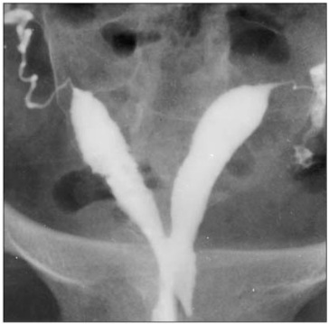
A Útero bicorno; ultrassonografia 3D
B Útero septado; ressonância magnética
C Útero didelfo; histeroscopia
D Útero arqueado- ressonância magnética.
Questão 2 · Ginecologia · 4000193839Mulher de 50 anos refere diminuição do desejo sexual há 1 ano. Associado ao quadro refere que está sem menstruar há 8 meses e que os ciclos estão cada vez mais irregulares. Nega outras queixas associadas. Realizou exames que se encontram normais. Qual das abaixo é uma opção terapêutica para a paciente?
A Estrogênio tópico
B Bupropiona
C Testosterona tópica
D Tibolona
Questão 3 · Ginecologia · 4000193838Paciente de 26 anos vem ao pronto socorro com queixa de dor intensa em região de hipocôndrio direito há 1 dia. Refere que há 10 dias vem apresentando quadro de dor pélvica, associado a sangramento vaginal irregular em pequena quantidade. Está fazendo uso de AINEs sem melhora. Refere que a data da sua última menstruação foi há 14 dias. É usuária de DIU de cobre há 3 anos. Ao exame físico, apresenta temperatura de 38,1 graus, dor à palpação em hipocôndrio direito com descompressão brusca positiva e dor leve à palpação de região hipogástrica. Ao exame especular, apresenta colo friável, com mucorreia intensa. Ao toque vaginal apresenta dor leve à mobilização do colo uterino com anexos livres. Foram realizados exames: AST/ALT, gama GT, fosfatase alcalina, amilase e lipase normais. USG abdome total sem alterações. Diante do exposto, qual é a principal hipótese diagnóstica?
A Hepatite transinfecciosa
B Hepatite medicamentosa
C Pancreatite
D Perihepatite
Questão 4 · Ginecologia · 4000193837Mulher de 34 anos vem ao ambulatório de ginecologia queixando-se de dor em região pélvica há 2 anos. Refere que a dor vem se intensificando e que nota piora durante o trabalho. Trabalha como secretária em um consultório. Associado ao quadro apresenta dispareunia de profundidade. Nega dismenorreia, sintomas urinários ou gastrintestinais. Já teve duas gestações, com dois partos normais anteriores. Nega doenças ou cirurgias prévias. Ao exame físico, não apresenta alterações significativas, além de dor leve à palpação de hipogástrio. Realizou ressonância magnética de pelve que não demonstrou alterações. Diante do exposto, qual é a sua principal hipótese diagnóstica e qual o melhor exame para investigação?
A Aderências pélvicas; laparoscopia
B Endometriose; ultrassonografia com preparo intestinal
C Congestão pélvica; venografia
D Vulvodínea; tip test
Questão 5 · Ginecologia · 4000193836Mulher de 70 anos vem apresentando perdas urinárias há 5 anos. Refere que apresenta uma vontade muito grande de urinar e não consegue chegar ao banheiro. Associado ao quadro apresenta aumento de frequência de micções e noctúria. Iniciou tratamento com treinamento vesical e sioterapia há 2 anos, mas não obteve melhora. Apresenta como antecedentes demência em estágio inicial e hipertensão. Qual a melhor opção terapêutica para essa paciente no momento?
A Oxibutinina
B Imipramina
C Toxina botulínica
D Darifenacina
Questão 6 · Ginecologia · 4000193835Paciente de 62 anos de idade foi submetida a laparotomia para avaliação de um tumor ovariano. No intraoperatório foi evidenciada uma lesão circunscrita no peritônio, recoberta por tecido broso e com material gelatinoso em seu interior. Na cirurgia, também foi possível evidenciar que a cápsula do tumor ovariano estava rompida. Diante dos achados intraoperatórios, qual é o provável subtipo histológico do tumor ovariano?
A Adenocarcinoma seroso
B Fibroma
C Adenocarcinoma mucinoso
D Teratoma maduro
Questão 8 · Ginecologia · 4000193833Mulher de 19 anos de idade, nuligesta, ciclos irregulares, ocorrendo a cada 50–70 dias, IMC = 29 kg/m² , PA = 125 x 90 mmHg. Apresenta hirsutismo (Índice de Ferriman Gallwey = 9) e acne. Exames subsidiários: Beta HcG, Glicemia de jejum = 110 mg/dL, TSH, prolactina e 17-OH Progesterona normais. Qual é a conduta inicial indicada para o distúrbio metabólico desta paciente?
A Perda de peso.
B Pílula combinada
C Antiandrogênio
D Metformina
Questão 9 · Ginecologia · 4000193832Mulher de 21 anos de idade, menarca aos 11 anos, refere ciclos menstruais irregulares, a cada 40 – 70 dias. Apresenta aumento da oleosidade da pele, acne e hirsutismo (índice de Ferriman = 9). Primeira relação sexual aos 20 anos, refere uso de preservativo. Ao exame IMC = 30 Kg/m² ; PA = 112 x 73 mmHg. Além da orientação quanto a perda de peso com a prática de atividade física e dieta, qual é o tratamento medicamentoso indicado?
A Metformina
B Espironolactona
C SIU de levonorgestrel
D Pílula combinada
Questão 10 · Ginecologia · 4000193831Mulher, 46 anos de idade, secundípara, procura atendimento ginecológico referindo sangramento menstrual volumoso com coágulos há 2 dias. Refere que os ciclos sempre foram regulares, com intervalos de 28 dias e duração de quatro a cinco dias em moderada quantidade, porém, há cerca de um ano, começaram apresenta irregularidade, sendo que os intervalos entre as menstruações começaram a aumentar, com falhas em alguns ciclos e volume menstrual aumentado em alguns ciclos. Sem outras queixas, nega uso de medicações, última relação sexual há dois anos. Ao exame físico: PA = 120 x 80 mmHg; FC = 98 bpm; descorada 1+/4. IMC 26 kg/m² Especular: sem lesões de vagina ou colo, com saída ativa de sangue pelo OE. Ao toque: útero de volume normal, móvel e indolor; anexos livres. Nesse caso, qual é a etiologia mais provável?
A Estrutural – adenomiose.
B Não estrutural – disfunção ovulatória.
C Não estrutural – coagulopatia.
D Estrutural – miomatose uterina.
Questão 11 · Ginecologia · 4000193830Mulher, 71 anos de idade, menopausa aos 49 anos, hipertensa e obesa. Comparece ao serviço de ginecologia referindo sangramento genital esporádico há 1 mês. IMC = 32,3 kg/m² . Segue a imagem da ultrassonogra a transvaginal. Foi submetida a biópsia de endométrio ambulatorial com resultado normal. Qual é a conduta indicada?
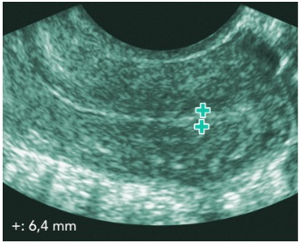
A Solicitar ressonância magnética da pelve.
B Seguimento ultrassonográfico em 6 meses.
C Solicitar histeroscopia diagnóstica.
D Indicar histerectomia
Questão 12 · Ginecologia · 4000193829Mulher, 29 anos de idade, 2G2PC, comparece ao serviço de ginecologia com sangramento uterino anormal (SUA). Nega comorbidades ou uso de medicamentos. Exame físico sem alterações. Segue a imagem da ultrassonografia transvaginal a seguir: Considerando a classificação da FIGO em relação ao Sangramento Uterino Anormal - SUA (PALM-COEIN), qual é o diagnóstico mais provável?

A SUA-A.
B SUA-L.
C SUA-N.
D SUA-M.
Questão 13 · Ginecologia · 4000193828Menina de 13 anos de idade, virgem, comparece ao ginecologista se queixando de uxo menstrual aumentado desde a menarca, há 1 ano. Refere que as menstruações são regulares e duram 10 dias, com coágulos. Queixa-se de hematomas sem saber onde se machucou. Exame físico: IMC = 22 kg/m² , PA = 100 x 60 mmHg, FC = 85 bpm, descorada 1+/4+. Qual é a conduta indicada para esse caso?
A Orientar a paciente que se trata de quadro fisiológico nos primeiros anos após a menarca.
B Solicitar dosagens hormonais para investigar endocrinopatias.
C Solicitar ultrassonografia pélvica para investigar SOP.
D Solicitar hemograma e coagulograma.
Questão 14 · Ginecologia · 4000193827Mulher de 51 anos de idade, G2P2, queixa-se de dismenorreia progressiva e uxo menstrual aumentado há 1 ano. Exame físico sem alterações. A imagem da ultrassonografia pode ser observada abaixo. Considerando o caso exposto, assinale a alternativa que descreve a principal hipótese diagnóstica:
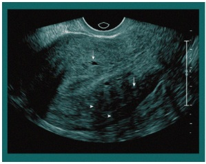
A Endometriose
B Miomatose
C Adenomiose
D Doença inflamatória pélvica
Questão 15 · Ginecologia · 4000193826Mulher, 25 anos de idade, com diagnóstico de Síndrome dos Ovários Policísticos (SOP), deseja engravidar. Menarca aos 13 anos de idade, com história de irregularidade menstrual e amenorreia esporádica. IMC = 31 kg/m² . Escore de Ferriman = 9. Assinale a alternativa mais adequada para o tratamento desta paciente:
A Clomifeno
B FSH
C Drilling
D Letrozol
Questão 16 · Ginecologia · 4000193825Mulher de 47 anos de idade, 3G3P, com quadro de sangramento uterino anormal nos últimos 4 meses. Refere dismenorreia e aumento de uxo menstrual. Ao exame ginecológico foi observado útero pouco aumentado, bocelado. A ultrassonogra a transvaginal mostrou múltiplos miomas. Qual é a conduta mais indicada para esse caso?
A Acetato de medroxiprogesterona.
B Anticoncepcional oral combinado.
C Miomectomia.
D SIU de levonorgestrel.
Questão 17 · Ginecologia · 4000193824Mulher de 41 anos de idade, 1G1P, refere dismenorreia progressiva associada a disúria, principalmente no período menstrual. Exame físico ginecológico sem alterações. Qual é a conduta diagnóstica para esse caso?
A Videolaparoscopia.
B Ultrassonografia pélvica com preparo intestinal.
C Tomografia computadorizada.
D Dosagem de CA-125.
Questão 18 · Ginecologia · 4000193823Mulher de 44 anos de idade, refere nódulo doloroso em mama esquerda, retroareolar há seis meses. Ao exame físico nota-se nódulo bem delimitado de 2 cm de diâmetro na região retroareolar da mama esquerda. Ausência de linfonodomegalia axilar bilateralmente. A imagem da ultrassonogra a pode ser observada a seguir: Nesse caso, qual deve ser a conduta a ser adotada?
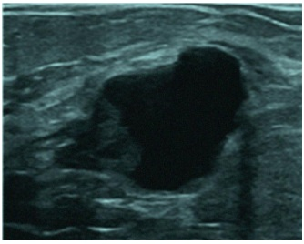
A Seguimento de rotina.
B Punção aspirativa por agulha fina.
C Biópsia com agulha grossa da cápsula da lesão.
D Mamotomia.
Questão 19 · Ginecologia · 4000193822Mulher de 56 anos de idade, refere secreção mamilar citrina do mamilo esquerdo há três meses. Ao exame físico foi observada saída de secreção citrina do mamilo esquerdo. Sem nódulos ou espessamentos mamários e ausência de linfonodomegalias. Qual é a hipótese diagnóstica nesse caso?
A Carcinoma in situ.
B Doença de Paget.
C Papiloma intraductal.
D Ectasia ductal.
Questão 20 · Ginecologia · 4000193821Mulher de 42 anos de idade, G1P1, tabagista, em uso de SIU de levonorgestrel. Se queixa de saída esporádica de pus pela aréola, sendo esta a terceira vez que acontece. Refere que usou antibiótico das outras vezes, com melhora do quadro. A imagem da mama acometida é apresentada a seguir. Qual é a hipótese diagnóstica para esse caso?
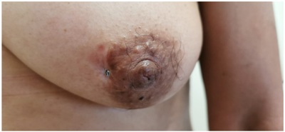
A Doença de Paget.
B Mastite crônica.
C Mastite periareolar recidivante.
D Doença de Mondor.
Questão 21 · Ginecologia · 4000193820Mulher de 49 anos de idade, parda, 1G1P, menarca aos 13 anos de idade, ciclos regulares, sem antecedentes de patologias mamárias. Refere que a mãe teve câncer de mama diagnosticado aos 49 anos de idade. Cálculo do risco de câncer de mama pelo modelo de Gail com um resultado e de 22,3% (considerando a vida inteira da paciente). Deseja usar medicamento para a prevenção do câncer de mama porque não gostaria de ser submetida a cirurgia profilática. Qual seria a medicação indicada para essa paciente?
A Cabergolina
B Anastrozol
C Tamoxifeno
D Letrozol
Questão 22 · Ginecologia · 4000193819Mulher com 29 anos de idade, 1G1P, sem antecedentes pessoais de patologias mamárias. Refere que a irmã teve câncer de mama com 34 anos e realizou estudo genético que apresentou mutação do BRCA 1. A paciente ainda não realizou o estudo genético. Qual é a melhor forma de realizar o rastreamento do câncer de mama nessa paciente?
A Mamografia anual.
B Tomossíntese anual.
C Mamografia e ressonância magnética anuais.
D Mamografia e ultrassonografia semestrais.
Questão 23 · Ginecologia · 4000193818Mulher de 38 anos de idade, G3P3, laqueadura tubária há 3 anos. Apresenta história familiar de mãe com câncer de mama diagnosticada aos 48 anos de idade e irmã com câncer de mama diagnosticado aos 44 anos de idade. Foi submetida a investigação genética que apresentou mutação do BRCA 1. Mamogra a e ultrassonografia sem alterações. Qual é a conduta mais indicada para este caso?
A Rastreamento do câncer de mama com mamografia e ressonância.
B Quimioprevenção do câncer de mama com anastrozol.
C Discutir com a paciente a possibilidade de mastectomia e salpingooforectomia profilática.
D Oferecer a adenomastectomia profilática.
Questão 24 · Ginecologia · 4000193817Mulher de 61 anos de idade, foi submetida a histerectomia total, salpingooforectomia bilateral por videolaparoscopia. O estudo anatomopatológico mostrou adenocarcinoma endometrióide do endométrio grau I, invadindo 40% do miométrio, sem invasão de colo ou anexos, ausência de sinais de embolização angiolinfática. Qual deve ser a conduta indicada?
A Seguimento.
B Complementar o tratamento cirúrgico com linfadenectomia.
C Tratamento adjuvante com radioterapia.
D Tratamento adjuvante com quimioterapia e radioterapia.
Questão 25 · Ginecologia · 4000193816Lactante, no 9º dia após o parto, se queixa de baixa produção de leite. Considerando este caso, assinale a alternativa que descreve a fase da lactação que a paciente se encontra e a conduta indicada:
A Lactopoese, orientar a técnica adequada e o aumento da frequência e duração da amamentação.
B Lactogênese, prescrever Cabergolina.
C Lactopoese, prescrever Metoclopramida.
D Mamogênese, prescrever sulpirida.
Questão 26 · Tratamento · 4000193815Mulher de 54 anos, 3G,3P(C),0A, laqueadura tubária há 18 anos, menopausada há 3 anos, refere sangramento vaginal esporádico há 4 meses. Realizada histeroscopia com biópsia que revelou hiperplasia endometrial sem atipias. A conduta indicada é:
A Histerectomia
B SIU levonorgestrel
C Seguimento com biópsia em 6 meses
D Expectante
Questão 27 · Ginecologia · 4000193814Paciente do sexo feminino, 28 anos, refere dor nas mamas relacionada ao período menstrual. Nega comorbidades e nega antecedentes familiares de câncer. Ao exame físico mamário não foram observadas anormalidades. A ultrassonogra a das mamas resultou BI-RADS 1. Dentre as alternativas, qual é a primeira opção medicamentosa para este caso?
A Vitamina E
B Cabergolina
C Tamoxifeno
D Anti-inflamatório não esteroidal
Questão 28 · Ginecologia · 4000193813Paciente de 30 anos, G1P1C há 5 anos, em uso de DIU de cobre há 2 meses, evolui com aumento de dor em baixo ventre. Nega febre ou corrimento vaginal. Segue a imagem da ultrassonografia transvaginal: Qual o diagnóstico e conduta?
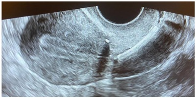
A Doença inflamatória pélvica. Manter DIU e iniciar antibioticoterapia.
B DIU bem posicionado. Realizar analgésicos e anti-inflamatórios.
C DIU mal-posicionado. Reposicionar DIU via histeroscopia diagnóstica.
D DIU mal-posicionado. Retirar DIU e realizar inserção de novo dispositivo.
Questão 29 · Ginecologia · 4000193812Paciente de 27 anos vem para a consulta ginecológica para escolha de método contraceptivo. G1P1. Nega comorbidades ou alergias. Deseja método e caz e que reduza o uxo menstrual. Refere cirurgia bariátrica (bypass gástrico) há 2 anos. Atualmente pesa 95 kg (peso anterior 140 kg). Nega tabagismo. Exame ginecológico sem alterações. PA: 110x80 mmhg. Dentre os métodos abaixo, qual seria o mais adequado para ela?
A Diafragma
B Diu de cobre.
C Adesivo transdérmico
D Diu liberador de levonorgestrel
Questão 30 · Ginecologia · 4000193811Segundo a lei 14443 de 02/09/2022, que modificou a lei 9263 sobre planejamento familiar, está correto:
A Homens e mulheres com capacidade civil plena, mais de 25 anos ou mais de 2 filhos vivos podem solicitar esterilização cirúrgica.
B Homens e mulheres com capacidade civil plena, mais de 21 anos e mais de 1 filho vivo podem solicitar esterilização cirúrgica.
C A laqueadura pode ser realizada no momento do parto desde que a paciente tenha manifestado a vontade por escrito há, no mínimo, 60 dias.
D Há necessidade de assinatura do cônjuge em casos de sociedade conjugal.
Questão 31 · Ginecologia · 4000193810Paciente de 45 anos, G3P3N, foi encaminhada para serviço especializado de patologia do trato genital inferior devido alteração na colpocitologia oncótica: lesão intraepitelial de alto grau. Foi realizada colposcopia com o seguinte resultado: Diante desse achado, qual deve ser a conduta?

A Exérese de zona de transformação.
B Histerectomia.
C Avaliar presença de lesão de vagina associada.
D Biópsia em quatro quadrantes.
Questão 32 · Ginecologia · 4000193809Paciente de 22 anos, nuligesta, foi encaminhada para serviço especializado de patologia do trato genital inferior devido alteração na colpocitologia oncótica. Teve sexarca aos 15 anos e 8 parceiros sexuais. Não tomou vacina contra hpv. nega comorbidades. Colpocitologia oncótica: lesão intraepitelial de alto grau. Foi realizada colposcopia com o seguinte achado: O resultado da biópsia de colo foi nic 2. Qual a conduta?
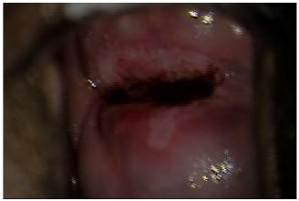
A Repetir citologia e colposcopia em 12 meses.
B Exérese de zona de transformação.
C Histerectomia.
D Repetir citologia e colposcopia em 6 meses.
Questão 33 · Ginecologia · 4000193808Sobre os testes moleculares para pesquisa de hpv, assinale a alternativa correta:
A Ficam positivos após a vacinação contra hpv.
B Devem ser realizados, segundo o ministério da saúde, em todas as mulheres acima de 21 anos.
C Possuem elevado valor preditivo negativo.
D Diante de hpv 16 + e citologia ascus está indicada exérese de zona de transformação.
Questão 34 · Ginecologia · 4000193807Paciente de 52 anos, G3P3C, refere episódios de sinusorragia frequentes. Foi várias vezes à urgência, porém só fazia uso de anti brinolíticos. ao ser encaminhada ao ginecologista, o exame físico mostrou tumoração em colo uterino de aproximadamente 5 cm, com extensão para terço inferior da vagina e paramétrios comprometidos bilateralmente. Qual o estadiamento (figo 2018)?
A IA
B IIB
C IIIA
D IIIB
Questão 35 · Ginecologia · 4000193806Paciente de 55 anos portadora de doença de crohn refere prurido vulvar há mais de 10 anos e infecções urinárias de repetição. Realizou tratamento com antifúngicos no início do quadro apenas. O exame da vulva está na imagem abaixo: Qual hipótese diagnóstica e conduta?

A Líquen simples crônico. Corticoide.
B Líquen escleroso. Corticoide.
C Líquen escleroso. Biópsia.
D Sinéquia de pequenos lábios. Estrogênio tópico.
Questão 36 · Ginecologia · 4000193805Paciente de 60 anos, diabética descompensada refere prurido vulvar crônico. O exame da vulva está na imagem abaixo: Qual hipótese diagnóstica e conduta?

A Líquen escleroso. Corticoide tópico.
B Câncer de vulva. Biópsia incisional.
C Câncer de vulva. Biópsia excisional.
D Condiloma acuminado. Laser de CO₂.
Questão 37 · Ginecologia · 4000193804Paciente de 60 anos com relato de corrimento vaginal amarelado em grande quantidade e sem odor. Ao ef, ph vaginal de 5,5, corrimento amarelo bolhoso, sem odor fétido. Microscopia do conteúdo vaginal: aumento de polimofonucleares com predomínio de células parabasais e basais. Qual sua hipótese diagnóstica?
A Tricomoníase.
B Vaginite atrófica.
C Vaginite inflamatória descamativa.
D Vaginose citolítica.
Questão 38 · Ginecologia · 4000193803Sua paciente tem 30 anos está gestante de 30 semanas e refere corrimento com prurido intenso. A microscopia com conteúdo vaginal evidenciou aumento de polimorfonucleares e presenças de hifas. Qual das alternativas traz a melhor opção de tratamento?
A Fluconazol 150 mg, VO, dose única.
B Nistatina via vaginal por 7 dias.
C Miconazol via vaginal por 7 dias.
D Metronizadol via vaginal por 5 dias.
Questão 39 · Ginecologia · 4000193802Casal está tentando engravidar há 1 ano sem sucesso. Ambos têm 36 anos, sem comorbidades e nunca tiveram filhos. A paciente relata ciclos regulares, com fluxo normal. Seguem seus exames: Paciente: fsh 5 mui/ml, tsh 1,0 ui/ml, prolactina 10 ng/ml. Histerossalpingografia: obstrução tubária bilateral com hidrossalpinge. Ultrassonografia transvaginal: normal Espermograma do parceiro: volume 3 ml, concentração 20 milhões/ml, a+b 40%, kruger 5% Qual o tratamento para o casal?
A Fertilização in vitro (FIV) com óvulos doados.
B Inseminação intrauterina.
C Salpingectomia bilateral + FIV
D Indução de ovulação com letrozol.
Questão 40 · Ginecologia · 4000193801Sobre as normas éticas do CFM para reprodução assistida:
A No laudo de embriões biopsiados é permitido o resultado do cariótipo.
B O número máximo de embriões que podem ser gerados é 8.
C A idade máxima para doação de óvulos é de 35 anos.
D A idade máxima para doação de espermatozoides é de 50 anos.
Questão 41 · Ginecologia · 4000193800Sobre o cuidado ginecológico em transgêneros:
A O rastreio do câncer de colo deve ser mantido segundo as orientações do Ministério da Saúde.
B Se o paciente realizou retirada das mamas, não precisa realizar mamografia de rastreamento.
C Pacientes que utilizam testosterona não precisam de anticoncepção.
D A cirurgia para redesignação de sexo pode ser realizada a partir dos 14 anos.
Questão 42 · Ginecologia · 4000193799Mulher de 35 anos, relata amenorréia há 6 meses, associada com ressecamento vaginal e dispareunia. Estatura = 1,64 m e peso = 45 kg. Seguem alguns exames: Ultrassonografia transvaginal: útero de volume normal com eco endometrial 3 mm. Ovários normais. FSH: 0,5 mUI/mL TSH e prolactina normais. O diagnóstico mais provável é:
A Insuficiência ovariana prematura.
B Amenorréia hipotalâmica.
C Síndrome de Sheehan.
D Hiperprolactinemia.
Questão 43 · Ginecologia · 4000193798Paciente de 27 anos refere amenorreia há 7 meses. Refere ciclos anteriores regulares, com volume normal. G1P1C(há 5 anos)A0. Está em tratamento para depressão com benzodiazepínicos. Seguem os exames complementares: Beta hcg: negativo TSH 2 mUi/mL FSH 0,8 mUi/mL Prolactina 58 ng/mL Qual a hipótese diagnóstica:
A Amenorreia funcional.
B Hiperprolactinemia por fármacos.
C Hiperprolactinemia por provável tumor no sistema nervoso central.
D Hipertireoidismo.
Questão 44 · Ginecologia · 4000193797Paciente de 17 anos, refere nunca ter menstruado. Ao exame físico, desenvolvimento puberal M2P1, com presença de abaulamento na região inguinal. Ao exame de imagem, útero ausente. O cariótipo é 46XY. Qual o diagnóstico?
A Síndrome de Turner
B Síndrome de Morris
C Síndrome de Rokitansky
D Disgenesia gonadal pura
Questão 45 · Ginecologia · 4000193796Mulher, 37 anos, chega a Serviço de Emergência trazida pelo SAMU. Refere agressão sexual pelo parceiro. Relata que ele a manteve em situação de cárcere nos últimos 2 anos, após ela ter pedido o divórcio. Última atividade sexual há 12 horas, com coito vaginal e anal, sem uso de preservativo. DUM: não recorda. Ao exame ginecológico, presença de laceração em fundo de saco extensa com sangramento ativo. Em relação ao atendimento a ser prestado, pode-se afirmar que:
A Você deve realizar o atendimento após a comunicação à autoridade policial.
B A profilaxia para HIV deve ser realizada com Tenofovir, Lamivudina e Dolutegravir por 28 dias.
C A conduta deve ser correção da laceração (prioridade), notificação do caso à vigilância epidemiológica, solicitação de sorologias e de beta-hcg.
D A conduta deve ser correção da laceração (prioridade), notificação do caso à vigilância epidemiológica e a autoridade policial, solicitação de sorologias e de beta-hcg.
Questão 46 · Ginecologia · 4000193795Paciente de 21 anos, sexualmente ativa, vai a consulta ginecológica com queixa de lesões genitais dolorosas há 3 dias. Refere quadro gripal há 1 semana, com febre e mialgia. Nega atividade sexual no último mês. Nega alergias ou comorbidades. Nega lesões em outros locais. Nega quadro semelhante anterior. Porta sorologias: anti HIV não reagente/ HBsAg não reagente/ VDRL não reagente / anti HCV não reagente. Ao exame da vulva, observou-se a seguinte lesão: Qual a melhor hipótese diagnóstica?
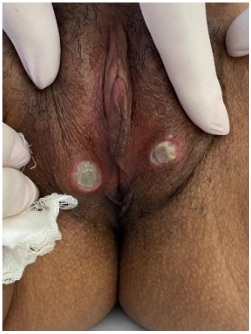
A Doença de Behçet.
B Herpes genital.
C Cancro Duro.
D Úlcera de Lipschutz.
Questão 47 · Ginecologia · 4000193794Criança de 3 anos foi levada à urgência devido ao aparecimento das lesões abaixo há cerca de 3 semana. Mãe trabalha em regime de plantão e deixa a criança na casa da vizinha. Qual a hipótese dianóstica e tratamento?

A Sarcoma Botrioide. Exérese das leões.
B Condilomas. Ácido Tricloroacético.
C Herpes genital. Aciclovir.
D Sífilis. Penicilina.
Questão 48 · Ginecologia · 4000201169Paciente de 60 anos, 4G4Pn, vem ao ambulatório de ginecologia com queixa de “bola na vagina”. Foi realizada a avaliação por meio do POP-Q, que se encontra abaixo: Diante do quadro da paciente, qual seria a melhor conduta no momento?
A Colpoplastia posterior e anterior.
B Cirurgia de Burch.
C Histerectomia + sacrocolpofixação e colpoplastia posterior.
D Histerectomia vaginal + colpoplastia anterior.
E Perineoplastia.
Questão 49 · Ginecologia · 4000201168Mulher de 34 anos vem ao ambulatório de ginecologia com quadro de sangramento genital durante as relações sexuais. O exame ginecológico revela tumoração cervical de cerca de 3 cm, restrita ao colo uterino. Vagina e paramétrios estão livres. Não possui exames complementares. Considerando o quadro acima, no momento, qual é a conduta imediata, o provável estadiamento e o tratamento mais adequado para essa paciente?
A Colposcopia, Ib3, radioterapia.
B Biópsia do colo, Ib1, radioterapia.
C Conização, Ia2, histerectomia Piver II.
D Colposcopia, Ia3, conização do colo.
E Biópsia do colo, Ib2, histerectomia Piver III.
Questão 50 · Ginecologia · 4000201167Adolescente de 16 anos é trazida ao ambulatório de ginecologia por ausência de menstruação. A mãe refere que a menina apresentou desenvolvimento normal desde a infância e que não tem di culdades de aprendizado. No exame físico, foi evidenciado um estágio M5P4 de Tanner. Foi solicitada uma ultrassonogra a pélvica que evidenciou ausência de útero. Diante do quadro, qual dos exames abaixo será fundamental para o diagnóstico da paciente?
A FSH.
B Cariótipo.
C Estradiol.
D TSH.
E Prolactina.
Questão 51 · Ginecologia · 4000201166Paciente de 22 anos vem em consulta referindo o aparecimento de lesões em região genital há 3 dias. Refere que tem vida sexual ativa, sem parceiro xo e com uso eventual de preservativo. Ao exame, apresenta úlceras dolorosas, com bordas irregulares e com presença de secreção amarelada. Também apresenta um linfonodo aumentado em região inguinal com sinais ogísticos. Foi realizado o raspado da lesão e evidenciada a presença de bacilos Gram-negativos dispostos “em cardume de peixe”. Qual é o tratamento mais adequado para essa paciente?
A Aciclovir 400 mg VO 8/8h por 7 dias.
B Penicilina benzatina 2.400.000 Ui IM em dose única.
C Azitromicina 1 g VO em dose única.
D Doxicilina 100 mg VO 12/12 horas por 21 dias.
E Ceftriaxone 1 g IM em dose única.
Questão 52 · Ginecologia · 4000201165Paciente de 28 anos deseja iniciar método contraceptivo. A paciente apresenta ciclos regulares, com dismenorreia importante e sangramento por 7 dias. Refere que recebeu o diagnóstico de hipertensão recentemente e que ainda não conseguiu controlar os níveis pressóricos. No momento, a PA estava em 162 x 100 mmHg. Diante do exposto, qual seria o melhor método para essa paciente, entre os listados abaixo?
A Anel vaginal.
B DIU de cobre.
C DIU de levonorgestrel.
D Pílula combinada.
E Injetável trimestral.
Questão 53 · Ginecologia · 4000199955Paciente do sexo feminino, 58 anos, G1 P1 A0, comparece à UBS para apresentar mamogra a de rastreamento cujo resultado foi BI-RADS 3. A mulher encontra-se assintomática e não apresenta comorbidades ou antecedentes familiares de câncer. O exame físico mamário não apresenta alterações. Qual é a conduta para esse caso?
A Solicitar uma ultrassonografia complementar para esclarecer se a lesão encontrada na mamografia é suspeita de malignidade ou não.
B Prosseguir com a rotina de rastreamento e solicitar uma nova mamografia em 2 anos.
C Encaminhar para o serviço de referência em oncologia para fazer uma biópsia.
D Somente acompanhar com uma nova mamografia em 6 meses.
Questão 54 · Ginecologia · 4000199954Paciente do sexo feminino, 59 anos, menopausa aos 50 anos de idade, hipertensa e obesa, apresenta-se ao ginecologista referindo sangramento genital esporádico há 2 meses. Nega uso de terapia hormonal. Não foram observadas alterações no exame físico ginecológico O ultrassom transvaginal apresenta um eco endometrial medindo 10 mm, útero de 39 cm³, e os ovários não foram visualizados. Qual é a conduta para esse caso?
A Seguimento ultrassonográfico em 6 meses.
B Histerectomia + salpingooforectomia bilateral.
C Histeroscopia diagnóstica e biópsia.
D Ablação endometrial.
Questão 55 · Ginecologia · 4000199953Mulher, com 46 anos de idade, comparece à Unidade Básica de Saúde com pedido para fazer uma mamogra a. Refere que uma tia materna teve câncer de mama aos 52 anos de idade. Ao exame físico mamário, não apresenta nódulos ou espessamentos. Axilas livres e expressão negativa bilateralmente. De acordo com a diretriz do Ministério da Saúde, qual é a conduta indicada para essa paciente?
A Solicitar a mamografia imediatamente e repetir anualmente.
B Solicitar a mamografia e repetir a cada 2 anos.
C Não solicitar a mamografia e iniciar o rastreamento mamográfico aos 50 anos de idade, repetindo o exame a cada 2 anos.
D Não solicitar a mamografia e iniciar o rastreamento mamográfico aos 50 anos de idade, repetindo o exame todo ano.
Questão 56 · Ginecologia · 4000199952Paciente do sexo feminino de 39 anos de idade, 3G3PN, comparece à Unidade Básica Saúde referindo aumento do uxo menstrual há 4 meses. Método anticoncepcional: laqueadura há 9 anos. Ao exame físico ginecológico, foi observado útero aumentado de volume, contornos bocelados e consistência brelástica. O ultrassom apresentou útero de 340 cm³, com múltiplos nódulos hipoecogênicos. Qual é a conduta indicada para essa paciente?
A Histerectomia total abdominal.
B Miomectomia laparoscópica.
C Análogo de GnRH.
D Progestágeno.
Questão 57 · Ginecologia · 4000199951Paciente do sexo feminino, de 25 anos, fez colpocitologia oncótica com resultado de células escamosas atípicas de significado indeterminado, possivelmente não neoplásicas (ASCUS). Refere corrimento acinzentado e fétido. Qual é sua conduta?
A Tratar corrimento e repetir exame em 36 meses.
B Tratar corrimento e repetir exame em 12 meses.
C Não tratar corrimento e encaminhar para colposcopia.
D Tratar corrimento e encaminhar para colposcopia.
Questão 59 · Ginecologia · 4000199920Paciente de 33 anos chega ao seu consultório com queixas de sangramento menstrual com duração de 10 dias e com uxo aumentado há 1 mês, após quadro de trombose venosa profunda. Referes ciclos anteriores de 5 dias, uxo normal. G2P2CA0, último parto há 9 anos, ocasião em que teve um tromboembolismo pulmonar. Atualmente em uso de rivaroxabana e noripurum. Ao exame físico, hipocorada (2+/4+), fundo uterino não palpado, exame especular sem alterações. Qual das alternativas abaixo é a melhor opção para o controle do sangramento anormal?
A Ácido tranexâmico e antinflamatório
B Pílula combinada
C Pílula somente de progesterona
D Estrogênio venoso
Questão 60 · Ginecologia · 4000199919Paciente de 37 anos refere menstruações de 5 dias, de uxo aumentado e muitas cólicas associadas. Porta ultrassonogra a com o seguinte laudo: útero em AVF, volume 487 cm³, múltiplos miomas intramurais, sendo o maior deles com 7,9 cm, eco endometrial 10 mm, ovários normais. G3P3CA0. Colpocitologia oncótica: satisfatória, epitélio escamoso e glandular, lesão intraepitelial de baixo grau. Colposcopia com biópisa: NIC 1. Qual deve ser a conduta quanto a realização da histerectomia nesse caso?
A Realizar histerectomia radical devido NIC 1
B Não realizar histerectomia antes da avaliação após conização
C Realizar a histerectomia e realizar acompanhamento de colpocitologia oncótica em 6 meses
D Cauterizar o colo uterino antes da histerectomia
Questão 61 · Ginecologia · 4000199918Paciente de 60 anos com diagnóstico de líquen escleroso há 5 anos com seguimento irregular, chega ao consultório com queixa de prurido e aparecimento de manchas escuras na vulva. G1P1A0, sem outras comorbidades. Última colpocitologia oncótica há 1 ano com resultado normal. Segue a imagem do exame físico: Além do líquen escleroso em atividade, qual o outro diagnóstico e orientação que você daria para a paciente?
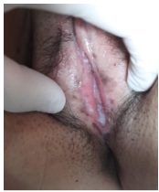
A NIV de alto grau, tratamento excisional
B Condiloma, tratamento destrutivo
C Melanose vulvar, conduta expectante
D NIV diferenciada, tratamento excisional
Questão 62 · Ginecologia · 4000199917Paciente de 37 anos refere perda urinária aos pequenos esforços. Nega disúria. G3P3CA0. Nega tabagismo ou etilismo. Ao exame físico, presença de perda urinária a manobra de valsalva e cistocele grau 1. Realizou urocultura com resultado negativo e estudo urodinâmico com o laudo a seguir: bexiga com capacidade normal, ausência de contrações não inibidas do detrusor. Presença de perda urinária a partir de 200 ml de soro infundido, com pressão de perda de 93 cmH2O. Qual a conduta para a paciente:
A Oxibutinina
B Fisioterapia pélvica
C Sling retropúbico
D Colposplastia anterior.
Questão 63 · Ginecologia · 4000199916Paciente de 26 anos, nuligesta, chega ao seu consultório com citologia de lesão intraepitelial de alto grau. Você realiza colposcopia e observa epitélio acetobranco denso de 8 às 11 horas, margeando a junção escamocolunar. Realiza a biópsia com o seguinte laudo: NIC 2 com expressão difusa da p16 em toda espessura do epitélio. Diante de tal resultado, qual deve ser a sua conduta?
A Repetir citologia e colposcopia em 6 meses
B Exérese de zona de transformação
C Laser de CO2
D Cauterização
Questão 64 · Ginecologia · 4000199915Paciente de 27 anos com queixa de corrimento branco acinzentado com odor fétido. Refere 5 episódios no último ano. Qual a conduta preconizada, segundo o Ministério da Saúde?
A Metronidazol vaginal por 10 noites, seguido de ácido bórico vaginal por 21 dias, seguido de metronidazol vaginal 2x/semana
B Clindamicina 2% creme vaginal
C Clindamicina oral por 14 dias
D Fluconazol semanal por 6 meses.
Questão 65 · Ginecologia · 4000199914Paciente de 50 anos refere ondas de calor que atrapalham seu sono e atividades cotidianas. Refere ciclos menstruais regulares, com intervalo de 24 dias entre os ciclos (anteriormente o intervalo era de 30 dias). Hipertensa controlada. Nega outras comorbidades, tabagismo ou etilismo. Exames complementares: Colpocitologia oncótica: negativa para neoplasia. Mamografia: BIRADS2 TGO 20 TGP 17 Hemograma normal Colesterol total 180 LDL 90 HDL 55 Qual a melhor terapêutica nesse caso ?
A Estradiol + norestiterona transdérmico
B Estradiol + norestiterona oral
C Estriol vaginal
D Fluoxetina
Questão 66 · Ginecologia · 4000199913Uma mulher de 17 anos de idade apresenta amenorreia primária e seu parceiro reclama de muita di culdade para completar a penetração vaginal no ato sexual. Ao exame físico, nota-se genitália externa feminina com vagina curta, em fundo cego. A ultrassonogra a realizada em consultório revelou ausência de útero. Foi solicitado, então, um cariótipo, cujo resultado foi 46, XY. Com base nesse caso hipotético, assinale a alternativa que apresenta o diagnóstico mais provável:
A Síndrome de Rokitansky
B Síndrome de Morris
C Síndrome de Swyer
D Síndrome de Turner
Questão 67 · Ginecologia · 4000199912Diante da gravidez da Claúdia Raia aos 55 anos, muitas pacientes vieram com questionamentos sobre a reserva ovariana feminina. Sobre esse assunto, é correto afirmar que:
A O uso de contraceptivos anovulatórios consegue retardar a queda da reserva ovariana
B O melhor preditor de reserva ovariana é o hormônio antimulleriano
C A dosagem de hormônio antimulleriano pode ser feita em qualquer fase do ciclo menstrual
D A dosagem do hormônio antimulleriano em paciente usuária de contraceptivo anovulatório aumenta os seus valores em aproxidamente 20%.
Questão 68 · Ginecologia · 4000199911Diante da gravidez da Claúdia Raia aos 55 anos, muitas pacientes vieram com questionamentos sobre detalhes em reprodução assistida. Sobre este tema, é correto afirmar que:
A Em caso de pacientes com baixa reserva ovariana, podem ser utilizados óvulos doados de sua irmã.
B Em caso de casais homoafetivos masculinos, está indicado útero de substituição. A cedente do útero não deve ter relação parental com o casal.
C As técnicas de reprodução assistidas são indicadas para pessoas de até 40 anos
D O casal pode formar, no máximo, 8 embriões em laboratório.
Questão 69 · Ginecologia · 4000199910Paciente de 30 anos, G2P2A0, realiza colpocitologia oncótica com o seguinte resultado: Fonte: atlas de citologia da Organização Mundial de Saúde Qual o laudo citológico?
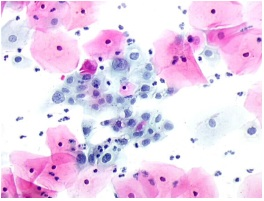
A ASCUS
B LSIL/LIEBG
C HSIL/LIEAG
D AGC
Questão 70 · Ginecologia · 4000199909Mulher, 26 anos, solteira, nuligesta, relata dor em baixo ventre há cerca de duas semanas. Nega alterações urinárias ou gastrointestinais. DUM: há 7 dias. MAC: pílula combinada. Nega uso de preservativo. Ao exame: bom estado geral, TAX: 38,3 °C, dor à palpação do abdome inferior, negativa à manobra de descompressão brusca e ruídos hidroaéreos presentes. Exame ginecológico: hiperemia no colo uterino com secreção amarelada em orifício externo, presença de leucorreia amarelada e, ao toque vaginal, dor significativa à mobilização do útero, sem massas palpáveis. Diante deste quadro, qual a melhor conduta terapêutica?
A Tratamento em regime hospitalar com Clindamicina e Ampicilina endovenosos por 14 dias.
B Tratamento em regime hospitalar com Ceftriaxona e Metronidazol endovenosos por 14 dias.
C Tratamento em regime ambulatorial com Ceftriaxona IM dose única associado à Doxiciclina e Metronidazol, via oral por 14 dias.
D Tratamento em regime ambulatorial com com Ceftriaxona IM, dose única, acrescido de Azitromicina, via oral, dose única.
Questão 71 · Ginecologia · 4000199908Você está diante de paciente de 17 anos que refere dor do tipo cólica intensa sempre um dia antes da menstruação e nos dois primeiros dias dela. Refere ciclos regulares, de 4 dias de duração, uxo normal. Refere menarca aos 13 anos e início das dores aos 15 anos, com alívio parcial com uso de anti-inflamatórios. Sexarca aos 16 anos. Método contraceptivo: preservativo. Exame físico sem anormalidades. Nesse caso, qual seria a conduta mais recomendada?
A Realizar ultrassonografia com preparo intestinal para pesquisa de endometriose
B Associação de ácido tranexâmico com anti-inflamatório
C Uso de anticoncepcional combinado oral
D Inserção de DIU de cobre
Questão 72 · Ginecologia · 4000199907Paciente de 27 anos está tentando engravidar há 2 anos, sem sucesso. É portadora de síndrome dos ovários policísticos, com ciclos menstruais variando entre 30 e 50 dias, mesmo com em acompanhamento nutricional e exercícios físicos 5 vezes por semana. IMC 23 kg/m².O restante da investigação de infertilidade foi normal. Qual o próximo passo?
A Indução de ovulação com letrozol
B Indução de ovulação com gonadotrofinas
C Metformina
D Fertilização in vitro
Questão 73 · Ginecologia · 4000199906Paciente de 25 anos procura orientação após ter sofrido violência sexual por agressor desconhecido. Relata ejaculação vaginal sem preservativo há 5 horas. Método contraceptivo: DIU hormonal. Quais pro laxias devem ser realizadas?
A Levonorgestrel 1,5mg, azitromicina 1g, ceftriaxona 500 mg, Metronidazol 2g, penicilina benzatina 2400000 UI.
B Azitromicina 1g, ceftriaxona 500 mg, Metronidazol 2g, penicilina benzatina 2400000 UI, tenofovir + lamivudina + dolutegravir por 28 dias.
C Levonorgestrel 1,5mg, azitromicina 1g, ceftriaxona 500 mg, Metronidazol 2g, penicilina benzatina 2400000 UI, vacina de HPV
D Azitromicina 1g, ceftriaxona 500 mg, Metronidazol 2g, penicilina benzatina 2400000 UI, vacina de HPV
Questão 74 · Ginecologia · 4000199905Mãe leva menina de 7 anos ao ginecologista com queixas de prurido vulvar crônico com corrimento vaginal. Ao exame físico, nota-se discreta mácula hipocrômica em toda extensão vulvar, sem sinais de hiperemia ou corrimento vaginal. Qual deve ser a conduta?
A Biopsiar a lesão
B Prescrever pamoato de pirvíneo
C Prescrever nistatina vulvar
D Prescrever corticoide de alta potência
Questão 75 · Ginecologia · 4000199904Paciente de 62 anos em tratamento para câncer de mama subtipo Luminal B fez tratamento com quadrantectomia + radioterapia + quimioterapia + hormonioterapia. Relata prurido vulvar, ardência e, por vezes, sangramento vaginal. Porta urocultura recente negativa. Ao exame físico, atro a vulvovaginal intensa. Qual das alternativas abaixo é opção de tratamento para paciente?
A Estradiol transdérmico
B Estriol vaginal
C Laser de CO2 fracionado
D Nistatina vaginal
Questão 76 · Ginecologia · 4000199903Paciente com tumor de colo 1a1 diagnosticado com 15 semanas de gestação. Tem desejo de manter a gravidez. Qual deve ser a conduta?
A Conização
B Traquelectomia
C Quimioterapia neoadjuvante
D Radioterapia
Questão 77 · Ginecologia · 4000199902Em qual das situações abaixo indicamos inseminação intrauterina?
A Mulher, 30a, com ultrassonografia transvaginal normal e histerossalpingrafia com Cottè negativo bilateral. Parceiro com espermograma normal.
B Mulher, 27a, com ultrassonografia normal e histerossalpingografia com Cottè positivo bilateral. Parceiro com espermograma com 2 milhões de espermatozoides progressivos/ml após processamento seminal.
C Mulher, 30a, anovulatória com ultrassonografia sugestiva de ovários policísticos e histerossalpingografia com Cottè positivo bilateral. Parceiro com oligospermia leve e 10 milhões de espermatozoides progressivos/mL, após processamento seminal.
D Mulher 25 anos, anovuladora crônica com parceiro com oligospermia grave
Questão 78 · Ginecologia · 4000199901Mulher procura Pronto Socorro de Ginecologia muito preocupada com o aparecimento de feridas dolorosas em região íntima há 5 dias. Diz que sua última relação sexual foi há uma semana e que seu método contraceptivo é pílula combinada, com uso regular. Exame ginecológico: múltiplas úlceras rasas em terço posterior de grande lábio direito e esquerdo e algumas vesículas contendo líquido citrino. Qual o melhor exame para elucidação diagnóstica?
A Microscopia a fresco do material do fundo da úlcera
B PCR do líquido das vesículas
C Biópsia da lesão
D Sorologia para infecções sexualmente transmissíveis
Questão 79 · Ginecologia · 4000199900Mulher trans de 20 anos procura médico especialista em cirurgia de a rmação de gênero sobre o desejo cirúrgico em finalizar transição. Está em uso de hormonioterapia. Qual das informações abaixo está correta?
A No SUS pode ser realizada após 18 anos;
B No SUS pode ser realizada após 21 anos;
C No serviço privado pode ser realizada após 16 anos
D No serviço privado pode ser realizada após 21 anos
Questão 80 · Ginecologia · 4000199899Eloisa tem 2 lhos, ambos sem comorbidades. Manoel tem 16 anos e Hugo tem 10 anos. Qual deve ser a orientação quanto a vacinação contra HPV no SUS?
A Os dois podem tomar a vacina;
B Nenhum dos dois pode tomar a vacina;
C Somente Manoel toma a vacina, se for sexualmente ativo;
D Somente Hugo toma a vacina.
Questão 81 · Ginecologia · 4000199898Das alternativas abaixo, qual delas fala a favor de puberdade precoce periférica feminina?
A Aumento da velocidade de crescimento
B Idade óssea maior que idade cronológica em dois desvios padrão
C Virilização
D Convulsões
Questão 82 · Ginecologia · 4000199897Paciente de 18 anos, nuligesta, bissexual, refere não ter conseguido completar atividade sexual com sua parceira quando zeram uso de prótese peniana devido a dor intensa. Desde então, não conseguiu ter relações sexuais, por medo. Refere ter sido vítima de violência sexual aos 8 anos, por tio. O ginecologista não conseguiu prosseguir o exame ginecológico, pois não foi possível a introdução do espéculo. Qual a provável hipótese diagnóstica?
A Vulvodínia
B Incongruência de gênero
C Vaginismo
D Rotura perineal
Questão 83 · Ginecologia · 4000199896Paciente de 56 anos, menopausada há 4 anos, refere corrimento vaginal amarelado com disúria há 2 semanas. Refere novo parceiro há 6 meses.Nega terapia de reposição hormonal por “medo de câncer”. Ao exame físico, vulva atró ca, com apagamento de pequenos lábios. Vagina atró ca com corrimento amarelado, algo purulento, com bolhas e hiperemia associada. A microscopia do conteúdo vaginal mostrou células parabasais e aumento de polimorfonucleares. Qual a principal hipótese diagnóstica?
A Vaginite atrófica
B Vaginose citolítica
C Vaginite inflamatória descamativa
D Tricomoníase
Revisar: possível letra faltando em enunciado
Questão 84 · Ginecologia · 4000198980Paciente de 39 anos de idade apresenta câncer de mama do tipo não especial, subtipo molecular luminal A, diagnosticado por biópsia por agulha grossa. O tumor está em quadrante superolateral direito e mede 1,9 cm. A axila é clinicamente livre. Devido à idade da paciente e às características desse tumor, indica-se:
A Quadrantectomia com biópsia de linfonodo sentinela. Se negativo, realizar hormonioterapia com tamoxifeno ou inibidor de aromatase.
B Quadrantectomia com biópsia de linfonodo sentinela. Se positivo, realizar radioterapia e quimioterapia.
C Adenomastectomia com reconstrução imediata, seguida por quimioterapia e hormonioterapia com tamoxifeno.
D Mastectomia com esvaziamento axilar, radioterapia, quimioterapia e tamoxifeno.
Questão 85 · Ginecologia · 4000198979Mulher de 55 anos, menopausada há 6 anos, comparece ao ambulatório de ginecologia referindo tumor na mama há 5 meses. Foi submetida a biópsia por agulha grossa com resultado de carcinoma ductal invasivo com o seguinte per l imunoistoquímico: Receptor de estrógeno e progesterona negativo, HER2 (+++) e Ki67 = 71%. Apresentava linfonodos axilares ipsilaterais ao tumor endurecidos e aglomerados. Veja a imagem da paciente abaixo: Qual é o tratamento indicado para esta paciente?
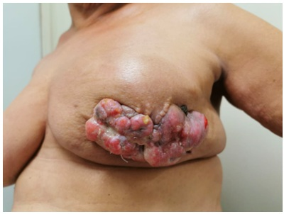
A Mastectomia seguida de quimioterapia adjuvante associada com trastuzumabe.
B Quimioterapia neoadjuvante associada com trastuzumabe seguida de mastectomia.
C Hormonioterapia neoadjuvante com anastrozol seguida de mastectomia.
D Mastectomia seguida de hormonioterapia com tamoxifeno.
Questão 86 · Ginecologia · 4000198978Mulher de 65 anos apresenta um episódio de sangramento vaginal pós menopausa. A ultrassonogra a transvaginal identi cou uma linha endometrial de 3mm. Qual é o diagnóstico mais provável e a conduta recomendada?
A Adenocarcinoma endometria l e histeroscopia cirúrgica.
B Ovulação tardia e dosagem de FSH.
C Carcinoma espinocelular do colo uterino e colposcopia.
D Atrofia endometrial e seguimento ambulatorial.
Questão 87 · Ginecologia · 4000198977Mulher tratada de câncer de mama, em regime de adjuvância, com anticorpos monoclonais e com tamoxifeno, apresenta qual subtipo molecular de acordo com o perfil imunoistoquímico?
A RE=90% | RP=90% | HER-2 score 0+ | Ki-67=10%.
B RE=50% | RP=60% | HER-2 score 3+ | Ki-67=40%.
C RE=70% | RP=50% | HER-2 score 2+, FISH=negativo | Ki-67=30%.
D RE=negativo | RP=negativo | HER-2 score 2+, FISH=positivo | Ki-67=80%.
Questão 88 · Ginecologia · 4000198976Entre as opções abaixo, a mais indicada para tratamento do sangramento uterino anormal agudo é:
A Contraceptivo oral combinado com 30-35mg de etinilestradiol na dose de 1 cp três vezes ao dia até parar o sangramento (pelo menos 2 dias) e após 1 cp/ dia por 3 a 6 semanas.
B Contraceptivo oral combinado com 30mg de etinilestradiol na dose de 1 comprimido 3 vezes ao dia por 2 dias, e depois 1 cp ao dia por 6 meses.
C Desogestrel 75mg, 1 cp ao dia, sem intervalos, por 6 meses.
D Inserção de dispositivo intrauterino de levonogestrel.
Questão 89 · Ginecologia · 4000198975Mulher de 29 anos de idade comparece ao serviço de ginecologia porque está tentando engravidar há 2 anos sem sucesso. Refere aumento do uxo menstrual e dismenorreia. Ao exame físico ginecológico especular: colo sem lesões, conteúdo vaginal siológico. Toque vaginal: útero de volume normal, colo grosso, posterior e impérvio, indolor a mobilização. Ultrassom endovaginal apresentou nódulo miomatoso submucoso tipo II, medindo 1,8 cm. Baseado no quadro clínico desta paciente, assinale a alternativa correta:
A Está indicado o tratamento com progestágeno exclusivo para reduzir o fluxo menstrual da paciente.
B O tratamento deve ser feito através da via laparoscópica.
C O análogo do GnRH pode reduzir o mioma e tratar a infertilidade da paciente.
D Deve-se realizar a miomectomia através da histeroscopia cirúrgica.
Questão 90 · Ginecologia · 4000198974A endometriose é caracterizada pela presença de tecido endometrial fora da cavidade uterina. Sobre a endometriose, assinale a alternativa
A Os quadros obstrutivos ou suboclusivos de endometriose urinária ou intestinal devem ser tratados cirurgicamente.
B A endometriose é uma doença estrógeno dependente crônica, que pode acometer a mulher durante toda a sua vida, incluindo o período antes da menarca e após a menopausa.
C Não há correlação entre o estadiamento da endometriose e a sua sintomatologia, de tal maneira que pacientes com doença leve podem sentir mais dor que pacientes com doença grave.
D A endometriose se manifesta clinicamente através da dismenorreia, dispareunia, infertilidade e dor pélvica crônica. Pode se manifestar também com aumento do fluxo menstrual e sintomas urinários e intestinais cíclicos.
Questão 91 · Ginecologia · 4000198973Mulher de 56 anos de idade, apresentou na sua mamogra a de rastreamento microcalci cações pleomór cas agrupadas, BI-RADS 4, acometendo todo um seguimento mamário, com extensão de 4 cm. Foi submetida a mamotomia por estereotaxia que resultou carcinoma ductal in situ. Baseado no caso desta paciente, assinale a alternativa correta:
A Trata-se de lesão in situ e, portanto, está indicado somente o seguimento mamográfico em 6 meses.
B O tratamento indicado para esta paciente é clínico com o uso de inibidor de aromatase.
C A pesquisa do linfonodo sentinela não é indicada por se tratar de lesão in situ.
D Apesar da área extensa de microcalcificações, pode-se pensar em tratamento cirúrgico conservador, desde que seja respeitado a proporção razoável do tamanho da lesão em relação ao tamanho da mama da paciente e desde que a lesão seja retirada com margens livres.
Revisar: possível letra faltando em enunciado
Questão 92 · Ginecologia · 4000198972Mulher de 61 anos retorna em consulta com a seguinte mamografia (vide imagem): Qual é o BI-RADS e a conduta indicada?
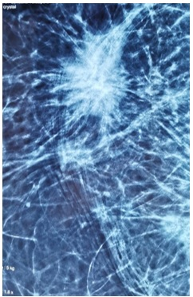
A BI-RADS 3, nova mamografia em 6 meses
B BI-RADS 4, ressecção segmentar
C BI-RADS 4, biópsia por agulha grossa
D BI-RADS 5, biópsia por agulha grossa
Questão 93 · Ginecologia · 4000198971Mulher de 53 anos apresenta nódulo palpável na mama direita. Foi submetida a ultrassonogra a que apresentou a seguinte imagem (em anexo): Qual é a conduta indicada para este caso?
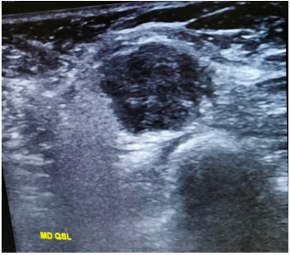
A Seguimento em 6 meses
B PAAF
C Biópsia por agulha grossa (core biopsy)
D Biópsia por agulha grossa vácuo assistida
Questão 94 · Ginecologia · 4000198970Mulher de 28 anos de idade, com irregularidade menstrual e acne, refere aparecimento de manchas na pele (vide imagem). Esta alteração cutânea está relacionada com:

A Aumento dos níveis de androgênios
B Adenoma de hipófise
C Aumento dos níveis de TSH
D Aumento da resistência à insulina
Questão 95 · Ginecologia · 4000198969Mulher de 19 anos refere que vem apresentando alterações de humor significativas no período que antecede a menstruação. Refere aumento de irritabilidade, insônia e sintomas depressivos cerca de 5 dias antes da menstruação e que melhoram após o sangramento. Também apresenta sensação de inchaço e dores na mama de forte intensidade. Refere que já faz cerca de 8 meses que tem essas queixas. Refere ciclos regulares e com 5 dias de sangramento, com uxo normal. Diante do quadro da paciente, assinale a alternativa que contemple uma abordagem terapêutica adequada para o caso:
A DIU de levonorgestrel e bromocriptina.
B Inibidores de prostaglandinas e acetato de medroxiprogesterona.
C Sertralina e analgésicos.
D Vitamina B6 e anticoncepcional combinado cíclico.
Questão 96 · Ginecologia · 4000198968Mulher de 59 anos refere perda urinária há 4 anos. Refere aumento de frequência urinária e noctúria associados. Nega perda aos esforços. Apresenta diabetes mellitus tipo II e glaucoma. Já refere ter realizado fisioterapia pélvica e medidas comportamentais sem sucesso. Qual é a conduta diante desse caso.
A Oxibutinina oral.
B Sling transobturatório.
C Beta 3-adrenérgico.
D Estriol por via vaginal.
Questão 97 · Ginecologia · 4000198967Mulher de 28 anos, comparece ao pronto-socorro se queixando de dor pélvica há 3 dias. Refere que há 12 horas houve intensi cação da dor. Refere que sua última menstruação foi há 9 dias e que faz uso de DIU de cobre como único método contraceptivo. Nega sintomas urinários, sangramentos, corrimentos vaginais, náuseas, vômitos ou inapetência. Ao exame encontra-se em bom estado geral, com temperatura de 38,2 graus, FC de 110 bpm e PA= 110 x 70 mmHg. No exame abdominal apresenta bastante dor á palpação de andar inferior do abdome com descompressão brusca positiva em fossa ilíaca direita. Não apresenta alterações no exame especular e apresenta dor à mobilização do colo e à palpação anexial direita com aumento do anexo. Diante do quadro qual é a conduta mais adequada?
A Solicitar tomografia computadorizada para avaliação de suspeita de apendicite.
B Solicitar ultrassonografia transvaginal, introduzir antibioticoterapia endovenosa e retirar o DIU.
C Encaminhar a paciente para videolaparoscopia de urgência.
D Internação hospitalar para antibioticoterapia endovenosa com reavaliação da resposta clínica em 48 horas.
Questão 98 · Ginecologia · 4000198966Paciente de 57 anos refere intenso ressecamento vaginal há 3 anos. Refere que associado ao quadro apresenta prurido, dispareunia e disúria. Refere que já apresentou fogachos, mas que hoje não a incomodam. Paciente apresenta hipertensão arterial mal controlada e diabetes mellitus tipo II em uso de insulina. Realizou exames de rastreamento ginecológico que se encontram normais. Diante do quadro da paciente qual é a alternativa correta?
A Prescrever gabapentina para alívio dos sintomas vulvares.
B Prescrever estriol por via vaginal.
C Prescrever lubrificante a base de água.
D Prescrever terapia hormonal por via transdérmica com estrogênio e associar progesterona.
Questão 99 · Ginecologia · 4000198965Mulher de 55 anos vem ao ambulatório de ginecologia por queixa de fogachos intensos há 1 ano. Refere irregularidade menstrual há 2 anos, com intervalos a cada 90 dias atualmente. Nega comorbidades ou cirurgias prévias. Realizou os seguintes exames: Colesterol total=144; HDL= 46; LDL= 108; Triglicérides= 298; Glicemia de jejum= 90; Colpocitologia oncótica= classe II; mamogra a BIRADS=2 Assinale a alternativa correta para o caso da paciente:
A A melhor conduta é prescrever progesterona de segunda fase para regularização do ciclo menstrual.
B A terapia hormonal não deve ser prescrita, pois a paciente ainda não se encontra na menopausa.
C Caso seja optado por utilizar a tibolona, será necessário adicionar progesterona para proteção endometrial.
D A melhor via de terapia hormonal para essa paciente é através de adesivos.
Questão 100 · Ginecologia · 4000198964Mulher de 64 anos de idade, sem vida sexual, apresenta queixa de bola na vagina. Ao exame POP-Q: Aa +3; Ba +3; C -7; HG 3; CP 3; CVT 9; Ap -2; Bp -2; D ---. Ao teste de esforço com redução do prolapso observa- se perda urinária, quando a paciente tosse. Estudo urodinâmico com redução do prolapso evidenciou pressão de perda de 90 cm H₂O. Qual a melhor conduta?
A Reeducação miccional e fisioterapia do assoalho pélvico.
B Colpocleise e sling retropúbico.
C Colpoplastia anterior e sling transobturatório.
D Colpoplastia anterior e fixação de cúpula em ligamento sacroespinhal.
Questão 101 · Ginecologia · 4000198963Mulher de 57 anos de idade, com sintomas de incontinência urinária foi submetida a um estudo urodinâmico que apresentou o seguinte resultado: ausência de contrações do detrusor; pressão de perda urinária de 50cm de H₂O. Qual é o diagnóstico e a conduta indicada?
A Deficiência esfincteriana intrínseca; fisioterapia pélvica.
B Hiperatividade do detrusor; alfa 3 adrenérgico.
C Incontinência urinária mista; tratamento com anticolinérgicos e avaliar necessidade do tratamento dos sintomas de esforço.
D Hipermobilidade do colo vesical; sling de uretra média.
Questão 102 · Ginecologia · 4000198962Paciente de 54 anos vem ao ambulatório de ginecologia referindo ondas de calor que estão piorando muito a sua qualidade de vida. Refere que teve a sua última menstruação há 2 anos e que desde então apresenta esses sintomas. A paciente é hipertensa bem controlada com medicação e fuma cerca de 10 cigarros por dia. Nega outras doenças ou cirurgias prévias. Apresenta exames de rotina sem alterações. A conduta é:
A Prescrever estradiol oral + acetato de noretisterona por via oral.
B Prescrever estradiol 1mg por via transdérmica.
C Prescrever estradiol 1mg em gel + progesterona por via oral.
D Prescrever venlafaxina.
Questão 103 · Ginecologia · 4000198961Mulher de 26 anos refere dor durante o período menstrual há 4 anos. Refere que assim que o sangramento se inicia apresenta cólicas importantes e que irradiam para a região lombar. Refere que a dor permanece durante o período de sangramento e que melhora com o término da menstruação. Refere que o quadro se iniciou cerca de 3 anos, após a sua primeira menstruação. Ao exame físico, a paciente não apresenta alterações significativas. Sobre o caso da paciente é correto afirmar que:
A O fato da dismenorreia ter surgido precocemente indica a necessidade de uma investigação mais detalhada para causas secundárias.
B O uso de um DIU de levonorgestrel poderia ser empregado no tratamento dessa paciente.
C É um quadro de dismenorreia secundária, podendo ser tratado com anticoncepcionais orais contínuos.
D O quadro é altamente sugestivo de endometriose, devendo ser realizada uma ressonância magnética para melhor elucidação.
Questão 104 · Ginecologia · 4000198960Mulher de 58 anos vem ao ambulatório de ginecologia com queixa de fogachos intensos há 3 anos. Refere alterações de humor e insônia associados. Está em uso de tamoxifeno há 2 anos por antecedente pessoal de carcinoma ductal invasivo. Diante do quadro da paciente, qual é a melhor opção terapêutica?
A Sertralina
B Paroxetina
C Venlafaxina
D Fitoestrogênios
Questão 105 · Ginecologia · 4000198959Mulher de 20 anos, parto cesárea há 2 semanas, primípara, amamentando, comparece à UBS para consulta referindo que está tendo muita di culdade para amamentar, além de mal-estar, calafrios e dor nas mamas. Ao exame físico observa-se a paciente em regular estado geral, com mamas edemaciadas e brilhantes com uma área hiperemiada e quente localizada no quadrante supero lateral esquerdo. Qual é a conduta indicada para este caso?
A Orientação quanto a técnica de amamentação e esvaziamento das mamas.
B Compressas frias e analgésicos
C Antibioticoterapia e inibição da amamentação
D Antibioticoterapia e orientação quanto a amamentação.
Questão 106 · Ginecologia · 4000198958Mulher de 40 anos, nuligesta, em uso de camisinha como método anticoncepcional, sem comorbidades e antecedentes familiares de malignidade, comparece ao serviço de ginecologia com quadro de sangramento genital importante há 1 mês. Nega atraso menstrual. O exame físico ginecológico não mostrou anormalidades. Assinale a alternativa que descreve os exames subsidiários a serem solicitados para a avaliação inicial desta paciente:
A Solicitar teste de gravidez, hemograma completo, coagulograma e ultrassonografia transvaginal.
B Solicitar teste de gravidez, hemograma completo, coagulograma, ultrassonografia transvaginal e dosagens hormonais.
C Solicitar hemograma completo, coagulograma, ultrassonografia transvaginal e fator de Von Willebrand.
D Solicitar hemograma completo, coagulograma, TSH, FSH, testosterona e ultrassonografia transvaginal.
Questão 107 · Ginecologia · 4000198957Mulher de 31 anos de idade, nuligesta, comparece para consulta ginecológica de rotina com resultado de ultrassom mostrando útero de 90 cm³, com nódulo Hipoecogênico medindo 1,0 cm, tipo 4 (FIGO), eco endometrial medindo 9 mm e cavidade uterina sem distorções. Refere intervalo entre as menstruações de 28 dias e duração de 3 dias. Qual é a conduta indicada para este caso?
A Expectante.
B Progestágeno isolado
C Anti-inflamatório
D Miomectomia
Questão 108 · Ginecologia · 4000198956Mulher de 45 anos de idade, IGIP, procura o serviço de ginecologia referindo dismenorreia progressiva e dispareunia há 2 anos. Nega uso de método anticoncepcional O exame físico ginecológico não mostrou anormalidades. Foi realizada uma ultrassonogra a transvaginal com preparo intestinal que mostrou espessamento do septo retovaginal e hidronefrose à esquerda. Qual é a conduta indicada para este caso?
A Prescrever anticoncepcional combinado
B Prescrever progestágeno exclusivo contínuo
C Introduzir SIU levonorgestrel
D Indicar videolaparoscopia
Questão 109 · Tratamento · 4000198825O sangramento uterino anormal é condição frequente nos ambulatórios de ginecologia, apresentando impacto negativo nas condições de vida das mulheres acometidas. Para o tratamento clínico, utilizar:
A Agentes anti-inflamatórios hormonais.
B Agentes antifibrinolíticos.
C Medicamentos hormonais gonadais.
D Agonistas do GnRh.
Questão 110 · Ginecologia · 4000198824Mulher de 32 anos, sem uso de medicamento anticoncepcional, chega à consulta trazendo ultrassonogra a transvaginal demonstrando um cisto regular, unilocular, com conteúdo denso, em ovário esquerdo, medindo 50cm³ de volume. Nega qualquer sintoma associado. Neste caso, deve-se
A observar e repetir o exame ultrassonográfico.
B internar para cirurgia imediata.
C realizar punção guiada por ultrassonografia.
D encaminhar para exames de estadiamento.
Questão 111 · Rastreamento do câncer de colo do útero · 4000198823O câncer de colo uterino é doença ainda frequente no nosso meio, sobretudo na região Norte do Brasil, onde também há a maior taxa de mortalidade. Programas de rastreamento foram implementados no Brasil a partir da década de 1970 e mantém-se vigente até os dias de hoje. Nesse contexto, e acerca da relação entre o HPV e o câncer de colo uterino, é correto afirmar:
A Os testes de detecção do HPV não podem ser utilizados como medida de rastreamento de câncer de colo uterino na população em geral.
B Qualquer sorotipo de HPV é considerado de alto risco para câncer de colo uterino.
C A vacinação contra o HPV é considerada método eficaz de prevenção primária para o câncer de colo uterino.
D O diagnóstico definitivo do HPV é firmado apenas pelo exame anatomopatológico da lesão.
Questão 112 · Ginecologia · 4000198822O climatério é a fase de transição entre o período reprodutivo e o não reprodutivo da mulher, caracterizado por uma gama de modi cações endócrinas, biológicas e clínicas. Sobre possíveis consequências do hipoestrogenismo que ocorre nesta fase, considere: I. Per l lipídico mais aterogênico, com o aumento da concentração de colesterol total às custas da lipoproteína de alta densidade (HDL), dos triglicerídeos (TG) e da redução de lipoproteína de baixa densidade (LDL). II. Alterações cognitivas reversíveis como diminuição da atenção e alterações da memória. III. Osteoporose pela modi cação no equilíbrio entre formação e reabsorção óssea, com predomínio a reabsorção. IV. Aumento da acidez e das rugas e diminuição da elasticidade da pele devido a diminuição do colágeno e da espessura da pele. São consequências
A I, II e III.
B II, III e IV.
C I, II e IV.
D I, III e IV.
Questão 113 · Ginecologia · Obstetrícia · 4000198821O organismo feminino sofre mudanças anatômicas e funcionais durante a gravidez, adaptando-se à presença do feto em desenvolvimento. Quais adaptações fazem parte desse período?
A Aumento do volume sanguíneo materno, atingindo valores 30 a 50% maiores do que os níveis prégestacionais, não guardando qualquer relação com a quantidade de tecido trofoblástico presente e estimulação direta dos receptores de TSH pela HCG.
B Alteração na regulação da tireoide devido à diminuição no nível de iodo sérico consequente a um aumento da sua depuração renal, aumento da proteína carreadora dos hormônios tireoideanos (THBG) e estimulação direta dos receptores de TSH pela HCG.
C Redução da glicemia basal materna na fase catabólica da gravidez, visando ao armazenamento de gordura, glicogênese hepática e transferência de glicose para o feto, sendo desencadeadas pelos hormônios sexuais placentários (estrógeno e progesterona).
D Enrijecimento das articulações de um modo geral, com diminuição de sua elasticidade, predispondo a gestante a dores crônicas, entorses, luxações e até fraturas e glicogênese hepática.
Questão 114 · Ginecologia · Obstetrícia · 4000198820A prevalência de infecções sexualmente transmissíveis (IST) vem aumentando na última década, inclusive na gestação, provavelmente pela redução das atitudes preventivas. Em relação ao tratamento da sí lis materna, é considerada situação
A Tratamento com penicilina for completo e adequado à fase clínica da doença.
B Parceiro ser tratado concomitantemente.
C Tratamento terminar 30 dias antes do parto.
D Tratamento incompleto, mesmo se feito com penicilina.
Questão 115 · Ginecologia · Obstetrícia · 4000198819Qual fenômeno plástico no polo cefálico
A Bossa serossanguínea
B Cavalgamento ósseo
C Cefalohematoma
D Transudação entre a derme e o periósteo dos ossos do crâneo fetal
Questão 116 · Ginecologia · Obstetrícia · 4000198818A gravidez ectópica é considerada, especialmente em países desenvolvidos, uma verdadeira questão de saúde pública. Neste contexto, o reconhecimento dos fatores de risco envolvidos torna-se relevante. Um fator de risco associado à gravidez ectópica é:
A Anticoncepção de emergência por alteração na motilidade dos espermatozoides.
B Uso de indutores da ovulação por diminuir a motilidade tubária.
C Tabagismo por estimulação nicotínica na atividade ciliar e na mobilidade tubária.
D História de Doença Inflamatória Pélvica pelos efeitos cicatriciais sobre o endométrio.
Questão 117 · Ginecologia · Obstetrícia · 4000198817A rotura prematura das membranas ovulares é definida como a rotura espontânea das membranas coriônica e amniótica antes do início do trabalho de parto. Sobre esta importante condição complicadora da gravidez, analise as seguintes afirmativas: I. O período de latência é inversamente relacionado com a idade gestacional em que ocorreu a rotura das membranas. II. São complicações fetais hipoplasia pulmonar, prematuridade e infecção neonatal. III. Como a prematuridade aumenta a morbidade e a mortalidade neonatais, a inibição do trabalho de parto prematuro nestes casos leva a uma melhor taxa de sobrevida neonatal. IV. A antibioticoprofilaxia aumenta o período de latência e diminui a morbidade e a letalidade neonatais. Estão corretas as afirmativas
A II, III e IV, apenas.
B I, III e IV, apenas.
C I, II e IV, apenas.
D I, II e III, apenas.
Questão 118 · Ginecologia · Obstetrícia · 4000198816A placenta prévia é condição clínica que pode ser grave, trazendo possibilidade de sangramento na última metade da gestação. Quais as características que melhor definem o sangramento nestes casos?
A Vermelho vivo, indolor, associado a trauma local, não afetando a vitalidade fetal.
B Vermelho escuro, discreto, doloroso, intermitente, associado à hipertonia uterina.
C Abrupto, intenso, único, doloroso, sem causa aparente, afetando a vitalidade fetal.
D Vermelho vivo, indolor, progressivo, sem causa aparente, não afetando a vitalidade fetal.
Questão 120 · Ginecologia · 4000198642Paciente de 23 anos vem ao pronto-socorro com queixa de dor abdominal há 3 dias. Refere que a dor vem se intensi cando e que notou o aparecimento de um corrimento amarelado por via vaginal. Encontra-se em bom estado geral, temperatura de 38,5 graus, PA de 110 x 70 e FC de 80. No exame, o abdome está ácido e doloroso à palpação em hipogástrio. No especular, foi constatado corrimento amarelado e com odor fétido. No toque, apresenta mobilização dolorosa do colo e dor na região anexial. Diante da principal hipótese diagnóstica, indique os critérios diagnósticos menores apresentados pela paciente.
A Dor pélvica e corrimento amarelado.
B Dor à mobilização do colo e febre.
C Febre e corrimento amarelado.
D Dor pélvica e dor anexial.
Questão 121 · Ginecologia · 4000198641Paciente de 36 anos refere que está tentando engravidar há 8 meses sem sucesso. Refere ciclos menstruais regulares, com sangramento normal e dismenorreia. Nega outras queixas. O parceiro tem 34 anos, não tem comorbidades e tem um lho do casamento anterior. Diante do quadro da paciente, indique a conduta adequada.
A Aguardar mais 4 meses de tentativa e, após completar doze meses, iniciar a investigação.
B Solicitar investigação da paciente, porém não há necessidade de investigar o parceiro, pois ele tem um filho de relacionamento anterior.
C Solicitar FSH, histerossalpingografia, ultrassonografia e espermograma para investigar infertilidade.
D Como a paciente tem mais de 35 anos, já podemos iniciar tratamento de baixa complexidade antes de investigar.
Questão 122 · Ginecologia · 4000198640Mulher de 18 anos vem ao pronto atendimento com queixa em região vulvar. Refere que surgiu uma lesão dolorosa há 3 dias na região do grande lábio e que notou aumento de linfonodo na região. Ao exame, apresenta úlcera dolorosa ao toque com bordas irregulares e fundo com conteúdo purulento. Apresenta um linfonodo aumentado com sinais ogísticos associados. Diante do quadro da paciente, qual é o tratamento mais adequado para a principal hipótese diagnóstica?
A Penicilina benzatina 2.400.000 Ui.
B Azitromicina 1 g em dose única.
C Ceftriaxone 500 mg IM dose única.
D Aciclovir 400 mg 8/8 h por 7 dias.
Questão 123 · Ginecologia · 4000198639Paciente vem ao pronto-socorro queixando-se de ter sofrido uma violência sexual há 48 horas. Refere que foi abordada por um desconhecido em um bar e que houve penetração vaginal com ejaculação durante a agressão. A paciente faz uso de DIU de cobre como método contraceptivo, e sua última menstruação foi há 21 dias. Nega queixas físicas no momento. Com relação às pro laxias nessa paciente, assinale a resposta correta.
A Deve ser realizada profilaxia para clamídia, gonococo, tricomoníase e sífilis, porém não deve ser realizada profilaxia para HIV pelo tempo transcorrido desde a violência.
B Deve ser realizada a profilaxia para gravidez indesejada, independentemente do uso de método contraceptivo eficaz.
C A profilaxia para hepatite B deve ser realizada com imunoglobulina, obrigatoriamente.
D Deve ser realizada a profilaxia contra o HIV com tenofovir, lamivudina e dolutegravir.
Questão 124 · Ginecologia · 4000198638Paciente de 16 anos vem ao ambulatório, pois ainda não menstruou. Refere que apresentou desenvolvimento das mamas por volta dos 13 anos e, desde então, não menstruou. Ao exame, apresenta estádio de Tanner M5P5, hímen íntegro e perfurado, sem outros estigmas ao exame físico. Assinale a alternativa correta sobre o quadro da paciente.
A O cariótipo é provavelmente XY.
B A dosagem de FSH deve encontrar-se normal.
C Trata-se de um caso de disgenesia gonadal.
D O exame ultrassonográfico pélvico não é importante nesse caso.
Questão 125 · Mastologia · 4000198048Paciente de 45 anos, com pólipo endometrial de 2 cm, será submetida a polipectomia endoscópica monopolar. Que meio de distensão endometrial, dentre os abaixo, deverá ser utilizado?
A Solução salina
B Ringer lactato
C CO₂
D Glicina
Questão 126 · Mastologia · 4000198047Paciente de 30 anos, com história de parto vaginal há 6 meses, veio à consulta queixando-se de dor na região suprapúbica, acompanhada de dor bilateral nas nádegas, e de rigidez lombar que piorava ao movimento. Qual a causa mais provável do quadro?
A Sacroileíte
B Bursite trocantérica
C Anexite
D Coccidinia
Questão 127 · Mastologia · 4000198046Paciente feminina, de 63 anos, procurou a Emergência por quadro de dor lombar de forte intensidade, iniciada há 2 dias, com piora progressiva, evoluindo para parestesias nos membros inferiores. Informou ter 1 nódulo na mama esquerda, que vinha crescendo há mais de 2 anos sem investigação, e 1 nódulo na axila esquerda, surgido há 3 meses. Ao exame físico, encontrava-se em regular estado geral, com mucosas úmidas e coradas, fácies de dor e di culdade de deambulação (pela dor lombar). As auscultas cardíaca e pulmonar não revelaram alterações, e o exame neurológico mostrou força preservada nos membros inferiores. Diante do quadro clínico, qual a conduta mais adequada?
A Fazer biópsia do nódulo da mama esquerda com urgência, pois, sem o diagnóstico de uma possível neoplasia maligna de mama, não há como definir os demais problemas e tratamentos para a paciente.
B Prescrever corticosteroide sistêmico e analgésico e encaminhar a paciente para investigação adicional em serviço especializado da instituição.
C Tratar a dor da paciente e solicitar tomografia computadorizada ou ressonância magnética da coluna lombossacra para diagnóstico de possível compressão medular, uma vez que há urgência em iniciar o tratamento caso seja esse o problema (possivelmente causado por metástase óssea).
D Iniciar tratamento empírico para uma provável neoplasia metastática de mama, enquanto são solicitados exames de estadiamento e biópsia.
Questão 128 · Mastologia · 4000198045Assinale a assertiva correta sobre a técnica de retirada de acessos vasculares centrais.
A O posicionamento do paciente deve ser anti-Trendelenburg.
B A manobra de Valsalva deve ser evitada.
C O cateter deve ser removido na expiração.
D O orifício onde o cateter esteve instalado não deve ser comprimido com o objetivo de drenar um pouco de sangue e, assim, evitar embolia gasosa.
Questão 129 · Mastologia · 4000198044Assinale a assertiva correta sobre a cicatrização de feridas.
A Isquemia tecidual local e neuropatia podem prejudicar a quimiotaxia durante a fase inflamatória, retardando a cicatrização.
B Radioterapia prejudica a cicatrização, enquanto edema é fator promotor uma vez que possibilita melhor difusão capilar.
C Infecção prejudica a cicatrização, enquanto terapia imunossupressora é fator promotor devido à sua ação no endotélio.
D Diabetes melito reduz a função de macrófagos e a produção de colágeno, enquanto obesidade por si só não prejudica a cicatrização.
Questão 130 · Mastologia · 4000198043Assinale a assertiva correta sobre ressonância magnética (RM) mamária.
A RM é o método de escolha para investigação de derrame papilar suspeito.
B Pode ocorrer depósito de gadolínio em tecidos corporais, especialmente nos núcleos da base.
C Em pacientes pré-menopáusicas, o melhor período para realização desse exame é entre o 16o e o 20o dias do ciclo.
D O valor preditivo positivo é alto.
Questão 131 · Mastologia · 4000198042Paciente submeteu-se a setorectomia com biópsia de linfonodo sentinela. O diagnóstico patológico foi ypT1ypN0 após quimioterapia neoadjuvante. O diagnóstico inicial havia indicado um carcinoma ductal invasor grau 3 à imuno-histoquímica, com expressão para receptores hormonais, HER2 positivo e Ki-67 de 10%. Ao exame físico préquimioterapia, apresentava tumor de 3 cm no quadrante superolateral da mama direita e linfonodos fusionados na axila. Com base nessas informações, qual a classificação tumoral e qual o estadiamento clínico?
A Luminal A - T2N2 (ECII
B Luminal A - T3N2 (ECIII
C Luminal B - T2N2 (ECII
D Luminal B - T2N2 (ECIII
Questão 132 · Mastologia · 4000198041Para avaliação quantitativa de risco para o desenvolvimento de câncer de mama, são empregados questionários, tais como o de Gail, o mais conhecido. Assinale a alternativa que contempla algumas variáveis utilizadas por esse modelo.
A Menopausa, idade e índice de massa corporal (IM
B Idade atual, idade do primeiro parto e história de biópsias de mama
C Neoplasia lobular, história familiar de câncer de mama em parente de 2º grau e IMC
D Menarca, história familiar de câncer de mama em parente de 1º grau, menopausa e IMC
Questão 133 · Mastologia · 4000198040Paciente masculino, de 17 anos, veio à consulta queixando-se de aumento bilateral das mamas, iniciado ao redor dos 13 anos. Ao exame físico, visualizou-se aumento bilateral do volume mamário (imagem ao lado), sem alteração do complexo areolomamilar; à palpação, foram constatados nódulos retroareolares bilaterais broelásticos móveis. Negou patologias e uso de medicamentos. Que outros exames, além da mamogra a, fazem parte da investigação da ginecomastia do paciente?
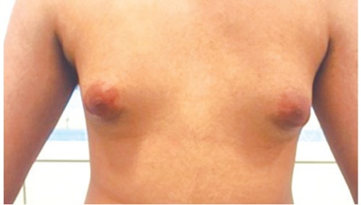
A Dosagens de LH e estradiol
B Dosagens de prolactina e FSH
C Ressonância magnética mamária e ultrassonografia testicular
D Ressonância magnética mamária e tomografia computadorizada cerebral
Questão 134 · Mastologia · 4000198039Paciente feminina, de 45 anos, veio à consulta por ter palpado 1 nódulo na mama esquerda há cerca de 1 mês. Realizou mamografia (imagem ao lado). Qual a categoria BIRADS e qual a conduta mais indicada?
A BI-RADS 2 – Repetir o exame em 6 meses.
B BI-RADS 3 – Realizar biópsia com agulha grossa.
C BI-RADS 4 – Repetir o exame em 6 meses.
D BI-RADS 5 – Realizar biópsia com agulha grossa.
Questão 135 · Mastologia · 4000198038Primigesta de 17 anos, com 31 semanas de gestação, procurou a Emergência Obstétrica queixando-se de contrações. Informou ter realizado acompanhamento prénatal inadequado. Trouxe ultrassonogra a sem laudo, realizada no 2º trimestre (imagens fetais reproduzidas abaixo). Ao exame físico, a paciente apresentava sinais vitais normais, 3 contrações em 10 minutos, colo médio, 70% apagado, com dilatação de 4 cm e bolsa íntegra; o feto encontrava-se em apresentação cefálica, com batimentos cardiofetais de 140 bpm. Considerando os diagnósticos fetal e materno corretos, que conduta, dentre as abaixo, é a mais adequada?
A Liberar a paciente para o domicílio após 1 hora de observação (desde que sem aumento da dilatação), com prescrição de progesterona por via vaginal, e orientar para que retorne se houver aumento das contrações ou diminuição da movimentação fetal.
B Internar a paciente e administrar tocolítico e corticosteroide se os resultados dos exames laboratoriais e a avaliação de bem-estar fetal estiverem normais; se o trabalho de parto evoluir, administrar sulfato de magnésio. A via de parto pode ser vaginal ou cesárea
C Internar a paciente e realizar indução do trabalho de parto após 12 horas da administração de sulfato de magnésio e se os resultados dos exames laboratoriais estiverem normais. A tocólise está contraindicada para este tipo de malformação fetal. A via de parto pode ser vaginal.
D Internar a paciente e realizar cesariana após 48 horas da administração de corticosteroide e 12 horas de sulfato de magnésio. A tocólise e o parto vaginal estão contraindicados para este tipo de malformação fetal.
Questão 136 · Mastologia · 4000198037Assinale a assertiva correta sobre métodos de avaliação da saúde fetal.
A Na gestação gemelar dicoriônica, o seguimento ultrassonográfico deve ser realizado a cada 2 semanas a partir da 16ª semana, devido à maior chance de ocorrência de complicações, tais como transfusão feto-fetal e sequência anemia-policitemia.
B Peso fetal estimado abaixo do percentil 10 para a idade gestacional associado a fluxo anormal à ultrassonografia com Doppler das artérias umbilicais é a melhor ferramenta para identificar restrição de crescimento fetal com alto potencial para efeitos adversos perinatais.
C Gestantes com diabetes melito em tratamento farmacológico devem realizar ultrassonografia com Doppler semanalmente a partir da 32ª semana, pois cardiotocografia e perfil biofísico fetal possuem alta taxa de falsos positivos.
D Avaliação do volume de líquido amniótico é um indicador da função placentária de curto prazo. O índice de líquido amniótico (IL
Questão 137 · Mastologia · 4000198036Assinale a assertiva correta sobre assistência pré-natal.
A No exame físico da gestante, a ausculta dos batimentos cardiofetais pode ser feita a partir da 6ª semana de gestação com sonar Doppler.
B No 3º trimestre de gestação, o decúbito dorsal materno pode levar ao efeito Poseiro, que se caracteriza por bradicardia materna e taquicardia fetal.
C Toda gestante deve receber pelo menos 1 dose da vacina dTpa, mesmo que tenha recebido dTpa na gestação anterior e dT na gestação atual.
D A presença de anticorpos IgG para toxoplasmose com baixa avidez no 1º trimestre de gestação indica infecção antiga e exclui infecção aguda nos últimos 3 meses.
Questão 138 · Mastologia · 4000198035Para paciente de 24 anos, com cisto ovariano (sugestivo de ser benigno), foi indicada exérese por laparoscopia. Complicações na introdução do equipamento, embora raras, já foram relatadas. A lesão mais frequente ocorre no(a)
A intestino delgado.
B artéria ilíaca.
C aorta.
D bexiga.
Questão 139 · Mastologia · 4000198034Paciente com 27 semanas de gestação e história de cardiopatia isquêmica chegou à Emergência queixando- se de dor retroesternal de início agudo. Eletrocardiograma mostrou elevação do segmento ST e aumento dos níveis de troponina e creatinoquinase (CK), compatíveis com o diagnóstico de síndrome coronariana aguda. Durante a avaliação, a paciente evoluiu para parada cardiorrespiratória. Foram iniciadas manobras de reanimação e chamado o médico plantonista da Obstetrícia que chegou ao local cerca de 5 minutos após o início das manobras sem resposta. Com base no quadro, deve-se
A realizar imediatamente ultrassonografia materno-fetal com Doppler e encaminhar a paciente para a Unidade Coronariana se não houver onda A patológica.
B aguardar a recuperação da paciente e encaminhá-la para a Unidade Coronariana.
C instalar cardiotocografia e contraindicar o uso de desfibrilador; se a cardiotocografia indicar categoria 2 ou 3, realizar a cesariana.
D lateralizar o útero para a esquerda e iniciar imediatamente a cesariana com laparotomia mediana longitudinal infraumbilical.
Questão 140 · Mastologia · 4000198033Primigesta com 30 semanas de gestação foi encaminhada à Emergência Obstétrica por ter apresentado pressão arterial de 150/100 mmHg. A ultrassonogra a obstétrica mostrou feto no percentil 8 de crescimento e aumento na resistência do uxo na artéria umbilical. A avaliação laboratorial indicou relação proteinúria/creatininúria de 0,2, relação sFlt-1/PLGF de 300, plaquetas séricas de 150.000/mm³, AST de 30 U/l e creatinina sérica de 0,8 mg/dl. Que diagnóstico, dentre os abaixo, é o mais provável?
A Hipertensão gestacional
B Hipertensão arterial crônica
C Eclâmpsia
D Pré-eclâmpsia
Questão 141 · Mastologia · 4000198032Paciente de 36 anos, com ciclos menstruais regulares e vida sexual ativa, veio à consulta queixando-se de leucorreia e prurido, quadro iniciado há 3 dias. Referiu apresentar tais sintomas todos os meses. Foi colhido material para exame a fresco, cuja lâmina encontra-se reproduzida abaixo. Com base no quadro, assinale a assertiva correta.
A O pH da vagina deve estar < 4.
B Os sintomas pioram no período pré-ovulatório.
C Os sintomas pioram após a relação sexual.
D Os sintomas costumam melhorar após a menstruação.
Questão 142 · Mastologia · 4000198031Paciente de 32 anos consultou por não menstruar há 5 meses após suspensão do anticoncepcional oral combinado. Informou vir apresentando acne desde então, não fazer uso de medicamentos e negou calorões e galactorreia. O IMC era de 24 kg/m². Os resultados dos exames hormonais estão reproduzidos abaixo. Com base no quadro, que diagnóstico, dentre os propostos, é o mais provável?
A Síndrome dos ovários policísticos
B Insuficiência ovariana prematura
C Gestação
D Amenorreia pós-pílula
Questão 143 · Mastologia · 4000198030Qual dos defeitos anatômicos abaixo corresponde à classificação de POP-Q?
A NA
B NA
C NA
D NA
Questão 144 · Exames complementares · Exames complementares · 4000198028Mulher, 62 anos de idade, diabética bem controlada, vem ao atendimento referindo sangramento vaginal, de pouca quantidade, há cerca de quatro dias. Relata que a menopausa aconteceu com, cerca de, 48 anos e que depois disso nunca mais teve sangramento por via vaginal. Nega dor, febre ou qualquer outro sintoma. Nega uso prévio de terapia de reposição hormonal. Ao exame físico: Abdome: ácido, indolor à palpação; Ausência de massas palpáveis. Exame especular: hipotro a vaginal e cervical. Presença de sangramento de pouca quantidade não ativo em orifício externo do colo uterino. Trouxe resultado de colposcopia e citologia oncótica realizada há 6 meses, sem alterações. Solicitada ultrassonogra a transvaginal. O resultado da ultrassonogra a transvaginal demonstrou endométrio espessado. Histeroscopia cirúrgica com biópsia evidenciou carcinoma endometrioide, classificado em estádio I. Considerando o espessamento endometrial normal para a idade da paciente, a espessura do endométrio ao Ultrassom deve ser, no máximo, de:
A 4 a 5mm.
B 7mm.
C 8 a 10mm.
D 12 a 14mm.
Questão 145 · Tratamento cirúrgico · 4000198027Mulher, 62 anos de idade, diabética bem controlada, vem ao atendimento referindo sangramento vaginal, de pouca quantidade, há cerca de quatro dias. Relata que a menopausa aconteceu com, cerca de, 48 anos e que depois disso nunca mais teve sangramento por via vaginal. Nega dor, febre ou qualquer outro sintoma. Nega uso prévio de terapia de reposição hormonal. Ao exame físico: Abdome: ácido, indolor à palpação; Ausência de massas palpáveis. Exame especular: hipotro a vaginal e cervical. Presença de sangramento de pouca quantidade não ativo em orifício externo do colo uterino. Trouxe resultado de colposcopia e citologia oncótica realizada há 6 meses, sem alterações. Solicitada ultrassonogra a transvaginal. O resultado da ultrassonogra a transvaginal demonstrou endométrio espessado. Histeroscopia cirúrgica com biópsia evidenciou carcinoma endometrioide, classificado em estádio I. Indique o tratamento preconizado a partir do diagnóstico do carcinoma endometrioide estádio I:
A Progestágeno isolado contínuo e reavaliação após um mês.
B Histerectomia total.
C Histerectomia total e salpingooforectomia bilateral.
D Histerectomia subtotal.
Questão 146 · Tratamento cirúrgico · 4000198026Mulher, 62 anos de idade, diabética bem controlada, vem ao atendimento referindo sangramento vaginal, de pouca quantidade, há cerca de quatro dias. Relata que a menopausa aconteceu com, cerca de, 48 anos e que depois disso nunca mais teve sangramento por via vaginal. Nega dor, febre ou qualquer outro sintoma. Nega uso prévio de terapia de reposição hormonal. Ao exame físico: Abdome: ácido, indolor à palpação; Ausência de massas palpáveis. Exame especular: hipotro a vaginal e cervical. Presença de sangramento de pouca quantidade não ativo em orifício externo do colo uterino. Trouxe resultado de colposcopia e citologia oncótica realizada há 6 meses, sem alterações. Solicitada ultrassonogra a transvaginal. O resultado da ultrassonogra a transvaginal demonstrou endométrio espessado. Histeroscopia cirúrgica com biópsia evidenciou carcinoma endometrioide, classificado em estádio I. Indique a conduta preconizada após o tratamento inicial padrão, caso o carcinoma endometrioide seja de baixo risco – G2:
A Complementação com linfadenectomia.
B Quimioterapia adjuvante.
C Radioterapia adjuvante.
D Apenas seguimento em serviço especializado.
Questão 147 · Mastologia · 4000198024A figura abaixo apresenta resultados de duas pesquisas clínicas: estudo A e estudo B, que avaliaram a e cácia de um mesmo tratamento hipotético sobre o desfecho morte por covid-19. A linha pontilhada significa a estimativa-ponto, e a linha contínua, a nulidade. Com base na figura, é possível afirmar que
A o estudo A evidenciou que o tratamento pode piorar o desfecho principal.
B o estudo B descartou benefício do tratamento.
C o estudo B provavelmente tem menor tamanho amostral do que o estudo A.
D os estudos têm resultados divergentes.
Questão 148 · Mastologia · 4000198023Mulher, 32 anos de idade, na terceira gestação, vem em consulta de rotina ginecológica para fazer o “preventivo”. Nega comorbidades e refere que seus “preventivos” sempre deram normais. Ao exame físico, não foram notadas alterações em colo uterino. De acordo com as Diretrizes do Ministério da Saúde: Quanto à conduta de rotina para a realização de colpocitologia oncótica, pode se dizer que é recomendada para mulheres:
A entre 25 e 64 anos, após coitarca.
B em qualquer idade, após coitarca.
C entre 21 e 64 anos, após coitarca.
D a partir de 18 anos, independente de coitarca, e repetição até que a expectativa de vida seja menor que 5 anos.
Questão 149 · Mastologia · 4000198021Mulher, 32 anos de idade, na terceira gestação, vem em consulta de rotina ginecológica para fazer o “preventivo”. Nega comorbidades e refere que seus “preventivos” sempre deram normais. Ao exame físico, não foram notadas alterações em colo uterino. De acordo com as Diretrizes do Ministério da Saúde: Pode-se afirmar que o intervalo entre as colpocitologias oncóticas
A deverá ser sempre anual, exceto em caso de alterações no resultado da citologia oncótica, o que poderá abreviar a realização de uma nova colpocitologia.
B inicialmente é anual, porém após 2 exames consecutivos normais, sem histórico de alterações em exames anteriores, passa a ter um intervalo trienal.
C deverá ser a cada 3 anos desde o início da realização do Papanicolau.
D inicialmente é anual, porém após 2 exames consecutivos normais, sem histórico de alterações em exames anteriores, passa a ter um intervalo bianual.
Questão 150 · Mastologia · 4000198019Mulher, 32 anos de idade, na terceira gestação, vem em consulta de rotina ginecológica para fazer o “preventivo”. Nega comorbidades e refere que seus “preventivos” sempre deram normais. Ao exame físico, não foram notadas alterações em colo uterino. De acordo com as Diretrizes do Ministério da Saúde: A paciente, nesse caso, apresentou ASC-US (células escamosas atípicas de significado indeterminado, possivelmente não neoplásicas) na citologia. Indique a conduta a ser seguida diante desse dado:
A Tratamento empírico de infecção vaginal e novo Papanicolau com um ano.
B Nova colpocitologia oncótica com seis meses.
C Rotina de colpocitologia a cada dois anos, por tratar-se de lesão benigna.
D Colposcopia com biópsia, no momento.
Questão 151 · Diagnóstico · 4000198017Mulher, 23 anos de idade, solteira, refere dor em baixo ventre há dois dias, associada à saída de secreção vaginal de odor fétido há um dia. Última menstruação há cerca de cinco dias. Refere vida sexual ativa, porém sem parceiro xo. Ao exame: paciente encontra-se estável hemodinamicamente, afebril; abdome doloroso à palpação de hipogástrio, descompressão brusca negativa. Exame especular: presença de secreção vaginal amarelada de odor fétido de pouca quantidade. Toque vaginal: dor à manipulação do colo uterino e à palpação da região anexial. Indique o critério menor para o diagnóstico de Doença Inflamatória Pélvica, presente no caso:
A Dor abdominal à palpação com descompressão brusca negativa.
B Dor à manipulação do colo uterino.
C Dor à palpação da região anexial.
D Secreção vaginal amarelada de odor fétido.
Questão 152 · Tratamento · 4000198015Mulher, 23 anos de idade, solteira, refere dor em baixo ventre há dois dias, associada à saída de secreção vaginal de odor fétido há um dia. Última menstruação há cerca de cinco dias. Refere vida sexual ativa, porém sem parceiro xo. Ao exame: paciente encontra-se estável hemodinamicamente, afebril; abdome doloroso à palpação de hipogástrio, descompressão brusca negativa. Exame especular: presença de secreção vaginal amarelada de odor fétido de pouca quantidade. Toque vaginal: dor à manipulação do colo uterino e à palpação da região anexial. Indique o esquema de tratamento nesse momento:
A Ceftriaxona intravenoso, dose única, Doxiciclina e Metronidazol por via oral.
B Ceftriaxona e Metronidazol intravenoso.
C Apenas Doxiciclina, via oral.
D Ciprofloxacino e Metronidazol venoso.
Questão 153 · Diagnóstico · 4000198014Mulher, 23 anos de idade, solteira, refere dor em baixo ventre há dois dias, associada à saída de secreção vaginal de odor fétido há um dia. Última menstruação há cerca de cinco dias. Refere vida sexual ativa, porém sem parceiro xo. Ao exame: paciente encontra-se estável hemodinamicamente, afebril; abdome doloroso à palpação de hipogástrio, descompressão brusca negativa. Exame especular: presença de secreção vaginal amarelada de odor fétido de pouca quantidade. Toque vaginal: dor à manipulação do colo uterino e à palpação da região anexial. Indique o estádio da doença no caso, de acordo com os critérios de Monif , quanto ao tempo de evolução:
A 1
B 2
C 3
D 4
Questão 154 · Mastologia · 4000198007Jovem, de 30 anos de idade, esteve em viagem na Índia há 2 meses. Refere aparecimento de 2 úlceras na região inguinal direita há 4 semanas. Tais úlceras não são acompanhadas de dor local. Relata que, antes das úlceras, apresentou no mesmo local nodulações. Não apresenta comorbidades nem possui outras queixas. Ao exame físico, visualizada a presença de 2 ulcerações em espelho, de borda plana, bem delimitadas e com fundo granuloso vermelho vivo e sangramento fácil. Diante do quadro, indique a principal hipótese diagnóstica:
A Cancro mole.
B Sífilis.
C Lesão herpética.
D Donovanose.
Questão 155 · Mastologia · 4000198005Jovem, de 30 anos de idade, esteve em viagem na Índia há 2 meses. Refere aparecimento de 2 úlceras na região inguinal direita há 4 semanas. Tais úlceras não são acompanhadas de dor local. Relata que, antes das úlceras, apresentou no mesmo local nodulações. Não apresenta comorbidades nem possui outras queixas. Ao exame físico, visualizada a presença de 2 ulcerações em espelho, de borda plana, bem delimitadas e com fundo granuloso vermelho vivo e sangramento fácil. Indique o tratamento inicial preconizado para o caso:
A Doxiciclina 100mg, a cada 12 horas por pelo menos 21 dias ou até o desaparecimento das lesões.
B Azitromicina 2g, via oral, dose única.
C Penicilina Benzatina, 2,4 milhoes de unidades, intramuscular, dose única.
D Aciclovir, 200mg, via oral, a cada 4 horas por 5 dias.
Questão 156 · Mastologia · 4000198004Jovem, de 30 anos de idade, esteve em viagem na Índia há 2 meses. Refere aparecimento de 2 úlceras na região inguinal direita há 4 semanas. Tais úlceras não são acompanhadas de dor local. Relata que, antes das úlceras, apresentou no mesmo local nodulações. Não apresenta comorbidades nem possui outras queixas. Ao exame físico, visualizada a presença de 2 ulcerações em espelho, de borda plana, bem delimitadas e com fundo granuloso vermelho vivo e sangramento fácil. Indique os agentes causadores de úlceras indolores, como as do caso:
A Treponema pallidum, Klebsiella granulomatis, Clamydia trachomatis.
B Herpes simplex vírus, Haemophilus ducreyi, Clamydia trachomatis.
C Klebsiella granulomatis, Clamydia trachomatis, Herpes simplex vírus.
D Treponema pallidum, Klebsiella granulomatis, Haemophilus ducreyi.
Questão 157 · Exames complementares · 4000198002Mulher, 33 anos de idade, casada e nuligesta, vem para consulta ginecológica de rotina. Refere que há um ano, após parada do uso de contraceptivo hormonal combinado para tentar engravidar, vem apresentando piora da dismenorreia e que, atualmente, não tem melhora do sintoma após uso de anti-inflamatório. Vem, também, notando disquezia, principalmente durante o período menstrual. Não conseguiu ainda gestar. Ao exame ginecológico não foram evidenciadas alterações, exceto desconforto ao toque de fundo vaginal posterior. Uma histerossalpingografia revela prova de Cotté negativa bilateralmente. Indique o exame complementar para melhor esclarecimento do caso
A Tomografia Computadorizada da Pelve.
B CA-125.
C Videolaparoscopia com Biópsia.
D Ressonância Nuclear Magnética Pélvica.
Questão 158 · Mastologia · 4000198000Mulher, 33 anos de idade, casada e nuligesta, vem para consulta ginecológica de rotina. Refere que há um ano, após parada do uso de contraceptivo hormonal combinado para tentar engravidar, vem apresentando piora da dismenorreia e que, atualmente, não tem melhora do sintoma após uso de anti-inflamatório. Vem, também, notando disquezia, principalmente durante o período menstrual. Não conseguiu ainda gestar. Ao exame ginecológico não foram evidenciadas alterações, exceto desconforto ao toque de fundo vaginal posterior. Uma histerossalpingografia revela prova de Cotté negativa bilateralmente. Sobre a interpretação da histerossalpingografia, o resultado indica que
A a paciente possui obstrução tubária bilateral.
B a paciente possui tubas pérvias bilateralmente.
C oexamenãodetectouaderências pélvicasperitubárias.
D na mobilização da paciente, as duas tubas estavam fixas e imóveis.
Questão 159 · Tratamento · 4000197998Mulher, 33 anos de idade, casada e nuligesta, vem para consulta ginecológica de rotina. Refere que há um ano, após parada do uso de contraceptivo hormonal combinado para tentar engravidar, vem apresentando piora da dismenorreia e que, atualmente, não tem melhora do sintoma após uso de anti-inflamatório. Vem, também, notando disquezia, principalmente durante o período menstrual. Não conseguiu ainda gestar. Ao e x a me ginecológico não foram evidenciadas alterações, exceto desconforto ao toque de fundo vaginal posterior. Uma histerossalpingografia revela prova de Cotté negativa bilateralmente. Quanto ao tratamento para essa paciente, considerando o diagnóstico mais provável, pode-se se a rmar que:
A O uso de anticoncepcional combinado oral por 2 meses é a terapia de primeira linha.
B Os análogos de GnRH devem ser usados por 6 meses e depois tentar medidas naturais.
C O tratamento cirúrgico pode ser uma opção visando a melhora da dor.
D Os analgésicos e anti-inflamatórios devem ser a escolha, pois a paciente quer engravidar.
Questão 160 · Estudo urodinâmico · 4000197996Mulher, 65 anos de idade, obesidade grau II, primípara, queixa-se de perda urinária quando espirra ou dar risada. Ao exame físico apresenta hipotro a genital e em estudo urodinâmico foi detectada uma perda de urina à manobra de Valsalva, com pressão vesical de 105cm H₂O. Ausência de contrações involuntárias na cistometria. Selecione a sequência de etapas que fazem parte do estudo urodinâmico na mulher:
A 1º: Urofluxometria; 2º: Avaliação do resíduo pós-miccional; 3º: Cistometria de enchimento e 4º: Estudo miccional ou estudo fluxo-pressão.
B 1º: Estudo miccional ou estudo fluxo-pressão 2º: Avaliação do resíduo pós-miccional; 3º: Cistometria de enchimento e 4º: Urofluxometria.
C 1º: Cistometria de enchimento; 2º: Avaliação do resíduo pós-miccional; 3º: Urofluxometria: e 4º: Estudo miccional ou estudo fluxo-pressão.
D 1º: Avaliação do resíduo pós-miccional; 2º: Cistometria de enchimento; 3º: Urofluxometria e 4º: Estudo miccional ou estudo fluxo-pressão.
Questão 161 · Diagnóstico · Mastologia · 4000197994Mulher, 65 anos de idade, obesidade grau II, primípara, queixa-se de perda urinária quando espirra ou dar risada. Ao exame físico apresenta hipotro a genital e em estudo urodinâmico foi detectada uma perda de urina à manobra de Valsalva, com pressão vesical de 105cm H₂O. Ausência de contrações involuntárias na cistometria. Indique o diagnóstico do caso:
A Incontinência urinária mista.
B Incontinência urinária de Esforço por deficiência esfincteriana intrínseca.
C Incontinência urinária de Esforço por hipermobilidade uretral.
D Urge-incontinência.
Questão 162 · Tratamento · 4000197992Mulher, 65 anos de idade, obesidade grau II, primípara, queixa-se de perda urinária quando espirra ou dar risada. Ao exame físico apresenta hipotro a genital e em estudo urodinâmico foi detectada uma perda de urina à manobra de Valsalva, com pressão vesical de 105cm H₂O. Ausência de contrações involuntárias na cistometria. Sobre o tratamento da perda urinária nesse caso, pode-se dizer que
A o “
B o “
C a colpofixação retropúbica ou Técnica de Burch está bem indicada nesse caso.
D o tratamento inicial deve ser conservador com terapia comportamental e fisioterapia.
Questão 163 · Mastologia · 4000197990Paciente, sexo masculino, 25 anos de idade, foi levado ao Pronto-Socorro após sofrer trauma no braço direito e apresentar ferimento corto-contuso de cerca de 5cm. Nega outros traumas. Ao exame físico, bom estado geral, FC: 72bpm, PA: 120x74mmHg, FR: 18imp; presença de ferimento medindo 5cm com exposição da musculatura em região anterior do braço direito. Foi realizada lavagem com SF0,9%, desbridamento e síntese do ferimento com anestesia local utilizando lidocaína. De acordo com os dados apresentados, indique o tipo de fio mais adequado para a síntese da musculatura:
A Poliamida.
B Polipropileno.
C Poligalactina.
D Poliéster.
Questão 164 · Mastologia · 4000197988Paciente, sexo masculino, 25 anos de idade, foi levado ao Pronto-Socorro após sofrer trauma no braço direito e apresentar ferimento corto-contuso de cerca de 5cm. Nega outros traumas. Ao exame físico, bom estado geral, FC: 72bpm, PA: 120x74mmHg, FR: 18imp; presença de ferimento medindo 5cm com exposição da musculatura em região anterior do braço direito. Foi realizada lavagem com SF0,9%, desbridamento e síntese do ferimento com anestesia local utilizando lidocaína. Diante do quadro, em relação ao anestésico local utilizado, é correto afirmar:
A A lidocaína foi um boa escolha para a anestesia local, pois apresenta um pKa baixo.
B O meio acidótico do ferimento favorece a ação do anestésico local.
C A forma básica não ionizada da lidocaína penetra na fibra nervosa e consegue realizar o bloqueio anestésico.
D A duração de ação do anestésico local está associada à maior hidrofobicidade.
Questão 165 · Mastologia · 4000197987Paciente, sexo masculino, 25 anos de idade, foi levado ao Pronto-Socorro após sofrer trauma no braço direito e apresentar ferimento corto-contuso de cerca de 5cm. Nega outros traumas. Ao exame físico, bom estado geral, FC: 72bpm, PA: 120x74mmHg, FR: 18imp; presença de ferimento medindo 5cm com exposição da musculatura em região anterior do braço direito. Foi realizada lavagem com SF0,9%, desbridamento e síntese do ferimento com anestesia local utilizando lidocaína. Indique a conduta mais adequada em relação à pro laxia antitetânica para esse paciente, caso ele não porte o Cartão de Vacinação e não se lembre quando tomou a última dose da vacina:
A Aplicar uma dose de reforço da vacina antitetânica.
B Não aplicar nem a vacina e nem o soro antitetânico.
C Reiniciar o esquema de três doses da vacina antitetânica.
D Aplicar uma dose da vacina antitetânica e aplicar o soro antitetânico.
Questão 166 · Mastologia · 4000197985Homem, 30 anos de idade, procura o Ambulatório de cirurgia plástica com queixa de di culdade para movimentar o dedo indicador da mão direita. O paciente relata que há um ano sofreu uma queimadura na mão direita, por combustão por álcool, apresentando queimaduras de segundo grau que foram tratadas com curativo no Posto de Saúde. Ao exame físico, extensas cicatrizes em palma e dorso da mão direita, dedo indicador direito com retração cicatricial em flexação. Diante desse caso clínico, indique a conduta terapêutica que deveria ter sido realizada para evitar o surgimento da sequela do dedo indicador.
A Retalho cutâneo
B Enxertia de pele parcial e terapia ocupacional.
C Retalho fáscio-cutâneo do dorso da mão.
D Curativos com ácido graxo essencial e terapia ocupacional.
Questão 167 · Mastologia · 4000197983Homem, 30 anos de idade, procura o Ambulatório de cirurgia plástica com queixa de di culdade para movimentar o dedo indicador da mão direita. O paciente relata que há um ano sofreu uma queimadura na mão direita, por combustão por álcool, apresentando queimaduras de segundo grau que foram tratadas com curativo no Posto de Saúde. Ao exame físico, extensas cicatrizes em palma e dorso da mão direita, dedo indicador direito com retração cicatricial em flexação. Identifique a técnica de retalhos mais adequada para a correção da sequela apresentada no dedo indicador.
A Retalho romboide.
B Retalhos em avanço.
C Zetaplastia.
D Retalho em interpolação.
Questão 168 · Mastologia · 4000197981Homem, 30 anos de idade, procura o Ambulatório de cirurgia plástica com queixa de di culdade para movimentar o dedo indicador da mão direita. O paciente relata que há um ano sofreu uma queimadura na mão direita, por combustão por álcool, apresentando queimaduras de segundo grau que foram tratadas com curativo no Posto de Saúde. Ao exame físico, extensas cicatrizes em palma e dorso da mão direita, dedo indicador direito com retração cicatricial em flexação. Caso o paciente necessite de reparo cirúrgico dos tendões exores, indique a conduta mais adequada no pós-operatório:
A Imobilização por seis semanas, para garantir uma boa cicatrização.
B Mobilização precoce passiva e ativa em terapia ocupacional.
C Imobilização em extensão, por quatro semanas.
D Imobilização em semi-flexação, por quatro semanas.
Questão 169 · Mastologia · 4000197980Paciente, sexo masculino, 20 anos de idade, vítima de agressão física há uma hora, é levado ao Pronto Socorro com ferimento em lábio inferior. Após a avaliação inicial do trauma, o paciente encontrava-se estável hemodinamicamente e apresentava ferimento corto-contuso em lábio inferior medindo cerca de 3 cm, com lesão da mucosa. Diante do caso clínico, indique a estrutura anatômica que deverá ser reparada para evitar perda funcional durante a mastigação.
A Pele.
B Mucosa.
C Subcutâneo.
D Músculo orbicular da boca.
Questão 170 · Mastologia · 4000197978Paciente, sexo masculino, 20 anos de idade, vítima de agressão física há uma hora, é levado ao Pronto Socorro com ferimento em lábio inferior. Após a avaliação inicial do trauma, o paciente encontrava-se estável hemodinamicamente e apresentava ferimento corto-contuso em lábio inferior medindo cerca de 3 cm, com lesão da mucosa. Caso o paciente tenha perda de substância no lábio inferior que impossibilite o fechamento primário, indique a melhor opção para reconstrução:
A Deixar fechar por segunda intenção.
B Enxerto de pele total.
C Retalho cutâneo-mucoso do lábio superior.
D Retalho cutâneo nasogeniano.
Questão 171 · Mastologia · 4000197977Paciente, sexo masculino, 20 anos de idade, vítima de agressão física há uma hora, é levado ao Pronto Socorro com ferimento em lábio inferior. Após a avaliação inicial do trauma, o paciente encontrava-se estável hemodinamicamente e apresentava ferimento corto-contuso em lábio inferior medindo cerca de 3 cm, com lesão da mucosa. Caso o paciente apresente queda da comissura labial direita durante a abertura da boca, indique qual estrutura anatómica foi lesionada:
A Músculo depressor do lábio inferior.
B Ramo marginal da mandíbula do nervo facial.
C Músculo risório.
D Ramo bucal do nervo facial.
Questão 172 · Mastologia · 4000197975Mulher, 65 anos de idade, tabagista e com doença pulmonar obstrutiva crônica (DPOC), foi diagnosticada com câncer de pulmão à direita. Indicado lobectomia superior direita como parte do tratamento oncológico. Diante do caso clínico, indique a avaliação, no pré-operatório, mais importante para esta paciente.
A Tomografia computadorizada de tórax.
B Ecocardiografia transtorácica.
C Espirometria.
D Teste ergométrico.
Questão 173 · Mastologia · 4000197974Mulher, 65 anos de idade, tabagista e com doença pulmonar obstrutiva crônica (DPOC), foi diagnosticada com câncer de pulmão à direita. Indicado lobectomia superior direita como parte do tratamento oncológico. Indique o preditor de maior risco para disfunção respiratória no pós-operatório, para esta paciente:
A Tabagismo.
B VEF1 < 0,8L/min.
C Idade maior que 60 anos.
D Sexo masculino.
Questão 174 · Mastologia · 4000197972Mulher, 65 anos de idade, tabagista e com doença pulmonar obstrutiva crônica (DPOC), foi diagnosticada com câncer de pulmão à direita. Indicado lobectomia superior direita como parte do tratamento oncológico. Indique a medida que
A Interromper o tabagismo.
B Praticar atividade física.
C Usar broncodilatadores.
D Perder peso.
Questão 175 · Mastologia · 4000197970Paciente, sexo feminino, 40 anos de idade, está no 2º dia de pós-operatório de tireoidectomia, evolui com parestesia perioral e das mãos. Ao exame físico, bom estado geral, presença de fasciculações periorais à percussão da região pré-auricular ipsilateral. Indique a principal suspeita etiológica que justifique o quadro clínico da paciente:
A Hipotireoidismo.
B Distúrbio eletrolítico no pós-operatório.
C Hipoparatireoidismo.
D Hipertireoidismo.
Questão 176 · Mastologia · 4000197969Paciente, sexo feminino, 40 anos de idade, está no 2º dia de pós-operatório de tireoidectomia, evolui com parestesia perioral e das mãos. Ao exame físico, bom estado geral, presença de fasciculações periorais à percussão da região pré-auricular ipsilateral. Diante do caso clínico, indique o exame complementar mais importante para a confirmação diagnóstica.
A Dosagem dos hormônios tireoidianos (T4 e T3).
B Dosagem do cálcio.
C Dosagem de magnésio.
D Tomografia computadorizada da cabeça e pescoço.
Questão 177 · Mastologia · 4000197967Paciente, sexo feminino, 40 anos de idade, está no 2º dia de pós-operatório de tireoidectomia, evolui com parestesia perioral e das mãos. Ao exame físico, bom estado geral, presença de fasciculações periorais à percussão da região pré-auricular ipsilateral. Indique a conduta terapêutica mais adequada neste momento:
A Reposição venosa de cálcio.
B Hidratação venosa com solução cristaloide.
C Iniciar tiamazol oral.
D Reposição venosa de magnésio.
Questão 178 · Mastologia · 4000197965Paciente admitido na Unidade de Emergência com quadro de dor e abaulamento no suco interglúteo, apresentando hiperemia e saída de secreção purulenta local. Diante do quadro, quanto ao diagnóstico provável, pode-se dizer que
A trata-se se abscesso anorretal na linha média posterior, com indicação de drenagem cirúrgica.
B trata-se de cisto pilonidal infectado, com indicação de drenagem cirúrgica e tratamento definitivo no mesmo ato operatório.
C o diagnóstico provável é de cistopilonidal e o tratamento padrão constitui antibioticoterapia e cuidados locais.
D cisto pilonidal é o diagnóstico provável com indicação de antibioticoterapia e drenagem cirúrgica, com tratamento cirúrgico definitivo em um segundo momento.
Questão 179 · Mastologia · 4000197963Paciente admitido na Unidade de Emergência com quadro de dor e abaulamento no suco interglúteo, apresentando hiperemia e saída de secreção purulenta local. Indique a faixa etária mais comum para a suspeita diagnóstica principal:
A Entre 20 – 30 anos de idade.
B Entre 40 – 50 anos de idade.
C Entre 50 – 60 anos de idade.
D Após os 60 anos de idade.
Questão 180 · Mastologia · 4000197961Paciente admitido na Unidade de Emergência com quadro de dor e abaulamento no suco interglúteo, apresentando hiperemia e saída de secreção purulenta local. Sobre a fisiopatologia da doença descrita, é
A É mais comum no sexo masculino.
B A incidência é em torno de 25/100.000.
C A etiologia é congênita, por remanescente embriológico.
D A etiologia é adquirida e relacionada à inclusão de pelos no tecido subcutâneo.
Questão 181 · Mastologia · 4000197957Paciente, 35 anos de idade, vítima de esmagamento no membro superior esquerdo, durante atropelamento por automóvel, chega ao pronto atendimento com sinais compatíveis com Síndrome Compartimental. Sobre a Síndrome Compartimental é correto afirmar:
A A ausência de pulso distal ocorre, frequentemente, no início do quadro.
B O sintoma mais sensível para o diagnóstico é a dor.
C O sintoma mais sensível para o diagnóstico é a cianose.
D É necessária arteriografia para o diagnóstico.
Questão 182 · Mastologia · 4000197955Paciente, 35 anos de idade, vítima de esmagamento no membro superior esquerdo, durante atropelamento por automóvel, chega ao pronto atendimento com sinais compatíveis com Síndrome Compartimental. Identifique a localização onde a Síndrome Compartimental ocorre mais frequentemente:
A Mãos e pés.
B Antebraço e perna.
C Coxa.
D Braço.
Questão 183 · Mastologia · 4000197953Paciente, 35 anos de idade, vítima de esmagamento no membro superior esquerdo, durante atropelamento por automóvel, chega ao pronto atendimento com sinais compatíveis com Síndrome Compartimental. Indique a conduta preconizada diante do diagnóstico de Síndrome Compartimental:
A Punção local.
B Imobilização com tala gessada.
C Analgesia e solicitação de ressonância nuclear magnética.
D Fasciotomia.
Questão 184 · Mastologia · 4000197951Paciente, sexo masculino, 60 anos de idade, procura o médico da família com queixa de ferida em mucosa oral há um mês. Relata, também, o surgimento de nódulo em região cervical direita, neste mesmo período. O paciente é etilista e tabagista de 20 cigarros por dia, há 40 anos. Ao exame físico, bom estado geral, presença de ferida ulcerada em mucosa sublingual, medindo cerca de 2cm; palpado nódulo em região cervical posterior à direita, medindo cerca de 1,5cm; ausculta cardíaca e respiratória sem alterações; abdome plano, flácido e indolor à palpação. Diante desse caso clínico, indique a principal suspeita etiológica para a ferida em mucosa oral.
A Carcinoma espinocelular.
B Lesão de mucosa oral durante a mastigação.
C Úlcera oral por herpes simples.
D Carcinoma basocelular.
Questão 185 · Mastologia · 4000197948Paciente, sexo masculino, 60 anos de idade, procura o médico da família com queixa de ferida em mucosa oral há um mês. Relata, também, o surgimento de nódulo em região cervical direita, neste mesmo período. O paciente é etilista e tabagista de 20 cigarros por dia, há 40 anos. Ao exame físico, bom estado geral, presença de ferida ulcerada em mucosa sublingual, medindo cerca de 2cm; palpado nódulo em região cervical posterior à direita, medindo cerca de 1,5cm; ausculta cardíaca e respiratória sem alterações; abdome plano, flácido e indolor à palpação. Com base nas informações, indique a conduta mais adequada, nesse momento, para a ferida em mucosa oral.
A Biópsia excisional.
B Ressecção da lesão com margem de 5mm.
C Biópsia incisional.
D Tratamento tópico com pomada de triancinolona.
Questão 186 · Mastologia · 4000197946Paciente, sexo masculino, 60 anos de idade, procura o médico da família com queixa de ferida em mucosa oral há um mês. Relata, também, o surgimento de nódulo em região cervical direita, neste mesmo período. O paciente é etilista e tabagista de 20 cigarros por dia, há 40 anos. Ao exame físico, bom estado geral, presença de ferida ulcerada em mucosa sublingual, medindo cerca de 2cm; palpado nódulo em região cervical posterior à direita, medindo cerca de 1,5cm; ausculta cardíaca e respiratória sem alterações; abdome plano, flácido e indolor à palpação. Indique a conduta mais apropriada para a investigação do nódulo cervical da paciente.
A Punção aspirativa por agulha fina.
B Exérese do nódulo.
C Observação do nódulo por 14 dias.
D Tomografia computadorizada cervical.
Questão 187 · Ginecologia · 4000197935Paciente de 27 anos foi admitida no pronto atendimento às 23h com intensa dor pélvica à direita. Ao exame, sinais de irritação peritoneal. Foi solicitado exame laboratorial que indicou leucócitos em 17.700 e PCR 27. Ao ultrassom pélvico endovaginal, foi encontrado um cisto com debris de 13 cm à esquerda com ausência de fluxo ao Doppler. Qual é o diagnóstico provável?
A Endometrioma.
B Neoplasia de ovário direito.
C Abscesso pélvico.
D Cisto hemático.
E Torção de ovário.
Questão 188 · Ginecologia · Anatomia do trato genital f eminino · 4000197934Considere os ligamentos a seguir: I. ligamentos redondos; II. ligamentos cardinais; III. ligamentos largos; IV. ligamentos uterossacrais. São ligamentos uterinos:
A apenas I.
B apenas I e II.
C apenas I e III.
D apenas I, II e IV.
E I, II, III e IV.
Questão 189 · Critérios diagnósticos · 4000197932Paciente de 22 anos, gesta 0, apresenta ciclos irregulares com atrasos, obesidade – IMC 33 –, ecogra a com ovários aumentados multifoliculares. Nesse caso, como é feito o diagnóstico de Síndrome de Ovários Policísticos (SOP)?
A O diagnóstico é clínico e feito pela anamnese e exame físico, podendo usar a ecografia, e exames laboratoriais são desnecessários.
B O diagnóstico é necessário em 2 dos 3 critérios seguintes: oligoanovulação ou anovulação, sinais clínicos ou bioquímicos de hiperandrogenismo e presença de ovários policísticos em exame ultrassonográfico.
C O diagnóstico exige 3 critérios: irregularidade menstrual, obesidade e alteração ao ultrassom, tendo ovários aumentados dotados de folículos periféricos.
D O diagnóstico é sempre clínico pela alteração menstrual, não exigindo ultrassom nem achado laboratorial.
E O diagnóstico é clínico laboratorial, tendo a relação FSH/LH modificada superior a 2.
Questão 190 · Ginecologia · 4000197931Paciente de 16 anos chega ao PSF com sua mãe de 34 anos para atendimento ginecológico, desejando orientações sobre método contraceptivo. Em relação a aspectos éticos do atendimento da adolescente, analise as assertivas e assinale a alternativa que aponta a(s) correta(s). I. A adolescente tem o direito de opinar e/ou discutir sobre procedimentos diagnósticos, terapêuticos ou profiláticos. II. A mãe, em se tratando de prescrição de anticoncepcional, somente será informada com expresso consentimento da adolescente. III. A adolescente tem o direito de ser atendida sem a presença da mãe durante a consulta médica. IV. É vedado ao médico revelar sigilo pro ssional relacionado ao atendimento da adolescente à mãe, quando da existência do discernimento e do manifesto desejo contrário da adolescente.
A Apenas I.
B Apenas I e II.
C Apenas I, II e III.
D Apenas I, III e IV.
E I, II, III e IV.
Questão 191 · Sigilo prof issional em crianças e adolescentes Parecer CFM n 25 de 2013 · Ginecologia · 4000197929São motivos de quebra de sigilo médico da adolescente, EXCETO
A intenção de abortar.
B ideação suicida.
C ferimento por arma de fogo.
D prescrição de anticoncepcional.
E abuso de drogas.
Questão 192 · Sigilo prof issional em crianças e adolescentes Parecer CFM n 25 de 2013 · Ginecologia · 4000197927Ginecologista está atendendo uma menina de 15 anos e ela pede para sua mãe deixar a sala de atendimento, pois deseja falar a sós com o médico. Conta que manteve relação com o namorado e acha que está grávida. O que esse ginecologista legalmente deve fazer?
A Contar para a mãe, assim que ela retornar para o consultório, e solicitar teste de gravidez.
B Não deveria ter deixado a mãe sair do consultório, pois a adolescente é menor.
C Chamar os pais (casal) da adolescente, discutir o risco da gravidez na adolescência e solicitar o teste de gravidez.
D Deixar o pedido de teste de gravidez com a adolescente com orientações necessárias e, caso a mãe pergunte o que a filha falou, não responder, pois é sigilo médico, mesmo ela sendo menor.
E Solicitar a presença da assistente social para apresentar a situação e pedir o acompanhamento da família e da adolescente para realização do teste de gravidez.
Questão 193 · Biópsias da mama · Exames complementares · Quadro clínico · 4000197926Paciente de 28 anos procura atendimento no PSF em aleitamento materno misto, pós-parto cesariana realizado há 2 meses. Refere dor na mama, nódulo palpável e edema. Ao exame, mama esquerda com área dominante de 5 cm com alteração inflamatória da pele e linfonodomegalia palpável ipsilateral. Ecogra a realizada encontra imagem nodular hipoecoica irregular de 39 mm em junção dos quadrantes inferiores com linfonodo atípico de 20 mm em axila esquerda. Diante desse caso, qual é o diagnóstico de suspeita e qual é a conduta mais apropriada?
A Mastite / Antibioticoterapia.
B Mastite / Punção percutânea.
C Mastite / Drenagem cirúrgica do abscesso.
D Neoplasia de mama / Punção citológica.
E Neoplasia de mama / Core-biopsy.
Questão 194 · Biópsias da mama · 4000197925Paciente de 55 anos procura o PSF com nódulo palpável em mama esquerda. Mamogra a realizada há 1 mês encontra Assimetria Focal com microcalci cações agrupadas pleomór cas em quadrante superior lateral da mama esquerda. Ecogra a encontra nódulo irregular de 27 mm em quadrante superior lateral da mama esquerda. Qual é a conduta nesse caso?
A Indicar imediatamente intervenção cirúrgica.
B Realizar core-biopsy.
C Encaminhar a quimioterapia neoadjuvante.
D Recomendar radioterapia.
E Solicitar exames de estadiamentos.
Revisar: possível letra faltando em enunciado
Questão 195 · Cistos mamários · 4000197924Paciente de 33 anos sentiu nódulo em mama direita com dor. Ao exame, nódulo palpável de 50 mm em quadrante inferior lateral móvel e dolorido à palpação. Ecogra a mostra imagem anecoica regular de 51 mm em quadrante inferior lateral da mama direita. Quais são o diagnóstico provável e a conduta?
A Abscesso mamário / Drenagem cirúrgica.
B Cisto mamário / Punção percutânea.
C Abscesso mamário / Antibioticoterapia.
D Cisto mamário / Uso de vitamina E.
E Neoplasia de mama / Core-biopsy.
Questão 196 · Cistos mamários · 4000197922Nódulo regular hipoecoico redondo dotado de reforço acústico posterior de 7 mm em quadrante superior lateral da mama direita. Considerando as condições a seguir, assinale a alternativa que aponta a(s) que pode(m) representar um achado como esse ao ultrassom. I. Cisto denso. II. Fibroadenoma calcificado. III. Carcinoma lobular. IV. Lipoma.
A Apenas I.
B Apenas I e II.
C Apenas I e III.
D Apenas I e IV.
E I, II, III e IV.
Questão 197 · Rastreamento do câncer de mama · 4000197920São considerações sobre o ultrassom das mamas: I. é operador dependente; II. tem variação de qualidade com frequência e ajuste do aparelho; III. não visualiza microcalcificações suspeitas; IV. não visualiza assimetria mamária. Está(ão) correta(s):
A apenas I.
B apenas II.
C apenas I e II.
D apenas I, II e III.
E I, II, III e IV.
Questão 198 · Ginecologia · 4000197918A substância que, na presença de Gardnerella vaginalis, exala odor de peixe é o(a)
A nitrato de prata amoniacal.
B ácido acético.
C solução de Shiller.
D hidróxido de potássio a 10%.
E ácido acetilsalicílico.
Questão 199 · Ginecologia · 4000197917Corrimento amarelado, bolhoso, odor fétido, dor pélvica e colposcopia com colpite difusa em pontilhado. Qual é a origem provável dessa condição?
A Virótica.
B Fungos.
C Giardíase.
D Bacteriana.
E Amebíase.
Questão 200 · Ginecologia · 4000197915Clue cells aparecem no esfregaço vaginal de pacientes portadoras de
A vírus.
B clamídia.
C fungos.
D gardnerella vaginalis.
E micoplasma.
Questão 201 · Ginecologia · 4000197914Presença de coilocitose em esfregaço cervical sugere infecção por
A clamídia.
B gardnerella vaginalis.
C fungos.
D HPV.
E micoplasma.
Questão 202 · Quadro clínico · Diagnóstico dif erencial · Diagnóstico · 4000197910Paciente de 40 anos, nuligesta com infertilidade primária, obesa, com oligomenorreia, realizou o estudo hormonal no 21° dia do ciclo encontrando FSH 8, LH 16, progesterona 0,3. Qual é a condição sugerida pelo resultado?
A Menopausa.
B Síndrome de Ovário Policístico com Anovulação.
C Síndrome de Asherman.
D Síndrome de Savage.
E Hipopituitarismo gonadotrófico.
Questão 203 · Ginecologia · 4000197907Na investigação de infertilidade, tem-se a necessidade de definir o fator de infertilidade masculino e/ou feminino. Dentre os exames listados a seguir, é/são necessário(s) na investigação: I. dosagem hormonal; II. histerosalpingografia; III.espermograma; IV. Ultrassom Pélvico Endovaginal.
A apenas I.
B apenas I e II.
C apenas I, II e III.
D apenas I e III.
E I, II, III e IV.
Questão 204 · Ginecologia · 4000197904Paciente de 33 anos, quadro clínico de dismenorreia secundária agravante e dispareunia, nuligesta. Foi indicado o Ultrassom Pélvico Endovaginal, que encontrou imagem cística densa de 18 mm em ovário direito a qual indica suspeita de Endometrioma. Qual é o procedimento nesse caso?
A Laparoscopia com cistectomia.
B Tratamento clínico.
C Ooforectomia à direita.
D Punção do cisto percutânea por ultrassom.
E Embolização.
Questão 205 · Ginecologia · Videolaparoscopia · 4000197903Dentre os casos listados a seguir, é indicada a videolaparoscopia, EXCETO em
A laqueadura tubária.
B lise de aderências.
C pesquisa do linfonodo sentinela.
D cistectomia.
E biópsia de peritônio.
Questão 206 · Ginecologia · 4000197900Qual dos valores a seguir NÃO é considerado normal para batimento cardíaco fetal?
A 100 bpm.
B 120 bpm.
C 140 bpm.
D 150 bpm.
E 160 bpm.
Questão 207 · Ginecologia · 4000197899Paciente de 38 anos, Gesta 7 Para 5 Aborto 2, gestante com 2 exames de ultrassom, o primeiro feito com 8 semanas e o segundo feito com 28 semanas. De acordo com a última menstruação, estaria hoje com 44 semanas de gestação; de acordo com exame realizado nesse atendimento, estaria com 38 semanas de gestação; de acordo com o primeiro ultrassom da gestação, estaria com 42 semanas; de acordo com o segundo exame de ultrassom da gestação, estaria com 39 semanas. Existe uma preocupação sobre pós- datismo. Qual é a idade gestacional certa dela?
A 44 semanas pela data da última menstruação.
B 38 semanas pelo exame atual.
C 42 semanas pelo primeiro ultrassom.
D 39 semanas pelo segundo ultrassom.
E 40 semanas pela média dos exames.
Questão 208 · Ginecologia · 4000197898Paciente de 39 anos, Gesta 1 Para 1 – 1 cesariana, usa contraceptivo hormonal oral há cerca de 15 anos e não menstrua há aproximadamente 6 meses. Realizou rotina laboratorial que apresentou FSH 49, Estradiol inferior a 15, Prolactina 7. Nesse caso, é correto afirmar que se trata de
A gravidez.
B atrofia endometrial pelo uso de contraceptivo.
C menopausa.
D hiperprolactinemia.
E menopausa precoce.
Questão 209 · Ginecologia · 4000197897Paciente de 44 anos, infertilidade primária com desejo de gravidez, realizou seus exames encontrando: • Espermograma: número de espermatozoides 250 milhões com 56% de motilidade progressiva – 71 % vivos e padrão de morfologia no limite normal. • Histerossalpingografia: prova de Cottè negativa. • Ultrassom Pélvico Endovaginal: útero e ovários normais. • Dosagem Hormonal: FSH 7, LH 5, Prolactina 7, TSH 2,7 e Progesterona 17 no 21º dia do ciclo. Diante do exposto, qual fator de infertilidade é encontrado e qual é a melhor conduta?
A Fator hormonal / Indução de ovulação.
B Fator tubário / Fertilização in vitro.
C Fator masculino / Fertilização in vitro.
D Fator hormonal / Fertilização in vitro.
E Exames normais com infertilidade sem causa aparente / Fertilização in vitro.
Questão 210 · Ginecologia · Anatomia do trato genital f eminino · 4000197896A principal inervação do períneo é realizada pelo nervo
A ciático.
B obturador.
C femoral.
D pudendo.
E glúteo inferior.
Questão 211 · Critérios diagnósticos · 4000197895Paciente de 19 anos, com atraso menstrual frequente e obesidade, encontra ao ultrassom realizado na fase proliferativa do ciclo em seu 3º dia: I. ovários aumentados com volume 11 cc à direita e 16 cc à esquerda; II. folículos em número de 16 com distribuição periférica em ovário esquerdo; III. imagens anecoicas intramurais no útero; IV. imagem anecoica em colo uterino. O diagnóstico ao ultrassom de Síndrome de Ovários Policísticos inclui:
A apenas I e III.
B apenas I e II.
C apenas I e IV.
D apenas I, II e III.
E I, II, III e IV.
Questão 212 · Lesões diversas da mama · 4000197893Paciente de 82 anos, caucasiana, procurou a Unidade de Saúde com nódulo macio de 5 cm em quadrante superior lateral da mama esquerda. Apresenta mamogra a recente com mamas liposubstituídas e calcificações benignas dispersas - BI-RADS 2. Qual é o diagnóstico provável para o caso?
A Cisto mamário.
B Lipoma.
C Carcinoma Lobular Infiltrante.
D Hematoma.
E Linfonodomegalia.
Questão 213 · Nódulo mamário · 4000197892Paciente de 71 anos, asiática. Durante o banho dela, a lha sentiu um nódulo com equimose local e procurou atendimento. Ecogra a encontrou uma imagem anecoica dotada de espessamento capsular de 12 mm em quadrante superior lateral da mama esquerda. Quais são a suspeita clínica e a melhor conduta?
A Hematoma / Conduta expectante com reavaliação entre 4 e 8 semanas.
B Cisto inflamatório / Punção percutânea e antibioticoterapia.
C Abscesso mamário / Punção percutânea e antibioticoterapia.
D Cisto simples / Compressas de água morna e reavaliação entre 4 e 8 semanas.
E Cisto sebáceo / Não exige abordagem alguma.
Questão 214 · Nódulo mamário · Rastreamento do câncer de mama · 4000197890Paciente de 38 anos, parda, sentiu um nódulo em mama direita e procurou a Unidade de Saúde. Qual estudo de imagem é indicado nesse caso?
A Ultrassom das Mamas.
B Ultrassom das Mamas e Axilas.
C Ultrassom das Mamas e Axilas + Mamografia Digital Bilateral.
D Ressonância Nuclear Magnética das Mamas.
E Tomomamografia.
Questão 215 · Descarga papilar · 4000197889Paciente de 44 anos apresenta Descarga Papilar Monoductal sanguínea, espontânea, em mama direita. Qual é a conduta para o diagnóstico?
A Citologia.
B Ductografia.
C Extirpação cirúrgica do Ducto Mamário.
D Ressonância Nuclear Magnética das Mamas.
E Termografia.
Questão 216 · Biópsias da mama · 4000197887Paciente de 55 anos realizou mamogra a que identi cou microcalci cações agrupadas, pleomór cas, dotadas de trajeto ductal, em quadrante inferior medial da mama direita. BIRADS 4. Qual é a melhor conduta nesse caso?
A Mamotomia.
B Extirpação cirúrgica.
C Quadrantectomia.
D Punção percutânea.
E Repetir exame em 6 meses.
Revisar: possível letra faltando em enunciado
Questão 217 · BIRADS · 4000197886Durante realização do ultrassom em uma mulher de 43 anos, o residente encontrou uma imagem nodular hipoecoica regular com centro hiperecoico de 7 mm em quadrante inferior medial da mama direita, impalpável e sem expressão à mamografia densa. Qual é a classificação BI-RADS para a imagem?
A BI-RADS 2.
B BI-RADS 3.
C BI-RADS 4.
D BI-RADS 5.
E BI-RADS 6.
Questão 218 · Descarga papilar · 4000197885Paciente de 27 anos, Gesta 2 Para 2–2 partos vaginais, interrompeu aleitamento há cerca de 6 meses. Procura atendimento por Descarga Papilar Láctea multiductal bilateral. Qual é a conduta nesse caso?
A Tranquilizar a paciente, pois é normal até 2 anos do fim do aleitamento.
B Citologia da descarga papilar.
C Investigação laboratorial da prolactina.
D Ultrassom das mamas.
E Mamografia Digital Bilateral.
Questão 219 · BIRADS · 4000197884Paciente de 55 anos realizou mamogra a cuja imagem descreve calci cações em leite de cálcio em mama esquerda. Qual é a conduta para o caso?
A Mamotomia.
B Extirpação cirúrgica.
C Repetir exame em 6 meses.
D Repetir exame em 3 meses.
E Tranquilizar a paciente, pois é achado benigno sem importância clínica.
Questão 220 · Introdução e doenças benignas da mama · 4000197883Considere a listagem a seguir: I. inspeção estática; II. inspeção dinâmica; III. palpação do tecido mamário; IV. expressão do mamilo; V. palpação sentada da região axilar. Representam etapas de um exame físico da mama:
A apenas I, III e IV.
B apenas I, II e III.
C apenas I, III e V.
D apenas II, III e IV.
E apenas I, II, III e IV.
Questão 221 · Ginecologia · 4000197882Paciente de 23 anos, primigesta, gestante de 30 semanas, procura pronto atendimento com queixa de perda de líquido abundante de odor de água sanitária com cor esverdeada. Considerando a lista de condições a seguir, qual é o diagnóstico? I. Rotura Prematura das Membranas; II. Candidíase Vaginal; III. Endometrite; IV. Sofrimento fetal.
A Apenas I e III.
B Apenas II e III.
C Apenas III e IV.
D Apenas IV.
E Apenas I e IV.
Questão 222 · Ginecologia · 4000197878Paciente de 23 anos está na segunda gestação. Seu tipo sanguíneo O Rh negativo é o mesmo de seu lho e marido. Está preocupada, pois seu marido é seu primo e tem medo da incompatibilidade de Rh. Nesse caso, o que se deve orientar?
A Imunoglobulina Anti-Rh com 28 semanas e nas primeiras 72 horas pós-parto.
B Imunoglobulina Anti-Rh nas primeiras 72 horas pós-parto.
C Imunoglobulina Anti-Rh com 7 semanas e nas primeiras 72 horas pós-parto.
D Imunoglobulina Anti-Rh com 35 semanas e nas primeiras 72 horas pós-parto.
E Tendo a criança também o mesmo tipo sanguíneo dos pais, nenhuma medicação é necessária por inexistência de risco.
Questão 223 · Ginecologia · 4000197876Paciente de 31 anos, primigesta, hipertensa, 34 semanas de gestação, chega ao HU com sangramento vaginal aumentado vermelho. Último ultrassom tem 7 dias e se encontrava sem alterações. Qual é o diagnóstico provável?
A Placenta prévia.
B Acretismo placentário.
C Vaso vasorium.
D Descolamento prematuro de placenta.
E Trabalho de parto prematuro.
Questão 224 · Ginecologia · 4000197874Paciente de 18 anos, primigesta, em gestação de 7 semanas, tem ao ultrassom o diagnóstico de óbito embrionário pela ausência de batimento cardiofetal. Qual é a melhor conduta nesse caso?
A Conduta expectante inicialmente, pois, na maioria das vezes, termina em abortamento completo espontâneo.
B Curetagem pós-aborto.
C Histerectomia.
D Prostaglandina.
E Luminárias.
Questão 225 · Ginecologia · 4000197872Paciente de 34 anos, primigesta, gestante de 37 semanas, foi atendida no Pronto-Socorro à noite com quadro de sangramento intenso pós-coito. Qual é a melhor conduta nesse caso?
A Interrupção da gestação.
B Ácido trexânico.
C Hemotransfusão imediata.
D Soroterapia com ocitocina.
E Transferência para ultrassom de urgência.
Questão 226 · Ginecologia · 4000197871Como o residente realiza uma dinâmica uterina?
A Palpação no fundo uterino massageando.
B Paciente em decúbito lateral esquerdo por 10 minutos.
C Gestante em posição de decúbito lateral direito.
D Aplicar estímulo sonoro.
E Estimular pulos para o movimento uterino.
Questão 227 · Ginecologia · 4000197870Paciente de 37 anos, gestante de 5 semanas, admitida no HU com dor pélvica à direita intensa. Ultrassom obstétrico não visualiza saco gestacional, apenas líquido em cavidade pélvica. Beta HCG quantitativo 2.700 UI. Qual é o diagnóstico provável?
A Aborto completo.
B Endometrite.
C Ovo anembrionado.
D Ectociese.
E Doença Molar.
Questão 228 · Ginecologia · 4000197869Paciente de 27 anos, gestante de 7 semanas pela data da última menstruação, primigesta, atendida no Pronto-socorro com sangramento vaginal de pequeno volume, tendo colo uterino fechado e útero palpável 3 cm acima da sín se púbica, realiza ultrassom com ecos heterogêneos em cavidade uterina sem embrião. Beta HCG quantitativo 35.000. Qual é o diagnóstico provável?
A Aborto incompleto.
B Endometrite.
C Ovo anembrionado.
D Ectociese.
E Doença Molar.
Questão 229 · Ginecologia · 4000197867Qual é a data provável do parto se a gestante refere última menstruação em 10 de março de 2022?
A 03 de dezembro de 2022.
B 17 de dezembro de 2022.
C 10 de dezembro de 2022.
D 20 de dezembro de 2022.
E 25 de dezembro de 2022.
Questão 230 · Ginecologia · 4000197862Paciente de 23 anos procurou o PSF para iniciar seu pré-natal em 7 semanas, sendo questionada sobre a vacina de Covid-19. A esse respeito, assinale a alternativa correta.
A Pode usar qualquer tipo de vacina normalmente em 3 doses.
B A vacina provoca malformações.
C A vacina é associada à infecção fetal.
D A vacina reduz o líquido amniótico.
E Se estiver gripada, a paciente não deve usar a vacina.
Questão 231 · Tratamento cirúrgico · 4000197861Paciente de 34 anos teve diagnóstico de Neoplasia Maligna de Mama após cirurgia de nódulo de 33 mm em região central da mama direita. Tem histórico de irradiação prévia torácica por Linfoma de Hodgkin e tratamento recente por Lúpus Eritematoso Sistêmico. A lesão não foi removida com margens pelo pro ssional. Considerando as seguintes condições, é/são contraindicação(ões) relativa(s) para conservação da mama e radioterapia: I. relação tamanho tumoral/mama elevada; II. lúpus associado; III. irradiação prévia por Linfoma de Hodgkin; IV. localização central de tumor.
A apenas I.
B apenas I e II.
C apenas I, II e III.
D apenas I, II e IV.
E I, II, III e IV.
Questão 232 · Ginecologia · 4000197860Paciente de 34 anos, Gesta 3 Para 3 – 3 cesarianas, gestante de 8 semanas, chegou ao atendimento PSF com Urocultura identi cando E. coli, sensível a Cipro oxacin, Gentamicina, Nitrofurantoína, Nor oxacin e Tetraciclina. Qual desses medicamentos é recomendado para ela?
A Ciprofloxacin.
B Gentamicina.
C Nitrofurantoína.
D Norfloxacin.
E Tetraciclina.
Questão 233 · Tratamento da endometriose extrapélvica · 4000197857Nódulo heterogêneo de 25 mm em cicatriz da cesariana subaponeurótico com aumento da dor e aumento de tamanho no período menstrual. Qual é o diagnóstico provável nesse caso?
A Hérnia incisional.
B Endometrioma de parede.
C Abscesso.
D Corpo estranho.
E Linfonodo.
Questão 234 · Ginecologia · 4000197856Corrimento branco com placas e prurido é facilitado por qual condição patológica?
A Miomatose uterina.
B Diabete Melitus.
C Hipertensão arterial.
D Trombose venosa.
E Enxaqueca.
Questão 235 · Clamídia · Ginecologia · Diagnóstico · 4000197855A infecção por Clamídia pode ser identificada por meio do(a)
A colpocitologia oncótica.
B VDRL.
C Teste Shiller.
D PCR.
E canal endocervical sangrante.
Questão 236 · Ginecologia · 4000197854Paciente de 34 anos teve Histerectomia Abdominal Total no ano anterior por Miomatose uterina com colo uterino, sendo a histopatologia normal. Nunca teve preventivo alterado. Procurou informação sobre quando deve repetir o preventivo. Qual deve ser a orientação?
A Repetir colpocitologia em 3 meses.
B Repetir colpocitologia em 6 meses.
C Repetir colpocitologia anualmente.
D Repetir colpocitologia a cada 2 anos.
E Dispensar o exame.
Questão 237 · Tumores anexiais · Ginecologia · 4000197853Paciente de 65 anos, histerectomizada com ooforectomia bilateral, foi atendida com distensão abdominal no Hospital da Mulher, sendo realizado exame de Ultrassom Pélvico Endovaginal, que encontrou imagem anecoica com debris de 65 mm anexial à direita. Qual é o diagnóstico provável?
A Gravidez Ectópica.
B Neoplasia Maligna de Ovário.
C Pseudocisto Peritoneal.
D Cisto Paraovariano.
E Cisto de Úraco.
Questão 238 · Pólipos uterinos · 4000197852Paciente de 65 anos, nuligesta, obesa, realizou Ultrassom Pélvico Endovaginal encontrando imagem hiperecoica redonda endometrial de 19 mm. Qual é a conduta nesse caso?
A Repetir ultrassom em 3 meses.
B Repetir ultrassom em 6 meses.
C Histeroscopia.
D Histerectomia.
E Curetagem semiótica.
Questão 239 · Ginecologia · Tumores ovarianos benignos · 4000197851Paciente de 18 anos, nuligesta, 19o dia do ciclo, com dor pélvica à esquerda aguda iniciada há 5 dias, realizou Ultrassom Pélvico Endovaginal encontrando imagem anecoica com debris de 20 mm em ovário esquerdo com sinal de anel de fogo (halo de fogo) ao Doppler. Qual é o diagnóstico provável?
A Ectociese.
B Neoplasia de ovário.
C Endometrioma.
D Torção anexial.
E Cisto de corpo lúteo.
Questão 240 · Adenomiose · 4000197850Paciente de 35 anos, nuligesta, apresentando dismenorreia secundária agravante, realiza Ultrassom Pélvico Endovaginal encontrando útero aumentado 135cc com imagens anecoicas intramurais. Qual é o diagnóstico provável?
A Endometrite.
B Divertículo de istmo.
C Adenomiose.
D Endometriose.
E Neoplasia de endométrio.
Questão 241 · Ginecologia · Vascularização pélvica · 4000197849Vaso importante de ligadura na Histerectomia que tem anatomia de proximidade com o ureter. O enunciado refere-se à artéria
A ovariana.
B ilíaca.
C uterina.
D sacral.
E epigástrica inferior.
Questão 242 · Ginecologia · Diagnóstico · 4000197848Qual sintoma está mais relacionado à instabilidade do detrusor?
A Nictúria.
B Disúria.
C Perda involuntária ao tossir.
D Urgência miccional.
E Perda no coito.
Questão 243 · Ginecologia · 4000197847Paciente de 42 anos está em tratamento por neoplasia maligna de mama usando Tamoxifeno 20 mg e necessita de um método contraceptivo. Qual pode ser recomendado como melhor opção?
A DIU hormonal.
B Implante hormonal.
C Condom.
D DIU não hormonal.
E Injetável trimestral de Medroxiprogesterona.
Questão 244 · Ginecologia · 4000197846Paciente de 30 anos, Gesta 3 Para 3, apresenta prole constituída e enxaqueca intensa com aura, necessitando de um método contraceptivo. Qual método deve ser recomendado nesse caso?
A Contraceptivo oral hormonal estrogênio- progesterona de baixa dose.
B Contraceptivo injetável estrogênio-progesterona.
C Contraceptivo adesivo.
D DIU hormonal.
E Anel vaginal.
Questão 245 · Ginecologia · 4000197845Paciente de 27 anos, Gesta 1 Para 1 – HIV positivo, assintomática da infecção, com bom controle da doença com uso regular da medicação e bons resultados da carga viral, deseja um método contraceptivo. Dos métodos listados a seguir, qual pode ser utilizado? I. Contraceptivo hormonal oral. II. Contraceptivo injetável. III. DIU não hormonal. IV. Implante.
A Apenas I.
B Apenas I e II.
C Apenas II e III.
D Apenas I, II e IV.
E I, II, III e IV.
Questão 246 · Endometriose · 4000197844Paciente de 34 anos, nulípara, tendo di culdade de engravidar, apresenta dor pélvica crônica, dispareunia e cólica menstrual agravante. Teve CA125 elevado 350 e Ultrassom Pélvico Endovaginal com útero e ovários normais. Qual é o diagnóstico provável?
A Endometriose infiltrativa.
B Neoplasia de ovário.
C Carcinomatose peritoneal.
D Neoplasia de endométrio.
E Neoplasia de colo uterino.
Questão 247 · Ginecologia · 4000197843Mulher, 32 anos de idade, primigesta, com 27 semanas de idade gestacional vem à consulta obstétrica após 2 semanas de diagnóstico de Diabetes Mellitus Gestacional. Foi orientada, após o diagnóstico, a modi car o estilo de vida, com realização de atividade física e dieta. As glicemas capilares da última semana foram registradas, variando entre: • pré-prandial: 78 a 94mg/dL • 1 hora após a refeição: 130 a 138mg/dL • 2 horas após a refeição: 110 a 119mg/dL. Diante do quadro, Indique os parâmetros do Teste de Tolerância Oral à Glicose com 75g, para o diagnóstico de Diabetes Gestacional, com base nos critérios do IADPSG (The International Association of the Diabetes and Pregnancy Study Groups):
A Glicemia pós-prandial (1h) maior que 168mg/dL.
B Glicemia pós-prandial (2h) entre 140 e 201mg/dL.
C Glicemia pós-prandial (2h) entre 153 e 199mg/dL.
D Glicemia pós-prandial (1h) entre 153 e 199mg/dL.
Questão 248 · Ginecologia · 4000197842Mulher, 32 anos de idade, primigesta, com 27 semanas de idade gestacional vem à consulta obstétrica após 2 semanas de diagnóstico de Diabetes Mellitus Gestacional. Foi orientada, após o diagnóstico, a modi car o estilo de vida, com realização de atividade física e dieta. As glicemas capilares da última semana foram registradas, variando entre: • pré-prandial: 78 a 94mg/dL • 1 hora após a refeição: 130 a 138mg/dL • 2 horas após a refeição: 110 a 119mg/dL. Diante do quadro, Considerando os resultados glicêmicos do caso clínico, pode se dizer que a paciente
A não está atingindo, em nenhum parâmetro, a meta glicêmica recomendada.
B está atingindo a meta glicêmica recomendada.
C está com a glicemia de jejum adequada, porém as glicemias pós-prandiais precisam ser melhoradas.
D está com a glicemia de jejum adequada, porém a glicemia após duas horas da refeição precisa ser melhorada.
Questão 249 · Ginecologia · 4000197841Mulher, 32 anos de idade, primigesta, com 27 semanas de idade gestacional vem à consulta obstétrica após 2 semanas de diagnóstico de Diabetes Mellitus Gestacional. Foi orientada, após o diagnóstico, a modi car o estilo de vida, com realização de atividade física e dieta. As glicemas capilares da última semana foram registradas, variando entre: • pré-prandial: 78 a 94mg/dL • 1 hora após a refeição: 130 a 138mg/dL • 2 horas após a refeição: 110 a 119mg/dL. Diante do quadro, Determine a conduta adequada para esse momento:
A Manter as orientações da mudança alimentar e sobre a atividade física.
B Prescrever antidiabéticos orais associados às mudanças de estilo de vida.
C Prescrever insulinoterapia associada às mudanças de estilo de vida.
D Tranquilizar a paciente e liberar dieta, pois a glicemia de jejum foi normalizada.
Questão 250 · Ginecologia · 4000197840Gestante, secundigesta, com um abortamento anterior, com 13 semanas, no qual não teve dores e quando percebeu, estava já com pequeno sangramento e saída do embrião por via vaginal. Vem atualmente referindo sangramento vaginal e dor tipo cólica há três dias. Tem tipo sanguíneo O negativo e seu parceiro é O positivo. Atualmente com 17 semanas de gestação. Ao exame: Afebril, PA: 95x70mmHg, FC: 90bpm, abdome ácido. Exame especular: colo dilatado 6cm, sangramento moderado, bolsa das águas protrusa em terço médio de canal vaginal. Indique a conduta mais adequada nesse momento:
A Cerclagem.
B Curetagem uterina.
C Misoprostol, via vaginal.
D Expectante.
Questão 251 · Ginecologia · 4000197839Gestante, secundigesta, com um abortamento anterior, com 13 semanas, no qual não teve dores e quando percebeu, estava já com pequeno sangramento e saída do embrião por via vaginal. Vem atualmente referindo sangramento vaginal e dor tipo cólica há três dias. Tem tipo sanguíneo O negativo e seu parceiro é O positivo. Atualmente com 17 semanas de gestação. Ao exame: Afebril, PA: 95x70mmHg, FC: 90bpm, abdome ácido. Exame especular: colo dilatado 6cm, sangramento moderado, bolsa das águas protrusa em terço médio de canal vaginal. Indique o provável diagnóstico nesse caso:
A Rotura Prematura de Membranas Ovulares.
B Parto prematuro.
C Incompetência Istmo Cervical.
D Ameaça de abortamento.
Questão 252 · Ginecologia · 4000197838Gestante, secundigesta, com um abortamento anterior, com 13 semanas, no qual não teve dores e quando percebeu, estava já com pequeno sangramento e saída do embrião por via vaginal. Vem atualmente referindo sangramento vaginal e dor tipo cólica há três dias. Tem tipo sanguíneo O negativo e seu parceiro é O positivo. Atualmente com 17 semanas de gestação. Ao exame: Afebril, PA: 95x70mmHg, FC: 90bpm, abdome ácido. Exame especular: colo dilatado 6cm, sangramento moderado, bolsa das águas protrusa em terço médio de canal vaginal. Havendo a perda gestacional, quanto à compatibilidade sanguínea do casal, pode-se dizer que
A está indicada imunoglobulina anti-D, 300mcg, intramuscular, até 72 horas após a perda.
B não está indicada a imunoglobulina anti-D em casos de perdas gestacionais; apenas após parto de bebês vivos fator RH positivos, com mãe fator Rh negativo.
C está indicado o uso da imunoglobulina anti-D, 300mcg, intramuscular, 72 horas após a perda.
D são necessárias 2 doses de Imunoglobulina anti-D: uma dose após a perda e outra antes da tentativa de uma próxima gestação.
Questão 253 · Ginecologia · 4000197837Mulher, 32 anos de idade, na terceira gestação, vem em consulta de rotina ginecológica para fazer o “preventivo”. Nega comorbidades e refere que seus “preventivos” sempre deram normais. Ao exame físico, não foram notadas alterações em colo uterino. De acordo com as Diretrizes do Ministério da Saúde: Quanto à conduta de rotina para a realização de colpocitologia oncótica, pode se dizer que é recomendada para mulheres:
A entre 25 e 64 anos, após coitarca.
B em qualquer idade, após coitarca
C entre 21 e 64 anos, após coitarca.
D a partir de 18 anos, independente de coitarca, e repetição até que a expectativa de vida seja menor que 5 anos.
Questão 254 · Ginecologia · 4000197836Mulher, 32 anos de idade, na terceira gestação, vem em consulta de rotina ginecológica para fazer o “preventivo”. Nega comorbidades e refere que seus “preventivos” sempre deram normais. Ao exame físico, não foram notadas alterações em colo uterino. De acordo com as Diretrizes do Ministério da Saúde: Pode-se afirmar que o intervalo entre as colpocitologias oncóticas
A deverá ser sempre anual, exceto em caso de alterações no resultado da citologia oncótica, o que poderá abreviar a realização de uma nova colpocitologia.
B inicialmente é anual, porém após 2 exames consecutivos normais, sem histórico de alterações em exames anteriores, passa a ter um intervalo trienal.
C deverá ser a cada 3 anos desde o início da realização do Papanicolau.
D inicialmente é anual, porém após 2 exames consecutivos normais, sem histórico de alterações em exames anteriores, passa a ter um intervalo bianual.
Questão 255 · Ginecologia · 4000197835Paciente de 32 anos, com 38 semanas de gestação, sem pré-natal, foi trazida à Emergência Obstétrica por contrações. Ao exame, foram constatados contrações irregulares, colo fechado e movimentação fetal. Trouxe resultado de dosagem de hemoglobina, realizada há 1 semana, de 6,8 g/dl. Que conduta, dentre as abaixo, é a mais adequada no momento?
A Iniciar uso de ferro elementar por via oral em doses altas (120-180 mg), 3 vezes/dia, 30-60 minutos antes das principais refeições.
B Iniciar uso de ferro elementar por via oral em doses altas (120-180 mg), 3 vezes/dia, 30-60 minutos antes das principais refeições, em dias alternados.
C Indicar transfusão de sangue.
D Indicar infusão intravenosa de ferro em ambiente hospitalar.
Questão 256 · Ginecologia · 4000197834Primigesta de 17 anos, com 31 semanas de gestação, procurou a Emergência Obstétrica queixando-se de contrações. Informou ter realizado acompanhamento prénatal inadequado. Trouxe ultrassonogra a sem laudo, realizada no 2º trimestre (imagens fetais reproduzidas abaixo). Ao exame físico, a paciente apresentava sinais vitais normais, 3 contrações em 10 minutos, colo médio, 70% apagado, com dilatação de 4 cm e bolsa íntegra; o feto encontrava-se em apresentação cefálica, com batimentos cardiofetais de 140 bpm. Assinale a alternativa que contempla os diagnósticos fetal e materno corretos.

A Gastrosquise - suspeita de trabalho de parto pré-termo
B Síndrome da banda amniótica - falso trabalho de parto pré-termo
C Onfalocele - 1º período de trabalho de parto pré-termo
D Síndrome do cordão curto (Body-stalk) - 2º período do trabalho de parto pré-termo.
Questão 257 · Ginecologia · 4000197833Primigesta de 17 anos, com 31 semanas de gestação, procurou a Emergência Obstétrica queixando-se de contrações. Informou ter realizado acompanhamento prénatal inadequado. Trouxe ultrassonogra a sem laudo, realizada no 2º trimestre (imagens fetais reproduzidas abaixo). Ao exame físico, a paciente apresentava sinais vitais normais, 3 contrações em 10 minutos, colo médio, 70% apagado, com dilatação de 4 cm e bolsa íntegra; o feto encontrava-se em apresentação cefálica, com batimentos cardiofetais de 140 bpm. Que conduta, dentre as abaixo, é a mais adequada?
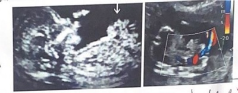
A Liberar a paciente para o domicílio após 1 hora de observação (desde que sem aumento da dilatação), com prescrição de progesterona por via vaginal, e orientar para que retorne se houver aumento das contrações ou diminuição da movimentação fetal.
B Internar a paciente e administrar tocolítico e corticosteroide se os resultados dos exames laboratoriais e a avaliação de bem-estar fetal estiverem normais; se o trabalho de parto evoluir, administrar sulfato de magnésio. A via de parto pode ser vaginal ou cesárea.
C Internar a paciente e realizar indução de trabalho de parto após 12 horas da administração de sulfato de magnésio e se os resultados dos exames laboratoriais estiverem normais. A tocólise está contraindicada para este tipo de malformação fetal. A via de parto pode ser vaginal.
D Internar a paciente e realizar cesariana após 48 horas da administração de corticosteroide e 12 horas de sulfato de magnésio. A tocólise e o parto vaginal estão contraindicados para este tipo de malformação fetal.
Questão 258 · Ginecologia · 4000197832Assinale a assertiva correta sobre métodos de avaliação da saúde fetal.
A Na gestação gemelar dicoriônica, o seguimento ultrassonográfico deve ser realizado a cada 2 semanas a partir da 16ª semana, devido à maior chance de ocorrência de complicações, tais como transfusão feto-fetal e sequência anemia-policitemia.
B Peso fetal estimado abaixo do percentil 10 para a idade gestacional associado a fluxo anormal à ultrassonografia com Doppler das artérias umbilicais é a melhor ferramenta para identificar restrição de crescimento fetal com alto potencial para efeitos adversos perinatais.
C Gestantes com diabetes melito em tratamento farmacológico devem realizar ultrassonografia com Doppler semanalmente a partir da 32ª semana, pois cardiotocografia e perfil biofísico fetal possuem alta taxa de falsos positivos.
D Avaliação do volume de líquido amniótico é um indicador da função placentária de curto prazo. O índice de líquido amniótico (IL
Questão 259 · Ginecologia · 4000197831Paciente de 41 anos, com 26 semanas de gestação, internada há 3 dias no CTI devido a síndrome coronariana aguda, apresentou parada cardiorrespiratória. Foram iniciadas as manobras de ressuscitação. A cesariana deverá ser realizada
A imediatamente.
B depois da administração de adrenalina.
C se tiver sido utilizada a desfibrilação elétrica.
D após 5 minutos de ressuscitação sem resposta.
Questão 260 · Ginecologia · 4000197830Primigesta de 43 anos, com 30 semanas de gestação, vinha realizando pré-natal de forma adequada. Nesta consulta, apresentou pressão arterial de 180/120 mmHg pela primeira vez. Em seu histórico familiar, havia registro de hipertensão arterial na gestação. Seu IMC era de 37 kg/m². Ao exame, a relação proteína- creatinina na urina era de 0,5, e o fullPIERS, de 1,2. A ultrassonogra a obstétrica mostrou feto cefálico com peso no percentil 20, artérias uterinas com incisura protodiastólica e artérias umbilicais com uxo diastólico anterógrado. Que conduta, dentre as abaixo, é a mais adequada?
A Prescrever metildopa e reavaliar a paciente em 1 semana no pré-natal.
B Internar a paciente e iniciar administração definifedipina.
C Iniciar indução do parto após administração de corticosteroide e hidralazina.
D Indicar cesariana após administração definifedipina, corticosteroide e sulfato de magnésio
Questão 261 · Ginecologia · 4000197829Primigesta com 30 semanas de gestação foi encaminhada à Emergência Obstétrica por ter apresentado pressão arterial de 150/100 mmHg. A ultrassonogra a obstétrica mostrou feto no percentil 8 de crescimento e aumento na resistência do uxo na artéria umbilical. A avaliação laboratorial indicou relação proteinúria/creatininúria de 0,2, relação sFlt-1/PLGF de 300, plaquetas séricas de 150.000/mm³, AST de 30 U/I e creatinina sérica de 0,8 g/ld. Que diagnóstico, dentre os abaixo, é mais provável?
A Hipertensão gestacional
B Hipertensão arterial crônica
C Eclâmpsia
D Pré-eclâmpsia
Questão 263 · Ginecologia · 4000197827Paciente de 36 anos, G1C1, com obesidade (124 kg), tabagista, procurou a Emergência Ginecológica por dor no baixo ventre e sangramento vaginal. Referiu atraso menstrual de 2 semanas. Ao exame físico, apresentava temperatura axilar de 36°C, pressão arterial de 100/60 mmHg, frequência cardíaca de 90 bpm, dor à palpação do abdômen inferior, sangramento por via vaginal em moderado volume e colo uterino fechado. Os exames laboratoriais mostraram 18.000 leucócitos/mm³, sem desvio. O laudo e a imagem uterina da ultrassonogra a transvaginal encontram- se reproduzidos abaixo. Considerando as hipóteses diagnósticas propostas, qual a mais provável?

A Abortamento incompleto
B Abortamento séptico
C Gestação anembrionada
D Gestação ectópica
Questão 264 · Ginecologia · 4000197826Mulher, 32 anos de idade, na terceira gestação, vem em consulta de rotina ginecológica para fazer o “preventivo”. Nega comorbidades e refere que seus “preventivos” sempre deram normais. Ao exame físico, não foram notadas alterações em colo uterino. De acordo com as Diretrizes do Ministério da Saúde: A paciente, nesse caso, apresentou ASC-US (células escamosas atípicas de significado indeterminado, possivelmente não neoplásicas) na citologia. Indique a conduta a ser seguida diante desse dado:
A Tratamento empírico de infecção vaginal e novo Papanicolau com um ano.
B Nova colpocitologia oncótica com seis meses.
C Rotina de colpocitologia a cada dois anos, por tratar-se de lesão benigna.
D Colposcopia com biópsia, no momento.
Questão 265 · Exames complementares · Exames complementares · 4000197825Mulher, 62 anos de idade, diabética bem controlada, vem ao atendimento referindo sangramento vaginal, de pouca quantidade, há cerca de quatro dias. Relata que a menopausa aconteceu com, cerca de, 48 anos e que depois disso nunca mais teve sangramento por via vaginal. Nega dor, febre ou qualquer outro sintoma. Nega uso prévio de terapia de reposição hormonal. Ao exame físico: Abdome: ácido, indolor à palpação; Ausência de massas palpáveis. Exame especular: hipotro a vaginal e cervical. Presença de sangramento de pouca quantidade não ativo em orifício externo do colo uterino. Trouxe resultado de colposcopia e citologia oncótica realizada há 6 meses, sem alterações. Solicitada ultrassonogra a transvaginal. O resultado da ultrassonogra a transvaginal demonstrou endométrio espessado. Histeroscopia cirúrgica com biópsia evidenciou carcinoma endometrioide, classificado em estádio I. Considerando o espessamento endometrial normal para a idade da paciente, a espessura do endométrio ao Ultrassom deve ser, no máximo, de:
A 4 a 5mm.
B 7mm.
C 8 a 10mm.
D 12 a 14mm.
Questão 266 · Tratamento cirúrgico · 4000197824Mulher, 62 anos de idade, diabética bem controlada, vem ao atendimento referindo sangramento vaginal, de pouca quantidade, há cerca de quatro dias. Relata que a menopausa aconteceu com, cerca de, 48 anos e que depois disso nunca mais teve sangramento por via vaginal. Nega dor, febre ou qualquer outro sintoma. Nega uso prévio de terapia de reposição hormonal. Ao exame físico: Abdome: ácido, indolor à palpação; Ausência de massas palpáveis. Exame especular: hipotro a vaginal e cervical. Presença de sangramento de pouca quantidade não ativo em orifício externo do colo uterino. Trouxe resultado de colposcopia e citologia oncótica realizada há 6 meses, sem alterações. Solicitada ultrassonogra a transvaginal. O resultado da ultrassonogra a transvaginal demonstrou endométrio espessado. Histeroscopia cirúrgica com biópsia evidenciou carcinoma endometrioide, classificado em estádio I. Indique o tratamento preconizado a partir do diagnóstico do carcinoma endometrioide estádio I:
A Progestágeno isolado contínuo e reavaliação após um mês.
B Histerectomia total.
C Histerectomia total e salpingooforectomia bilateral.
D Histerectomia subtotal.
Questão 267 · Tratamento adjuvante · 4000197823Mulher, 62 anos de idade, diabética bem controlada, vem ao atendimento referindo sangramento vaginal, de pouca quantidade, há cerca de quatro dias. Relata que a menopausa aconteceu com, cerca de, 48 anos e que depois disso nunca mais teve sangramento por via vaginal. Nega dor, febre ou qualquer outro sintoma. Nega uso prévio de terapia de reposição hormonal. Ao exame físico: Abdome: ácido, indolor à palpação; Ausência de massas palpáveis. Exame especular: hipotro a vaginal e cervical. Presença de sangramento de pouca quantidade não ativo em orifício externo do colo uterino. Trouxe resultado de colposcopia e citologia oncótica realizada há 6 meses, sem alterações. Solicitada ultrassonogra a transvaginal. O resultado da ultrassonogra a transvaginal demonstrou endométrio espessado. Histeroscopia cirúrgica com biópsia evidenciou carcinoma endometrioide, classificado em estádio I. Indique a conduta preconizada após o tratamento inicial padrão, caso o carcinoma endometrioide seja de baixo risco – G2:
A Complementação com linfadenectomia.
B Quimioterapia adjuvante.
C Radioterapia adjuvante.
D Apenas seguimento em serviço especializado.
Questão 268 · Diagnóstico · Ginecologia · 4000197822Mulher, 23 anos de idade, solteira, refere dor em baixo ventre há dois dias, associada à saída de secreção vaginal de odor fétido há um dia. Última menstruação há cerca de cinco dias. Refere vida sexual ativa, porém sem parceiro xo. Ao exame: paciente encontra-se estável hemodinamicamente, afebril; abdome doloroso à palpação de hipogástrio, descompressão brusca negativa. Exame especular: presença de secreção vaginal amarelada de odor fétido de pouca quantidade. Toque vaginal: dor à manipulação do colo uterino e à palpação da região anexial. Indique o critério menor para o diagnóstico de Doença Inflamatória Pélvica, presente no caso:
A Dor abdominal à palpação com descompressão brusca negativa.
B Dor à manipulação do colo uterino.
C Dor à palpação da região anexial.
D Secreção vaginal amarelada de odor fétido.
Questão 269 · Ginecologia · Tratamento · 4000197821Mulher, 23 anos de idade, solteira, refere dor em baixo ventre há dois dias, associada à saída de secreção vaginal de odor fétido há um dia. Última menstruação há cerca de cinco dias. Refere vida sexual ativa, porém sem parceiro xo. Ao exame: paciente encontra-se estável hemodinamicamente, afebril; abdome doloroso à palpação de hipogástrio, descompressão brusca negativa. Exame especular: presença de secreção vaginal amarelada de odor fétido de pouca quantidade. Toque vaginal: dor à manipulação do colo uterino e à palpação da região anexial. Indique o esquema de tratamento nesse momento:
A Ceftriaxona intravenoso, dose única, Doxiciclina e Metronidazol por via oral.
B Ceftriaxona e Metronidazol intravenoso.
C Apenas Doxiciclina, via oral.
D Ciprofloxacino e Metronidazol venoso.
Questão 270 · Ginecologia · 4000197820Primigesta de 29 anos, com 37 semanas de gestação, com pré-eclâmpsia, teve seu parto induzido. Após início das contrações efetivas, evoluiu rapidamente para parto vaginal, sem episiotomia, com laceração de 1º grau. O recém-nascido pesava 2.730 g, com vitalidade. Foi realizado clampeamento oportuno do cordão e administradas 10 UI de ocitocina por via intramuscular após dequitação placentária (cerca de 8 minutos após o nascimento). Logo após a dequitação, a paciente passou a apresentar sangramento em grande volume através do orifício cervical, associado à hipotonia uterina. Foram iniciadas massagem uterina bimanual e infusão intravenosa de ocitocina de 10 UI/hora, controlada por bomba de infusão. Enquanto se obtinha um segundo acesso venoso, foram verificados os sinais vitais: pressão arterial de 74/50 mmHg, frequência cardíaca de 134 bpm e saturação de oxigênio de 98%. A paciente encontrava-se pálida e sudorética, mas consciente. Assinale a alternativa correta sobre a profilaxia e o manejo da hemorragia.
A A ocitocina profilática foi administrada no momento correto.
B O ácido tranexâmico (1 g intravenoso) deveria ter sido administrado precocemente em caso de sangramento tecidual, por estar associado à redução da mortalidade materna. Entretanto, seu uso não é recomendado para tratar hemorragia por atonia uterina.
C Os primeiros medicamentos a serem administrados, persistindo o sangramento, são misoprostol (800 µg por via oral) e metilergometrina (1 ampola de 200 µg por via intramuscular), por serem os mais eficazes e seguros.
D De acordo com o índice de choque e perda sanguínea estimada, é provável que seja necessário administrar precocemente hemocomponentes (concentrado de hemácias, plasma fresco e plaquetas) em iguais proporções.
Questão 271 · Ginecologia · 4000197819Gestante de 32 anos, com glicemia de jejum de 88 mg/dl no início da gestação, realizou teste de tolerância à glicose com 75 g na 24ª semana de gestação cujos resultados estão reproduzidos abaixo. Com base no quadro, assinale a assertiva correta.
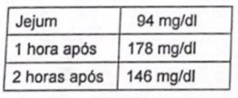
A O resultado do exame é normal, característico de um pré-natal de risco habitual.
B O resultado do exame é contraditório, sendo, portanto, necessário um novo teste para definir o diagnóstico.
C A paciente apresenta diagnóstico de diabetes gestacional, com risco aumentado de distocia de ombro no parto.
D A paciente apresenta diagnóstico de diabetes melito tipo 2, com risco de macrossomia fetal.
Questão 272 · Ginecologia · 4000197818Assinale a assertiva incorreta sobre diagnóstico, classificação e manejo da restrição de crescimento fetal (RCF).
A Segundo a classificação da RCF em estágios (Figueras & Gratacós, 2014), o estágio III caracteriza- se por artéria umbilical com diástole reversa ou ducto venoso com índice de pulsatilidade (IP) > percentil 95, devendo a gestação ser interrompida com 30 semanas ou mais de idade gestacional.
B Conforme o estudo TRUFFLE, o prejuízo neurológico aos 2 anos é significativamente menor quando a decisão do nascimento estiver baseada em alterações tardias do ducto venoso (onda 'a' zero ou reversa) e não em alterações precoces (IP > percentil 95) ou na cardiotocografia computadorizada.
C De acordo com a classificação da RCF seletiva na gestação monocoriônica (Gratacós et al., 2007), o exame Doppler da artéria umbilical do gêmeo restrito evidenciando fluxo diastólico reverso persistente é compatível com o tipo III, e, assim, a chance de morte intrauterina inesperada desse feto encontra-se em torno de 15%.
D Idade gestacional é o determinante mais significativo da sobrevida total até 26
Questão 273 · Ginecologia · 4000197817Associe as patologias obstétricas (coluna da esquerda) às características clínicas ou ultrassonográficas que as representam (coluna da direita). 1- Hematomas subcoriônicos; 2- Molas hidatiformes parciais; 3- Molas hidatiformes completas; 4- Lagos venosos placentários; 5- Tumor trofoblástico de localização placentária; ( ) Origem triploide, saco gestacional irregular e trofoblasto heterogêneo, com estruturas embrionárias presentes. ( ) Maior risco de abortamento, natimortalidade, descolamento prematuro de placenta, trabalho de parto pré-termo. ( ) Quase que invariavelmente cursam com níveis de numérica correta, de cima para baixo, da coluna da direita, é
A 2 - 1 - 3
B 2 - 4 - 5
C 3 - 1 - 2
D 3 - 4 - 5
Questão 274 · Ginecologia · 4000197816Na infecção puerperal, a flora mais comum é
A aeróbica.
B anaeróbica.
C facultativa.
D polimicrobiana.
Questão 275 · Ginecologia · 4000197815Puérpera de 32 anos, com IMC de 31kg/m², teve parto vaginal normal e foi encaminhada ao alojamento conjunto. Por ter apresentado sangramento aumentado, foram utilizados ácido tranexâmico e misoprostol. Está amamentando e deverá ter alta precoce. A profilaxia para trombose venosa será realizada com
A administração de heparina de baixo peso molecular.
B indicação de deambulação precoce.
C uso de rivaroxabana.
D uso de meias elásticas.
Questão 276 · Ginecologia · 4000197814Na fisiopatologia da continência urinária, durante o enchimento vesical, há estimulo
A do parassimpático.
B dos nervos somáticos do esfíncter estriado.
C de contração beta-adrenérgica.
D de relaxamento alfa-adrenérgico.
Questão 277 · Ginecologia · 4000197813Paciente de 45 anos, com pólipo endometrial de 2 cm, será submetida a polipectomia endoscópica monopolar. Que meio de distensão endometrial, dentre os abaixo, deverá ser utilizado?V
A Solução salina
B Ringer lactato
C CO₂
D Glicina
Questão 278 · Ginecologia · 4000197812Para paciente de 24 anos, com cisto ovariano (sugestivo de ser benigno), foi indicada exérese por laparoscopia. Complicações na introdução do equipamento, embora raras, já foram relatadas. A lesão mais frequente ocorre no(a)
A intestino delgado.
B artéria ilíaca.
C aorta.
D bexiga.
Questão 279 · Diagnóstico · Ginecologia · 4000197811Mulher, 23 anos de idade, solteira, refere dor em baixo ventre há dois dias, associada à saída de secreção vaginal de odor fétido há um dia. Última menstruação há cerca de cinco dias. Refere vida sexual ativa, porém sem parceiro xo. Ao exame: paciente encontra-se estável hemodinamicamente, afebril; abdome doloroso à palpação de hipogástrio, descompressão brusca negativa. Exame especular: presença de secreção vaginal amarelada de odor fétido de pouca quantidade. Toque vaginal: dor à manipulação do colo uterino e à palpação da região anexial. Indique o estádio da doença no caso, de acordo com os critérios de Monif , quanto ao tempo de evolução:
A 1
B 2
C 3
D 4
Questão 280 · Síndrome dos ovários policísticos · 4000197810Casal (mulher: 32 anos de idade; homem: 34 anos de idade) vem em consulta referindo que há dois anos estão tentando gestação sem sucesso. Ela relata que possui um ciclo menstrual muito irregular e que, às vezes, passa muitos meses sem menstruar. Além disso, há cerca de três anos vem com acne, oleosidade da pele e queda capilar que associa à suspensão do anticoncepcional. Tem IMC de 26. Ambos estão sedentários. Ela refere que antes era tabagista, mas, após suspensão da pílula para tentar engravidar, parou o tabagismo e engordou cerca de 10Kg. Nega dismenorreia ou uxo alto quando menstrua. Nega comorbidades. Negam lhos de relacionamentos anteriores. Ele nega patologias. Negam uso de medicamentos no momento. Vida sexual ativa e regular. Considerando a Síndrome de Ovários Policísticos (SOP), principal suspeita diagnóstica nesse caso, pode se dizer que
A uma forma de avaliar a gravidade do hiperandrogenismo clínico é através da Escala de Ferriman Gallwey em que pontuação acima de 7 indica hirsutismo.
B considerando outras causas de anovulação crônica, a Hiperplasia Adrenal Congênita não clássica pode ser inferida quando o nível de 17-OH-progesterona está muito baixo.
C níveis elevados de prolactina indicam anovulação crônica não decorrente de SOP mas pela Hiperprolactinemia, pois na SOP o nível de prolactina é normal.
D o diagnóstico ultrassonográfico de SOP é feito pela presença de ≥ 20 folículos com diâmetro de 2 a 9mm e/ou volume ovariano total ≥ 10cm³ uni ou bilateralmente, exceto na presença de cisto funcional.
Questão 281 · Ginecologia · 4000197809Casal (mulher: 32 anos de idade; homem: 34 anos de idade) vem em consulta referindo que há dois anos estão tentando gestação sem sucesso. Ela relata que possui um ciclo menstrual muito irregular e que, às vezes, passa muitos meses sem menstruar. Além disso, há cerca de três anos vem com acne, oleosidade da pele e queda capilar que associa à suspensão do anticoncepcional. Tem IMC de 26. Ambos estão sedentários. Ela refere que antes era tabagista, mas, após suspensão da pílula para tentar engravidar, parou o tabagismo e engordou cerca de 10Kg. Nega dismenorreia ou uxo alto quando menstrua. Nega comorbidades. Negam lhos de relacionamentos anteriores. Ele nega patologias. Negam uso de medicamentos no momento. Vida sexual ativa e regular. Quanto ao diagnóstico de infertilidade do casal, neste caso, pode-se dizer que
A não pode ser definido, pois o casal está tentando engravidar há, apenas, dois anos.
B é firmado pela ausência de gestação, apesar de mais de um ano de tentativa, com vida sexual ativa.
C é firmado e classificado como infertilidade conjugal secundária, pois há anovulação crônica.
D não pode ser definido, pois trata-se de anovulação crônica, bastando corrigir o ciclo menstrual para facilitar a gestação.
Questão 282 · Tratamento cirúrgico · 4000197808Paciente de 59 anos com queixa de sangramento pós-menopausa há 9 meses. De comorbidade apresenta obesidade e diabetes tipo II. Na ultrassonografia transvaginal foi vista imagem de espessamento endometrial; foi realizada vídeo-histeroscopia com biópsia, cujo resultado foi: adenocarcinoma endometrial grau 2. O tratamento é:
A Tratamento clínico com progestágeno via oral por 6 meses
B Tratamento clínico com anticoncepcional oral por 6 meses e repetir histeroscopia depois
C Histerectomia com salpingo-oforectomia bilateral +linfadenectomia pélvica
D Histerectomia com salpingo-oforectomia bilateral + linfadenectomia pélvica e para aórtica e lavado peritoneal
Questão 283 · Ginecologia · 4000197807Casal (mulher: 32 anos de idade; homem: 34 anos de idade) vem em consulta referindo que há dois anos estão tentando gestação sem sucesso. Ela relata que possui um ciclo menstrual muito irregular e que, às vezes, passa muitos meses sem menstruar. Além disso, há cerca de três anos vem com acne, oleosidade da pele e queda capilar que associa à suspensão do anticoncepcional. Tem IMC de 26. Ambos estão sedentários. Ela refere que antes era tabagista, mas, após suspensão da pílula para tentar engravidar, parou o tabagismo e engordou cerca de 10Kg. Nega dismenorreia ou uxo alto quando menstrua. Nega comorbidades. Negam lhos de relacionamentos anteriores. Ele nega patologias. Negam uso de medicamentos no momento. Vida sexual ativa e regular. Indique a conduta terapêutica adequada para o caso:
A Modificação de estilo de vida como primeira linha de conduta, sem indicação de medicação hormonal.
B Prescrição hormonal combinada para estimular sangramento após a suspensão, seguido do uso de Citrato de clomifeno 50mg ao dia, por cinco dias a partir do terceiro dia do início do sangramento.
C Prescrição hormonal combinada para estimular sangramento após a suspensão, seguido do uso de Letrozol 5mg ao dia, por cinco dias a partir do terceiro dia do início do sangramento.
D Prescrição de Mio-inositol e Metformina como forma de estimulação à ovulação.
Questão 284 · BIRADS · 4000197806Paciente feminina, de 53 anos, realizou mamogra a de rastreio que evidenciou: "calci cações grosseiras semelhantes a pipoca" em mama direita. Quanto ao achado mamográfico não podemos dizer que:
A São calcificações grandes, superiores a 2-3 mm
B Tais calcificações podem estar associadas ou não a nódulo
C Necessitam de investigação histopatológica com biópsia por serem suspeitos
D Compatíveis com fibroadenoma em fase involutiva, não necessitam de qualquer investigação adicional
Questão 285 · Ginecologia · 4000197805Que característica, dentre as abaixo, não faz parte do quadro de vaginose citolítica?
A Excesso de proliferação de lactobacilos
B pH vaginal > 5
C Teste de aminas negativo
D Leucorreia de aspecto branco com prurido
Questão 286 · Ginecologia · 4000197804Paciente de 46 anos, com ciclos menstruais regulares, veio à consulta de revisão anual. Sem queixas, informou não fazer uso de medicamentos e negou galactorreia. Os resultados dos exames de sangue apresentaram valores normais, exceto a dosagem de prolactina (85 ng/ml). O exame foi repetido, e o resultado indicou 74 ng/ml (valor de referência: 5-25 ng/ml). Nesse caso, a paciente deverá
A submeter-se a uma tomografia computadorizada da sela túrcica.
B submeter-se a uma ressonância magnética da pituitária.
C realizar dosagem de macroprolactina.
D iniciar o uso de cabergolina.
Questão 287 · Ginecologia · 4000197803Paciente de 18 anos, com 175 cm de altura, 62 kg de peso e mamas bem desenvolvidas, consultou por apresentar amenorreia primária. À ultrassonogra a, não se visualizou o útero. Foi solicitada pesquisa de cariótipo. Considere as possibilidades abaixo. I - 46 XX; II - 46 XY; III - 45 X0; Quais delas poderiam ser associadas ao quadro da paciente?
A Apenas I
B Apenas III
C Apenas I e II
D Apenas II e III
Questão 288 · Ginecologia · 4000197802Paciente de 32 anos, com ciclos menstruais que variam de 30-34 dias com 4 dias de sangramento, está tentando gestar há 4 anos. O marido, com 2 lhos do primeiro casamento, apresentou espermograma normal. O exame laboratorial da paciente revelou IgG reagente 1/20 para Chlamydia. As imagens da histerossalpingogra a e da ultrassonogra a encontram-se reproduzidas abaixo. A paciente terá mais chance de gestar com a realização de

A antibioticoterapia sistêmica para tratar doença inflamatória pélvica.
B fertilização in vitro (FIV).
C videolaparoscopia com salpingostomia bilateral.
D videolaparoscopia com ressecção da hidrossalpinge e FIV.
Questão 289 · Ginecologia · 4000197801Paciente de 34 anos, G4A3P1, veio à consulta por estar tentando gestar. Em seu histórico, constavam 2 abortos consecutivos com 6 semanas de gestação aos 26 e aos 29 anos e 1 gestação normal aos 31 anos. Informou que, há 2 anos, ocorrera outra perda gestacional com 8 semanas, do novo companheiro, não tendo sido necessária curetagem. Trouxe resultados de dosagens de TSH e prolactina normais. No momento, a conduta mais indicada é
A realizar histeroscopia diagnóstica.
B realizar investigação de trombofilias.
C prescrever progesterona na 2ª fase do ciclo menstrual.
D tranquilizar a paciente e sugerir nova tentativa de gestação.
Questão 290 · Ginecologia · 4000197800Para o tratamento da incontinência urinária de esforço, está indicado o uso de
A duloxetina.
B solifenacina.
C mirabegron.
D oxibutinina.
Questão 291 · Ginecologia · 4000197799Assinale a assertiva incorreta sobre histerectomia por via vaginal.
A Tamanho uterino > 200 cm³ impossibilita sua realização.
B É realizada pela técnica extrafascial.
C É a via de eleição para a maioria dos casos, devendo ser a preferida sempre que possível.
D Dissecção e penetração no septo vesicuterino permitem o afastamento adequado da bexiga e dos ureteres do campo operatório.
Questão 292 · Ginecologia · 4000197798Assinale a assertiva correta sobre o tratamento cirúrgico da incontinência urinaria.
A A cirurgia de Burch deve ser evitada em pacientes com pressão de perda aos esforços < 60cmH₂O.
B o sling transobturatório apresenta maior taxa de cura objetica do que o retropúbico.
C Tanto o sling transobturatório quanto o retropúbico são posicionados na altura do colo vesical.
D A avaliação urodinâmica é exame indispensável para confirmar a indicação cirúrgica.
Questão 293 · Ginecologia · 4000197797Nuligesta de 32 anos, hígida, com histórico de revisões ginecológicas regulares, encontrava-se há 10 meses sem anticoncepção por pretender gestar. Em razão de alteração no exame citopatológico de colo uterino (lesão intraepitelial de alto grau), submeteu-se a uma colposcopia que sugeriu lesão de alto grau, tendo sido realizado o tratamento "ver e tratar" com alça de alta frequência, sem intercorrências. Retornou 3 semanas após o procedimento e, ao exame, o colo estava cicatrizado. No laudo anatomopatológico, constava Carcinoma epidermoide com invasão estromal de 2mm. Ausência de invasão do espaço linfovascular (IELV). Limite focalmente comprometido. Que conduta, dentre as abaixo, é a mais adequada?
A Controle clínico
B Conização com alça de alta frequência ou bisturi
C Histerectomia simples
D Histerectomia radical
Questão 294 · Ginecologia · 4000197796Paciente de 42 anos, com 3 lhos, com hipertensão, teve confirmado o diagnóstico de carcinoma epidermoide de colo uterino. O IMC era de 28 kg/m². O exame especular indicou tumor de 3 cm no colo, o toque vaginal confirmou a dimensão, sem invasão da vagina, e o toque retal revelou paramétrios livres. Não havia alterações nos demais exames clínicos. As tomogra as computadorizadas de abdômen e pelve não mostraram evidência de linfonodos suspeitos; a radiogra a de tórax e os exames bioquímicos estavam normais. Foi indicada histerectomia radical com linfadenectomia pélvica. No laudo do exame anatomopatológico, constava Carcinoma epidermoide medindo 3,5 cm de diâmetro, com invasão do terço externo do estroma e invasão do espaço linfovascular. Linfonodos (23) com hiperplasia linfoide, sem metástase. Paramétrios livres, limites cirúrgicos livres da neoplasia. Trompas sem particularidades. Que conduta, dentre as abaixo, é a mais adequada?
A Radioterapia pélvica externa na dose de 45-50 Gy
B Braquiterapia na dose de 6 Gy
C Seguimento trimestral por 2 anos e, após, semestral até o 5° ano
D Seguimento semestral por 2 anos
Questão 295 · Ginecologia · 4000197795Assinale a assertiva incorreta sobre o implante de etonogestrel.
A Se inserido nos primeiros 7 dias da menstruação, apresenta eficácia imediata, sendo desnecessária qualquer proteção contraceptiva adicional.
B Pode ser inserido no membro superior ou no glúteo.
C Tem 3 anos de duração, e o principal efeito relacionado à suspensão do método é sangramento irregular.
D Apresenta índice de Pearl igual ou superior ao dos métodos definitivos, como ligadura tubária e vasectomia.
Questão 296 · BIRADS · 4000197794Paciente de 55 anos com uma mamografia com classificação BI-RADS 3. O que significa essa classificação?
A Lesão altamente suspeita para malignidade
B Lesão que deverá ser reavaliada em 6 meses
C Lesão maligna já biopsiada, mas não submetida ao tratamento definitivo
D Lesão com 95% de possibilidade de malignidade
Questão 297 · Ginecologia · 4000197793Mulher, 35 anos de idade, descobriu recentemente sua gestação e teve a primeira consulta de pré-natal há 2 semanas. Retorna para revisão com 10 semanas gestacional. Ao ser questionada sobre náuseas, refere que nas últimas 24 horas se sentiu nauseada por cerca de oito horas, apresentou um episódio de vômito e observou, por três vezes, intensa salivação e esforço para vomitar. Identi que o grau de gravidade, de acordo com o Escore de PUQE (Pregnancy Unique Quanti cation of Emesis), para a náusea dessa paciente:
A Leve.
B Moderada.
C Grave.
D Muito grave.
Questão 298 · Descarga papilar · 4000197792Paciente de 40 anos com nódulo de 0,9 cm em região retro-areolar da mama direita e sangramento à expressão papilar, por um ducto somente. Fez core biópsia que mostrou lesão proliferativa sem atipias sugestiva de papiloma. Qual seria a sua conduta?
A Ressecção do nódulo e biópsia do linfonodo sentinela
B Ressecção do nódulo (cirúrgico ou mamotomia)
C Repetir exames de imagem em 6 meses
D Pedir imunohistoquímica da lesão
Questão 299 · Ginecologia · 4000197791Mulher, 35 anos de idade, descobriu recentemente sua gestação e teve a primeira consulta de pré-natal há 2 semanas. Retorna para revisão com 10 semanas gestacional. Ao ser questionada sobre náuseas, refere que nas últimas 24 horas se sentiu nauseada por cerca de oito horas, apresentou um episódio de vômito e observou, por três vezes, intensa salivação e esforço para vomitar. Sobre medidas terapêuticas não farmacológicas (de medicina integrativa) para o caso, pode-se afirmar:
A A acupuntura no ponto clássico PC6 (pericárdio 6) mostrou ser benéfica para náuseas e vômitos na gestação.
B A gestante não poderá utilizar gengibre como tratamento para náusea visto que o gengibre aumenta o risco de contrações uterinas e, assim, de abortamento.
C Aatividade física, mesmo de baixo impacto, no período das náuseas não é recomendada pois aumenta o sintoma.
D O consumo de alimentos picantes mostrou-se benéfico, nesses casos, pela ação da capsaicina e do ácido acético.
Questão 300 · Ginecologia · 4000197790Paciente de 30 anos com queixa de sinusorragia há 6 meses. É G=2, P=2 (partos normais). Método contraceptivo: laqueadura tubária. Não fez exames preventivos durante a pandemia do coronavírus 19. Na consulta ginecológica foi realizada colpocitologia oncótica com resultado sugestivo de NIC-lll (lesão intraepitelial cervical de alto grau). A conduta após este resultado é:
A Conização
B Histerectomia abdominal total
C Eletrocauterização do colo do útero
D Colposcopia e biópsia, se lesão visível
Questão 301 · Estadiamento · 4000197789Paciente do gênero feminino, 65 anos, foi encaminhada devido a tumor em mama esquerda com evolução de 3 meses. O laudo de exame anátomopatológico mostrou carcinoma ductal invasivo do tipo não especial. O exame imunohistoquímico: tumor luminal híbrido. Refere ter percebido o tumor há 3 meses e o crescimento foi rapidamente progressivo, associado a retração do complexo aréolopapilar e edema da pele. Na inspeção estática evidenciamos mama esquerda com abaulamento difuso extenso envolvendo porção central com edema de 50%, axila esquerda com 2 nódulos tumorais de 2,0 e 2,5 cm. Na palpação, observamos tumor central de 10 cm. Conclusão: tumor localmente avançado estadiamento cT4BcN1Mx. Foram solicitados exames de estadiamento. Qual a afirmação correta?
A O diagnóstico clínico é de carcinoma inflamatório
B Por ser luminal híbrido o agente monoclonal anti- HER-2 não está indicado.
C O tratamento cirúrgico deve ser imediato uma vez excluídas metástases sistêmicas
D O edema da pele decorre de êmbolos de células neoplásicas nos linfáticos dérmicos
Questão 302 · Ginecologia · 4000197788Mulher, 35 anos de idade, descobriu recentemente sua gestação e teve a primeira consulta de pré-natal há 2 semanas. Retorna para revisão com 10 semanas gestacional. Ao ser questionada sobre náuseas, refere que nas últimas 24 horas se sentiu nauseada por cerca de oito horas, apresentou um episódio de vômito e observou, por três vezes, intensa salivação e esforço para vomitar. Uma das complicações possíveis de serem observadas nesse caso, é a encefalopatia de Wernicke, uma condição neurológica aguda. Indique o fator responsável por essa condição na hiperêmese gravídica:
A deficiência de vitamina B12 (cianocobalamina).
B deficiência de vitamina B6 (piridoxina).
C deficiência de vitamina B2 (riboflavina).
D deficiência de vitamina B1 (tiamina).
Questão 303 · Ginecologia · Tumores ovarianos benignos · Câncer de ovário · 4000197787Paciente de 60 anos, com queixa de aumento de volume abdominal há 6 meses, dispneia em decúbito dorsal e perda de 10 quilos no período. Traz tomogra a de abdome total e tórax caracterizando volumosa massa abdominal, estendendo-se até a cicatriz umbilical, de provável origem ovariana, presença de ascite e derrame pleural moderado à direita. Foi submetida à laparotomia exploradora e congelação do anexo esquerdo. Os diagnósticos anatomopatológicos mais prováveis são:
A Tumor de Krukemberg, fibroma, tumor de Brenner
B Cistoadenoma mucinoso, fibroma, tumor de células claras
C Tumor de células da granulosa, disgerminoma, adenocarcinoma seroso
D Tumor de Krukemberg, adenocarcinoma seroso, adenocarcinoma mucinoso
Questão 304 · Câncer de mama · 4000197786Paciente do gênero feminino, foi diagnosticada com câncer de mama unilateral aos 60 anos de idade. O diagnóstico anatomopatológico foi de carcinoma ductal invasivo do tipo não especial. No interrogatório referente aos antecedentes familiares de neoplasia revelou que o avô paterno morreu de câncer de pulmão aos 80 anos. Nega outros antecedentes em parentes de primeiro, segundo e terceiro graus, tanto de lado paterno quanto do materno. Foi solicitado exame imunohistoquímico. Assim, qual a correta?
A O exame imunohistoquímico neste caso é desnecessário.
B Em relação à hereditariedade trata-se de uma neoplasia mamária esporádica.
C Por ser câncer de mama não há necessidade de avaliar herança do lado paterno.
D Se for luminal A, pode decorrer de mutação germinativa no gene BRCA-1
Questão 305 · Ginecologia · Estadiamento · 4000197785Paciente de 65 anos, com quadro de tumor ovariano, foi submetida a tratamento cirúrgico radical (citorredução) e o resultado do anátomopatológico revelou comprometimento do peritônio pélvico. O estadiamento dessa paciente é?
A II A
B ll B
C I C
D III C
Questão 306 · Ginecologia · Terapia adjuvante · 4000197783Paciente de 65 anos, com quadro de tumor ovariano, foi submetida a tratamento cirúrgico radical (citorredução) e o resultado do anátomopatológico revelou comprometimento do peritônio pélvico. Essa mesma paciente retorna após o procedimento cirúrgico ao ambulatório para seguimento oncológico. Qual tratamento adjuvante a ser indicado?
A Radioterapia externa
B Radioterapia localizada (braquiterapia)
C Quimioterapia (6 ciclos de taxano e platina)
D Não está indicado tratamento adjuvante, somente seguimento com exames
Questão 307 · Tratamento cirúrgico · 4000197781Paciente de 39 anos com câncer de mama receptor de hormônios positivo e HER-2 negativo. Foi submetida à cirurgia conservadora, com antomopatológico identi cando carcinoma ductal invasivo do tipo não especial, grau histológico 2 com 2,5 cm de extensão e 2 linfonodos positivos de 3 retirados na pesquisa de linfonodo sentinela. Considerando esse contexto, assinale a alternativa correta:
A O estudo ACOSOG Z0011 concluiu que a taxa de recorrência local em 9 anos é semelhante nos dois grupos não sendo mandatória a dissecção axilar.
B O uso de plataformas genômicas como Oncotype DX e Mammaprint deve ser considerado a fim de que seja diminuída a indicação de adjuvância com quimioterapia.
C A dissecção axilar deve ser considerada, uma vez que, nessa idade, a chance de ter outros linfonodos comprometidos é alta.
D O Oncotype DX não consegue predizer o benefício da quimioterapia adjuvante a única plataforma possível é Mammaprint.
Questão 308 · Tratamento · 4000197779Paciente de 35 anos, G=0, P=0, procura ambulatório de ginecologia referindo irregularidade menstrual há 6 meses com aumento importante do uxo. Fez ultrassonogra a pélvica e endovaginal que mostrou uma linha endometrial de 2,5 cm. Foi então submetida à vídeo histeroscopia com biopsia e o anátomopatológico revelou uma hiperplasia benígna do endométrio. A paciente não tem desejo de engravidar nos próximos meses. A conduta mais adequada seria:
A Inibidor de aromatase, já que não pretende engravidar logo.
B DIU com levonorgestrel ou anticoncepcional hormonal oral caso não seja possível o DIU.
C Histerectomia total (não tem necessidade de retirar os ovários porque paciente é jovem).
D Pan Histerectomia Total (risco muito alto de evoluir para câncer endométrio - em torno de 30%).
Questão 309 · Ginecologia · 4000197778A figura abaixo apresenta resultados de duas pesquisas clínicas: estudo A e estudo B, que avaliaram a e cácia de um mesmo tratamento hipotético sobre o desfecho morte por covid-19. A linha pontilhada significa a estimativa-ponto, e a linha contínua, a nulidade. Com base na figura, é possível afirmar que
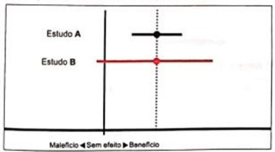
A o estudo A evidenciou que o tratamento pode piorar o desfecho principal.
B o estudo B descartou benefício do tratamento.
C o estudo B provavelmente tem menor tamanho amostral do que o estudo A.
D os estudos têm resultados divergentes.
Questão 310 · Ginecologia · 4000197777Paciente do sexo feminino, 38 anos, ciclos menstruais regulares, G=2, P=2 (duas cesáreas anteriores). Data do último parto há 3 anos. Nega uso de medicamentos. Realizada laqueadura tubária por Videolaparoscopia há dois anos. Apresenta ao exame físico: nodulação palpável em Fossa Ilíaca direita, adjacente a cicatriz da cesárea, com dor e aumento do seu volume durante o período menstrual. Qual o diagnóstico provável?
A Cisto de Nuck
B Hérnia inguinal
C Endometriose focal
D Apendicite crônica
Questão 311 · Ginecologia · 4000197776Paciente de 17 anos, virgem, com amenorreia primária, procura nosso serviço para avaliação. Ao exame físico, apresenta caracteres sexuais secundários femininos como distribuição gordurosa e mamas presentes. Traz exames realizados em outro serviço: ultrassom pélvico com ausência de útero e anexos. Testes plasmáticos hormonais: estrogênio — normal; progesterona — ausente; testosterona — aumentada; FSH (hormônio folículo estimulante) — normal; LH (hormônio luteinizante) — aumentado. Qual a sua principal hipótese diagnóstica?
A Síndrome da insensibilidade completa aos androgênios.
B SOP — Síndrome dos Ovários Policísticos.
C Hipogonadismo hipergonadotrófico.
D Puberdade tardia.
Questão 312 · Inf ertilidade conjugal · 4000197775Paciente de 33 anos, com fator de infertilidade por Endometriose é submetida a Videolaparoscopia Cirúrgica para retirada de Endometriomas em ambos ovários, lise de aderências e retirada de nódulo endometriótico peritoneal em Fundo de Saco de Douglas. Após três meses da cirurgia fez nova dosagem do HAM (hormônio anti-mülleriano) e Progesterona. Qual o resultado esperado?
A HAM: inalterado / Progesterona: inalterada
B HAM: aumentou / Progesterona: diminuiu
C HAM: diminuiu / Progesterona: inalterada
D HAM: aumentou / Progesterona: aumentou
Questão 313 · Câncer de mama · 4000197774Paciente com 30 anos, detectou um nódulo em sua mama direita. Realizada a biópsia obteve o diagnóstico histopatológico de Carcinoma Ductal invasivo, HER-2 positivo. Teve indicação do Mastologista para mastectomia e quimioterapia. Refere ser solteira e deseja preservar sua fertilidade. Qual a melhor orientação?
A Criopreservação de oócitos
B Engravidar antes de fazer a quimioterapia
C Bloqueio hipofisário com agonista do GnRH
D Não se preocupar, ela é jovem e os tratamentos não interferem na fertilidade
Questão 314 · Ginecologia · 4000197773Paciente com 32 anos, deseja engravidar. Apresenta ciclos menstruais longos, a cada 50 - 90 dias. Nega cirurgias anteriores. Nega uso de medicamentos. Menarca aos 12 anos. Nuligesta. Dosagens hormonais plasmáticas: FSH (hormônio folículo estimulante) = 35 mUI/ml / Prolactina = 25 ng/ml. Qual a hipótese diagnóstica mais provável?
A Falência ovariana prematura
B Síndrome dos ovários policísticos
C Hiperprolactinemia
D Insuficiência Hipotalâmica
Questão 315 · Ginecologia · 4000197772Paciente com 32 anos, deseja engravidar. Apresenta ciclos menstruais longos, a cada 50 - 90 dias. Nega cirurgias anteriores. Nega uso de medicamentos. Menarca aos 12 anos. Nuligesta. Dosagens hormonais plasmáticas: FSH (hormônio folículo estimulante) = 35 mUI/ml / Prolactina = 25 ng/ml. Baseado no caso anterior, qual tratamento recomendado?
A Análogo do GnRh por 3 meses
B Programa de Ovodoação/Recepção
C Indução da ovulação com Letrozole
D Indução da ovulação com Gonadotrofinas exógenas
Questão 316 · Ginecologia · 4000197771Paciente de 18 anos procura orientação pois deseja engravidar logo que possível. Ele com 23 anos apresenta seu exame pré-nupcial dentro da normalidade, enquanto ela é portadora da Síndrome de Rokitansky - Kuster - Hauser. Qual a melhor opção de tratamento possível?
A Indução de ovulação com coito programado (CP)
B Indução de ovulação com inseminação intra-uterina (IIU)
C Indução da ovulação com transferência de gametas intratubárea (GIFT)
D Indução da ovulação com fertilização in-vitro e transferência de embriões em útero de substituição (FIV)
Questão 317 · Ginecologia · 4000197770Mulher, 34 anos de idade, gestante de 23 semanas, realizou exames laboratoriais de rotina pré-natal e vem para consulta médica após realização de ultrassonogra a morfológica de 2o trimestre, sem nenhuma alteração. Fez exames laboratoriais: Hb: 10,0g/dL e Hematócrito: 30%; VCM: 76 (VR: 80 – 100 ) e HCM < 25pg (VR: 28 – 34pg). Eletroforese de hemoglobina evidencia traço falciforme e a paciente refere que seu parceiro também possui traço falciforme. Com base nos dados do caso, Identi que o nível de hemoglobina normal esperado para o diagnóstico de anemia em uma gestação de 2° trimestre:
A <11,0g/dL
B <12,0g/dL
C <10,5g/dL
D <11,5g/dL
Questão 318 · Síndrome dos ovários policísticos · 4000197769Paciente com 21 anos, menarca aos 10 anos. Refere no último ano ciclos menstruais irregulares e há 3 meses não apresenta menstruação. Ao exame clínico, observou-se hiperandrogenismo clínico. Nos exames complementares apresentou: ultrassom pélvico via endovaginal: útero em AVF com aspecto e volume normais; ovário direito apresentando 21 cistos anecóicos entre 2 e 9 mm de diâmetro médio, dispersos irregularmente pelo tecido gonadal, com volume de 12 cm3; ovário esquerdo apresentando 12 cistos anecóicos entre 2 e 9 mm de diâmetro dispersos pelo tecido gonadal com volume de 9 cm³. Resultado dos exames laboratoriais: FSH = 3,8 mUl/ml (VN = 2,8–14,4); TSH = 2,1 mUI/ml (VN = 0,4–4,5); testosterona total = 85 ng/dl (VN = ≤ 80); prolactina = 6,2 ng/ml (VN = 5/0–2,5), SDHEA (Sulfato de Deidroepiandrosterona) = 270,9 TTg/dl (VN = 80 a 300); 17OHP (17 alfa-hidroxiprogesterona) = 150 ng/dl (VN = ≤ 200). Qual o tipo de anovulação é a mais provável?
A Ovários policísticos.
B Síndrome hiperprolactinêmica.
C Síndrome dos ovários policísticos.
D Hiperplasia adrenal congênita — forma não clássica.
Questão 319 · Ginecologia · 4000197768Mulher, 34 anos de idade, gestante de 23 semanas, realizou exames laboratoriais de rotina pré-natal e vem para consulta médica após realização de ultrassonogra a morfológica de 2o trimestre, sem nenhuma alteração. Fez exames laboratoriais: Hb: 10,0g/dL e Hematócrito: 30%; VCM: 76 (VR: 80 – 100 ) e HCM < 25pg (VR: 28 – 34pg). Eletroforese de hemoglobina evidencia traço falciforme e a paciente refere que seu parceiro também possui traço falciforme. Com base nos dados do caso, Indique o tratamento essencial para essa gestante considerando a principal suspeita diagnóstica.
A Ferro, via oral
B Ácido fólico, via parenteral
C Hidroxiureia, via oral
D Cianocobalamina, via parenteral
Questão 320 · Ginecologia · 4000197767Com relação à técnica de separação anterior dos componentes para tratamento de hérnias ventrais, assinale a alternativa correta.
A Essa técnica também é chamada de técnica de Ramirez.
B Nessa técnica, realizam-se sessões relaxadoras na aponeurose do oblíquo externo 2 cm medial à linha semilunar bilateralmente.
C Essa técnica permite um ganho total de até 5 cm na linha média.
D O músculo reto abdominal é desinserido lateralmente.
E A prótese de politetrafluoretileno expandido (PTFE) é a prótese preferencialmente aceita para a realização dessa técnica.
Questão 321 · Ginecologia · 4000197766A técnica de esofagectomia com reconstrução de trânsito com anastomose gastroesofágica intratorácica denomina-se
A Ivor Lewis.
B Braun.
C Marischino.
D Billroth.
E Meyers.
Questão 322 · Ginecologia · 4000197765Na técnica de short floppy Nissen, a sutura gástrica é posicionada
A à esquerda do esôfago.
B no corpo gástrico.
C posteriormente ao esôfago.
D anteriormente ao esôfago.
E à direita do esôfago
Questão 323 · Ginecologia · 4000197764A técnica de Wantz é
A própria para o tratamento das hérnias de Petit.
B uma boa opção no tratamento de hérnias paraestomais.
C proibitiva, devido à alta taxa de recidiva.
D preferida no tratamento de hérnias ventrais.
E usada nas recidivas inguinais.
Questão 324 · Ginecologia · 4000197763Assinale a alternativa que apresenta o sintoma/sinal mais frequente na síndrome carcinoide.
A 2hiperqueratose
B broncoespasmo
C cardiopatia
D diarreia
E vômitos
Questão 325 · Ginecologia · 4000197762A técnica do reparo posterior ou pré-peritoneal das herniorrafias femorais denomina-se
A McVay.
B Lichtenstein.
C Bassini-Kirshner.
D Trabuco.
E Showdice.
Questão 326 · Ginecologia · 4000197761Nas ulceras pépticas perfuradas, os microrganismos mais frequentes são
A E. coli e Bacteroides.
B S. aureus e S. Pneumoniae.
C H. pylori e E. coli.
D E. coli e Bacterobacter.
E H. pylori e Bacteroides.
Questão 327 · Ginecologia · 4000197760A taxa de necessidade de intervenção cirúrgica no trauma torácico penetrante é estimada em
A 15-30%.
B 40%.
C 75%.
D 65%.
E 100%.
Questão 328 · Ginecologia · 4000197759A sutura de Lembert é
A usada na sutura do parênquima pulmonar.
B invaginante.
C adequada para síntese hepática.
D usada em coledocorrafias.
E usada na síntese da aponeurose.
Questão 329 · Endometriose · 4000197758Paciente de 27 anos, procura ajuda médica com queixa de dispareunia de profundidade, que vem piorando há 10 meses. Nuligesta, menarca aos 13 anos, com ciclos regulares de 28 dias, duração de 4 dias. Refere dismenorréia leve nos primeiros diasdo ciclo menstrual. Nega cirurgias anteriores, nega tabagismo. Primeira relação sexual aos 17 anos de idade, no momento apresenta vida sexual ativa com parceiro estável e com uso de preservativo masculino como método contraceptivo. Ao exame ginecológico: Vulva e vagina tró cas, Colo uterino epitelizado, orifício externo circular e puntiforme, Teste de Schiller negativo, Ausência de leucorreia. Ao toque: Útero em RVF, volume normal, móvel e indolor à palpação, Presença de quatro nódulos palpáveis e dolorosos em fundo de saco vaginal. Qual a hipótese diagnóstica mais provável?
A Cistos de Gartner
B Endometriose pélvica
C Leiomioma multilobulado
D DIPA - doença inflamatória pélvica aguda
Revisar: possível letra faltando em enunciado
Questão 330 · Ginecologia · 4000197757Mulher, 34 anos de idade, gestante de 23 semanas, realizou exames laboratoriais de rotina pré-natal e vem para consulta médica após realização de ultrassonogra a morfológica de 2o trimestre, sem nenhuma alteração. Fez exames laboratoriais: Hb: 10,0g/dL e Hematócrito: 30%; VCM: 76 (VR: 80 – 100 ) e HCM < 25pg (VR: 28 – 34pg). Eletroforese de hemoglobina evidencia traço falciforme e a paciente refere que seu parceiro também possui traço falciforme. Com base nos dados do caso, Com base nas possibilidades científicas e na legislação atuais, com relação à consultoria genética para o casal que deseja ter filhos, pode-se dizer que
A uma possibilidade é fertilização in vitro com seleção pré-implante de embriões.
B o casal deve ser aconselhado à inseminação artificial com sêmen de doador.
C o casal deve ser estimulado à adoção de filhos não biológicos.
D a triagem genética pode ser feita intraútero nas primeiras 4 semanas pôs fertilização.
Questão 331 · Ginecologia · 4000197756Casal foi submetido a Fertilização In Vitro com ICSI (injeção intracitoplasmática de espermatozóides). Ela com 28 anos e Síndrome dos ovários policísticos, ele com 30 anos e oligoastenospermia. Foram aspirados 18 oócitos e fecundados 8 oócitos, os outros 10 oócitos foram criopreservados. Na evolução, obteve-se 5 embriões na fase de blastocisto. O casal manifestou, em consentimento informado, que deseja a transferência máxima de dois embriões. Qual a recomendação mais segura para este casal, pensando nas principais complicações do método?
A Transferir um embrião pelo alto risco de SHEO
B Não transferir e congelar todos os embriões pelo alto risco de SHEO
C Transferir os dois embriões desejados pelo consentimento informado
D Transferir um embrião pelo baixo risco de SHEO (síndrome do hiperestimulo ovariano)
Questão 332 · Ginecologia · 4000197755O duodeno está relacionado
A acima do corpo gástrico.
B lateralmente com a cabeça do pâncreas.
C superiormente com o lobo caudado do fígado.
D posteriormente com T10 e T11.
E lateralmente com o ureter direito.
Questão 333 · Ginecologia · 4000197754Os linfonodos 4sa, na normatização das linfadenectomias gástricas, correspondem aos
A gastroepiploicos da direita.
B gastroepiploicos da esquerda.
C omentais.
D gástricos curtos.
E duodenais.
Questão 334 · Miomatose uterina · 4000197753Paciente refere Irregularidade menstrual há 8 meses, com dismenorréia. Foi submetida à ultrassonogra a pélvica via transvaginal, que demonstrou endométrio heterogêneo com espessura média de 10mm. Útero em AFV, com volume normal. Supondo a presença de leiomioma submucoso, quais os procedimentos subsequentes?
A curetagem uterina e Videolaparoscopia
B Histerossonografia e Video histeroscopia
C Histerossalpingografia e Video histeroscopia
D Ressonância magnética e Video histeroscopia
Questão 335 · Ginecologia · 4000197752Assinale a alternativa que apresenta o nome da síndrome colônica que envolve sistema esquelético, tecidos moles e pele.
A Turcot
B Gardner
C Peutz-Jeghers
D Gardner
E Trousseau
Questão 336 · Ginecologia · 4000197751Paciente com trauma abdominal contuso realizou uma tomogra a de abdome e pelve com duplo contraste que evidenciou lesão renal < 1cm de profundidade, super cial ao córtex e hematoma renal associado. Com base nesse caso hipotético, assinale a alternativa que apresenta a classificação dessa lesão.
A I
B II
C Ib
D Ia
E III
Questão 337 · Ginecologia · 4000197750Assinale a alternativa que apresenta a pressão de perfusão abdominal em um paciente obeso no 1º dia pós- operatório de apendicectomia complicada laparotômica que evolui com choque refratário a drogas vasoativas, com PIA = 27 mmHg e PA = 80 mmHg x 40 mmHg.
A 11 mmHg.
B 22 mmHg.
C 26,3 mmHg.
D 20,3 mmHg.
E 41 mmHg
Questão 338 · Ginecologia · 4000197749A fratura do enforcado
A consiste na fratura do áxis.
B é uma lesão de bom prognóstico.
C é uma lesão de péssimo prognóstico.
D evolui, quase sempre, com paraplegia.
E é a fratura da pars articularis de C1.
Questão 339 · Ginecologia · 4000197748Assinale a alternativa que apresenta uma cirurgia considerada limpa.
A herniorrafia inguinal
B gastrectomia
C ressecção transuretral (RTU) de próstata
D traquioplastia
E cistectomia
Questão 340 · Ginecologia · 4000197747Assinale a alternativa que apresenta um afastador autoestático.
A Finochietto
B Volkmann
C Balfour
D Doyen
E Farabeuf
Questão 341 · Ginecologia · Incontinência urinária aos esf orços · Exames complementares · 4000197746Paciente, 58 anos, G=3, P=3, A=0, partos normais, procurou ambulatório de uroginecologia com queixa de incontinência urinária aos esforços. Não apresenta comorbidades e não faz terapia de reposição hormonal. Foram solicitados os exames e, dentre eles a ultrassonografia, que avalia:
A A forma do colo vesical.
B O grau de inclinação da uretra.
C O desvio rotacional do colo vesical.
D A amplitude de deslocamento do colo vesical.
Questão 342 · Ginecologia · 4000197745Mulher, 15 anos de idade, procura o ginecologista para orientação contraceptiva. Refere que seus pais desconhecem que tem atividade sexual e que não pretende contar a eles. Durante o exame ginecológico, são encontradas verrugas genitais suspeitas para HPV. Após esclarecer as dúvidas da jovem quanto à vida sexual com segurança, o ginecologista deve:
A Prescrever contraceptivo e tratar as lesões verrucosas com autorização da paciente.
B Solicitar a presença de um familiar responsável para prescrever o contraceptivo e tratar as lesões.
C Prescrever o contraceptivo, mas solicitar a um responsável que autorize a realização de biópsia.
D Orientar o uso de preservativo, cauterizar as lesões verrucosas e esclarecer sobre a necessidade da presença de um adulto responsável para prescrição de medicamentos.
Questão 343 · Ginecologia · 4000197744Quanto à técnica operatória em cirurgias de apendicite aguda, assinale a alternativa que apresenta corretamente os locais das punções dos trocateres na técnica laparoscópica.
A três punções de 5 mm: duas à esquerda e uma à direita
B uma punção na região periumbilical de 10 mm, uma de 5 mm no hipogástrio e uma de 12 mm no flanco esquerdo
C uma punção de 10 mm no flanco esquerdo, uma de 5 mm no umbigo e uma de 12 mm no hipogástrio
D duas punções de 10 mm no umbigo e no hipocôndrio direito e uma de 5 mm no flanco esquerdo
E uma punção de 10 mm no umbigo, uma de 5 mm no hipogástrio e uma de 12 mm no hipocôndrio direito
Questão 344 · Ginecologia · 4000197743O tumor de Frantz
A acomete principalmente o corpo e(ou) a cauda pancreática.
B é um tumor cístico.
C acomete principalmente o processo uncinado.
D comporta-se, geralmente, de modo bem agressivo.
E acomete, preferencialmente, homens negros.
Questão 345 · Ginecologia · 4000197742Incidentalomas são, geralmente,
A carcinomas.
B adenocarcinomas.
C lipomas.
D metástases.
E adenomas.
Questão 346 · Ginecologia · 4000197741A endomiometrite puerperal é uma das patologias do puerpério conhecida como síndrome de Bumm. Assinale a alternativa que apresenta características dessa síndrome.
A loquiometra, útero amolecido e colo impérvio
B útero amolecido, loquiação fétida e taquicardia materna
C útero subinvoluído, doloroso com loquiação fétida
D lóquios com mau cheiro, útero amolecido e colo pérvio
E útero amolecido, subinvoluído, doloroso
Questão 347 · Ginecologia · 4000197740A inibição intracelular da alfa-lactoalbumina durante a gestação ocorre no retículo endoplasmático rugoso. Essa inibição deve-se à
A prolactina.
B ocitocina.
C tiroxina.
D insulina.
E progesterona
Questão 348 · Ginecologia · 4000197739Nas pacientes que não recebem analgesia de parto, pode-se realizar o bloqueio bilateral do nervo pudendo, para a realização de episiotomia ou até mesmo para a realização de partos operatórios. Qual o ponto de reparo para a realização dessa anestesia locorregional?
A fúrcula vaginal
B promontório
C cúlmen retropubiano
D músculo puborretal
E espinha ciática
Questão 349 · Ginecologia · 4000197738Em paciente com restrição de crescimento intraútero, deve-se avaliar a vitalidade fetal por meio da doppler uxometria das artérias cerebrais, umbilicais e uterinas. A centralização fetal ca caracterizada quando o fluxo diastólico da artéria
A umbilical é maior do que o fluxo da artéria cerebral.
B umbilical é menor que o fluxo da artéria cerebral.
C cerebral é igual ao fluxo da artéria umbilical.
D umbilical é menor do que o fluxo da artéria cerebral.
E uterina é menor do que o fluxo da cerebral.
Revisar: possível letra faltando em enunciado
Questão 350 · Ginecologia · 4000197737O trabalho de parto prematuro é uma patologia da gestação muito comum, sendo, por definição, o início do trabalho de parto antes da 37.ª semana de gestação. Uma das causas de trabalho de parto prematuro está relacionada com sustâncias liberadas por bactérias, quando a etiologia é infecção. Com relação a esse assunto, assinale a alternativa que apresenta a substância liberada pelas bactérias.
A ácido araquidônico
B prostaglandina E2
C tromboxano
D prostaglandina F2
E fosfolipase A2
Questão 351 · Ginecologia · 4000197736A tocólise consiste na utilização de medicamentos para a inibição do trabalho de parto prematuro, havendo diversas medicações com mecanismos de ação diferentes. Quanto a esse assunto, assinale a alternativa que apresenta a associação incorreta entre medicação e mecanismo de ação.
A terbutaliana — conversão de ATP em AMP cíclico
B nifedipina — bloqueio do canal lento de entrada de cálcio
C sulfato de magnésio — competição direta com o cálcio
D atosiban — ação antagonista da progesterona
E indometacina — inibição da prostaglandina sintetase
Questão 352 · Ginecologia · 4000197735Paciente multípara, portadora de diabetes mellitus gestacional, encontra-se no período expulsivo do trabalho de parto, com 40 semanas de amenorreia. Após o desprendimento do polo cefálico, observa-se que o desprendimento dos ombros ainda não ocorreu, mesmo após terem passados 30 segundos. Nesse caso, a melhor conduta imediata é.
A aguardar até dois minutos para que o desprendimento ocorra naturalmente.
B aumentar a força de tração sobre a cabeça fetal, apoiando-se na mesa obstétrica para estabilizar a postura.
C empurrar a cabeça fetal de volta à pelve materna e realizar cesariana de emergência.
D chamar um auxiliar para pressionar vigorosamente o fundo uterino materno, enquanto o obstetra aumenta a tração sobre a cabeça fetal.
E fazer hiperflexão e abdução das coxas maternas e pressão suprapúbica para facilitar o desprendimento dos ombros.
Questão 353 · Ginecologia · 4000197734Os instrumentais apresentados nas imagens I, II, III. e IV, acima, são utilizados em partos operatórios. Assinale a alternativa que relaciona corretamente o instrumento a seu nome.
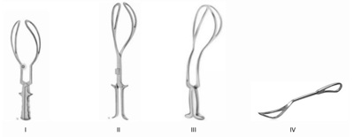
A I - fórcipe de Piper; II - fórcipe de Barton; III - fórcipe de Chamberlein; IV - fórcipe de DeLee
B I - fórcipe de Kielland; II - fórcipe de Simpson-Braun; III - fórcipe de Barton; IV - alavanca para cesárea
C I - fórcipe de Simpson-Braun; II - fórcipe de Kielland; III - fórcipe de Piper; IV - alavanca para cesárea
D I - fórcipe de Simpson-Braun; II-fórcipe de Piper; III - fórcipe de Kielland; IV - fórcipe de Simpson
E I - fórcipe de Piper; II - fórcipe de Barton; III - fórcipe de Kielland; IV - fórcipe de Chamberlein
Questão 354 · Ginecologia · 4000197733Assinale a alternativa que apresenta a conduta em gestantes com prolapso de válvula vital discreto, em pacientes assintomáticas.
A digitalizar e fazer cesárea com 39 semanas
B fazer cesárea eletiva com 40 semanas
C fazer cesárea imediata, se entrar em trabalho de parto
D induzir o parto vaginal no termo
E esperar o desencadear espontâneo do trabalho de parto
Questão 355 · Sangramento uterino anormal · 4000197732Paciente A.L.S, 14 anos, virgem, comparece à consulta ginecológica acompanhada da mãe, com queixa de sangramento genital há 14 dias e irregularidade menstrual desde a menarca ocorrida há 11 meses. Apresenta- se, ao exame físico: corada, com desenvolvimento pondero-estatural normal e caracteres sexuais secundários compatíveis com a idade. Qual a melhor conduta?
A Expectante.
B Videolaparoscopia.
C Ultra-sonografia pélvica.
D Anticoncepcional hormonal oral.
Questão 356 · Ginecologia · 4000197731Quanto à presença de acelerações transitórias durante a realização da cardiotocogra a basal, assinale a alternativa correta.
A O início da aceleração ao pico deve durar sempre mais de 30 segundos.
B A duração mínima de cada episódio deve ser de mais de 3 minutos.
C A presença de acelerações transitórias pode ser interpretada como sinal de bem-estar fetal, quando há pelo menos duas a cada 20 minutos.
D O início da aceleração ao pico deve durar sempre mais de 30 segundos.
E A presença de acelerações transitórias pode ser interpretada como sinal de bem-estar fetal somente em prematuros.
Questão 357 · Ginecologia · 4000197730Uma gestante de 38 anos de idade, primigesta, com 18 semanas, refere ao médico obstetra ter percebido nódulo na mama há 3 semanas. Ao exame, observa-se o seguinte: presença de nódulo endurecido, 3,0 cm, irregular, com linfonodo axilar suspeito. Solicitase ultrassonogra a das mamas como diagnóstico de nódulo espiculado, 3,5 cm, axila com linfonodo atípico (BIRADS 5). Assinale a alternativa que apresenta a conduta inicial nesse caso hipotético.
A PAAF do nódulo da mama e linfonodo axilar
B core biopsy de nódulo de mama e linfonodo axilar
C mamografia, para melhor avaliação do nódulo axilar
D ressonância magnética com gadolínio
E PAAF do nódulo da mama, sem necessidade de avaliar linfonodo
Questão 358 · Ginecologia · 4000197729Uma gestante de 38 anos de idade, primigesta, com 18 semanas, refere ao médico obstetra ter percebido nódulo na mama há 3 semanas. Ao exame, observa-se o seguinte: presença de nódulo endurecido, 3,0 cm, irregular, com linfonodo axilar suspeito. Solicitase ultrassonogra a das mamas como diagnóstico de nódulo espiculado, 3,5 cm, axila com linfonodo atípico (BIRADS 5). Considere que a paciente apresente diagnóstico de carcinoma mamário invasivo, sem outras especi cações, G3, triplo negativo. Avaliando a idade gestacional e o quadro clínico, assinale a alternativa que apresenta a melhor abordagem terapêutica nessa situação.
A interrupção da gestação, uma vez que isso melhoraria o prognóstico
B quimioterapia neoadjuvante
C mastectomia radical modificada, visto que está contraindicada quimioterapia na gestação
D cirurgia conservada com linfadenectomia
E imunoterapia com pembrolizumabe
Questão 359 · Ginecologia · 4000197728Uma adolescente de 14 anos de idade, de IMC igual a 27 kg/m², apresento menarca aos 13 anos de idade. Atualmente, apresenta ciclos a cada 45 dias. Considerando esse caso clínico, assinale a alternativa que apresenta a conduta adequada para essa paciente.
A contraceptivo oral combinado de baixa dose
B progestagênio após o 15.o dia ciclo
C contraceptivo oral combinado com antiandrogênio, devido à suspeita de síndrome dos ovários policísticos
D inusitol associado a progestagênio, após o 15.o dia do ciclo
E expectante
Questão 360 · Ginecologia · 4000197727Paciente infértil, obesa, hirsuta, com ciclos menstruais irregulares, será submetida a indução de ovulação para fertilização in vitro por fator ovulatório. Nesse caso, a paciente apresenta maior risco de
A luteinização precoce do folículo.
B cisto folicular.
C síndrome de hiperestimulação ovariana.
D corpo lúteo hemorrágico.
E falha de resposta ovariana.
Questão 361 · Ginecologia · 4000197726No estudo urodinâmico, a complacência vesical define-se como a variação do(a)
A pressão de perda dividida pelo volume da capacidade vesical.
B pressão vesical dividida pelo volume do primeiro desejo miccional.
C volume vesical dividido pelo volume do primeiro desejo miccional.
D pressão retal dividida pelo volume vesical.
E volume vesical dividido pela variação da pressão vesical.
Questão 362 · Ginecologia · 4000197725Uma paciente de 35 anos de idade, com prole constituída, apresenta queixa de aumento do volume de sangramento menstrual nos últimos três meses, associado a anemia. Realizou ultrassonogra a transvaginal, que revelou mioma FIGO 2 de 2,5 cm. Considerando esse caso clínico, assinale a alternativa que apresenta a conduta mais adequada.
A histerectomia videolaparoscópica
B miomectomia laparoscópica e histeroscópica
C miomectomia histeroscópica
D análogo do GnRH
E expectante
Questão 363 · Ginecologia · 4000197724Paciente de 55 anos de idade, assintomática, após ter recebido o laudo de exame citopatológico (Papanicolau) com resultado de células atípicas escamosas de significado indeterminado, mas não se podendo afastar lesão de alto grau (ASC-H), retorna ao ginecologista para avaliação da melhor conduta. Assinale a alternativa que apresenta a melhor conduta nesse caso.
A encaminhar a paciente para realização de cirurgia de alta frequência (CAF) para exérese da zona de transformação, devido ao alto risco de câncer de colo uterino
B orientar a paciente que, considerando-se sua idade, a realização de histerectomia é mais indicada, devido ao risco de câncer de colo uterino
C orientar sobre o risco de neoplasia intraepitelial cervical de alto grau e encaminhar para conização
D tranquilizar a paciente, orientar sobre o risco de infecção por HPV — pois essa infecção sexualmente transmissível é de alta prevalência em mulheres atualmente— e repetir o exame em 6 meses
E orientar sobre o risco de neoplasia intraepitelial cervical e encaminhar para colposcopia com biópsia, se necessário para programação terapêutica
Questão 364 · Ginecologia · 4000197723Paciente de 75 anos de idade apresenta quadro de sangramento vaginal, com um único episódio, e procura o ginecologista. Assinale a alternativa que apresenta a conduta inicial adequada nesse caso hipotético.
A ultrassonografia transvaginal
B histeroscopia diagnóstica
C exame físico e citologia cérvico-vaginal
D colposcopia e citologia cérvico-vaginal
E expectante
Questão 365 · Ginecologia · 4000197722O câncer de mama é a neoplasia que mais acomete as mulheres no Brasil e no mundo. Quanto à prevenção de câncer de mama, assinale a alternativa correta.
A A mamografia digital apresenta melhor acurácia que a mamografia convencional na prevenção primária do câncer de mama.
B Estudos mostram que as mastectomias profiláticas reduzem o risco de câncer em 97%.
C A atividade física não tem influência sobre a produção de hormônios sexuais; dessa forma, seu papel na redução do câncer de mama é incerto.
D A periodicidade e a intensidade do exercício físico têm relação com a redução do risco.
E O tamoxifeno na dose de 20 mg é o único medicamento que pode ser utilizado na prevenção primária do câncer de mama.
Questão 366 · Ginecologia · 4000197721Paciente de 36 anos, casada, procura emergência da ginecologia relatando ter sofrido abuso sexual. De acordo com o Ministério da Saúde, são cuidados preventivos de DST em pacientes vítimas de abuso sexual, exceto:
A Medicações anti-retrovirais.
B Anticoncepção de emergência.
C Gamaglobulina hiperimune para hepatite B.
D Administração de Ofloxacina, Azitromicina, Penicilina Benzatina e Metronidazol.
Questão 367 · Ginecologia · Farmacológicos · Tratamento · 4000197720Paciente de 60 anos, casada, G=4 P=4, partos normais, vem ao ambulatório de uroginecologia com queixa de perda de urina ao espirrar. Em uso de terapia de reposição hormonal há 5 anos, IMC de 27, com vida sexual ativa. Submetida a exames e na avaliação urodinâmica detectou-se hiperatividade detrusora. As drogas de escolha utilizadas para o tratamento com melhor eficácia e efeitos colaterais são:
A Anti-colinérgicos
B Beta-bloqueadores
C Antidepressivos tricíclicos
D Agonistas beta miméticos
Questão 368 · Ginecologia · 4000197719A respeito da vaginite inflamatória descamativa, assinale a alternativa correta.
A Caracteriza-se por corrimento vaginal, dispaurenia e presença de bactérias, fungos ou protozoários comuns aos corrimentos vaginais.
B O penfigoide de membranas mucosas faz parte do diagnóstico diferencial.
C O diagnóstico é realizado por meio do teste das aminas.
D O líquen plano erosivo não faz parte do diagnóstico diferencial.
E Não existem estudos relacionando a vaginite inflamatória descamativa à presença do Streptococcus do grupo B.
Questão 369 · Ginecologia · 4000197718Paciente de 13 anos é atendida na Atenção Básica. Refere atraso menstrual e que teve relação sexual desprotegida com o namorado de 14 anos. Encontra-se sem a companhia de responsável. Após a anaminese e exame físico, é esclarecida da necessidade do exame para gravidez. Com resultado positivo, o ginecologista volta às orientações devido à situação a ita e desejo de aborto da adolescente. Qual a conduta correta de acordo com as recomendações da: OMS (organização mundial de saúde), Legislação Nacional e Entidades Medicas Brasileiras?
A Indicar o aborto Legal pela opção da adolescente após o consentimento do parceiro.
B O encaminhamento ao Aborto Legal é considerado devido à relação com estupro de vulnerável menor que 14 anos. Deve ser feita a notificação. Necessário a presença do responsável maior de idade. Sem a necessidade de denúncia policial.
C Aborto deve ser desencorajado com orientações à adolescente.
D Aborto Legal só será indicado após período de espera de 3 meses para conscientização do procedimento pela adolescente.
Questão 370 · Ginecologia · 4000197717Paciente de 32 anos, G=1 P=1 (C), IMC 23,5. Faz seguimento de LES (Lúpus Eritematoso sistêmico) há 1 ano, com alterações de poliartrite simétrica, alopécia, anemia e hipertriglicidemia. Faz uso de: ciclosporina, hidroxicloroquina, predinisona, sinvastatina e pantoprazol. Esta em uso de preservativo masculino e deseja método mais seguro. Na avaliação ginecologia: ciclos menstruais regulares, com uxo volumoso, sinais vitais normais. Ultrassonogra a pélvica transvaginal e citologia oncótica do colo uterino sem alterações. Qual o melhor método contraceptivo para esta paciente?
A Contraceptivo oral combinado.
B Dispositivo intrauterino de cobre.
C Dispositivo intrauterino com levonorgestrel.
D Anticoncepcional de progestogênio isolado.
Questão 371 · Ginecologia · 4000197716Paciente de 28 anos, sexo feminino, natural de São José do Rio Preto, atendida em UBS. Queixa de febre intermitente e perda de peso nos últimos 4 meses. Refere múltiplos parceiros nos 2 últimos anos e nega uso de proteção adequada. Nega contato atual com os mesmos, mas refere falecimento de um deles e desconhece a causa. Há 6 meses fez uso de penicilina G benzatina para tratar ferida na genitália, com cura. Ao exame físico geral e ginecológico não apresenta alterações. Em exames já realizados na unidade básica apresentou teste rápido para HIV positivo e teste não treponêmico com titulação de 1:4. Paciente foi encaminhada para internação e investigação clínica. Mas em relação a si lis dessa paciente podemos a rmar:
A O diagnóstico foi definido pelo VDRL recente.
B Somente com o resultado do teste treponêmico da época da doença faremos o diagnóstico.
C Não é necessário nenhum dado a mais para a definição diagnóstica.
D Só vamos definir como doença Ativa ou Cicatricial tendo em mãos o resultado não treponêmico anterior (da época do tratamento) e o atual.
Questão 372 · Ginecologia · 4000197715Mulher 27 anos de idade, G=0, colhe sua Colpocitologia Oncótica de rotina, cujo resultado veio ASC-US (Atipia de Células Escamosas de Significado Indeterminado). Diante deste resultado, qual a sua conduta?
A Repetir a Colpocitologia oncótica em 6 meses
B Repetir a Colpocitologia Oncótica em 1 ano
C Repetir a Colpocitologia Oncótica em 3 anos
D Fazer Colposcopia
Questão 373 · Ginecologia · 4000197714Mulher de 28 anos de idade, casada, procura a UBS com queixa de corrimento branco, com odor forte, que piora após o coito, há 2 meses. Faz uso de contraceptivo hormonal oral combinado. Qual tratamento abaixo é recomendado?
A Metronidazol 250 mg de 12/12 hs VO por 7 dias
B Nistatina 100.000 UI creme vaginal por 14 noites
C Fluconazol 150 mg VO em dose única
D Amoxacilina 500 mg de 8/8 hs por 7 dias
Questão 374 · Ginecologia · 4000197713Mulher, 32 anos, G=3; P=1; A=0, deu entrada na emergência do hospital com gestação de 37 semanas, com dor de forte intensidade e sangramento moderado há 1 hora. Ao exame: BCF = 172 bpm e hipertonia uterina importante. É indicada cesariana de urgência, com hipótese diagnóstica de descolamento prematuro de placenta e sofrimento fetal agudo. Na cesariana, após saída do concepto e placenta, esta mostrou um grande hematoma retroplacentário. O útero depois apresentou atonia, que reverteu com massagem e ocitocina, e a paciente recebeu transfusão de sangue. No puerpério não conseguiu amamentar e depois disso encontra-se em amenorreia há 8 meses. Qual a hipótese para esta amenorreia?
A Síndrome de Sheehan.
B Síndrome de Asherman.
C Síndrome de Roktanski.
D Síndrome de Simmonds.
Questão 375 · Coagulopatias · 4000197712Menina, 12 anos de idade, teve a menarca com Sangramento Menstrual Excessivo (SME). Nas outras duas menstruações seguintes, teve que ser internada devido ao uxo abundante. Qual das abaixo é uma hipótese diagnóstica provável para ela?
A Disfunção ovulatória
B Doença de Von Willebrand
C Disfunção endometrial
D Imaturidade do eixo Hipotálamo-hipófise-ovários
Questão 376 · Ginecologia · 4000197710Mulher, 32 anos de idade, G=3 P=3 (N), em uso de contraceptivo hormonal oral, apresentou resultado de sua Colpocitologia Oncótica de Lesão intraepitelial de alto grau (NIC-II / III). Sua colposcopia mostrou uma zona de transformação tipo 2, na qual há um achado de pontilhado grosseiro no quadrante II, entre 4 e 6 hs. Foi submetida à biopsia, cujo anátomopatológico revelou NIC-II. Qual sua conduta neste caso?
A Traquelectomia
B Excisão tipo 2 pela CAF
C Histerectomia total
D Excisão tipo 3 pela CAF (cirurgia de alta frequência)
Questão 377 · Ginecologia · 4000197708Mulher, 27 anos de idade, procura UBS para uma consulta, pois está com atraso menstrual (Última menstruação há 2 meses). Você colhe colpocitologia oncótica (CO) e pede da CO sugere uma Lesão Intra-epitelial de alto grau (NIC-II) e o teste de gravidez dá positivo (encontra-se na 8ª semana de gestação). Você faz Colposcopia, onde visualiza uma Zona de transformação tipo 1, com um epitélio aceto branco opaco, Iodo negativo, Schiller positivo, no quadrante 4, entre 11 e 12 hs. Qual sua conduta?
A Aguardar o nascimento e biopsiar 90 dias após o parto.
B Interromper a gestação para prosseguir investigação e tratamento.
C Fazer conização do colo uterino por CAF (cirurgia de alta frequência).
D Fazer biopsia para tomar a conduta de acordo com o resultado anatomopatológico.
Questão 378 · Ginecologia · 4000197706Mulher de 23 anos de idade, grávida de 20 semanas, apresenta lesões verrucosas na vulva e vagina. Seu parceiro também apresenta tais lesões, já foi ao urologista e está em tratamento das mesmas. Para o tratamento destas verrugas genitais, provocadas por HPV de baixo risco, esta paciente pode ser tratada com qual das opções abaixo?
A Imiquimode.
B 5-fluorouracil.
C Podofilina a 25%.
D Ácido tricloroacético à 50%.
Questão 379 · Ginecologia · Regimes terapêuticos · 4000197705Mulher de 52 anos de idade, encontra-se menopausada há 1 ano, com sintomas climatéricos importantes (fogachos, insônia, fadiga, sem energias para atividades físicas que costumava praticar, irritabilidade, diminuição importante da libido). Não tem contra-indicações para a Terapia Hormonal (TH), não tem antecedentes familiares de câncer de mama e seus exames estão todos normais. Após as devidas orientações, paciente opta pela reposição hormonal (TH). Qual das abaixo seria uma boa opção para esta paciente?
A Tibolona
B Tamoxifeno
C Estrogênio isolado
D Progestogênio isolado
Questão 380 · Vaginismo · Ginecologia · 4000197704Paciente, 22 anos de idade, vem em atendimento ambulatorial referindo que está namorando há dois anos e, desde o início do namoro, não consegue ter relação sexual por penetração. Refere que desde o seu primeiro relacionamento percebia que, antes mesmo de tentar iniciar a penetração, já sentia dor no local. Relata que toda vez que seu parceiro tocava nos grandes lábios ela pedia para parar pois o desconforto já iniciava. Ao ser questionada sobre sua infância, relata que, infelizmente, havia sido violentada sexualmente por um conhecido da família. O vaginismo dessa paciente é caracterizado por
A Dor na penetração vaginal, por contração voluntária dos músculos do assoalho pélvico ao tentar a penetração do pênis.
B Dor na penetração vaginal, com contração involuntária dos músculos do assoalho pélvico ao tentar a penetração do pênis.
C Disfunção psicológica, sem distúrbio orgânico e sem contrações, mas cujo medo de ter o coito penetrativo leva à dor intensa, impedindo a continuação da relação sexual.
D Disfunção psicológica, sem distúrbio orgânico, na qual a mulher não consegue, em nenhum grau, que ocorra penetração do pênis, dedo, tampão ou espéculo.
Questão 381 · Ginecologia · 4000197703Gestante na 10ª semana apresentou glicemia de jejum de 90 mg/dl. Posteriormente, foi realizado Teste Oral de Tolerância à Glicose (TOTG) com 75 g de glicose, quando se encontrava na 24ª semana. De acordo com a Federação Brasileira de Ginecologia e Obstetrícia (FEBRASGO) e o estudo HYPERGLYCEMIA ADVERSE PREGNANCY OUTCOME (HAPO-2008), os pontos de corte para o diagnóstico de diabetes mellitus gestacional são:
A Ao menos um valor de Glicemia de jejum: ≥ 126 mg/dl; 1ª hora ≥ 180 mg/dl; 2ª hora ≥ 240 mg/dl.
B Ao menos um valor de Glicemia de jejum ≥ 126 mg/dl; pós-prandial > 140 mg/dl e hemoglobina glicada superior à 6,5%.
C Ao menos um valor de Glicemia de jejum: 92 a 125 mg/dl; 1ª hora ≥ 180 mg/dl; 2ª hora: 153–199 mg/dl.
D Ao menos um valor de dosagem aleatória de glicemia > 200 mg/dl; glicemia de jejum em 8 horas ≥ 126 mg/dl.
Questão 382 · Vaginismo · Ginecologia · 4000197702Paciente, 22 anos de idade, vem em atendimento ambulatorial referindo que está namorando há dois anos e, desde o início do namoro, não consegue ter relação sexual por penetração. Refere que desde o seu primeiro relacionamento percebia que, antes mesmo de tentar iniciar a penetração, já sentia dor no local. Relata que toda vez que seu parceiro tocava nos grandes lábios ela pedia para parar pois o desconforto já iniciava. Ao ser questionada sobre sua infância, relata que, infelizmente, havia sido violentada sexualmente por um conhecido da família. Para o tratamento do vaginismo, pode-se afirmar:
A O tratamento é baseado na técnica de hipersensibilização sistemática através da fisioterapia pélvica.
B A fisioterapia para tratamento do vaginismo usa técnicas de dessensibilização com uso de dilatadores, respiração diafragmática e estimulação elétrica.
C A atividade sexual deve ser estimulada, durante o tratamento, para inibição da contratura involuntária da musculatura.
D A Lidocaína tópica não deve ser utilizada nesses casos, pois retira muito a sensibilidade da mulher.
Questão 383 · Vaginismo · Ginecologia · 4000197701Paciente, 22 anos de idade, vem em atendimento ambulatorial referindo que está namorando há dois anos e, desde o início do namoro, não consegue ter relação sexual por penetração. Refere que desde o seu primeiro relacionamento percebia que, antes mesmo de tentar iniciar a penetração, já sentia dor no local. Relata que toda vez que seu parceiro tocava nos grandes lábios ela pedia para parar pois o desconforto já iniciava. Ao ser questionada sobre sua infância, relata que, infelizmente, havia sido violentada sexualmente por um conhecido da família. Quanto à etiologia do vaginismo, pode se dizer que
A a ansiedade fóbica não seria uma das causas do vaginismo, pois a dor só acontece na tentativa de penetração e não antes.
B o vaginismo secundário diferencia-se do vaginismo primário por ser ocasionado por anormalidades congênitas do hímen, enquanto o primário decorre de fatores psíquicos.
C a fisioterapia do assoalho pélvico visa atuar nos fatores causais, com redução do espasmo da musculatura pélvica através de técnicas como os exercícios de Kegel.
D a violência sexual e o estresse pós-traumático não se enquadram como causas, pois na definição de vaginismo é necessária uma causa orgânica vaginal ou vulvar.
Questão 384 · Ginecologia · 4000197700Paciente comparece em consulta ginecológica referindo dois partos cesáreos anteriores, sendo o último há dois anos. Desde então, o método contraceptivo que faz uso é o Dispositivo Intrauterino (DIU) de Cobre. Porém, relata atraso menstrual de 6 semanas, e hoje fez teste de gravidez com resultado positivo. Ao exame ginecológico, o fio do dispositivo está visível no colo uterino. A conduta mais adequada, nesses casos, é:
A Retirar o DIU durante o exame.
B Aguardar até a 16ª semana para a remoção.
C Agendar consultas no pré-natal de alto risco.
D Retirar o dispositivo somente se houver sangramento.
Questão 385 · Ginecologia · 4000197698Gestante tercigesta na 10ª semana, com data do último parto há 8 anos, refere que recebeu 3 doses de vacina antitetânica durante o pré-natal do segundo lho. Para a pro laxia do tétano neonatal nesta gestação, a conduta é:
A Repetir as 3 doses.
B Repetir as 3 doses após o parto.
C Realizar uma dose de reforço.
D Não há necessidade de novas doses.
Questão 386 · Ginecologia · 4000197697Durante uma discussão de caso clínico sobre infecção do trato urinário na gestação, foram analisados os principais mecanismos facilitadores dessa ocorrência. Eles estão descritos na alternativa:
A Diminuição do pH urinário, aumento da taxa de filtração glomerular, aminoacidúria e glicosúria.
B Relaxamento da musculatura lisa da via urinária, aumento da concentração de glicose na urina e aumento do pH urinário.
C Compressão mecânica nas vias urinárias (útero e feto), diminuição da resistência vascular periférica e aumento da concentração de glicose na urina.
D Diminuição da taxa de filtração glomerular, diminuição da complacência vesical e refluxo uretrovesical.
Questão 387 · Ginecologia · 4000197696Gestante na 32ª semana, portadora de diabetes mellitus insulinodependente, de difícil controle glicêmico, é alertada sobre as possíveis alterações esperadas no feto e recém-nascido, que são: macrossomia, morte intraútero e hipoglicemia neonatal. Essas alterações são decorrentes de:
A Hiperglicemia fetal
B Hiperinsulinismo fetal
C Hipoglicemia materna
D Acidose metabólica fetal
Questão 388 · Ginecologia · 4000197695Gestante na 25ª semana realiza Teste Oral de Tolerância à glicose (TOTG) com 75 g de glicose com resultado: glicemia de jejum= 90 mg/l; 1ª hora pós-sobrecarga=140 mg/dl; 2ª hora pós-sobrecarga=139 mg/dl. A orientação e conduta mais adequadas para esta paciente são:
A Explicar que os resultados estão normais e manter manter a paciente no pré-natal de risco habitual.
B Explicar que os resultados indicam diabetes mellitus gestacional e iniciar o tratamento com exercícios e dieta específica.
C Considerar e explicar que a paciente é portadora de diabetes mellitus pré-gestacional e iniciar o tratamento com hipoglicemiante via oral.
D Explicar que no momento os resultados são normais, porém os exames deverão ser repetidos na 28ª, 32ª e 36ª semana.
Questão 389 · Ginecologia · 4000197694Durante a gestação, até aproximadamente 24 semanas, ocorrem níveis glicêmicos inferiores aos observados em mulheres não grávidas. Esta alteração fisiológica é decorrente de:
A Aumento de estrógeno e progesterona que ocasionam hipertrofia das células alfa-pancreáticas, com consequente resistência periférica à insulina.
B Aumento do Hormonio Lactogênio Placentário Humano e glicogenólise, ocasionando diminuição da resistência periférica à insulina.
C Aumento da gonadotrofina coriônica humana e do cortisol fetal, ocasionando maior glicogenólise.
D Aumento de estrógeno e progesterona que ocasionam hipertrofia das células beta-pancreáticas, com consequente aumento da insulina.
Questão 390 · Ginecologia · 4000197693De acordo com os protocolos utilizados na Assistência Pré-Natal (Ministério da Saúde do Brasil), qual é a idade gestacional adequada para realizar o rastreamento para diabetes gestacional:
A 12ª e 16ª semana de gestação.
B 16ª e 18ª semana de gestação.
C 20ª e 24ª semana de gestação.
D 24ª e 28ª semana de gestação.
Questão 391 · Ginecologia · 4000197691Gestante de 32 anos, multípara, sem comorbidades, é internada na 39ª semana em trabalho de parto. Realizado amniotomia com dilatação cervical de 8 centímetros. Em seguida, a paciente evolui, subitamente, com hipotensão arterial grave, cianose, dispnéia e parada cardiorrespiratória irreversível. O diagnóstico mais provável para esse caso é:
A Eclâmpsia.
B Embolia amniótica.
C Descolamento de placenta.
D Choque hemorrágico.
Questão 392 · Ginecologia · 4000197689Durante a admissão de uma parturiente, é observado no exame obstétrico: colo uterino dilatado em 8 cm, bolsa rota, apresentação cefálica, localizada no estreito superior da bacia, sutura sagital próxima da pube. De acordo com esses dados, trata-se da seguinte ocorrência:
A Assinclitismo posterior.
B Deflexão de 1º grau.
C Acavalgamento dos ossos parietais.
D Rotação interna do polo cefálico.
Questão 393 · Ginecologia · 4000197688Na consulta de pré-natal de uma gestante na 28ª semana, observou-se episódios de recorrência de infecção urinária. A conduta nesses casos é:
A Profilaxia com nitrofurantoína, 100 mg, 1 comprimido, via oral por dia até a 36ª semana.
B Clindamicina, creme vaginal, uma aplicação semanal, até o parto.
C Metronidazol, óvulos vaginais uma aplicação semanal, até o parto e após coito.
D Cranberry, 500 mg, duas cápsulas via oral ao dia e clindamicina (creme vaginal), uma aplicação semanal.
Questão 394 · Ginecologia · 4000197687Jovem, de 30 anos de idade, esteve em viagem na Índia há 2 meses. Refere aparecimento de 2 úlceras na região inguinal direita há 4 semanas. Tais úlceras não são acompanhadas de dor local. Relata que, antes das úlceras, apresentou no mesmo local nodulações. Não apresenta comorbidades nem possui outras queixas. Ao exame físico, visualizada a presença de 2 ulcerações em espelho, de borda plana, bem delimitadas e com fundo granuloso vermelho vivo e sangramento fácil. Diante do quadro, indique a principal hipótese diagnóstica:
A Cancro mole.
B Sífilis.
C Lesão herpética.
D Donovanose.
Questão 395 · Ginecologia · 4000197686A Organização das Nações Unidas (ONU), em 2015, estabeleceu Novos Objetivos para o Desenvolvimento Sustentável (ODS). Um deles é a redução da razão de mortalidade materna (RMM) global. Qual é a definição de morte materna:
A Óbito de uma mulher durante a gestação ou até 42 dias após o término da gestação, independente da duração da gravidez, devido a qualquer causa relacionada ou agravada pela gravidez ou por medidas em relação a ela.
B Óbito de uma mulher durante a gestação ou até 42 dias após o término da gestação, independente da localização da gravidez, devido a qualquer causa relacionada ou agravada pela gravidez ou por medidas em relação a ela, porém não devido a causas acidentais ou incidentais.
C Óbito de uma mulher durante a gestação ou até 42 dias após o término da gestação, independente da duração da gravidez, devido a qualquer causa relacionada ou agravada pela gravidez ou por medidas em relação a ela, incluindo as causas acidentais ou incidentais.
D Óbito de uma mulher durante a gestação ou até 42 dias após o término da gestação, independente da duração ou da localização da gravidez, devido a qualquer causa relacionada ou agravada pela gravidez ou por medidas em relação à ela, porém, não devido a causas acidentais ou incidentais.
Questão 396 · Ginecologia · 4000197685Jovem, de 30 anos de idade, esteve em viagem na Índia há 2 meses. Refere aparecimento de 2 úlceras na região inguinal direita há 4 semanas. Tais úlceras não são acompanhadas de dor local. Relata que, antes das úlceras, apresentou no mesmo local nodulações. Não apresenta comorbidades nem possui outras queixas. Ao exame físico, visualizada a presença de 2 ulcerações em espelho, de borda plana, bem delimitadas e com fundo granuloso vermelho vivo e sangramento fácil. Indique o tratamento inicial preconizado para o caso:
A Doxiciclina 100mg, a cada 12 horas por pelo menos 21 dias ou até o desaparecimento das lesões.
B Azitromicina 2g, via oral, dose única.
C Penicilina Benzatina, 2,4 milhoes de unidades, intramuscular, dose única.
D Aciclovir, 200mg, via oral, a cada 4 horas por 5 dias.
Questão 397 · Ginecologia · 4000197684Durante exame obstétrico, ao realizar as manobras de Leopold-Zweifel, é observado que o dorso fetal está à direita do abdome materno. Diante desse exame, a posição fetal é:
A Direita.
B Cefálica.
C Oblíqua.
D Longitudinal.
Questão 398 · Ginecologia · 4000197683Gestante de 39 semanas em trabalho de parto apresenta, ao toque vaginal, colo uterino com dilatação total, variedade de apresentação cefálica de etida de 1º grau. De acordo com esses dados, o ponto de referência fetal é:
A Fontanela lambdóide.
B Fontanela bregmática.
C Sutura sagital.
D Sutura lambdóide.
Questão 399 · Ginecologia · 4000197682Ao examinar uma parturiente, após realizar o toque vaginal, observa-se que a apresentação fetal é cefálica e está insinuada (encaixada). De acordo com esses dados, assinale a alternativa correta:
A O diâmetro biparietal transpôs a área do estreito superior da bacia.
B O ponto de referência é a sutura sagital.
C A atitude fetal é de hiperextensão.
D A posição fetal é esquerda.
Questão 400 · Ginecologia · 4000197681Uma paciente tercigesta, em trabalho de parto, apresenta feto em Occipitoesquerda anterior (OEA). Nesse caso, podemos afirmar que o feto se encontra em:
A Situação oblíqua, apresentação cefálica fletida, dorso à esquerda, ponto de referência sutura metópica.
B Situação longitudinal, apresentação cefálica fletida, dorso à esquerda, ponto de referência é a fontanela lambdóide.
C Situação longitudinal, apresentação cefálica fletida, dorso anterior, linha de orientação fontanela lambdóide.
D Situação oblíqua, apresentação cefálica fletida, dorso à esquerda, linha de orientação sutura sagital.
Questão 401 · Ginecologia · 4000197680Primigesta de 39 semanas, em trabalho de parto, apresenta evolução representada pelo partograma abaixo. A variedade de posição fetal na primeira hora de registro (indicada pela seta) é:
A Occipitoesquerda posterior.
B Occipitoesquerda anterior.
C Occipitodireita posterior.
D Occipitodireita anterior.
Questão 402 · Ginecologia · 4000197679Jovem, de 30 anos de idade, esteve em viagem na Índia há 2 meses. Refere aparecimento de 2 úlceras na região inguinal direita há 4 semanas. Tais úlceras não são acompanhadas de dor local. Relata que, antes das úlceras, apresentou no mesmo local nodulações. Não apresenta comorbidades nem possui outras queixas. Ao exame físico, visualizada a presença de 2 ulcerações em espelho, de borda plana, bem delimitadas e com fundo granuloso vermelho vivo e sangramento fácil. Indique os agentes causadores de úlceras indolores, como as do caso:
A Treponema pallidum, Klebsiella granulomatis, Clamydia trachomatis.
B Herpes simplex vírus, Haemophilus ducreyi, Clamydia trachomatis.
C Klebsiella granulomatis, Clamydia trachomatis, Herpes simplex vírus.
D Treponema pallidum, Klebsiella granulomatis, Haemophilus ducreyi.
Questão 403 · Ginecologia · 4000197678Ao realizar o toque vaginal em uma parturiente de 38 semanas, é diagnosticado apresentação de face, defletida de 3° grau. O ponto de referência fetal, nesses casos, é:
A Mento.
B Linha facial.
C Bregma.
D Glabela.
Questão 404 · Ginecologia · 4000197677Primigesta, com gestação de risco usual, no termo, é internada com 8 centímetros de dilatação, contrações rítmicas e dolorosas, apresentação cefálica, plano - 2 de De Lee. com bolsa rota. Após 3 horas de evolução, permanece com o mesmo quadro. De acordo com estes dados, a principal hipótese diagnóstica é:
A Período expulsivo prolongado.
B Incoordenação do triplo gradiente.
C Fase ativa prolongada da dilatação.
D Desproporção cefalopélvica relativa.
Questão 405 · Ginecologia · 4000197676Durante a condução de um parto por via vaginal, você realiza a manobra de Ritgen. Responda, respectivamente: qual período clínico do parto é utilizada essa manobra e qual o objetivo:
A Período expulsivo e proteção perineal.
B Fase ativa da dilatação e correção de assinclitismo anterior.
C Secundamento e correção de inversão uterina.
D Pós-parto imediato e correção de atonia uterina.
Questão 406 · Ginecologia · 4000197675Durante a condução de um parto por via vaginal, houve necessidade de realizar episiotomia. Para fazer o bloqueio do nervo pudendo interno, o ponto de referência na bacia materna para localizar este nervo é:
A Espinha ciática.
B Chanfradura ciática.
C Ponta do cóccige.
D Ângulo subpúbico.
Questão 407 · Ginecologia · 4000197674Gestante de 28 anos de idade, portadora de hipertensão arterial crônica, encontra-se na 32ª semana de gestação e evolui com restrição do crescimento fetal. Realizou avaliação dopplervelocimétrica, cujo diagnóstico foi de insu ciência placentária. De acordo com estes dados, o território vascular avaliado foi a (o);
A Artéria umbilical.
B Ducto venoso.
C Artéria uterina.
D Artéria cerebral média.
Questão 408 · Quadro clínico · Exames complementares · 4000197673Mulher, 33 anos de idade, casada e nuligesta, vem para consulta ginecológica de rotina. Refere que há um ano, após parada do uso de contraceptivo hormonal combinado para tentar engravidar, vem apresentando piora da dismenorreia e que, atualmente, não tem melhora do sintoma após uso de anti-inflamatório. Vem, também, notando disquezia, principalmente durante o período menstrual. Não conseguiu ainda gestar. Ao exame ginecológico não foram evidenciadas alterações, exceto desconforto ao toque de fundo vaginal posterior. Uma histerossalpingografia revela prova de Cotté negativa bilateralmente. Indique o exame complementar para melhor esclarecimento do caso
A Tomografia Computadorizada da Pelve.
B CA-125.
C Videolaparoscopia com Biópsia.
D Ressonância Nuclear Magnética Pélvica.
Questão 409 · Ginecologia · 4000197672Durante o acompanhamento de uma gestação de 32 semanas, foi observado feto pequeno para a idade gestacional (peso fetal estimado - PFE - entre o percentil 3 e 10), mas sem alteração do doppler maternofetal. A conduta mais adequada a ser adotada é:
A Realizar avaliação da vitalidade e do crescimento fetal semanalmente e o parto poderá ser induzido com 37 semanas de gestação.
B Realizar avaliação da vitalidade e do crescimento fetal duas vezes por semana e resolução da gestação com 38 semanas.
C Realizar avaliação da vitalidade e do crescimento fetal quinzenalmente e o parto poderá ser induzido com 40 semanas de gestação.
D Realizar avaliação da vitalidade e do crescimento fetal quinzenalmente e resolução da gestação por cesariana com 34 semanas.
Questão 410 · Ginecologia · 4000197671Mulher, 33 anos de idade, casada e nuligesta, vem para consulta ginecológica de rotina. Refere que há um ano, após parada do uso de contraceptivo hormonal combinado para tentar engravidar, vem apresentando piora da dismenorreia e que, atualmente, não tem melhora do sintoma após uso de anti-inflamatório. Vem, também, notando disquezia, principalmente durante o período menstrual. Não conseguiu ainda gestar. Ao exame ginecológico não foram evidenciadas alterações, exceto desconforto ao toque de fundo vaginal posterior. Uma histerossalpingografia revela prova de Cotté negativa bilateralmente. Sobre a interpretação da histerossalpingografia, o resultado indica que
A a paciente possui obstrução tubária bilateral.
B a paciente possui tubas pérvias bilateralmente.
C o exame não detectou aderências pélvicas peritubárias.
D na mobilização da paciente, as duas tubas estavam fixas e imóveis.
Questão 411 · Ginecologia · 4000197670Paciente com 14 semanas de gestação, ao fazer exame ultrassonográ co de rotina, é informada que não foram detectados os batimentos cardiofetais. A conduta a ser adotada é, nesse caso:
A Microcesárea.
B Curetagem uterina.
C Aspiração manual intrauterina.
D Misoprostol e, após expulsão fetal, curetagem uterina.
Revisar: possível letra faltando em enunciado
Questão 412 · Ginecologia · 4000197669Paciente de 26 anos, primigesta com gestação de 39 semanas refere dor discreta em baixo ventre. Ao exame obstétrico, apresenta dilatação cervical de 4 centímetros e cardiotocogra a representada no gráfico abaixo. De acordo com o exame, a conduta imediata é:
A Cesariana.
B Misoprostol.
C Ocitocina intravenosa.
D Repetir o exame em duas horas.
Questão 413 · Tratamento · 4000197668Mulher, 33 anos de idade, casada e nuligesta, vem para consulta ginecológica de rotina. Refere que há um ano, após parada do uso de contraceptivo hormonal combinado para tentar engravidar, vem apresentando piora da dismenorreia e que, atualmente, não tem melhora do sintoma após uso de anti-inflamatório. Vem, também, notando disquezia, principalmente durante o período menstrual. Não conseguiu ainda gestar. Ao exame ginecológico não foram evidenciadas alterações, exceto desconforto ao toque de fundo vaginal posterior. Uma histerossalpingografia revela prova de Cotté negativa bilateralmente. Quanto ao tratamento para essa paciente, considerando o diagnóstico mais provável, pode-se se a rmar que:
A O uso de anticoncepcional combinado oral por 2 meses é a terapia de primeira linha.
B Os análogos de GnRH devem ser usados por 6 meses e depois tentar medidas naturais.
C O tratamento cirúrgico pode ser uma opção visando a melhora da dor.
D Os analgésicos e anti-inflamatórios devem ser a escolha, pois a paciente quer engravidar.
Questão 414 · Ginecologia · 4000197667Parturiente com gestação de 38 semanas, tabagista crônica, está em uso de ocitocina para indução do parto. Ao exame obstétrico, apresenta dilatação cervical de 6 centímetros, apresentação cefálica e bolsa rota. De acordo com a cardiotocografia demonstrada abaixo, a conduta é:
A Hidratação materna.
B Resolução da gestação.
C Repetir o exame em duas horas.
D Realizar perfil biofísico fetal.
Questão 415 · Ginecologia · 4000197666Gestante de 32 semanas é admitida com quadro de pré-eclâmpsia grave e restrição do crescimento fetal. Apresenta, durante avaliação dopplervelocimétrica, centralização fetal (redistribuição sanguínea). Este fato é caracterizado por:
A Diástole zero na artéria umbilical.
B Diástole reversa na artéria uterina.
C Onda A reversa no doppler do ducto venoso.
D Índice de resistência baixo da artéria cerebral média.
Questão 416 · Ginecologia · 4000197665Um obstetra, ao realizar o toque vaginal para avaliar a evolução do trabalho de parto, percebe uma estrutura semelhante a uma corda fazendo relevo na superfície das membranas, com pulsações síncronas com a frequência cardíaca fetal. De acordo com esses dados, o diagnóstico é:
A Vasa previa.
B Placenta prévia.
C Protrusão placentária.
D Placenta bilobada.
Questão 417 · Ginecologia · 4000197664Paciente na 32ª semana de gestação é internada em uma Unidade de Pronto Atendimento (UPA), em trabalho de parto prematuro. Enquanto aguarda vaga para transferência, foi iniciada a inibição do trabalho de parto e a aceleração da maturação pulmonar fetal. Assinale a alternativa que contém medicações especí ca para a inibição do trabalho de parto prematuro:
A Atosiban e ritodrina.
B Atosiban e terbutalina.
C Terbutalina e ritodrina.
D Salbutamol e Terbutalina.
Revisar: possível letra faltando em enunciado
Questão 418 · Ginecologia · 4000197663Paciente, no último trimestre da gravidez, durante uma consulta de pré-natal, refere muitas cãibras na panturrilha quando está dormindo. Sabe-se que a etiologia dessa alteração é desconhecida. Assinale a alternativa que contém uma substância que pode ser utilizada durante a gravidez e se mostrou relevante nesses casos:
A Ferro.
B Cobre.
C Selênio.
D Magnésio.
Questão 419 · Ginecologia · 4000197662Durante uma consulta de pré-natal, a paciente, na sua 4ª gestação, relata que em todas as suas gestações ocorre constipação intestinal. Este distúrbio é devido a um relaxamento da musculatura lisa ocasionado por:
A Teores crescentes de estrona.
B Teores crescentes de estriol.
C Teores crescentes de progesterona.
D Teores crescentes de gonadotrofina coriônica humana.
Questão 420 · Ginecologia · Estudo urodinâmico · 4000197661Mulher, 65 anos de idade, obesidade grau II, primípara, queixa-se de perda urinária quando espirra ou dar risada. Ao exame físico apresenta hipotro a genital e em estudo urodinâmico foi detectada uma perda de urina à manobra de Valsalva, com pressão vesical de 105cm H2O. Ausência de contrações involuntárias na cistometria. Selecione a sequência de etapas que fazem parte do estudo urodinâmico na mulher:
A 1
B 1
C 1
D 1
Questão 421 · Ginecologia · 4000197660Paciente de 34 anos, hipertensa crônica, encontra-se na 26ª semana de gestação e está evoluindo com piora dos níveis pressóricos, antes controlados, e proteinúria. De acordo com esses dados, assinale a alternativa correta:
A O diagnóstico, de acordo com os dados citados, é de pré-eclâmpsia sobreposta à hipertensão arterial crônica.
B Gestantes portadoras de hipertensão crônica isolada apresentam incisura bilateral no doppler da artéria uterina.
C A hipertensão arterial crônica isolada cursa com proteinúria maior que 500 mg/24 h durante a gestação.
D A menor taxa de filtração glomerular durante a gestação ocasiona proteinúria a partir de 20ª semana.
Questão 422 · Ginecologia · 4000197659Puérpera no 4° dia pós-parto cesáreo devido a pré-eclâmpsia evolui com piora dos níveis pressóricos. Está em uso de metildopa, nifedípino e hidralazina. Assinale a alternativa correta:
A Nesses casos é recomendado associar diurético de alça, restrição hídrica e dieta hipossódica.
B Pode ocorrer piora dos níveis pressóricos neste período secundária à redistribuição fisiológica de líquidos e aumento da resistência vascular periférica.
C A ocorrência acima descrita é fator preditivo para a ocorrência de eclâmpsia pós-parto, é recomendado nesses casos aumentar a dose do vasodilatador periférico.
D O caso descrito é consequente a lesão renal decorrente da toxemia gravídica e preditor de desenvolvimento posterior de hipertensão arterial.
Questão 423 · Ginecologia · 4000197658Primigesta com 28 semanas de gestação, tabagista e hipertensa crônica, é trazida à emergência obstétrica com quadro clínico sugestivo de deslocamento prematuro de placenta. Apresenta sangramento intenso por via vaginal, hipotensão arterial, taquicardia e sudorese. Exame obstétrico: hipertonia uterina, dilatação cervical de 4 centímetros e ausência de batimento cardíaco fetal. A conduta imediata e adequada para esse caso é:
A Ultrassom para confirmar o diagnóstico.
B Reposição volêmica e ocitocina.
C Reposição volêmica e operação cesariana.
D Amniotomia e aguardar evolução para parto via vaginal.
Questão 424 · Ginecologia · 4000197657Em uma discussão de caso clínico sobre isoimunização Rh, um dos alunos pergunta como verificar se foi e caz o uso de imunoglobulina humana anti-RhD durante o pré-natal, para a prevenção da isoimunização em gestantes Rh negativas. A resposta é teste de Coombs Indireto e Kleihauer-Betke, cujos resultados deverão ser, respectivamente:
A Positivo e negativo.
B Positivo e positivo.
C Negativo e positivo.
D Negativo e negativo.
Questão 425 · Ginecologia · 4000197656Primigesta de 20 anos de idade, encontra-se na 10ª semana de gestação, e procura atendimento na Unidade Básica de Saúde (UBS) com queixa de lesões ulceradas e dolorosas na região vulvar há 1 dia. Concomitantemente, refere febre e mal-estar geral. Relata também que há 4 dias teve sensação de queimação no local que surgiram as úlceras. A hipótese diagnóstica e a conduta para esta paciente são:
A Cancro mole e doxiciclina.
B Linfogranuloma e azitromicina.
C Cancro duro e penicilina benzatina.
D Herpes genital e iniciar aciclovir por via oral.
Questão 426 · Diagnóstico · Ginecologia · 4000197655Mulher, 65 anos de idade, obesidade grau II, primípara, queixa-se de perda urinária quando espirra ou dar risada. Ao exame físico apresenta hipotro a genital e em estudo urodinâmico foi detectada uma perda de urina à manobra de Valsalva, com pressão vesical de 105cm H2O. Ausência de contrações involuntárias na cistometria. Indique o diagnóstico do caso:
A Incontinência urinária mista.
B Incontinência urinária de Esforço por deficiência esfincteriana intrínseca.
C Incontinência urinária de Esforço por hipermobilidade uretral.
D Urge-incontinência.
Questão 427 · Ginecologia · 4000197654Primigesta com 20 anos de idade, com 8 semanas de gestação, assintomática, vem na consulta de pré-natal na Unidade Básica de Saúde, trazendo resultado de sorologia para toxoplasmose: IgG reagente e IgM reagente. Desconhece história prévia de toxoplasmose. A conduta imediata indicada, nesta situação, é:
A Solicitar teste de avidez da IgG.
B Repetir os exames em 15 dias.
C Iniciar tratamento com espiramicina.
D Solicitar exame de PCR no líquido amniótico.
Questão 428 · Ginecologia · Tratamento · 4000197653Mulher, 65 anos de idade, obesidade grau II, primípara, queixa-se de perda urinária quando espirra ou dar risada. Ao exame físico apresenta hipotro a genital e em estudo urodinâmico foi detectada uma perda de urina à manobra de Valsalva, com pressão vesical de 105cm H2O. Ausência de contrações involuntárias na cistometria. Sobre o tratamento da perda urinária nesse caso, pode-se dizer que
A o “Sling ” por via transobturatória tem um risco maior de lesão vesical que o “sling ” TVT (“tension free vaginal tape”).
B o “Sling ” de uretra média não está indicado nesse caso, pois a paciente é obesa.
C a colpofixação retropúbica ou Técnica de Burch está bem indicada nesse caso.
D o tratamento inicial deve ser conservador com terapia comportamental e fisioterapia.
Questão 429 · Ginecologia · 4000197652Paciente de 22 anos de idade teve a gestação atual complicada com doença trofoblástica. Foi submetida a esvaziamento uterino por vácuo-aspiração e iniciou o seguimento pós-molar. Após quatro semanas de acompanhamento, apresentou vários episódios de sangramento vaginal moderado, com três níveis ascendentes das dosagens de gonadotro na coriônica humana. Procurou a Emergência Obstétrica após episódio de sangramento vaginal intenso. Realizado exame ultrassonográ co transvaginal, que mostrou cavidade endometrial distendida por material amorfo sugestivo de coágulos sanguíneos e miométrio heterogêneo, com vascularização exuberante à doppler uxometria. Assinale a alternativa que contém diagnóstico e conduta indicados para este caso.
A Mola invasora, iniciar quimioterapia.
B Mola hidatiforme completa, realizar novo esvaziamento uterino.
C Tumor trofoblástico do sítio placentário, indicar histerectomia.
D Coriocarcinoma, encaminhar para serviço de radioterapia.
Revisar: possível letra faltando em enunciado
Questão 430 · Ginecologia · 4000197651Paciente de 42 anos de idade, quartigesta na 14ª semana, refere história de 3 abortos anteriores, todos ocorridos no 1º trimestre da gestação. Foi proposto para esta paciente um procedimento cirúrgico denominado técnica de McDonald. Esta técnica é utilizada nos casos de:
A Abortamento pós conização.
B Abortamento por deficiência de colágeno.
C Abortamento habitual por malformação Mulleriana.
D Abortamento habitual por incompetência cervical.
Questão 431 · Ginecologia · 4000197650Gestante refere perda de líquido via vaginal em grande quantidade há 4 horas. Após realizar exame obstétrico, foi feito diagnóstico de rotura prematura tempestiva e oportuna de membranas ovulares. Isto significa:
A Ocorreu depois de iniciado o trabalho de parto e no final do período de dilatação.
B Ocorreu entre 34ª e a 37ª semana de gestação.
C Ocorreu após 37ª semana de gestação e trabalho de parto desencadeado.
D Ocorreu entre a 32ª e a 34ª semana de gestação, antes do início do trabalho de parto.
Questão 432 · Ginecologia · 4000197649Gestante de 16 semanas comparece em consulta de pré-natal de rotina e teve diagnóstico de sí lis, forma primária. Foi realizado tratamento com penicilina benzatina. Nesse caso, o seguimento até o parto deverá ser:
A Teste treponêmico trimestral.
B Teste não treponêmico e mensal.
C Teste não treponêmico e trimestral.
D Teste treponêmico e não treponêmico trimestrais.
Questão 433 · Ginecologia · 4000197648Com a posição ereta do ser humano, desenvolveu-se o assoalho pélvico como estrutura de sustentação para evitar o prolapso dos órgão pélvicos. O equilíbrio entre arcabouço ósseo e tecido bromuscular permite a manutenção das funções orgânicas. Em relação à anatomia e siologia pélvicas na mulher, assinale a alternativa ERRADA:
A A função de suspensão do complexo uterovaginal, bexiga e reto é formada pelo tecido endopélvico e pela fáscia endopélvica
B As espinhas isquiáticas são estruturas exclusivas do ser humano
C O hiato urogenital é uma abertura central do assoalho pélvico que permite ocorrer funções fisiológicas como, coito, esvaziamento vesical e o parto
D O ligamento uterossacral é responsável pela suspensão lateral do colo uterino, surgindo na parede lateral pélvica e se inserindo lateralmente ao colo do útero
Questão 434 · Ginecologia · 4000197647O conhecimento da anatomia pélvica é fundamental na compreensão da siologia obstétrica e nas abordagens ginecológicas, diminuindo o risco de danos a vísceras e a estruturas nervosas e vasculares. Sobre a anatomia pélvica feminina, assinale a alternativa CORRETA:
A A artéria ovariana origina-se da artéria ilíaca externa e penetra na pelve através do ligamento suspensor do ovário
B A espinha isquiática é ponto de referência importante para o bloqueio anestésico do nervo pudendo quando a solução anestésica é injetada medial e posteriormente a ela
C O formato ginecoide da pelve corresponde a cerca de 40% das pelves femininas e caracteriza-se pelo diâmetro anteroposterior maior em relação ao diâmetro transverso
D O plexo nervoso hipogástrico é importante estrutura do forame obturatório e pode ser lesado durante procedimentos para tratamento da incontinência urinaria, resultando em perda de adução da coxa e déficit sensitivo na face interna da coxa
Questão 435 · Ginecologia · 4000197646Você foi solicitado a comparecer ao alojamento conjunto para avaliar um sangramento em puérpera 6 horas após o parto normal induzido. É o primeiro parto da mulher de 20 anos, sem comorbidades, que foi induzido porque a gestação alcançou as 41 semanas de gravidez e não havia sinais de parto. A puérpera estava orientada no tempo e espaço, pálida e sudorética, pulso no, com frequência cardíaca de 125bpm, pressão arterial de 100x60mmHg, útero hipotônico e com sangramento vermelho vivo vazando o absorvente e molhando o lençol. Considerando os dados obtidos, a tabela de grau de choque fornecida abaixo e o cálculo de índice de choque, assinale a alternativa CORRETA:

A Trata-se de choque grave, considerando a frequência cardíaca e índice de choque maior que 1
B Trata-se de choque moderado, considerando o volume do sangramento e índice de choque igual a 1,25
C Trata-se de um choque compensado, considerando a pressão arterial sistólica e índice do choque igual a 0,8
D Trata-se de choque moderado, considerando o nível de consistência e índice do choque igual a 0,8
Questão 436 · Ginecologia · 4000197645Mulher de 45 anos é submetida a histerectomia abdominal total com salpingectomia pro lática, para tratamento de grande mioma transmural na parede lateral esquerda do útero. No pós-operatório foi identi cado que houve lesão ureteral durante a cirurgia.Assinale o tempo cirúrgico que MAIS PROVAVELMENTE está associado a esta lesão.
A Ligadura e secção dos ligamentos uterossacros
B Ligadura e secção dos vasos ovarianos
C Ligadura e secção dos vasos tubários
D Ligadura e secção dos vasos uterinos
Revisar: possível letra faltando em enunciado
Questão 437 · Ginecologia · 4000197644Mulher de 23 anos, primípara, no 2º dia após o parto relata preocupação quanto ao volume e composição do leite materno. Apresenta as mamas ácidas e está amamentando em livre demanda. Com relação à amamentação, assinale a opção CORRETA quanto ás orientações a serem dadas a esta paciente.
A A apojadura ocorre nas primeiras 24 horas após o nascimento, devendo ser investigadas alterações do sistema nervoso central materno buscando entender a causa da baixa produção láctea
B No pós-parto imediato observa-se a liberação do leite de transição, rico em carboidratos. A ordenha deve ser estimulada e a complementação com fórmula láctea ao recém-nascido é recomendada
C Nos primeiros dias pós-parto observa-se a saída de colostro, rico em proteína e anticorpos; a apojadura é comum acontecer no terceiro dia, sendo estimulada pela sucção do recém-nascido
D O leite materno é altamente nutritivo após a apojadura: previamente a este momento deve ser avaliada a composição e volume de liberação láctea para recomendar a complementação na amamentação
Questão 438 · Ginecologia · 4000197643Sobre as modificações adaptativas do organismo materno durante a gravidez, assinale a opção ERRADA:
A Ocorre aumento dos níveis séricos de colesterol LDL para esteroidogênese placentária
B Ocorre efeito hipoglicemiante materno pelo aumento sérico do hormônio lactogênio placentário
C Pode ocorrer glicosúria e proteinúria pelo aumento do ritmo de filtração glomerular
D Pode ocorrer redução do peristaltismo intestinal pela ação miorrelaxante da progesterona
Questão 439 · Ginecologia · 4000197642Paciente de 26 anos, primigesta, previamente hígida, acompanhada em Centro de Saúde, com 32 semanas de gestação evolui com aumento pressórico. Refere que nas últimas semanas compareceu à unidade de saúde onde foram aferidas várias medidas pressóricas, acima de 140x90mmHg. Foi solicitada Proteinúria de 24 horas com resultado de 395mg/24 h. A Relação proteinúria/creatininúria (mg/dL) da última semana resultou em 0,25 Acerca da CONDUÇÃO ADEQUADA para essa paciente, assinale a alternativa CORRETA:
A A restrição de sal deve ser indicada imediatamente, não só para controle pressórico, mas para a redução do volume intravascular. Repouso também é indicado pelo mesmo motivo
B Devido a ser um quadro de pré-eclâmpsia com sinais de gravidade devido aos valores pressóricos, a gestante deve ser internada para se aprofundar a avaliação e ter certeza de que não existem sinais/sintomas que indiquem interrupção da gestação
C Pode ser acompanhada no Centro de saúde, desde que não evolua com alterações laboratoriais
D Se a gestante mantiver a pressão arterial controlada, a resolução da gestação deve ocorrer com 37 semanas. A indução do parto pode ser proposta
Questão 440 · Ginecologia · 4000197641RDF, 51 anos se apresenta no ambulatório de climatério relatando última menstruação há dois anos e com queixas de ondas de calor intensas, insônia, irritabilidade e diminuição de desejo sexual. Diz que sua qualidade de vida está muito prejudicada. É sedentária, tem IMC=26Kg/m², exame clínico, mamário e ginecológico sem alterações. Citologia do colo negativa. A paciente se mostra desejosa de fazer uso de terapia hormonal da menopausa (THM). Qual a PROPEDÊUTICA BÁSICA antes de iniciar a THM?
A Mamografia realizada, no máximo, há dois anos. Pedir dosagem de colesterol total, HDL-colesterol, triglicérides e glicemia de jejum
B Mamografia realizada, no máximo, há um ano e ultrassonografia mamária. Colesterol total, HDL- colesterol, triglicérides e glicemia de jejum
C Mamografia realizada, no máximo, há um ano. Colesterol total, HDL-colesterol, triglicérides e glicemia de jejum, Ultrassonografia endovaginal
D Mamografia realizada, no máximo, há um ano. Colesterol total, HDL-colesterol, triglicérides e glicemia de jejum
Questão 441 · Ginecologia · 4000197640O ciclo menstrual é um conjunto de eventos endócrinos interdependentes do sistema hipotálamo-hipó se- ovariano que levam a modi cações siológicas no organismo da mulher visando à ovulação. Ao nal da fase folicular, as células da granulosa passam a expressar também receptores para o hormônio luteinizante (LH). O aumento desses receptores na superfície das células da granulosa, associado à redução dos receptores de hormônio folículo estimulante (FSH) pelo mecanismo de autorregulação, leva à mudança no padrão de dependência do folículo do FSH para uma fase LH-dependente. Esta modi cação do padrão de resposta do folículo ao LH é responsável:
A pela produção de prostaglandinas que aumentam a contração das células da musculatura lisa que envolvem o folículo, ajudando na extrusão do óvulo
B pela produção de substâncias proteolíticas que promovem a digestão da parede celular folicular, facilitando a extrusão do oócito secundário
C pela reativação da meiose do óvulo que havia sido interrompida no período diplóteno da primeira meiose na vida intrauterina
D pelo estímulo à neovascularização local, reduzindo a produção folicular de estradiol pelas células da teca luteinizadas
Questão 442 · Ginecologia · 4000197639Paciente procura a Maternidade, insegura com a orientação recebida na Unidade Básica de Saúde (UBS) onde realiza o pré-natal de risco habitual. Apresentou VDRL reativo até 1/16 e teste rápido para treponema positivo, sem histórico de tratamento prévio; foi solicitado o VDRL para o parceiro que veio negativo e a recomendação foi de que só ela deveria tratar já que o parceiro não apresentava sí lis. Considerando o diagnóstico de sí lis para a paciente e iniciando logo seu tratamento, assinale a conduta CORRETA em relação a seu parceiro sexual.
A Realizar um teste treponêmico e só tratar se o teste for positivo
B Repetir o teste não-treponêmico e só tratar se o novo teste for positivo
C Realizar um teste treponêmico e tratar como sífilis, independentemente do resultado do teste. A dose preconizada vai diferir se o teste for positivo ou negativo
D Considerar que a sífilis foi excluída e que não precisa tratar
Questão 443 · Ginecologia · 4000197638Paciente de 28 anos, G2PC1A0, IG 31 semanas, encaminhada ao Pré-Natal de Alto Risco (PNAR) devido a quadro de crescimento intrauterino restrito (CIUR). Na história clínica: tabagismo 10 cigarros/dia desde a adolescência e lho anterior nasceu com 34 semanas devido a quadro de CIUR. Não apresentava doenças sistêmicas. Ao exame clínico apresentava UF de 28cm e BCF de 132bpm. O último US era de 27 semanas com peso fetal estimado entre os percentis 3 e 10, sem Doppler. Solicitado ultrassonogra a com Doppler na urgência que confirmou o CIUR. Assinale a opção com a avaliação pela Dopplervelocimetria que, se estiver alterada, define a necessidade da interromper a gestação:
A Estudo da artéria cerebral média (ACM) que é marcador do mecanismo de compensação fetal
B Estudo das artérias umbilicais, um marcador da reserva funcional placentária
C Estudo das artérias uterinas que avalia o fluxo uteroplacentário
D Estudo do ducto venoso que é marcador da descompensação e da exaustão do mecanismo de compensação
Questão 444 · Ginecologia · 4000197637Sobre o controle do sangramento uterino anormal agudo (SUA-a), assinale a alternativa CORRETA:
A Diante de falha do tratamento clínico, a embolização da artéria uterina está contraindicada no SUA- a quando há desejo de preservação da fertilidade
B Os balões intrauterinos podem ser uma opção em adolescentes com coagulopatias e devem permanecer na cavidade uterina por tempo mínimo de 48 horas
C Os procedimentos cirúrgicos são considerados tratamentos de segunda linha no SUAa, reservados para casos refratários ao tratamento clínico ou secundários a causas estruturais
D Podem ser realizadas a curetagem ou a histeroscopia na abordagem do SUA-a, sem comprovada superioridade de uma opção sobre a outra no tratamento de lesões focais
Questão 445 · Ginecologia · 4000197636Paciente de 18 anos, nuligesta, deseja iniciar atividade sexual e vem a consulta médica para orientações sobre contracepção hormonal e métodos de barreira. Assinale a orientação CORRETA sobre os métodos contraceptivos:
A As taxas de falha no primeiro ano de uso para pílulas anticoncepcionais, adesivos hormonais e anéis de barreira são semelhantes às taxas de falha de DIU ou implante hormonal
B Lubrificantes oleosos não devem ser utilizados juntamente com os preservativos, pois podem causar grande redução em sua resistência
C O etinilestradiol é responsável pela diminuição das proteínas hepáticas, como a albumina e a proteína carreadora dos hormônios sexuais
D Pacientes portadoras de epilepsia em tratamento com ácido valpróico possuem contraindicação para o uso de contraceptivos orais
Questão 446 · Ginecologia · 4000197635Paciente de 35 anos, vai à consulta ginecológica queixando-se de lesões elevadas, pruriginosas em região vulvar. Reclama ainda de constrangimento na relação sexual devido a essas lesões. Última citologia oncótica há três anos: Negativa para displasias. Ao exame: Apresenta quatro lesões, elevadas, serrilhadas, discretamente endurecidas, medindo cerca de 0,5cm cada, em introito vaginal, períneo, próximo ao clitóris e vulva. No exame especular apresenta duas dessas lesões, com 0,6cm cada, na parede vaginal lateral. Colo normal, sem áreas acetobrancas e teste de Schiller negativo. Assinale a alternativa que possui a MELHOR CONDUTA sobre o caso:
A Colher citologia oncótica do colo e pedir teste molecular para detecção do HPV no colo e nas lesões descritas
B Colher citologia oncótica do colo e realizar cauterização química das lesões internas e externas com ácido tricloroacético
C Colher citologia oncótica e prescrever imunomodulador para a própria paciente aplicar nas lesões
D Pedir teste molecular para detecção do HPV no colo e nas lesões descritas e aguardar o resultado para decidir o tratamento
Questão 447 · Ginecologia · 4000197634Paciente homem transgênero, 27 anos, nome não reti cado, procura o ginecologista pela primeira vez. Há seis anos faz uso de testosterona, com ciclos atuais de 21 dias. Está em amenorreia desde o início da hormonização e refere cólicas abdominais leves de acometimento coincidentes ao final de cada ciclo. Afirma possuir corrimentos siológicos e nega outras queixas. Nega morbidades e uso de outros medicamentos. Nega cirurgias prévias, mas está se preparando para realização de mastectomia masculinizadora. Trouxe exames laboratoriais solicitados por outro pro ssional: Hb 15,5g/dL; Ht 43%; Hm 5,2 milhões/mm³; Plaquetas 250.000/mm³; TGO24 U/L; TGP 17U/L; testosterona total: 653ng/dL (V.R.: 165 - 753ng/dL). Ao exame físico: PA 125x85mmHg, FC 72bpm, abdome livre, indolor à palpação, sem visceromegalias palpáveis. Sobre a assistência integral ao paciente, é CORRETO afirmar que:
A A manutenção da testosterona dentro dos valores de referência indicados evita surgimento de clitoromegalia e risco de policitemia
B A realização da mastectomia masculinizadora só pode ser realizada após três anos de acompanhamento por equipe de saúde multidisciplinar
C A realização de exame citopatológico em homens transgêneros segue as mesmas recomendações aplicadas às mulheres cisgênero
D O nome civil do paciente não deverá ser registrado no prontuário médico a partir da indicação de um nome social
Revisar: possível letra faltando em enunciado
Questão 448 · Ginecologia · 4000197633Sobre a vascularização da pelve feminina, assinale a alternativa CORRETA
A A maioria do plexo venoso da pelve drena o sangue para a veia femoral
B As artérias ovarianas que irrigam o ovário esquerdo se originam da artéria ilíaca interna
C As artérias uterinas e seus ramos ascendentes e descendentes se originam da artéria aorta
D Os ramos anteriores da artéria ilíaca interna irrigam as vísceras da pelve verdadeira
Questão 449 · Ginecologia · 4000197632Sobre a inervação da pelve feminina, assinale a alternativa CORRETA:
A A pelve é inervada principalmente pelos nervos espinais sacrais e coccígeos, enquanto a região perineal pelo nervo pudendo
B O plexo hipogástrico inferior e nervos esplâncnicos conduzem de forma predominante, estímulos autonômicos parassimpáticos e simpáticos, respectivamente
C O tronco lombossacral e os ramos anteriores de S1-S4 se interligam para formar o plexo toraco- lombar
D Os nervos somáticos da pelve se originam de ramos da extensão medular de T4 a L1
Questão 450 · Ginecologia · 4000197631Paciente submetida a histerectomia vaginal há cinco dias, procurou atendimento com queixa de dormência na parte anterior da coxa e face medial da perna, além de di culdade de estender a perna. Este tipo de alteração está ASSOCIADA À LESÃO DO:
A Nervo femoral
B Nervo fibular
C Nervo obturador
D Nervo pudendo
Questão 451 · Ginecologia · 4000197630A bacia óssea materna é dividida em grande e pequena bacia, sendo esta última a mais importante do ponto de vista obstétrico. Os diâmetros da pequena bacia devem ser compatíveis com a biometria fetal para que o parto vaginal ocorra. Em relação à bacia óssea materna e à estática fetal, é CORRETO afirmar que:
A Na aplicação de fórceps para rotação interna de um feto em variedade de apresentação occipito esquerda posterior, será realizada rotação de 90 graus, seguida de tração
B No assinclitismo anterior, a sutura sagital está próxima do púbis materno
C O diâmetro occipitobregmático é o maior diâmetro do polo cefálico fetal e mede cerca de 13,5cm
D O estreito superior da bacia possui diâmetros importantes, sendo o diâmetro transverso o maior deles
Questão 452 · Ginecologia · 4000197629Paciente de 36 anos, primípara, comparece ao plantão no 5º dia pós-parto relatando febre de 38,5ºC e dor pélvica difusa. Ao exame: Bom estado geral, PA:120x70 mmHg, frequência cardíaca 80bpm, mamas ácidas, lactantes, útero a 3cm abaixo da cicatriz umbilical, resíduo vaginal de odor fétido, sero-sanguinolento, colo uterino amolecido com 2cm de dilatação. Assinale a opção que apresenta a hipótese diagnóstica MAIS PROVÁVEL, o tratamento e a conduta mais adequados:
A Endometrite: Clindamicina associada a Gentamicina por via endovenosa - internação hospitalar
B Vaginose bacteriana: metronidazol via oral - seguimento ambulatorial após sete dias de tratamento
C Pielonefrite: Clindamicina associada a metronidazol por via endovenosa - internação hospitalar
D Sepse puerperal: Gentamicina associada a metronidazol por via endovenosa - internação em unidade de tratamento intensivo
Questão 453 · Ginecologia · 4000197628Puérpera, terceiro dia pós-parto, com aumento de temperatura axilar esporádica, mamas doloridas e apresentando ingurgitamento mamário. Nesse contexto, assinale a orientação CORRETA:
A Analgésico e calor local entre as mamadas
B Elevação das mamas com sutiã e iniciar antibioticoterapia
C Manter o aleitamento materno exclusivo sob livre demanda e ordenha manual
D Suspender a amamentação
Questão 454 · Ginecologia · 4000197627Paciente de 39 anos, primigesta, após a realização de Fertilização in vitro (FIV) por fator masculino, encontra- se gestante com 14 semanas de uma gestação gemelar Monocoriônica e Diamniótica diagnosticada em ultrassonogra a de primeiro trimestre. Apresenta diversas dúvidas e questionamentos advindos desse diagnóstico. Dentre as opções abaixo, qual é a afirmativa CORRETA em relação a esse caso?
A Fazer pré natal de risco habitual, com acompanhamento ultrassonográfico mensal
B Gestação monocoriônica raramente apresenta algum grau de anastomose entre as circulações dos fetos
C O preparo do colo uterino e a indução do parto podem ser realizados com as mesmas medicações e utilizando as mesmas posologias que nas gestações únicas
D Parto normal pode ser tentado de maneira segura nas gestações dicoriônicas e nas monocoriônicas diamnióticas, com pré-condições idênticas às das gestações únicas
Questão 455 · Ginecologia · 4000197626Mulher de 52 anos, menopausa aos 48 anos, procura o ginecologista queixando-se de sintomas vasomotores intensos, seguidos de calafrios, que atrapalham muito o sono. Relata oscilação de humor frequente. A rma que a vida sexual está muito ruim; tem evitado manter relações sexuais com o marido, pois após a cessação dos uxos menstruais, passou a perceber a vagina extremamente seca. Nega morbidades e cirurgias prévias. Exames realizados este ano: mamogra a categoria 2 BI-RADS; citopatológico do colo uterino negativo para neoplasias; Hb 12,3g/dL, Htc 34,9%; TSH 1,1371mcUI/ml; glicose em jejum 114mg/dL; triglicerídeos 57mg/dL. Ao exame físico: PA 128x75mmHg, FC 88bpm, abdome indolor a palpação, sem massas palpáveis. Sobre o momento de vida dessa paciente, é CORRETO afirmar que:
A A terapia estrogênica via transdérmica eleva menos o risco de eventos tromboembólicos quando comparada ao estrogênio via oral.
B A testosterona transdérmica deve ser indicada para melhorar o desejo, e assim, elevar a frequência sexual do casal
C ISRS, como paroxetina, é medicamento de primeira linha para tratamento dos fogachos e da oscilação do humor relatados
D O risco de desenvolvimento de diabetes mellitus contraindica terapia estroprogestagênica para alívio dos sintomas vasomotores
Questão 456 · Ginecologia · 4000197625Paciente de 34 anos, G5P3A1, hipertensa crônica, gestação de 32 semanas, em uso de metildopa 2mg por dia, pré-natal irregular, foi trazida pelo SAMU com dor abdominal intensa e sangramento vaginal discreto. Ao exame: Hidratada, hipocorada, afebril. FC = 123bpm, PA 140x90mmHg. Abdome gravídico, doloroso e com tônus muito aumentado BCF=90bpm. Colo uterino 3cm, 50% apagado e posterior. Além de instituir dois acessos venosos, solicitar hemograma e reservar sangue, assinale as condutas obstétricas MAIS ADEQUADAS nesse momento:
A Realizar amniotomia e infundir ocitocina para a indução do parto, diminuindo o risco de hemorragia
B Realizar amniotomia e cesariana de urgência diante do sofrimento fetal
C Ultrassonografia e realizar parto por via baixa diante do sofrimento fetal
D Ultrassonografia e infundir ocitocina para indução do parto, diminuindo o risco de hemorragia
Questão 457 · Ginecologia · 4000197624O controle neuroendócrino da ovulação atua sobre o folículo desencadeando seu desenvolvimento e ovulação. Quanto ao processo de produção hormonal pelo folículo, assinale a alternativa CORRETA:
A A produção de Testosterona pelas células da granulosa é estimulada pelo LH
B A Prolactina exerce um papel importante no desencadeamento da ovulação
C O Estradiol é produzido pelas células da Teca por estímulo conjunto do LH e do FSH
D O mecanismo das duas células para produção do estradiol envolve as células da Teca e da Granulosa
Questão 458 · Ginecologia · 4000197623A figura a seguir representa o ciclo menstrual, e, as numerações assinaladas estão relacionadas às modi cações que ocorrem no sistema reprodutivo feminino neste processo. Com base nos eventos do ciclo menstrual assinalados na imagem acima, assinale a alternativa CORRETA.
A O número 1 representa o folículo antral e sua secreção faz com que o endométrio seja proliferativo, representado pelo número 6
B O número 1 representa o folículo primordial e é responsável pela produção de estradiol, representado pelo número 3
C O número 2 representa o corpo lúteo que é responsável pela manutenção do endométrio na fase secretora, representada pelo número 5
D O número 2 representa o folículo antral que é responsável pela produção de progesterona, representada pelo número 4
Questão 459 · Ginecologia · 4000197622As alterações siológicas dos hormônios produzidos pelo eixo Hipotálamo, Hipó se e ovário são responsáveis pelo desencadeamento da ovulação e, por consequência, da gestação. Com relação a este controle endócrino é CORRETO afirmar:
A O FSH e o LH produzidos pela hipófise são controlados por um sistema de retrocontrole (feed- back) negativo exercido pela Progesterona produzida pelo folículo em crescimento
B O Hipotálamo controla a produção o FSH através de um sistema neuroendócrino exercido pela Dopamina
C O LH tem como função estimular a produção de estradiol pelo folículo pré ovulatório
D Ocorrendo uma fecundação, a produção da progesterona pelo corpo lúteo é mantida não mais pelo LH hipofisario mas pelo HCG produzido pelo embrião
Questão 460 · Ginecologia · 4000197621Paciente de 34 anos, G4PV3A0, IG = 9 semanas e 4 dias (DUM), comparece ao Centro de saúde para iniciar acompanhamento pré-natal, sem queixas. É portadora de hipertensão arterial sistêmica há quatro anos. Fazia uso de Captopril 50 mg de 12/12 horas, que foi suspenso há cinco dias, desde que o resultado de Beta-hCG deu positivo. Ao exame: PA = 140 x 100 mmHg (duas medidas); FC = 88 bpm. Útero pouco aumentado de volume (compatível com IG). Colo uterino longo, posterior e fechado. A conduta CORRETA, nesse caso, é:
A Encaminhar paciente para um pronto atendimento de obstetrícia para realizar propedêutica para Síndrome HELLP.
B Prescrever Hidralazina endovenosa para tratamento da crise hipertensiva e reavaliar PA em seis horas.
C Prescrever Metildopa ou Nifedipino, orientar a paciente a medir PA no domicílio e retornar em uma semana para reavaliar níveis pressóricos.
D Reiniciar Captopril na dose que já se utilizava e encaminhar para o pré-natal de alto risco
Questão 461 · Ginecologia · 4000197620Paciente de 19 anos, nuligesta, usuária de contraceptivo injetável mensal, sexualmente ativa, comparece à urgência com relato de múltiplas úlceras vulvares dolorosas, que se iniciaram há cerca de seis dias, associadas a febre e mialgia. Refere ardor inicial e surgimento de lesões vesiculares, com evolução para úlceras. Nega lesões semelhantes previamente. Sobre o provável diagnóstico, assinale a alternativa CORRETA:
A A linfadenomegalia inguinal dolorosa bilateral está presente na quase totalidade dos casos
B A primo-infecção possui um período de incubação médio de 15 dias
C Após primo-infecção, a recorrência do quadro por reativação viral em 12 meses é superior à metade dos casos
D Os episódios de recorrência são mais frequentes na primo-infecção associados ao HSV-1
Questão 462 · Ginecologia · 4000197619Paciente primigesta comparece ao centro de diagnóstico fetal para a realização da ultrassonogra a morfológica de segundo trimestre, com idade gestacional de 20 semanas. Foi evidenciado ausência de líquido amniótico (anihidrâmnio). Qual a PRINCIPAL PREOCUPAÇÃO DIRETAMENTE relacionada ao anihidrâmnio nessa idade gestacional?
A Falência cardíaca fetal
B Hipoplasia pulmonar
C Insuficiência renal fetal
D Síndrome da aspiração meconia
Questão 463 · Ginecologia · 4000197618Adolescente de 17 anos provoca um aborto e chega à urgência com restos ovulares infectados. Mesmo com os procedimentos corretos, ela vai a óbito por septicemia, 35 dias depois. A morte, nesse caso, é considerada
A não materna.
B não obstétrica.
C obstétrica direta.
D obstétrica indireta.
Questão 464 · Ginecologia · 4000197617O near miss materno (NMM) é um indicador de
A mortalidade.
B morbidade.
C letalidade.
D contaminação.
Questão 465 · Ginecologia · 4000197616Foi feita a opção de conduta expectante em um quadro de aborto espontâneo, com 6 semanas, retido e sem sinais de infecção. Após quatro semanas, não havendo resolução espontânea do quadro, a conduta indicada para esse caso será
A a indução do aborto com misoprostol.
B a realização da curetagem uterina.
C a realização da AMIU (Aspiração Manual Intrauterina).
D a manutenção da conduta expectante.
Questão 466 · Ginecologia · 4000197615O metotrexato é um medicamento utilizado para tratar gestação ectópica. Constitui contraindicação para esse tratamento:
A massa anexial <= 3,5 cm.
B estabilidade hemodinâmica.
C embrião morto.
D trombocitopenia.
Questão 467 · Ginecologia · 4000197614Gestante de 36 semanas dá entrada em pronto-atendimento obstétrico, com PA: 160/110 mmHG, crises convulsivas e feto vivo. Nessa situação, o controle das crises convulsivas deverá ser realizado, inicialmente, com
A a hidralazina.
B o midazolan.
C o sulfato de magnésio.
D a interrupção imediata da gestação.
Questão 468 · Ginecologia · 4000197613A principal causa de oligoâmnio em nosso meio é
A a rotura prematura das membranas.
B a insuficiência placentária da pré-eclâmpsia.
C as malformações fetais do sistema neurológico.
D as malformações fetais do sistema urinário.
Questão 469 · Ginecologia · 4000197612Gestante com 34 semanas e 4 dias, isoimunizada, apresenta doppler uxometria com PVS-ACM (Velocidade do Pico Sistólico da Artéria Cerebral Média) > que 1,5 múltiplo de mediana. Nessa situação, a conduta indicada é a realização de
A cordocentese e transfusão sanguínea fetal.
B corticoterapia e interrupção da gestação.
C interrupção imediata da gestação.
D realização de cardiotocografia fetal.
Questão 470 · Ginecologia · 4000197611Primigesta inicia o pré-natal tardiamente, quando, com 28 semanas de gestação, apresenta PA=>140/90 mmHG, sem referências a respeito da PA pré-gestacional. No rastreio laboratorial, encontram - se plaquetas=95.000/mm3, TGO=80 U/L e TGP=90 UL, sem proteinúria. Nesse caso, o diagnóstico correto da Síndrome Hipertensiva é o de hipertensão
A pré-gestacional.
B gestacional transitória.
C pré-eclâmpsia.
D síndrome HELLP.
Questão 471 · Ginecologia · 4000197610Gestante de 32 semanas, antecedentes de hipertensão pré- gestacional e insu ciência pulmonar, chega ao pronto atendimento com PA=180/120 mmHG e edema agudo de pulmão. Nessa situação, a droga de eleição deve ser
A a hidralazina.
B a nifedipina.
C o sulfato de magnésio.
D o nitroprussiato de sódio
Questão 472 · Ginecologia · 4000197609A esteatose hepática aguda da gravidez (EHAG), caracterizada por insu ciência hepática aguda associada à falência de múltiplos órgãos, é uma emergência obstétrica potencialmente fatal para a mãe e para o bebê. O principal diagnóstico diferencial com a EHAG é
A a Síndrome hepatorrenal.
B a Síndrome HELLP.
C as Hepatites virais.
D a Eclampsia.
Questão 473 · Ginecologia · 4000197608O acompanhamento e a conduta nas gestações gemelares baseiam-se fundamentalmente no tipo de corionicidade, quando as gestações
A dicoriônicas apresentam duas placentas e uma cavidade monoamniótica.
B monocoriônicas diamnióticas apresentam uma placenta e duas cavidades amnióticas.
C monocoriônicas monoamnióticas apresentam duas placentas e duas cavidades amnióticas.
D monocoriônicas monoamnióticas com fetos unidos apresentam duas placentas e uma cavidade amniótica.
Questão 474 · Ginecologia · 4000197607A principal via de transmissão vertical da sífilis se dá
A pela via transplacentária.
B pela via vaginal.
C contaminação durante o parto.
D durante a amamentação.
Questão 475 · Ginecologia · 4000197606O teste rápido para diagnóstico de sífilis é um teste
A não treponêmico e que, se positivo, orienta o tratamento da gestante.
B não treponêmico e que, por isso, deve ser confirmado antes do tratamento da gestante.
C treponêmico e que, se der positivo, deve-se orientar o tratamento à gestante caso não o tenha feito.
D treponêmico e que, se negativo, deve ser confirmado com o VDRL.
Questão 476 · Ginecologia · 4000197605Para a maioria dos seres humanos imunocompetentes, a toxoplasmose passa despercebida e não acarreta danos ao organismo. Entretanto, essa doença pode ser bastante grave entre gestantes, pela possibilidade de resultar em toxoplasmose congênita fetal. A gravidade da doença fetal depende da época da gestação em que ocorreu a contaminação, a saber
A pré-concepcional.
B no primeiro trimestre.
C no período mais próximo do termo.
D no terceiro trimestre.
Questão 477 · Ginecologia · 4000197604Gestante com 10 semanas de gestação apresenta IGM positivo e IGG negativo para toxoplasmose. Seguindo as orientações do Ministério da Saúde, a conduta imediata a ser adotada é:
A solicitar o teste de avidez para IGG, considerar infecção pré-gestacional e encerrar o caso se este mostrar baixa avidez.
B repetir a sorologia para toxoplasmose e solicitar teste de avidez para IGG. O tratamento com sulfadiazina, pirimetamina e ácido folínico estará indicado se esse teste resultar alta avidez.
C iniciar o tratamento com sulfadiazina, pirimetamina e ácido folínico e solicitar teste de avidez para IGG.
D iniciar o tratamento com espiramicina, repetir a sorologia e solicitar teste de avidez para IGG.
Questão 478 · Ginecologia · 4000197603Gestante portadora de HIV, com boa adesão ao esquema terapêutico e com carga viral (CV) indetectável na 34ª semana de gestação deverá
A ter a cesariana programada para a 38ª semana, havendo necessidade da realização da zidovudina endovenosa por ocasião do parto.
B ter a interrupção da gestação por via obstétrica, sem necessidade da realização da zidovudina endovenosa por ocasião do parto.
C ser submetida à dosagem da CV ao entrar em trabalho de parto e, se o resultado for >1000 cópias, realizar cesariana e zidovudina no parto.
D ser submetida ao parto normal, havendo necessidade da realização da zidovudina endovenosa por ocasião do parto.
Questão 479 · Ginecologia · 4000197602A transmissão vertical do herpes simples I e II genital se dá, principalmente,
A via transplacentária, durante o pré-natal e o trabalho de parto.
B via cesariana e amamentação, por meio do leite materno.
C via contato do recém-nascido com a genitália materna infectada, no parto vaginal.
D via contato do recém-nascido com o sangue materno, durante o trabalho de parto e o parto
Questão 480 · Ginecologia · 4000197601A manifestação mais comum de neonatos pela Neisseria gonorrhoeae é
A pneumonia intersticial.
B septicemia.
C artrite.
D oftalmia
Questão 481 · Ginecologia · 4000197600A manifestação de infecção urinária na gestação com pielonefrite indica
A hospitalização imediata e antibioticoterapia endovenosa.
B antibioticoterapia via oral, por 7 dias e urocultura de controle.
C coleta de urina para urocultura e antibioticoterapia por 7 dias.
D coleta de urina para urocultura e antibioticoterapia por 14 dias.
Questão 482 · Ginecologia · 4000197599Primigesta com anemia, desde o início da gestação, caracterizada por Hb=10,5 g/dL, ferritina=30 mcg/L, saturação de transferrina de 30% e ferro sérico=70 mg/mL. É moradora da região central de Goiânia e tem antecedentes de anemia desde a infância. Diante desse quadro, o mais provável é que se trata de anemia decorrente de
A verminose.
B hemoglobinopatia.
C carência de ácido fólico.
D carência de ferro.
Questão 483 · Ginecologia · 4000197598Constitui alto risco para desenvolvimento de pré-eclâmpsia:
A intervalo interpartal >=10 anos.
B nuliparidade.
C afrodescendência.
D doença renal.
Questão 484 · Ginecologia · 4000197597A forma mais fidedigna de controle da vitalidade fetal em gestantes com diabetes é a associação
A do controle seriado da glicemia materna com a medida da circunferência abdominal fetal.
B do controle glicêmico materno com a dopplerfluxometria obstétrica.
C da dopplerfluxometria obstétrica com o perfil biofísico fetal.
D da ultrassonografia obstétrica com a dopplerfluxometria obtétrica.
Questão 485 · Ginecologia · 4000197596A Síndrome da Má Adaptação Neonatal apresenta sintomas de letargia e hipotonia (Floppy Babby) no recém- nascido de mães usuárias de antidepressivos, principalmente
A a sertralina.
B o escitalopran.
C a venlafaxina.
D a fluoxetina.
Questão 486 · Ginecologia · 4000197595A obesidade é um importante fator de risco para complicações obstétricas. Nas gestantes obesas há recomendações especiais para a assistência ao parto. Quando IMC ≥ 40 kg/m², recomenda-se
A encaminhamento para o parto em uma unidade de alto risco.
B interrupção com 40 semanas, pelo maior risco de óbito fetal.
C parto vaginal, pelo maior risco de infecção de parede, na cesariana.
D mesmo em obesas com alto IMC (≥ 40 kg/m²) não há indicação de tromboprofilaxia medicamentosa, no pós- parto.
Questão 487 · Ginecologia · 4000197594O per l biofísico fetal, associação da cardiotocogra a fetal e parâmetros ultrassonográ cos, é o método mais con ável de avaliação da vitalidade fetal. Na avaliação do resultado desse exame, quando todos os parâmetros ultrassonográficos normais estão associados à cardiotocografia reativa, isso indica
A baixa probabilidade asfixia fetal.
B provável asfixia fetal.
C baixo risco de anoxia fetal.
D alta possibilidade de asfixia fetal.
Revisar: possível letra faltando em enunciado
Questão 488 · Ginecologia · 4000197593Em relação às gonadotrofinas, os estrógenos têm o principal papel de:
A Estimular a síntese e o armazenamento.
B Estimular a liberação pela hipófise.
C Inibir a liberação pela hipófise.
D Inibir a síntese e o armazenamento.
Questão 489 · Ginecologia · 4000197592Na esteroidogênese, a partir do colesterol, é produzido inicialmente:
A A testosterona.
B O estradiol.
C O estriol.
D a progesterona.
Questão 490 · Ginecologia · 4000197591Em relação à vacinação contra a hepatite B, deve-se vacinar a mulher que apresentar as seguintes sorologias:
A negativas para HBsAg, Anti-HBc IgM e positivas para anti-HBs e Anti-HBc IgM.
B negativas para HBsAg, Anti-HBs, Anti-HBc IgM e Anti- HBc total.
C positivas para HBsAg Anti-HBs Anti-HBc IgM e Anti-HBc total.
D positivas para Anti-HBc IgM Anti-HBc total e positivas para HBsAg e Anti-HBs.
Questão 491 · Ginecologia · 4000197590As vacinas contra o HPV, no Brasil, têm a máxima eficácia quando são realizadas
A em crianças.
B na sexarca.
C na idade entre 9 e 14 anos.
D em indivíduos imunossuprimidos.
Questão 492 · Ginecologia · 4000197589Mulher de 55 anos de idade, pós-menopausada há cinco anos e sem sintomas vasomotores deverá ser tratada para dispareunia com diminuição secundária do desejo sexual, salvo contraindicações, inicialmente com
A terapia sexual.
B testosterona transdérmica.
C associação de estradiol + progestágeno sistêmica.
D estrógenos tópicos via vaginal.
Questão 493 · Ginecologia · 4000197588No rastreamento do câncer de colo no Brasil, o Ministério da Saúde tem indicado que
A a citologia seja repetida com intervalo de 6 meses, em mulheres com idade superior a 30 anos, com resultado mostrando ASC-US.
B a citologia pode ser realizada a cada cinco anos, entre a idade de 30 a 64 anos, desde que dois exames, com intervalos anuais, sejam negativos.
C o início do rastreamento seja realizado a partir de 25 anos de idade, em todas as mulheres que iniciaram atividade sexual.
D o rastreamento com citologia em todas as mulheres com idade entre 25 a 64 anos, com atividade sexual, em intervalos trienais.
Questão 494 · Ginecologia · 4000197587A fase do ciclo mais adequada para a realização da colposcopia é
A a primeira fase.
B a segunda fase.
C o pré-menstrue.
D a pré-ovulatória.
Questão 495 · Ginecologia · 4000197586Analise a imagem ultrassonográ ca a seguir. A via de realização dessa ultrassonogra a e a fase do ciclo menstrual na qual se encontra o útero são, respectivamente,
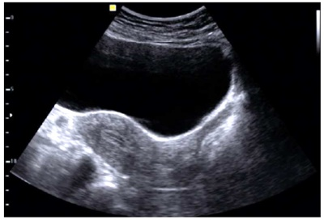
A a via abdominal e a fase progestagênica.
B a via abdominal e a fase estrogênica.
C a via endovaginal e a fase progestagênica.
D a via endovaginal e a fase estrogênica.
Revisar: possível letra faltando em enunciado
Questão 496 · Ginecologia · 4000197585O tratamento inicial para a puberdade precoce, decorrente da Síndrome de McCune Albright, é
A o tamoxifeno.
B o letrozol ou a leuprorrelina.
C a gosserrelina.
D o acetato de medroxiprogesterona.
Questão 497 · Ginecologia · 4000197584A injeção dos chamados agentes de preenchimento na submucosa da uretra é um método minimamente invasivo, disponível para tratar mulheres com
A bexiga hiperativa e dissinergia do músculo detrusor.
B urgeincontinênica urinária em pacientes idosas com mobilidade uretral.
C IUE decorrente de defeito esfincteriano intrínseco e ausência de mobilidade uretral.
D urgeincontinênica urinária sem defeito esficteriano e ausência de mobilidade uretral.
Questão 498 · Ginecologia · 4000197583A realização de sorologias para o rastreamento de sí lis e HIV em mulheres com idade < 30 anos deve ser feita
A anualmente.
B semestralmente.
C imediatamente após exposição de risco para IST.
D anualmente, independentemente da faixa etária.
Questão 499 · Ginecologia · 4000197582Os métodos existentes para a detecção precoce do câncer de mama não reduzem a incidência, mas podem reduzir a mortalidade pela doença. Nesse sentido, o Ministério da Saúde preconiza que, na população de risco padrão para o câncer de mama, o rastreio seja realizado pela mamografia,
A em intervalos bianuais, em mulheres entre 50 e 69 anos.
B em intervalos anuais, em mulheres entre 40 e 69 anos.
C em grupo familiar menor que 40 anos, com antecedente positivo para o câncer de mama, em mulheres com idade menor que 40 anos.
D em meio familiar, com antecedente familiar positivo para o câncer de mama, em mulheres com idade superior a 70 anos.
Questão 500 · Ginecologia · 4000197581O objetivo primordial da terapêutica hormonal (TH) é o tratamento dos sintomas vasomotores associados ao climatério. Nesse sentido, o a SOBRAC (Sociedade Brasileira de Climatério) e a FEBRASGO (Federação Brasileira de Ginecologia e Obstetrícia) orientam às pacientes em uso de TH
A a realização de ultrassonografia mamária e endovaginal.
B a realização anual de exames de mamografia.
C a realização de ultrassonografia endovaginal quando pacientes apresentarem sangramento uterino.
D a realização de exames complementares depois de efetuado rastreio de doenças cardiovasculares em usuárias de TH.
Questão 501 · Ginecologia · 4000197580Adolescente de 17 anos, com dismenorreia primária, moderada a grave, sem alterações do uxo menstrual e sem sexarca tem como primeira escolha o tratamento com os:
A Anticoncepcionais hormonais combinados em esquema estendido.
B Anti-inflamatórios não hormonais, durante a menstruação.
C Antiespasmódicos associados aos analgésicos comuns, durante a menstruação.
D Antiespasmódicos associados aos anti-inflamatórios não esteroidais, durante a menstruação.
Questão 502 · Ginecologia · 4000197579O exame mais sensível para mapear miomas, antes da miomectomia, é
A a ultrassonografia pélvica.
B a ultrassografia endovaginal.
C a tomografia computadorizada da pelve.
D a ressonância nuclear magnética da pelve.
Questão 503 · Ginecologia · 4000197578A necrobiose asséptica, também conhecida como degeneração rubra ou vermelha, corresponde ao infarto hemorrágico do leiomioma. Esse tipo de degeneração ocorre, principalmente, durante o uso de
A TH combinada do climatério.
B gestrinona.
C leuprorrelina
D testosterona.
Questão 504 · Ginecologia · 4000197577Leia o caso clínico. Mulher com 58 anos, obesidade grau=2, nuligesta, menopausada há 6 anos, sem uso de terapia hormonal apresenta sangramento uterino anormal, com ultrassonogra a mostrando espessamento endometrial, com resultado histopatológico de hiperplasia endometrial complexa, com atipia. Nessa situação, a conduta indicada é
A o uso da terapia hormonal combinada.
B o uso de progestágeno contínuo.
C a ablação endometrial por histeroscopia.
D a histerectomia.
Questão 505 · Ginecologia · 4000197576Climatérica, de 43 anos, com antecedentes de três partos normais, refere aumento do volume e duração da menstruação, com início após último parto, há cinco anos, associado à piora da dismenorreia. Refere piora progressiva do quadro nos últimos dois anos, quando passou a não obter melhora com uso de analgésicos comuns. Ao exame físico, o útero se encontra pouco aumentado de volume, doloroso a palpação, com consistência elástica e superfície lisa. Na ultrassonogra a pélvica, o útero apresenta volume de 180 cm3, endométrio trilaminar de 12 mm e ovários normais. Diante desse quadro, a hipótese diagnostica mais provável é de
A pólipo endometrial.
B hiperplasia endometrial.
C endometriose.
D adenomiose.
Questão 506 · Ginecologia · 4000197575Climatérica, de 43 anos, com antecedentes de três partos normais, refere aumento do volume e duração da menstruação, com início após último parto, há cinco anos, associado à piora da dismenorreia. Refere piora progressiva do quadro nos últimos dois anos, quando passou a não obter melhora com uso de analgésicos comuns. Ao exame físico, o útero se encontra pouco aumentado de volume, doloroso a palpação, com consistência elástica e superfície lisa. Na ultrassonogra a pélvica, o útero apresenta volume de 180 cm3, endométrio trilaminar de 12 mm e ovários normais. Considerando o quadro clínico apresentado, o tratamento definitivo da afecção para essa paciente é
A ressecção histeroscópica.
B ablação de endométrio.
C histerectomia.
D histerectomia ampliada.
Questão 507 · Ginecologia · 4000197574O tratamento para a dor pélvica decorrente de endometriose peritoneal é:
A a histerectomia ampliada.
B a eletrocirurgia.
C o análogo do GnRH.
D os anticoncepcionais hormonais contínuos.
Questão 508 · Ginecologia · 4000197573Adolescente de 17 anos de idade, com retardo pubertário decorrente de disgenesia gonádica, apresenta tumoração complexa em um dos ovários. A maior probabilidade é de que essa tumoração seja um
A gonadoblastoma.
B disgerminoma.
C cistoadenoma seroso.
D cistoadenoma mucinoso.
Questão 509 · Ginecologia · 4000197572Mulher de 30 anos de idade com queixa de exteriorização de estrutura via vaginal aos esforços, levando ao desconforto durante a atividade sexual. Ao exame, verifica-se tumoração cística, de +/-6 cm, em parede anterolateral da vagina, indolor à palpação. Diante desse quadro, o diagnóstico provável é de cisto de
A Nuck.
B Gartner.
C Bartholin.
D Skene.
Questão 510 · Ginecologia · 4000197571A hiperprolactinemia pode levar desdealterações menstruais até amenorreia e infertilidade. A principal causa de hiperprolactinemia é decorrente de
A hipotireoidismo.
B alterações hipofisárias.
C macroprolactinemia.
D medicamentosa.
Questão 511 · Ginecologia · 4000197570Anovulia e distúrbios ovulatórios são causados
A pela Síndrome dos Ovários Policísticos (SOP).
B pela Síndrome de Savage.
C pela hiperprolactinemias.
D pela falência ovariana precoce.
Questão 512 · Ginecologia · 4000197569Entre os progestágenos utilizados em contraceptivos hormonais, o que apresenta maior atividade antiandrogênica é
A a drospirenona.
B a clormatidona.
C a ciproterona.
D a medroxiprogesterona.
Questão 513 · Ginecologia · 4000197568Sobre a produção e características do líquido amniótico, assinale a alternativa CORRETA.
A Após a 12a semana, a produção passa a depender, principalmente, do volume urinário fetal.
B Após a 40a semana, pode haver tendência de diminuição do fluxo urinário fetal; assim a produção passa a depender, principalmente, da pele fetal.
C Os níveis de ureia, creatinina e ácido úrico no líquido amniótico são maiores do que no plasma fetal.
D O líquido pulmonar também tem participação importante na formação do líquido amniótico, sendo hipotônico em relação ao plasma fetal.
E Próximo ao termo, a urina fetal é acentuadamente hipotônica, aumentando a osmolaridade do líquido amniótico.
Questão 514 · Ginecologia · 4000197567No dia 14 de dezembro de 2022, paciente, primigesta, chegou à emergência obstétrica com queixa de sangramento discreto. Referia dia da última menstruação (DUM) em 01 de setembro de 2022 e que foi submetida a uma ultrassonogra a, em 24 de outubro, a qual constatou idade gestacional de 5 semanas e ausência de embrião. Repetiu ultrassonogra a em 07 de novembro de 2022 e constatou idade gestacional de 8 semanas pelo comprimento céfalo- nádegas. Assinale a alternativa CORRETA que representa a idade gestacional mais adequada para acompanhamento da gravidez no dia da consulta da emergência.
A 12s6d
B 12s2d
C 13s2d
D 13s6d
E 14s6d
Questão 515 · Ginecologia · 4000197566Paciente tercigesta na 31a semana de gravidez. Procurou a emergência com queixa de formigamento em mãos e inchaço em membros inferiores. Negava outras queixas. Exames complementares normais. Ao exame, pressão arterial de 160 x 80 mmHg (confirmada), dinâmica uterina ausente, edema +/4+ e batimentos cardíacos fetais de 156 bpm. Toque vaginal não realizado. A proteinúria de ta foi negativa. Assinale a alternativa que indica a hipótese diagnóstica mais provável.
A Hipertensão gestacional
B Pré-eclâmpsia não grave
C Pré-eclâmpsia grave
D Hipertensão transitória
E Hipertensão crônica
Questão 516 · Ginecologia · 4000197565Paciente primípara na 10a semana de gestação procurou a emergência obstétrica com queixa de sangramento e dor em baixo ventre tipo cólica. Ao exame, o toque vaginal encontrava-se com o colo uterino fechado e presença de sangramento leve. A ultrassonogra a revelou ausência de embrião e diâmetro médio do saco gestacional de 25 mm. Baseada nas evidências atuais, sobre o esvaziamento uterino, qual a conduta mais adequada e efetiva?
A Repetir ultrassonografia com 7 dias
B Repetir ultrassonografia com 15 dias
C Expectante e aspiração manual intrauterina, se necessário
D Misoprostol e aspiração manual intrauterina, se necessário
E Misoprostol e curetagem uterina, se necessário
Questão 517 · Ginecologia · 4000197564Gestante tercigesta na 27a semana de gravidez, procurou o pré-natal trazendo resultado dos exames de rotina. No momento, refere cefaleia, tonturas, náuseas e vômitos. Nega antecedentes sobre diabetes prévio à gravidez. O teste de tolerância oral à glicose a 75g foi: jejum - 92 mg/dL, 1h – 180 mg/dL e 2h – 153 mg/dL. Assinale a alternativa CORRETA quanto ao diagnóstico e à conduta mais adequada.
A Diabetes Mellitus clínico com um valor alterado. Iniciar o tratamento.
B Diabetes Mellitus gestacional com dois valores alterados. Iniciar o tratamento
C Exame com apenas um valor alterado, não podendo confirmar o diagnóstico de diabetes Mellitus clínico ou gestacional.
D Diabetes Mellitus clínico com dois valores alterados. Iniciar o tratamento.
E Diabetes Mellitus gestacional com três valores alterados. Iniciar o tratamento.
Questão 518 · Ginecologia · 4000197563Gestante 25 anos, tercigesta na 14ª semana de gravidez, procurou o pré-natal trazendo resultado dos exames de rotina. No momento assintomática. Nega antecedentes sobre hipertensão e diabetes prévio a gravidez. Ao exame obstétrico, apresentava frequência cardíaca fetal de 155 bpm. Altura de fundo uterino de 12 cm. Pressão arterial de 100 x 70 mmHg (confirmada). Índice de massa corpórea de 22kg/m². Hemoglobina de 12,0 g/dL. A glicemia de jejum foi de 127mg/dL. Das alternativas abaixo, assinale a que contém uma conduta adequada e a respectiva dose para a gestante.
A Iniciar ácido acetil salicílico – 150mg/dia
B Iniciar sulfato ferroso – 200mg/dia
C Iniciar metformina – 1,5g/dia
D Iniciar insulina regular – 2,0UI/dia
E Retorno para o pré-natal regular
Questão 519 · Ginecologia · 4000197562Gestante de 25 anos de idade, na 22ª semana de gravidez, secundigesta e primípara procura serviço de Medicina Fetal para ultrassonogra a morfológica de rotina. Refere parto normal anterior na 38ª semana há 3 anos. Assinale a alternativa CORRETA com relação ao significado da imagem acima tirada da ultrassonografia.

A A imagem foi realizada por via pélvica.
B A imagem sugere colo uterino 3,5 cm, havendo baixo risco para trabalho de parto prematuro.
C A imagem sugere colo uterino 1,0 cm, havendo alto do risco para trabalho de parto prematuro, sendo indicado uso de progesterona.
D A imagem sugere colo uterino 2,7 cm, havendo alto risco para trabalho de parto prematuro, sendo indicado uso de progesterona.
E A mensuração do colo uterino não deveria ter sido realizada, pois não é indicada de rotina.
Questão 520 · Ginecologia · 4000197561Paciente 20 anos de idade, na 11ª semana de gestação, veio para sua 1ª consulta de pré-natal. Na anamnese, referiu uma ferida ulcerada única, indolor e sem ardor ou secreções purulentas em lábio vaginal direito há aproximadamente 18 meses, a qual regrediu espontaneamente sem tratamento. Nessa consulta, trouxe exames pré-concepcionais, que chamaram a atenção pelo VDRL de 1/16. Qual a conduta adequada que o prenatalista deve adotar?
A Penicilica benzatina – 2.400.000 UI – 2 doses.
B Penicilina benzatina – 2.400.000 UI – 1 dose.
C Penicilina benzatina – 2.400.000 UI – 3 doses.
D Penicilina benzatina – 2.400.000 UI – 4 doses.
E Não administrar penicilina pelo risco de teratogenicidade. Adiar o tratamento para o 2º trimestre.
Questão 521 · Ginecologia · 4000197560Paciente 22 anos de idade, primigesta e na 41ª semana de gravidez. Veio para a emergência obstétrica com queixa de dor em baixo ventre há 15h tipo cólica. Ao exame, dinâmica uterina de 2 contrações/10 minutos/35 e 55 segundos. Batimentos cardiofetais de 140 bpm. Altura de fundo uterino de 34cm. Toque vaginal com 6 cm de dilatação, bolsa das íntegras, cefálico e 80% de esvaecimento cervical. O trabalho de parto evoluiu conforme partograma abaixo. Durante o período expulsivo observou-se o sinal da tartaruga. Assinale a alternativa que corresponde a uma manobra que poderia ser utilizada durante o período expulsivo para a resolução do quadro.
A Manobra de Pajot
B Manobra de Rojas
C Manobra de Ritgen
D Manobra de Taxe
E Manobra de Wood Screw
Questão 522 · Ginecologia · 4000197559Assinale a alternativa INCORRETA referente às recomendações da Organização Mundial da Saúde (OMS) dos cuidados intrapartos para uma experiência positiva da gestante.
A A fase ativa do trabalho de parto é caracterizada por contrações uterinas dolorosas regulares, um grau substancial de apagamento cervical e dilatação cervical de 4 cm até a dilatação completa.
B A fase ativa do trabalho de parto usualmente não se estende, além de 12 horas no primeiro parto, e de 10 horas nos partos subsequentes.
C A velocidade da dilatação cervical média de 1 cm/hora durante o primeiro estágio ativo, no primeiro parto (conforme linha de alerta do partograma), não é recomendada para identificar mulheres em risco de desfechos adversos no parto.
D A episiotomia seletiva é recomendada.
E A duração da segunda fase do trabalho de parto é variável, porém geralmente, no primeiro parto, o nascimento ocorre em 3 horas, enquanto, nos partos subsequentes, o nascimento ocorre em 2 horas.
Questão 523 · Ginecologia · 4000197558Gestante de 41 anos e primigesta (aborto anterior há 6 meses). Veio à emergência obstétrica com queixa de atraso menstrual há 5a semana, náusea e vômitos intensos e sangramento genital intermitente. Fez de 50.000mUI/ml. Ao toque vaginal, observou-se colo uterino pérvio com uma polpa digital, de consistência amolecida, sangramento vermelho vivo de intensidade leve e útero aumentado de volume para o atraso menstrual. Fez ultrassonogra a endovaginal que sugeriu a imagem abaixo intrauterina. Assinale a alternativa que se refere à conduta e ao diagnóstico mais provável.
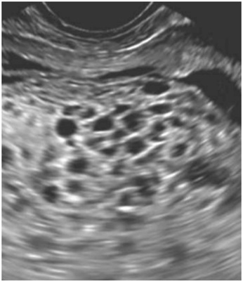
A Abortamento incompleto – Aspiração manual intrauterina.
B Doença trofoblástica gestacional – Aspiração manual intrauterina.
C Abortamento incompleto – Curetagem uterina.
D Doença trofoblástica gestacional – Misoprostol.
E Doença trofoblástica gestacional – Curetagem uterina.
Questão 524 · Ginecologia · 4000197557Gestante 22 anos de idade, nulípara e na 33a semana de gravidez. Veio à emergência com queixa de sangramento vermelho escuro e dor em baixo ventre. Ao exame, dinâmica uterina 1 contração/ 10 minutos/ 35 segundos, altura de fundo uterino de 29 cm e batimentos cardiofetais de 110 bpm. Consistência uterina aumentada. Pensando na principal hipótese diagnóstica para o quadro clínico, qual das alternativas abaixo NÃO se revela como fator de risco?
A Tabagismo
B Trombofilias
C Rotura prematura das membranas
D Nulípara
E Placenta prévia
Questão 525 · Ginecologia · 4000197556A cardiotocogra a é um exame utilizado para avaliação da vitalidade fetal, a qual pode ser convencional ou computadorizada. Assinale a alternativa abaixo que corresponde ao parâmetro avaliado unicamente pela cardiotocografia computadorizada e o valor abaixo que sugere hipoxemia.
A Microscilações – 4,5 ms
B Macroscilações – 3,0 ms
C Microscilações – 2,5 ms
D Macroscilações – 10 bpm
E Variabilidade – ausente
Questão 526 · Ginecologia · 4000197555Das alternativas abaixo, assinale a que apresenta a maior taxa de detecção no rastreamento de anomalias cromossômicas.
A Translucência nucal
B Idade materna + Translucência nucal + Marcadores bioquímicos
C Idade materna + Translucência nucal + Marcadores bioquímicos + Osso nasal + Refluxo tricúspide + Ducto venoso
D Translucência nucal + Osso nasal + Ducto venoso + Refluxo tricúspide
E Teste pré-natal não invasivo (NIPT)
Questão 527 · Ginecologia · 4000197554Gestante 34 anos, secundigesta, veio para o pré-natal com a imagem ultrassonográ ca abaixo. Assinale a alternativa CORRETA com relação à ultrassonografia.
A É provável que seja uma gestação dizigótica, sendo as complicações mais frequentes que a monozigótica.
B É impossível que seja uma gestação monozigótica.
C É impossível que seja uma gestação dizigótica.
D É provável que seja uma gestação monocoriônica e diamniótica, sendo as complicações mais frequentes que a dizigótica.
E É provável que seja uma gestação dicoriônica e diamniótica.
Revisar: possível letra faltando em enunciado
Questão 528 · Ginecologia · 4000197553Dentre as alternativas abaixo, assinale a que representa fator fetal associado ao polidrâmnio e gestação pós- termo.
A Anencefalia
B Atresia esofágica
C Meningomielocele
D Válvula de uretra posterior
E Malformação adenomatosa cística pulmonar
Questão 529 · Ginecologia · 4000197552Gestante 28 anos de idade, primigesta e na 41a semana de gravidez. Na emergência obstétrica, queixou-se de dor em baixo ventre há 12 horas. Ao exame, batimentos cardiofetais de 140 bpm, dinâmica uterina de 2 contrações / 10 minutos / 35 e 45 segundos. Ao toque vaginal, encontrava-se com 6 cm, 80% de esvaecimento cervical, bolsa das águas íntegras, cefálico e I plano de De Lee. O trabalho de parto evoluiu segundo o partograma abaixo. Analise a evolução do trabalho de parto e assinale a alternativa CORRETA com relação à conduta mais adequada.
A Cesariana.
B Expectante.
C Parto vaginal assistido por vácuo-extrator.
D Ocitocina
E Parto vaginal assistido por fórceps de Rueff.
Questão 530 · Ginecologia · 4000197551Gestante 31 anos, secundigesta, na 23a semana de gravidez, veio ao pré-natal assintomática, referindo gestação gemelar e trazendo resultado do exame ultrassonográ co. O exame sugeria uma diferença de peso entre os fetos com maior bolsão de líquido amniótico de 9,0 cm no feto maior e de 1,0 cm no feto menor. Comprimento do colo uterino de 3,0 cm. O restante do exame era normal, incluindo a dopplervelocimetria. Assinale a alternativa CORRETA com relação à conduta.
A Expectante, realizando acompanhamento ultrassonográfico
B Ablação vascular a laser
C Septostomia
D Amniodrenagem seriada
E Amniodrenagem e septostomia
Revisar: possível letra faltando em enunciado
Questão 531 · Ginecologia · 4000197550Gestante 26 anos, primípara, na 38a semana de gravidez, com queixa de dor em baixo ventre e perda de líquido há 24 horas. Ao exame, estado geral regular, hipocorada (+/4+), acianótica, consciente e orientada. Temperatura axilar de 38oC. Pressão arterial de 120 x 80 mmHg. Frequência cardíaca materna de 110bpm. Frequência respiratória de 24 incursões/minuto. Dinâmica uterina 1 contração / 10 minutos / 20 segundos. Útero reativo. Movimentos fetais presentes. Batimentos cardio fetais de 165 bpm. Diante do quadro clínico, assinale a alternativa CORRETA referente à complicação materna ou fetal improvável de acontecer.
A Desconforto respiratório.
B Descolamento prematuro da placenta.
C Prolapso de cordão.
D Corioamnionite.
E Hipoplasia pulmonar.
Questão 532 · Ginecologia · 4000197549Assinale a alternativa que corresponde à idade gestacional mínima para a realização da amniocentese com menores taxas de complicações.
A 14ª semana
B 15ª semana
C 16ª semana
D 17ª semana
E 18ª semana
Questão 533 · Ginecologia · 4000197548Paciente 20 anos, na 14a semana de gravidez, retorna ao pré-natal com resultados dos exames de rotina. Dentre os exames, chamou a atenção do prenatalista a sorologia para toxoplasmose IgM positivo e IgG negativo. Assinale a alternativa CORRETA referente à melhor conduta inicial.
A Solicitar o teste de avidez; se baixa avidez, considerar infecção recente, que ocorreu até 20 semanas de gravidez.
B Solicitar o teste de avidez; se baixa avidez, considerar infecção recente, podendo ter ocorrido durante a gravidez.
C Solicitar o teste de avidez; se alta avidez, considerar infecção antiga que ocorreu após 14 semanas de gravidez.
D Solicitar o teste de avidez; se alta avidez, considerar infecção recente, que ocorreu até 20 semanas de gravidez.
E Solicitar o teste de avidez; se baixa avidez, considerar infecção antiga que ocorreu após 16 semanas de gravidez.
Questão 534 · Ginecologia · 4000197547Paciente 22 anos, na 37a semana de gravidez, procurou a emergência obstétrica com queixa de dor em baixo ventre. Refere ser HIV positiva e que faz a terapia com antirretrovirais regularmente com boa adesão para tratamento de HIV. Exame clínico sem alterações. Ao exame obstétrico, dinâmica uterina de 3 contrações em 10 minutos de 45 segundos, batimentos cardiofetais de 146 bpm e altura de fundo uterino de 33 bpm. Ao toque vaginal, apresentava- se com 3 cm de dilatação, bolsa das águas íntegras, cefálico e 50% de esvaecimento cervical. Trouxe uma carga viral indetectável realizada na 35a semana. Assinale a alternativa CORRETA referente a melhor conduta.
A AZT e cesariana.
B AZT e parto vaginal.
C Encaminhar para unidade terciaria.
D Cesariana, apenas.
E Parto vaginal, apenas.
Questão 535 · Ginecologia · 4000197546Na rotina dos exames pré-natais, ou seja, independente de fatores de risco, assinale a alternativa CORRETA em relação ao exame que deve ser solicitado segundo as recomendações do Ministério da Saúde do Brasil.
A Eletroforese de hemoglobina
B Sorologia para citomegalovírus
C Colposcopia
D Ultrassonografia morfológica do 1o trimestre
E Parasitológico de fezes
Questão 536 · Ginecologia · 4000197545Assinale a alternativa CORRETA referente à anomalia fetal que não é passível de correção intraútero, segundo as evidências atuais, sem considerar critérios de indicação, idade gestacional e fatores de risco.
A Meningomielocele associada à ventriculomegalia
B Raquisquises
C Hidrocefalia
D Síndrome transfusor transfundido
E Restrição seletiva em gestação gemelar
Questão 537 · Ginecologia · 4000197544Gestante 25 anos de idade, multípara e na 33a semana de gravidez. Veio à emergência com queixa de sangramento vermelho escuro e dor em baixo ventre. Ao exame, dinâmica uterina 1 contração/ 10 minutos/ 35 segundos, altura de fundo uterino de 29 cm e batimentos cardiofetais de 110 bpm. Consistência uterina aumentada. Pressão arterial de 85 x 50 mmHg e frequência cardíaca materna de 145 bpm. Ao toque vaginal colo central de 6 cm, amolecido, bolsa íntegra, 50% de esvaecimento cervical e plano I. de De Lee. Pensando nas principais hipóteses diagnósticas para o quadro clínico, qual das alternativas abaixo representa a melhor conduta?
A Amniotomia e aguardar o parto vaginal
B Ocitocina, amniotomia e aguardar o parto vaginal
C Cesariana por raquianestesia
D Cesariana por anestesia geral
E Analgesia de parto e aguardar o parto vaginal
Questão 538 · Ginecologia · 4000197543Mulher de 25 anos procura o ambulatório de ginecologia para avaliar exame citológico. Há um ano teve como resultado de uma citologia oncótica “células escamosas atípicas de significado indeterminado, possivelmente não neoplásicas (ASC-US)”. Repetiu agora o mesmo exame e obteve o mesmo resultado. Foi encaminhada à colposcopia que não revelou resultados maiores do que já possuía na citologia, no entanto a junção escamo- colunar não era completamente visível. Qual a conduta mais apropriada?
A Biópsia da ectocérvice
B Traquelectomia
C Citologia com seis meses
D Colposcopia semestral
E Avaliação da endocérvice
Questão 539 · Ginecologia · 4000197542Paciente procura ambulatório de ginecologia para orientação. Encontra-se com 16 semanas de gestação e a rma ser portadora de câncer de colo uterino com diagnóstico confirmado por biópsia. No exame, é percebido tumor de 2cm no terço superior da vagina, paramétrios livres. Traz ressonância magnética que mostra gânglios positivos. No cenário acima, qual a conduta mais adequada?
A Interrupção da gestação e tratamento standard
B Quimioterapia neoadjuvante até maturidade fetal
C Radioterapia com feto intraútero
D Cirurgia oncológica tipo Piver IV
E Interromper ao atingir 20 semanas de gestação
Questão 540 · Ginecologia · 4000197541Uma paciente de cinquenta anos de idade queixa-se de ondas de calor todas as noites, com grande impacto sobre a qualidade do sono, além de labilidade emocional com impacto negativo sobre as relações pessoais. Nega morbidades crônicas ou uso de medicações. Acerca da avaliação quanto à indicação de terapia hormonal no caso clínico acima, assinale a alternativa correta.
A Antes do início da terapia hormonal, independentemente dos dados da anamnese e do exame físico, é essencial o resultado de ultrassonografia de mamas realizada há, no máximo, um ano.
B Não há evidências que justifiquem a necessidade de realização de ultrassonografia transvaginal antes do início da terapia hormonal em mulheres assintomáticas.
C Não há evidências que justifiquem a dosagem de colesterol total, HDL-colesterol, triglicérides e glicemia de jejum antes do início da terapia hormonal.
D A anamnese e o exame físico detalhados têm pouca relevância antes de iniciar-se a terapia hormonal, em comparação à importância dos exames complementares.
E Evidências comprovam a necessidade de realização de ultrassonografia transvaginal periódica em mulheres assintomáticas usuárias de terapia hormonal para rastreamento do câncer de ovário e endométrio.
Questão 541 · Ginecologia · 4000197540Uma paciente de 29 anos de idade, pro ssional da área de saúde, assintomática, procurou atendimento médico para consulta ginecológica de rotina. Refere que estava em acompanhamento em outro serviço devido a NIC 2, tratado há cerca de um ano e meio, com margens livres. Manifesta desejo de realizar colpocitologia oncótica e teste de HPV de colo, vagina e vulva, conforme fazia anteriormente. Considerando o caso clínico acima, assinale a alternativa correta.
A Para a realização de testes de HPV, deve-se sempre coletar amostra do canal cervical, da vagina e da vulva.
B Os testes de HPV não são utilizados no rastreamento do câncer de colo uterino.
C Quando o HPV é indetectável e o exame citológico é negativo, deve-se recomendar a repetição desses exames anualmente.
D Em mulheres tratadas por NIC 2 ou NIC 3, o teste de detecção de HPV com resultado negativo, coletado em seis a dezoito meses, tem baixo valor preditivo negativo e não deve ser utilizado para seguimento.
E Em mulheres com resultado de citologia sugestiva de ASC-US, um teste de HPV positivo indica a colposcopia.
Questão 542 · Ginecologia · 4000197539Uma paciente de 43 anos de idade, assintomática, HIV positivo com carga viral indetectável e CD4 > 200 células/mm³, compareceu à consulta de rotina trazendo sua carteira de vacinação, na qual constam: duas doses da vacina tríplice viral; duas doses da vacina contra hepatite A; duas doses da vacina contra hepatite B; três doses da vacina contra HPV; e uma dose da vacina contra varicela. Com base no Calendário de Vacinação da Mulher, é correto afirmar que a paciente do caso clínico acima
A 2deve tomar mais uma dose da vacina tríplice viral.
B pode ser considerada vacinada contra hepatite A.
C pode ser considerada vacinada contra hepatite B.
D deve tomar mais uma dose da vacina contra HPV.
E deve tomar mais duas doses da vacina contra varicela.
Questão 543 · Ginecologia · 4000197538Uma paciente de 38 anos de idade, sem desejo gestacional, queixa-se de ciclos menstruais irregulares, tendo apresentado oito ciclos menstruais no último ano. Quando questionada, refere incomodar-se com pili cação e oleosidade da pele. Dados do exame físico: IMC = 24 kg/m²; presença de acne em face; índice de Ferriman-Gallwey = 8. Dados de exames complementares: prolactina = 30 ng/mL; FSH = 3,2 UI/L; TSH = 4,5 mUI/L; 17OHP = 25 ng/dl. Dados da ultrassonogra a transvaginal: útero em anteversão, centrado, de dimensões preservadas, contornos regulares e textura miometrial homogênea. Medidas do útero: 7,6 cm × 3,8 cm × 4,8 cm. Volume do útero: 72,1 cm³. Eco endometrial centrado e homogêneo, medindo 0,8 cm de espessura. Ovário direito com volume de 6,5 cm³, com presença de cinco imagens císticas, anecogênicas, medindo até 5 mm. Ovário esquerdo com volume de 12,9 cm³, com presença de sete imagens císticas, anecogênicas, medindo até 8 mm. No caso clínico acima, o diagnóstico provável é de:
A Hiperprolactinemia, e o tratamento deve ser iniciado com cabergolina 1 mg, por via oral, uma vez ao dia.
B Hiperplasia adrenal congênita na forma não clássica, e o tratamento deve ser feito com 10–20 mg/dia de hidrocortisona.
C Hiperplasia adrenal congênita na forma não clássica, e o tratamento deve ser feito com 0,25–0,75 mg/dia de dexametasona.
D Síndrome dos ovários policísticos, e o tratamento deve ser iniciado com contraceptivos orais combinados, contendo 20–30 mcg de EE ou equivalente, associados a progestagênio de ação antiandrogênica.
E Síndrome dos ovários policísticos, e o tratamento deve ser iniciado com metformina 1.000–2.500 mg/dia.
Questão 544 · Ginecologia · 4000197537Uma paciente de 64 anos de idade, 5G5PN, apresenta queixa de “bola na vagina” há dois anos. Nega incontinência urinária ou urgência miccional. Refere di culdade para iniciar a micção, necessitando reduzir a lesão antes. Quando questionada, refere sensação de evacuação incompleta esporadicamente. No exame físico, observou o seguinte: POPQ: Aa +3 / Ba +3 / Ap +2 / Bp +2 / C +2 / D +1 / HG 5 / CP 2 / TLV 10. Entre as alternativas a seguir, assinale aquela que apresenta o tratamento mais e caz para a paciente do caso clínico acima.
A histerectomia via vaginal associada a colporrafia anterior com tecido nativo
B histerectomia via vaginal associada a colporrafia anterior com tela
C histerectomia via vaginal associada a colporrafia posterior
D histerectomia via laparoscópica associada a cirurgia de Burch
E histerectomia subtotal via laparoscópica associada a colpossacrofixação
Questão 545 · Ginecologia · 4000197536Uma paciente de 48 anos de idade, sem acompanhamento de rotina ginecológica, procurou atendimento com queixa de sangramento vaginal irregular. Durante a avaliação, foi estabelecido o diagnóstico de carcinoma escamoso de colo uterino IB1. No caso clínico acima, o tratamento preferencial para a paciente é
A histerectomia radical com linfonodectomia pélvica bilateral. No seguimento após o tratamento, a paciente deverá passar por consultas mensais durante o primeiro ano após o tratamento e, depois de doze meses, as consultas poderão acontecer em intervalos maiores de tempo.
B histerectomia radical com linfonodectomia pélvica bilateral. No seguimento após o tratamento, os retornos deverão ser agendados em um intervalo de três a seis meses por, pelo menos, cinco anos, independentemente dos fatores prognósticos.
C traquelectomia radical com linfonodectomia pélvica. No seguimento após o tratamento, os retornos deverão incluir, obrigatoriamente, ultrassonografia transvaginal.
D traquelectomia radical com linfonodectomia pélvica. No seguimento após o tratamento, recomenda-se a realização de ressonância magnética de pelve anualmente, para aumentar a detecção de recidiva.
E histerectomia radical com linfonodectomia pélvica bilateral (com ou sem biópsia de linfonodo sentinela). No seguimento após o tratamento, exames de imagem deverão ser solicitados exclusivamente quando houver sintomas ou sinais.
Questão 546 · Ginecologia · 4000197535Uma paciente de 58 anos de idade, 2G2PN, com IMC igual a 26 kg/m2 , casada, com vida sexual ativa, queixa-se de urgência miccional e noctúria há cinco meses, levantandose até duas vezes por noite para urinar. Refere ter apresentado dois episódios de incontinência, com saída de grande quantidade de urina nessas ocasiões. Nega morbidades crônicas, uso de medicações ou cirurgias prévias. Considerando a principal hipótese diagnóstica no caso clínico acima, assinale a alternativa que apresenta a primeira linha de tratamento para essa paciente.
A medidas comportamentais e fisioterapia
B anticolinérgicos
C bloqueador alfa-adrenérgico
D inibidor da recaptação de serotonina
E agonista alfa-adrenérgico
Questão 547 · Ginecologia · 4000197534Uma paciente de 28 anos de idade queixa-se de dor no hipogástrio EVA 6/10, associada a urgência miccional e noctúria há sete meses. Refere que a dor alivia com esvaziamento vesical e que os sintomas cam mais intensos no período pré-menstrual. Queixa-se, ainda, de dismenorreia moderada nos dois primeiros dias da menstruação e dispareunia de profundidade. Encontra-se em tratamento para síndrome do intestino irritável e bromialgia. Realizou urina I. e urocultura, ressonância magnética de pelve, cistoscopia e estudo urodinâmico, todos com resultados normais. Nesse caso clínico, a principal hipótese diagnóstica é de
A neoplasia de bexiga.
B síndrome da bexiga hiperativa.
C endometriose.
D síndrome da bexiga dolorosa.
E infecção urinária de repetição.
Questão 548 · Ginecologia · 4000197533Uma paciente de 32 anos de idade, nuligesta sem desejo gestacional imediato, queixase de sangramento uterino anormal há seis meses, associado a dismenorreia EVA 8, com melhora parcial ao uso de anti- inflamatórios. Refere manter ciclos menstruais regulares, porém, com aumento da duração e do volume menstrual. Sem alterações no exame físico. Realizou ultrassonogra a, cujos achados foram os seguintes: útero antevertido, medindo 7,9 cm × 7,4 cm × 4,3 cm (L × T × AP), com volume de 130,7 cm³. Apresenta contornos regulares, sinal miometrial homogêneo, exceto pela presença de nódulo miometrial, corporal anterior FIGO 3, com manto interno de 0,5 cm, medindo 3,0 cm × 3,0 cm × 1,0 cm; discreta irregularidade da interface mioendometrial, com espessura de até 1,7 cm; endométrio com espessura de 0,6 cm; regiões retrocervical, paracervicais e do septo retovaginal sem alterações evidentes; ovários com dimensões normais e aspecto habitual; volume ovariano direito de 4,9 cm3; volume ovariano esquerdo de 6,1 cm³. Entre as alternativas a seguir, assinale aquela que apresenta a melhor opção de tratamento para a paciente do caso clínico acima.
A sistema intrauterino liberador de levonorgestrel
B miomectomia histeroscópica e sistema intrauterino liberador de levonorgestrel
C miomectomia laparoscópica
D miomectomia e miometrectomia laparoscópica
E embolização das artérias uterinas
Questão 549 · Ginecologia · 4000197532Uma paciente de 47 anos de idade, 3G3PN, apresenta quadro de amenorreia há um ano e galactorreia há um mês, associado a ondas de calor e diminuição da libido. Quanto aos antecedentes, refere acompanhamento por leiomioma uterino. Nega morbidades crônicas ou uso de medicações. No exame físico, apresentava galactorreia. Abdome ácido, indolor, e útero palpável 2 cm acima da sín se púbica. Dados de exames complementares: prolactina = 213 ng/ml; estradiol = 19 pg/ml; FSH = 5,4 mIU/ml; LH = 1,1 mIU/ml; TSH = 1,5 ng/dl; cortisol = 18,1 transvaginal: útero anteverso etido; miométrio homogêneo, exceto por nódulo hipoecogênico medindo 10,3 cm × 8,6 cm × 9,8 cm; ovário esquerdo sem alterações; ovário direito com formação anecoica, de limites regulares, unilocular, medindo 6,0 cm × 4,0 cm × 3,0 cm. A paciente foi tratada com cabergolina 0,5 mg, duas vezes por semana, durante seis semanas. Em seguida, foi coletada nova prolactina, que resultou igual a 203 ng/ml. Aumentou-se, então, a dose de cabergolina para 1,0 mg duas vezes por semana durante mais seissemanas. Depois disso, foi coletada nova prolactina, cujo resultado foi igual a 213 ng/mL, e, em seguida, foi feito um novo aumento da medicação, para 1,0 mg, três vezes por semana, por mais seis semanas, tendo sido a última dosagem de prolactina igual a 215 ng/ml. Tendo em vista o caso clínico acima, assinale a alternativa que apresenta uma conduta que pode levar à melhora clínica da paciente em questão.
A Aumentar a dose de cabergolina gradativamente, até a dose máxima de 15 mg por semana.
B Trocar a cabergolina por bromocriptina 1,25 mg, uma vez ao dia.
C Histerectomia total e salpingectomia.
D Ooforectomia à direita.
E Iniciar tratamento de doença de Addison com prednisona, 5 mg pela manhã e 2,5 mg à tarde.
Questão 550 · Ginecologia · 4000197531Uma paciente de 37 anos de idade, tabagista, refere saída espontânea de secreção pelo mamilo direito há um mês. Relata ter descoberto, recentemente, que uma tia de 65 anos de idade fora diagnosticada com câncer de mama, por isso, desde então, desenvolveu o hábito de realizar autoexame diariamente. No exame físico, observam-se mamas simétricas, ausência de lesões cutâneas, abaulamentos ou retrações. À palpação, nota-se ausência de nodulações ou massas. À expressão, é observada a saída de secreção serossanguinolenta, em especial ao se pressionar a região periareolar, às nove horas, da mama direita. Nesse caso clínico, a conduta inicial deve consistir em
A tranquilizar a paciente, pois, provavelmente, se trata de ectasia ducal devido ao tabagismo e à manipulação frequentes.
B realizar citologia do fluxo papilar.
C realizar ultrassonografia e mamografia diagnóstica e, em caso de resultados normais, tranquilizar a paciente.
D realizar ultrassonografia e mamografia diagnóstica e, em caso de resultados normais, prosseguir a investigação com ressonância nuclear magnética.
E realizar core biopsy do ducto acometido, guiando-se pelo local cuja digitopressão produziu o fluxo papilar (no caso em questão, realizar biópsia às nove horas da região periareolar).
Questão 551 · Ginecologia · 4000197530Uma paciente de 26 anos de idade, nuligesta, deu entrada no pronto-socorro com queixa de dor intensa em fossa ilíaca direita havia seis horas, associada a náuseas e um episódio de vômito. Havia feito uso de escopolamina e cetoprofeno em casa, mas não obteve melhora. Negou doenças crônicas, uso de medicações ou cirurgias prévias. Não soube informar a data da última menstruação. Tem múltiplos parceiros sexuais e faz uso de preservativo como método contraceptivo. No exame físico, apresentava-se em bom estado geral, corada, hidratada, com abdome plano, ácido, doloroso à palpação profunda de FID, DB negativo. No exame de toque, notou-se útero intrapélvico, anexo direito aumentado de tamanho, doloroso ao toque. Realizou exame de BHCG, que resultou negativo, e ultrassonogra a transvaginal, que evidenciou útero em anteverso exão, sinal e dimensões dentro da normalidade, ovário esquerdo sem alterações, ovário direito com contornos normais e volume aumentado às custas de imagem cística anecoica com porção sólida hiperecogênica produtora de sombra acústica posterior, medindo 5,2 cm × 4,5 cm × 4,5 cm, sem vascularização significativa. Notou-se discreto edema estromal hipoecogênico e alguns folículos em periferia. No estudo doppler, identi cou-se a presença de uxo ovariano bilateralmente. No caso clínico acima, trata- se, provavelmente, de
A endometrioma no ovário direito, devendo-se otimizar analgesia parenteral e investigar outros focos de endometriose, para melhor planejamento cirúrgico.
B cisto hemorrágico, e a conduta pode ser expectante, com controle de Hb/Ht, devido ao risco de sangramento.
C abscesso tubo-ovariano, e a conduta deve consistir em antibioticoterapia e drenagem cirúrgica, dada a baixa taxa de resolução com tratamento clínico de lesões com as referidas dimensões.
D teratoma no ovário direito, e a presença de fluxo ao doppler descarta torção do anexo, devendo-se realizar analgesia parenteral e programar ooforoplastia eletiva.
E torção anexial, e o tratamento recomendado é desfazer a torção e realizar ooforoplastia, considerando-se a preservação do ovário mesmo que este apresente aparência necrótica.
Questão 552 · Ginecologia · 4000197529Uma paciente de 36 anos de idade, com quadro de dor pélvica crônica e dispareunia de profundidade, foi submetida a videolaparoscopia para exérese de focos de endometriose. Durante a cirurgia, foram observadas lesões nodulares sugestivas de endometriose profunda em região retrocervical, ligamentos uterossacros bilaterais e paracervical à esquerda. Considerando os riscos potenciais de lesões durante a cirurgia retratada no caso clínico acima, assinale a alternativa que apresenta corretamente a manifestação clínica da lesão mencionada.
A lesão do nervo hipogástrico: redução da complacência vesical
B lesão do nervo hipogástrico: dor intensa em vulva e raiz da coxa
C lesão térmica intestinal: sinais de peritonite por volta do terceiro ao quinto dia do pósoperatório
D lesão dos nervos esplâncnicos pélvicos: enfraquecimento do assoalho pélvico
E lesão dos nervos esplâncnicos pélvicos: dor intensa em vulva e raiz da coxa
Questão 553 · Ginecologia · 4000197528Em relação ao uso de vassopressina durante a miomectomia laparoscópica, assinale a alternativa correta.
A Deve-se realizar diluição de 20 UI em 100 mL de soro fisiológico a 0,9%, podendo-se utilizar 20 mL da solução.
B A vasopressina deve ser injetada por via endovenosa.
C A vassopressina deve ser realizada de forma rápida, para reduzir o risco de bradicardia.
D O efeito da vassopressina dura duas horas.
E A vasopressina aumenta o tempo cirúrgico, por ser de difícil aplicação.
Questão 554 · Ginecologia · 4000197527Em relação às suturas barbadas durante a miomectomia, assinale a alternativa correta.
A O uso de tais suturas exige maior tempo cirúrgico, devido à dificuldade de manuseio do fio.
B Deve-se cortar o fio longe da incisão, de forma a deixar sobra ao final da sutura para segurança.
C As suturas barbadas não devem ser utilizadas nesse contexto, porque há altos índices de aderências pós-operatórias.
D O uso desse tipo de sutura permite uma sutura hemostática mantendo-se a tração do fio, o que reduz o sangramento intraoperatório e o tempo cirúrgico.
E Tais suturas são realizadas com fios trançados multifilamentares, o que permite maior aderência do fio.
Questão 555 · Ginecologia · 4000197526Durante a hemostasia em uma ooforoplastia laparoscópica, deve-se
A coagular o ovário utilizando energia monopolar no modo coagulação.
B coagular o ovário utilizando energia monopolar no modo blend.
C utilizar sutura ou hemostáticos para hemostasia.
D coagular todo o ovário com a energia bipolar sem restrição, devido ao seu baixo dano térmico e mínimo dano térmico lateral.
E fazer hemostasia com energia ultrassônica
Questão 556 · Ginecologia · 4000197525Quanto às características dos tipos de energia monopolar e bipolar, assinale a alternativa correta.
A Na energia bipolar, a corrente elétrica passa de um polo ativo (pinça laparoscópica) e retorna através do eletrodo neutro (placa dispersiva).
B Na energia monopolar no modo corte, há uma corrente elétrica intermitente modulada.
C A energia monopolar apresenta menores riscos do que a energia bipolar.
D A energia ultrassônica utiliza a corrente elétrica modulada, que retorna através do eletrodo neutro (placa dispersiva)
E A energia bipolar utiliza corrente de alta frequência não modulada, o que permite a coagulação de vasos de até 7 mm.
Questão 557 · Ginecologia · 4000197524Assinale a alternativa que apresenta os marcos anatômicos para a realização da ligadura da artéria uterina durante uma miomectomia laparoscópica.
A ureter e nervo hipogástrico
B ureter e artéria umbilical obliterada
C artéria umbilical obliterada e nervo hipogástrico
D ureter e artéria obturatória
E artéria umbilical obliterada e artéria epigástrica profunda
Questão 558 · Ginecologia · 4000197523Caso um cirurgião, em uma laparoscopia de urgência, identifique uma torção anexial, ele deve
A distorcer o anexo e observar como fica sua vascularização, para avaliar ooforoplastia.
B distorcer o anexo e, logo em seguida, pinçar e coagular o seu pedículo.
C pinçar o pedículo anexial, coagular sem distorcer e proceder à salpingooforectomia, devido ao risco de embolia pulmonar.
D pinçar o pedículo anexial para evitar embolia pulmonar, distorcer o anexo e depois coagular, para melhor efetividade da coagulação.
E realizar salpingooforectomia, podendo-se distorcer ou não o anexo.
Questão 559 · Ginecologia · 4000197522Assinale a alternativa que apresenta o(s) teste(s) e o(s) sinal(is) utilizados para se certi car de que a agulha de Veress está na cavidade abdominal.
A teste de aspiração negativo, teste da gota pendente positivo, pressão inicial de 12 mmHg e perda da macicez hepática com 1.000 mL de gás infundido
B teste de aspiração negativo, teste da gota pendente negativo e perda da macicez hepática com 600 mL de gás infundido
C teste de aspiração, teste da gota pendente, pressão inicial de 6 mmHg e perda da macicez hepática com 300 mL de gás infundido
D duplo recuo da agulha de Veress, teste da gota pendente positivo e perda da macicez hepática com 700 mL de gás infundido
E duplo recuo da agulha de Veress, teste da gota pendente negativo, pressão inicial abaixo de 6 mmHg e perda da macicez hepática com 100 mL de gás infundido
Questão 560 · Ginecologia · 4000197521Um ponto de entrada alternativa para a agulha de Veress diante da suspeita de aderências é o ponto de Palmer. Assinale a alternativa que apresenta seus pontos de referência.
A linha mediana, 2 cm acima da cicatriz umbilical
B linha mediana, 2 cm abaixo do rebordo costal
C rebordo costal direito, linha hemiclavicular direita
D rebordo costal esquerdo, paraumbilical esquerdo
E rebordo costal esquerdo, linha hemiclavicular esquerda
Questão 561 · Ginecologia · 4000197520Durante uma miomectomia histeroscópica em uma paciente, houve uma perfuração uterina com energia bipolar. Assinale a alternativa que apresenta a conduta adequada nesse caso hipotético.
A interromper o procedimento e realizar observação da paciente por 24 horas
B interromper o procedimento e realizar observação da paciente por 48 horas
C continuar o procedimento e realizar observação da paciente por 24 horas
D interromper o procedimento e realizar laparoscopia
E continuar o procedimento e dar alta hospitalar à paciente depois disso
Questão 562 · Ginecologia · 4000197519A abertura do folheto anterior e posterior do ligamento largo denominado janela avascular durante a histerectomia laparoscópica é importante por
A retificar a artéria uterina.
B lateralizar e rebaixar o ureter.
C isolar o nervo hipogástrico.
D preservar o anel pericervical.
E identificar o recesso vesicouterino
Questão 563 · Ginecologia · 4000197518Assinale a alternativa que apresenta a complicação mais frequente em histeroscopia.
A sinéquia uterina
B síndrome de Overload
C hemorragia
D perfuração uterina
E infecção
Questão 564 · Ginecologia · 4000197517Acerca dos meios distensores em histeroscopia, assinale a alternativa correta.
A A glicina é um meio não eletrolítico e pode ser utilizada com ressectoscópio monopolar.
B O soro fisiológico pode ser utilizado com ressectoscópio monopolar.
C Dextran 70 possui grande fluidez, o que permite excelente visão da cavidade.
D A glicina é um meio não eletrolítico e pode ser utilizada com ressectoscópio bipolar.
E O CO2 deve ser utilizado com energia monopolar.
Questão 565 · Ginecologia · 4000197516O organismo da mulher sofre diversas adaptações siológicas durante o processo gestacional. Com relação a esse assunto, julgue os itens a seguir. I. Com a formação das hemácias fetais e o aumento das hemácias maternas, ocorre necessidade aumentada de ferro (no valor de, aproximadamente, 1.500 mg) durante toda a gestação. II. O aumento da produção de progesterona inibe o transporte intraductal dos sais biliares, o que favorece a colestase intra-hepática. III. A elevação do diafragma pelo útero gravídico leva à diminuição do volume corrente e à hiperventilação, o que facilita a excreção de CO₂. IV. Observam-se, durante toda a gestação, valores baixos de prolactina, produzida pela adeno-hipó se; contudo, após o parto, com o estímulo da sucção, a prolactina aumenta. Assinale a alternativa correta.
A Nenhum item está certo.
B Apenas o item I está certo.
C Apenas o item II está certo.
D Apenas o item III está certo.
E Apenas o item IV está certo.
Questão 566 · Ginecologia · 4000197515Os benefícios resultantes do aleitamento materno (AM) são conhecidos e cienti camente comprovados. O valor nutricional, a proteção imunológica e a interferência na constituição do microbioma intestinal, em conjunto com um menor risco de contaminação, reduzem o risco de morbidade e mortalidade infantis por diarreia e infecções. Quanto a esse assunto, assinale a alternativa que apresenta uma contraindicação absoluta para a amamentação.
A infecção por HIV
B hepatite C
C covid-19
D dengue
E malária
Questão 567 · Ginecologia · 4000197514A toxoplasmose aguda pode desencadear sérias repercussões na gestação, devido à possibilidade de causar toxoplasmose congênita. Acerca da toxoplasmose na gestação, assinale a alternativa correta.
A A taxa de transmissão vertical do T. gondii é inversamente proporcional à idade gestacional, ao passo que a morbimortalidade fetal é diretamente proporcional ao tempo de gestação no momento da infecção aguda.
B As manifestações mais frequentes da toxoplasmose congênita são as seguintes alterações neurológicas: encefalomalácia; porencefalia; microcefalia; surdez neurossensorial; ventriculomegalia; e calcificações cerebrais.
C No caso de sorologia IgG reagente e IgM não reagente, recomenda-se repetir a sorologia em duas a três semanas, e tal cenário é compatível com infecção pregressa adquirida há, pelo menos, seis meses.
D Nos casos de infecção aguda diagnosticada no terceiro trimestre gestacional, recomenda-se, devido à elevada taxa de transmissão vertical, iniciar espiramicina sem realizar amniocentese.
E O teste de avidez, caso seja realizado até a 16.ª semana de gestação e demonstre alta avidez, é seguro para excluir infecção aguda na gestação em curso.
Questão 568 · Ginecologia · 4000197513A Organização Mundial de Saúde (OMS) recomenda que a taxa de cesariana seja de 15%. A respeito do parto por cesariana, assinale a alternativa correta.
A São indicações consolidadas de parto por cesariana: gestação gemelar com primeiro feto cefálico; infecção por HIV; prolapso de cordão; desproporção cefalopélvica.
B São indicações relativas de parto por cesariana: gestação monoamniótica com os dois fetos cefálicos; circular de cordão; descolamento prematuro de placenta com feto morto; psicopatias.
C Gestantes portadoras de HIV com carga viral desconhecida ou maior que 1.000 cópias/mL, detectada após 34 semanas, devem ser submetidas a cesárea eletiva após 38 semanas.
D O uso de antibiótico profilático no parto por cesariana está indicado apenas nos casos de urgência, devido ao risco de infecção de ferida e endometrite.
E A dificuldade de extração do polo cefálico pode ocorrer tanto no caso de apresentações muito elevadas quanto no caso de apresentações profundamente insinuadas; em ambas as situações, o uso de fórceps ou vácuo extrator é uma boa opção
Questão 569 · Ginecologia · 4000197512Paciente secundigesta, de 35 anos de idade, com um abortamento espontâneo anterior, tratou cistite não complicada com 18 e 2/7 semanas. Com 28 semanas, apresentou quadro de disúria, polaciúria e hematúria. Foi realizado exame de cultura de urina, que revelou crescimento de 10⁵ UFC/mL. Considerando esse caso clínico hipotético e o assunto que ele suscita, julgue os itens seguintes. I A ocorrência de dois episódios de infecção do trato urinário (ITU) na gestação caracteriza infecção do trato urinário recorrente. II A ocorrência de três episódios de ITU em um ano, em paciente gestante, caracteriza infecção do trato urinário recorrente. III A ocorrência de dois episódios de ITU em seis meses, em paciente gestante, caracteriza infecção do trato urinário recorrente. Assinale a alternativa correta.
A Nenhum item está certo.
B Apenas os itens I e II estão certo.
C Apenas os itens I e III estão certos.
D Apenas os itens II e III estão certos.
E Todos os itens estão certos.
Questão 570 · Ginecologia · 4000197511Uma gestante encontra-se na décima semana de gestação. Possui tipagem A−, ao passo que seu parceiro possui tipagem O+. Considerando esse caso clínico hipotético e o que se refere à aloimunização Rh, assinale a alternativa correta.
A Na interpretação do teste de Coombs indireto (CI), a repercussão fetal ocorre com titulações de anti-D ≥ 32, visto que níveis inferiores a esse não oferecem risco de anemia fetal moderada ou grave, na maioria dos casos.
B Não se recomenda realizar o teste de CI após profilaxia com imunoglobulina anti-D: os títulos de anti-D pós-profilaxia costumam estar positivos, excedendo dezesseis, e podem manter-se presentes até, no máximo, seis meses após a administração.
C São sinais de doença hemolítica perinatal (DHP): aumento do líquido amniótico, incremento da espessura e da ecogenicidade placentária, ascite e hidropisia fetal.
D A avaliação do pico de velocidade sistólica da artéria cerebral média (PVS-ACM) é considerada o melhor método de rastreamento de anemia fetal; valores acima de 1,2 múltiplo da mediana (MoM) para a idade gestacional evidenciam anemia fetal.
E Quando houver alteração do PVS-ACM fetal que indique anemia, em gestações com mais de 32 semanas, o parto deverá ser indicado de imediato.
Questão 571 · Ginecologia · 4000197510A gravidez tem impacto sobre a tireoide materna e sua função. Com relação a esse assunto, assinale a alternativa correta.
A As adaptações da gravidez incluem o aumento da produção de hormônios tireoidianos, a diminuição das proteínas ligadoras de tiroxina (TBG) e o aumento da excreção renal de iodo.
B O hipertireoidismo materno leva a abortamento, prematuridade, pré-eclâmpsia grave, macrossomia fetal e insuficiência cardíaca congestiva fetal.
C Os anticorpos antitireoidianos maternos, como antiperoxidase (anti-TPO), bem como o antirreceptor do TSH (TRAb), podem atravessar a placenta e levar a hipotireoidismo ou hipertireoidismo no feto.
D O tratamento com iodo radioativo (131) é contraindicado durante a gestação, uma vez que este atravessa a barreira placentária e causa hipertireoidismo fetal.
E O metimazol (MMI) tem passagem transplacentária, mas as malformações associadas ao seu uso são raras; assim, ele é a primeira opção para tratamento do hipertireoidismo no primeiro trimestre de gestação.
Questão 572 · Ginecologia · 4000197509A respeito da gestação múltipla, assinale a alternativa correta.
A A corionicidade pode ser definida com mais acurácia, perto de 100%, até a 16.ª semana de gravidez.
B A presença de dois sacos gestacionais ou o sinal do “T” configuram a gestação dicoriônica.
C Um saco gestacional único com dois embriões em seu interior ou a presença do sinal de lambda entre as membranas amnióticas determinam gestação monocoriônica.
D No caso das gestações múltiplas, o melhor parâmetro para determinar a idade gestacional é o comprimento cabeça-nádega (CCN) do maior embrião; essa medição deve ser feita, preferencialmente, no primeiro trimestre da gestação, por via transvaginal, até doze semanas, ou, posteriormente, por via abdominal.
E O risco para prematuridade eletiva pode ser avaliado pela ultrassonografia transvaginal por meio da medida do comprimento do colo uterino, entre 20 e 24 semanas; colo ≤ 25 mm é considerado um risco para prematuridade.
Questão 573 · Ginecologia · 4000197508A ultrassonogra a (US) e a dosagem do beta-HCG sérico têm sido responsáveis pelo diagnóstico precoce da doença trofoblástica gestacional (DTG). Quanto a esse assunto, assinale a alternativa correta.
A O sangramento vaginal, habitualmente doloroso, inicia-se, em geral, entre a 12.ª e a 16.ª semana de amenorreia.
B A subunidade alfa do HCG é homóloga à subunidade alfa do hormônio luteinizante (LH), do hormônio folículo-estimulante (FSH) e do TSH; os valores elevados do HCG na DTG podem levar a manifestações clínicas de hipertireoidismo, decorrentes de reação cruzada.
C Os cistos tecaluteínicos representam uma forma de hiperestimulação ovariana e são, na maioria das vezes, unilaterais, uniloculados.
D A aspiração intrauterina é a técnica de escolha para o esvaziamento molar, por apresentar menor risco para perfuração uterina, infecção e permanência de restos molares na cavidade uterina.
E No seguimento pós-molar, a dosagem do beta-HCG plasmático quantitativo deve ser realizada mensalmente, até a normalização, por três dosagens consecutivas, seguida de avaliação bimestral durante doze meses.
Questão 574 · Ginecologia · 4000197507Na gravidez e no puerpério, a prática da vacinação é indispensável, com vistas à saúde materna e do concepto. Quanto a esse assunto, a alternativa correta.
A A vacina contra influenza é recomendada para todas as gestantes apenas no primeiro trimestre de gestação, preferencialmente no período que antecede a temporada de circulação do vírus, e a proteção dessa vacina dura em torno de seis a doze meses após a aplicação.
B A vacina dTpa deve ser aplicada somente após a 28.ª semana de gestação em gestantes com história prévia de imunização completa (três doses) ou em gestantes que tenham recebido duas doses de dT previamente.
C O esquema completo da vacina contra hepatite B é de três doses (0-1-6 meses), podendo ser iniciado a partir do segundo trimestre; caso não haja comprovação vacinal prévia, ou caso haja esquema vacinal incompleto, a orientação é iniciar o esquema ou completar as doses faltantes.
D As vacinas contra covid-19 recomendadas pelo Ministério da Saúde são a da Pfizer (Cominarty), baseada na tecnologia de RNA mensageiro, ou a do Instituto Butantan/Sinovac (CoronaVac), que utiliza a tecnologia de vírus inativado.
E A vacina tríplice viral (sarampo, caxumba e rubéola) está contraindicada durante a gestação, o puerpério e a amamentação.2
Questão 575 · Ginecologia · 4000197506Paciente tercigesta, com dois partos normais anteriores, com idade gestacional cronológica de nove semanas, assintomática, realizou ultrassonogra a obstétrica de rotina, em que se constatou gestação compatível com sete semanas e ausência de batimentos cardíacos fetais. Ao toque vaginal, o colo uterino encontrava-se fechado. A partir desse caso clínico hipotético, assinale a alternativa correta.
A Para confirmação diagnóstica, recomenda-se, nesse caso, realizar nova avaliação ultrassonográfica em 14 dias.
B Para o esvaziamento uterino com colo fechado, o uso de misoprostol deve ser administrado na dose de 200 μg, via vaginal, a cada seis horas, para promover o amolecimento e algum grau de dilatação do colo.
C O esvaziamento uterino, no primeiro trimestre, deve ser realizado imediatamente por curetagem uterina após dilatação instrumental com velas de Hegar, caso necessário.
D A remoção do conteúdo uterino por aspiração manual intrauterina (AMIU) é uma opção segura e efetiva no primeiro trimestre da gravidez.
E O tratamento farmacológico com misoprostol seguido de curetagem uterina é a opção de escolha.
Questão 576 · Ginecologia · 4000197505Quando o feto não atinge seu potencial de crescimento, con figura-se restrição de crescimento fetal (RCF). Acerca desse tipo de situação, assinale a alternativa correta.
A A morbidade perinatal está associada a maiores taxas de hiperglicemia, policitemia, hipercalcemia, hipotermia e aspiração meconial.
B A nutrição fetal deficiente é responsável por alterações permanentes na fisiologia e no metabolismo do feto, o que pode dar origem a doenças do adulto, como diabetes e hipertensão.
C A circunferência abdominal apresenta maior sensibilidade para o diagnóstico de RCF, apesar de sua alteração ser posterior a outros indicadores.
D Valores anormais da dopplervelocimetria da artéria uterina refletem o aumento da resistência vascular no território placentário.
E A redistribuição do fluxo sanguíneo para territórios nobres (centralização), decorrente da hipoxemia, tem como consequência a vasoconstrição cerebral, o que pode ser verificado pela dopplervelocimetria da artéria cerebral média.
Questão 577 · Ginecologia · 4000197504O líquido amniótico (LA) é um importante componente do ambiente intrauterino, pois envolve o produto conceptual durante todo o seu desenvolvimento. Em relação ao LA, assinale a alternativa correta.
A São causas de oligoâmnio: rotura prematura de membranas; restrição de crescimento fetal; pós- datismo; síndrome da transfusão feto-fetal; rins multicísticos bilaterais; e placenta circunvalada.
B São causas de polidrâmnio: diabetes mellitus; rins multicísticos bilaterais; atresia de esôfago; e doença cardíaca congênita.
C No polidrâmnio sintomático, estão indicados o uso de diurético e amniorredução.
D Nas situações de oligoâmnio isolado ou não complicado, o parto deve ser realizado no chamado pré-termo tardio ou no termo precoce (36 0/7 a 37 6/7 semanas de gestação).
E O polidrâmnio acentuado facilita o diagnóstico das anormalidades fetais.
Questão 578 · Ginecologia · 4000197503Primigesta, de 19 anos de idade, com 33 semanas de gestação, compareceu ao pronto-socorro obstétrico com queixa de mal-estar, cefaleia e dor epigástrica. Sua pressão arterial (PA) era de 150 mmHg × 110 mmHg. Negou alteração anterior e relatou níveis tensionais normais até vinte e duas semanas de gestação. A paciente fazia uso de alfa-metildopa 1,0 g/dia. A avaliação clínica e laboratorial mostrou o seguinte: hemoglobina = 15 g/dL; hematócrito (HTO) = 45%; leucócitos no hemograma = 5.620/mm³ sem desvio; plaquetas = 88.000/mm³ ; TGO = 90 U/L; TGP = 101 U/L; DHL = 760 U/L; urina tipo 1 com densidade igual a 1,010 g/cm³; leucócitos na urina = 7.000 células/mL; nitrito: negativo; proteínas: negativo; creatinina = 1,1 mg/dL; ácido úrico = 7,1 mg/dL; e ureia = 65 mg/dL. Os demais exames resultaram normais. Nesse caso, a hipótese diagnóstica é de
A iminência de eclâmpsia, e a melhor conduta, nessa situação, é administrar sulfato de magnésio, para prevenção de convulsões, e ciclo de betametasona, se as condições maternas e(ou) fetais estiverem estáveis. Deve-se realizar controle laboratorial a cada 48- 72 horas e programar parto com 36 semanas.
B pré-eclâmpsia; a melhor conduta, nessa situação, é adequar a dose de alfa-metildopa e administrar ciclo de betametasona e sulfato de magnésio para neuroproteção fetal e antecipação do parto.
C iminência de eclâmpsia, devendo haver antecipação do parto após a administração de ciclo de betametasona.
D síndrome HELLP, devendo haver conduta expectante, com vigilância da mãe e do feto, nessa situação. Deve-se repetir exames laboratoriais a cada 24 horas, realizar avaliação da vitalidade fetal e programar o parto para 34 semanas.
E síndrome HELLP; deve-se, nessa situação, realizar avaliação da vitalidade fetal e administrar sulfato de magnésio para prevenção de convulsões e ciclo de betametasona, se as condições maternas e fetais estiverem estáveis. Indica-se resolução da gestação em até 48 horas.
Questão 579 · Ginecologia · 4000197502A respeito do tratamento medicamentoso no caso de gestação ectópica (GE), assinale a alternativa correta.
A Os principais critérios para indicação de metotrexato (MTX) sistêmico são: estabilidade hemodinâmica; diâmetro da massa anexial ≤ 3,5 cm; ausência de dor abdominal; betaHCG inicial ≤ 5.000 mUI/mL; desejo de gravidez futura; e termo de consentimento assinado.
B O esquema de dose única de MTX consiste em administrar 50 mg/m² via intramuscular, realizando controle com beta-HCG após o sétimo e o décimo quarto dias.
C O esquema de dose única de MTX é o mais simples de todos e possui menos efeitos colaterais, sendo o mais empregado nos casos de localização atípica da GE, como gestação intersticial, cervical ou da cicatriz de cesárea.
D O protocolo com duas doses de MTX consiste na aplicação nos dias 1 e 4; esse esquema tem eficácia e segurança semelhantes às do tratamento com dose única, mas apresenta melhores resultados com títulos de beta-HCG na faixa entre 5.000 mUI/mL e 7.000 mUI/mL.
E A redução dos títulos de beta-HCG acima de 25% é considerada bom prognóstico, com a administração de dose única de MTX, e o seguimento deve ser feito com dosagens quinzenais de beta-HCG até atingir os níveis pré-gravídicos.
Questão 580 · Ginecologia · 4000197501Uma gestante de 36 anos de idade encontra-se em sua quinta semana de gestação. Apresenta antecedente de quatro gestações anteriores e mau passado obstétrico: óbito fetal na 25.a semana de sua primeira gestação por pré-eclâmpsia grave e três abortamentos espontâneos sem causa aparente, entre a 6.a e 9.a semana de gestação, tendo o último abortamento ocorrido há dez meses. Considerando esse caso clínico e o que se refere à síndrome do anticorpo antifosfolípide (SAF), assinale a alternativa correta.
A O diagnóstico de SAF é realizado na presença de um ou mais critérios clínicos associados a um ou mais critérios laboratoriais positivos.
B Os critérios clínicos para diagnóstico de SAF incluem: perdas fetais recorrentes; aborto espontâneo de repetição; natimortalidade; restrição de crescimento fetal; formas graves e precoces de pré- eclâmpsia grave; prematuridade; e descolamento prematuro de placenta.
C Os critérios laboratoriais incluem a pesquisa de anticorpos anticardiolipina, anticoagulante lúpico, anticorpo anti-
D No caso de gestante corretamente diagnosticada com SAF, preconiza-se o uso de HBPM (enoxaparina sódica) e AAS (100 mg ao dia), a partir do beta-HCG positivo até o parto.
E No caso de gestante corretamente diagnosticada com SAF, preconiza-se apenas o uso de HBPM (enoxaparina sódica), a partir do beta-HCG positivo até uma semana antes do parto.
Questão 581 · Ginecologia · 4000197500A OMS tem incorporado estratégias para reduzir as taxas de mortalidade fetal até 2030. No que se refere aos casos de óbito fetal (OF), assinale a alternativa correta.
A A internação e a indução do parto estão indicadas a qualquer momento se a mulher o desejar ou se não entrar em trabalho de parto após quatro semanas.
B Para o preparo do colo, em idade gestacional inferior a 26 semanas, recomenda-se dose de misoprostol de 50 mcg a cada 4 horas e(ou) sonda de Foley (Krause).
C Em gestações com mais de 28 semanas, o preparo do colo pode ser feito com a utilização de misoprostol 100 mcg a cada 4 horas e(ou) sonda de Foley (Krause).
D O risco de coagulopatia impede que se aguarde a evolução espontânea para o trabalho de parto.
E A sonda de Foley n. o 12, método adjuvante para o preparo do colo ou alternativa para mulheres que possuem contraindicação ao uso de misoprostol, deve ser introduzida no canal endocervical, utilizando-se de 100 mL a 120 mL de soro fisiológico para o seu enchimento.
Questão 582 · Ginecologia · 4000197499A respeito da infecção puerperal, assinale a alternativa correta.
A Morbidade febril puerperal é a ocorrência de um episódio de temperatura oral ≥ 38 oC, após 24 horas do parto.
B A endometrite puerperal é definida pela presença de um dos seguintes eventos: dor pélvica; febre ≥ 37,8 oC; secreção uterina purulenta; colo aberto; subinvolução uterina.
C A infecção puerperal, definida pela presença de morbidade febril puerperal, caracteriza um quadro de infecção do trato genital, que ocorre em qualquer momento entre a ruptura das membranas ou o trabalho de parto e oito semanas após o parto.
D No parto vaginal habitual, o uso profilático de antibióticos para a profilaxia de infecção puerperal não é indicado.
E No tratamento da endometrite puerperal, o uso de antibióticos por via endovenosa deve ser mantido por, pelo menos, 24 a 48 horas após o último pico febril, sendo recomendada, depois, a terapia com antibióticos via oral, até que se completem dez dias de tratamento.
Questão 583 · Ginecologia · 4000197498Os procedimentos invasivos são indicados para realização de diagnóstico pré-natal. A respeito desse assunto, assinale a alternativa correta.
A A amniocentese deve ser realizada a partir de 12 semanas de gestação, preferencialmente após 14 semanas.
B A cordocentese deve ser realizada a partir de 22 semanas de gestação, pois o risco de perda fetal é maior antes desse período.
C A cordocentese deve ser realizada a partir de 18 semanas de gestação, preferencialmente após a 20. a semana, pois o risco de perda fetal é maior antes desse período.
D A biópsia de vilo corial (BVC) deve ser realizada após a 8.a semana de gestação, preferencialmente entre 9 e 11 semanas.
E O risco de perda fetal ou anomalia consequente à BVC aumenta quando a BVC é realizada antes de doze semanas.
Questão 584 · Ginecologia · 4000197497Acerca da avaliação da vitalidade fetal por cardiotocografia anteparto, assinale a alternativa correta.
A O período de sono fetal, o uso de medicamentos que afetam o sistema nervoso central e anormalidades primárias do sistema nervoso central fetal podem suprimir as acelerações e reduzir a variabilidade da frequência cardíaca fetal (FCF).
B As desacelerações são quedas da FCF ≥ 15 bpm por período superior a 60 segundos ou ≥ 20 bpm com duração superior a 15 segundos.
C Caso não se identifiquem duas acelerações no prazo de 15 minutos, o exame deverá ser prolongado até um período máximo de 50 minutos.
D Para gestações com menos de 32 semanas, são caracterizadas como transitórias as acelerações da FCF iguais ou superiores a 10 bpm por 10 segundos ou mais; desaceleração variável consiste na queda abrupta da FCF, com nadir ≥ 15 bpm e duração ≥ 20 segundos.
E Para gestações com menos de 32 semanas, são caracterizadas como transitórias as acelerações da FCF iguais ou superiores a 15 bpm por 10 segundos ou mais.
Questão 585 · Ginecologia · 4000197496A hiperglicemia durante o ciclo gravídico-puerperal constitui um relevante problema, não só pelo risco de piores desfechos perinatais e de desenvolvimento de doenças futuras, mas também pelo aumento de sua prevalência, em decorrência da epidemia de obesidade. Quanto aos estados de hiperglicemia na gestação, assinale a alternativa correta.
A Hormônios como lactogênio placentário, cortisol e prolactina promovem a diminuição da resistência periférica à ação da insulina em seus receptores; nos casos em que o pâncreas materno não consegue responder, instala-se a hiperglicemia materna.
B Uma das opções de rastreamento do diabetes mellitus gestacional (DMG) é a glicemia de jejum (GJ), que deve ser realizada no início do pré-natal para todas as gestantes; se forem obtidos valores inferiores a 95 mg/dL, a GJ deve ser repetida entre 24 a 28 semanas.
C A glicemia de jejum entre 92 mg/dL e 125 mg/dL indica o diagnóstico de diabetes mellitus.
D A metformina é uma alternativa para controle do DMG em todos os casos de necessidade de tratamento farmacológico do DMG.
E A reclassificação com a realização do teste oral de tolerância à glicose (TOTG) com 75 g de glicose, seis semanas após o parto, éconsiderado o padrão-ouro para o diagnóstico de diabetes após a gestação.
Questão 586 · Ginecologia · 4000197495Alterações progressivas na circulação fetal podem ser avaliadas pela dopplervelocimetria, com análise de vasos materno e fetal. Em relação a esse assunto, assinale a alternativa correta.
A A avaliação da circulação no território placentário pelo estudo da artéria umbilical tem-se mostrado de grande importância na gestação de risco habitual.
B Na centralização fetal, o estudo da artéria cerebral média (ACM) detecta o efeito de redistribuição arterial e vasoconstrição da ACM, com aumento nos índices de resistência e pulsatilidade.
C O estudo das artérias uterinas entre 22 e 24 semanas de gestação consegue evidenciar placentação inadequada pelos baixos índices de impedância e(ou) persistência de incisura protodiastólica.
D A avaliação do ducto venoso é indicada apenas para fetos com manifestações cardíacas como hidropsia, arritmia fetal e síndrome da transfusão feto-fetal.
E O ducto venoso é importante território de avaliação da circulação fetal, pois representa um shunt que liga a veia cava inferior à veia umbilical com a finalidade de levar maior sangue oxigenado ao coração.
Questão 587 · Ginecologia · 4000197494Observe o quadro abaixo: em relação ao ciclo menstrual, assinale a alternativa que corresponde, respectivamente, às letras A, B, C e D

A LH, Estradiol, FSH, progesterona.
B Testosterona, FSH, LH, estradiol.
C Progesterona, LH, FSH, GnRH.
D FSH, LH, estradiol, progesterona.
E Estradiol, LH, FSH, Progesterona.
Questão 588 · Ginecologia · 4000197493As contrações uterinas são importantes para o trabalho de parto, contribuindo para a dilatação cervical, a progressão do feto pelo canal de parto e a expulsão fetal. Considerando esse assunto, assinale a alternativa correta.
A O uso da ocitocina intravenosa tem indicação para a hipoatividade uterina, levando à parada da progressão do trabalho de parto.
B A incoordenação no tríplice gradiente descendente das contrações do trabalho de parto pode levar à hipoatividade uterina.
C O manejo ativo do trabalho de parto em gestação de risco habitual por meio do uso de ocitocina, amniotomia e analgesia é recomendado após 6 cm de dilatação.
D A distocia funcional por hiperatividade, com aumento da intensidade das contrações, é corrigida por meio do uso de ocitocina intravenosa e amniotomia.
E A hipertonia uterina apresenta aumento do tônus basal da contração, com diminuição do intervalo e aumento da frequência, sendo corrigida pelo uso de ocitocina intravenosa
Questão 589 · Ginecologia · 4000197492A suplementação periconcepcional de ácido fólico éuniversalmente aceita por reduzir a ocorrência e a recorrência de defeitos abertos do tubo neural (DTN). A respeito desse assunto, assinale a alternativa correta.
A Integram o grupo de risco para a deficiência de folato mulheres com antecedente de DTN (pessoal ou familiar), em uso de anticonvulsivantes, com polimorfismo genético (MTHFR C-677T) ou com doenças inflamatórias intestinais, bem como as que tenham sido submetidas a cirurgia bariátrica.
B O excesso de ácido fólico não metabolizado pode mascarar a deficiência de acetilcolina e aumentar o risco de neuropatias.
C Indica-se suplementação com ácido fólico para evitar a ocorrência de DTN apenas para mulheres que planejam engravidar e para gestantes durante o primeiro trimestre.
D Mulheres com alto risco para DTN devem receber 400 mcg de ácido fólico ao dia.
E O fechamento completo do tubo neural ocorre por volta do 35.º dia de gravidez.
Questão 590 · Ginecologia · 4000197491Paciente de 55 anos, G2P2 (cesarianas), procura o ginecologista queixando-se de fogachos importantes há alguns meses. A intensidade chega a acordá-la durante a noite. Sem demais queixas. Como antecedentes, possui hipertrigliceridemia. Refere ter sido operada de histerectomia por mioma e mastectomia esquerda por câncer de mama há 5 anos. Considerando o cenário acima, qual das medicações é contraindicação?
A Estradiol oral
B Gabapentina
C Venlafaxina
D Acteia negra
E Clonidina
Questão 591 · Ginecologia · 4000197490Em relação à hemorragia pós-parto (HPP), uma das principais causas de mortalidade materna em todo o mundo, assinale a alternativa correta.
A A HPP primária ocorre nas primeiras 48 horas pós-parto e apresenta como causa mais comum a retenção placentária.
B A HPP secundária define-se como a hemorragia que ocorre no período de 48 horas até 12 semanas após o parto.
C Como medida preventiva, o uso de ocitocina profilática está indicado após todos os nascimentos.
D O índice de choque é bom um marcador de instabilidade hemodinâmica, mas tem aparecimento mais tardio que os dados vitais.
E O ácido tranexâmico, na dose de 500 mg intravenoso, lento, em 15 minutos, é uma opção terapêutica, devendo ser administrado nas primeiras três horas e repetido após trinta minutos se houver persistência do sangramento.
Questão 592 · Ginecologia · 4000197489Mulher de 20 anos apresenta quadro de irregularidade menstrual há três anos. Procurou o serviço de ginecologia porque se encontra sem menstruar por um período de quatro meses. No exame é evidenciada obesidade central, hirsutismo e acne. A pressão arterial foi de 135 X 90. Traz consigo exames laboratoriais: triglicerídeos 200mg/dL; HDL 35mg/dL; glicemia 126 mg/dL. De acordo com o cenário acima, assinale a alternativa que indica o diagnóstico mais provável.
A Síndrome de Savage associada à síndrome da anovulação
B Síndrome hiperandrogênica associada à síndrome metabólica
C Síndrome de Sjögren associada ao hiperandrogenismo
D Síndrome de Swyer associada à síndrome metabólica
E Síndrome de Morris associada à síndrome de Drewyfus
Questão 593 · Ginecologia · 4000197488Mulher de 30 anos procura a emergência obstétrica por apresentar sangramento genital com cólicas discretas há um dia. Refere estar gestante de 3 meses. O exame revelou altura de fundo uterino pouco maior que o esperado. Fez dosagem sérica de beta-HCG com resultado acima de 300.000, e exame ecográ co demonstra ausência de feto com material amorfo intrauterino. De acordo com o quadro acima, é CORRETO afirmar que
A a forma parcial pode apresentar cariótipo 46, XY.
B na forma completa, o edema viloso é focal.
C a sequela maligna é mais frequente na forma completa.
D o hipotireoidismo é comum na forma completa.
E cistos tecaluteínicos são frequentes na forma parcial.
Revisar: possível letra faltando em enunciado
Questão 594 · Ginecologia · 4000197487Chega ao seu ambulatório uma criança de sete anos de idade levada pela mãe com história de ter apresentado menstruação. Chama a sua atenção a presença de M2 e P2 (classificação de Tanner). Ao avaliar o cartão de crescimento, você percebe a velocidade de crescimento acima do percentil 90%. De acordo com o quadro acima, assinale a alternativa que indica o diagnóstico mais provável.
A Adrenarca precoce isolada
B Pseudopuberdade precoce
C Puberdade precoce verdadeira
D Tumor secretor de andrógeno
E Hiperplasia adrenal congênita
Questão 595 · Ginecologia · 4000197486Paciente de 60 anos, assintomática, veio para avaliar o resultado da mamogra a que realizar anualmente. O exame físico foi normal. O resultado do exame evidenciou calci cações vasculares associadas a um cisto simples em quadrante superior externo da mama esquerda. De acordo com o quadro abaixo, assinale a alternativa que indica a classificação CORRETA.
A BIRADS I
B BIRADS II
C BIRADS III
D BIRADS IV
E BIRADS 0
Questão 596 · Ginecologia · 4000197485Paciente de 40 anos, G3P3, com queixas de sangramento genital ocasional com odor desagradável que piora quando tem atividade sexual. Ao exame ginecológico, foi observado grande tumor cervical que compromete o terço superior da vagina com cerca de cinco centímetros no seu maior diâmetro. O toque retal não evidenciou comprometimento parametrial. De acordo com o quadro acima, o estadiamento momentâneo é
A Ia1
B Ib1
C IIa1
D IIa2
E IIIC1
Questão 597 · Ginecologia · 4000197484Uma paciente de 50 anos procura o ambulatório de ginecologia para avaliar resultado de exame ecográ co. G2P2 (parto vaginal). Refere alguns episódios de irregularidade menstrual. Nega demais sintomas. Exame físico sem alterações. O exame ultrassonográ co transvaginal revela cisto ovariano anecoico (4,0 cm diâmetro) com reforço acústico posterior. Considerando o quadro acima, é CORRETO afirmar que
A o cisto ovariano pode ser consequente à queda do FSH na perimenopausa.
B a irregularidade menstrual é proveniente da elevação de prostaglandinas.
C reforço acústico se deve ao som que atravessa o cisto até a parte posterior.
D o cisto ovariano na perimenopausa deve ser investigado com ressonância.
E a conduta cirúrgica é mandatária nos casos de cistos na perimenopausa.
Revisar: possível letra faltando em enunciado
Questão 598 · Ginecologia · 4000197483Paciente de 60 anos, G2P2 (vaginais), DUM há cinco anos, procura o ambulatório de ginecologia para solicitar informação sobre terapia hormonal (TH). Diz ter uma boa alimentação e praticar exercícios regularmente. Apresenta queixas de insônia, alterações do humor, secura vaginal e dispareunia. Antecedentes de TVP há sete anos, no momento não faz anticoagulação. Traz ultrassonogra a endovaginal com eco endometrial de 0,2 cm, ovários não visualizados e demais estruturas sem alterações. Mamogra a BIRADS 2. Segundo os critérios de TH para o caso acima, qual opção é a mais segura?
A Estrogênio e progesterona oral combinados
B Estrogênio local (tópico)
C Estrogênio oral isolado
D Estrogênio transdérmico isolado
E Combinado transdérmico ( E+P)
Questão 599 · Ginecologia · 4000197482Paciente de 60 anos, G1P1 (cesariana), apresentou sangramento uterino anormal pósmenopausa há dois meses. Fez ultrassonogra a que demonstrou eco endometrial de 0,9cm. Submeteu-se à biópsia dirigida com resultado de adenocarcinoma serosopapilífero moderadamente diferenciado (G2). A ressonância nuclear magnética de pelve não revelou doença miometrial. Qual a melhor proposta cirúrgica?
A Histerectomia total abdominal com salpingectomia bilateral (HTA +SB)
B HTA + salpingooforectomia bilateral (SOB)
C HTA + SOB + linfadenectomia + omentectomia
D Curetagem semiótica após hormonioterapia
E Quimioterapia e radioterapia prévia à HTA + SB
Questão 600 · Ginecologia · 4000197481Paciente refere que há uma semana apareceram pequenas pápulas dolorosas em região genital que rapidamente se romperam e formaram úlceras rasa, com bordas irregulares. Apareceram linfonodos inguinais dolorosos, aumentados e aderidos entre si. O exame físico demonstrou um abscesso com utuação na virilhas (bulbão). A microscopia da lesão revelou um bastonete curto gram negativo (cocobacilo). Qual o provável diagnóstico desta úlcera?
A Cancro mole
B Protossifiloma
C Estiomênio
D Úlcera de Rollet
E Donavonose
Questão 601 · Ginecologia · 4000197480Paciente 35 anos, G1P1, procura o serviço de ginecologia por atraso menstrual de seis meses. Nega demais queixas. Não faz contracepção. Traz consigo exames: beta-hCG negativo; testosterona normal; TSH e T4 livre normais; prolactina = 180 ng/mL. Ecogra a de pelve sem alterações. Considerando o quadro acima, assinale a alternativa CORRETA.
A São necessários sintomas visuais para solicitar ressonância nuclear magnética do encéfalo.
B O mecanismo fisiopatológico depende da elevação dos níveis séricos de dopamina.
C O que define a amenorreia é a apresentação da secreção pulsátil da GnRH hipotalâmica.
D O tratamento para a hiperprolactinemia só deve ser indicado na galactorreia.
E O caso acima também cursa com elevação da leptina e do neuropeptídeo Y.
Questão 602 · Ginecologia · 4000197479Mulher de 26 anos, G1P1, assintomática, leva ao seu ambulatório o exame de Papaniclaou a que foi submetida há cinco dias. O resultado revela cândida sp, lactobacllus e cocos. Diante do achado acima, qual a melhor conduta?
A Independente dos sintomas os microrganismos possuem importância prognóstica, devendo a paciente ser tratada.
B O tratamento deve ser estipulado, uma vez que existe associação de bactérias e fungos revelando biota polimicrobiana.
C Lactobacillus e cocos dispensam tratamento, devendo realizar medicação tópica exclusivamente para a cândida
D As pacientes assintomáticas que apresentam microrganismos no exame preventivo devem repetir com três meses sem tratamento.
E No cenário acima, deve-se seguir a rotina de rastreamento citológico habitual, estabelecendo tratamento específico nas sintomáticas.
Questão 603 · Ginecologia · 4000197478Paciente de 30 anos, G2P2 (partos vaginais), procura a emergência de ginecologia com dores de moderada intensidade em região de baixo ventre, mais localizada à direita. Refere ciclos menstruais regulares e última menstruação há cerca de 15 dias. Nega episódios anteriores. Nega febre e corrimento genital. Exame físico sem alterações relevantes. Realizou Beta HCG (negativo) e fez ultrassonogra a endovaginal que revelou, em ovário direito, ecos difusos de baixo nível, retração de coágulo com a face côncova e uido anecoico com fluxo periférico. De acordo com o achado acima, qual o provável diagnóstico?
A Endometrioma ovariano
B Cisto de corpo lúteo hemorrágico
C Folículo pré-ovulatório
D Abscesso ovariano
E Hidrossalpinge
Questão 604 · Ginecologia · 4000197477Mulher de 27 anos, G2P2 (cesarianas + LTB), procurou emergência ginecológica com dor em região anexial direita, há algumas horas. Refere início de forma abrupta e que não melhora com analgésicos. DUM há pouco mais de um mês. O exame físico revela paciente estável, apenas com dor importante ao toque em fundo de saco de Douglas. Beta HCG 5.000UI, ultrassonogra a mostra imagem sugestiva de saco gestacional íntegro medindo 2,5 cm no maior diâmetro, sem BCF. Após explicadas as possibilidades terapêuticas, a paciente decidiu pela laparotomia. Com relação ao procedimento cirúrgico, qual das situações acima define a necessidade de salpingectomia?
A Idade acima de 25 anos
B Beta HCG de 5000UI
C Presença de LTB
D Saco Gestacional > 2,0 cm
E BCF ausente
Questão 605 · Ginecologia · 4000197476Paciente de 60 anos com queixa de “bola” na vagina procura consultório ginecológico para consulta anual de rotina. Durante o exame, foi realizado o POP-Q que demonstrou o seguinte cenário: De acordo com o estadiamento do POP-Q, qual o estadiamento desta paciente?
A E 0
B E I
C E II
D E III
E E IV
Questão 606 · Ginecologia · 4000197475Mulher de 40 anos, G2P2 (LTB presente), queixando-se de dores tipo cólica na época da menstruação associada a sangramento catamenial aumentado. Informa que quadro iniciou há um ano. Usou anticoncepcionais orais que melhoraram por pouco tempo. O exame ginecológico mostra útero difusamente aumentado com superfície regular e consistência pouco amolecida. Ecogra a mostra miométrio heterogêneo, com três imagens hipoecoicas, a maior delas de 2,0 cm maior diâmetro. Considerando o quadro acima, qual o provável diagnóstico?
A Adenomiose
B Miomatose
C Polipose
D Endometriose
E Hiperplasia endometrial
Questão 607 · Ginecologia · 4000197474Mulher de 18 anos chega ao ambulatório de ginecologia, com queixa de nunca ter menstruado. Esperou porque era comum o início das menstruações das mulheres de sua família demorar a chegar. Nega demais queixas. Nega uso de medicações e passado cirúrgico. Exame físico geral sem alterações. O exame ginecológico não apresentou anormalidades. A dosagem de testosterona, prolactina e TSH estavam normais. Beta HCG negativo. A avaliação do cariótipo revelou como resultado 46XX, e a ultrassonogra a demonstrou ausência de útero. Qual o provável diagnóstico?
A Síndrome de Morris
B Síndrome de Sjögren
C Síndrome de Tunner
D Síndrome de Rokitansky
E Síndrome de Savage
Questão 608 · Ginecologia · 4000197473Mulher com 65 anos procura o ambulatório de ginecologia com queixas de crescimento mamário assimétrico, sendo a direita maior que a esquerda. O exame revela uma lesão com pele ulcerada em mama direita com sinais de dilatação venosa. Traz o resultado de biópsia que revelou comprometimento de tecido epitelial e conjuntivo, além de projeções em forma de folhas no interior das cavidades císticas. O quadro acima destaca o seguinte tipo de tumor mamário:
A Tumor Phyllodes
B Fibroadenoma simples
C Papiloma intraductal
D Hamartoma
E Lipoma
Questão 609 · Ginecologia · 4000197472Mulher de 45 anos, G2 P2 A0, com dores tipo cólica em baixo ventre e sangramento menstrual aumentado, tanto nos dias quanto no volume de sangue perdido. Durante o exame ginecológico, foi percebido útero aumentado difusamente de volume, com consistência pouco amolecida e bordas regulares. Traz exame ecográ co com volume aumentado, miométrio heterogêneo e espessura endometrial de 0,9 cm. Qual o diagnóstico mais provável?
A Miomas intramurais
B Pólipos endometriais
C Adenomiose
D Hiperplasia endometrial
E Leiomiossarcoma
Revisar: possível letra faltando em enunciado
Questão 610 · Ginecologia · 4000197471Casal procura ambulatório de planejamento familiar para iniciar método contraceptivo de Ogino-Knaus. A mulher apresentou, em seis meses, ciclos menstruais que variaram de 28 a 35 dias. Assinale a alternativa que expressa o período fértil desta paciente.
A 10º ao 20º dia
B 2º ao 15º dia
C 10º ao 24º dia
D 15º ao 25º dia
E 23º ao 30º dia
Questão 611 · Ginecologia · 4000197470Paciente, 28 anos, G0 P0, chega ao ambulatório de ginecologia com quadro de ausência de menstruação há seis meses. Apresenta-se com excesso de peso (IMC= 40), placas aveludadas e enegrecidas na região da nuca associadas a pelos grossos no queixo, buço e região do tórax. Traz consigo uma dosagem sérica de HCG negativo e o exame de ultrassonogra a não revela anormalidades genitais. De acordo com o quadro acima, assinale a alternativa CORRETA.
A O quadro reflete síndrome da anovulação crônica, pois contempla dois dos três critérios de Rotterdam.
B O quadro é compatível com androgenismo isolado, uma vez que a paciente não possui ovários policísticos na USG.
C Deve-se realizar exame ecográfico seriado para diagnosticar a síndrome da anovulação crônica.
D Para diagnosticar a síndrome do hiperandrogenismo, deve-se solicitar a dosagem de testosterona e androstenediona.
E A síndrome só é estabelecida se o índice de androgênios livres for maior que 25 e o índice de Ferriman Gallwey for menor que 15.
Questão 612 · Ginecologia · 4000197469Mulher, 30 anos, G3 P3, com queixa de dor pélvica há duas semanas associada à febre. Ao exame, demonstrou dor à palpação do hipogástrico, dor à mobilização do colo e na região anexial. Ainda apresentou corrimento purulento pelo orifício cervical externo. Traz consigo exame ecográ co que revela abscesso anexial bilateral, o maior medindo 7,0 cm em seu diâmetro. De acordo com o quadro acima, assinale a alternativa que indica a melhor classificação e conduta.
A DIPA estágio I, tratamento ambulatorial.
B DIPA estágio II, tratamento ambulatorial.
C DIPA estágio III, tratamento hospitalar.
D DIPA estágio II, tratamento hospitalar.
E DIPA estágio IV, cirurgia.
Revisar: possível letra faltando em enunciado
Questão 613 · Sangramento uterino anormal · 4000197315Mulher de 35 anos de idade refere menometrorragia com coágulos há 1 ano e que os seus ciclos nunca foram muito regulares. A última menstruação foi há 20 dias. Faz uso de camisinha como método contraceptivo. Nega doenças crônicas, uso de medicamentos ou tabagismo. Realizou citopatológico de colo uterino que foi normal, cm³; miométrio homogêneo, exceto pela presença de nódulo uterino corporal em parede anterior, de 1,5 cm (FIGO 4); endométrio trilaminar de 8 mm e ovários sem particularidades, com folículo de 17 mm em ovário esquerdo. O exame ginecológico é normal. Em relação ao sangramento uterino anormal da paciente, assinale a alternativa CORRETA.
A O tratamento indicado é miomectomia histeroscópica.
B Deve-se pesquisar causas não estruturais de sangramento.
C O sangramento anormal está intimamente relacionado ao mioma uterino.
D O tratamento indicado é a miomectomia laparoscópica.
Questão 614 · Hiperplasia Endometrial · 4000197314A(O) _________ está bem relacionada(o) à progressão para o câncer de endométrio. Assinale a alternativa que preenche corretamente a lacuna do trecho acima.
A neoplasia intraepitelial endometrial
B hiperplasia endometrial simples
C hiperplasia endometrial complexa
D pólipo endometrial
Questão 615 · Ginecologia · 4000197310Em relação à assistência obstétrica no Diabetes Gestacional (DG), analise as assertivas abaixo: I. Deve-se orientar o controle da movimentação fetal a partir de 28 semanas de gestação. II. A via de parto é de indicação obstétrica, estando indicada a cesariana na presença de peso fetal estimado superior a 4,5 kg. III. Em pacientes com bom controle glicêmico e tratamento não farmacológico, a interrupção da gestação deverá ser preferencialmente com 39-40 semanas de gestação. IV. No puerpério imediato, pode-se suspender o tratamento medicamentoso do DG. Quais estão corretas?
A Apenas I e III.
B Apenas I, II e IV.
C Apenas II, III e IV.
D I, II, III e IV.
Questão 616 · Biópsias da mama · 4000197309Mulher de 55 anos apresenta à mamogra a microcalci cações pleomór cas agrupadas em quadrante súperolateral da mama esquerda. Qual é a melhor propedêutica para o estudo histopatológico?
A Biópsia por agulha fina (PAAF) guiada por ultrassonografia.
B Biópsia por agulha grossa (core biopsy) guiada por mamografia.
C Biópsia assistida a vácuo (mamotomia) guiada por mamografia.
D Biópsia por agulha grossa (core biopsy) guiada por ultrassonografia.
Revisar: possível letra faltando em enunciado
Questão 617 · Ginecologia · 4000197308Em relação ao exame de hormônio antimülleriano e seu uso na ginecologia, analise as assertivas abaixo: I. É usado para avaliação da reserva ovariana, podendo ser realizado em qualquer dia do ciclo menstrual. II. Não deve ser realizado durante o uso de contracepção hormonal. III. O resultado do exame de hormônio antimülleriano é utilizado na tentativa de prever a resposta à estimulação ovariana com gonadotrofinas e o prognóstico do sucesso na FIV. IV. Pode ser utilizado como preditor da idade da menopausa. Quais estão corretas?
A Apenas I e II.
B Apenas II e III.
C Apenas III e IV.
D Apenas I, II e III.
Questão 618 · Câncer de mama · 4000197304Sobre câncer de mama em pacientes jovens, assinale a alternativa correta.
A A amenorreia frequentemente ocorre antes, durante e 4 anos após a quimioterapia, principalmente em pacientes com menos de 35 anos.
B É recomendado não engravidar durante o tratamento com radioterapia e quimioterapia e após 5 anos do término do tamoxifeno.
C Amamentar após o tratamento de câncer de mama conservador não é contraindicado.
D Os métodos anticoncepcionais baseados em hormônios são permitidos em pacientes com diagnóstico de tumores triplo negativo.
Questão 619 · Processos inf lamatórios mastites · 4000197303Analise as seguintes assertivas sobre as mastites lactacionais e assinale a alternativa correta. I. A mastite lactacional infecciosa é mais comum entre a 14ª e 18ª semanas após o parto. II. O diagnóstico é fundamentado no tríplice diagnóstico (clínico, radiológico e laboratorial). III. São fatores de risco para mastite lactacional: ssura dos mamilos, pega correta com padrão de sução efetivo e uso de bomba para retirar o leite.
A Todas estão corretas.
B Todas estão incorretas.
C Apenas I e II estão corretas.
D Apenas II e III estão corretas.
Questão 620 · Rastreamento do câncer de mama · Câncer de mama · 4000197302Paciente de 38 anos, gestante de 12 semanas, apresenta massa endurecida palpável em quadrante súperolateral da mama esquerda, com ausência de sinais ogísticos associados. Realizou US das mamas e o resultado foi BIRADS 1, porém a presença da massa persistia à palpação. Considerando o caso acima, assinale a alternativa correta.
A A mamografia está contraindicada devido à idade gestacional.
B Deve ser realizada biópsia percutânea com agulha grossa, com anestesia local, para diagnóstico.
C Deve ser realizada biópsia com agulha fina, para evitar uso de anestésico, para diagnóstico.
D Deve ser realizada conduta expectante, considerando a probabilidade de nódulo benigno na ecografia.
Questão 621 · Histologia · 4000197301Em relação ao linfoma anaplásico de grandes células relacionado aos implantes mamários, assinale a alternativa correta.
A Trata-se de um linfoma de prognóstico agressivo.
B A suspeita clínica ocorre com a presença de seroma logo após colocação da prótese.
C O tratamento consiste em cirurgia e, frequentemente, uso de quimioterapia sistêmica.
D Na cirurgia de explante, a cápsula deve ser ressecada.
Questão 622 · Disseminação · 4000197300Em relação ao seguimento de pacientes após tratamento de câncer de mama, assinale a alternativa correta, segundo as diretrizes oncológicas internacionais.
A A ultrassonografia transvaginal deve ser solicitada anualmente em usuárias de tamoxifeno.
B Em caso de dores ósseas ou aumento de fosfatase alcalina, considerar cintilografia óssea ou PET/CT.
C Realizar mamografia semestral em pacientes jovens de alto risco para recidiva.
D Estadiamento sistêmico com tomografias ou PET/CT anual está indicado a partir de Estádio Clínico II.
Questão 623 · Tratamento cirúrgico · 4000197299Em relação à dor pós-operatória persistente do tratamento do câncer de mama, assinale a alternativa INCORRETA.
A A realização da linfadenectomia axilar é um dos fatores de risco.
B Pacientes submetidos à radioterapia têm maior propensão.
C O controle da dor aguda no pós-operatório imediato tem correlação com diminuição da dor persistente.
D Mulheres idosas têm maior risco.
Questão 624 · Câncer de mama na gestante · 4000197298Sobre câncer de mama e gestação, é INCORRETO afirmar que:
A Recomenda-se o uso de tecnécio para realização da biópsia do linfonodo sentinela.
B O trastuzumabe (anticorpo monoclonal para doença Her2 superexpressa) pode ser usado com segurança no 2º e 3º trimestres.
C O tamoxifeno não deve ser utilizado durante a gestação.
D Os regimes padrões de quimioterapia, baseados em antracíclicos, podem ser usados com segurança no 2º e 3º trimestres.
Questão 625 · Biópsias da mama · 4000197297Paciente de 48 anos, assintomática, fez mamogra a de rastreamento cujo diagnóstico foi de BI-RADS 4 por área de 2 centímetros com microcalci cações pleomór cas retroareolares à esquerda. O exame físico e ultrassom das mamas estavam normais. Qual seria a melhor conduta?
A Seguimento semestral com mamografia por 2 anos com biópsia em caso de aumento das microcalcificações.
B Biópsia percutânea com agulha grossa assistida a vácuo das microcalcificações com colocação de clipe metálico.
C Biópsia cirúrgica com marcação prévia com tecnécio para localização da lesão.
D Realizar ressonância magnética das mamas antes de indicar biópsia.
Revisar: possível letra faltando em enunciado
Questão 626 · Fatores de risco · Fatores de proteção · 4000197296As doenças cardiovasculares e o câncer de mama apresentam fatores de risco em comum. Assinale a alternativa que NÃO apresenta fatores de risco para ambas.
A Obesidade e alcoolismo.
B Alcoolismo e hipertensão arterial.
C Antecedente familiar e idade.
D Idade e variante patogênica em genes de alto risco.
Questão 627 · Rastreamento mamográf ico · Ressonância magnética · 4000197295Analise as assertivas a seguir em relação às recomendações sobre o rastreamento de câncer de mama em mulheres de alto risco: I. Mulheres com variante patogênica nos genes BRCA 1 e/ou BRCA 2 devem realizar o rastreamento mamográ co a partir dos 30 anos de idade e rastreamento com ressonância magnética com contraste a partir dos 25 anos. II. Mulheres com risco estimado ao longo da vida ≥20%, calculado por modelos baseados na história familiar e fatores pessoais, devem iniciar o rastreamento com ressonância magnética com contraste. III. A ultrassonogra a deve ser utilizada como substituta da ressonância magnética para mulheres que não puderem realizá-la por qualquer motivo. Quais estão corretas?
A Apenas II.
B Apenas I e III.
C Apenas II e III.
D I, II e III.
Revisar: possível letra faltando em enunciado
Questão 628 · Processos inf lamatórios mastites · 4000197294Em relação à mastite lactacional, assinale a alternativa correta.
A Ocorre mais frequentemente após partos normais e em multíparas.
B Os germes mais frequentemente associados são os Staphylococcus aureus, S. epidermidis e Streptococcus.
C A Organização Mundial da Saúde recomenda a cessação da amamentação durante o tratamento de abscesso mamário para evitar contaminação do infante.
D A cefalexina nas doses de 500 mg de 12/12 horas por via oral por 14 dias é uma das drogas de primeira escolha para os processos iniciais não complicados.
Questão 629 · Biópsias da mama · 4000197293Paciente de 42 anos apresenta microcalci cações pleomór cas agrupadas de cerca de 0,5 cm de extensão, cujo resultado de biópsia cirúrgica foi de hiperplasia ductal com atipias. Qual é a conduta mais adequada para o caso?
A Seguimento com mamografia semestral.
B Radioterapia para redução de recidiva local.
C Avaliar tamoxifeno para redução de risco de câncer de mama.
D Radioterapia e tamoxifeno.
Revisar: possível letra faltando em enunciado
Questão 630 · Tratamento cirúrgico · 4000197292Analise as assertivas abaixo e assinale a alternativa correta. I. O linfedema ocorre mais em pacientes submetidas à radioterapia axilar e biópsia de linfonodo sentinela quando comparada com pacientes submetidas ao esvaziamento axilar. II. O linfedema ocorre na mesma proporção em pacientes submetidas a esvaziamento axilar quando comparadas com grupo submetido a esvaziamento axilar e radioterapia. III. Biópsia de linfonodo sentinela isolado tem associação em torno de 5% dos linfedemas.
A Todas estão corretas.
B Todas estão incorretas.
C Apenas III está correta.
D Apenas I e II estão corretas.
Questão 631 · Ginecologia · 4000197290Qual é o maior diâmetro do crânio fetal?
A Occipitofrontal.
B Submento-bregmático.
C Suboccipotobregmático.
D Occipitpmentoniano.
Questão 632 · Ginecologia · 4000197289O "secundamento", decedura ou delivramento é conhecido como:
A Primeiro período do parto.
B Segundo período do parto.
C Terceiro período do parto.
D Quarto período do parto.
Questão 633 · Ginecologia · 4000197287Qual dos fatores sanguíneos está reduzido na gestação?
A Proteína S (livre).
B Fibrinogênio.
C Fator VIII.
D Fator V.
Questão 634 · Ginecologia · 4000197286Qual é a patologia em que o sangramento vaginal materno na segunda metade da gestação é de origem fetal?
A Descolamento da placenta normalmente inserida.
B Placenta prévia com obstrução total do colo.
C Ruptura do seio marginal.
D Ruptura de vasa prévia.
Questão 635 · Mastologia · 4000197285Na realização de uma gastrectomia com intuito curativo a D2, os linfonodos do grupamento 9 correspondem a
A à artéria esplênica.
B ao tronco celíaco.
C aos vasos hepáticos.
D aos vasos pancreáticos.
E aos vasos mesentéricos.
Questão 636 · Mastologia · 4000197284Na realização da manobra de Kocher, o cirurgião deverá
A seccionar o ligamento hepatocólico.
B liberar o duodeno do retroperitônio, além de 9 cm da veia cava.
C acessar o retroperitônio mobilizando o duodeno, piloro e parte da veia renal contralateral.
D fazer uma incisão oblíqua em hipocôndrio direito, 2 cm abaixo da última costela palpável.
E realizar a omentectomia parcial à direita.
Questão 637 · Mastologia · 4000197283O divertículo de Zenker caracteriza-se por
A se localizar no músculo constritor superior da laringe.
B ser um divertículo verdadeiro.
C acometer idosos acima de 80 anos.
D causar principalmente disfonia.
E ser uma das causas de óbito por pneumonia aspirativa.
Questão 638 · Mastologia · 4000197282Em relação à colite isquêmica, é correto afirmar que ela acomete principalmente
A cólon direito.
B cólon transverso.
C todo o cólon.
D cólon esquerdo.
E reto.
Questão 639 · Mastologia · 4000197281Na técnica de Nissen, para tratamento do refluxo gastroesofágico, é correto afirmar que
A a grande curvatura formara a válvula.
B a miotomia deve ser ampla, 5 cm acima e abaixo do hiato.
C a primeira sutura é do esofago com o fundo gástrico à esquerda.
D o fundo gástrico tem que ser amplamente liberado, sendo então confeccionada a válvula que devera ser o mais justa possível.
E devem ser evitadas válvulas justas.
Questão 640 · Mastologia · 4000197280O principal sinal ou sintoma dos GIST
A sensação de plenitude gástrica.
B sangramento.
C disfagia.
D perda ponderal.
E perfuração gástrica.
Questão 641 · Mastologia · 4000197279A presença de enterocolitos na tomogra a contrastada de abdome, na pesquisa de dor abdominal recorrente, está associada comumente a
A diverticulite aguda.
B fístula biliar.
C apendicite crônica.
D distúrbios no metabolismo do cálcio.
E diverticulite de Meckel.
Questão 642 · Mastologia · 4000197278A complicação mais frequente na técnica de Warren para tratamento da hipertensão portal é:
A ascite.
B óbito.
C deiscência das anastomoses.
D encefalopatia hepática.
E ressangramento.
Questão 643 · Mastologia · 4000197277Paciente masculino, 37 anos, etilista e tabagista, deu entrada no pronto socorro com história de dor súbita abdominal, lancinante, que o impossibilita de andar erguido. Realizou radiogra a do abdome, que demonstrou pequeno pneumoperitônio à direita. Foi indicada laparoscopia, que evidenciou perfuração gástrica de 8 mm. A opção terapêutica mais adequada atualmente consiste em
A rafia com epiploplastia.
B gastrectomia total.
C hemigastrectomia.
D antrectomia com vagotomia troncular.
E antrectomia com vagotomia superseletiva.
Questão 644 · Mastologia · 4000197276Paciente feminina, 30 anos, apresenta dor abdominal e sensação de inchaço no epigástrio, realizou ultrassom abdominal que evidenciou massa em corpo pancreático de 4 cm; os marcadores tumorais sorológicos são normais. Qual é o diagnóstico mais provável?
A Síndrome de Li Fraumeni.
B Tumor de Frantz.
C Cistoadenoma Pancreático.
D IPMN.
E Adenocarcinoma pancreático.
Questão 645 · Mastologia · 4000197275O marcador tumoral elevado na síndrome de Zollinger Ellison é:
A VIP.
B serotonina.
C CCK.
D p53.
E gastrina.
Questão 646 · Mastologia · 4000197274Paciente masculino, 67 anos, alcoólatra, levado ao pronto atendimento pelos familiares com queixa de distensão abdominal, após queda de barriga da cama há 2 dias, e diminuição da eliminação de urina, refere ter dor abdominal. Ao exame, observam-se sinais vitais preservados e abdome distendido com macicez difusa, FAST positivo para líquido livre. Bexiga parcialmente observada. O local mais provável de trauma no aparelho urinário neste caso é
A trígono vesical.
B cúpula vesical.
C uretral.
D ureteral.
E bexiga extraperitoneal.
Questão 647 · Mastologia · 4000197273A técnica de Witzel é usada na confecção de
A esofagostomias.
B gastrostomias.
C jejunostomias.
D anastomoses em 2 planos.
E reforço do coto apendicular.
Questão 648 · Mastologia · 4000197272A ruptura do ceco nas obstruções colônicas em alça fechada se explica principalmente pela lei de
A Laplace.
B Ness.
C Lavoisier.
D Murphy.
E Colomb.
Questão 649 · Mastologia · 4000197271Paciente feminina, 48 anos, portadora de sobrepeso, apresenta dor súbita em hipocôndrio direito, associada à icterícia, colúria, febre e calafrios. No exame físico se observam equimoses nos ancos e no umbigo. O diagnóstico mais provável é
A hepatite fulminante.
B colecistite enfisematosa.
C abdome agudo vascular.
D úlcera péptica perfurada.
E pancreatite necro hemorrágica.
Questão 650 · Mastologia · 4000197270A arcada de Rio Branco é formada pelos vasos
A tronco celíaco e mesentérico superior.
B mesentérico superior e mesentérico inferior.
C mesentérico inferior e retais superiores.
D pancreáticos superiores e inferiores.
E gástricos curtos com a grande curvatura.
Questão 651 · Mastologia · 4000197269A cissura de Ganz é um marco anatômico importante na realização cirúrgica laparoscópica de
A gastrectomias.
B colectomias.
C pancreatectomias.
D colecistectomias.
E apendicectomias.
Questão 652 · Mastologia · 4000197268Assinale a alternativa que associa corretamente o tipo de hérnia de hiato com a posição anatômica da cárdia.
A Tipo I – hérnia de hiato por deslocamento da cárdia inferiormente ao hiato.
B Tipo II – rolamento do fundo pelo hiato com a cárdia mantida no local.
C Tipo III – hérnia simples da cárdia.
D Tipo IV – hérnia do piloro pelo hiato.
E Tipo V – mista.
Questão 653 · Mastologia · 4000197267Em relação às úlceras gástricas, podemos a rmar que as de Cameron são causas frequentes de sangramento digestivo na vigência de
A uso de AINES.
B grandes queimados.
C trauma abdominal contuso.
D hérnias gástricas encarceradas.
E presença de citomegalovírus.
Questão 654 · Mastologia · 4000197266A síndrome do poço, ou sump syndrome, se caracteriza por
A dor abdominal e febre recorrentes após derivações biliodigestivas.
B sangramento digestivo.
C vômitos incoercíveis.
D pancreatite recorrente.
E icterícia obstrutiva.
Questão 655 · Mastologia · 4000197265Paciente alcoólatra refere dor torácica e vômitos copiosos após ingesta de grande quantidade de aguardente. Vem ao pronto socorro após ter notado crepitos em tórax e pescoço. Esse quadro clínico é compatível com
A a tríade de Mackler.
B a síndrome de Bouveret.
C úlcera péptica perfurada.
D fascitis necrotizante cervicotorácica.
E intoxicação alcoólica.
Questão 656 · Mastologia · 4000197264Na técnica de Ramirez, a secção da aponeurose do oblíquo externo se faz
A 1 a 2 cm medialmente à linha semilunar.
B na linha semilunar.
C 1 a 2 cm acima do ligamento inguinal.
D 1 a 2 cm lateralmente à linha semilunar.
E no ligamento inguinal.
Questão 657 · Mastologia · 4000197263A presença de refluxo gastroesofágico predispõe ao aparecimento do câncer esofágico do tipo
A escamoso.
B adenoescamoso.
C adenocarcinoma.
D carcinoide.
E indiferenciado.
Questão 658 · Mastologia · 4000197262Paciente masculino, 38 anos, submetido à cirurgia de Graham, apresenta no pós operatório imediato quadro de vômitos incoercíveis, pouco responsivos à terapia medicamentosa. Qual é, respectivamente, o distúrbio metabólico esperado e qual a solução ideal para reposição das perdas apresentadas?
A Acidose metabólica e ringer lactato.
B Acidose metabólica e soro fisiológico 0,9%.
C Alcalose metabólica e ringer lactato.
D Alcalose metabólica e soro fisiológico 0,9%.
E Acidose compensada e soro glicosado com eletrólitos.
Questão 659 · Mastologia · 4000197261Uma paciente de 40 anos refere dor abdominal de início súbito em fossa ilíaca direita associada a vômitos e sensação de desmaio. É levada ao pronto socorro, onde foram obtidos os seguintes sinais vitais: PA = 90 x 60 mmHg, FC = 112, SaO₂ = 98%. Apresentava palidez cutânea e pulso liforme. O diagnóstico mais provável nessa situação é
A apendicite.
B apendagite.
C diverticulite aguda.
D torção de ovário.
E gestação ectópica rota.
Questão 660 · Farmacológicos · 4000197260No tratamento de uma mulher com quadro de bexiga hiperativa tem-se utilizado medicamentos com atividade anticolinérgica intrínsica, embora tais drogas manifestem efeitos adversos que acabam se tornando impeditivos de seu uso. Das drogas listadas a seguir qual delas não apresenta esse efeito?
A Darifenacina.
B Solifenacina.
C Mirabegrona.
D Tolerodina.
E Oxibutinina.
Questão 661 · Mastologia · 4000197259Em relação às manifestações puberais que possam se constituir em anormalidades, é correto afirmar:
A na infância, é muito frequente leve virilização decorrente de ações androgênicas.
B a inexistência de caracteres sexuais secundários aos 16 anos caracteriza a puberdade tardia.
C dos 10 aos 12 anos, o grande contingente das meninas evoluem nessa ordem, inicialmente com a pubarca, depois telarca e depois a menarca.
D considera-se puberdade precoce o desenvolvimento de mamas ou pelos pubianos em idade inferior aos 8 anos de idade.
E quando as alterações puberais são decorrentes do uso inadvertido ou não de hormônios exógenos, não são incluídos no conceito de puberdade precoce.
Questão 662 · Terapia hormonal · 4000197258Paciente de 54 anos está em amenorreia há 3 anos e faz tratamento para hipertensão arterial sistêmica. Procurou o ambulatório de climatério com sintomas vasomotores intensos, que estão di cultando muito o seu sono. Frente a essas queixas, é correto:
A orientar que, em função de seu quadro clínico de hipertensão, deve ser tratada sem o uso de hormônios.
B usar hormônio, porém, não por via oral.
C prescrever hormônio, que é o que melhora substancialmente esses sintomas referidos, e a via de administração é opção da paciente, se oral ou tópica.
D em se optando por administrar hormônios, sendo ela hipertensa, o melhor é a monoterapia com estrogênio, não devendo prescrever progestágeno.
E que a melhor opção, para o quadro descrito, seja a administração de creme vaginal de estrogênio, que não interferirá em relação à hipertensão.
Questão 663 · Síndrome dos ovários policísticos · 4000197257A síndrome dos ovários policísticos (SOP) é a endocrinopatia mais comum de mulheres no período reprodutivo. Dentre vários aspectos a ela relacionados, assinale a alternativa correta.
A Pode se tratar de resultado de uma adaptação epigenética associada ao baixo peso ao nascer (fetos com restrição de crescimento), ou RN macrossômicas.
B A predominância de FSH sobre o LH pode alterar o crescimento folicular e induzir o surgimento de alterações histomorfológicas características da síndrome, com maior produção androgênica.
C A insulina desempenha importante papel na fisiopatologia da SOP, por sua ação antagônica ao LH nas células da teca interna e do estroma ovariano, com subsequente aumento da produção de androgênios.
D Na SOP, a mulher costuma apresentar alopecia universal com sinais de virilização.
E São presentes também manifestações da anovulação com ciclos que, no início do quadro, são encurtados na maior parte das vezes e, com o decorrer dos anos, passam a assumir padrão alongado, até chegar à amenorreia.
Questão 664 · Mastologia · 4000197256A amenorreia, excluídas as causas siológicas tais como gestação e lactação, é um sintoma indicativo de alguma disfunção. Em relação a esse quadro, é correto que
A será primária se não ocorrer a menstruação até os 12 anos de idade e sendo observada completa ausência de caracteres sexuais secundários.
B a ausência de menstruação após a existência de ciclos menstruais regulares é denominada amenorreia secundária e já é caracterizada no segundo mês da falha.
C a presença das características sexuais secundárias antes dos 16 anos e ausência de menstruação, porém com dor pélvica cíclica, caracteriza amenorreia primaria sugestiva de alteração central.
D a presença de estresse, alteração de peso e de hábitos alimentares podem associar-se à amenorreia de causa ovariana por depleção hormonal que recuperam ao restabelecerem o peso ou a dieta correta.
E o hipotireoidismo primário e o diabetes tipo II podem ocasionar hiperprolactinemia e hiperinsulinemia, respectivamente, causando amenorreia de causa hipotalâmica.
Questão 665 · Fibroadenoma · 4000197255Mulher de 30 anos, ao fazer seu autoexame, notou um caroço na mama esquerda há 15 dias. Compareceu no setor de ginecologia do hospital, onde a examinaram e, pela inspeção, não visualizaram nada. Na palpação, identi caram uma massa de característica broelástica, móvel, com 3,5 cm, localizada no quadrante superomedial da mama esquerda. Frente a esse achado, assinale a alternativa que apresenta, corretamente, a indicação de exames e o provável diagnóstico.
A Ressonância magnética, punção aspirativa com agulha fina e papiloma.
B Mamografia, punção aspirativa com agulha fina e cisto.
C Ultrassonografia, biópsia por fragmento (core-biopsy) e fibroadenoma.
D Ultrassonografia, PAAF e fibroadenoma.
E Mamografia, biópsia por fragmento (core-biopsy) e fibroadenoma.
Questão 666 · Tratamento · Tratamento · 4000197254Mulher de 55 anos vem apresentando perda urinária aos esforços há cerca de 4 anos e que tem se intensi cado. Ao exame, a parede vaginal anterior ultrapassa 1 cm o intróito vaginal, e o colo do útero, 4 cm além do anel himenal. Solicitou-se estudo urodinâmico, que mostrou perda urinária com pressão vesical de 38 cm de H₂O. Frente ao quadro descrito, assinale a alternativa que apresenta a conduta correta.
A Cirurgia de Burch com fixação da cúpula vaginal no sacro.
B Histerectomia vaginal e colporrafia anterior do tipo Kelly-Kennedy.
C Histerectomia vaginal associada à cirurgia de sling.
D Cirurgia de fixação vaginal no ligamento sacroespinhal.
E Manchester e cirurgia de alça sintética.
Revisar: possível letra faltando em enunciado
Questão 667 · Mastologia · 4000197253Mulher de 37 anos, nuligesta, fumante de 1 maço por dia, sem doenças e referindo antecedentes de vulvovaginites compareceu ao setor de planejamento familiar para indicação de método contraceptivo. Frente aos critérios de elegibilidade de contracepção da OMS, assinale a alternativa, que apresenta, correta e respectivamente o método a ser proposto e a categoria.
A Anticoncepcional hormonal somente com progestagênio, sendo categoria 1.
B DIU, sendo categoria 1.
C Anticoncepcional hormonal combinado injetável, sendo categoria 2.
D Anticoncepcional hormonal oral combinado, sendo categoria 2.
E Anel vaginal, sendo categoria 2.
Questão 668 · Mastologia · 4000197252A coleta da colpocitologia oncológica ainda tem se mostrado um exame importante no rastreio do câncer de colo. Em relação à sua coleta, é correto afirmar que
A pode ser dispensada à partir dos 70 anos.
B deve ser anual até 69 anos.
C pode ser dispensada após 3 citologias negativas aos 70 anos, desde que não tenham história de câncer.
D deve iniciar sua coleta aos 20 anos de idade.
E mulheres já histerectomizadas estão dispensadas da coleta.
Questão 669 · Mastologia · 4000197251A investigação de infertilidade deve seguir alguns critérios. Em relação a essa situação, é correto
A investigar após 1 ano de casados os que não engravidaram.
B investigar, após 1 ano, caso mantenham frequência de relações de 3 vezes por semana sem contracepção e não engravidaram até os 40 anos.
C que a taxa de concepção mensal em casal com número de relações sexuais em torno de seis por mês, sem uso de método anticoncepcional, seja de 10% em mulheres de até 35 anos.
D investigar após 6 meses em pacientes com amenorreia primária ou secundária de longa duração.
E investigar, após 1 ano, caso mantenham frequência de relações de 3 vezes por semana sem contracepção e não engravidaram até os 35 anos.
Questão 670 · Mastologia · 4000197250Mulher com 37 anos, II gesta, II para, não ia ao ginecologista há 8 anos, quando começou a apresentar sinusiorragia. Baseando-se nesse histórico, qual é a hipótese diagnóstica e quais exames devem ser solicitados?
A SUA; dosagens hormonais.
B Câncer de colo do útero; cistoscopia e retossigmoidoscopia.
C Câncer de endométrio; colpóscopia e histeroscopia.
D Câncer de colo do útero; citologia oncológica e colposcopia com biópsia.
E Câncer de endométrio; ultrassonografia transvaginal, abdominal e RX de tórax.
Questão 671 · Mastologia · 4000197249Paciente de 34 anos, nunca engravidou, realizou seu exames de prevenção e teve um resultado de citologia descrito como lesão intra-epitelial escamosa de alto grau. Frente a esse resultado, a mulher cou muito nervosa. Qual é a conduta corretamente indicada nessa condição?
A Traquelectomia com linfadenectomia Traquelectomia.
B Histerectomia sem linfadenectomia.
C Repetir a citologia com biópsia em 6 meses.
D Colposcopia.
E Conização do colo do útero.
Questão 672 · Pólipos uterinos · 4000197248O pólipo uterino é tido como uma projeção digitiforme de tecido glandular, representando hipertro a focal desse tecido, com pedículo vascular. Em relação a essa entidade, é correto afirmar que
A é normalmente benigno, com baixa taxa de malignização e são divididos em cervicais e endometriais, com a mesma etiopatogenia, porém com sintomatologias específicas.
B nos endometriais, afeta aproximadamente 25% das mulheres e é mais comum na pós-menopausa; em geral, é assintomático, sendo diagnosticado em exames de rotina. Porém, pode estar relacionado com sangramento uterino anormal (SUA).
C embora seja localizado intraútero, não constitui fator de infertilidade.
D a transformação maligna do pólipo endometrial pode ser determinada pelo estrogênio isolado, ao passo que o tamoxifen é uma droga que protege o pólipo de malignizar pelo seu efeito antiestrogênico.
E o tamanho do pólipo é o melhor marcador, de forma que se indica extirpação em mulheres assintomáticas quando acima de 25 mm e somente observação por um ano nos casos de tamanho inferior.
Questão 673 · Câncer de ovário · 4000197247O câncer de ovário é a quinta maior causa de morte relacionada ao câncer em mulheres, e a primeira entre os tipos ginecológicos nos EUA, de forma que o ginecologista deve conhecer essa entidade. Em face do exposto, assinale a alternativa correta.
A Os tumores epiteliais são do tipo menos comum, correspondem a cerca de 10% dos casos, e os tipos mais comuns incluem carcinossarcomas, carcinomas de células claras, carcinomas mucinosos, carcinomas epiteliais endometrioides ou serosos.
B Em relação aos tumores do ovário, as mulheres na pré-menopausa têm uma grande proporção de lesões benignas, com uma menor proporção de lesões malignas, de 5% a 10%. Por sua vez, nas meninas pré-púberes, as lesões malignas chegam a representar, aproximadamente, 25% dos casos.
C Os principais fatores de risco relacionados à neoplasia de ovário são a história familiar de neoplasia de colo ou de ovário e a neoplasia de cólon hereditária não polipoide (síndrome de Lynch). Com relação à presença de mutações dos genes BRCA1 e/ou BRCA2, não tem sido observado maior risco em relação ao câncer de ovário.
D O exame pélvico bimanual ou a ultrassonografia transvaginal tem acurácia significativa em mulheres assintomáticas para tumores anexiais benignos ou malignos, sendo, portanto, recomendada como rotina para rastreamento de neoplasia do ovário.
E Tumores anexiais sintomáticos deverão ser conduzidos cirurgicamente em qualquer fase da vida da mulher, exceto durante a gestação.
Questão 674 · Mastologia · 4000197246Em relação ao quadro, diagnóstico e tratamento da hiperprolactinemia, assinale a alternativa é correta.
A A gestação é a causa fisiológica mais comum. O uso de medicamentos é a causa não fisiológica mais frequente, sendo antipsicóticos e antidepressivos os que mais frequentemente causam hiperprolactinemia.
B Medicamentos procinéticos, tais como domperidona e metoclopramida, podem causar hiperprolactinemia, sendo os antipsicóticos e os antidepressivos aqueles que mais frequentemente causam hiperpro- lactinemia, mas sempre em um contingente de 5- 8%, somente.
C Os tumores produtores de PRL (prolactinomas) são responsáveis por cerca de 20% a 30% dos casos de hiperprolactinemia patológica; de acordo com o tamanho, são classificados em microprolactinomas (tumores menores que 30 mm em seu maior diâmetro) e macroprolactinomas (maiores que ou iguais a 30 mm).
D Doenças sistêmicas, tais como cirrose hepática e insuficiência renal, podem cursar com elevação da PRL em pouquíssimos casos, mas o hipotireoidismo e as doenças autoimunes também estão associados à hiperprolactinemia, embora não se obtenha a normalização da PRL após o início do tratamento com levotiroxina.
E Existem casos de hiperprolactinemia rotuladas como idiopáticos, tratando-se, possivelmente, de pequenos adenomas produtores de PRL, não detectados pelo exame de imagem. Na maioria dos casos de hiperprolactinemia idiopática, os níveis de PRL não ultrapassam 1000 mg.
Questão 675 · Mastologia · 4000197244Na assistência ao trabalho de parto (TP), alguns parâmetros do trajeto, isso é, da bacia, são importantes para o examinador ter noção da possibilidade do parto transpélvico ou para ter conhecimento de como está se processando o TP. Em face do exposto, assinale a alternativa correta.
A O prognóstico do parto de um feto que se encontra em OP no plano -1 de De Lee é bom, pois já está rodado e encontra-se no diâmetro antero-posterior.
B O primeiro oblíquo da bacia corresponde ao plano traçado da eminência ileo pectina esquerda à sinos- tose sacro ilíaca direita.
C Se, ao toque vaginal, na avaliação da bacia, se atingir o promontório, isso indica que o estreito superior da bacia apresenta diâmetro sacropúbico pequeno.
D No exame da bacia, a pelvimetria interna se resume à medida do diâmetro bituberoso do estreito inferior.
E A identificação das espinhas isquiáticas são importantes, pois, além de avaliarem o estreito médio, são parâmetros para avaliar a insinuação fetal, caracterizada quando o biparietal estiver nesse plano da bacia.
Questão 676 · Mastologia · 4000197242O estudo da contratilidade uterina pela Escola Uruguaia permitiu que, na prática tenhamos o seguinte conhecimento:
A o tônus normal de uma gestante no trabalho de parto é de 5 mmHg.
B a percepção do início da contração pelo examinador que está palpando é em uma intensidade de 30 mm de Hg.
C a sensação dolorosa referida pela parturiente inicia-se em uma intensidade de 25 mm Hg, isto é, acima da percepção tátil da contração pelo examinador que é em 20 mmHg.
D a duração real da contração é de 50 segundos.
E o registro pela cardiotocografia externa torna-se mais fidedigno que a avaliação clínica, pois nos mostra a intensidade das contrações.
Questão 677 · Mastologia · 4000197241A gestação apresenta algumas alterações de natureza hormonal e metabólica que devem ser conhecidas. Assim sendo, assinale a alternativa correta.
A No desenvolvimento da gestação caracterizam-se dois períodos bem delimitados, sendo os dois primeiros trimestres caracterizados pela fase catabólica e o terceiro trimestre pela fase anabólica.
B No início da gestação, pode-se observar, pela ação do hCG, uma interação com o TSH de forma a elevá-lo, confundindo, assim, o examinador com um quadro de hipotireoidismo funcional.
C Em função do aumento da resistência insulínica determinado pelos hormônios da gestação, a gravidez é um estado diabetogênico, assim, a glicemia tem valores discretamente elevados frente ao estado não gravídico.
D A expectativa durante a gestação de uma mulher portadora de hipertireoidismo por doença de Graves é de que melhore com o avançar da gravidez.
E No seguimento de uma gestante com hipotireoidismo em terapia de reposição, é de se esperar que se tenha de diminuir a dosagem de tiroxina que se administra diariamente.
Questão 678 · Classif icação FIGO · 4000197240A FIGO definiu 9 categorias possíveis para justi car um sangramento uterino anormal (SUA) e criou um acrônimo PALM-COEIN. Em relação a essas etiologias, é correto afirmar:
A a adenomiose pode ser identificada como possível causa de sangramento em exames complementares, mas mesmo presente pode não ser a causa da SUA.
B os miomas subserosos são os mais envolvidos com o SUA, além de também apresentarem mais relação com infertilidade e perdas gestacionais.
C as disfunções ovulatórias com sangramentos anovulatórios são mais frequentes no menacme, embora mais raros nos seus extremos.
D pequenas alterações dos mecanismos de coagulação podem se expressar clinicamente por SUA. Sendo assim, o mais frequente é que o SUA seja a primeira manifestação dessa alteração.
E Causas iatrogênicas são raras nesse quadro e o uso de sistemas intrauterinos medicados e anticoncepcionais hormonais não são considerados como fatores etiológicos do SUA.
Questão 679 · Mastologia · 4000197239A anticoncepção reversível de longa duração (LARC) tem tido um incremento nos últimos anos. Em relação a esses métodos, é correto afirmar que
A são métodos altamente eficazes, com ação contraceptiva de um ano, dois, três ou mais de três anos. Os LARCs são superiores em termos de eficácia, propiciando taxas de gravidez de menos de 1% ao ano em uso perfeito e em uso típico.
B os LARCs independem da ação do médico ou da usuária para manter sua eficácia e apresentam altas taxas de satisfação e continuidade de uso entre todos os contraceptivos reversíveis.
C os implantes são dispositivos plásticos colocados na subderme, com liberação contínua de estrogênio e progestagenios.
D após inserção subdérmica do implante na face interna do braço não dominante, em torno de quarenta e oito horas, os níveis sanguíneos hormonais já alcançam concentrações suficientes para inibir a ovulação.
E pelos critérios de elegibilidade dos métodos contraceptivos, as adolescentes são do grupo 3 para implantes, devendo-se optar por outro método.
Questão 680 · Mastologia · 4000197238As vulvovaginites são muitas vezes o fator desencadeante de afecções mais graves na mulher. Em relação a esse quadro, é correto afirmar que
A o diagnóstico deve ser sempre baseado na anamnese, dados do exame clínico e, frente à confirmação do(s) agentes(s) etiológicos(s) por meio de microscopia, deixou de ter importância a antiga medida do pH vaginal.
B a identificação da vaginose citolítica se faz pela confirmação da ausência do Lactobacillus.
C na vaginose bacteriana, existe alteração na imunidade local, tornando o meio vaginal mais suscetível a outros agentes infecciosos, favorecendo o HPV e o HIV.
D nas vaginites bacterianas são importantes os critérios de Amsel, sendo que os de Nugent não são mais utilizados.
E o sintoma mais típico da candidiase é o prurido, o que facilita o diagnóstico, pois as demais afecções apresentam sintomas diversos e não o prurido.
Questão 681 · Dismenorreia · 4000197237A dismenorreia é uma dor pélvica ou abdominal inferior, cíclica ou recorrente, associada à menstruação, de alta prevalência estimada nas mulheres em idade reprodutiva e nas adolescentes, impactando na qualidade de vida, e é também uma causa importante de absenteísmo escolar ou laboral. Em face do exposto, assinale a alternativa correta.
A São citados como fatores associados à dismenorreia: índice de massa corporal (IMC) alto, menarca tardia (antes dos 12 anos), encurtamento do intervalo e da duração das menstruações, fluxo menstrual escasso, síndrome pré-menstrual, antecedentes de abuso sexual e tabagismo.
B A dismenorreia primária representa a minoria dos casos e é definida como cólicas menstruais abdominais inferiores, na ausência de qualquer outra doença ou anormalidade pélvica. Seu início ocorre de 12 a 24 meses após a menarca e associa-se aos ciclos ovulatórios.
C A dismenorreia primária envolve a ação de prostaglandinas (PGs) e leucotrienos (LTs) na musculatura uterina. As prostaglandinas PGF2-alfa e PGE2 são responsáveis por mediar a dor e outros sintomas associados à dismenorreia.
D A dismenorreia secundária refere-se à menstruação dolorosa associada a anormalidades ou doenças pélvicas. Em geral, ocorre 6 meses após o estabelecimento do ciclo menstrual e é decorrente de causas intrauterinas ou extrauterinas, mas não contempla etiológica extra ginecológica.
E Anti-inflamatórios não hormonais não devem ser considerados como medicamentos de primeira escolha na dismenorreia primária, sendo os contraceptivos, a melhor escolha.
Questão 682 · Fatores de risco · Fatores de proteção · 4000197236Em relação à neoplasia de mamas, é correto afirmar que
A quanto maior o número de ciclos ovulatórios maior é o risco de a mulher desenvolver câncer de mama.
B o alcoolismo tem uma participação importante diretamente sobre o parênquima mamário, aumentando o risco de câncer de mama.
C as mulheres com mutação dos genes BRCA1 e 2, se forem longevas, apresentarão câncer de mama em 25% das vezes.
D a ultrassonografia deve ser realizada de rotina para rastrear mulheres acima dos 25 anos.
E a ressonância nuclear é o método de rastreamento com maior especificidade.
Questão 683 · Ginecologia · 4000197202Gestante, 32 anos, G2P0A1, chega ao pronto-atendimento com queixa de sangramento vaginal discreto. IG estimada pela DUM: 10 semanas. Altura uterina 18 cm acima da sín se pubiana. Realizou beta-hCG: 132.000 mUI/mL, TSH e T4 L dentro dos limites da normalidade e ao US transvaginal apresenta ecoendometrial hiperecoico, preenchido por imagens hipo-anecogênicas, irregulares, centrais e ausência de embrião. Útero aumentado para a idade gestacional e os ovários apresentam múltiplos cistos simples, de 4 a 8 cm, anecogênicos. Ao exame físico: PA: 120 x 80 mmHg; FC: 80 bpm; FR: 16 rpm. Exame especular: pequeno sangramento uindo pelo orifício externo do colo uterino. Toque vaginal: colo impérvio. Diante desse caso clínico, qual a conduta mais adequada?
A Repetir B-HCG e Ultrassom transvaginal com intervalo de uma semana.
B Indicar esvaziamento da cavidade uterina após resultado do Rx de Tórax.
C Solicitar Ressonância Magnética Pélvica antes do esvaziamento do útero.
D Solicitar RX de Tórax e Tomografia Pélvica antes do esvaziamento uterino.
Questão 684 · Ginecologia · 4000197199Secundigesta de 27 anos, idade gestacional de 33 semanas, último parto vaginal há 5 anos, prematuro, deu entrada na emergência de uma maternidade terciária com contrações uterinas. Ao exame, apresentou 4 cm de dilatação, com membranas íntegras e batimentos cardíacos fetais de 140 por minuto. Qual a conduta mais adequada diante desse quadro clínico?
A Salbutamol e penicilina.
B Sulfato de magnésio e corticoide.
C Nifedipino, penicilina e corticoide.
D Nifedipino, penicilina e progesterona.
Questão 685 · Ginecologia · 4000197198Paciente de 23 anos, com 4 semanas de atraso menstrual, comparece à emergência de maternidade terciária referindo leve sangramento transvaginal. A mesma traz beta HCG realizado no mesmo dia mostrando valor de 2.000mUI/mL e ultrassom transvaginal com massa anexial de 2,5 cm sem saco gestacional intrauterino. Qual a conduta mais adequada?
A Repetir beta HCG após 48 horas.
B Iniciar tratamento com metotrexato IM.
C Realizar laparotomia com salpingectomia.
D Realizar esvaziamento do útero com AMIU.
Questão 686 · Ginecologia · 4000197195Mulher de 30 anos, G5 P3 A1, ainda não conseguiu iniciar pré-natal. Atraso menstrual de 18 semanas. Realiza sua primeira ultrassonogra a, onde se observa feto de 13 semanas, com batimentos cardíacos ausentes. Nega sangramento vaginal e febre. Exame físico: PA 120 x 80mmHg, T: 37 ºC, FC: 72 bpm. Toque vaginal com colo fechado, longo e exame especular sem sangramentos. Hemograma com Ht 35%, Hb 12,0g% e leucócitos 9000/mm³. Qual a melhor conduta para o caso?
A Conduta expectante.
B Aspiração Manual Intrauterina (AMIU).
C Curetagem uterina após dilatação cercical com misoprostol.
D Ocitocina intravenosa seguida de curetagem uterina após eliminação do feto.
Questão 687 · Ginecologia · 4000197194Adolescente primigesta, 15 anos, comparece em emergência obstétrica com US evidenciando gestação de 14 semanas. Relata que a gestação ocorreu após violência sexual e deseja interromper a gestação. Paciente encontra-se sem queixas obstétricas. Sobre o aborto previsto por Lei, é CORRETO afirmar que:
A Por se tratar de menor de 16 anos, os pais devem acompanhar a paciente e assinar a autorização para interrupção da gestação.
B O médico plantonista não pode se recusar a iniciar o processo de interrupção da gestação alegando questões religiosas, por se tratar de um direito da paciente.
C É obrigatória a apresentação pela paciente do boletim de ocorrência ou laudo do exame pericial, emitido pelo IML, para prosseguir com o processo de interrupção da gestação.
D Apenas hospitais terciários estão autorizados a realizar a interrupção legal da gestação por se tratar de procedimento de alta complexidade e exigir equipe multidisciplinar.
Questão 688 · Ginecologia · 4000197193Primigesta em trabalho de parto, avaliada com intervalo de 3 horas, sendo identi cada boa dinâmica uterina e persistência da dilatação em 7 cm, membranas íntegras e apresentação em plano I de Hodge. Plantonista indica realização de cardiotocografia (ver imagem). Diante da evolução do trabalho de parto e do resultado da cardiotocogra a, qual a melhor conduta a ser seguida?

A Indicação imediata de cesariana.
B Seguir acompanhamento normal do trabalho de parto.
C Romper membranas ovulares e seguir acompanhamento normal do trabalho de parto.
D Romper membranas ovulares, solicitar nova cardiotocografia e definir conduta conforme resultado.
Questão 689 · Ginecologia · 4000197192Mulher, solteira, nuligesta, 25 anos, comparece à consulta ginecológica com queixa de corrimento amarelado, uido, com odor fétido, com piora após a atividade sexual. Fez uso de ducha vaginal e corticoide tópico sem grande melhora. Não faz uso de preservativo e teve dois parceiros, no último mês. O exame especular está demonstrado a seguir. Coletado material para bacterioscopia com presença de células chave. Considerando o quadro clínico, o exame especular e a bacterioscopia qual o tratamento adequado?
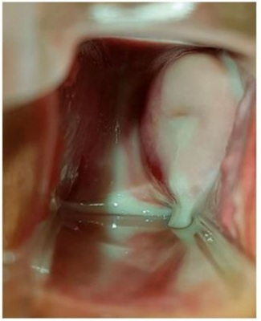
A Azitromicina oral em dose única para o casal.
B Metronidazol oral por 7 dias e abstinência sexual.
C Cetoconazol oral por 5 dias associado a metronidazol gel.
D Creme de miconazol associado com fluconazol via oral em dose única.
Questão 690 · Ginecologia · Tratamento · 4000197191Paciente de 24 anos, nuligesta, procura emergência com fortes dores na região pélvica de caráter progressivo, tipo cólica há mais de uma semana, associado à dispareunia, nega uso de métodos contraceptivos, não se lembra da data da última menstruação. Nega corrimento vaginal. Ao exame físico, apresenta temperatura axilar de 38.5°C. Estado geral regular desidratada +/4, hipocorada ++/4, fácies de dor. Abdome plano, ruídos hidroaéreos presentes, dor à palpação super cial e profunda nas fossas ilíacas e hipogástrio, sem abaulamentos e retrações abdominais. Giordano negativo, Blumberg negativo. Toque vaginal: dor à mobilização do colo uterino e fundo de saco de Douglas. Exame especular: colo uterino hiperemiado, presença de pequena quantidade de corrimento purulento com odor fétido. Qual o tratamento mais adequado?
A Ceftriaxona 250 mg endovenoso dose única com Azitromicina 1g oral dose única e Clindamicina 300mg oral por 7 dias.
B Ceftriaxone 250mg endovenoso dose única com Doxiciclina 100mg oral 12/12h e Metronidazol 500 mg oral de 12/12h por 14 dias.
C Ciprofloxacino 500mg oral dose única com Azitromicina 1g oral dose única.
D Azitromicina 1g oral com Doxiciclina 100mg oral 12/12h com Metronidazol 250 mg oral, 8/8h, por 14 dias.
Questão 691 · Sangramento uterino anormal · 4000197190Mulher nulípara, 45 anos, com história de ciclos menstruais irregulares e diagnóstico de síndrome de ovários policísticos, obesidade e intolerância à glicose. Refere longos períodos de amenorreia intercalados por uxo menstrual intenso de longa duração, cerca de 15 dias, com coágulos e cólicas incapacitantes. Realizou exame sico sem achados relevantes e ao Ultrassom transvaginal observou-se aumento do volume uterino, formato globoso, assimetria entre paredes uterinas, heterogeneidade difusa, cistos anecóicos no miométrio e estrias radiadas partindo do endométrio irregular. Assinale a assertiva correta quanto à mais provável combinação de diagnósticos para esse padrão de sangramento uterino anormal.
A Hiperplasia endometrial e Adenomiose.
B Mioma submucoso e Atrofia endometrial.
C Endometrio decidualizado e Pólipo endometrial.
D Pólipo endometrial e Adenocarcinoma de endometrio.
Questão 692 · Ginecologia · Tratamento do endometrioma de ovário · 4000197189Mulher de 28 anos, nuligesta, com queixa de dor pélvica crônica cíclica e dispareunia. Realizou ultrassonogra a pélvica transvaginal com os seguintes achados: cisto de ovário com paredes espessas, septado, arredondado, margens regulares, ecotextura homogênea, com ecos internos difusos de baixa ecogenicidade e débris. Foi orientada a repetir o exame em 3 meses e apresentou as mesmas imagens. Diante desse quadro clínico e imagem, qual o diagnóstico provável e conduta adequada?

A Endometrioma ovariano, laparoscopia para capsulectomia.
B Cisto Lúteo ovariano, conduta expectante e repetir imagem.
C Carcinoma ovariano, histerectomia total com salpingooforectomia bilateral.
D Endometrioma ovariano, laparoscopia para drenagem e cauterização de focos de endometriose.
Questão 693 · Ginecologia · 4000197188Mulher 23 anos, G1P1A0, assintomática, sexarca aos 14 anos, compareceu à consulta para receber o resultado da citologia em meio líquido realizada há 2 meses. Ao entregar-lhe o exame cujo resultado foi compatível com Lesão intraepitelial de alto grau (LIEAG), o ginecologista esclareceu qual seria a orientação diante desse resultado. Qual a conduta adequada diante do resultado de LIEAG na situação exposta?
A “Ver e Tratar”.
B Repetir a citologia de imediato.
C Repetir citologia com seis meses.
D Colposcopia e biópsia se achado anormal.
Questão 694 · Pólipos uterinos · 4000197187Mulher 38 anos, G5P4A1, sem comorbidades. Apresenta ciclos menstruais regulares, mensais de 4 dias de duração. Há 6 meses com sangramento anormal intermenstrual intermitente, pequena quantidade, aspecto escuro “em borra de café” que ocorre até durante 5 dias depois do uxo menstrual habitual. Ao Ultrassom transvaginal apresentou a seguinte imagem (ver figura abaixo): Assinale a alternativa que corresponde ao diagnóstico mais provável da paciente.

A Atrofia endometrial.
B Pólipo endometrial.
C Endométrio decidualizado.
D Adenocarcinoma de Endométrio.
Questão 695 · Tratamento não hormonal dos sintomas climatéricos · Ginecologia · 4000197186Paciente, 50 anos, G1P1A0, compareceu à consulta ginecológica de rotina queixando-se de ondas de calor, acordando na madrugada com sudorese noturna. Relatou ainda ciclos menstruais irregulares nos últimos seis meses. Nos antecedentes negou comorbidades, mas referiu mãe com CA de mama aos 50 anos e solicitou ao ginecologista um tratamento não hormonal para alívio desses sintomas. Qual terapia não hormonal seria adequada diante da situação exposta?
A Inibidor de recaptação da serotonina.
B Fitoestrogênio ou Fitoesteroides.
C Atividade física e perda de peso.
D Antidepressivos tricíclicos.
Questão 696 · Ginecologia · 4000197185Germana, 32 anos, G0P0, comparece para consulta com seu parceiro Gabriel, 42 anos, que tem dois lhos de relacionamento prévio. Estão há 18 meses tentando engravidar sem sucesso. Que exames devem ser solicitados para a avaliação inicial deste casal?
A FSH, TSH, prolactina e histerossalpingografia.
B FSH, estradiol, histerossalpingografia e cariótipo.
C TSH, prolactina, histerossalpingografia e espermograma.
D FSH, hormônio antimulleriano, histerossalpingografia, espermograma e cariótipo.
Questão 697 · Dor mamária mastalgia · 4000197184Mulher, 30 anos, nuligesta, sem antecedentes de câncer de mama, vem à consulta do ambulatório de ginecologia com queixa de mastalgia e sensação de "edema nas mamas" antes e durante o período menstrual. Quadro presente há 3 anos, mas piorou nos últimos 6 meses, o que gerou sua preocupação. Tem ciclos menstruais regulares e como método anticoncepcional faz uso do DIU de cobre. Exame físico das mamas sem anormalidades. Diante da queixa desta paciente, qual a conduta a ser tomada?
A Sugestão de medidas comportamentais e indicação de retirada do DIU de cobre.
B Solicitação de mamografia e indicação de prática de exercícios físicos e uso de sutiã esportivo.
C Orientação verbal sobre benignidade dos sintomas e prescrição de óleo de prímula e vitamina E.
D Orientação verbal sobre o caráter autolimitado dos sintomas e a ausência de relação com o câncer de mama.
Questão 698 · Adenomiose · 4000197183Mulher de 40 anos, multípara, com sangramento menstrual abundante e prolongado, associado à dismenorreia que antecede a menstruação e persiste até uma semana após o uxo menstrual. Ao exame ginecológico, encontramos útero aumentado uniformemente de volume, amolecido e doloroso. Realizou Ultrassonogra a transvaginal com a imagem apresentada a seguir. Diante do quadro clínico e da imagem do ultrassom, qual a hipótese diagnóstica mais provável?

A Adenomiose.
B Pólipo endometrial.
C Leiomioma submucoso.
D Gestação ectópica em cicatriz de cesárea.
Questão 699 · Mastologia · 4000197182Trata-se de parturiente de 38 semanas e 6 dias, em franco trabalho de parto. Apresentavam-se 4 contrações de 30 segundos em 10 minutos, amniorrexe espontânea com 4 cm de dilatação e feto com boa vitalidade. Evolui com aumento da queixa dolorosa (score 10/10) quando se mantêm 4 contrações a cada 10 minutos e a cervicodilatação é de 7 cm, com feto em apresentação cefálica em plano 0 de De Lee. Nesse momento, a parturiente solicita anestesia. Com base nesse caso clínico, assinale a alternativa correta, acerca da analgesia de parto.
A Durante o trabalho de parto, a parturiente deve manter jejum, pois é alto o risco de síndrome de Mendelson após a raquianestesia.
B É contraindicação absoluta para analgesia raquidiana plaquetopenia abaixo de 50.000/mm³.
C Após realização de analgesia combinada a raquianestesia e peridural com colocação de cateter peridural, se houver recrudescimento de dor com escore entre 5 e 6, é indicado banho de imersão antes de nova dose de anestésico.
D É dispensável punção venosa para a realização de bloqueio regional em parturiente de risco habitual.
E É necessário, pelo menos, 5 cm de dilatação para que seja indicada a analgesia de parto.
Questão 700 · Mastologia · 4000197181Paciente G2PC1, com idade gestacional de 39 semanas, tem diabetes gestacional com controle metabólico inadequado e vitalidade fetal preservada, sendo indicada a interrupção da gestação por indicação materna. Com base nesse caso clínico, assinale a alternativa correta.
A Se o índice de Bishop for igual a 3, deve-se realizar preparo do colo com o método Krause.
B Se o índice de Bishop for igual a 7, deve-se realizar preparo do colo com misoprostol e indução do trabalho de parto.
C Se o índice de Bishop for igual a 7, deve-se realizar preparo do colo com método Krause e indução do trabalho de parto.
D Se o índice de Bishop for igual a 3, deve-se realizar preparo do colo com misoprostol e indução do trabalho de parto.
E Como paciente tem cesariana prévia, é contraindicada indução do parto, devendo-se optar por nova cesariana.
Questão 701 · Mastologia · 4000197180A respeito da avaliação ultrassonográfica fetal na gestação, assinale a alternativa correta.
A Medida da transluscência nucal acima de 2,5 cm é indicativo de trissomia do 21.
B O primeiro trimestre é o momento ideal para rastreamento de aneuploidias.
C Medidas da transluscência nucal abaixo de 2,5 afastam trissomia do 21.
D A avaliação da regurgitação da valva tricúspide deve ser realizada no 2° trimestre junto do ecocardiograma.
E O segundo trimestre é o momento ideal para rastreamento de aneuploidias.
Questão 702 · Mastologia · 4000197179Com relação às lacerações de trajeto do canal de parto, assinale a alternativa correta.
A A laceração de 2º grau acomete a mucosa e a pele do períneo.
B A laceração de grau 3b acomete ambos os esfíncteres anais — externo e interno.
C A laceração de grau 3a acomete menos de 50% da espessura do esfíncter anal externo rompida.
D A episiotomia de rotina reduz a incidência de lacerações de trajeto de 3º e 4º graus.
E A laceração de 1º grau acomete a mucosa e a musculatura superficial do períneo.
Questão 703 · Mastologia · 4000197178Paciente com atraso menstrual de 4 semanas e 6 dias realizou teste de gravidez de farmácia, com resultado positivo. Tem antecedentes de irregularidade menstrual. Há 3 dias, apresenta queixa de sangramento vaginal e cólica abdominal de moderada intensidade. Por esse motivo, buscou pronto atendimento, e o exame físico revelou pressão arterial (PA) de 120 mmHg × 80 mmHg. Exame especular: colo epitelizado com orifício puntiforme e moderada quantidade de sangramento coletado no fundo de saco. Ao toque vaginal, revelou-se o seguinte: colo longo, fechado, levemente doloroso à mobilização, útero intrapélvico de difícil palpação bimanual, devido ao tecido celular subcutâneo aumentado. Com base nesse caso clínico, assinale a alternativa correta.
A Deve ser solicitado Bhcg sérico quantitativo e ultrassonografia endovaginal.
B O exame físico mostra sangramento de pequena monta e colo impérvio. Trata-se de ameaça de abortamento, e a gestante deve receber alta, ser afastada do trabalho, devendo ser mantida em repouso, sem relações sexuais.
C Uma vez diagnosticado o abortamento, a paciente deve ser internada e submetida a curetagem uterina.
D Não há necessidade de realização da ultrassonografia endovaginal, pois o atraso menstrual é recente e não é possível identificar saco gestacional.
E Uma vez diagnosticada a gravidez ectópica, a paciente deve ser imediatamente submetida a laparotomia exploradora.
Questão 704 · Mastologia · 4000197177Paciente com 19 anos de idade, G4PN2A1 e idade gestacional de 21 semanas e 2 dias, comparece a consulta de pré-natal com queixa de ardor vulvovaginal intenso há 4 dias. Refere presença de “feridinhas” na entrada da vagina há 2 dias e cita que não se trata do primeiro episódio. Ao exame físico, apresenta múltiplas lesões exulceradas com halo hiperemiado, extremamente dolorosas em pequeno lábio esquerdo. Com base nesse caso clínico, assinale a alternativa correta.
A Uma vez que houve doença ativa durante a gestação, é indicada cesariana, a fim de evitar transmissão vertical, mesmo sem lesão ativa no momento do parto.
B Não é indicada cesariana em casos de lesão ativa no momento do parto, devido ao baixo risco de contaminação, e a via de parto indicada é obstétrica.
C Na presença de lesão ativa de herpes labial no momento do parto, deve ser indicada cesariana, pois a eliminação viral a distância aumenta a chance de transmissão vertical.
D Indica-se terapia supressora com aciclovir via oral a partir da 36ª semana até o momento do parto.
E A amamentação é contraindicada na presença de lesão genital ativa durante o parto, pois a eliminação viral a distância pode ser transmitida pelo leite materno.
Questão 705 · Câncer de mama na gestante · 4000197176Os cânceres de mama e de colo uterino são as doenças malignas mais comuns durante a gravidez. Quanto ao câncer de mama na gestação, assinale a alternativa correta.
A O câncer de mama associado à gravidez é definido como aquele diagnosticado durante a gestação e a lactação.
B O câncer de mama associado à gravidez tem melhor prognóstico quando comparado ao diagnosticado fora da gestação.
C O câncer de mama associado à gravidez é definido como aquele diagnosticado durante a gestação, excetuando o período de lactação.
D A supressão da lactação nos casos de câncer de mama associada à gravidez melhora o prognóstico.
E O câncer de mama associado à gravidez é definido como aquele diagnosticado durante a gestação, lactação ou no primeiro ano após o parto.
Questão 706 · Mastologia · 4000197175Primigesta, 41 semanas, está em trabalho de parto. Ao exame físico, apresenta PA de 110 mmHg × 60 mmHg, altura uterina de 40 cm, dinâmica uterina de 6 contrações de 60 segundos, cervicodilatação de 8 cm e BCF de 144. A altura da apresentação estava em plano +1 de De Lee. Há 20 minutos refere quadro de dor abdominal intensa, difusa, por todo o abdome, principalmente à palpação do útero associado a aumento do sangramento vaginal e bradicardia fetal. Foi realizado toque vaginal, que mostrou dilatação total e bolsa íntegra e tensa. Após amniotomia, houve piora do sangramento. Ao toque vaginal após amniotomia, a apresentação fetal encontrava-se alta e móvel. Assinale a alternativa que apresenta o diagnóstico correto nesse caso clínico.
A descolamento prematuro de placenta
B rotura uterina
C rotura de vasa prévia
D placenta prévia
E laceração do colo uterino
Questão 707 · Mastologia · 4000197174A respeito da utilização da ultrassonografia na sala de parto, assinale a alternativa correta.
A A avaliação do ducto venoso com Doppler colorido prediz sofrimento fetal agudo.
B Trata-se do método padrão-ouro para identificar a etiologia da hemorragia em casos de hemorragia pós-parto.
C O Doppler colorido umbilical tem alta sensibilidade na detecção do sofrimento fetal agudo.
D A avaliação transvaginal é realizada para determinar a altura da apresentação.
E Seu uso é de valia na determinação da variedade de posição e descida da apresentação antes da realização de parto fórceps.
Questão 708 · Mastologia · 4000197173Gestante de 36 semanas e 2 dias realizou ultrassonogra a que mostra feto em situação longitudinal e apresentação pélvica. Tem desejo de parto normal e foi oferecida a manobra de versão cefálica externa. Com base nesse caso clínico, assinale a alternativa correta.
A O parto normal é contraindicado, pois a taxa de complicações graves, como descolamento prematuro de placenta, é alta.
B A presença de placenta posterior reduz a chance de sucesso do procedimento.
C O polidrâmnio é uma contraindicação relativa para a manobra.
D Nuliparidade reduz a chance de sucesso da manobra.
E Gestantes Rh negativo não necessitam de profilaxia anti-D com imunoglobulina, uma vez que ela será administrada pós-parto.
Questão 709 · Mastologia · 4000197172Parturiente no período expulsivo apresenta desaceleração persistente da frequência cardíaca fetal, com BCF variando entre 50 e 80 há 5 minutos, sendo indicada utilização de fórceps para ultimação do parto. Ao exame físico, revela-se o seguinte: toque vaginal com dilatação total, bolsa rota, apresentação cefálica fletida em +3 de De Lee e variedade de apresentação OET. Com base nesse caso clínico, assinale a alternativa que apresenta o fórceps a ser utilizado, a rotação e a direção da rotação, respectivamente.
A fórceps Kielland, rotação de 45° em sentido anti-horário.
B fórceps Simpson, rotação de 45° em sentido horário.
C fórceps Kielland, rotação de 90° em sentido anti-horário.
D fórceps Kielland, rotação de 90° em sentido horário.
E fórceps Simpson, rotação de 90° em sentido anti-horário.
Questão 710 · Mastologia · 4000197171Quanto às relações útero-fetais, assinale a alternativa que contém, respectivamente, a apresentação fetal, seu ponto de referência e linha de orientação.
A cefálica defletida de 2º grau: glabela, sutura metópica.
B pélvica: sacro, linha bitrocantérica.
C cefálica defletida de 1º grau: bregma, sutura sagital.
D cefálica fletida: lambda, sutura coronal.
E cefálica defletida de 3º grau: naso, linha facial.
Questão 711 · Terapia hormonal · 4000197170A respeito da terapia hormonal da menopausa (TH), assinale a alternativa correta.
A Segundo o estudo
B A TH é eficiente no tratamento dos sintomas vasomotores, mas não há evidência de benefícios na prevenção de osteoporose e de fraturas.
C A TH tem efeito importante no interesse sexual, excitação, orgasmo ou desejo sexual hipoativo na menopausa, sendo essas queixas suficientes para indicação da terapia.
D A TH aumenta o risco para câncer de mama e, por isso, deixou de ser indicada nos últimos anos.
E O uso de TH vias oral e transdérmica em baixa dose parece ser seguro com relação ao risco de doenças cardiovasculares em mulheres na transição da menopausa e nos primeiros anos (menos de 10 anos) após o início da menopausa.
Questão 712 · Biópsias da mama · 4000197169Uma paciente vem ao consultório com mamogra a evidenciando lesão não palpável nodular de aproximadamente 1,2 cm, classificada como BIRADS 4. A ultrassonogra a consegue identi car a lesão e mantém a classificação. Com relação a esse caso hipotético, assinale a alternativa que apresenta a melhor conduta diante da situação apresentada.
A biópsia por agulha grossa guiada por mamografia.
B biópsia por agulha grossa guiada por ultrassonografia.
C punção por agulha fina guiada por mamografia.
D punção por agulha fina guiada por ultrassonografia.
E biópsia excisional.
Questão 713 · Tratamento cirúrgico · 4000197168Uma paciente de 57 anos de idade possui diagnóstico de câncer de mama, com estadiamento inicial T1N0M0. Após quimioterapia, houve a redução do tumor de 6 cm para 2 cm. Nesse caso, no tratamento cirúrgico, deve-se submeter a paciente a
A esvaziamento axilar e cirurgia conservadora da mama sem necessidade de radioterapia adjuvante.
B esvaziamento axilar e mastectomia radical.
C biópsia do linfonodo sentinela e mastectomia radical.
D biópsia do linfonodo sentinela e cirurgia conservadora da mama com radioterapia adjuvante.
E apenas exérese da lesão.
Questão 714 · Dismenorreia · 4000197167Uma paciente de 16 anos de idade é levada pela mãe ao ginecologista. A mãe refere que levou a lha, pois a garota “simula" dores fortes durante a menstruação para poder faltar às aulas e a mãe quer que um pro ssional da saúde oriente a lha de que não existem dores assim na adolescência, pois a lha tem até um exame de ultrassonogra a transvaginal sem alterações. A jovem moça, envergonhada, a rma que as dores são reais e que medicações comuns como antiespasmódicos não têm efeito suficiente. Durante a anamnese, a paciente explica que o quadro é constante e que começou, aproximadamente, 6 meses após a menarca, aos 11 anos; refere ter ciclos regulares de 32 a 35 dias, com 7 dias de sangramento (4 a 5 dias com bastante volume). Além disso, a paciente é tabagista (3 anos-maço) e tem IMC de 18,2. A dor, em geral, começa no primeiro dia da menstruação e permanece por 48 a 72 horas, com melhora após esse período. A paciente nega dispareunia. Ela é sedentária e tem um parceiro fixo há 2 anos. Com relação a esse caso clínico, assinale a alternativa correta.
A Deve-se solicitar uma ressonância nuclear magnética, necessária para o diagnóstico de endometriose.
B Deve-se suspeitar de dismenorreia secundária e solicitar tomografia.
C Deve-se suspeitar de dismenorreia primária e iniciar tratamento empírico com antinflamatório não esteroidal e(ou) contraceptivo oral além de orientar a paciente a iniciar exercícios físicos regulares e cessar o tabagismo.
D Deve-se orientar que o tabagismo não está relacionado à dismenorreia.
E Deve-se orientar que a mãe está correta e encaminhar a filha a um psiquiatra.
Questão 715 · Mastologia · 4000197166Uma paciente de 32 anos de idade vai à consulta ambulatorial referindo medo de não engravidar, pois apresenta uma alteração no exame de imagem, que foi solicitado por rotina. A paciente tem um parceiro que tem um lho de outro relacionamento e ela tem história de um abortamento no relacionamento atual. Ambos tentam engravidar há 1 ano com relações sexuais desprotegidas duas vezes por semana. No laudo da ultrassonografia, é identificado um leiomioma submucoso na parede posterior do útero, classificação 1 pela FIGO (30% intramural). A mesma refere que notou aumento do volume do sangramento no último ano, mas nega dores. Diante dessa situação, o médico deve orientar a paciente afirmando que
A esse tipo de mioma não pode interferir na fertilidade do casal.
B a lesão pode interferir na fertilidade, mas que o sangramento aumentado não pode estar relacionado ao mioma.
C caso os outros exames de investigação de infertilidade do casal estejam normais, uma laparoscopia será necessária para retirada da lesão.
D caso os outros exames de investigação de infertilidade do casal estejam normais, uma histeroscopia cirúrgica será necessária para retirada da lesão.
E caso os outros exames de investigação de infertilidade do casal estejam normais, uma laparotomia cirúrgica será necessária para retirada da lesão.
Questão 716 · Tratamento do sangramento uterino anormal agudo · 4000197165Uma paciente de 22 anos de idade se apresenta no pronto-socorro de ginecologia e apresenta-se hipocorada e sem conseguir manter conversa com o médico plantonista por muito tempo, pois se mostra muito cansada. A mãe, que a levou ao pronto-socorro, refere que a paciente não tem comorbidades e que esse é o quarto ciclo menstrual com quantidade excessiva de sangramento e que, dessa vez, a paciente chegou a desmaiar em casa. Ao exame, apresenta-se hipocorada, 3+/4, com pressão arterial de 80 x 50 e com frequência cardíaca de 116 bpm. O exame especular evidencia grande quantidade de sangramento se exteriorizando pelo orifício externo do colo uterino. Com relação a esse caso clínico, assinale a alternativa que apresenta a melhor conduta inicial para essa situação.
A manter a paciente em observação para avaliar a evolução do sangramento.
B prescrever pílula contraceptiva para controle do sangramento e dar alta à paciente.
C internar a paciente para estabilização clínica, solicitar exames laboratoriais e entrar com contraceptivo oral combinado com 30 microgramas de etinilestradiol a cada 6 horas até parar o sangramento.
D internar a paciente para estabilização clínica, solicitar exames laboratoriais e entrar com contraceptivo oral combinado com 15 microgramas de etinilestradiol a cada 6 horas até parar o sangramento.
E internar a paciente e realizar curetagem uterina para controle do sangramento, pois, hoje em dia, não se utiliza mais estrogênio em alta dose.
Questão 717 · Climatério · 4000197164Uma paciente de 56 anos de idade vem ao consultório com queixa de sangramento vaginal em pequena quantidade há 3 meses. Ela refere que entrou na menopausa aos 50 anos de idade. Possui IMC de 20.3 e é praticante de exercícios físicos regulares. Ela também se queixa de secura vaginal e refere que controlou os fogachos com cimicífuga racemosa nos primeiros anos após a menopausa. Com relação a essa situação hipotética, assinale a alternativa que apresenta a melhor conduta para o caso.
A tranquilizar a paciente, pois a principal causa de sangramento vaginal após a menopausa não é câncer, e solicitar exames laboratoriais.
B examinar a paciente e, não encontrando a fonte do sangramento, solicitar histeroscopia diagnóstica.
C orientar a paciente de que provavelmente não se trata de um caso de câncer e apenas observar a evolução do quadro.
D solicitar ressonância nuclear magnética para diagnosticar provável câncer de endométrio e possíveis metástases.
E examinar a paciente e, não encontrando a fonte do sangramento, solicitar ultrassonografia transvaginal para avaliação do endométrio.
Questão 718 · Mastologia · 4000197163Uma paciente de 24 anos de idade, recém-formada em educação física, queixa-se de ausência de ciclos menstruais há 6 meses. Seus ciclos foram sempre regulares com 28 dias de intervalo e de duração de 4 a 5 dias com uxo moderado. A paciente refere que, no período nal da faculdade, além de estudar arduamente para as provas, começou um treinamento intenso para uma competição de corrida que faria fora do país. A prova atlética aconteceu há 2 meses, mas a paciente optou por continuar com o treinamento intenso, pois sente-se “viciada" nos treinos. Antes de solicitar outros exames, o médico pede à paciente que reduza os treinos e que observe o sangramento. Acerca desse caso hipotético, assinale a alternativa correta.
A Caso a paciente volte a sangrar, a etiologia mais provável é o de amenorreia hipotalâmica funcional, que pode ser causada pela prática de exercícios extenuantes e por situações de estresse importantes.
B Caso a paciente volte a sangrar, a etiologia mais provável é o de síndrome de Sheehan.
C Caso a paciente volte a sangrar, a etiologia mais provável é a síndrome dos ovários policísticos.
D Trata-se de um caso de amenorreia primária, comum em atletas de ponta.
E Não poderia se tratar de amenorreia hipotalâmica funcional, pois, obrigatoriamente, haveria um tumor associado.
Questão 719 · Mastologia · 4000197162Um paciente de 36 anos de idade se apresenta em consulta ambulatorial para orientação sobre contracepção, pois, recentemente, leu na internet sobre alguns riscos do uso de contracepção hormonal oral combinada, da qual faz uso. A paciente é tabagista (15 anos-maço e começou a fumar aos 26 anos de idade), é hipertensa controlada, está com sobrepeso e apresenta enxaqueca sem aura. Nesse caso, a melhor alternativa seria orientar a paciente, afirmando que ela
A apresenta dois fatores que contraindicam o método contraceptivo: enxaqueca sem aura com idade superior a 35 anos de idade, tabagismo com mais de 15 cigarros por dia associado à idade maior que 35 anos de idade e que deve interromper o método atual para escolher outro.
B deve ficar tranquila, pois pílulas anticoncepcionais são isentas de riscos, exceto para quem tem história de trombose.
C apresenta contraindicações para o uso do hormônio, entre eles, o sobrepeso.
D pode continuar a usar o método escolhido, pois a enxaqueca sem aura sozinha não contraindica o uso dos contraceptivos.
E apresenta quatro fatores que contraindicam o método contraceptivo: enxaqueca sem aura com idade superior a 35 anos de idade, tabagismo com mais de 15 cigarros por dia associado à idade maior de 35 anos de idade, hipertensão arterial e sobrepeso, que deve interromper o uso do método.
Questão 720 · Fístulas genitourinárias · 4000197161Uma paciente de 46 anos de idade vai à consulta ambulatorial de pós-operatório 14 dias depois de realizar histerectomia total abdominal por sangramento aumentado refratário a tratamento clínico, quadro causado por múltiplos miomas. A paciente refere estar se recuperando bem, mas a rma que tem perdido urina sem perceber. O médico, então, infunde azul de metileno diluído em soro siológico na bexiga da paciente com auxílio de uma sonda vesical e observa, no exame especular, imediatamente após infusão do líquido, o conteúdo azulado no canal vaginal. Com relação a esse caso, a melhor conduta a ser tomada diante da situação relatada é
A solicitar estudo urodinâmico para diagnóstico definitivo da perda de urina.
B confirmar fístula uretero-vaginal e indicar tratamento cirúrgico imediato.
C confirmar fístula vesico-vaginal e internar a paciente para tratamento cirúrgico de urgência.
D confirmar fístula uretero-vaginal e indicar uretrocistografia miccional para uma melhor programação cirúrgica.
E confirmar fístula vesico-vaginal e solicitar uretrocistoscopia para localizar a fístula e determinar sua extensão e distância em relação aos ureteres para programar a melhor técnica de abordagem cirúrgica.
Questão 721 · Mastologia · 4000197160Uma paciente vai ao pronto-socorro de ginecologia queixando-se de dor na região vulvar, há pouco mais de 1 dia, associada à queimação vulvar durante quando urina. Refere que nunca passou por algo assim. Sente-se, também, prostrada, como se estivesse com gripe, mas sem alterações das vias aéreas. A paciente conta também que, há poucos dias, notou algumas vesículas na mesma região, que sumiram, aparecendo essas lesões dolorosas. A paciente possui relacionamento xo há 2 anos, com uso de condom nas relações sexuais e passou por momento estressante nos últimos dois meses, pois havia perdido o emprego. Ao exame, o médico verifica três pequenas úlceras, palpa pequenos linfonodos inguinais e não observa nenhum outro sinal inflamatório vulvar ou descarga vaginal. Acerca desse caso, assinale a alternativa correta.
A É possível fazer o diagnóstico clínico de provável primoinfecção por herpes genital e realizar o tratamento com aciclovir 400 mg uma vez ao dia por 6 meses.
B É possível fazer o diagnóstico clínico de provável primoinfecção por herpes genital e realizar o tratamento com aciclovir 400mg três vezes ao dia por 7 a 14 dias.
C É impossível fechar o diagnóstico com essas informações e deve-se, portanto, solicitar cultura do raspado da lesão ulcerada.
D Trata-se de um quadro de clamídia em paciente com fator de risco comportamental para infecções sexualmente transmissível e, tanto a paciente como o parceiro, devem ser tratados.
E trata-se de um quadro de clamídia e deve-se tratar a paciente com doxiciclina 100 mg, via oral, 1 comprimido, 2 vezes ao dia, por 21 dias.
Questão 722 · Câncer de ovário · 4000197159Uma paciente de 67 anos de idade vai a um retorno após consulta ambulatorial de rotina. A paciente é assintomática, mas no laudo da ultrassonogra a, lê-se “imagem anecoica com septos grosseiros e algumas vegetações de, aproximadamente, 4 cm no maior diâmetro, localizada no ovário esquerdo”. Frente a essa imagem, o médico solicita CA-125, cujo resultado é de 162 U/mL (valor de referência de normalidade: abaixo de 35 U/mL). A melhor hipótese diagnóstica para esse caso é que se trata de um(a)
A neoplasia de origem do seio endodérmico do ovário.
B neoplasia, provavelmente, benigna do ovário.
C neoplasia de origem epitelial do ovário.
D carcinoma de células germinativas.
E coriocarcinoma.
Questão 723 · Mastologia · 4000197158Em consulta de oncologia, uma paciente de 35 anos de idade apresenta-se com estadiamento IA2 (invasão do estroma acima 3,0 mm e com, no máximo, 5,0 mm de profundidade) para carcinoma escamoso de colo de útero. A paciente refere desejo de engravidar. Nesse caso, a melhor conduta cirúrgica seria realizar
A exenteração pélvica.
B traquelectomia radical com biópsia do linfonodo sentinela e/ou linfadenectomia pélvica (considerar tratamento completo, caso não haja linfonodos comprometidos).
C conização.
D histerectomia radical.
E conização com biópsia do linfonodo sentinela e/ou linfadenectomia pélvica (considerar tratamento completo, caso não haja linfonodos comprometidos).
Questão 724 · Mastologia · 4000197157A respeito da realização do pneumoperitôneo nas cirurgias laparoscópicas em pacientes com laparotomia prévia, assinale a alternativa correta.
A O ponto de Jain é uma porta de entrada não umbilical, no nível L4, 10-13 cm lateral ao umbigo.
B Pela técnica de Palmer, a punção é realizada 3 cm abaixo da margem subcostal esquerda na linha hemiclavicular, 4 cm lateral ao umbigo.
C O ponto de Lee-Huang é uma porta de entrada não umbilical, estando localizado 5 cm abaixo do umbigo na linha média.
D O sétimo espaço intercostal esquerdo pode ser utilizado, desde que não haja distensão gástrica, massas abdominais superiores, hepatoesplenomegalia ou cicatrizes abdominais superiores.
E A técnica aberta na linha mediana é obrigatória nesses casos.
Questão 725 · Mastologia · 4000197156Quanto à esplenectomia laparoscópica, assinale a alternativa correta.
A A esplenose pode ocorrer como resultado do autotransplante de tecido esplênico durante a esplenectomia laparoscópica em pacientes com púrpura trombocitopênica imune.
B É necessária a utilização de 5 trocartes tanto na técnica em decúbito dorsal, em posição de próclive de 30 graus, quanto na técnica em decúbito lateral direito completo, com fixação do corpo em canivete e Trendelemburg a 15 graus.
C Uma limitação da esplenectomia laparoscópica é a dificuldade de detectar a presença de baços acessórios que estão presentes em aproximadamente 60% dos pacientes com doença hematológica.
D Obesidade, doença hematológica maligna, hipertensão portal e esplenomegalia são considerados contraindicações para a realização de esplenectomia laparoscópica.
E A embolização pré-operatória da artéria esplênica deve ser utilizada quando há esplenomegalia como forma de reduzir o tamanho do baço, sangramento operatório e o tempo cirúrgico.
Questão 726 · Mastologia · 4000197155Em relação aos pólipos colorretais, julgue os itens a seguir. I. Adenoma túbulo-viloso tem de 25% a 75% de componente viloso. II. Adenoma viloso tem de 35% a 40% de chance de abrigar adenocarcinoma. III. Displasia não adenomatosa associada a doença inflamatória intestinal (lesão tipo DALM) apresenta alto risco para carcinoma. IV. Pólipos inflamatórios não requerem vigilância endoscópica. V. Pólipos sésseis serrilhados são geralmente localizados no cólon direito, de cor pálida, com bordas indistintas e recobertos por muco. Assinale a alternativa correta.
A Apenas os itens I e III estão certos.
B Apenas os itens II e V estão certos.
C Apenas os itens I, II e IV estão certos.
D Apenas os itens III, IV e V estão certos.
E Todos os itens estão certos.
Questão 727 · Mastologia · 4000197154No que se refere à técnica aberta de correção das hérnias inguinais com tela, assinale a alternativa incorreta
A As alças lateral e medial, criadas após a abertura da porção superior da tela para a confecção da passagem do funículo espermático, devem ser suturadas em posição paralela, sem o cruzamento, a fim de diminuir a chance de recidiva.
B A técnica de
C A fim de diminuir a recorrência, a tela deve ter tamanho mínimo de 6 cm × 14 cm e ultrapassar o tubérculo pubiano medialmente em 2 cm.
D Os locais mais comuns de recidivas são perto do púbis (hérnia direta) e perto do anel inguinal profundo (hérnia indireta).
E Com o processo de cicatrização, a tela diminuirá de tamanho, pela contração dos tecidos cicatrizados, expondo, assim, o local a uma possível falha, o que favorecerá a recidiva.
Questão 728 · Mastologia · 4000197153Assinale a alternativa correta.
A No trígono cisto-hepático (triângulo de Calot), podem ser encontradas a artéria cística, a veia porta e a artéria hepática direita.
B A veia gonadal esquerda desemboca na veia esplênica, enquanto a veia gonadal direita desemboca na veia cava inferior.
C A arcada de Riolan une o ramo esquerdo da artéria cólica média ao ramo ascendente da cólica esquerda, formando o ponto isquêmico de Sudeck.
D O íleo, em relação ao jejuno, apresenta maior calibre, parede mais espessa, menos nódulos linfoides (placa de Peyer), maior vascularização e vasos retos mais longos.
E O setor dorsal ou lobo caudado do fígado (lobo de Spiegel) é um setor independente, recebendo fluxo portal exclusivamente do ramo direito, e sua drenagem venosa se faz diretamente por ramos que drenam para as veias hepáticas.
Questão 729 · Mastologia · 4000197146Quanto ao megaesôfago chagásico, assinale a alternativa
A Endoscopia digestiva alta é fundamental para a confirmação diagnóstica, além de avaliar o grau de inflamação da mucosa e afastar a presença de lesões neoplásicas.
B Na radiografia simples de tórax, pode-se suspeitar da presença de um megaesôfago avançado.
C De acordo com a classificação de Rezende, as ondas terciárias são evidenciadas nos graus II e III.
D As complicações da mucosectomia incluem sangramento excessivo durante retirada da mucosa e submucosa e complicações pleuropumonares; no entanto, a incidência de tais complicações é significativamente menor do que na esofagectomia.
E Para casos não avançados, opta-se pela cardiomiotomia de Heller, ao passo que, em casos avançados, opta-se pela esofagectomia subtotal com esofagogastroplastia transmediastinal posterior, mucosectomia ou cirurgia de Serra Doria.
Questão 730 · Mastologia · 4000197145A respeito do câncer gástrico, julgue os itens a seguir. I. O principal método de estadiamento é a tomogra a computadorizada de tórax, abdome e pelve, sendo a tomogra a por emissão de pósitrons (PET-CT) e a ressonância nuclear magnética (RNM) utilizadas apenas em casos selecionados. II. A análise dos marcadores de tumor séricos (CA19.9, CEA, CA 72.4) deve ser realizada em todos os casos de câncer gástrico. III. Nos tumores estádio IB-III (T2-4 qualquer N), está indicada a disseção linfonodal D2. IV. Nos tumores do tipo difuso, recomenda-se margem proximal de, pelo menos, 8 cm. V. A ressecção endoscópica está indicada nos tumores adenocarcinoma bem diferenciados, restritos a mucosa (T1a), menores que 2 cm no seu maior eixo e não ulcerados. Estão certos apenas os itens
A I, II e IV.
B I, III e V.
C I, IV e V.
D II, III e IV.
E II, III e V.
Questão 731 · Mastologia · 4000197144Paciente de 23 anos de idade, do sexo feminino, HIV positivo, com CD4: 600 e carga viral negativa, com queixa de sangramento anal sem dor, compareceu a uma consulta. Ao exame proctológico, apresentava três lesões condilomatosas de 1 cm cada, localizadas no canal anal. A partir desse caso clínico, considere as opções terapêuticas apresentadas nos itens a seguir. I. ácido tricloroacético a 90% por 4 semanas; caso a paciente não apresente melhora, indicar ressecção e cauterização no centro cirúrgico. II. ressecção e cauterização no centro cirúrgico. III. podo lina a 25% tópico por 4 semanas; caso a paciente não apresente melhora, indicar ressecção e cauterização no centro cirúrgico. IV. imiquimode por 8 a 12 semanas; caso a paciente não apresente melhora, indicar ressecção e cauterização no centro cirúrgico. V. vacinação quadrivalente para HPV, imiquimode por 8 a 12 semanas e, caso a paciente não apresente melhora, ácido tricloroacético a 90%. São opções terapêuticas adequadas para esse caso clínico apenas as apresentadas nos itens
A I e II.
B I e IV.
C II e V.
D III e V.
E III e IV.
Questão 732 · Tratamento da endometriose do trato intestinal · 4000197143Compareceu a uma consulta paciente de 24 anos de idade, com diagnóstico de endometriose, com colonoscopia mostrando abaulamento extrínseco no retossigmoide, ressonância magnética com endometriose profunda retovaginal e laparoscopia com implante único na transição retossigmoide de 2,5 cm. Nesse caso hipotético, a melhor conduta intraoperatória é realizar
A excisão de toda a espessura da parede juntamente com a lesão e sutura primária transversal.
B retossigmoidectomia com anastomose primária término-terminal.
C ressecção da lesão sem abertura da mucosa e sutura primária longitudinal em dois planos.
D retossigmoidectomia com colostomia à Hartmann.
E excisão de toda a espessura da parede juntamente com a lesão com margem de segurança de 2 cm, sutura primária transversal e ileostomia de proteção.
Questão 733 · Mastologia · 4000197142Um paciente com estadiamento de adenocarcinomade reto baixo de 3 cm a 1 cm da linha pectínea cT3N0M0 apresentou resposta clínica completa após radioterapia e quimioterapia. Com base nesse caso clínico, assinale a alternativa correta, considerando a melhor orientação para esse paciente.
A A amputação abdominoperineal com colostomia definitiva é o padrão de tratamento.
B O paciente está curado, devendo ser acompanhado com toque retal, colonoscopia, CEA e ressonância magnética.
C O paciente deverá ser acompanhado com toque retal, colonoscopia, CEA e PET/CT.
D O paciente apresentou resposta clínica completa, mas não patológica, devendo ser submetido a excisão transanal, sem necessidade de colostomia definitiva, com grande possibilidade de evoluir com pouca dor e boa cicatrização.
E O paciente deverá ser submetido a ressecção local com técnicas minimamente invasivas, como microcirurgia transanal endoscópica (TEM) ou cirurgia minimamente invasiva transanal (TAMIS).
Questão 734 · Mastologia · 4000197141Um paciente de 60 anos de idade comparece a uma consulta com otorrinolaringologista com queixa de “voz estranha” há 3 meses, com piora progressiva. Refere que, há duas semanas, está com “um pouco de falta ar”, que está mais cansado e tem que dormir quase sentado. Refere apresentar odinofagia. O exame de naso broscopia revela tumoração em epiglote, ulcerada, de aproximadamente 2 cm, que se movimenta em direção à luz glótica, com efeito de válvula, sem extensão para as demais estruturas da laringe, tendo sua mobilidade preservada. Pescoço apresenta linfonodos cervicais bilaterais, esféricos, endurecidos, de 3 cm, móveis e indolores. Com base nesse caso clínico, assinale a alternativa correta, quanto à melhor conduta diagnóstica para esse paciente.
A Indica-se a traqueostomia de urgência, pois o paciente apresenta quadro avançado do tumor com obstrução de via aérea, sem possibilidade de tratamento.
B Deve-se realizar uma tomografia computadorizada do pescoço, para estabelecer o diagnóstico patológico.
C Diante da paralisia da laringe, deve-se realizar uma biópsia da prega vocal.
D Nesse caso, o diagnóstico é feito por meio de uma biópsia da lesão da epiglote, que pode ser feita mediante endoscopia, havendo a possibilidade de realização de via aérea cirúrgica que assegure esse procedimento.
E Nesse caso, o diagnóstico é feito por meio de uma biópsia da lesão da epiglote e da prega vocal, que pode ser realizada mediante endoscopia, havendo a possibilidade de realização de via aérea cirúrgica que assegure esse procedimento.
Questão 735 · Mastologia · 4000197140Recém-nascido (RN) de parto vaginal, masculino, a termo, pesando 2.700 gramas, está sendo avaliado por um médico. Apgar de 8 no primeiro minuto e 9 no 5º minuto. Mãe tem 34 anos de idade e apresentou gestação complicada com polidrâmnio. No transporte para o berçário, observa-se presença de sialorreia importante, di culdade, apresentando-se acianótico; ausência de alterações em cabeça, pescoço, tronco ou extremidades. Ausculta pulmonar com murmúrio vesicular presente sem ruídos adventícios. Ausência de sopros cardíacos. Abdome ácido, escavado e sem massas palpáveis. Genitália é normal e nota-se mecônio visível no ânus que se encontra pérvio. Com base nesse caso clínico, assinale a alternativa correta.
A Há suspeita clínica inicial de atresia de esôfago com fístula traqueoesofágica, cujo diagnóstico pode ser feito por meio de radiografia simples de tórax e abdome com injeção de ar.
B Há suspeita clínica inicial de atresia de esôfago sem fístula traqueoesofágica, podendo ser confirmada pela presença de ar no abdome visibilizado na radiografia simples de tórax e abdome com injeção de ar.
C Nos casos de atresia com fístula traqueoesofágica, há distensão abdominal; ao contrário, quando não há fístula, o abdome é escavado.
D A intubação orotraqueal está indicada em todos os casos de atresia de esôfago, com ou sem fístula traqueoesofágica.
E O RN deve ser mantido em posição de Trendelenburg, nos casos em que há fístula traqueoesofágica; nas atresias sem fístula, deve-se manter decúbito lateral direito elevado.
Questão 736 · Mastologia · 4000197139Uma mulher de 25 anos de idade, envolvida em uma briga doméstica, é levada ao pronto-socorro com um ferimento por arma branca (facada) no pescoço, à esquerda. Na admissão, encontra-se normotensa, com vias aéreas pérvias, sem sinais ou sintomas de di culdade respiratória, e o exame neurológico está normal. O exame físico do pescoço revela uma única ferida de 2 cm, anterior ao músculo esternocleidomastoideo, na altura da cartilagem tireoide. Há um hematoma pulsátil com sopro associado e crepitação importante à palpação. Radiogra as simples demonstram en sema subcutâneo, sem desvio de traqueia e sem pneumotórax. Considerando esse caso clínico, assinale a alternativa correta, quanto à classificação do ferimento e à conduta mais adequada.
A A paciente apresenta ferimento penetrante em zona III, com risco de lesões em artérias, veias, nervos, laringe, traqueia e esôfago.
B A paciente apresenta ferimento penetrante em zona II, com indicação de cervicotomia imediata.
C A paciente apresenta ferimento penetrante em zona II, com estabilidade hemodinâmica, o que permite a conduta de manejo conservador seletivo.
D A paciente apresenta ferimento penetrante em transição entre zonas I e II, havendo indicação de radiologia intervencionista, pois o acesso cirúrgico nessa região é muito difícil.
E A paciente apresenta ferimento em zona II, com indicação de cervicotomia imediata e ligadura dos vasos com evidência de sangramento.
Questão 737 · Mastologia · 4000197138Quanto à hemorragia digestiva por hipertensão portal, assinale a alternativa
A As causas de hipertensão portal podem ser sinusoidais, pré-sinusoidais e pós-sinusoidais.
B Esquistossomose e cirrose são exemplos de causa sinusoidal de hipertensão portal.
C Síndrome de Budd Chiari é um exemplo de causa pós-sinusoidal de hipertensão portal.
D Hipertensão portal segmentar diz respeito a trombose da veia esplênica causando hipertensão em apenas um setor do território da circulação portal.
E Trombose das veias supra-hepáticas é um exemplo de causa pós-sinusoidal de hipertensão portal.
Questão 738 · Mastologia · 4000197137Assinale a alternativa
A Síndrome de Mallory Weiss é uma causa de hemorragia digestiva alta, e seu tratamento padrão- ouro é o endoscópico.
B Lesão de Dieulafoy diz respeito a malformações vasculares de vasos arteriais da submucosa gástrica que, expostas aos ácidos da secreção gástrica, podem erodir e causar hemorragia digestiva.
C Hemobilia é uma causa frequente de sangramento digestivo alto; ocorre através das vias biliares para o trato digestivo.
D O tratamento cirúrgico das hemorragias digestivas por lesão de Dieufaloy pode incluir a necessidade de gastrectomia.
E Gastrites erosivas hemorrágicas são causas de hemorragia digestiva, sendo que, na maioria dos casos, o sangramento é autolimitado.
Questão 739 · Mastologia · 4000197136Em relação às lesões químicas do esôfago, assinale a alternativa
A Ácidos produzem necrose de coagulação, ao passo que substâncias alcalinas produzem necrose de liquefação.
B Lesões provocadas por substâncias ácidas tendem a ser menos profundas, com seu acometimento maior em extensão, ao passo que as lesões por substâncias alcalinas causam maior comprometimento em profundidade do órgão.
C Pacientes com história de ingestão de agentes químicos alcalinos podem ter lesões concomitantes em esôfago e estômago (dupla lesão de Goni – Moreno).
D Em pacientes com lesão esofágica Zagar 2B, não se deve passar sonda enteral devido ao risco de perfuração do órgão.
E Pacientes com lesão esofágica Zagar 3B têm indicação de esofagectomia de urgência, segundo maioria da literatura especializada.
Questão 740 · Mastologia · 4000197135A respeito do tratamento das hemorragias digestivas causadas por hipertensão portal, assinale a alternativa correta.
A Tratamento cirúrgico está sempre indicado na primeira ocorrência de hemorragia digestiva alta por hipertensão portal devido a cirrose hepática.
B Tratamento endoscópico está indicado para controle do sangramento, desde que, posteriormente, seja realizado o devido procedimento cirúrgico.
C Balão esofágico deve ser usado de rotina nos casos de hemorragia digestiva alta por hipertensão portal.
D Balão esofágico deve ser insuflado com uma pressão de dois terços da pressão arterial média do paciente.
E Nunca está indicada abordagem via radiointervenção.
Questão 741 · Mastologia · 4000197134Acerca da síndrome de Fournier, assinale a alternativa
A Trata-se de uma infecção perineal acompanhada de necrose das fáscias de Buck, Scarpa e Colles.
B O tratamento envolve debridamento cirúrgico e antibioticoterapia de largo espectro.
C É obrigatória a confecção de colostomia terminal ou em alça para desvio de trânsito intestinal.
D Essa síndrome normalmente acomete pacientes com algum grau de comprometimento imunológico.
E Exames de imagem podem auxiliar o diagnóstico, mas não devem retardar o procedimento operatório, uma vez que tais pacientes podem desenvolver rapidamente choque séptico.
Questão 742 · Mastologia · 4000197133Quanto ao tratamento cirúrgico das hemorragias digestivas altas por úlceras pépticas, assinale a alternativa correta.
A Trata-se da primeira escolha para tratamento das úlceras duodenais com sangramento.
B A cirurgia realizada é sempre a gastrectomia parcial, independentemente da localização da úlcera.
C Deve ser indicada cirurgia precoce para paciente estável hemodinamicamente, uma vez que o paciente será operado em melhores condições clínicas.
D Nunca deve ser feita a reconstrução à Billroth II, devido ao alto risco de desenvolvimento posterior de neoplasia de boca anastomótica.
E Cirurgia deve ser indicada para pacientes com falha de tratamento endoscópico (impossibilidade de controlar o sangramento durante endoscopia).
Questão 743 · Mastologia · 4000197132Quanto às colecistites agudas, assinale a alternativa
A A ultrassonografia para diagnóstico da colecistite aguda apresenta boa sensibilidade e especificidade, apesar de ser um exame examinador dependente.
B A pancreatite aguda biliar é considerada um diagnóstico diferencial, devido ao quadro clínico semelhante.
C Quando há icterícia associada, deve-se considerar as hipóteses de coledocolitíase concomitante, hepatite transinfecciosa, peritonite filtrante biliar ou coleperitônio.
D O tratamento preferencial é cirúrgico, mas, em alguns casos particulares, pode-se considerar a realização de tratamento clínico.
E A etiologia é sempre biliar.
Questão 744 · Mastologia · 4000197131Acerca do tratamento cirúrgico realizado na urgência/emergência para hemorragias digestivas por hipertensão portal, assinale a alternativa correta.
A A cirurgia de escolha para tratamento na urgência é preferencialmente a cirurgia de Warren, que apresenta bons resultados quando realizada em pacientes cirróticos e esquistossomóticos.
B A derivação porto-cava calibrada não é uma escolha na urgência, devido à alta taxa de encefalopatia hepática desenvolvida pelos pacientes no pós-operatório.
C Esse tratamento pode ser indicado em casos de hemorragia digestiva alta refratária a tratamento endoscópico e balão esofágico na urgência, quando não há possibilidade de passagem de TIPS (
D A derivação mesentérico-cava não é uma opção se houver trombose da porta.
E A desconexão ázigo portal (DAPE) é a cirurgia mais indicada para tratamento na urgência de hemorragia digestiva em paciente sabidamente cirrótico.
Questão 745 · Mastologia · 4000197130Em relação às hemorragias digestivas baixas (HDB), assinale a alternativa
A A doença diverticular dos cólons é a causa mais comum em adultos.
B Em crianças, a causa mais comum de sangramento digestivo baixo é o divertículo de Meckel, cujo diagnóstico pode ser feito por meio de cintilografia com hemácias marcadas, objetivando marcação de mucosa gástrica ectópica ao estômago.
C Deve-se pensar em retites e(ou) colites actínicas em pacientes com HDB que têm antecedente de tratamento radioterápico para neoplasias de colo de útero e próstata.
D Doenças inflamatórias intestinais (Crohn e retocolite ulcerativa) e tuberculose intestinal são causas de HDB.
E Exame proctológico e colonoscopia são importantes na abordagem da HDB na urgência.
Questão 746 · Mastologia · 4000197129Assinale a alternativa correta.
A Pacientes com peritonite difusa devem ser submetidos obrigatoriamente a laparotomia mediana para permitir a adequada limpeza da cavidade abdominal.
B Em pacientes do sexo biológico feminino, na dúvida diagnóstica, a laparoscopia é uma boa via de acesso.
C Pacientes com peritonite difusa podem ser submetidos a vias de acesso localizadas (incisão de Davis ou Mc Burney), desde que sejam mantidos drenos abdominais e antibioticoterapia por, pelo menos, 14 dias.
D São indicações de drenagem na apendicite aguda o abscesso localizado, a peritonite difusa (drenos nos quatro quadrantes abdominais) e o comprometimento da base apendicular.
E Em casos de autólise do apêndice, a colectomia está sempre indicada.
Questão 747 · Mastologia · 4000197128Um paciente de 70 anos de idade compareceu ao pronto-socorro com queixa de dor abdominal em cólica, há 9 dias, com piora progressiva de sua intensidade, tendo feito uso de anti-inflamatórios não esteroidais (AINE), sem melhora. A dor apresentou piora significativa e se tornou contínua há 1 dia. Refere associação de vômitos tardios e parada da eliminação de gases e fezes ao quadro clínico no período. Foi submetido a tomogra a computadorizada de abdome que evidenciou grande distensão de alças colônicas, com ceco de diâmetro aproximado de 10 cm, região de aparente estenose em transição retossigmoide, que pode corresponder a processo neoplásico e pneumoperitônio. Com base nesse caso clínico, assinale a alternativa correta, em relação ao provável diagnóstico do paciente em questão.
A Trata-se de abdome agudo perfurativo, com provável perfuração de ceco relacionada ao uso de AINE; a conduta indicada é a laparotomia exploradora.
B Trata-se de abdome agudo obstrutivo complicado, com provável perfuração da área da neoplasia; a conduta indicada é a laparotomia exploradora.
C Trata-se de abdome agudo perfurativo, com provável perfuração da área da neoplasia; a conduta indicada é a laparotomia exploradora.
D Trata-se de abdome agudo obstrutivo complicado em alça fechada, com provável perfuração de ceco; a conduta indicada é a laparotomia exploradora.
E Trata-se de abdome agudo obstrutivo não complicado; a conduta indicada é a laparotomia exploradora.
Questão 748 · Mastologia · 4000197127Um paciente de 70 anos de idade compareceu ao pronto-socorro com queixa de dor abdominal em cólica, há 9 dias, com piora progressiva de sua intensidade, tendo feito uso de anti-inflamatórios não esteroidais (AINE), sem melhora. A dor apresentou piora significativa e se tornou contínua há 1 dia. Refere associação de vômitos tardios e parada da eliminação de gases e fezes ao quadro clínico no período. Foi submetido a tomogra a computadorizada de abdome que evidenciou grande distensão de alças colônicas, com ceco de diâmetro aproximado de 10 cm, região de aparente estenose em transição retossigmoide, que pode corresponder a processo neoplásico e pneumoperitônio. Considerando que seja indicada a laparotomia exploradora, assinale a alternativa que apresenta a conduta mais adequada no caso desse paciente.
A colectomia total
B retossigmoidectomia, colostomia à Hartmann e sutura de perfuração/laceração do ceco
C retossigmoidectomia, anastomose primária e sutura de perfuração/laceração do ceco
D colostomia em alça e sutura de perfuração/laceração de ceco
E hemicolectomia direita, ileotransverso anastomose e retossigmoidectomia à Hartmann, preservando-se o cólon transverso
Questão 753 · Inf ecção do trato urinário de repetição · Cistite · Ginecologia · 4000197057Mulher, 29 anos de idade, apresenta infecções do trato urinário de repetição (4 episódios no último ano). Vida sexual ativa. Em uso de diafragma. Nega outras comorbidades. O último episódio de cistite bacteriana foi tratado com norfloxacino por 7 dias. Qual das alternativas abaixo apresenta a conduta mais adequada?
A Prescrição diária definitrofurantoína 150mg por 90 dias por via oral.
B Orientações higiênico-dietéticas suspendendo o consumo de frutas cítricas.
C Sugerir mudança de método contraceptivo para método hormonal.
D Prescrição de lisado de E. coli nos dias que tiver relação sexual.
Questão 754 · Tratamento · Ginecologia · Tratamento · 4000197056Mulher, 79 anos de idade, refere bola na vagina há 6 meses. Também se queixa de urgência miccional e noctúria (3 episódios noturnos). Nega vida sexual há 6 meses. 4G 4 Partos normais. É hipertensa medicada com anlodipina. Ao exame ginecológico observou-se o seguinte prolapso classificado pelo POP-q: Aa +3. Ba +4. C +2 HG 6. CP 2. CVT 9. Ap +2. Ba +2. D –. Qual é a conduta mais adequada?
A Histerectomia vaginal e colpoplastia anterior.
B Fixação sacroespinhal e colpoplastia anterior.
C Colpocleise e prescrição de B3 adrenérgico.
D Prescrição de antimuscarínico seguida de promontofixação.
Questão 755 · Tumores anexiais · Ginecologia · Câncer de ovário · 4000197055Mulher, 54 anos de idade, submeteu-se a laparotomia por massa anexial de 14x13cm, de crescimento em 5 meses. Biópsia de congelação intraoperatória: neoplasia ovariana epitelial borderline do tipo seroso. Os procedimentos cirúrgicos que estão indicados sequencialmente são:
A salpingooforectomia contralateral, histerectomia, omentectomia infracólica e retirada dos implantes peritoneais.
B salpingooforectomia contralateral, histerectomia, omentectomia infracólica e linfadenectomia pélvica bilateral.
C não há necessidade de qualquer procedimento cirúrgico adicional, se a neoplasia estiver restrita ao ovário já retirado.
D salpingooforectomia contralateral sem necessidade de histerectomia, omentectomia ou linfadenectomia pélvica.
Questão 756 · Fator tuboperitoneal · 4000197054Mulher, 32 anos de idade, eumenorreica, primípara com gestação seguida de laqueadura tubária há 4 anos, encontra-se em novo relacionamento desejando gestar. Qual é a conduta inicial mais adequada?
A Agendar videolaparoscopia e, se aspecto favorável, realizar recanalização no mesmo ato cirúrgico.
B Solicitar espermograma e realizar histerossalpingografia para decisão entre reversão da laqueadura ou fertilização in vitro.
C Orientar o casal sobre o baixo índice de sucesso de reversão de laqueadura após 1 ano do procedimento.
D Realizar histerossonografia e histerossalpingografia para avaliar cotos tubários para a programação cirúrgica.
Questão 757 · Ginecologia · 4000197053Mulher, 67 anos de idade, deu entrada no PS com anemia aguda, por perda sanguínea vaginal. Exame ginecológico: massa exteriorizando-se pelo orifício cervical cuja biópsia revelou carcinoma seroso do endométrio. Ressonância magnética: extensa formação neoplásica ocupando toda cavidade uterina, comprometendo até serosa em íntimo contato com reto distal, linfonodomegalias pélvicas bilaterais. Qual é a conduta oncológica mais adequada?
A Histerectomia radical + salpingooforectomia bilateral.
B Quimioterapia + radioterapia e reavaliação para histerectomia + salpingooforectomia.
C Imunoterapia com pembrolizumabe (anti PD-L1).
D Histerectomia radical com linfadenectomia pélvica e retossigmoidectomia.
Questão 758 · Diagnóstico · 4000197052Mulher, 45 anos de idade, apresenta lesão intraepitelial de alto grau em citologia oncótica de colo uterino. Colposcopia: orifícios glandulares espessados, sinal da margem interna e mosaico grosseiro. É realizada biópsia e o anatomopatológico mostra ser carcinoma espinocelular invasivo. Qual é a conduta mais adequada?
A Conização do colo uterino para estadiamento da lesão.
B Histerectomia total com avaliação intraoperatória de linfonodos pélvicos.
C Ressonância magnética da pelve para planejamento cirúrgico.
D Histerectomia radical (cirurgia de Wertheim-Meigs).
Questão 759 · Ginecologia · 4000197051Mulher, 46 anos de idade, submeteu-se a histerectomia subtotal abdominal por sangramento uterino. Anátomopatológico: leiomiomas uterinos sem atipias associado a sarcoma do estroma endometrial de baixo grau, receptor estrogênio positivo, margem ístmica comprometida. Qual é a conduta mais adequada?
A Retirada de colo residual, ooforectomia bilateral e avaliação intraoperatória de lesões peritoneais e/ou linfonodais suspeitas.
B Realização de ressonância magnética, e se houver evidência de doença residual encaminhar para quimioterapia.
C Retirada de colo residual, ooforectomia bilateral e linfadenectomia pélvica e para aórtica.
D Realização de quimioterapia sistêmica com ifosfamida e doxorrubicina.
Questão 760 · Ginecologia · 4000197050Qual dos cuidados pré-operatórios são recomendados pelo protocolo ERAS?
A Alta hospitalar precoce, estímulo à parada do tabagismo e consulta pré-operatória com equipe de enfermagem.
B Abreviação de jejum, sedestação precoce, profilaxia contra náuseas e vômitos pós-operatórios.
C Retirada precoce de sondas e drenos, antibioticoprofilaxia por até 48 horas pós cirurgia e prescrição de opióides para controle da dor pós- operatória.
D Profilaxia para tromboembolismo venoso, preparo pré-operatório de cólons e prescrição de opióides para controle da dor pós-operatória.
Questão 761 · Ginecologia · Terapia hormonal · 4000197049Os efeitos dos estrogênios na menopausa, promovem a regulação do tônus vascular o aumento da biodisponibilidade do óxido nítrico e a inibição do crescimento das células do músculo liso vascular. Algumas usuárias de terapia hormonal oral combinada, no entanto, desenvolvem hipertensão arterial, possivelmente:
A por reduzir a síntese hepática de angiotensina com redução da aldosterona e inibição do sistema renina- angiotensina-aldosterona.
B por concorrer com a aldosterona em sua ação renal de maneira dose-dependente, promovendo efeito natriurético.
C pela retenção de sódio e água e pela via de administração oral com primeira passagem hepática.
D pelo efeito antimineralocorticoide com capacidade de contrabalançar o aumento da aldosterona.
Questão 762 · Radioterapia · Tratamento adjuvante · Tratamento neoadjuvante · 4000197048Mulher, 45 anos de idade, com diagnóstico de carcinoma invasivo não especial grau histológico 3, subtipo molecular HER2 puro, apresenta tumor de 6 cm em mama direita e linfonodo axilar endurecido e aumentado. Foi indicada quimioterapia associada à terapia- alvo e teve resposta clínica completa. A seguir, realizou quadrantectomia com pesquisa do linfonodo sentinela e congelação intraoperatória que mostrou margens cirúrgicas livres e dois linfonodos negativos para metástases. Porém, o resultado patológico definitivo confirmou ausência de tumor residual na mama e detectou metástase de 3mm em um único linfonodo. Qual é a conduta mais adequada?
A Mastectomia simples.
B Linfonodectomia axilar.
C Mastectomia radical.
D Exérese do linfonodo sentinela.
Questão 763 · Descarga papilar · 4000197047Mulher, 38 anos de idade, refere uxo papilar espontâneo a esquerda há 4 meses. O exame físico identi cou uxo hemorrágico unilateral monoductal. O estudo ultrassonográ co encontrou lesão sólida intraductal de 27mm. Qual é a conduta mais adequada?
A Core biópsia.
B Mamotomia.
C Setorectomia.
D Mastectomia.
Revisar: possível letra faltando em enunciado
Questão 764 · Ginecologia · Perf uração uterina · 4000197046Mulher, 60 anos de idade, apresentou sangramento uterino anormal tendo sido indicada histeroscopia, na qual observou-se pólipo endometrial de 2 cm. Foi indicada histeroscopia cirúrgica para polipectomia. Durante o procedimento, houve perfuração do fundo uterino com ressectoscópio durante uso de energia bipolar e foram observadas alças intestinais pelo fundo uterino. Qual é a conduta mais adequada?
A Suspensão do procedimento e observação por 48 horas para reavaliação da paciente.
B Laparotomia exploradora para avaliação de alças intestinais e lesões térmicas e reparo de lesão uterina.
C Suspensão do procedimento, administração de uterotônicos e observação por 48 horas para reavaliação da paciente.
D Videolaparoscopia para avaliação da cavidade abdominal e realização de histerectomia total.
Questão 765 · Tratamento não hormonal dos sintomas climatéricos · 4000197045Mulher, 56 anos de idade, menopausa aos 49 anos, com antecedente de câncer de mama in situ há 5 anos, procura o ambulatório com queixa de fogachos e secura vaginal há 1 ano. Qual é a alternativa correta quanto ao manejo dos sintomas?
A A terapia hormonal está contraindicada pois a paciente está fora da janela de oportunidade e pelo risco oncológico.
B Uso do estrogênio vaginal como primeira escolha para melhora da atrofia genital e fogachos, pois o câncer de mama era in situ.
C Terapia hormonal com estrogênio associado ao progestagênio, uma vez que a paciente tem útero e não teve câncer de mama invasivo.
D Uso de antidepressivos recaptadores de serotonina, para melhora dos fogachos, e hidratante vaginal para atrofia genital.
Questão 766 · Ginecologia · 4000197044Mulher, 38 anos de idade, eumenorreica, G2P2, último parto há 5 anos, tem segunda união com homem vasectomizado de 40 anos, pai de três lhos da primeira união, o mais novo com 8 anos. Os exames da mulher mostram hormônio antimülleriano 0,8 ng/mL (referência > 2,0 ng/mL); FSH basal 11 U/L (referência < 10,6 UI/L). O espermograma mostrou azoospermia com volume seminal de 4 mL. A alternativa terapêutica que produz maior efetividade de sucesso de gravidez é:
A reversão da vasectomia com coito programado por 12 meses.
B fertilização in vitro com aspiração de espermatozoides dos epidídimos.
C inseminação intrauterina com sêmen de doador.
D inseminação intrauterina com extração de espermatozoides dos epidídimos.
Questão 767 · Roteiro diagnóstico · 4000197043Adolescente, 16 anos de idade, apresenta amenorréia primária e refere dor pélvica há 6 meses com piora progressiva e aumento do volume abdominal há 1 mês. Apresenta desenvolvimento sexual secundário normal. Qual é o diagnóstico mais provável?
A Agenesia Mulleriana.
B Tumor ovariano funcionante.
C Hímen imperfurado.
D Pseudo-hemafroditismo masculino.
Questão 768 · Ginecologia · 4000197042Gestante IIIG IIP, 35 anos de idade, com idade gestacional de 39 semanas e 4 dias, procura a maternidade com queixa de perda de líquido vaginal há cerca de 8 horas. Exame físico: AU = 35 cm, BCF = 144 bpm, DU ausente. Exame ginecológico: especular com presença de líquido claro coletado no fundo de saco vaginal. Toque: colo grosso, posterior, pérvio para 1 polpa digital justa, cefálico. Cardiotocogra a: feto reativo. Antecedentes obstétricos: parto cesáreo, no termo, há 4 anos, por apresentação pélvica. Parto vaginal, há 2 anos, no termo. Pré-natal atual sem intercorrências. Qual é a melhor alternativa quanto ao método de indução?
A Análogo de prostaglandina E1 via vaginal.
B Ocitocina endovenosa.
C Análogo de prostaglandina E2 via vaginal.
D Balão cervical.
Questão 769 · Ginecologia · 4000197041Parturiente de 39 semanas, 26 anos de idade, encontra-se no período expulsivo do parto, sob analgesia por duplo bloqueio. A rotura das membranas ocorreu espontaneamente há 2 horas, com saída de líquido claro com grumos. A apresentação é cefálica e a altura da apresentação está no plano zero de De Lee. A cardiotogra a revela desacelerações variáveis recorrentes, com recuperação lenta da frequência cardíaca. Qual é a conduta mais adequada?
A Mudança de decúbito, infusão de glicose a 50% e utilização de expansores plasmáticos.
B Mudança de decúbito, hiperoxigenação materna e utilização de expansores plasmáticos.
C Orientar puxo materno, hiperoxigenação materna e prescrição de terbutalina subcutânea.
D Orientar puxo materno, infusão de glicose a 50% e prescrição de terbutalina subcutânea.
Questão 770 · Ginecologia · 4000197040Gestante, 37 anos de idade, realizou teste não invasivo para pesquisa de trissomias (NIPT), com 10 semanas, que evidenciou alto risco para trissomia do cromossomo 18 (fração fetal de 5%). Realizou com 12 semanas ultrassonogra a morfológica, cujos principais achados foram: CCN 64mm, BCF 158 bpm, TN 2,0 mm, ON presente (2,2 mm) e ducto venoso com onda “a” positiva. Qual é a conduta mais adequada?
A biopsia de vilo corial com 12 semanas.
B repetir o NIPT.
C amniocentese com 16 semanas.
D reavaliar no morfológico do 2° trimestre.
Questão 771 · Índice de Pearl · 4000197039A tabela abaixo apresenta o risco de gestação em diferentes métodos contraceptivos em 100 mulheres ano, considerando o uso típico e o perfeito. Identi que os métodos representados pelas letras A, B, C e D, respectivamente.
A Pílula combinada, implante de etonogestrel, injetável, DIU hormonal.
B Pílula combinada, DIU hormonal, injetável, implante de etonogestrel.
C Injetável, DIU hormonal, pílula combinada, implante de etonogestrel.
D Injetável, implante de etonogestrel, pílula combinada, DIU hormonal.
Questão 772 · Ginecologia · 4000197037Parturiente primípara de 41 semanas, sob efeito de analgesia de parto (duplo bloqueio), encontra-se no período expulsivo há 3 horas, mantendo frequência cardíaca fetal normal. O toque vaginal revela apresentação cefálica em +2 De Lee, com bossa 3+, cavalgamento dos parietais e mínima descida da apresentação com os puxos maternos. Há suspeita de que a variedade de posição seja OS. Qual é a conduta mais adequada?
A Uso do fórcipe.
B Uso do vácuo extrator.
C Manter os puxos por mais 1 hora.
D Cesárea.
Questão 773 · Ginecologia · 4000197035O teste não invasivo para pesquisa de anomalias cromossômicas no sangue materno baseia- se no DNA livre oriundo do trofoblasto. Quais são os fatores que têm maior influência na fração fetal?
A Idade gestacional e obesidade.
B Idade gestacional e tabagismo.
C Obesidade e uso de biotina.
D Tabagismo e uso de biotina.
Questão 774 · Ginecologia · 4000197034FullPiers é ferramenta importante na tomada de decisões diante de pacientes com pré-eclâmpsia grave, objetivando predizer complicações. Quais são as variáveis utilizadas no modelo?
A Plaquetas, creatinina, TGP e pressão arterial diastólica.
B Proteinúria, DHL, TGO e saturação de O₂.
C Plaquetas, creatinina, TGO e saturação de O₂.
D Proteinúria, DHL, TGP e pressão arterial diastólica.
Questão 775 · Ginecologia · 4000197031Gestante de 34 semanas é admitida com quadro de iminência de eclâmpsia e indicação de sulfatação. No serviço estão disponíveis apenas ampolas de 10 mL de sulfato de magnésio a 20%. Para que seja feita a dose de ataque seguindo o esquema de Zuspan, serão necessários:
A 20 mL
B 8 mL
C 40 mL
D 12 mL
Questão 776 · Câncer de colo uterino na gestação · 4000197030Gestante de 14 semanas, apresenta tumor vegetante de 3 cm no colo do útero comprometendo fundo vaginal e paramétrios laterais. Biópsia mostrou tratar-se de carcinoma espinocelular. RNM não evidenciou outros achados. Realizou ultrassom morfológico de 1° trimestre sem alterações e deseja preservar a gestação. Qual é a conduta mais adequada?
A Traquelectomia e linfadenectomia pélvica.
B Radioterapia imediata associada à quimioterapia sensibilizante.
C Quimioterapia neoadjuvante na gestação até maturidade fetal.
D Expectante na gestação com antecipação do parto na 32a semana gestacional.
Questão 777 · Ginecologia · 4000197029Qual das alternativas abaixo indica o diagnóstico de restrição do crescimento fetal (RCF) precoce e/ou tardia, segundo o Consenso Delphi?
A Peso fetal abaixo do percentil 10 após 32 semanas caracteriza RCF tardia.
B Doppler alterado da artéria umbilical e da artéria cerebral média detecta RCF precoce.
C Doppler alterado da artéria uterina acompanhado de queda de dois quartis do peso após 32 semanas, indica RCF tardia.
D Circunferência abdominal abaixo do percentil 3 faz diagnostico de RCF precoce e tardia.
Questão 778 · Miomatose uterina · 4000197028Gestante inicia pré-natal com 5 meses de atraso menstrual com altura uterina de 36 cm. Ao ultrassom, confirmada idade gestacional de 22 semanas e identi cado nódulo miometrial de 15cm de diâmetro, com aspecto heterogêneo, sólido-cístico. Relata que, logo após o atraso menstrual, notou crescimento abrupto do volume abdominal, associado a dor moderada em hipogástrio. No momento, encontra-se assintomática. Qual é a conduta mais adequada?
A Bióspia percutânea da massa com intuito de excluir malignidade.
B Expectante na gestação, controle de prematuridade, parto via obstétrica.
C Antecipação do parto com 34 semanas, cesárea, histerectomia puerperal.
D Laparotomia imediata para ressecção do nódulo, cesárea eletiva no termo.
Revisar: possível letra faltando em enunciado
Questão 779 · Prognóstico · 4000197027Paciente, 60 anos, apresenta diagnóstico de adenocarcinoma de endométrio e será submetida a tratamento cirúrgico. Qual é o critério que confere pior prognóstico a este tipo de neoplasia?
A Mutação p53.
B Presença de receptor estrogênio.
C Mutação POLE.
D Padrão endometrioide.
Questão 780 · Ginecologia · 4000197026Paciente, 28 anos, nuligesta, apresenta diagnóstico de câncer de colo uterino. Deseja manter a possibilidade d e gestação futura. Considerando que a neoplasia apresenta 1,8 cm de diâmetro, qual das informações melhor favorece a indicação de cirurgia preservadora de fertilidade?
A Tumor neuroendócrino.
B Máximo de um linfonodo comprometido.
C Invasão linfovascular sem linfonodo comprometido.
D Carcinoma espinocelular.
Questão 781 · Ginecologia · 4000197025Paciente, 27 anos, assintomática, realiza exame ginecológico para rastreamento. Nuligesta, ciclos menstruais regulares e uso alternado de preservativo e tabela como contracepção. O exame clínico especular identifica conteúdo vaginal habitual, colo epitelizado, teste de Schiller negativo. A pesquisa de HPV foi negativa. Qual a estratégia adequada para o seguimento desta paciente?
A Poderá ficar até 5 anos sem fazer teste de HPV ou Papanicolaou.
B Deverá manter Papanicolaou anual.
C Repetir teste de HPV na mudança de contactante sexual.
D Seguimento anual com teste de HPV.
Questão 782 · Tratamento cirúrgico · 4000197024Paciente, 60 anos, será submetida a linfadenectomia tradicional, como parte do tratamento cirúrgico de adenocarcinoma de endométrio. Qual é a referência anatômica de extensão superior para esta dissecção linfonodal retroperitonial?
A Bifurcação das artérias ilíacas.
B Vasos renais.
C Artéria mesentérica inferior.
D Artéria mesentérica superior.
Questão 783 · Tratamento cirurgico · 4000197023Paciente, 25 anos, será submetida à laparoscopia para miomectomia. Qual é o motivo para se estabelecer a pressão intra-abdominal de CO₂ em 15 mmHg?
A Menor comprometimento do retorno venoso.
B Menor dose tóxica do CO₂.
C Melhor afastamento das alças intestinais.
D Melhor fração de excreção pulmonar de excesso de CO₂.
Questão 784 · Tratamento cirurgico · 4000197022Paciente, 36 anos, será submetida à ressecção histeroscópica de mioma submucoso. O cirurgião utilizará alça de ressecção de corrente monopolar. Qual é o meio de distensão da cavidade uterina mais adequado?
A Glicerina.
B Soro fisiológico.
C Glicina.
D Água destilada.
Questão 785 · Ginecologia · 4000197021Paciente, 25 anos, com cirrose hepática auto-imune. Deseja contracepção. Qual o método contraceptivo mais adequado para esta paciente?
A Injetável mensal.
B Injetável progestogênio.
C Anel vaginal.
D Adesivo.
Questão 786 · Ginecologia · 4000197020Paciente, 40 anos, submetida à cirurgia para carcinoma espinocelular de colo uterino, com ressecção d e paramétrio bilateralmente, sem preservação do plexo hipogástrico. Qual é a principal complicação esperada no pós-operatório?
A Diarreia por perda de controle esfincteriano.
B Polaciúria por relaxamento colo vesical.
C Incontinência urinária por extravasamento.
D Perda de sensibilidade perineal.
Questão 787 · Anatomia do trato genital f eminino · 4000197019Durante a cirurgia de histerectomia, o cirurgião observa distorção da anatomia pélvica decorrente de aderências por endometriose. Qual o reparo anatômico que pode auxiliar a identificação do trajeto ureteral?
A Dissecção lateral ao infundíbulo pélvico.
B Dissecção do espaço vésico-uterino.
C Dissecção do septo reto-vaginal.
D Dissecção da origem da artéria umbilical obliterada.
Questão 788 · Dor mamária mastalgia · 4000197018Paciente, 34 anos, refere mastalgia pré-menstrual com limitação às suas atividades diárias. Qual é o tratamento mais adequado?
A Tamoxifeno.
B Levonorgestrel.
C Estinil estradiol.
D Isoflavona.
Questão 789 · Dor mamária mastalgia · 4000197017Paciente, 54 anos, menopausa aos 50 anos, em terapia hormonal estroprogestativa por via oral. Durante o exame clínico, observa-se espessamento em quadrante supero-lateral de mama direita (mama contralateral sem achados palpatórios; ambas as axilas sem achados palpatórios). Mamogra a realizada há 2 anos (Birads 2). Qual é a conduta mais adequada neste momento?
A Suspender terapia hormonal e indicar biópsia excisional.
B Manter terapia hormonal atual e solicitar mamografia.
C Suspender terapia hormonal e solicitar mamografia.
D Manter terapia hormonal e indicar mamotomia.
Questão 790 · Diagnóstico · 4000197016Paciente, 28 anos, menarca aos 12 anos, refere estar há 3 anos tentando engravidar. Refere 2 uxos menstruais nos últimos 12 meses. Exame clínico geral apresenta índice de Ferriman 9; genitália normal; especular sem achados anormais; toque vaginal com útero com mobilidade preservada, volume habitual, regiões anexiais sem achados anormais. Qual o per l laboratorial compatível com a principal hipótese diagnóstica?
A FSH 33,5 mUI/mL; prolactina 45,3 ng/mL; LH 24,5 mUI/mL; cortisol 8,7 mg/mL; testosterona total 22 ng/mL.
B FSH 3,9 mUI/mL; prolactina 15,3 ng/mL; LH 12,5 mUI/mL; cortisol 6,7 mg/mL; testosterona total 72 ng/mL.
C FSH 1,2 mUI/mL; prolactina 11,3 ng/mL; LH 2,5 mUI/mL; cortisol 9,6 mg/mL; testosterona total 12 ng/mL.
D FSH 0,9 mUI/mL; prolactina 3,3 ng/mL; LH 0,5 mUI/mL; cortisol 0,7 mg/mL; testosterona total 68 ng/mL.
Questão 791 · Ginecologia · 4000197015Paciente, 40 anos, refere sangramento genital excessivo durante a menstruação. Nuligesta, não utiliza método contraceptivo por estar planejando gravidez. Ciclos menstruais com duração de 10 dias, com eliminação de coágulos, e intervalo de 25 dias. Exame geral descorada ++/4+; FC 102 bpm; FR 12 ipm; PA 100X60 mmHg. Ao exame clínico ginecológico, exame especular com presença de sangramento ativo em pequena quantidade, colo epitelizado. Ao toque vaginal, útero aumentado em 4 vezes, bocelado, móvel e indolor. O exame ultrassonográ co mostra vários nódulos compatíveis com leiomiomas, sendo os dois maiores de 7 cm de diâmetro intramural (FIGO 4) fúndico e de 4 cm e componente submucoso (FIGO 2). Qual é a conduta adequada neste momento?
A Histeroscopia.
B Medroxiprogesterona injetável.
C Goserelina subcutânea.
D Embolização.
Revisar: possível letra faltando em enunciado
Questão 792 · Tratamento clínico · 4000197014Paciente, 29 anos, nuligesta, uso de preservativo, refere que apresenta ciclos menstruais com cólica desde a adolescência, com piora progressiva. Ao exame clínico, especular com colo epitelizado, conteúdo vaginal habitual. Ao toque vaginal, útero retrovertido, móvel e indolor, regiões anexiais com aumento bilateral por tumoração de consistência cística. A ultrassonogra a pélvica sugere endometrioma de 2,5 cm à direita e 2,0 cm à esquerda. Dosagem de hormônio antimulleriano 1,1 ng/mL. Qual é a conduta inicial mais adequada?
A Valerato estradiol e levonorgestrel.
B Tibolona.
C Letrozol.
D Dienogeste.
Questão 793 · Rastreamento mamográf ico · 4000197013Paciente, 46 anos, mantém ciclos menstruais regulares, marido vasectomizado, antecedente de 2 gestações e 2 partos normais. Refere irmã com diagnóstico de hiperplasia ductal mamária aos 55 anos e outra irmã com diagnóstico de câncer de mama aos 58 anos. Qual a melhor estratégia de rastreamento?
A Ultrassonografia mamária a cada 2 anos.
B Mamografia a cada 2 anos.
C Ressonância magnética a cada 2 anos.
D Mamografia associada a ultrassonografia anualmente.
Questão 794 · Ginecologia · 4000197012Paciente, 42 anos, refere sangramento genital em pequena quantidade, contínuo. Ao exame clínico ginecológico, especular com presença de lesão vegetativa e friável em colo uterino. Ao toque vaginal, útero amolecido, volume aumentado, com tumoração endurecida ocupando o colo uterino e fórnices vaginais; toque retal com abaulamento de parede anterior do reto e limitação na avaliação dos paramétrios. Biópsia da lesão com diagnóstico de carcinoma invasivo escamoso cervical. Considerando os achados clínicos, qual é a conduta mais adequada?
A Embolização tumoral com quimioterápico.
B Histerectomia com linfadenectomia pélvica e parametrectomia.
C Histerectomia com colpectomia parcial e linfadenectomia pélvica.
D Radioterapia pélvica e braquiterapia.
Questão 795 · Ginecologia · 4000197011Paciente, 16 anos, com antecedente de gravidez há 1 ano, interrompida. Apresenta ciclos menstruais regulares, sexualmente ativa, uso eventual de preservativo. Apresenta antecedente de febre reumática tratada com penicilina benzatina semestral e faz acompanhamento por lesão mitral leve. Ao exame clínico, corada, FC 80 bpm, FR 12 ipm, PA 140x90 mmHg. Qual é a conduta mais adequada?
A Dispositivo intrauterino cobre/prata.
B Dispositivo intrauterino levonorgestrel.
C Implante subdérmico etonorgestrel.
D Contraceptivo valerato estradiol e dienogeste.
Questão 796 · Ginecologia · 4000197010Paciente, 28 anos, realiza exames ginecológicos de rotina, sem queixas. Nuligesta, usuária de contraceptivo hormonal oral combinado. O exame clínico ginecológico apresenta especular com ectrópio 0,5 cm em ectocérvice, teste de Schiller positivo na referida região, realizada biópsia cujo resultado foi de lesão intraepitelial cervical de baixo grau. Refere que já apresentou o mesmo diagnóstico em citologia realizada há 3 anos. Qual é a conduta mais adequada?
A Vacina contra HPV.
B Cauterização a laser.
C Aplicação de ácido tricloroacético 90%.
D Acompanhamento periódico semestral.
Questão 797 · Ginecologia · 4000197009Paciente, 17 anos, refere não ter apresentado menstruação até a presente data. Ao exame clínico, apresenta IMC 24, desenvolvimento mamário Tanner 3; pili cação Tanner 5; genital externo normal, hímen integro e perfurado. Mãe refere bom desempenho escolar. Ultrassom pélvico com útero de 23 cm³, ovários identi cados com 2 cm³; ausência de cistos ou tumorações. Dosagem laboratorial: FSH 5,7 mUI/mL; L H 0,3 mUI/mL; prolactina 12 ng/dL. Realizou investigação etiológica com infusão de gonadorrelina e dosagem de LH, após uma hora, com valor de 6,9 mUI/mL. Qual é a melhor hipótese diagnóstica?
A Puberdade constitucional.
B Insuficiência ovariana prematura.
C Pan-hipopituitarismo.
D Insensibilidade hormonal periférica.
Questão 798 · Ginecologia · 4000197008Paciente, 58 anos, refere perda de urina. Menopausa aos 45 anos sem terapia hormonal. Refere que a perda ocorre quando carrega peso e também em decorrência de vontade súbita, sem tempo de chegar ao banheiro; além de acordar várias vezes à noite para urinar. Apresenta antecedente de 2 gestações com 2 partos cesárea. Ao exame clínico, genitais externos com pili cação diminuída, perda de pregueamento mucoso vaginal, sem procidência de paredes vaginais às manobras de esforço; especular colo epitelizado, conteúdo vaginal habitual. Toque vaginal útero pequeno, móvel, indolor, regiões anexiais sem alterações. Qual é o tratamento inicial mais adequado?
A Estrogênio tópico e fisioterapia.
B Laserterapia e hidratante vaginal.
C Hidratante vaginal e gabapentina.
D Mini
Questão 799 · Mastologia · 4000197007Homem de 65 anos queixa-se de dor progressiva ao mastigar há 4 meses, com piora no último mês. Atualmente consegue apenas ingerir alimentos pastosos. Neste período, procurou o pronto-socorro duas vezes para controle da dor. Em uso de dipirona e mor na de horário, com melhora parcial. Perda de 8 kg desde o início dos sintomas. Antecedentes: tabagista ativo, 80 anos.maço; etilista. Nega outras comorbidades. Os achados do exame clínico são mostrados abaixo. Caso a biópsia da lesão confirme a hipótese diagnóstica mais provável, selecione a alternativa que contém os exames complementares que seriam indicados e o tratamento recomendado para este caso.

A O principal exame a ser solicitado é a tomografia cervical. O tratamento de escolha é quimioterapia.
B Não são necessários exames complementares. A conduta recomendada para o caso é a eliminação de fatores de risco, como o tabagismo.
C Devem ser solicitados nasofibrolaringoscopia, endoscopia digestiva alta e tomografia computadorizada de face, pescoço e tórax. O tratamento de escolha é cirúrgico.
D Deve-ser realizar pesquisa de HPV e tomografia computadorizada cervical. O tratamento de escolha pode ser cirúrgico ou radioterapia.
Questão 800 · Mastologia · 4000197006Mulher de 83 anos com antecedentes de hipertensão arterial e diabetes, apresentava lesão de 0,4 cm em re gião malar direita, há 6 meses. Foi submetida à biópsia excisional, com o seguinte resultado anatomopatológico: Tipo histológico – melanoma extensivo super cial. Margens cirúrgicas periféricas e profunda – coincidentes com a lesão. Espessura máxima (Breslow): 1,9 mm. Não foram detectadas ulceração, microsatelitose, invasão angiolinfática, invasão perineural e regressão. Considerando o resultado da biópsia, selecione a alternativa com a conduta recomendada.
A Embora tenha indicação de ampliação de margens e esvaziamento cervical, devido à idade avançada e à presença de comorbidades, o melhor tratamento a ser realizado é a radioterapia.
B Deve-se realizar a ampliação de margens em 1 a 2 cm, associada à pesquisa de linfonodo sentinela.
C Está indicada a ampliação de margens em 1 cm, associada ao esvaziamento cervical.
D Não é necessária nenhuma conduta adicional no momento, uma vez que a lesão já foi totalmente ressecada, porém, pelo alto risco, a paciente deve realizar seguimento oncológico a cada 12 meses para avaliar presença de recidivas ou novas lesões.
Questão 801 · Mastologia · 4000197005Assinale a alternativa que faz referência a estruturas que pertencem exclusivamente à supraglote.
A Bandas ventriculares, valécula e epiglote.
B Aritenoide, área pós-cricoide e ádito laríngeo.
C Prega vocal, ventrículo e pecíolo da epiglote.
D Prega ariepiglótica, aritenoide e banda ventricular.
Questão 802 · Mastologia · 4000197004Sobre a epidemiologia do câncer de cabeça e pescoço, assinale a alternativa correta.
A Os indivíduos do sexo masculino são os mais afetados e o câncer de boca é o tipo mais prevalente na população brasileira, cuja incidência ainda é crescente mesmo com a conscientização da população quanto aos fatores de risco.
B O HPV tem comprovada relação na carcinogênese dos tumores da orofaringe e já é o principal fator etiológico envolvido na gênese dos tumores dessa topografia em todo o mundo.
C O tabagismo e o etilismo ainda são os fatores de risco mais preponderantes e o combate a esses maus hábitos não deve ser incentivado durante o tratamento, para que o paciente não apresente quadro de abstinência que possa atrasar ou interromper a terapêutica.
D As mulheres são preferencialmente acometidas pelo câncer da nasofaringe que não tem relação com o tabagismo e o etilismo, menos frequentes na parcela da população com este histórico.
Questão 803 · Mastologia · 4000197003Mulher de 43 anos apresenta história com 6 meses de evolução: cansaço, dores musculares difusas, irritação, choro fácil, palpitações, tremores de extremidades e aumento do hábito intestinal. Os familiares também notaram emagrecimento e impressão de aumento de volume na região anterior do pescoço. Exame clínico: bom estado geral, corada, eupneica, não agitada FC 100 bpm, PA 120x80 mmHg. Exoftalmo e positivos. Aumento difuso cervical anterior com apagamento da fúrcula e dos contornos dos músculos esternocleidomastoideos. À palpação, glândula tireoide aumentada difusamente em cerca de 3 vezes o tamanho normal, móvel à deglutição, sem nódulos caracterizáveis. Assinale a alternativa que contém o diagnóstico clínico provável e a conduta recomendada.
A Tireotoxicose em bócio difuso. Introduzir beta bloqueador ou similar para controle da manifestação periférica do hipertireoidismo e medicamento anti-tireoidiano; prosseguir investigação com exames laboratoriais (hormônios tireoidianos, anticorpos anti-tireoidianos, TRAB) e exames de imagem.
B Doença de Graves com hipertireoidismo descompensado; a paciente encontra-se em tempestade tireotóxica. Internar para tratamento clínico urgente com medicação anti-tireoidiana para evitar possíveis eventos decorrentes da taquiarritmia cardíaca.
C Hipertireoidismo em doença de Plummer. Internar para tratamento definitivo com radioiodoterapia ou com tratamento operatório.
D Tireotoxicose em doença de Graves. Prosseguir a investigação com USG, cintilografia com Tecnécio e os seguintes exames laboratoriais: T4 livre, TSH e anticorpo anti-receptor de TSH, anticorpo anti-peroxidase, anticorpo anti-tireoglobulina, hemograma completo, função renal e hepática; devido ao risco de falsear os resultados, o tratamento clínico apenas poderá ser iniciado após a coleta dos exames.
Questão 804 · Mastologia · 4000197002Mulher de 53 anos, ex-tabagisa e ex-etilista, com cessação dos hábitos há mais de 30 anos. Há 8 anos foi submetida a tratamento cirúrgico de condrossarcoma de baixo grau em cabeça do fêmur. Queixa-se de aumento do volume cervical anterior há 8 meses e de disfagia (engasgos) para alimentos sólidos há cerca de 3 meses. Exame clínico: aumento discreto de volume cervical anterior; à palpação, múltiplos nódulos em ambos os lobos tireoidianos, nódulos dominantes à esquerda e não se palpa o limite inferior do lobo esquerdo, mesmo com a deglutição; pequeno desvio da traqueia para a direita. Ultrassonogra a de tireoide: volume total estimado em 60 cm³; nódulos em ambos os lobos; N1 à direita em terço médio medindo 2,5x1,5x1,7 cm; N2 à esquerda em terço inferior medindo 6,5x4,6x 3,4 cm com pequena insinuação ao mediastino. Punção aspirativa por agulha na: N1 nódulo à direita – Bethesda II; N2 nódulo à esquerda – Bethesda IV. Endoscopia digestiva alta: sem alterações significativas. Quanto à condução do caso, escolha a alternativa correta.
A A paciente não é candidata para o tratamento cirúrgico devido ao antecedente oncológico. Tem indicação para tratamento alternativo com ablação térmica por rádio frequência ou laser.
B A paciente é candidata para o tratamento cirúrgico devido ao bócio com volume superior a 30 cm³ e aos sintomas de compressão. Prosseguir a investigação da disfagia com pHmetria, manometria esofágica e RX contrastado do esôfago, do estômago e do duodeno.
C A paciente é candidata para o tratamento cirúrgico. Tem como indicações: bócio com componente mergulhante, compressão extrínseca sintomática da via aerodigestória superior e suspeita para malignidade.
D Ainda não se pode decidir o tipo de tratamento – se clínico, cirúrgico ou alternativo. Prosseguir a investigação com teste molecular genético em citologia de tireoide.
Questão 805 · Mastologia · 4000197001Mulher de 38 anos, sem antecedentes de morbidade, professora, 3 gestações com partos normais. Achado d e exame de rotina: nódulo 1,2 cm em lobo direito da tireoide. Ultrassonogra a: sólido, muito hipoecogênico, contornos irregulares e com focos ecogênicos de permeio sugerindo microcalci cações, sem linfonodos atípicos. Punção aspirativa por agulha fina: Bethesda V. Exames laboratoriais: T4 livre normal e TSH 6,5 (0,40–5,0), níveis de auto-anticorpos TPO e anti-tireoglobulina positivos e muito elevados. Assinale a alternativa com a conduta mais indicada.
A Vigilância ativa com terapia de supressão hormonal.
B Tratamento cirúrgico com tireoidectomia total.
C Tratamento cirúrgico com tireoidectomia parcial incluindo lobo direito e istmo, e linfadenectomia cervical recorrencial à direita.
D Tratamento com ablação química por etanol ou térmica por rádio frequência ou laser.
Questão 806 · Mastologia · 4000197000Homem de 60 anos é portador de carcinoma de borda anterolateral à direita da língua, com extensão para a face ventral e o assoalho adjacentes e metástases para linfonodos cervicais. No intra-operatório, foram identi cados linfonodos suspeitos em: região submentoniana abaulando os músculos milo-hioides, loja submandibular direita, na junção entre a veia jugular interna direita e o nervo espinal acessório, entre o osso hioide e a cartilagem cricoide à direta e em borda posterior do músculo esternocleidomastoideo direito, logo acima do osso da clavícula. Não foi ressecada nenhuma estrutura nobre do pescoço. Com relação aos reparos anatômicos e ao caso citado, selecione a alternativa correta.
A Os reparos anatômicos para o limite inferior do nível III pode ser tanto o músculo omo-hioide como o plano da cartilagem cricoide.
B O reparo anatômico para o limite superior do esvaziamento cervical será o ventre anterior do músculo digástrico.
C O paciente apresenta linfonodos suspeitos nos níveis I, II, IV e V à direita e nível IB à esquerda.
D O estadiamento do pescoço é N2a.
Questão 807 · Mastologia · 4000196999Homem de 60 anos é portador de carcinoma de borda anterolateral à direita da língua, com extensão para a face ventral e o assoalho adjacentes e metástases para linfonodos cervicais. No intra-operatório, foram identi cados linfonodos suspeitos em: região submentoniana abaulando os músculos milo-hioides, loja submandibular direita, na junção entre a veia jugular interna direita e o nervo espinal acessório, entre o osso hioide e a cartilagem cricoide à direta e em borda posterior do músculo esternocleidomastoideo direito, logo acima do osso da clavícula. Não foi ressecada nenhuma estrutura nobre do pescoço. Quanto ao esvaziamento cervical realizado, assinale a alternativa correta.
A O tipo de esvaziamento indicado é o seletivo eletivo.
B O nível IV direito não precisa ser incluído no esvaziamento nesse caso.
C O nível do nervo espinal acessório deve ser poupado do esvaziamento devido ao alto risco de déficit motor do músculo trapézio.
D O esvaziamento cervical que foi realizado é o radical modificado à direita.
Questão 808 · Mastologia · 4000196998Homem de 64 anos queixa-se de aumento de volume cervical em hemiface esquerda na região pré-auricular h á 6 anos. Apresentou PAAF com o diagnóstico de lesão formada por grande quantidade de conteúdo cístico, rica em células oxifílicas dispostas em lençóis e achados suspeitos para cistoadenoma papilífero linfomatoso. Quanto à hipótese diagnóstica, assinale a alternativa correta.
A É mais frequente em mulheres na menopausa e é caracterizado por bilateralidade.
B É uma neoplasia benigna de glândulas salivares também conhecida como tumor de Warthin.
C Por sua localização ser mais frequente em polo inferior, o risco de compressão do nervo facial e de seus ramos é mínimo.
D Por apresentar achados histopatológicos muito típicos, não consta em diagnóstico diferencial para outras lesões.
Questão 809 · Mastologia · 4000196997Sobre o papel do HPV na carcinogênese do câncer de orofaringe, assinale a alternativa correta.
A Tem prognóstico semelhante ao dos tumores relacionados ao tabagismo.
B Deve ser tratado preferencialmente com quimioterapia e radioterapia por apresentar melhor resposta a estas modalidades de tratamento.
C Apresenta incidência aumentada, especialmente nos indivíduos jovens, mesmo nos não tabagistas.
D A má higiene oral é a principal condição associada à proliferação do vírus.
Questão 810 · Mastologia · 4000196996Sobre as lesões precursoras do câncer da boca, assinale a alternativa correta.
A As leucoplasias têm uma alta taxa de malignização e devem ser rapidamente removidas.
B Cessar o tabagismo não diminui a incidência dessas lesões.
C As eritroplasias são mais raras, porém tem maiores taxas de malignização.
D A queilite actínica dos lábios pode ser tratada com crioterapia, devido às baixíssimas taxas de malignidade associadas.
Questão 811 · Mastologia · 4000196995Lactente de 3 meses é encaminhado para avaliação devido a um nódulo cervical à direita. Paciente saudável, que apresenta desenvolvimento adequado para a fase e crescimento satisfatório. Ao exame clínico, há nódulo palpável em nível II à direita, junto ao músculo esternocleidomastoideo, endurecido, pouco móvel, medindo aproximadamente 2 cm. A mãe traz ultrassonogra a cervical que descreve lesão nodular e m músculo esternocleidomastoideo, achado compatível com diagnóstica e a conduta recomendada neste momento?
A Torcicolo congênito; fisioterapia.
B Torcicolo congênito; ressecção cirúrgica da fibrose.
C Linfonodomegalia reacional; seguimento.
D Cisto branquial; ressecção cirúrgica aos 2 anos de idade.
Questão 812 · Mastologia · 4000196994Na investigação diagnóstica de um paciente com metástase cervical de carcinoma epidermoide sem lesão primária evidente foi realizado o exame abaixo. Selecione a alternativa que melhor descreve o exame e o seu achado.
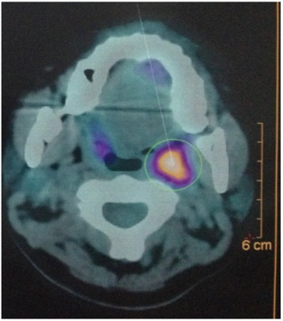
A Tomografia computadorizada com emissão de pósitrons com captação fisiológica em orofaringe.
B Ressonância magnética em T2 com gadolíneo, imagens sugestivas de tumor primário em orofaringe a esquerda.
C Tomografia computadorizada com contrate, imagem sugestiva de metástase em linfonodo retrofaríngeo.
D Tomografia computadorizada com emissão de pósitrons com captação sugestiva de tumor primário em loja amigdaliana esquerda.
Questão 813 · Mastologia · 4000196993Paciente de 25 anos com queixa de pirose e de regurgitação de longa data. A endoscopia digestiva alta demonstra esofagite grau Los Angeles B, sem hérnia de hiato. Ao exame clínico abdominal, sem dor à palpação ou visceromegalias. IMC: 31 kg/m². Após uso de esomeprazol em dose otimizada, apresentou melhora dos sintomas. Com relação ao caso, assinale a melhor alternativa.
A O diagnóstico de doença do refluxo gastroesofágico é provável e o paciente deverá ser encaminhado para tratamento cirúrgico.
B O diagnóstico de doença do refluxo gastroesofágico é provável e o paciente deverá realizar medidas comportamentais (dieta e perda de peso) como início do tratamento.
C O diagnóstico de doença do refluxo gastroesofágico pode ser considerado, havendo indicação formal para cirurgia bariátrica.
D O diagnóstico de doença do refluxo gastroesofágico pode ser considerado e existe indicação formal para tratamento endoscópico como ponte para tratamento cirúrgico.
Questão 814 · Mastologia · 4000196992Mulher de 18 anos, com queixa de regurgitação e disfagia baixa há 2 anos, atualmente ingerindo somente alimentos pastosos, vem sendo acompanhada em ambulatório psiquiátrico com suspeita de distúrbio alimentar. Ao exame clínico abdominal, sem dor à palpação ou visceromegalias. IMC: 20,2 kg/m². Após uso de omeprazol, não houve melhora dos sintomas. A endoscopia digestiva alta demonstra esofagite grau Los Angeles A, com pequena hérnia de hiato. No estudo radiológico contrastado, apresenta esôfago com estase e discreto grau de dilatação, com presença de ondas terciárias; manometria esofágica evidencia ausência de relaxamento do esfíncter esofágico inferior com aperistalse de corpo esofágico. Qual a hipótese diagnóstica mais provável e o tratamento recomendado?
A Megaesôfago; cardiomiotomia com fundoplicatura.
B Bulimia; otimização de medicação psiquiátrica.
C Megaesôfago; dilatação esofágica e aplicação de toxina botulínica.
D Doença do refluxo gastroesofágico; otimização do tratamento clínico.
Questão 815 · Mastologia · 4000196991Paciente de 60 anos, tabagista e etilista há 30 anos, durante exames de seguimento da doença do refluxo, realizou uma endoscopia digestiva alta com visualização de lesão a 36 cm da arcada dentária superior (ADS), com 1,0 cm de extensão, plana, ulcerada, associada ao esôfago de Barrett de 2 cm de extensão; a biópsia da lesão confirmou adenocarcinoma tipo difuso, indiferenciado. Realizados exames de estadiamento (tomogra a computadorizada, PET-TC e ecoendoscopia), que demonstraram provável estadiamento cT2N1M0. Qual o melhor tratamento para este paciente?
A Neodjuvância seguido de gastrectomia total com esofagectomia distal e linfadenectomia.
B Neodjuvância seguido de esofagectomia subtotal com gastrectomia polar e linfadenectomia.
C Radioterapia e quimioterapia exclusivamente.
D Esofagectomia subtotal com gastrectomia polar e linfadenectomia.
Questão 816 · Mastologia · 4000196990Paciente de 75 anos, portador de carcinoma espinocelular de terço médio do esôfago, submetido ao tratamento neoadjuvante com quimioradioterapia. Está no sexto pós-operatório de esofagectomia por toracoscopia e anastomose cervical. Após uma crise de tosse, apresentou abaulamento na região cervical com en sema supraclavicular, com alteração de voz, sem dispneia. Solicitada radiogra a de tórax sem evidências de pneumotórax, somente presença de pequeno pneumomediastino. Qual a melhor hipótese diagnóstica e o exame a ser solicitado?
A Hematoma cervical; endoscopia de urgência.
B Pneumomediastino residual; tomografia computadorizada de tórax.
C Fistula traqueal; broncoscopia.
D Fistula da anastomose cervical; tomografia computadorizada de pescoço e tórax.
Questão 817 · Mastologia · 4000196989Homem de 65 anos tem hipertensão arterial sistêmica e diabetes melito tipo 2 controladas e se queixa de epigastralgia e emagrecimento de 6 kg nos últimos 6 meses. Endoscopia digestiva alta mostrou lesão úlcero-in ltrativa avançada de 6 cm de diâmetro, em pequena curvatura de antro, cuja biópsia evidenciou adenocarcinoma moderadamente diferenciado. Tomogra a de tórax, abdome e pelve descreveu somente a lesão na parede gástrica e negativa para metástases. Foi submetido à gastrectomia, porém o cirurgião considerou o tratamento R2. De acordo com a edição, na classificação R para doença residual, o que significa R2?
A Tumor microscópico dentro de uma margem de 1 mm.
B Tumor microscópico dentro de uma margem de 2 mm.
C Tumor visível macroscopicamente nas margens.
D Sem tumor residual macroscópico.
Questão 818 · Mastologia · 4000196988Mulher de 20 anos, sem comorbidades, várias crises de dor, distensão abdominal e vômitos. Exame clínico mostra várias pequenas manchas escurecidas em lábios e palma das mãos. A história familiar aponta pai e irmão com manchas semelhantes. Endoscopia digestiva alta mostra lesão volumosa pediculada na 3ª porção duodenal. Anatomopatológico: hamartoma. Tomogra a de tórax, abdome e pelve descreve uma lesão de 7 cm de diâmetro dentro do duodeno, próximo ao ângulo de Treitz, com dilatação do delgado à montante, sugerindo crises de intossucepção. Diante deste quadro, qual a hipótese diagnóstica mais provável?
A Síndrome de polipose juvenil.
B Síndrome de Peutz-Jeghers.
C HNPCC ou síndrome de Lynch.
D Neurofibromatose.
Questão 819 · Mastologia · 4000196987Mulher de 65 anos apresentou recentemente episódio de pancreatite aguda leve. Exame de ressonância magnética identi cou um cisto que mede 3,5 cm, localizado na cabeça do pâncreas e que se comunica com ducto pancreático principal, que está dilatado, medindo até 7 mm. Considerando a principal hipótese diagnóstica, dentre as opções abaixo, qual melhor conduta para esta paciente?
A Ultrassonografia endoscópica.
B Repetir a ressonância magnética em um ano.
C Ultrassonografia endoscópica com alcoolização do cisto.
D PET-CT com FDG (glicose marcada com radio-fármaco).
Questão 820 · Mastologia · 4000196986Homem de 72 anos, em 8º dia de pós-operatório de gastroduodenopancreatectomia com reconstrução e m alça única à alimentares sólidos. Qual a hipótese diagnóstica mais provável?
A Obstrução da anastomose gastrojejunal.
B Hérnia interna.
C Gastroparesia.
D Pancreatite aguda.
Questão 821 · Mastologia · 4000196985Homem de 60 anos, com achado incidental na vesícula biliar de uma lesão hipoecogênica, sem sombra acústica posterior, fixa, porém restrita à mucosa da vesícula, compatível com pólipo. A lesão mede 15 mm. Qual a melhor conduta neste momento?
A Colecistectomia.
B Colecistectomia com ressecção ampliada do leito hepático e linfadenectomia do hilo hepático.
C Colangiografia endoscópica.
D Ultrassonografia endoscópica com punção biópsia.
Questão 822 · Mastologia · 4000196984Homem de 54 anos, com diagnóstico de colangiocarcinoma intra-hepático de 8,7 cm em lobo direito, é submetido à hepatectomia direita, à linfadenectomia hilar e à drenagem da cavidade sem intercorrências. Apresentou boa evolução, até que, no 3º dia pós-operatório, o dreno abdominal mostrou-se com secreção levemente esverdeada e aumento do volume (150 mL). Mantém-se estável, sem drogas vasoativas e afebril. Ao exame clínico, abdome flácido e indolor. Os exames laboratoriais mostraram leucócitos de 10.300/mm³ e discreta elevação da proteína C-reativa. A dosagem sérica de bilirrubina é de 0,7 mg/dL e a do dreno abdominal de 3,2 mg/dL. Com relação ao caso, é correto afirmar que:
A o paciente por definição não possui fístula biliar pós-hepatectomia.
B o paciente tem fistula biliar grau C, devendo ser indicada reabordagem cirúrgica para limpeza de cavidade abdominal.
C o paciente tem fístula biliar grau A, devendo ser mantida a observação clínica.
D está indicada drenagem da cavidade por radiologia intervencionista e introdução de antibioticoterapia de amplo espectro.
Questão 823 · Mastologia · 4000196983Homem de 61 anos, com diagnóstico de cirrose hepática por uso de álcool (3 cervejas/dia por 27 anos; parou há 3 anos), está em acompanhamento com clínico. Em ultrassonogra a de abdome foi evidenciado nódulo periférico de 4 cm em segmento 6. Realizou tomogra a de abdome com contraste que mostrou lesão hipervascular no segmento 6 medindo 4,1 cm, com clareamento rápido do meio de contraste. Exames laboratoriais: hemoglobina = 11,7 g/dL, plaquetas = 110.000/mm³, bilirrubinas totais = 1,2 mg/dL, bilirrubina direta = 0,9 mg/dL, creatinina = 1,0 mg/dL, albumina = 3,5 g/dL, tempo de protrombina = 88% (INR= 1,2), sódio = 137 mEq/L, alfafetoproteína = 343 ng/mL. Child-Pugh = A6, Model of End-Stage Liver Disease (MELD) = 9. Endoscopia digestiva alta com gastrite moderada de antro. Com base nos dados clínicos e laboratoriais, qual o melhor tratamento para o paciente?
A Quimioembolização arterial.
B Radiofrequência do nódulo hepático.
C Encaminhamento para transplante de fígado.
D Hepatectomia (ressecção regrada do segmento 6).
Questão 824 · Mastologia · 4000196982Mulher de 59 anos é portadora de hipertensão arterial controlada com medicação e em uso de hipoglicemiante oral há 15 anos. Atualmente com peso de 120 kg e IMC 45 kg/m². Realiza suas atividades diárias com limitações devido ao peso. Faz seguimento clínico regular, com falha terapêutica após múltiplos tratamentos com medicação e dieta. Qual a melhor opção terapêutica para o tratamento da obesidade neste caso?
A Incrementar o tratamento da diabetes com o uso de insulina.
B Indicar cirurgia bariátrica.
C Manter o seguimento clínico, pois é uma forma refratária de obesidade.
D Manter o tratamento clínico com implementação de dieta altamente restritiva.
Questão 825 · Mastologia · 4000196981Paciente de 42 anos, submetida à Gastrectomia Vertical há 1 ano para tratamento de obesidade grave, evoluindo com perda expressiva de peso. Há 6 meses com queixa recorrente de vômitos pós-alimentares, pirose, regurgitação e tosse noturna, com impacto na sua qualidade de vida. Realizou endoscopia digestiva alta com diagnóstico de esofagite erosiva grau C. Vem mantendo uso contínuo de inibidor de bomba de próton em alta dose. A avaliação radiológica com estudo contrastado evidenciou estreitamento na transição entre corpo e antro do estômago. A conduta recomendada neste momento é:
A trocar o tipo de Inibidor de Bomba de Próton.
B manter dieta líquida para facilitar o esvaziamento gástrico.
C solicitar pHmetria esofágica de 24 horas para confirmação do refluxo gastroesofágico.
D indicar cirurgia revisional com conversão para gastroplastia com derivação em Y
Questão 826 · Mastologia · 4000196980Homem de 47 anos, IMC 55 kg/m², submetido a Bypass Gástrico em consulta ambulatorial com mal-estar, dor abdominal e taquicardia. Realizou tomogra a computadorizada de abdome com achado de fístula na anastomose gastrojejunal com coleção bem delimitada adjacente ao estômago excluso, com volume estimado em 20 mL. Após hidratação venosa e antibioticoterapia, o paciente referiu melhora dos sintomas, com FC = 90 bpm e PA = 120x75 mmHg. Assinale a melhor conduta para o tratamento da fístula neste momento.
A Laparotomia exploradora para limpeza da cavidade e sutura da fístula do estômago excluso.
B Endoscopia para avaliação da fístula e tratamento associado.
C Drenagem da coleção guiada por ultrassonografia.
D Lavagem da cavidade e fechamento da fístula por via laparoscópica.
Questão 827 · Mastologia · 4000196979Mulher de 74 anos apresenta-se com dor abdominal em anco esquerdo/fossa ilíaca esquerda (FIE) de forte intensidade, inicialmente leve, com piora importante há 24 horas. Ao exame clínico tem T 37,8°C, FC 100 bpm, dor à palpação difusa do abdome com descompressão positiva em FIE. Como proceder à investigação diagnóstica?
A Tomografia computadorizada de abdome.
B Colonoscopia com preparo retrógrado.
C Colografia por tomografia (colonoscopia virtual).
D Laparoscopia diagnóstica.
Questão 828 · Mastologia · 4000196978Homem de 72 anos apresenta adenocarcinoma de cólon ascendente com 5 cm de diâmetro, sem invasão de órgãos adjacentes ou linfonodomegalias no território de drenagem linfonodal. Não apresenta metástases aos exames de estadiamento. Exames laboratoriais mostram CEA 6,5 mg/dL e Hb = 7,0 g/dL. Assinale a alternativa correta.
A Deve-se iniciar a reposição de ferro por via oral por duas semanas antes da cirurgia.
B Está indicado o tratamento neoadjuvante para reduzir a recidiva local.
C A colectomia segmentar com ligadura dos vasos cólicos direitos e ramo direito da cólica média é o tratamento cirúrgico de escolha.
D A ligadura da veia mesentérica superior é o primeiro passo da linfadenectomia na cirurgia oncológica dessa região.
Questão 829 · Mastologia · 4000196977Menina com 1 mês de idade apresenta massa suprarrenal à esquerda de 4 cm na ultrassonogra a de abdome. Tomogra a detecta massa sólida com calci cações na loja suprarrenal, deslocando o rim direito inferolateralmente sem distorção pielocalicial. Presença de metástases hepáticas. O exame clínico revela múltiplos nódulos subcutâneos. Qual é a alternativa correta quanto ao provável diagnóstico?
A Tumor de Wilms.
B Feocromocitoma.
C Carcinoma de suprarrenal.
D Neuroblastoma.
Questão 830 · Mastologia · 4000196976Recém-nascido do sexo masculino apresenta tumoração cística no assoalho da boca que di culta a sucção. Também apresenta lesões semelhantes nas regiões cervical e submandibular. Qual é o diagnóstico provável?
A Malformação linfática.
B Linfoma.
C Língua presa.
D Rânula.
Questão 831 · Mastologia · 4000196975Menino, na segunda semana de vida, logo após a mamada começa a apresentar vômitos alimentares, não corados de bile e em jato. Apesar dos vômitos intensos, a criança apresenta apetite voraz. Ao exame do abdome, observam-se ondas peristálticas no epigástrio e estrutura sólida de cerca de 1,5 cm, arredondada e bem delimitada, palpável em quadrante superior direito. Qual é a alternativa correta quanto ao provável diagnóstico?
A Estenose hipertrófica de piloro.
B Duplicação gástrica.
C Pâncreas anular.
D Refluxo gastroesofágico.
Questão 832 · Mastologia · 4000196974Criança com 2 anos apresenta enterorragia maciça e choque hipovolêmico. Depois de administrados solução siológica e concentrado de hemácias, o quadro se estabiliza. Após recuperação hemodinâmica, foi realizada ultrassonogra a de abdome, sem alterações. Como poderá ser feita a confirmação diagnóstica desta patologia?
A Mielograma.
B Mapeamento isotópico com tecnécio.
C Realização de endoscopia digestiva alta.
D Realização de tomografia e ressonância magnética de abdome.
Questão 833 · Mastologia · 4000196973Neonato com 4 dias de vida apresenta vômitos biliosos, distensão abdominal e radiogra a de abdome com padrão obstrutivo. Foi operado, sendo identificada atresia intestinal. Qual procedimento é obrigatório durante o ato cirúrgico de qualquer atresia intestinal?
A Realização de ostomias.
B Avaliação de possíveis obstruções distais.
C Ressecção do coto proximal dilatado.
D Apendicectomia.
Questão 834 · Mastologia · 4000196972Neonato, idade gestacional de 36 semanas, apresenta salivação aerada abundante nas primeiras horas de vida e crises de tosse com queda de saturação na oximetria de pulso. Assinale a alternativa que descreve a principal hipótese diagnóstica.
A Atresia de coanas.
B Hérnia diafragmática congênita.
C Atresia de esôfago.
D Malformação adenomatoide cística.
Questão 835 · Mastologia · 4000196971Menino de 7 anos, previamente hígido, foi admitido no Pronto Atendimento com quadro de dor abdominal de início há 2 dias, com piora progressiva e vômitos. Ao exame clínico, encontrava-se em regular estado geral, subfebril (T: 37,7°C) e com sinais de irritação peritoneal mais localizada em quadrante inferior direito. Foi avaliado pelo cirurgião, que indicou tratamento cirúrgico com hipótese diagnóstica de apendicite aguda. No intra-operatório, foi identi cado moderado volume de secreção turva na cavidade, porém sem sinais inflamatórios ou outras alterações no apêndice cecal ressecado. Com base no quadro clínico e nos achados cirúrgicos, assinale a alternativa que descreve a hipótese diagnóstica mais provável.
A Gastroenterocolite aguda.
B Peritonite bacteriana espontânea.
C Diverticulite de Meckel.
D Duplicação de apêndice.
Revisar: possível letra faltando em enunciado
Questão 836 · Mastologia · 4000196970Lactente masculino, com 9 meses de idade, apresenta segundo episódio de infecção do trato urinário. Ao exame clínico, encontra-se em bom estado geral, com jato urinário adequado e função renal preservada (dosagem de ureia e creatinina séricas normais). Durante a internação para tratamento da infecção, foi solicitada ultrassonografia das vias urinárias, que evidenciou hidronefrose moderada à direita. Qual a alternativa que descreve corretamente o diagnóstico mais provável?
A Estenose de junção ureterovesical direita.
B Displasia renal direita.
C Estenose de junção ureteropiélica direita.
D Válvula de uretra posterior.
Questão 837 · Mastologia · 4000196969Neonato a termo, no 2º dia de vida, apresenta vômitos biliosos desde o nascimento. Assinale a alternativa que contém duas possíveis hipóteses diagnósticas compatíveis com a apresentação clínica em questão.
A Atresia de esôfago com fístula distal e megacólon congênito.
B Estenose hipertrófica de piloro e atresia ileal.
C Membrana antral e peritonite meconial.
D Suboclusão duodenal e atresia jejunal.
Questão 838 · Mastologia · 4000196968Adolescente de 14 anos com história de dor no testículo direito há 8 horas, associado a edema e hiperemia d a parede do escroto. Devido à impossibilidade de realizar ultrassonogra a com doppler de emergência, optou-se por realizar exploração cirúrgica. Achado intra- operatório na imagem apresentada. Assinale a alternativa correta em relação à hipótese diagnóstica e o tratamento recomendado.

A Torção de hidátide de Morgagni (apêndice testicular); exerese da lesão.
B Teratoma do testículo; orquiectomia parcial e estadiamento com tomografia de abdome e tórax, e dosagem de marcadores tumorais.
C Cisto de epidídimo; abertura e marsupialização do cisto.
D Teratoma do testículo; orquiectomia total e estadiamento com tomografia de abdome e tórax, e dosagem de marcadores tumorais.
Questão 839 · Mastologia · 4000196967Lactente do sexo feminino de 8 meses de vida, sem comorbidades e eutró ca, iniciou há 4 dias quadro de d o r abdominal em cólica associada à distensão progressiva. Há 2 dias está apresentando vômitos, hipoatividade e febre. Apresentou também 2 episódios de enterorragia com muco associado nas últimas evacuações. Após avaliação clínica, realizou ultrassonogra a, sendo indicada cirurgia de urgência, onde foi observado o achado mostrado a seguir (imagens apresentadas). Assinale a alternativa correta em relação ao caso clínico descrito acima.
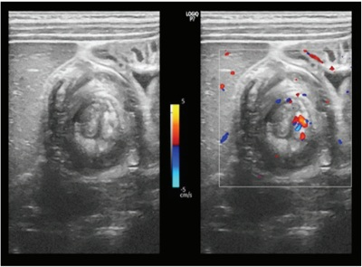
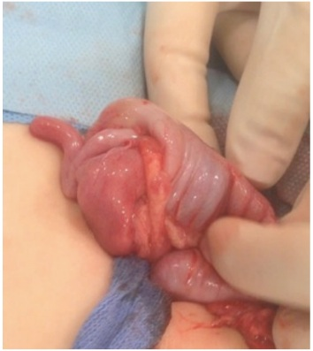
A O diagnóstico é de enterocolite e a cirurgia foi desnecessária nesse caso.
B O diagnóstico é de invaginação intestinal, o diagnóstico de linfoma intestinal como causa da invaginação é importante nessa faixa etária do paciente e deve ser afastado.
C Um exame de enema opaco estaria indicado nesse caso, a fim de confirmar o diagnóstico e realizar a redução incruenta da invaginação.
D O diagnóstico é de invaginação intestinal, a redução cruenta está indicada devido ao tempo de evolução associado à clínica de hipoatividade, de febre e de enterorragia.
Revisar: possível letra faltando em enunciado
Questão 840 · Mastologia · 4000196966Lactente de 2 anos, sexo feminino, previamente hígida e sem comorbidades, é levada ao pronto-socorro infantil com história de evacuações com sangue há 1 dia. Pais negam antecedentes familiares de doenças intestinais. Ao exame clínico, observa-se lesão escurecida, prolapsada através da borda anal, que apresenta base pedunculada junto à mucosa do reto anterior (imagens apresentadas). Assinale a alternativa CORRETA em relação ao diagnóstico mais provável e ao tratamento recomendado.
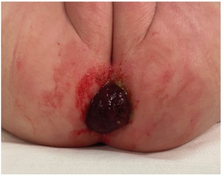

A Pólipo hamartomatoso; exerese para confirmação histopatológica e seguimento ambulatorial.
B Pólipo adenomatoso; exerese para confirmação histopatológica e alta sem necessidade de seguimento.
C Adenocarcinoma; exerese para confirmação diagnóstica e quimioterapia neoadjuvante para programação de ressecção.
D Hemangioma intestinal; exerese para confirmação diagnóstica e alta sem necessidade de seguimento.
Questão 841 · Mastologia · 4000196965Criança de 3 anos, previamente hígida, apresenta aumento do volume abdominal em esquerdo, associado à dor abdominal e presença de varicocele à esquerda. Foi submetida à investigação com exame de imagem que evidenciou volumosa massa renal esquerda com aspecto sugestivo de nefroblastoma (tumor de Wilms). Assinale a alternativa correta.
A A presença de varicocele pode ser um sinal de obstrução da veia renal por um trombo tumoral.
B A presença de varicocele não tem relação com nefroblastoma.
C A presença de trombo tumoral tem pouca importância para o planejamento cirúrgico do nefroblastoma.
D A presença de trombo tumoral tem pouca importância no estadiamento do nefroblastoma.
Questão 842 · Mastologia · 4000196964Lactente masculino, com 2 meses de idade, está apresentando icterícia, colúria e acolia fecal desde a segunda semana de vida. Nasceu a termo, sem antecedentes pré-natais relevantes. Apresentou boa evolução, recebendo alta hospitalar no 3º dia de vida. Ao exame clínico: bom estado geral, ictérico, pesando 4,4 kg. O exame abdominal evidencia fígado endurecido palpável a 3 cm do rebordo costal direito e baço palpável na altura do rebordo costal esquerdo. Exames laboratoriais: TGO = 89 U/L; TGP = 73 U/L; GamaGT = 284 U/L; Bilirrubina total = 7,9 mg/dL; Bilirrubina direta = 7,1 mg/dL; INR = 1,2. Assinale a alternativa que descreve a hipótese diagnóstica mais provável.
A Hepatite neonatal.
B Icterícia fisiológica.
C Atresia de vias biliares.
D Fibrose hepática congênita.
Questão 843 · Mastologia · 4000196963Com relação ao atendimento de pacientes queimados, fase aguda, em qual situação o cálculo de volume a ser infundido para reposição volêmica, baseado na fórmula de Parkland, sofre alterações?
A Queimaduras de primeiro grau em área superior a 50% da superfície corpórea.
B Queimaduras associadas a trauma crânio-encefálico.
C Queimaduras associadas a trauma torácico.
D Queimaduras de segundo e terceiro graus acometendo mais de 50% da superfície corpórea.
Questão 844 · Mastologia · 4000196962A cicatrização das feridas é estudada desde a antiguidade. Quais parâmetros definidos há mais de 2000 anos continuam sendo válidos ainda atualmente?
A Remoção de corpos estranhos e proteção da área cruenta.
B Tratamento dos ferimentos com líquidos quentes.
C Não fechamento primário de feridas abertas.
D Uso de pressão negativa sobre a ferida.
Questão 845 · Mastologia · 4000196961Quais eventos citados abaixo ocorrem na fase inflamatória da cicatrização e qual a sequência cronológica correta?
A Vasodilatação; migração de macrófagos; liberação de fibronectina.
B Vasoconstrição; vasodilatação; aumento de permeabilidade vascular.
C Migração de plaquetas; migração de fibroblastos; produção de colágeno.
D Vasodilatação; síntese de ácido hialurônico; adesão de neutrófilos.
Questão 846 · Mastologia · 4000196960Mulher tem uma ferida de cerca de 4 cm em área plana da face, região da bochecha. Indica-se enxertia de pele para a reparação do ferimento. Assinale a alternativa correta. Observação:
A O uso de enxerto de pele parcial fornece ao enxerto maior retração primária (imediatamente após sua retirada) e menor retração secundária (retração cicatricial).
B O uso de pele parcial do couro cabeludo é contraindicado por levar consigo os folículos pilosos e aumentar o risco de hipertricose na região.
C A escolha da área doadora deve levar em consideração a localização e a proximidade com a área receptora para fins de qualidade final do resultado.
D A imobilidade da pele enxertada deve ser garantida para que ocorra nutrição por embebição plasmática nas primeiras 24 horas.
Questão 847 · Mastologia · 4000196959A viabilidade de um retalho com componente cutâneo pode ser clinicamente avaliada por meio do teste de digitopressão. Assinale a alternativa que indica os achados clínicos observados quando há dificuldade no retorno venoso.
A Retalho pálido com reenchimento capilar normal.
B Retalho frio com reenchimento capilar preservado.
C Retalho normotérmico com reenchimento capilar lento.
D Retalho de coloração violácea com reenchimento capilar acelerado.
Questão 848 · Mastologia · 4000196958Paciente vítima de coice de cavalo dá entrada na sala de emergência consciente, com intenso sangramento oral e nasal. Após aspiração, observa-se que o sangramento é ativo e se origina na região maxilar. Tamponamento anterior sem sucesso. O trauma é localizado na região nasomaxilar, no terço médio da face, preservando o terço inferior da face. Além das medidas sistêmicas a serem adotadas, qual conduta recomendada em caso de instabilidade hemodinâmica?
A Arteriografia e embolização de vasos maxilares de urgência.
B Passagem de sonda de Foley por via nasal e insuflação do balão com tração.
C Injeção de hemostático tópico por via endonasal.
D Ligadura de artérias carótidas externas.
Questão 849 · Prevenção · 4000196957Mulher de 52 anos recebeu diagnóstico de câncer de mama T2N0, Luminal B. Há indicação de solicitação de painel genético para esta paciente, caso ela apresente:
A Irmã com câncer de ovário aos 45 anos.
B Mãe com câncer de colo de útero aos 65 anos.
C Primo de segundo grau com câncer de intestino aos 55 anos.
D Prima de segundo grau com câncer de mama aos 68 anos.
Questão 850 · Rastreamento do câncer de mama · 4000196956Mulher de 24 anos, assintomática, realizou teste genético por história familiar de câncer. O resultado mostrou uma variante patogênica de BRCA1. Com relação ao rastreamento desta paciente, assinale a alternativa correta:
A Exame clínico das mamas a partir dos 20 anos, mamografia anual a partir dos 25 anos e ressonância anual a partir dos 30 anos (intercaladas).
B Exame clínico das mamas a partir dos 25 anos, mamografia anual a partir dos 30 anos e ressonância anual a partir dos 25 anos (intercaladas).
C Exame clínico das mamas a partir dos 30 anos, mamografia anual a partir dos 40 anos e ressonância anual a partir dos 30 anos (intercaladas).
D Exame clínico das mamas a partir dos 40 anos, mamografia anual a partir dos 40 anos e ressonância anual a partir dos 40 anos (intercaladas).
Questão 851 · Fatores de risco · 4000196955Com relação à mutação de p-53 (Síndrome de Li-Fraumeni), assinale a alternativa correta.
A Há aumento de risco para câncer de mama, de adrenal e de ovário.
B Há aumento de risco para câncer de mama, de ovário e de pulmão.
C Há aumento de risco para câncer de mama, de adrenal e de colo de útero.
D Há aumento de risco para câncer de mama, de adrenal e para sarcomas.
Questão 852 · Fatores de risco · 4000196954Com relação aos modelos preditores de risco de câncer de mama, assinale a alternativa correta.
A O IBIS ou Tyrer-Cuzick inclui os seguintes fatores de risco: idade, histórico reprodutivo, história familiar e história de biópsias de mama anteriores.
B O CanRisk (BOADICEA v5) inclui os seguintes fatores de risco: idade, antecedente pessoal de câncer de mama, história familiar e história de biópsias de mama anteriores.
C O modelo de GAIL inclui os seguintes fatores de risco: idade, idade da menarca, história familiar de câncer de mama e história familiar de outros tipos de câncer.
D O modelo de Claus inclui os seguintes fatores de risco: história familiar de câncer, biópsia de mama prévias e histórico reprodutivo.
Questão 853 · Histologia · 4000196953Sobre os carcinomas
A Apresentam o mesmo potencial de progressão.
B São similares geneticamente.
C Têm as mesmas características histológicas.
D Nenhuma das alternativas anteriores está correta.
Questão 854 · Histologia · 4000196952Sobre os carcinomas ductais
A Estudos moleculares confirmam a existência de 3 graus diferentes.
B São graduados de acordo com o grau nuclear.
C Há ótima concordância entre patologistas na avaliação do grau.
D Nenhuma das alternativas anteriores está correta.
Questão 855 · Histologia · 4000196951Sobre os biomarcadores nos carcinomas ductais
A Até 35% têm superexpressão de HER2.
B A concordância entre biópsia e peça cirúrgica é baixa.
C Não devem ser avaliados nos carcinomas
D O subtipo triplo-negativo não é observado.
Questão 856 · Histologia · 4000196950Sobre os carcinomas ductais
A São geneticamente muito diferentes do carcinoma invasivo associado.
B São molecularmente similares ao tecido mamário circunjacente.
C O perfil imunoistoquímico é similar ao do carcinoma invasivo associado.
D Nenhuma das alternativas anteriores está correta.
Questão 857 · Histologia · 4000196949Sobre os carcinomas ductais
A A transição para invasão estromal depende exclusivamente das células epiteliais neoplásicas.
B Os TILs estão mais associados aos CDIS de baixo grau.
C A expressão gênica dos componentes dos microambientes é diferente entre os CDIS e carcinomas invasivos.
D Nenhuma das alternativas anteriores está correta.
Questão 858 · Tratamento cirúrgico · 4000196948Com relação à biópsia do linfonodo sentinela em câncer de mama, assinale a alternativa correta.
A Trata-se de procedimento validado e minimamente invasivo na abordagem cirúrgica axilar.
B Pode ser empregada em todos os estádios clínicos do câncer de mama.
C Não deve ser realizado em pacientes submetidas à quimioterapia neoadjuvante.
D A presença de metástase em linfonodo sentinela deve ser sempre seguida de dissecção axilar completa.
Questão 859 · Câncer de mama · 4000196947Com relação à estratégia de prevenção primária no câncer de mama, assinale a alternativa correta.
A Mudanças de estilo de vida (exercício físico e hábitos alimentares) apresentam impacto significativo na prevenção.
B A utilização de anti-hormônios como o Tamoxifeno apresenta impacto importante na prevenção e pode reverberar também na qualidade de vida da paciente.
C A cirurgia redutora de risco é uma estratégia importante no cenário preventivo, zerando o risco do desenvolvimento de câncer de mama no decorrer da vida.
D A indicação de adenectomia redutora de risco está claramente demonstrada entre as pacientes mutadas BRCA 1, em decorrência do impacto na sobrevida global.
Questão 860 · Classif icação · 4000196946Com relação às assinaturas genéticas, assinale a alternativa correta.
A O estudo RxPONDER avaliou pacientes com até 3 linfonodos comprometidos e demonstrou que a quimioterapia pode ser descartada nestes casos, tanto na pré quanto na pós-menopausa.
B As indicações concentram-se em pacientes portadoras de câncer de mama inicial que expressam receptor hormonal e não super expressam a proteína Her2 +.
C A assinatura deve ser pedida, protocolarmente, em todos os casos de câncer de mama.
D Nas pacientes com tumores de mama mais agressivos, tais como o triplo negativo e o Her2+, a assinatura é fundamental para descalonar o tratamento.
Questão 861 · Câncer de mama · 4000196945Mulher de 48 anos com queixa de nódulo de mama há 1 mês. Em relação à conduta recomendada, assinale a alternativa correta.
A Exame clínico das mamas e solicitação de mamografia e ultrassonografia.
B Punção aspirativa por agulha fina orientada pela palpação.
C Exerese cirúrgica do nódulo com exame intraoperatório de congelação.
D Biópsia percutânea por agulha grossa do nódulo (core biópsia) guiada por ultrassonografia.
Questão 862 · Biópsias da mama · 4000196944Mulher de 49 anos realizava mamogra a de rastreamento com seu ginecologista regularmente; a mais recente apresentou calci cações pleomór cas agrupadas em QSL de mama esquerda, classificadas como BIRADS 4. Foi submetida à mamotomia guiada por estereotaxia. Assinale a alternativa em que há indicação de ampliação cirúrgica.
A Adenose esclerosante.
B Hiperplasia pseudoangiomatosa do estroma.
C Hiperplasia de células colunares.
D Hiperplasia lobular atípica.
Revisar: possível letra faltando em enunciado
Questão 863 · Exames complementares · Quadro clínico · 4000196943Homem de 35 anos procura o consultório médico com queixa de aumento de volume mamário predominantemente à direita, associado à dor. Os sintomas iniciaram-se há 3 meses. Nega uso de esteroides anabolizantes, medicamentos e álcool. Ao exame clínico, apresenta discreto abaulamento em região retroareolar à direita. Qual o exame subsidiário recomendado para avaliação da principal suspeita clínica?
A Ultrassonografia, devido à alta densidade da mama masculina.
B Ressonância de mama, pois tem maior sensibilidade e especificidade.
C O exame clínico é suficiente para fechar o diagnóstico.
D Mamografia.
Questão 864 · Tumor Phyllodes · 4000196942Mulher de 32 anos apresentava nódulo em mama esquerda com crescimento rápido em cerca de 4 meses. Foi submetida à biópsia de agulha grossa com resultado de lesão broepitelial, podendo corresponder a phyllodes phyllodes borderline Com base no NCCN 2022, assinale a alternativa que indica a conduta recomendada.
A Quimioterapia adjuvante, por se tratar de variante
B Radioterapia adjuvante, devido à cirurgia conservadora.
C Ampliação de margens por margem exígua.
D Tamoxifeno.
Questão 865 · BIRADS · 4000196941Mulher de 39 anos, com implantes mamários de silicone há 10 anos, procura seu mastologista pois est á preocupada com a data de validade dos implantes. Ao exame clínico, não há sinais de contratura capsular, mas paciente quis saber se não havia sinais de ruptura dos implantes. O mastologista solicitou ressonância de mamas sem contraste, cujo resultado não mostrou alterações. Segundo o Birads 5ª edição, qual é a classificação deste exame?
A Birads 0.
B Birads 1.
C Birads 2.
D sem classificação de Birads.
Questão 866 · Tratamento cirúrgico · 4000196940Em relação às cirúrgias oncoplásticas (CO), é correto afirmar:
A diversos estudos demostram maiores chances de margens negativas na CO.
B todas as pacientes são candidatas à CO, exceto aquelas afetadas por tumores localmente avançados.
C a CO, além de melhorar o resultado estético, reduz as operações por margens comprometidas, motivo pelo qual a radioterapia resta dispensada.
D existem indicações bem específicas de CO; as pacientes que menos se beneficiam da CO são as portadoras de gigantomastia.
Questão 867 · Câncer de mama na gestante · 4000196939Com relação às pacientes gestantes com câncer de mama, assinale a alternativa que descreve o principal motivo relacionado à piora do prognóstico.
A Incidência de tumores mais agressivos quando comparados à população não gestante de mesma idade.
B Retardo no diagnóstico do câncer de mama.
C Impossibilidade de tratamento sistêmico até 20 semanas de gestação.
D A mãe não aceitar o diagnóstico em decorrência dos malefícios que o tratamento pode trazer para ela e para o feto.
Questão 868 · Fatores de risco · 4000196938A síndrome de Li-Fraumeni, causada por uma mutação do gene TP53, é responsável pela ocorrência de diversas neoplasias, entre elas o câncer de mama. A população brasileira apresenta casos de Síndrome de Li- Fraumeni causados por uma mutação especí ca, mais frequente em nosso país. Assinale a alternativa que corresponde à referida mutação do gene TP53?
A Mutação E380Q.
B Mutação R337H.
C Mutação Y537C.
D Mutação D538G.
Revisar: possível letra faltando em enunciado
Questão 869 · Imunoterapia · 4000196937A imunoterapia no tratamento de câncer de mama é uma modalidade em crescente investigação, especialmente no tratamento dos tumores com subtipo basal. A droga pembrolizumab, um imunoterápico que atua inibindo o PD-L1, foi recentemente aprovado pela ANVISA em qual cenário?
A Tratamento neoadjuvante para tumores triplo-negativos não metastáticos, independente da expressão de PD-L1.
B Tratamento neoadjuvante em tumores triplo-negativos não metastáticos, com expressão de PD-L1.
C Tratamento em tumores triplo-negativos metastáticos, sem expressão de PD-L1.
D Tratamento adjuvante de tumores triplo-negativos não metastáticos, com expressão de PD-L1.
Questão 870 · BIRADS · 4000196936Mulher de 39 anos, puérpera, com parto normal há 4 meses, refere aumento de volume mamário à esquerda desde a gestação. O obstetra justi cou-o como secundário à produção láctea. Com o acentuado aumento do volume, foi solicitado USG de mamas que mostrou nódulo arredondado, regular, hiperdenso, com sombra acústica posterior, medindo 6,5 cm em seu maior diâmetro; na axila, foram vistos linfonodos com espessamento da cápsula e perda do hilo gorduroso. Assinale a alternativa que corresponde ao diagnóstico mais provável?
A Galactocele.
B Câncer de mama.
C Fibroadenoma.
D Angiossarcoma.
Questão 871 · BIRADS · 4000196935Mulher de 39 anos, puérpera, com parto normal há 4 meses, refere aumento de volume mamário à esquerda desde a gestação. O obstetra justi cou-o como secundário à produção láctea. Com o acentuado aumento do volume, foi solicitado USG de mamas que mostrou nódulo arredondado, regular, hiperdenso, com sombra acústica posterior, medindo 6,5 cm em seu maior diâmetro; na axila, foram vistos linfonodos com espessamento da cápsula e perda do hilo gorduroso. Com relação à mamografia para esta paciente, assinale a alternativa correta.
A Pode ser realizada desde que seja utilizada proteção de chumbo em abdome e região cervical.
B Permite a individualização do nódulo e a identificação de suas características.
C Deverá ser solicitada após a inibição da lactação com cabergolina.
D Deve ser realizada após esvaziamento mamário (ordenha).
Questão 872 · BIRADS · 4000196934Mulher de 39 anos, puérpera, com parto normal há 4 meses, refere aumento de volume mamário à esquerda desde a gestação. O obstetra justi cou-o como secundário à produção láctea. Com o acentuado aumento do volume, foi solicitado USG de mamas que mostrou nódulo arredondado, regular, hiperdenso, com sombra acústica posterior, medindo 6,5 cm em seu maior diâmetro; na axila, foram vistos linfonodos com espessamento da cápsula e perda do hilo gorduroso. Com base no caso apresentado, assinale a alternativa correta.
A A imunoistoquímica mais provável é a luminal A.
B O fato de ser diagnosticado no puerpério não modifica o prognóstico.
C A amamentação não é contraindicada.
D O tratamento consiste em cirurgia
Questão 873 · Câncer de mama no homem · 4000196933Analise as afirmações abaixo sobre o câncer de mama masculino. I. A cada 100 mulheres diagnosticadas, apenas 3 homens são acometidos. II. Pode-se optar pela cirurgia conservadora, pois o estadiamento clínico costuma ser de tumor inicial, uma vez que o diagnóstico costuma ser precoce. III. A evolução oncológica mostra uma doença agressiva com pior prognóstico quando comparado ao câncer de mama feminino. IV. É considerado um sinal de alerta para mutação BRCA2. Assinale a alternativa correta.
A Há apenas uma afirmação correta.
B Há duas afirmações corretas.
C Há três afirmações corretas.
D Todas as afirmações são corretas.
Questão 874 · Doença de Paget · 4000196932Com relação à doença de Paget, assinale a afirmativa correta.
A É consequência do
B É um tipo frequente de câncer de mama que envolve a pele do mamilo e da aréola.
C Geralmente é bilateral, com indicação de ressonância nuclear magnética.
D Em cerca de 90% dos casos, é associada a carcinoma mamário invasivo ou
Questão 875 · Câncer de mama · 4000196931Em relação aos conhecimentos atuais sobre sarcomas mamários, assinale a alternativa correta.
A Em geral acomete mulheres nos extremos de idade.
B A linfadenopatia axilar e a descarga papilar são frequentes.
C Grupo heterogêneo de tumores mesenquimais, com tratamento agressivo e prognóstico reservado.
D A mastectomia radical modificada é o tratamento de escolha.
Questão 876 · Quadro clínico · 4000196930O carcinoma oculto de mama é definido como um carcinoma de sítio primário desconhecido, que se apresenta através de linfadenopatia axilar e cuja biópsia é histologicamente consistente com câncer de mama. Em relação ao carcinoma oculto, assinale a alternativa correta.
A O melhor método diagnóstico é mamografia associada ao USG de mama.
B A PAF deve ser realizada antes dos exames de imagem.
C A mastectomia é o tratamento de escolha.
D A ressonância de mama é um exame importante para o diagnóstico.
Questão 877 · Anatomia das mamas · 4000196929Assinale a alternativa que descreve limites anatômicos da mama.
A Linha axilar posterior e esterno.
B Linha axilar média e bainha do músculo reto abdominal.
C Primeiro espaço intercostal e linha axilar média.
D Sulco inframamário e segundo espaço intercostal.
Questão 878 · Desenvolvimento das mamas · 4000196928Sobre o desenvolvimento embrionário das mamas, assinale a alternativa correta.
A Durante a 8ª semana do desenvolvimento fetal, acontece o desenvolvimento da chamada linha láctea.
B Entre a 6ª e 7ª semanas de gestação, as células mesenquimais transformam-se no músculo do mamilo e na aréola.
C A regressão incompleta da linha láctea primitiva leva ao surgimento de um tecido mamário adicional em 2 a 6% das mulheres.
D O estágio de canalização acontece apenas durante o trabalho de parto.
Questão 879 · Anatomia das mamas · 4000196927Em relação à irrigação sanguínea da mama, assinale a alternativa correta.
A A artéria torácica interna, ramo da artéria subclávia, é responsável pelo suprimento sanguíneo de aproximadamente 30% da mama.
B A artéria torácica interna, ramo da artéria subclávia, é responsável pelo suprimento sanguíneo de aproximadamente 60% da mama.
C A artéria torácica interna, ramo da artéria subescapular, é responsável pelo suprimento sanguíneo de aproximadamente 60% da mama.
D A artéria torácica lateral, ramo da artéria axilar, é responsável pelo suprimento sanguíneo de aproximadamente 60% da mama.
Questão 880 · Tratamento adjuvante · 4000196926Nas pacientes Her2 positivo estádio clínico inicial (T1cN0M0), assinale a alternativa que corresponde à melhor estratégia terapêutica segundo o “APT trial”.
A Neoadjuvância sistêmica seguida de cirurgia.
B Radioterapia seguida de adjuvância sistêmica.
C Cirurgia seguida de adjuvância sistêmica.
D Hormonioterapia e cirurgia.
Questão 881 · Desenvolvimento das mamas · 4000196925Assinale a alternativa que NÃO descreve uma característica das modi cações mamárias durante a menopausa.
A Apoptose do epitélio glandular.
B Redução do risco de desenvolvimento de câncer de mama.
C Redução do número de ductos e lóbulos.
D Redução numérica dos canais linfáticos.
Questão 882 · Doenças benignas da mama · 4000196924Assinale a alternativa que NÃO corresponde a um medicamento associado à ginecomastia.
A Ácido acetilsalicílico.
B Cetoconazol.
C Espironolactona.
D Bicalutamida.
Questão 883 · Tratamento das mulheres que não desejam engravidar · 4000196923Assinale a alternativa que corresponde ao principal mecanismo de ação da finasterida.
A Inibição competitiva da 5-alfa redutase.
B Bloqueador do receptor de androgênios.
C Agonista do receptor de androgênio.
D Análogo do GnRH.
Questão 884 · Doenças benignas da mama · 4000196922Assinale a alternativa que descreve a razão pela qual pacientes com hipertireoidismo podem apresentar ginecomastia.
A Aumento das proteínas carreadoras da testosterona.
B Redução do TRH, com
C Ação agonista por similaridade das moléculas de estrogênio e de T4.
D O hipertireoidismo não está associado à ginecomastia.
Questão 885 · Doenças benignas da mama · 4000196921Dentre as comorbidades abaixo, qual delas não está associada a ginecomastia?
A Cirrose hepática.
B Insuficiência renal crônica.
C DPOC.
D Tumor de adrenal.
Questão 886 · Doenças benignas da mama · 4000196920Em relação ao tratamento cirúrgico da ginecomastia, é correto afirmar:
A na ginecomastia tipo I, é necessário retirar a pele redundante.
B na ginecomastia tipo IIA, é necessário retirar a pele redundante.
C na ginecomastia tipo IIB, é necessário retirar a pele e a papila.
D na ginecomastia tipo III, é necessário retirar a pele redundante.
Questão 887 · Desenvolvimento das mamas · 4000196919Com relação ao desenvolvimento mamário, assinale a alternativa correta.
A A diferenciação mamária entre sexos começa na infância.
B O desenvolvimento das mamas femininas inicia-se após a puberdade, pela ação hormonal.
C O desenvolvimento das mamas no sexo masculino ocorre devido à ocupação dos receptores de estrogênio por testosterona.
D O diagnóstico de telarca em crianças de 7 anos tem como principal causa a puberdade precoce.
Questão 888 · Tratamento cirúrgico · 4000196918Com relação à doença metastática, assinale a alternativa correta quanto à indicação cirúrgica do tumor primário.
A A indicação cirúrgica local do tumor primário ocorrerá todas as vezes que se completar o tratamento sistêmico.
B O tratamento cirúrgico local do paciente metastático atualmente é considerado exceção, a depender do controle sistêmico adequado das metástases e da possível progressão do tumor primário.
C Recorre-se inicialmente à cirurgia local para evitar qualquer tipo de progressão que poderia levar à ulceração e ao sangramento do tumor.
D Recorre-se inicialmente à radioterapia local para estagnar a possibilidade de desenvolvimento local e, em seguida, introduz-se a terapêutica sistêmica.
Questão 889 · Hormonioterapia · 4000196917Em relação à ação hormonal na mama, assinale a alternativa correta.
A O estrogênio é responsável pelo desenvolvimento lobular.
B A progesterona é responsável pelo desenvolvimento ductal.
C Receptores de estrogênio e de progesterona localizam-se na membrana celular; receptores de FSH/LH localizam-se no núcleo.
D Receptores de estrogênio e de progesterona localizam-se no núcleo; receptores de FSH/LH localizam-se na membrana celular.
Questão 890 · Hormonioterapia · Classif icação · 4000196916Sabemos que os hormônios gestacionais também têm ação nas mamas. Qual das seguintes opções contempla a afirmativa correta:
A A progesterona é responsável pela proliferação ductal na gestação.
B Estrogênio e progesterona bloqueiam a secreção hipofisária de prolactina durante a gestação.
C O aumento mamário na gestação acontece por hipertrofia e hiperplasia celular.
D O aumento de estrogênio durante a gestação leva a multiplicação lóbulo-alveolar.
Questão 891 · Desenvolvimento das mamas · 4000196915Sobre a lactação, é INCORRETO afirmar:
A A PAAF realizada durante o período lactacional apresenta altas taxas de falso-positivo.
B A realização de core biópsia durante a lactação leva sempre a formação de fístula láctea.
C A lactação leva a anovulação através do bloqueio central da produção de estrogênio e progesterona.
D A ocitocina é fundamental para o desenvolvimento mamário do RN.
Questão 892 · Descarga papilar · 4000196914Assinale a alternativa que corresponde à principal causa de fluxo papilar sanguíneo da mama.
A Papiloma.
B Carcinoma invasivo.
C Carcinoma
D Ectasia ductal.
Questão 893 · Dor mamária mastalgia · 4000196913Assinale a alternativa que corresponde à primeira escolha para tratamento medicamentoso da dor mamária.
A Tamoxifeno.
B Espironolactona.
C Anti-inflamatórios não esteroidais.
D Vitamina E.
Questão 894 · Dor mamária mastalgia · 4000196912Com relação à abordagem inicial da dor mamária, assinale a alternativa correta.
A Deve-se realizar mamografia e ultrassonografia em todos os casos.
B Deve-se questionar a localização, a duração e a intensidade da dor mamária, além do comprometimento das atividades diárias.
C A tomossíntese é o método de escolha para avaliação inicial.
D Deve-se realizar ressonância magnética para maior segurança da paciente.
Questão 895 · Descarga papilar · 4000196911Em relação ao fluxo papilar, assinale a alternativa correta.
A A mamografia é o exame de maior sensibilidade para a identificação de lesões associadas ao fluxo papilar.
B A realização de citologia oncótica do produto de fluxo papilar é o padrão-ouro no diagnóstico de doenças relacionadas ao fluxo papilar.
C O pseudo-fluxo papilar é a apresentação frequente dos prolactinomas.
D A idade é um preditor para maior risco de malignidade em pacientes com fluxo papilar como única queixa.
Questão 896 · Dor mamária mastalgia · 4000196910Paciente de 35 anos refere quadro de dor mamária cíclica há 6 meses, sem fatores de piora ou melhora. Duração de 3 dias que antecedem a menstruação, com melhora significativa após menstruar. Sem antecedentes de risco para câncer de mama. Exame clínico sem anormalidades. Assinale a alternativa com a conduta inicial recomendada.
A Realização de exames laboratoriais (FSH, LH, E, P).
B Orientação verbal e reavaliação precoce.
C Realização de exames de imagem (mamografia e ultrassonografia mamária)
D Prescrição de danazol 400 mg/dia.
Questão 897 · Diretrizes do rastreamento mamográf ico · 4000196909De acordo com a Sociedade Brasileira de Mastologia, o Colégio Brasileiro de Radiologia e a Federação Brasileira das Sociedades de Ginecologia e Obstetrícia, qual é a frequência recomendada do rastreamento no Brasil?
A Anual para todas as mulheres com mais de 40 anos de idade e com mais de 7 anos de expectativa de vida.
B Bienal para todas as mulheres acima de 40 anos de idade.
C Anual a partir dos 45 anos de idade.
D Para mulheres de mais de 70 anos de idade, recomenda-se parar o rastreamento.
Questão 898 · Rastreamento mamográf ico · 4000196908Em relação ao rastreamento, assinale a alternativa correta.
A A taxa de falso positivo é mais importante nas faixas etárias abaixo de 50 anos.
B O
C A radiação ionizante é a preocupação mais importante frente às altas taxas de indução neoplásica.
D Em decorrência da alta lipossubstituição, a mama jovem é mais difícil de ser rastreada.
Questão 899 · Diagnóstico · 4000196907Em relação à tríade de sinais e sintomas para o diagnóstico clínico de Doença In amatória Pélvica, assinale a alternativa correta.
A Disúria, dor pélvica e dor à mobilização de anexos.
B Dor suprapúbica, febre e sangramento genital.
C Corrimento vaginal, dor pélvica e disúria.
D Dor pélvica, dor à mobilização do colo/anexos e febre.
Questão 900 · Abordagem da paciente com queixa de úlcera genital · 4000196906Mulher de 26 anos queixa-se de caroço doloroso na região inguinal direita há 1 dia. Refere uma pequena ferida na vulva, que desapareceu sozinha. Ao EF, presença de linfonodomegalia inguinal direita com sinais flogísticos e ponto de flutuação. Ausência de lesões em genitais externos. Qual o agente etiológico mais provável?
A Haemophilus ducreyi.
B Klebsiella granulomatis.
C Chamydia trachomatis.
D Treponema palidum.
Questão 901 · Úlceras genitais · 4000196905Sobre as Infecções Sexualmente Transmissíveis, é correto afirmar:
A O linfogranuloma venéreo caracteriza-se por úlcera genital fugaz e indolor, raramente observável e sem acometimento de linfonodos regionais.
B A donovanose tem como característica marcante a presença de lesões ulceradas, dolorosas e sangrantes.
C No cancro mole, surgem úlceras indolores e com o fundo sujo.
D Na sífilis primária, observa-se ulceração de fundo limpo, geralmente única, indolor e com bordas endurecidas e elevadas.
Questão 902 · Fístulas genitourinárias · 4000196904Mulher de 39 anos, no 15º dia de pós-operatório de histerectomia total abdominal por miomatose uterina, refere que há 6 dias não consegue segurar a urina, apesar de manter desejo miccional e micções normais. Qual o exame subsidiário recomendado?
A Estudo urodinâmico.
B Urografia excretora.
C Ultrassonografia transvaginal.
D Ressonância magnética de pelve.
Questão 903 · Mastologia · 4000196903Sobre a Incontinência Urinária de Esforço (IUE), assinale a alternativa correta.
A O
B O treinamento muscular do assoalho pélvico está indicado apenas nos casos de graus severos de IUE.
C O exame urodinâmico é sempre obrigatório para a IUE, independentemente da clínica.
D A idade, a obesidade e a tosse crônica podem ser considerados fatores de risco para o desenvolvimento da IUE.
Questão 904 · Lesão intraepitelial de alto grau · 4000196902Mulher de 23 anos realiza pela primeira vez a citologia oncótica de Papanicolau. Tem vida sexual ativa há 5 anos e relata ter tido 3 parceiros sexuais neste período. Exame ginecológico sem alterações. O resultado da citologia revela lesão epitelial escamosa de alto grau (NIC II), sem a presença de células endocervicais no esfregaço. Qual a conduta recomendada?
A Nova citologia oncótica.
B Pesquisa de HPV por método de biologia molecular.
C Conização cervical.
D Colposcopia e biópsia dirigida.
Questão 905 · Câncer de colo do útero · 4000196901Em relação ao câncer de colo uterino, assinale a alternativa correta.
A O envolvimento dos linfonodos para-aórticos ocorre frequentemente nesse tipo de tumor.
B O HPV é o agente causal primordial, sendo os tipos 16 e 31 os mais frequentemente envolvidos.
C O estadiamento do tumor é clínico, sendo por vezes necessária a realização de exames subsidiários para complementação.
D Os adenocarcinomas do colo uterino vêm apresentando redução em sua incidência devido à melhoria do rastreamento com citologia.
Questão 906 · Tumores anexiais · 4000196900Sobre tumores de ovário, assinale a alternativa correta:
A Na Síndrome de Meigs há tumor ovariano com ascite e pneumotórax.
B O
C O tumor de Brenner pode ser benigno ou maligno.
D O cistoadenoma mucinoso não alcança grandes volumes.
Questão 907 · Mastologia · 4000196899Mulher de 19 anos refere nunca ter menstruado. Apresenta caracteres sexuais femininos desenvolvidos. Tem cariótipo 46 XY. Assinale a alternativa com a conduta recomendada.
A GnRH de modo pulsátil.
B Gonadectomia bilateral.
C Terapia progestogênica mensal.
D Análogo agonista de GnRH mensal.
Questão 908 · Métodos hormonais combinados · 4000196898Mulher de 23 anos nuligesta refere relações sexuais frequentes com diferentes parceiros, em uso de contraceptivo hormonal combinado por via oral por 24 dias, com pausa de 4 dias. Refere utilização disciplinada da medicação, nega esquecimentos. Após 12 meses de uso, não menstrua durante o intervalo da pílula. Qual a justificativa mais provável para esta ausência de menstruação?
A Síndrome de Asherman.
B Hiperprolactinemia.
C Atrofia endometrial.
D Gravidez.
Questão 909 · Câncer de Endométrio · 4000196897Em relação ao carcinoma de endométrio, assinale a alternativa correta.
A A utilização de tamoxifeno não aumenta o risco de desenvolvimento da neoplasia.
B O aumento do volume abdominal é um achado frequente.
C Não se manifesta através do sangramento genital anormal.
D A obesidade é fator de risco para seu surgimento.
Questão 910 · Classif icação · Dismenorreia · 4000196896Sobre dismenorreia primária, analise as assertivas abaixo: I. Ocorre mais frequentemente em ciclos ovulatórios. II. É causada pela diminuição de prostaglandinas séricas. III. Piora após a gestação. Assinale a alternativa correta.
A Somente o item I está correto.
B Somente o item II está correto.
C Somente o item III está correto.
D Todos os itens estão corretos.
Questão 911 · Def inição · 4000196895Adolescente de 13 anos apresenta ciclo menstrual com intervalos regulares de 28 dias, porém com duração e fluxo excessivos. Assinale a alternativa que corresponde a este padrão anormal do ciclo menstrual.
A Hipermenorreia.
B Metrorragia.
C Menorragia.
D Polimenorreia.
Questão 912 · Etiologia · 4000196894Mulher de 32 anos apresenta histerossalpingogra a, com obstrução tubária bilateral. Refere ter tido 2 internações por doença inflamatória pélvica. Assinale a alternativa que corresponde aos patógenos primários mais frequentes desta afecção.
A Trichomonas vaginalis e Mycoplasma hominis.
B Streptococcus pyogenes e Gardnerella vaginalis.
C Chlamydia trachomatis e Neisseria gonorrhoeae.
D Mobiluncus sp e Chlamydia trachomatis.
Questão 913 · Papilomavírus humano HPV · 4000196893Assinale a alternativa que corresponde aos subtipos mais comuns do Papilomavírus Humano (HPV) associados aos condilomas genitais.
A HPV 4 e 7.
B HPV 6 e 11.
C HPV 18 e 24.
D HPV 22 e 23.
Questão 914 · Classif icação · 4000196892Com relação ao diagnóstico da Endometriose Profunda, assinale a alternativa correta.
A A ultrassonografia transretal é fundamental para a avaliação das lesões intestinais.
B A colonoscopia faz parte da propedêutica diagnóstica rotineira.
C É realizado pelos exames especializados de imagem (ultrassonografia transvaginal com doppler colorido e/ou ressonância magnética da pelve).
D A videolaparoscopia é necessária para um diagnóstico seguro.
Questão 915 · Endometriose · 4000196891A pesquisa completa das lesões de Endometriose Profunda abdominal e pélvica, deve preferencialmente, ser realizada pela ultrassonografia especializada, que consiste nos seguintes exames:
A transvaginal com Doppler colorido, para mapeamento da Endometriose profunda, com preparo intestinal.
B aparelho urinário e transvaginal com Doppler colorido, para mapeamento da Endometriose Profunda, com preparo intestinal.
C transvaginal com Doppler colorido e transretal, para mapeamento da Endometriose Profunda, com preparo intestinal.
D abdome total (cúpulas diafragmáticas e do aparelho urinário), fossas ilíacas (região sigmoide e íleo- ceco-apêndice), parede abdominal, pélvico ginecológico e
Questão 916 · Endometriose · 4000196890Mulher de 20 anos queixa-se de dismenorreia acíclica, dispareunia de profundidade, dor para evacuar “em facada” associada a momentos de diarreia. Menarca aos 9 anos, primeira relação sexual aos 15 anos, G0P0A0, histórico de episódios frequentes de abuso sexual pelo padrasto. Qual a hipótese diagnóstica e a conduta recomendada?
A Retocolite ulcerativa. Solicitar ultrassonografia transvaginal com doppler colorido, colonoscopia e tomografia de abdome e pelve com contraste.
B Endometriose profunda. Solicitar a pesquisa completa das lesões pela ultrassonografia, vias transabdominal e transvaginal, com médicos especialistas e com experiência nesta avaliação.
C Endometriose profunda. Solicitar ultrassonografia transvaginal com doppler colorido, colonoscopia e tomografia de abdome e pelve com contraste.
D Retocolite ulcerativa. Solicitar ultrassonografia transvaginal e transretal com doppler colorido, colonoscopia e ressonância magnética da pelve.
Questão 917 · Dismenorreia · 4000196889Adolescente de 12 anos de idade com menarca aos 11 anos, é levada ao pronto-socorro com cólicas menstruais intensas e pulso liforme. Informa que tem cólicas desde a terceira menstruação após a menarca, a qual vem se intensificando progressivamente, não mais respondendo ao uso de analgésicos via oral. Qual o diagnóstico mais provável?
A Endometriose.
B Dismenorreia primária.
C Malformação Mülleriana.
D Pólipo endocervical.
Questão 918 · Mastologia · 4000196888Criança de 6 anos de idade é trazida à consulta pela sua mãe, que informa telarca há seis meses, e alguns pelos pubianos há 3 meses. Informa ainda que a criança cresceu rapidamente nos últimos 8 meses. Quais exames são recomendados para elucidar o diagnóstico?
A Teste do GnRH e USG das mamas.
B Dosagem da prolactina e idade óssea.
C Idade óssea e USG das adrenais.
D Dosagem basal de FSH/LH e idade óssea.
Questão 919 · Prognóstico · 4000196857Paciente, 60 anos, apresenta diagnóstico de adenocarcinoma de endométrio e será submetida a tratamento cirúrgico. Qual é o critério que confere pior prognóstico a este tipo de neoplasia?
A Mutação p53.
B Presença de receptor estrogênio.
C Mutação POLE.
D Padrão endometrioide.
Questão 920 · Tratamento · 4000196856Paciente, 28 anos, nuligesta, apresenta diagnóstico de câncer de colo uterino. Deseja manter a possibilidade d e gestação futura. Considerando que a neoplasia apresenta 1,8 cm de diâmetro, qual das informações melhor favorece a indicação de cirurgia preservadora de fertilidade?
A Tumor neuroendócrino.
B Máximo de um linfonodo comprometido.
C Invasão linfovascular sem linfonodo comprometido.
D Carcinoma espinocelular.
Questão 921 · Papilomavírus humano HPV · 4000196855Paciente, 27 anos, assintomática, realiza exame ginecológico para rastreamento. Nuligesta, ciclos menstruais regulares e uso alternado de preservativo e tabela como contracepção. O exame clínico especular identifica conteúdo vaginal habitual, colo epitelizado, teste de Schiller negativo. A pesquisa de HPV foi negativa. Qual a estratégia adequada para o seguimento desta paciente?
A Poderá ficar até 5 anos sem fazer teste de HPV ou Papanicolaou.
B Deverá manter Papanicolaou anual.
C Repetir teste de HPV na mudança de contactante sexual.
D Seguimento anual com teste de HPV.
Questão 922 · Ginecologia · Anatomia do trato genital f eminino · 4000196854Paciente, 60 anos, será submetida a linfadenectomia tradicional, como parte do tratamento cirúrgico de adenocarcinoma de endométrio. Qual é a referência anatômica de extensão superior para esta dissecção linfonodal retroperitonial?
A Bifurcação das artérias ilíacas.
B Vasos renais.
C Artéria mesentérica inferior.
D Artéria mesentérica superior.
Questão 923 · Ginecologia · Conceitos Básicos e Complicações em Cirurgia Laparoscópica · 4000196853Paciente, 25 anos, será submetida à laparoscopia para miomectomia. Qual é o motivo para se estabelecer a pressão intra-abdominal de CO₂ em 15 mmHg?
A Menor comprometimento do retorno venoso.
B Menor dose tóxica do CO₂.
C Melhor afastamento das alças intestinais.
D Melhor fração de excreção pulmonar de excesso de CO₂.
Questão 924 · Histeroscopia · Histeroscopia · Histeroscopia · 4000196852Paciente, 36 anos, será submetida à ressecção histeroscópica de mioma submucoso. O cirurgião utilizará alça de ressecção de corrente monopolar. Qual é o meio de distensão da cavidade uterina mais adequado?
A Glicerina.
B Soro fisiológico.
C Glicina.
D Água destilada.
Questão 925 · Tabela dos critérios de elegibilidade OMS · 4000196851Paciente, 25 anos, com cirrose hepática auto-imune. Deseja contracepção. Qual o método contraceptivo mais adequado para esta paciente?
A Injetável mensal.
B Injetável progestogênio.
C Anel vaginal.
D Adesivo.
Questão 926 · Anatomia do trato urinário · Ginecologia · Fisiologia da micção · 4000196850Paciente, 40 anos, submetida à cirurgia para carcinoma espinocelular de colo uterino, com ressecção d e paramétrio bilateralmente, sem preservação do plexo hipogástrico. Qual é a principal complicação esperada no pós-operatório?
A Diarreia por perda de controle esfincteriano.
B Polaciúria por relaxamento colo vesical.
C Incontinência urinária por extravasamento.
D Perda de sensibilidade perineal.
Questão 927 · Ginecologia · Anatomia do trato genital f eminino · 4000196849Durante a cirurgia de histerectomia, o cirurgião observa distorção da anatomia pélvica decorrente de aderências por endometriose. Qual o reparo anatômico que pode auxiliar a identificação do trajeto ureteral?
A Dissecção lateral ao infundíbulo pélvico.
B Dissecção do espaço vésico-uterino.
C Dissecção do septo reto-vaginal.
D Dissecção da origem da artéria umbilical obliterada.
Questão 928 · Dor mamária mastalgia · 4000196848Paciente, 34 anos, refere mastalgia pré-menstrual com limitação às suas atividades diárias. Qual é o tratamento mais adequado?
A Tamoxifeno.
B Levonorgestrel.
C Estinil estradiol.
D Isoflavona.
Questão 929 · Ginecologia · Contraindicações · 4000196847Paciente, 54 anos, menopausa aos 50 anos, em terapia hormonal estroprogestativa por via oral. Durante o exame clínico, observa-se espessamento em quadrante supero-lateral de mama direita (mama contralateral sem achados palpatórios; ambas as axilas sem achados palpatórios). Mamogra a realizada há 2 anos (Birads 2). Qual é a conduta mais adequada neste momento?
A Suspender terapia hormonal e indicar biópsia excisional.
B Manter terapia hormonal atual e solicitar mamografia.
C Suspender terapia hormonal e solicitar mamografia.
D Manter terapia hormonal e indicar mamotomia.
Questão 930 · Ginecologia · Obstetrícia · 4000196846Paciente, 28 anos, menarca aos 12 anos, refere estar há 3 anos tentando engravidar. Refere 2 uxos menstruais nos últimos 12 meses. Exame clínico geral apresenta índice de Ferriman 9; genitália normal; especular sem achados anormais; toque vaginal com útero com mobilidade preservada, volume habitual, regiões anexiais sem achados anormais. Qual o per l laboratorial compatível com a principal hipótese diagnóstica?
A FSH 33,5 mUI/mL; prolactina 45,3 ng/mL; LH 24,5 mUI/mL; cortisol 8,7 mg/mL; testosterona total 22 ng/mL.
B FSH 3,9 mUI/mL; prolactina 15,3 ng/mL; LH 12,5 mUI/mL; cortisol 6,7 mg/mL; testosterona total 72 ng/mL.
C FSH 1,2 mUI/mL; prolactina 11,3 ng/mL; LH 2,5 mUI/mL; cortisol 9,6 mg/mL; testosterona total 12 ng/mL.
D FSH 0,9 mUI/mL; prolactina 3,3 ng/mL; LH 0,5 mUI/mL; cortisol 0,7 mg/mL; testosterona total 68 ng/mL.
Questão 931 · Tratamento clínico · 4000196845Paciente, 40 anos, refere sangramento genital excessivo durante a menstruação. Nuligesta, não utiliza método contraceptivo por estar planejando gravidez. Ciclos menstruais com duração de 10 dias, com eliminação de coágulos, e intervalo de 25 dias. Exame geral descorada ++/4+; FC 102 bpm; FR 12 ipm; PA 100X60 mmHg. Ao exame clínico ginecológico, exame especular com presença de sangramento ativo em pequena quantidade, colo epitelizado. Ao toque vaginal, útero aumentado em 4 vezes, bocelado, móvel e indolor. O exame ultrassonográ co mostra vários nódulos compatíveis com leiomiomas, sendo os dois maiores de 7 cm de diâmetro intramural (FIGO 4) fúndico e de 4 cm e componente submucoso (FIGO 2). Qual é a conduta adequada neste momento?
A Histeroscopia.
B Medroxiprogesterona injetável.
C Goserelina subcutânea.
D Embolização.
Revisar: possível letra faltando em enunciado
Questão 932 · Tratamento do endometrioma de ovário · 4000196844Paciente, 29 anos, nuligesta, uso de preservativo, refere que apresenta ciclos menstruais com cólica desde a adolescência, com piora progressiva. Ao exame clínico, especular com colo epitelizado, conteúdo vaginal habitual. Ao toque vaginal, útero retrovertido, móvel e indolor, regiões anexiais com aumento bilateral por tumoração de consistência cística. A ultrassonogra a pélvica sugere endometrioma de 2,5 cm à direita e 2,0 cm à esquerda. Dosagem de hormônio antimulleriano 1,1 ng/mL. Qual é a conduta inicial mais adequada?
A Valerato estradiol e levonorgestrel.
B Tibolona.
C Letrozol.
D Dienogeste.
Questão 933 · Rastreamento mamográf ico · 4000196843Paciente, 46 anos, mantém ciclos menstruais regulares, marido vasectomizado, antecedente de 2 gestações e 2 partos normais. Refere irmã com diagnóstico de hiperplasia ductal mamária aos 55 anos e outra irmã com diagnóstico de câncer de mama aos 58 anos. Qual a melhor estratégia de rastreamento?
A Ultrassonografia mamária a cada 2 anos.
B Mamografia a cada 2 anos.
C Ressonância magnética a cada 2 anos.
D Mamografia associada a ultrassonografia anualmente.
Questão 934 · Tratamento · 4000196842Paciente, 42 anos, refere sangramento genital em pequena quantidade, contínuo. Ao exame clínico ginecológico, especular com presença de lesão vegetativa e friável em colo uterino. Ao toque vaginal, útero amolecido, volume aumentado, com tumoração endurecida ocupando o colo uterino e fórnices vaginais; toque retal com abaulamento de parede anterior do reto e limitação na avaliação dos paramétrios. Biópsia da lesão com diagnóstico de carcinoma invasivo escamoso cervical. Considerando os achados clínicos, qual é a conduta mais adequada?
A Embolização tumoral com quimioterápico.
B Histerectomia com linfadenectomia pélvica e parametrectomia.
C Histerectomia com colpectomia parcial e linfadenectomia pélvica.
D Radioterapia pélvica e braquiterapia.
Questão 935 · Tabela dos critérios de elegibilidade OMS · 4000196841Paciente, 16 anos, com antecedente de gravidez há 1 ano, interrompida. Apresenta ciclos menstruais regulares, sexualmente ativa, uso eventual de preservativo. Apresenta antecedente de febre reumática tratada com penicilina benzatina semestral e faz acompanhamento por lesão mitral leve. Ao exame clínico, corada, FC 80 bpm, FR 12 ipm, PA 140x90 mmHg. Qual é a conduta mais adequada?
A Dispositivo intrauterino cobre/prata.
B Dispositivo intrauterino levonorgestrel.
C Implante subdérmico etonorgestrel.
D Contraceptivo valerato estradiol e dienogeste.
Questão 936 · Tratamento · 4000196840Paciente, 28 anos, realiza exames ginecológicos de rotina, sem queixas. Nuligesta, usuária de contraceptivo hormonal oral combinado. O exame clínico ginecológico apresenta especular com ectrópio 0,5 cm em ectocérvice, teste de Schiller positivo na referida região, realizada biópsia cujo resultado foi de lesão intraepitelial cervical de baixo grau. Refere que já apresentou o mesmo diagnóstico em citologia realizada há 3 anos. Qual é a conduta mais adequada?
A Vacina contra HPV.
B Cauterização a laser.
C Aplicação de ácido tricloroacético 90%.
D Acompanhamento periódico semestral.
Questão 937 · Ginecologia · Obstetrícia · 4000196839Paciente, 17 anos, refere não ter apresentado menstruação até a presente data. Ao exame clínico, apresenta IMC 24, desenvolvimento mamário Tanner 3; pili cação Tanner 5; genital externo normal, hímen integro e perfurado. Mãe refere bom desempenho escolar. Ultrassom pélvico com útero de 23 cm³, ovários identi cados com 2 cm³; ausência de cistos ou tumorações. Dosagem laboratorial: FSH 5,7 mUI/mL; LH 0,3 mUI/mL; prolactina 12 ng/dL. Realizou investigação etiológica com infusão de gonadorrelina e dosagem de LH, após uma hora, com valor de 6,9 mUI/mL. Qual é a melhor hipótese diagnóstica?
A Insuficiência ovariana prematura.
B Puberdade constitucional.
C Pan-hipopituitarismo.
D Insensibilidade hormonal periférica.
Questão 938 · Incontinência urinária · Ginecologia · Urogenitais · 4000196838Paciente, 58 anos, refere perda de urina. Menopausa aos 45 anos sem terapia hormonal. Refere que a perda ocorre quando carrega peso e também em decorrência de vontade súbita, sem tempo de chegar ao banheiro; além de acordar várias vezes à noite para urinar. Apresenta antecedente de 2 gestações com 2 partos cesárea. Ao exame clínico, genitais externos com pili cação diminuída, perda de pregueamento mucoso vaginal, sem procidência de paredes vaginais às manobras de esforço; especular colo epitelizado, conteúdo vaginal habitual. Toque vaginal útero pequeno, móvel, indolor, regiões anexiais sem alterações. Qual é o tratamento inicial mais adequado?
A Laserterapia e hidratante vaginal.
B Hidratante vaginal e gabapentina.
C Estrogênio tópico e fisioterapia.
D Mini sling vaginal e laserterapia.
Questão 939 · Ginecologia · 4000196817Assinale a alternativa INCORRETA sobre o reparo de hérnias inguinais com a técnica pré-peritoneal transabdominal (TAAP).
A Os vasos epigástricos inferiores são identificados ao longo da porção inferior do músculo reto e são um marco anatômico importante.
B O ligamento de Cooper precisa ser liberado da sínfise púbica lateralmente até o nível da veia ilíaca externa.
C É realizado um retalho peritoneal na parede abdominal anterior que se estende da prega umbilical até espinha ilíaca superior.
D A tela de polipropileno ocupa os espaços direto, indireto, femoral e fica sobre as estruturas do cordão.
Questão 940 · Ginecologia · 4000196816Os sintomas de dor abdominal aguda intensa, regurgitações frequentes com produção de pouco vômito, e impossibilidade de introdução de uma sonda nasogástrica, correspondem à tríade de Borchardt, sugerindo:
A Obstrução intestinal por bridas.
B Úlcera gástrica perfurada.
C Volvo gástrico.
D Volvo de sigmoide.
Questão 941 · Ginecologia · 4000196815Paciente com quadro de náusea, vômitos, dor epigástrica e distensão abdominal após alimentação, associado à perda de peso, foi submetido à radiogra a contrastada que evidenciou compressão da terceira porção do duodeno. Realizada, então, TC com contraste que mostrou compressão da terceira porção do duodeno pela artéria mesentérica superior. Assim, assinale o nome correto dessa síndrome.
A Síndrome de Cockett.
B Síndrome de May-Thurner.
C Síndrome de Wilkie.
D Síndrome do quebra-nozes.
Questão 942 · Ginecologia · 4000196814Paciente com adenocarcinoma de cauda de pâncreas com invasão de artéria esplênica, com estadiamento negativo para metástases é levado à cirurgia. Qual é a conduta mais adequada nesse caso?
A Pancreatectomia corpo caudal com preservação esplênica.
B Pancreatectomia corpo caudal com esplenectomia, não sendo necessária a vacinação para germes encapsulados.
C Pancreatectomia corpo caudal com esplenectomia, imunização para germes encapsulados até duas semanas da esplenectomia, se o paciente não recebeu essas antes da cirurgia.
D Pancreatectomia corpo caudal não está indicada, apenas tratamento paliativo com quimioterapia.
Questão 943 · Ginecologia · 4000196813Paciente vítima de trauma abdominal foi diagnosticado com lesão renal. Sobre essas lesões, é correto afirmar que:
A Laceração renal com avulsão do hilo é considerada lesão grau IV.
B Laceração do parênquima através do córtex renal, medula e sistema coletor, sem lesão vascular é considerada lesão grau IV.
C Contusão renal com hematúria, hematoma subcapsular não expansivo e ausência de laceração renal é considerada lesão grau II.
D Laceração do córtex renal com profundidade >1 cm, sem ruptura do sistema coletor e sem extravasamento urinário é considerada lesão grau III.
Questão 944 · Ginecologia · 4000196812Paciente de 70 anos chega ao ambulatório com queixa de tosse, salivação excessiva, disfagia intermitente e halitose. Qual é o diagnóstico mais provável e o exame mais utilizado para o diagnóstico?
A Neoplasia de esôfago – esofagograma com bário.
B Neoplasia de esôfago – endoscopia digestiva alta.
C Divertículo de Zenker – esofagograma com bário.
D Divertículo de Zenker – endoscopia digestiva alta.
Questão 945 · Ginecologia · 4000196811Em relação ao tumor desmoide, assinale a alternativa INCORRETA.
A É mais comum em indivíduos jovens.
B Cirurgia prévia no local é fator de risco para sua ocorrência.
C São tipicamente firmes e dolorosos.
D Infiltram estruturas adjacentes.
Questão 946 · Ginecologia · 4000196810Em relação às hérnias umbilicais, assinale a alternativa INCORRETA.
A Em adultos, a maioria é adquirida.
B A ocorrência de estrangulamento é comum.
C Hérnias pequenas e assintomáticas não necessitam de correção.
D Devem ser corrigidas em pacientes com ascite descontrolada.
Questão 947 · Ginecologia · 4000196809Qual é o melhor preditor para ocorrência de ressangramento na hemorragia digestiva alta por doença ulcerosa péptica?
A Choque na apresentação.
B Úlcera >2 cm.
C Úlcera crônica.
D Classificação de Forrest na endoscopia.
Questão 948 · Ginecologia · 4000196808São fatores de risco associados ao desenvolvimento de câncer gástrico, EXCETO:
A Gastrite atrófica e pólipos de glândulas fúndicas.
B Cirurgia gástrica prévia e pólipos adenomatosos.
C Obesidade e infecção por Epstein-Barr.
D Infecção por H. pylori e dieta pobre em gordura.
Questão 949 · Ginecologia · 4000196807São localizações desfavoráveis para o fechamento de uma fístula, EXCETO:
A Estômago.
B Duodeno lateral.
C Duodeno terminal.
D Íleo.
Questão 950 · Ginecologia · 4000196806São pólipos do intestino grosso com potencial maligno:
A Pólipos hiperplásicos e adenomas tubulares.
B Pólipos hamartomatosos e adenomas vilosos.
C Adenomas tubulares e pólipos inflamatórios.
D Adenomas vilosos e pólipos sésseis serrilhados.
Questão 951 · Ginecologia · 4000196805Considerando a regra de Goodsall para o trajeto de fístulas anais, uma fístula com orifício externo anterior ao ânus e há menos de 3 cm da borda anal terá trajeto:
A Em ferradura.
B Radial.
C Curvo.
D Duplo.
Questão 952 · Ginecologia · 4000196804Considerando a variante fibrolamelar do carcinoma hepatocelular, assinale a alternativa INCORRETA.
A Desenvolve-se sem presença de cirrose.
B É bem circunscrito.
C Não produz alfafetoproteína.
D É mais indolente.
Questão 953 · Ginecologia · 4000196803Em um caso de vazamento de bile por coto do ducto cístico 7 dias após colecistectomia, após manejo inicial com drenagem percutânea de bilioma e controle de infecção, qual é a conduta mais adequada para resolução da fístula?
A Reabordagem cirúrgica e clipagem/ligadura do ducto cístico.
B Reabordagem cirúrgica e colocação de dreno de Kehr.
C Colangiopancreatografia retrograda endoscópica com papilotomia e colocação de stent biliar.
D Conduta conservadora com observação por até 6 semanas.
Questão 954 · Sangramento uterino anormal · 4000196802Mulher de 35 anos de idade refere menometrorragia com coágulos há 1 ano e que os seus ciclos nunca foram muito regulares. A última menstruação foi há 20 dias. Faz uso de camisinha como método contraceptivo. Nega doenças crônicas, uso de medicamentos ou tabagismo. Realizou citopatológico de colo uterino que foi normal, cm³, miométrio homogêneo, exceto pela presença de nódulo uterino corporal em parede anterior, de 1,5 cm (FIGO 4), endométrio trilaminar de 8 mm e ovários sem particularidades, com folículo de 17 mm em ovário esquerdo. O exame ginecológico é normal. Em relação ao sangramento uterino anormal da paciente, assinale a alternativa correta.
A O tratamento indicado é miomectomia histeroscópica.
B Deve-se pesquisar causas não estruturais de sangramento.
C O sangramento anormal está intimamente relacionado ao mioma uterino.
D O tratamento indicado é miomectomia laparoscópica.
Questão 955 · Hiperplasia Endometrial Câncer de endométrio e outros tumores do corpo do útero · 4000196801A(O) _______________ está bem relacionada(o) à progressão para o câncer de endométrio. Assinale a alternativa que preenche corretamente a lacuna do trecho acima.
A neoplasia intraepitelial endometrial
B hiperplasia endometrial simples
C hiperplasia endometrial complexa
D pólipo endometrial
Questão 956 · Biópsias da mama · 4000196796Mulher de 55 anos apresenta à mamogra a microcalci cações pleomór cas agrupadas em quadrante súperolateral da mama esquerda. Qual é a melhor propedêutica para o estudo histopatológico?
A Biópsia por agulha fina (PAAF) guiada por ultrassonografia.
B Biópsia por agulha grossa (core biopsy) guiada por mamografia.
C Biópsia assistida a vácuo (mamotomia) guiada por mamografia.
D Biópsia por agulha grossa (core biopsy) guiada por ultrassonografia.
Revisar: possível letra faltando em enunciado
Questão 957 · Ginecologia · 4000196795Em relação ao exame de hormônio antimülleriano e seu uso na ginecologia, analise as assertivas abaixo: I. É usado para avaliação da reserva ovariana, podendo ser realizado em qualquer dia do ciclo menstrual. II. Não deve ser realizado durante o uso de contracepção hormonal. III. O resultado do exame de hormônio antimülleriano é utilizado na tentativa de prever a resposta à estimulação ovariana com gonadotrofinas e o prognóstico do sucesso na FIV. IV. Pode ser utilizado como preditor da idade da menopausa. Quais estão corretas?
A Apenas I e II.
B Apenas II e III.
C Apenas III e IV.
D Apenas I, II e III.
Questão 958 · Ginecologia · Embriologia do trato genital f eminino · 4000196794Qual é a anomalia mülleriana mais comum?
A Útero septado.
B Agenesia uterina.
C Útero bicorno.
D Útero didelfo.
Questão 959 · Critérios diagnósticos · 4000196793Analise os critérios diagnósticos abaixo: I. Oligoanovulação. II. Hiperandrogenismo clínico e/ou laboratorial. III. Ovários micropolicísticos à ultrassonografia. Quais são necessários para o diagnóstico de síndrome dos ovários policísticos em adolescentes?
A Apenas I e II.
B Apenas I e III.
C Apenas II e III.
D I, II e III.
Questão 960 · Imunoistoquímica e classif icação molecular · 4000196792Em relação ao perfil molecular do câncer de mama, o de pior prognóstico é o do subtipo:
A Triplo negativo.
B Luminal A.
C Luminal B.
D HER2 superexpresso.
Questão 961 · Processos inf lamatórios mastites · 4000196790Analise as seguintes assertivas sobre as mastites lactacionais e assinale a alternativa correta. I. A mastite lactacional infecciosa é mais comum entre a 14a e 18a semanas após o parto. II. O diagnóstico é fundamentado no tríplice diagnóstico (clínico, radiológico e laboratorial). III. São fatores de risco para mastite lactacional: ssura dos mamilos, pega correta com padrão de sução efetivo e uso de bomba para retirar o leite.
A Todas estão corretas.
B Todas estão incorretas.
C Apenas I e II estão corretas.
D Apenas II e III estão corretas.
Questão 962 · Rastreamento do câncer de mama · Câncer de mama · 4000196789Paciente de 38 anos, gestante de 12 semanas, apresenta massa endurecida palpável em quadrante súperolateral da mama esquerda, com ausência de sinais ogísticos associados. Realizou US das mamas e o resultado foi BIRADS 1, porém a presença da massa persistia à palpação. Considerando o caso acima, assinale a alternativa correta.
A A mamografia está contraindicada devido à idade gestacional.
B Deve ser realizada biópsia percutânea com agulha grossa, com anestesia local, para diagnóstico.
C Deve ser realizada biópsia com agulha fina, para evitar uso de anestésico, para diagnóstico.
D Deve ser realizada conduta expectante, considerando a probabilidade de nódulo benigno na ecografia.
Questão 963 · Ginecologia · 4000196338Em relação às ferramentas de previsão de risco de câncer de mama, é correto afirmar que o modelo de Gail:
A É apropriado para mulheres com carcinomas ductais ou lobular
B Inclui história familiar além de parentes de primeiro grau com câncer de mama, com a construção de um heredograma até terceiro grau.
C Considera fatores de risco não-genéticos, como idade da menarca, primeiro nascimento a termo e histórico de biópsia, incluindo hiperplasia atípica.
D Leva em consideração outros tipos de câncer além do adenocarcinoma ovariano epitelial, ou parentes paternos com câncer.
Questão 964 · Ginecologia · 4000196337Para pacientes com diagnóstico no menacme de adenocarcinoma epitelial de ovário, pelos critérios de elegibilidade de método anticoncepcional para iniciação do uso da Organização Mundial da Saúde (OMS), são considerados categoria 3 (“Condição em que os riscos teóricos ou comprovados geralmente superam as vantagens do método”):
A anticoncepcional oral combinado de baixa dosagem / anticoncepcional injetável combinado.
B anel vaginal combinado / anticoncepcional oral de desogestrel.
C acetato de medroxiprogesterona de depósito / implante subdérmico de etonogestrel.
D dispositivo intrauterino de cobre / sistema intrauterino liberador de levonorgestrel.
Questão 965 · Diretrizes do rastreamento mamográf ico · 4000196331QUAL É A RECOMENDAÇÃO DO INCA (INSTITUTO NACIONAL DO CÂNCER) PARA O RASTREAMENTO MAMOGRÁFICO ENTRE 40 E 50 ANOS?
A O rastreamento não deve ser realizado nessa faixa etária, pois os danos superam os benefícios.
B O rastreamento deve ser anual nessa faixa etária.
C O rastreamento deve ser bienal nessa faixa etária.
D O rastreamento deve ser trienal nessa faixa etária.
Questão 966 · Ginecologia · 4000196328Mulher com queixa de perda de urina aos esforços, urgência miccional, aumento da frequência urinária e noctúria,
A Incontinência urinária mista
B Hiperatividade do detrusor.
C Incontinênica urinária de esforço e síndrome da bexiga hiperativa.
D Incontinência urinária de esforço e hiperatividade do detrusor.
Questão 967 · Mastologia · 4000196324Os dois principais tipos histológicos de câncer cervical, e a doença pré-invasiva que corresponde a esses tipos histológicos, compartilham muitos dos mesmos fatores de risco. São fatores de risco relacionados ao HPV, EXCETO:
A Início precoce da atividade sexual
B História de infecções sexualmente transmissíveis
C Imunossupressão
D Uso de anticoncepcional oral
Questão 968 · Câncer de colo uterino na gestação · 4000196323Em relação à quimioterapia para a paciente grávida com câncer do colo do útero, é CORRETO afirmar:
A o regime de escolha é a combinação de cisplatina mais paclitaxel administrado a cada três semanas por um máximo de seis ciclos, associados a bevacizumabe.
B o risco de ototoxicidade fetal é desprezível, pois a concentração de platina no líquido amniótico no momento do parto é de 11-42% da concentração sérica materna.
C neutropenia transitória no recém-nascido relacionada à quimioterapia pode ocorrer.
D a corticoterapia antenatal para maturação pulmonar fetal em caso de risco de parto prematuro está contraindicada.
Questão 969 · Fatores de risco · 4000196322É fator de risco para o desenvolvimento do carcinoma endometrial:
A multiparidade.
B anovulação crônica hiperandrogênica.
C menopausa precoce.
D alta exposição progestogênica sem contraposição estrogênica.
Questão 970 · Quadro clínico · 4000196321A mais frequente apresentação clínica de uma hiperplasia endometrial é:
A Sangramento uterino anormal.
B Achados citológicos anormais na triagem do câncer do colo do útero.
C Paciente na pós-menopausa com espessamento endometrial em exame de imagem da pelve.
D Achado histopatológico incidental durante histerectomia por outra indicação (miomatose, p. ex.).
Questão 971 · Etiopatogenia · 4000196320Em associação ao adenocarcinoma ovariano seroso de alto grau, são considerados uma única entidade clínica os carcinomas de:
A Mama e endométrio.
B Tubas uterinas e peritônio.
C Cólon ascendente e endométrio.
D Apêndice cecal e colo uterino.
Questão 972 · Mastologia · 4000196319Para pacientes com diagnóstico no menacme de adenocarcinoma epitelial de ovário, pelos critérios de elegibilidade de método anticoncepcional para iniciação do uso da Organização Mundial da Saúde (OMS), são considerados Categoria 3 (“condição em que os riscos teóricos ou comprovados geralmente superam as vantagens do uso do método”):
A anticoncepcional oral combinado de baixa dosagem/anticoncepcional injetável combinado.
B anel vaginal combinado/anticoncepcional oral de desogestrel.
C acetato de medroxiprogesterona de depósito/implante subdérmico de etonogestrel.
D dispositivo intrauterino de cobre/sistema intrauterino liberador de levonorgestrel.
Questão 973 · Fatores de risco · Epidemiologia · 4000196318Em relação às ferramentas de previsão de risco de câncer de mama, é CORRETO a rmar que o modelo de Gail:
A É apropriado para mulheres com carcinomas ductais ou lobular in situ, ou ainda com radiação torácica anterior devido a linfoma de Hodgkin.
B Inclui história familiar além de parentes de primeiro grau com câncer de mama, com a construção de um heredograma até terceiro grau.
C Considera fatores de risco não-genéticos, como idade da menarca, primeiro nascimento a termo e histórico de biópsia, incluindo hiperplasia atípica.
D Leva em consideração outros tipos de câncer além do adenocarcinoma ovariano epitelial, ou parentes paternos com câncer.
Questão 974 · Mastologia · 4000196317Quanto ao tratamento do câncer de mama durante a gestação, são medidas terapêuticas contraindicadas, EXCETO:
A Quimioterapia a partir do segundo trimestre.
B Hormonioterapia com tamoxifeno.
C Bisfosfonatos, como o ácido zoledrônico.
D Anticorpos monoclonais, como trastuzumabe, pertuzumabe, lapatinib, bevacizumabe.
Questão 975 · Imunoistoquímica e classif icação molecular · 4000196316Paciente tratada de câncer de mama em regime de adjuvância com anticorpos monoclonais e com inibidores de aromatase, apresentava qual perfil imunohistoquímico?
A RE=90%; RP=90%; HER-2 score 0+; Ki-67=10%.
B RE=50%; RP=60%; HER-2 score 3+; Ki-67=40%.
C RE=70%; RP=50%; HER-2 score 2+; FISH=negative; Ki-67=30%.
D RE=negative; RP=negative; HER-2 score 2+; FISH=positive; Ki-67=80%.
Questão 976 · Descarga papilar · 4000196315Quanto à apresentação clínica de descarga papilar mamária, há maior suspeição de malignidade se
A Multiductal.
B Bilateral.
C Desencadeada apenas por manobras de expressão da árvore ductal.
D Sanguinolenta.
Questão 977 · Mastologia · 4000196312Uma paciente é admitida na fase ativa do trabalho de parto. Ela não fez pré-natal, mas a rma estar com 39 semanas de gestação. Ao exame para verificar o colo e a posição fetal você toca a face e o nariz do feto. Qual das seguintes condições mais frequentemente se associa com apresentação de face?
A Anencefalia.
B Hidrocefalia.
C Espinha bífida aberta.
D Esquizencefalia.
Questão 978 · Mastologia · 4000196311Sobre a idade materna e o risco de aneuploidias, assinale a alternativa correta:
A A maioria dos fetos com trissomia do cromossomo 21 é encontrada em gestantes com mais de 40 anos de idade.
B Os riscos para as trissomias dos cromossomos 13 e 18 não aumentam conforme aumenta a idade materna.
C Os riscos para os defeitos dos cromossomos sexuais (45, X0; 47, XXX; 47, XXY e 47, XYY) diminuem conforme aumenta a idade materna.
D O risco para a triploidia não diminui conforme diminui a idade materna.
Questão 979 · Mastologia · 4000196308Uma gestante tem o parto induzido com 38 semanas devido a um quadro de oligoâmnio acentuado. A criança nasce com ausência congênita da mão esquerda. Nesse caso a alteração anatômica no recém- nascido se deve mais provavelmente a qual das seguintes opções?
A Banda amniótica.
B Anormalidade genética.
C Trauma materno.
D Nó verdadeiro de cordão.
Questão 980 · Mastologia · 4000196307Uma gestante recebe imunoglobulina anti-D com 28 semanas por apresentar tipagem sanguínea “A negativo”. Com 32 semanas ela tem um parto induzido, sem intercorrências, por pré-eclâmpsia grave. O recém-nascido está evoluindo bem e sua tipagem sanguínea é “A positivo”. No painel de anticorpos materno pós-natal observa- se a presença de imunoglobulina anti-D com título 1/1. Qual das alternativas a seguir melhor descreve a conduta em relação à administração de imunoglobulina anti-D após o parto para essa paciente?
A Não se deve administrar, pois a paciente já está sensibilizada.
B Administrar metade da dose padrão.
C Administrar uma dose padrão.
D Administrar o dobro da dose padrão.
Questão 981 · Biópsias da mama · 4000196302Qual dos seguintes procedimentos é mais adequado para o diagnóstico anatomopatológico de um cisto mamário com projeção sólida identificado pela ultrassonografia e classificado na categoria BI-RADS 4?
A Punção aspirativa por agulha fina (PAAF) da projeção sólida.
B PAAF do componente líquido seguida de core biopsy da projeção sólida.
C Core biopsy da projeção sólida.
D Biópsia percutânea assistida a vácuo excisional do ponto de vista da imagem.
Questão 982 · Desenvolvimento dos ductos genitais · 4000196301Qual é a principal utilidade da ultrassonografia transvaginal 3D na avaliação das malformações mullerianas?
A Diferenciar o útero bicorno do útero septado.
B Diagnosticar septos vaginais longitudinais.
C Avaliar malformações associadas das vias urinárias.
D Diagnosticar condições associadas, como miomas uterinos e pólipos endometriais.
Questão 983 · Mastologia · 4000196300A espessura do córtex linfonodal avaliada pela ultrassonogra a é uma variável importante na avaliação dos linfonodos axilares nas pacientes com câncer de mama. A partir de qual espessura do córtex o linfonodo deve ser considerado suspeito para metástase?
A 1mm.
B 3mm.
C 5mm
D 10mm
Questão 984 · Mastologia · 4000196299A onda A do Doppler espectral do ducto venoso fetal é utilizada frequentemente na avaliação fetal. Ela representa quais dos seguintes momentos do ciclo cardíaco?
A Sístole do ventrículo esquerdo materno.
B Diástole do ventrículo esquerdo materno.
C Sístole do átrio direito fetal.
D Diástole do átrio direito fetal
Questão 985 · Mastologia · 4000196298Quais tipos de endometriose podem ser identificados pela ultrassonografia?
A Apenas os endometriomas.
B Os endometriomas e as endometrioses superficiais.
C Os endometriomas e as endometrioses profundas.
D Apenas as endometrioses superficiais.
Questão 986 · Diagnóstico · 4000196297Casos de massas anexiais com ascite devem ser classificados em qual categoria O- RADS®?
A O-RADS 0
B O-RADS 4
C O-RADS 6
D O-RADS 5, desde que não haja uma patologia de base que possa justificar a ascite.
Questão 987 · BIRADS 2 · Cistos mamários · 4000196296Qual é o artefato ultrassonográfico esperado posteriormente a um cisto simples mamário?
A Sombra acústica posterior.
B Reforço acústico posterior.
C Absorção do feixe acústico.
D Refração do feixe acústico.
Questão 988 · Mastologia · 4000196295Qual é o transdutor mais indicado para a realização de uma ultrassonogra a mamária em que seja necessário avaliar os detalhes das margens de um nódulo medindo 0,5cm?
A Transdutor convexo bidimensional.
B Transdutor linear de 5 MHz.
C Transdutor linear de 12 MHZ.
D Transdutor convexo volumétrico.
Questão 989 · Rastreamento do câncer de mama · Tratamento cirúrgico · 4000196294Qual das seguintes contribuições a ultrassonogra a mamária intraoperatória promove no tratamento do câncer de mama?
A Melhor resultado estético.
B Margens livres mais frequentemente.
C Menor sangramento.
D Menos infecções.
Questão 990 · Mastologia · 4000196293Durante o seguimento de uma massa anexial sugestiva de endometrioma ocorreu o surgimento de componentes sólidos com uxo ao Doppler. Esse achado é compatível com a malignização do endometrioma. Quais dos seguintes representam os tipos hostológicos mais comuns na malignização dos endometriomas?
A Células claras, endometrioide ou tipo misto dos dois.
B Tumor de Brenner.
C Adenocarcinoma mucinoso.
D Adenocarcinoma seroso de alto grau.
Questão 991 · Mastologia · 4000196291Quais dos seguintes achados não é utilizado no diagnóstico ultrassonográ co da adenomiose uterina, de acordo com o MUSA (Morphological Uterus Sonographic Assessment).
A Faixas de sombra acústica posterior no miométrio, radiadas, em leque, ou estrias.
B Índice de resistência aumentado em alguma artéria uterina.
C Ilhotas ecogênicas no miométrio.
D Irregularidade da zona juncional.
Revisar: possível letra faltando em enunciado
Questão 992 · Diretrizes do rastreamento mamográf ico · 4000196290Qual é a recomendação do INCA (Instituto Nacional do Câncer) para o rastreamento mamográ co entre 40 e 50 anos?
A O rastreamento não deve ser realizado nessa faixa etária, pois os danos superam os benefícios.
B O rastreamento deve ser anual nessa faixa etária.
C O rastreamento deve ser bienal nessa faixa etária.
D O rastreamento deve ser trienal nessa faixa etária.
Revisar: possível letra faltando em enunciado
Questão 993 · BIRADS · 4000196289Como deve ser descrita uma assimetria identi cada apenas na incidência médio lateral oblíqua na primeira mamografia de rastreamento realizada em uma mulher de 45 anos?
A Densidade assimétrica.
B Assimetria.
C Assimetria focal.
D Assimetria em desenvolvimento.
Questão 994 · BIRADS · 4000196288Segundo o BI-RADS, como deve ser classificada uma ultrassonogra a realizada em uma paciente em quimioterapia neoadjuvante, na qual o nódulo deixa de ser identificado?
A BI-RADS 0.
B BI-RADS 1.
C BI-RADS 2.
D BI-RADS 6.
Questão 995 · Tratamento · 4000196287Mulher 58 anos, menopausada, IMC 40, G2C2FV2, com queixa de perda urina aos esforços. Pode ser usado para o tratamento, EXCETO:
A Perda de peso.
B Fisioterapia do assoalho pélvico.
C Cirurgia de sling.
D Terapia estrogênica vaginal
Questão 996 · Miomatose uterina · 4000196286Mulher de 48 anos com antecedente de hipertensão crônica em uso de losartana 50mg ao dia comparece à consulta ginecológica com queixa de sangramento menstrual aumentado há 1 ano. Já fez uso de desogestrel, acetato de medroxiprogesterona de depósito e ácido tranexâmico sem melhora. Traz ultrassonogra a transvaginal descrevendo útero em anteverso exão, volume de 95 cc, endométrio de 12 mm com nódulo de 1,5x1,2 cm em fundo uterino FIGO 1, ovário direito de 2,3 cc, ovário esquerdo de 4,0 cc. Qual a conduta?
A Dilatação e curetagem.
B Histerectomia vaginal.
C Histeroscopia cirúrgica.
D Miomectomia laparoscópica.
Questão 997 · Diagnóstico · 4000196285Durante a avaliação de paciente com massa anexial, quais achados devem ser valorizados como indicadores de risco para neoplasia de ovário?
A Marcadores tumorais normais, idade acima de 50 anos, história familiar de câncer de mama, ultrassom com doppler IC=1 em massa anexial, unilocular e sem projeções sólidas.
B Marcadores tumorais elevados, idade acima de 50 anos, história familiar de câncer de ovário ou mama, ultrassom com doppler IC=4 em massa anexial, cisto multiloculado com maior diâmetro acima de 10 cm e projeções sólidas.
C Cisto unilocular com projeção sólida até 7 mm, US doppler com IC =1 na massa anexial, idade acima de 50 anos, massa anexial móvel ao exame físico.
D Marcadores tumorais suprimidos, idade acima de 50 anos, ausência de fluxo sanguíneo no ultrassom, história familiar negativa para câncer de ovário.
Questão 998 · Mastologia · 4000196284Em qual dos pacientes abaixo, está indicada a realização de pesquisa de sangue oculto nas fezes:
A Homem, 58 anos, com achado de anemia no exame físico, e confirmada anemia hipocrômica e microcítica.
B Mulher, 60 anos, assintomática, sem comorbidades e negando antecedente familiar de câncer colorretal.
C Homem, 50 anos, com antecedente de pólipos adenomatosos em exame de colonoscopia prévia.
D Mulher, 45 anos, com antecedente de retocolite ulcerativa há 25 anos e assintomática em uso de sulfassalazina.
Questão 999 · Diagnóstico · 4000196283Mulher, 35a, veio para consulta com queixa de urgência urinária, polaciúria e raramente urge-incontinência. Exame físico: pequeno prolapso vaginal e prova de esforço negativa. Exame de urina e urocultura sem alterações. O diagnóstico mais provável é de:
A Bexiga hiperativa.
B Cistite intersticial.
C Incontinência de esforço grau 0.
D Prolapso genital causando obstrução infravesical.
Questão 1000 · Mastologia · 4000196281Mulher, 43 a, é trazida ao centro de tratamento de queimaduras vítima de lesão por chama em membro inferior direito, acometendo as superfícies anterior, lateral e posterior da coxa e perna. Exame físico: queimadura de aspecto predominantemente eritematosa, com áreas esbranquiçadas, dolorosa e com enchimento capilar lenti cado. Tendo em vista as características e extensão das lesões, a melhor opção para promover sua reparação, visando ao melhor resultado estético e funcional é:
A Manter curativos por pressão negativa até a reepitelização das lesões
B Cobertura utilizando retalhos expandidos
C Excisão tangencial e enxertia de pele parcial
D Curativo de quatro camadas utilizando sulfadiazina de prata até a cicatrização
Revisar: possível letra faltando em enunciado
Questão 1001 · Mastologia · 4000196279Sobre a hipertensão intra-abdominal e a síndrome do compartimento abdominal, assinale a alternativa correta:
A Acidose grave, hipotermia, transfusão maciça e ventilação mecânica com uso de bloqueadores neuromusculares são condições predisponentes.
B Presença de elevadas pressões de via aérea, levando a insuficiência respiratória, é critério para compartimento abdominal.
C Descompressão cirúrgica está indicada quando a pressão de perfusão abdominal for inferior a 50mmHg, independente das disfunções orgânicas.
D Deve-se melhorar a complacência da parede abdominal, reduzir o conteúdo intraluminal, evacuar fluidos extraintestinais e buscar balanço hídrico negativo
Questão 1002 · Mastologia · 4000196278Sobre os tipos e características dos choques, é correto afirmar:
A No choque distributivo, como no séptico, débito cardíaco elevado significa que as necessidades metabólicas foram atendidas.
B No choque obstrutivo, a hipóxia tecidual encontrada é do tipo estagnante, que ocorre quando o fluxo baixo é o principal determinante.
C Elevações da pressão venosa central e da pressão de oclusão da artéria pulmonar estão presentes no choque obstrutivo por embolia pulmonar.
D O choque anafilático é caracterizado por altas pressões de enchimento e baixo débito cardíaco.
Questão 1003 · Mastologia · 4000196277O processo mecânico envolvido na siopatologia das úlceras por pressão, que envolve o estiramento dos tecidos moles sobre as estruturas profundas mais rígidas levando a deformação e lesão vascular, é o de:
A Pressão.
B Inosculação.
C Cisalhamento.
D Desabamento.
Questão 1004 · Mastologia · 4000196276Mulher, 35a, foi submetida à gastrectomia vertical para tratamento de obesidade grau III, tendo apresentado vômitos de difícil controle nas primeiras 48h, evoluindo com melhora, tendo alta no 3º pós-operatório. Foi admitida no pronto socorro no 7º dia de pós-operatório com queixa de dor abdominal difusa, de moderada intensidade, com distensão abdominal significativa, sem outras alterações. Angiotomogra a de abdome demonstrou trombose aguda de veia porta. Sobre este caso, assinale a alternativa correta:
A A desidratação constitui importante mecanismo etiopatogênico na formação e instalação da trombose.
B A incidência de trombose de veia porta após a gastrectomia vertical é similar à do bypass gástrico.
C O tratamento é eminentemente cirúrgico na maioria dos casos e deve ser instituído imediatamente após o diagnóstico.
D Existe contraindicação à anticoagulação com varfarina após a reintrodução de dieta oral após gastrectomia vertical.
Questão 1005 · Tratamento · Diagnóstico · 4000196275Sobre o diagnóstico e tratamento da síndrome da bexiga hiperativa em pacientes do sexo feminino, é correto afirmar:
A O sintoma principal da síndrome da bexiga hiperativa é o aumento da frequência miccional.
B As pacientes candidatas à injeção de toxina botulínica no detrusor devem receber treinamento para cateterismo intermitente limpo.
C Na avaliação inicial deve ser solicitada urinálise e avaliação do resíduo pós- miccional por meio de estudo urodinâmico.
D O treinamento dos músculos do assoalho pélvico corresponde a segunda linha de tratamento, caso não haja resposta ao tratamento medicamentoso.
Questão 1006 · Cistite · Ginecologia · 4000196274Mulher, 67a, G3PN3FV3, menopausada com 47 anos, sem terapia hormonal, assintomática, retorna com exames laboratoriais de rotina: Exame de urina: leucocitúria e nitrito positivo. É CORRETO AFIRMAR:
A Apresenta bacteriúria por gram positiva e necessita de tratamento.
B Apresenta bacteriúria por gram negativa e não necessita tratamento.
C Apresenta bacteriúria por gram negativa e necessita tratamento.
D Apresenta bacteriúria por gram positiva e não necessita tratamento.
Questão 1007 · Ginecologia · Classif icação · 4000196272Mulher com queixa de bola na vagina, foi examinada e teve a seguinte classificação POP-Q: Aa 0, Ba +1, C +2, GH 3, PB 3, TVL 8, Ap 0, Bp 0, D 0. A CLASSIFICAÇÃO CORRETA DO PROLAPSO É:
A Prolapso apical E3, prolapso parede anterior E2, prolapso parede posterior E2.
B Prolapso apical E4, prolapso parede anterior E2, prolapso parede posterior E1.
C Prolapso apical E2, prolapso parede anterior E1, prolapso parede posterior E1.
D Prolapso apical E2, prolapso parede anterior E2, prolapso parede posterior E2.
Questão 1008 · Tratamento · Ginecologia · 4000196270SOBRE A HISTEROPEXIA EM MULHERES COM PROLAPSO GENITAL, ASSINALE A ALTERNATIVA INCORRETA:
A Esta técnica vem crescendo em vários países, principalmente em virtude de se postergar a reprodução para idades mais avançadas.
B Pode ser realizada por via laparoscópica, robótica e vaginal, sendo que ainda existem poucos trabalhos comparando as vias.
C Não existe diferença de recidiva de prolapso entre histeropexia e histerectomia de acordo com a maioria das revisões sistemáticas com metanálises até o momento.
D Pode-se realizar a histeropexia com intuito de preservar a reprodução em mulheres mais jovens, porém o parto vaginal fica contra-indicado devido a modificação do eixo.
Questão 1009 · Roteiro diagnóstico · Etiologias · 4000196269Mulher, 29a, procura atendimento ginecológico por ausência de menstruação há oito meses. Refere menarca aos 13 anos, espontânea, ciclos regulares até 8 meses atrás, quando iniciou quadro de amenorreia. Antecedentes: nega comorbidades conhecidas. Pratica atividades físicas cinco vezes por semana, cerca de 3 horas por dia, moderada intensidade. Exame físico: PA=100x60mmHg; FC=88bpm; IMC=19Kg/m²; Ferriman-Gallway=3; Tanner=M5P5. FSH=0,3mUI/mL; SINDRÔMICO E A PRINCIPAL HIPÓTESE DIAGNÓSTICA, RESPECTIVAMENTE, PARA ESSE CASO?
A Amenorreia primária; disgenesia gonadal.
B Amenorreia secundária; Síndrome de Kallman.
C Amenorreía secundária; causa hipotalâmica.
D Amenorreia primária; adenoma hipofisário
Questão 1010 · Ginecologia · Puberdade Precoce · 4000196267Menina, 9 anos e 5 meses, é trazida à consulta ginecológica pela mãe, preocupada em relação ao desenvolvimento puberal de sua lha. A mãe refere que há cerca de quatro meses a paciente iniciou quadro de desenvolvimento das mamas e aumento dos pêlos pubianos. Nega antecedentes de doenças crônicas ou uso de medicações. Exame físico: estadio de Tanner M2P2 e estatura conforme demonstrado no gráfico abaixo, sem demais alterações. QUE ORIENTAÇÃO DEVE SER DADA À PACIENTE E SUA MÃE?
A Trata-se de uma evolução puberal normal, sendo necessário apenas acompanhamento clínico seriado.
B Trata-se de um quadro de puberdade precoce e o bloqueio do eixo deve ser iniciado para que haja ganho de estatura.
C Trata-se de um quadro de telarca isolada e não há nenhuma conduta específica a ser tomada.
D Trata-se de um quadro de pseudopuberdade precoce, sendo necessário realizar dosagens hormonais para elucidação diagnóstica.
Questão 1011 · Ginecologia · 4000196266Adolescente, 14a, é trazida pela mãe ao Pronto Socorro, com queixa de sangramento aumentado há 12 dias. Apresentou menarca há um ano e refere que apresenta irregularidade menstrual, com ciclos que variam de 20-60 dias. Há 12 dias iniciou quadro de sangramento aumentado com coágulos, e cólicas de forte intensidade. Há cerca de 2 horas da admissão apresentou quadro de fraqueza, tontura e “sensação de desmaio” com aumento da perda sanguínea. Exame físico: confusa; sonolenta; descorada 2+/4+; PA=80x42mmHg; FC-120bpm; FR=14irpm; saturação O2 =98% (ar ambiente). A CONDUTA INICIAL É:
A Prescrever ácido tranexâmico e estrogênios equinos conjugados.
B Obter acesso venoso e iniciar reposição volêmica com substâncias coloides
C Realizar ultrassonografia pélvica.
D Prescrever ácido aminocapróico e 2 concentrados de hemácias.
Questão 1012 · Tratamento · 4000196265Mulher, 62a, menopausa há 8 anos, apresentou sangramento após a menopausa. Submetida a histeroscopia, que evidenciou: QUAL É A MELHOR CONDUTA?
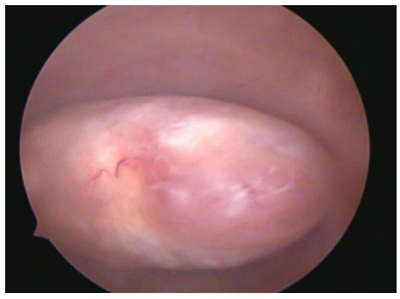
A Polipectomia histeroscópica
B Bio
C Histerectomia total videolaparoscópica
D Curetagem uterina
Questão 1013 · Ginecologia · 4000196264Mulher, 47a, refere sangramento uterino anormal com aumento da quantidade e de dias de uxo menstrual. Antecedentes: hipertensão arterial, tabagismo 15 cigarros/dia. Ultrassonogra a: u 90x77x53mm; miome (2,1cm). Exame histerosco A paciente na A MENOPAUSA?

A Expectante.
B Sistema intrauterino liberador de levonorgestrel.
C Ana
D Pi
Questão 1014 · Ginecologia · 4000196263Mulher, 65a, apresentou três episódios de sangramento po ultrassonogra a transvaginal: endome histeroscopia com achado na figura a seguir. O DIAGNÓSTICO PROVÁVEL É:
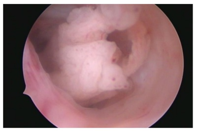
A Atro a ci
B Po
C Ca
D Metaplasia o
Questão 1015 · Tratamento · 4000196262Mulher, 33a, procura ginecologista referindo que parou anticoncepcional oral há dois anos para engravidar. Desde então, apresenta ciclos irregulares, cando até três meses sem menstruar. Refere uso de anticoncepcional desde a adolescência. Traz exames solicitados na Unidade Básica de Saúde: FSH=3,0mUI/mL;estradiol=98pg/mL; TSH=1,9µUI/mL; prolactina=20ng/mL; Histerossalpingogra a com sinal de Cotte positivo bilateral; Ultrassonogra a transvaginal: endométrio secretor de 8mm; ovário direito=14cc; ovário esquerdo=19cc e contagem total de folículo antral=28 O esposo, 36a, também realizou exames: testosterona total=450ng/dL; FSH=5,0mUI/mL. Espermograma: volume=2,5ml; concentração de espermatozoides= 25milhões/ml; motilidade progressiva rápida=10%; progressiva lenta=30%; não progressivos=50% e morfologia de Kruger=5%. A CONDUTA PARA ESTE CASAL COM INFERTILIDADE É:
A Realizar laparoscopia para drilling ovariano e pesquisa de endometriose.
B Tratar o marido com testosterona para melhorar a concentração dos espermatozoides.
C Realizar estimulação ovariana controlada com letrozol ou clomifeno.
D Indicar fertilização in vitro por fator tubário.
Questão 1016 · Ética em reprodução humana · 4000196261Casal homoafetivo masculino, procura serviço de reprodução assistida. DE ACORDO COM A RESOLUÇÃO DO CFM 2023/2022:
A Neste caso, a doadora de óvulos só pode ser anônima.
B É possível transferir dois embriões para o útero solidário: um embrião fertilizado com o espermatozoide de cada parceiro.
C Só é possível transferir um embrião, já que a doadora de óvulos deve ter menos de 35 anos.
D A cedente temporária de útero deverá ser parente de até 4º grau de um dos parceiros e deve ter ao menos um filho vivo.
Questão 1017 · Tratamento · 4000196260Casal procura serviço de reprodução pois desejam ter um lho. Esposa, 49a, menopausada há cinco anos (confirmada laboratorialmente). Traz ultrassonogra a transvaginal: útero de tamanho normal; linha endometrial=2mm; ovários diminuídos, sem folículos antrais. Esposo, 56a, traz espermograma normal. Casal deseja saber sobre possibilidades de gestação, já que viu a notícia da gravidez da Claudia Raia aos 55 anos. NAS ORIENTAÇÕES DO CASAL, QUAL INFORMAÇÃO ESTÁ INCORRETA
A Apesar de menopausa confirmada, é possível, com a estimulação ovariana induzir o crescimento folicular e obter óvulos para fertilização in vitro.
B É possível gravidez na menopausa utilizando óvulos de doadora, com boas chances de sucesso.
C É possível gravidez na menopausa com óvulos próprios, se houve congelamento prévio de seus óvulos ou embriões, e a chance de sucesso está muito relacionada à idade em que se congelou os óvulos.
D Em relação ao homem, geralmente a produção espermática permanece mesmo em idades avançadas, sendo possível gestação.
Questão 1018 · Tratamento da inf ertilidade masculina · Tratamento da inf ertilidade f eminina · 4000196259EM RELAÇÃO AO TRATAMENTO DO CASAL INFÉRTIL, EM QUAL (IS) SITUAÇÃO(ÕES) SERIA POSSÍVEL REALIZAR INSEMINAÇÃO INTRAUTERINA? I.Mulher, 30a, com ultrassonogra a transvaginal normal e histerossalpingra a com Cottè negativo bilateral. Parceiro com espermograma normal. II.Mulher, 27a, com ultrassonogra a normal e histerossalpingogra a com Cottè positivo bilateral. Parceiro com espermograma com 2 milhões de espermatozoides progressivos/ml após processamento seminal. III.Mulher, 30a, anovulatória com ultrassonogra a sugestiva de ovários policísticos e histerossalpingogra a com Cottè positivo bilateral. Parceiro com oligospermia leve e 10 milhões de espermatozoides progressivos/mL, após processamento seminal. IV.Mulher, 29a, com antecedente de salpingooforectomia à direita e histerossalpingogra a mostrando tuba esquerda normal com Cottè positivo a esquerda. Parceiro com sêmen normal e 20 milhões de espermatozoides progressivos/mL, após processamento seminal.
A I e IV
B I e II
C II e III
D III e IV
Questão 1019 · Diagnóstico · Ginecologia · Tumores ovarianos benignos · 4000196258Mulher, 38a, apresenta quadro de dor pélvica e no exame físico tem dor à mobilização de colo uterino com massa anexial palpável à esquerda. Ultrassonogra a transvaginal: cisto multilocular (2 loculações), com ecotextura mista, sem componente sólido, medindo 6 cm, sem vascularização (IC=1), nem ascite. CLASSIFIQUE A IMAGEM SEGUNDO OS CRITÉRIOS DE IOTA COM BASE NA DESCRIÇÃO DO ACHADO ULTRASSONOGRÁFICO E SUGIRA UMA POSSÍVEL ETIOLOGIA PARA A MASSA ANEXIAL.

A IOTA I (indeterminado); cistoadenoma seroso.
B IOTA B (benigno); endometrioma ovariano.
C IOTA B (benigno); abscesso ovariano.
D IOTA M (maligno); tumor borderline.
Questão 1020 · Tumores anexiais e câncer de ovário · 4000196257DURANTE A AVALIAÇÃO DE PACIENTE COM MASSA ANEXIAL, QUAIS ACHADOS DEVEM SER VALORIZADOS COMO INDICADORES DE RISCO PARA NEOPLASIA DE OVÁRIO?
A Marcadores tumorais normais, idade acima de 50 anos, história familiar de câncer de mama, ultrassonografia com Doppler IC=1 em massa anexial, unilocular e sem projeções sólidas.
B Marcadores tumorais elevados, idade acima de 50 anos, história familiar de câncer de ovário ou mama, ultrassonografia com Doppler IC=4 em massa anexial, cisto multiloculado com maior diâmetro acima de 10cm e projeções sólidas
C Cisto unilocular com projeção sólida até 7mm, ultrassonografia com Doppler com IC=1 na massa anexial, idade acima de 50 anos, massa anexial móvel ao exame físico.
D Marcadores tumorais suprimidos, idade acima de 50 anos, ausência de fluxo sanguíneo na ultrassonografia, história familiar negativa para câncer de ovário.
Questão 1021 · Sangramento uterino anormal · 4000196256Mulher, 38a, G3P3C3FV3, laqueada na ocasião do último parto, vem com queixa de sangramento uterino anormal acompanhado de dismenorreia de leve intensidade. Apresenta ciclos regulares a cada 35 dias, com uxo moderado e duração de 4-5 dias, porém, cerca de dois dias depois do m do uxo menstrual tem início sangramento anormal em pouca quantidade com sangue em “borra de cafe Durante investigação de quadro clínico foi evidenciada a imagem a seguir, respectivamente, em ultrassonografia transvaginal e em ressonância magnética: QUAL A POSSÍVEL ETIOLOGIA DO SANGRAMENTO UTERINO ANORMAL E QUAL O FATOR DE RISCO QUE A PACIENTE APRESENTA PARA O DESENVOLVIMENTO DE TAL QUADRO?

A Adenomiose; endometriose.
B Adenomiose; antecedente de parto cesárea.
C Istmocele; múltiplas cesáreas.
D Istmocele; multiparidade.
Questão 1022 · Ginecologia · 4000196255Ao nal do procedimento de uma histerectomia vaginal com xação da cúpula vaginal no ligamento sacroespinhoso, colporra a anterior e posterior mais perineorra a, paciente refere uma dor na coxa bilateralmente ao etir as mesmas depois que a anestesia regional terminou seu efeito. Ao exame, verifica- se uma anestesia na face anterior da coxa. Ao investigar as causas, verifica-se que houve uma hiperangulação na exão da coxa durante posicionamento. QUAL O POSSÍVEL NERVO ATINGIDO DURANTE O PROCEDIMENTO?
A Nervo cutâneo femoral.
B Nervo genitofemoral,
C Nervo ilio-hipogástrico.
D Nervo ilioinguinal.
Questão 1023 · Ginecologia · 4000196254Mulher, 35a, G1P0, 40 semanas, em trabalho de parto, encontra-se em segundo período de parto (1h30min com analgesia peridural). Indicado fórcipe de Simpson por apresentação occiptosacro mais categoria 2 na cardiotocogra a intraparto persistente a manobras de reanimação. Realizada episiotomia mediolateral de 2,5cm de extensão. Recém-nascido de 3.500g, Apgar 6/10, sem outras intercorrências neonatais. Residente de primeiro ano realiza toque retal e percebe algo “diferente”, como uma possível ruptura muscular próximo ao canal anal. AVALIE A FOTO ACIMA E ESCOLHA A POSSÍVEL CLASSIFICAÇÃO BASEADA NO ROYAL COLLEGE OF OBSTETRICIANS AND GYNECOLOGISTS DE LESÕES SEVERAS PERINEAIS INTRA-PARTO.
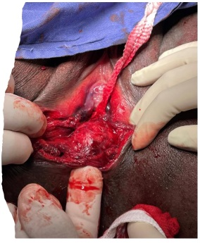
A 2º grau.
B 3º grau tipo A.
C 3º grau tipo B.
D 4º grau.
Questão 1024 · Ginecologia · 4000196253SOBRE A ENDOMETRIOSE QUE ACOMETE O TRATO URINÁRIO, É CORRETO AFIRMAR QUE:
A Ureteres estão frequentemente acometidos na forma intestinal profunda, de forma intrínseca.
B O tratamento cirúrgico é realizado de forma excepcional na endometriose vesical, sendo o tratamento clínico eficaz para a resolução dos sintomas.
C O comprometimento intrínseco do ureter é raro, e deve ser tratado cirurgicamente através da remoção da lesão, seguida de anastomose término-terminal ou reimplante ureteral.
D A ureterólise é parte importante da cirurgia de tratamento de endometriose profunda, uma vez que medialmente ao ureter encontramos estruturas importantes como os nervos esplâncnicos pélvicos.
Questão 1025 · Ginecologia · 4000196252SOBRE O TRATAMENTO CIRÚRGICO DA ENDOMETRIOSE INTESTINAL, É CORRETO AFIRMAR QUE:
A Lesões laterais se beneficiam da técnica de ressecção discóide.
B Ressecções do tipo segmentar estão indicadas na doença intestinal multicêntrica.
C É mandatória a realização de estomias de proteção no caso de ressecções superiores a 20 cm de extensão.
D O grampeamento discóide é uma técnica que apresenta maior risco de lesão inadvertida de nervos, como o hipogástrico.
Questão 1026 · Ginecologia · 4000196251SOBRE ENDOMETRIOSE PROFUNDA, É INCORRETO AFIRMAR:
A O CA-125 é uma ferramenta diagnóstica importante, de baixo custo, e com alta sensibilidade e especificidade.
B A recidiva dos endometriomas ovarianos tratados também está relacionada à radicalidade da cirurgia.
C O tratamento da endometriose de vagina deve ser feito por via abdominal.
D A suspensão ovariana durante o ato cirúrgico favorece a identificação, individualização de estruturas e tratamento da doença posterior.
Questão 1027 · Anatomia do trato genital f eminino · Tratamento · 4000196250A fotografia abaixo representa um passo da promontofixação laparoscópica: De forma geral, a recomendação é que, ao passar a agulha no ligamento longitudinal anterior que deve ancorar a tela na sua parte cranial, o cirurgião não ultrapasse a espessura máxima da mesma, para que não aumente o risco de discite local. ASSINALE O LIMITE DA ESPESSURA DESSA ESTRUTURA:

A 2 milimetros.
B 5 milimetros.
C 10 milimetros.
D 20 milimetros.
Questão 1028 · Diagnóstico · 4000196249Camila foi atendida no Ambulatório de Infecções Genitais da Unicamp com queixa de corrimento vaginal há três semanas. Foi examinada pela residente do 2º ano, que executou exame ginecológico completo e colheu material para o exame de bacterioscopia a fresco e corada por gram. Foram observadas alterações que sugerem o diagnóstico de tricomoníase. SOBRE O CASO DESCRITO, ASSINALE A AFIRMATIVA CORRETA
A Observou-se corrimento esverdeado, grumoso, inodoro, teste de Whiff positivo, gram de secreção vaginal com diplococos gram negativos intracelulares.
B Observou-se corrimento branco, inodoro e com aspecto caseoso, fissuras e maceração da pele, pH vaginal=5,0 e teste de Whiff positivo.
C Observou-se corrimento abundante, amarelado esverdeado, bolhoso, com colpite, parasita flagelado movimentando entre as células epiteliais e os leucócitos no exame a fresco.
D Observou-se ao exame a fresco a presença de "ce
Questão 1029 · Abordagem da paciente com queixa de úlcera genital · 4000196248Mulher procura Pronto Socorro de Ginecologia muito preocupada com o aparecimento de feridas dolorosas em região íntima há quase um mês. Diz que sua última relação sexual foi há uma semana e que seu método contraceptivo é DIU de cobre, que usa há dois anos. Nega febre, mas apresenta um corrimento amarelado há alguns dias (não sabe quantos). Exame ginecológico: lesão ulcerada no quadrante vulvar II, não única, sendo a maior úlcera com diâmetro de 1cm; infartamento ganglionar bilateral não inflamatório. OS EXAMES AUXILIARES PARA ELUCIDAÇÃO DIAGNÓSTICA SÂO:
A Sorologias para HIV, Sífilis e Hepatite B; biópsia da lesão ulcerada.
B Teste Rápido para Sífilis e HIV; imprint da lesão maior.
C Imprint da lesão maior; punção de linfonodo para cultura.
D Teste rápido para Sífilis e HIV; biópsia da lesão ulcerada.
Questão 1030 · Ginecologia · Anatomia do trato genital f eminino · 4000196247OS LIMITES DO ESPAÇO DE RETZIUS SÃO:
A Ligamento uterossacro; ligamento de Cooper; arco tendíneo da fáscia pélvica.
B Ligamento pubovesicouterino; ligamento sacroespinhoso; artéria umbilical obliterada.
C Ligamento de Cooper; arco tendíneo da fáscia pélvica; parede vesical anterior.
D Ligamento longitudinal anterior; músculo obturador; fáscia pré-vesical.
Questão 1031 · Falência ovariana prematura · Fator ovulatório · 4000196246QUANTO AOS TRATAMENTOS DA INSUFICIÊNCIA OVARIANA PREMATURA, É CORRETO AFIRMAR:
A Deve ser prescrita terapia hormonal com estrogênio e progestagênio até pelo menos 50 anos de idade.
B Não deve ser prescrito terapia hormonal com estrogênio e progestagênio por tempo maior do que cinco anos, pelo risco de câncer de mama e tromboembolismo.
C Os contraceptivos hormonais combinados estão contraindicados, independentemente do desejo reprodutivo.
D O tratamento consiste unicamente de melhores hábitos de vida, atividade física, uso de cálcio e vitamina D
Questão 1032 · Anatomia do trato genital f eminino · 4000196245O URETER É UTILIZADO COMO MARCO DIVISÓRIO DOS SEGUINTES ESPAÇOS:
A Okabayashi e Latzko.
B Pararretal e Latzko.
C Yabuki e pararretal.
D Paravesical e pré-sacral.
Questão 1033 · Tratamento · Anatomia do trato genital f eminino · 4000196244AS ILUSTRAÇÕES ABAIXO REPRESENTAM A CIRURGIA GINECOLÓGICA DE:
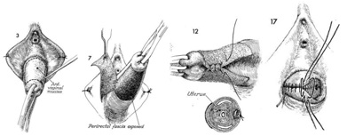
A Colpectomia.
B Colpocleise.
C Colporrafia anterior.
D Perineorrafia.
Questão 1034 · Ginecologia · 4000196243Mulher, 49a, comparece ao ambulatório com queixa de ondas de calor e insônia há 24 meses, com piora gradativa. Antecedentes: câncer de endométrio tratado cirurgicamente com histerectomia, anexectomia bilateral e linfadenectomia pélvica e paraaórtica. Não apresenta outros antecedentes mórbidos. A CONDUTA É:
A Venlafaxina 75 mg por dia
B Estradiol 2 mg e didrogesterona 10 mg via oral por dia
C Etinilestradiol 30 mg e levonorgestrel 150 mg via por dia
D Estradiol 1 mg via transdérmica por dia
Questão 1035 · Ginecologia · 4000196242Mulher, 28a, encaminhada do ambulatório de gastrocirurgia com queixa de irregularidade menstrual. Refere ciclos de 3-4 dias e intervalo de 15-40 dias. Antecedentes: duas gestações prévias com dois partos vaginais; cirurgia bariátrica disabsortiva há 10 meses, com perda de 30 kg. Ultrassonogra a transvaginal: sem alterações. A MELHOR CONDUTA É PRESCREVER:
A Anel vaginal com etonogestrel e etinilestradiol.
B Pílula com progestagênio isolado com desogestrel.
C Contraceptivo oral combinado com etinilestradiol e levonorgestrel.
D Pílula com progestagênio isolado com noretisterona.
Questão 1036 · Ginecologia · 4000196241Mulher nuligesta, 21a, encaminhada do ambulatório de hematologia para avaliação de contracepção. Tem antecedente de fratura em perna esquerda com necessidade de imobilização e que evoluiu com trombose venosa profunda. Recebeu tratamento com anticoagulantes por 6 meses e atualmente não faz uso de medicação. Foram realizados exames para detecção de mutações trombogênicas (fator V. Leiden, protrombina, proteína S, proteína C e de ciência de antitrombina) sem alterações. A MELHOR CONDUTA É PRESCREVER:
A Pílula com progestagênio isolado com desogestrel.
B Adesivo com norelgestromina e etinilestradiol.
C Contraceptivo oral combinado com etinilestradiol e levonorgestrel.
D Anel vaginal com etonogestrel e etinilestradiol.
Questão 1037 · Papilomavírus humano HPV · 4000196239Os dois principais tipos histológicos de câncer cervical, e a doença pré-invasiva que corresponde a esses tipos histológicos compartilham muitos dos mesmos fatores de risco. SÃO FATORES DE RISCO RELACIONADOS AO HPV, EXCETO:
A Início precoce da atividade sexual.
B História de infecções sexualmente transmissíveis.
C Imunossupressão.
D Uso de anticoncepcional oral.
Questão 1038 · Ginecologia · 4000196237Mulher trans procura médico especialista em cirurgia de a rmação de gênero sobre o desejo cirúrgico em nalizar transição. Está em uso de hormonioterapia e já vive experiência de vida real. ASSINA A OPÇÃO CORRETA SOBRE INFORMAÇÕES A SEREM TRANSMITIDAS PARA A PACIENTE SOBRE O PROCEDIMENTO CIRÚRGICO GENITALIZADOR FEMININO A SER REALIZADO:
A A próstata é retirada após a etapa da orquiectomia e a penectomia parcial por abordagem posterior.
B Existe um risco de lesão anorretal durante a confecção tunelizante da neovagina.
C Retira-se a junção uretrovesical para confeccionar a neouretra e reconstituição do neoclitoris.
D Os cuidados no pós-operatório de neovagina não dependem da fonte que será constituída a sua parede.
Questão 1039 · Ginecologia · 4000196236Mulher, 35a, comparece ao ambulatório com quadro de dor em hipogastro, que piora quando a bexiga está repleta, há dois anos. Refere ainda aumento da frequência miccional (12 vezes durante o dia) e melhora da dor com o esvaziamento vesical. Exame físico e ginecológico normais. Exame de urina, urocultura, ultrassonografia transvaginal, ressonância pélvica e cistoscopia sem alterações. QUAL O DIAGNÓSTICO?
A Síndrome dolorosa vesical.
B Síndrome da bexiga hiperativa.
C ITU de repetição.
D Tumor de bexiga.
Questão 1040 · Epidemiologia · Ginecologia · 4000196235A metanálise abaixo foi retirada do seguinte estudo publicado (Frederice, C.P., Brito, L.G.O., Pereira, G.M.V. et al. Interventional treatment for myofascial pelvic oor pain in women: systematic review with meta- analysis. Int Urogynecol J 32, 1087–1096 (2021). https://doi.org/10.1007/s00192- 021-04725-x). Nela, existem forest plots analisando intervenções para mulheres com dor pélvica miofascial e sua influência na função sexual analisada através do questionário FSFI (Female Sexual Function Index). Esse questionário tem vários domínios (desejo – A; excitação – B; lubri cação – C; orgasmo – D; satisfação – E; dor – F; escore total – G) identificados no gráfico abaixo. APÓS ANALISAR A FIGURA ABAIXO, ASSINALE A RESPOSTA CORRETA PARA AQUELES DOMÍNIOS DO FSFI ONDE HOUVE UMA MELHORA DO ESCORE CONSIDERADA ESTATISTICAMENTE SIGNIFICANTE FEITA PELO CONJUNTO DE INTERVENÇÕES:

A Desejo e orgasmo.
B Escore total e dor.
C Satisfação e dor.
D Lubrificação e excitação.
Questão 1041 · Critérios de elegibilidade da OMS · 4000196217Para pacientes com diagnóstico no menacme de adenocarcinoma epitelial de ovário, pelos critérios de elegibilidade de método anticoncepcional para iniciação do uso da Organização Mundial da Saúde (OMS), SÃO CONSIDERADOS CATEGORIA 3 (“CONDIÇÃO EM QUE OS RISCOS TEÓRICOS OU COMPROVADOS GERALMENTE SUPERAM AS VANTAGENS DO USO DO MÉTODO”):
A anticoncepcional oral combinado de baixa dosagem / anticoncepcional injetável combinado.
B anel vaginal combinado / anticoncepcional oral de desogestrel.
C acetato de medroxiprogesterona de depósito / implante subdérmico de etonogestrel.
D dispositivo intrauterino de cobre / sistema intrauterino liberador de levonorgestrel.
Questão 1042 · Fatores de risco · 4000196216Em relação às ferramentas de previsão de risco de câncer de mama, É CORRETO AFIRMAR QUE O MODELO DE GAIL:
A É apropriado para mulheres com carcinomas ductais ou lobular in situ, ou ainda com radiação torácica anterior devido a linfoma de Hodgkin.
B Inclui história familiar além de parentes de primeiro grau com câncer de mama, com a construção de um heredograma até terceiro grau.
C Considera fatores de risco não-genéticos, como idade da menarca, primeiro nascimento a termo e histórico de biópsia, incluindo hiperplasia atípica.
D Leva em consideração outros tipos de câncer além do adenocarcinoma ovariano epitelial, ou parentes paternos com câncer.
Questão 1043 · Hormonioterapia · Imunoterapia · 4000196209Paciente tratada de câncer de mama, em regime de adjuvância, com anticorpos monoclonais e com inibidores de aromatase, APRESENTAVA QUAL PERFIL IMUNOHISTOQUÍMICO?
A RE=90% | RP=90% | HER-2 score 0+ | Ki-67=10%.
B RE=50% | RP=60% | HER-2 score 3+ | Ki-67=40%.
C RE=70% | RP=50% | HER-2 score 2+, FISH=negativo | Ki-67=30%.
D RE=negativo | RP=negativo | HER-2 score 2+, FISH=positivo | Ki-67=80%.
Questão 1044 · Diagnóstico · 4000196202CASOS DE MASSAS ANEXIAIS COM ASCITE DEVEM SER CLASSIFICADOS EM QUAL CATEGORIA O- RADS®?
A O-RADS 0.
B O-RADS 4.
C O-RADS 6.
D O-RADS 5, desde que não haja uma patologia de base que possa justificar a ascite.
Questão 1045 · Ginecologia · 4000195023Paciente do sexo feminino, 21 anos de idade, refere que não menstrua há 4 meses e apresenta espinhas no rosto. Procura o ambulatório de ginecologia porque está tentando engravidar há 3 anos, sem sucesso. Ao exame físico, foi observado índice de Ferriman-Gallwey = 9. Qual é a conduta indicada?
A Metformina.
B Drilling.
C Letrozol.
D Análogo do GnRH.
Questão 1046 · Ginecologia · 4000195022Mulher de 56 anos de idade refere saída de secreção da mama direita há 3 meses (vide imagem). O exame físico mamário não apresentou nódulos ou linfonodomegalias, e os exames de imagem (mamogra a e ultrassom) não apresentaram alterações. Qual é a causa mais provável para esse quadro?
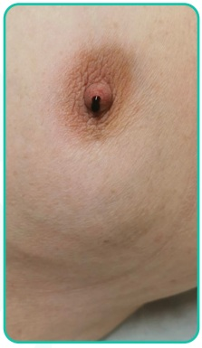
A Carcinoma.
B Ectasia ductal.
C Adenoma de hipófise.
D Papiloma.
Questão 1047 · Ginecologia · 4000195021Mulher de 37 anos de idade comparece ao serviço de Mastologia com queixa de nódulo na mama esquerda. Ao exame físico, foi observado nódulo de 1,3 cm, periareolar às 6h da mama esquerda, pouco doloroso. Ausência de linfonodomegalias. Foi submetida a exame ultrassonográ co (imagem a seguir). Qual é a conduta mais indicada?
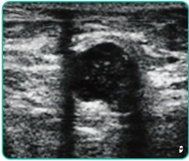
A PAAF.
B Core biopsy
C Biópsia por agulha grossa vácuo-assistida guiada por ultrassonografia.
D Seguimento.
Revisar: possível letra faltando em enunciado
Questão 1048 · Ginecologia · 4000195020Mulher de 25 anos, IGIPC, comparece ao ambulatório de ginecologia com queixa de cólicas menstruais e dor na relação sexual, que vem piorando há 2 anos. O exame físico ginecológico apresentou anexo esquerdo pouco aumentado e doloroso à palpação. Foi solicitada ultrassonogra a transvaginal que mostrou ovário esquerdo aumentado, apresentando cisto de contornos regulares, com conteúdo em “vidro moído”, medindo aproximadamente 2,4 x 3,6 cm (veja a imagem a seguir). Qual é a conduta indicada para esse caso?
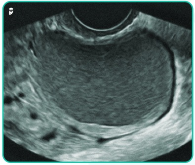
A Punção aspirativa guiada por ultrassom para drenagem do cisto.
B Ooforectomia.
C Cistectomia.
D Seguimento ultrassonográfico.
Questão 1049 · Ginecologia · 4000195019Mulher de 49 anos, IGIPN, comparece ao pronto-socorro de ginecologia referindo sangramento vaginal excessivo há 2 dias e fraqueza. Refere irregularidade menstrual há 7 meses. Ao exame físico, apresenta-se descorada +/4+, FC = 90 bpm e PA = 110 x 70 mmHg após infusão de volume (SF 0,9%). Ao exame físico ginecológico, foi observado sangramento ativo, exteriorizando-se através do orifício do colo. Ao toque bimanual, foi observado útero de volume normal. Teste de gravidez negativo. Qual é a conduta indicada para esse caso?
A Biópsia do endométrio.
B Estrogênio e progestágeno em altas doses.
C Histerectomia total abdominal.
D Curetagem uterina.
Questão 1050 · Ginecologia · 4000194644Paciente de 2 4 anos vem a o ambulatório d e ginecologia referindo ausência de menstruação há 6 meses. Refere que sua primeira menstruação foi aos 14 anos e que, desde então, seus ciclos sempre vieram de maneira irregular, chegando a car at é 4 meses sem menstruar. Além d a irregularidade menstrual, refere acne em região de tronco e face e leve hirsutismo. Pensando na principal hipótese diagnóstica para o quadro, que exames são indispensáveis na investigação do quadro?
A Dosagem de testosterona total e livre e de insulina e ultrassonografia pélvica.
B TSH, prolactina, FSH, beta-hCG e 17 OH progesterona.
C Ultrassonografia pélvica, RNM de crânio e FSH.
D LH, FSH, testosterona total e livre, SDHEA e 17OH progesterona.
Questão 1051 · Ginecologia · 4000194643Paciente vem ao pronto-socorro com história de dor pélvica de instalação súbita há 4 horas. Refere que estava na academia e começou a sentir uma dor intensa na região pélvica e que está piorando. Refere que há 4 meses tem episódios esporádicos de dor pélvica, que melhoraram espontaneamente. Refere que apresentou um episódio de vômito associado à dor. Refere que a última menstruação foi há 12 dias e utiliza DIU de cobre como método contraceptivo há 3 anos. Nega outros sintomas associados. No exame físico, apresenta dor importante em fossa ilíaca direita, com descompressão brusca duvidosa. A paciente foi submetida a uma ultrassonografia com a imagem a seguir: Qual é a principal hipótese diagnóstica para o caso e a conduta a ser tomada?
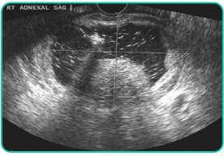
A Cisto hemorrágico roto; observação clínica.
B Abscesso tubo ovariano; internação hospitalar para drenagem.
C Torção ovariana; videolaparoscopia de urgência.
D Endometrioma; prescrever anticoncepcional combinado contínuo.
Questão 1052 · Ginecologia · 4000194642Mulher de 32 anos encontra-se no 30º dia de puerpério e vem em consulta na UBS solicitando um método contraceptivo, pois não deseja ter mais lhos. Ela foi submetida a um parto cesáreo por desproporção céfalo-pélvica e corioamnionite, tendo sido tratada com antibiótico após o parto.. Encontra-se em aleitamento exclusivo e nega queixas. De acordo com os critérios de elegibilidade da OMS, qual é o método mais adequado para essa paciente?
A DIU de cobre.
B Injetável mensal.
C Implante subdérmico.
D Amenorreia lactacional.
Questão 1053 · Ginecologia · 4000194641Paciente de 2 6 anos realizou seu segundo exame de colpocitologia oncótico, e o resultado foi uma lesão intraepitelial de alto grau (LIEAG). O médico de família encaminhou-a para a realização de colposcopia. Durante o exame, foi evidenciada uma lesão acetobranca densa como mosaico grosseiro (achados maiores), com junção escamo-colunar completamente visível, sem suspeitas de invasão. Diante desse caso, qual é a conduta a ser realizada no momento?
A Cauterização do colo uterino.
B Repetição da colposcopia e da citologia em 6 meses.
C Biópsia do colo uterino.
D Exérese da zona de transformação.
Questão 1054 · Ginecologia · 4000194640Adolescente de 17 anos vem ao consultório do ginecologista queixando-se de nunca ter menstruado. Refere que, por volta dos 14 anos, apresentou início do desenvolvimento das mamas, mas que elas não cresceram muito. Ao exame físico, a paciente apresenta estágio de Tanner M3P1. Diante do exposto, qual é a principal hipótese diagnóstica para o caso?
A Síndrome de insensibilidade androgênica.
B Disgenesia gonadal pura.
C Síndrome de Kallmann.
D Síndrome de Rokitansky.
Questão 1056 · Ginecologia · 4000194539Uma paciente de 61 anos, diabética e hipertensa, menopausada desde os 52 anos, nunca recebeu terapia hormonal. Refere sangramento genital esporádico há 3 meses. O ultrassom transvaginal apresenta volume uterino de 41 cm³; e endométrio de 8 mm. Ovários não foram visualizados. Qual é a conduta mais indicada?
A Seguimento ultrassonográfico em 6 meses
B Progestágeno em altas doses
C Histerectomia
D Creme vaginal de estrogênio
E Histeroscopia diagnóstica
Questão 1057 · Ginecologia · 4000194538Assinale a alternativa que descreve o achado mais suspeito de câncer de mama:
A Nódulo fibroelástico móvel, bem delimitado, indolor, localizado no quadrante superolateral direito.
B Nódulo amolecido, mal delimitado, doloroso, localizado no quadrante superomedial esquerdo.
C Nodularidade bilateral nos quadrantes superolaterais precedendo a menstruação.
D Nódulos bilaterais múltiplos, fibroelásticos.
E Nódulo indolor, de limites imprecisos, localizado no quadrante ínferolateral direito.
Questão 1058 · Ginecologia · 4000194537Mulher, 26 anos, comparece para consulta ginecológica de rotina para mostrar resultado de colpocitologia oncótica apresentando lesão de baixo grau (LSIL). Qual é a conduta indicada para esse caso?
A Seguimento com nova citologia em 6 meses.
B Seguimento com nova citologia em 12 meses.
C Seguimento com nova citologia em 3 anos.
D Solicitar colposcopia.
E Indicar exérese da zona de transformação.
Questão 1059 · Ginecologia · 4000194536D.S.M., feminino, 45 anos, comparece ao ginecologista queixando-se de aumento do uxo menstrual e cólicas que vêm piorando, há 6 meses. Ao exame físico, não foram observadas alterações. O exame ultrassonográ co apresentou útero de 90 cm³, miométrio heterogêneo e eco endometrial de 9 mm. Ovários normais. Considerando o caso descrito, qual é a hipótese diagnóstica?
A Miomatose uterina
B Pólipo
C Hiperplasia endometrial
D Endometriose
E Adenomiose
Revisar: possível letra faltando em enunciado
Questão 1060 · Ginecologia · 4000194535Considerando o Sangramento Uterino Anormal (SUA), analise as assertivas e assinale a alternativa correta. I. A FIGO (Federação Internacional de Ginecologia e Obstetrícia), classi cou as causas de SUA em estruturais e não estruturais de acordo com o mnemônico PALM COEIN. II. As causas estruturais incluem: miomatose uterina, endometrial, pólipos e a adenomiose. III. A causa mais comum de sangramento uterino anormal nos primeiros anos após a menarca são as coagulopatias, principalmente a Sd. de Von Willebrand. IV. Na faixa etária dos 20 aos 40 anos de idade, as causas mais frequentes de sangramento uterino anormal são as causas estruturais e, entre elas, a principal é a miomatose uterina.
A Nenhuma das assertivas são corretas.
B Todas as assertivas são corretas.
C Apenas a assertiva I é correta.
D Apenas três assertivas são corretas.
E Apenas as assertivas I e IV são corretas.
Questão 1061 · Ginecologia · Obstetrícia · 4000194485Sobre a doença inflamatória pélvica (DIP) é correto afirmar:
A parcerias sexuais dos últimos 2 meses antes do diagnóstico, sintomáticas ou não, devem ser tratadas empiricamente para infecção por
B em caso de pessoas que utilizam DIU, este deve ser removido imediatamente
C o tratamento ambulatorial de primeira opção é composto por ceftriaxona + doxiciclina
D em caso de DIP em gestante, contraindica-se o tratamento hospitalar, para diminuir a exposição da gestante a microrganismos multirresistentes
Questão 1062 · DIU de cobre · 4000194484A respeito da utilização do dispositivo intrauterino (DIU) de cobre, está correto afirmar que:
A em caso de gestantes que queiram usar o método, deve- se aguardar 4 semanas pós-parto para se executar a inserção
B recomenda-se a ultrassonografia após a inserção para confirmação do posicionamento correto do dispositivo
C sua inserção deve ser precedida de ultrassonografia para avaliação de anomalias anatômicas uterinas
D pode ser inserido em nulíparas sem realização de exames de imagem prévios
Questão 1063 · Ginecologia · Obstetrícia · 4000194483Sobre a solicitação de ultrassonografia (USG) obstétrica em gestações de baixo risco, é correto afirmar:
A recomenda-se a realização de USG com 32 semanas para avaliação fetal próxima ao termo
B a USG obstétrica, quando realizada entre 18 e 20 semanas, tem alta sensibilidade para o diagnóstico de malformações fetais
C recomenda-se a realização de pelo menos uma USG morfológica ao longo do pré-natal, de preferência próximo às 24 semanas de gestação
D recomenda-se solicitar a USG quando há incerteza sobre a DUM, quando a gestante apresenta ciclos menstruais irregulares ou quando houver discrepância entre a altura uterina e a IG presumida.
Questão 1064 · Ginecologia · Obstetrícia · 4000194482Sobre as doenças infecciosas durante a gravidez, pode-se afirma que:
A a vaginose bacteriana tem sido associada ao nascimento de crianças com baixo peso
B a ocorrência de síndrome da varicela congénita é a mais alta no Brasil, comparada com toxoplasmose e sífilis
C a infecção pelo vírus da rubéola, pode resultar em morte fetal, principalmente durante as últimas 16 semanas de gestação
D devido à baixa taxa de toxoplasmose congénita, atualmente não se recomenda a testagem durante as consultas de pré-natal de rotina
Questão 1065 · Ginecologia · Obstetrícia · 4000194481Em relação à solicitação de exames complementares durante o climatério, é correto afirmar que:
A a solicitação de FSH e LH são fundamentais para a confirmação do climatério
B a densitometria óssea deve ser solicitada após 6 meses sem menstruação
C toda mulher no climatério deve seguir a orientação de realizar mamografia e ultrassonografia vaginal anualmente
D na maioria das vezes não é necessário solicitar exames complementares, sendo o diagnóstico predominantemente clínico
Questão 1066 · Ginecologia · Obstetrícia · 4000194480A conduta correta após um primeiro resultado de um exame citopatológico do colo do útero com resultado de células escamosas atípicas de significado indeterminado, talvez não neoplásica (ASC-US) em uma mulher com 25 anos de idade é:
A encaminhar para biópsia
B encaminhar para colposcopia
C repetir o citopatológico em 3 anos
D repetir o citopatológico em 12 meses
Questão 1067 · Ginecologia · Obstetrícia · 4000194479A elevação da pressão arterial anterior à gestação ou pressão arterial associada à idade gestacional de até 20 semanas e presente 12 semanas após o parto, é classificada como:
A hipertensão gestacional
B hipertensão crónica
C pré-eclâmpsia
D eclampsia
Questão 1068 · Ginecologia · Obstetrícia · 4000194478Dentre as causas genéticas de amenorreia, podemos citar:
A sínéquias uterinas
B síndrome de Turner
C síndrome de Cushing
D exercício físico excessivo
Questão 1069 · Pólipo endometrial · 4000194477Sobre os pólipos endometriais, está correto afirmar que:
A mulheres com baixo índice de massa corporal são mais propensas a apresentá-los
B precisa medir no mínimo 10 milímetros para receber essa nomenclatura
C o método de escolha para o diagnóstico é a ressonância magnética
D provavelmente são originários de uma hiperplasia focal endometrial
Questão 1070 · Ginecologia · Obstetrícia · 4000194476Um quadro de abortamento retido está adequadamente descrito por:
A gestação inviável em que não houve expulsão de nenhum produto da concepção, com ausência da abertura do colo do útero
B expulsão de todos os produtos da concepção, acompanhado por sangramento e dor
C sangramento genital de intensidade moderada com odor fétido, dor abdominal e febre
D expulsão parcial dos produtos da concepção acompanhado de dores intensas e colo do útero aberto
Questão 1071 · Ginecologia · Obstetrícia · 4000194475Em relação à gravidez ectópica, é correto afirmar:
A tem a nuliparidade como maior fator de risco
B é diagnosticada através de histeroscopia diagnóstica
C devem ser abordadas com medicação abortiva assim que suspeitada
D cursa com implantação e desenvolvimento do embrião fora da cavidade endometrial
Questão 1072 · Ginecologia · Obstetrícia · 4000194474O puerpério é o período que se inicia após o parto e dequitação da placenta e tem seus estágios correspondentes corretamente descritos por:
A imediato: 1° ao 20° dia
B tardio: 30 ao 45° dia
C remoto: além do 45° dia
D intermediário: 10° ao 20° dia
Questão 1073 · Ginecologia · Obstetrícia · 4000194441Em relação ao fibroadenoma da mama, assinale a afirmativa
A É o tumor benigno mais frequente da mama da mulher.
B É rara sua associação com malignidade.
C É um tumor exclusivamente glandular.
D É mais comum no menacme.
Questão 1074 · Ginecologia · Obstetrícia · 4000194440Durante a gestação, as alterações sofridas pelo organismo materno são profundas e multissistêmicas. A sua integração visa proporcionar as condições necessárias para o desenvolvimento fetal em equilíbrio com o sistema materno. As adaptações ocorrem em resposta a estímulos provenientes do feto. Sobre as modi cações adaptativas do organismo materno durante a gravidez, assinale a alternativa INCORRETA
A Pode ocorrer redução do peristaltismo intestinal pela ação miorrelaxante da progesterona.
B Pode ocorrer glicosúria e proteinúria pelo aumento do ritmo de filtração glomerular.
C Ocorre efeito hipoglicemiante materno pelo aumento sérico do hormônio lactogênio placentário.
D Ocorre aumento dos níveis séricos de colesterol LDL para esteroidogênese placentária.
Questão 1075 · Ginecologia · Obstetrícia · 4000194439Paciente primigesta, gestação de 40 semanas e pré-natal sem intercorrências. Admitida às 6hs no centro obstétrico em fase ativa do trabalho de parto, colo 90% apagado, com dilatação de 5cm, DU=2/30”/10’. Apresentação cefálica, bolsa íntegra, BCF 140bpm, plano de De Lee -3, transverso à direita. Avaliação das 11h mostrou colo no central, permeável para 6cm, plano De Lee zero, transverso à direita, amniorrexe com líquido claro traçado cardiotocográ co tranquilizador. Às 13h, dilatação de 7cm, De Lee +1, occipito direito anterior. Às 15h apresentava 10cm de dilatação, De Lee +2, occipito púbico. Às 19h paciente está completamente exausta e ainda se encontra com 10cm, De Lee de +2, líquido meconial uido e BCF 100bpm, 4/40”/10”. Considerando o caso descrito, a conduta
A Parto vaginal operatório e indicação do uso de vácuo extrator.
B Parto vaginal operatório e indicação de fórceps de Simpson.
C Parto vaginal operatório e indicação de fórceps de Kieland.
D Parto operatório e indicação de cesariana de urgência.
Revisar: possível letra faltando em enunciado
Questão 1076 · Ginecologia · Obstetrícia · 4000194438Paciente, 25 anos, primigesta, 28 semanas e 4 dias de gravidez, sem queixas, pré-natal em dia e exames normais. Até o momento ganhou 14kg. No cartão de pré-natal consta glicemia de jejum de 88mg/dl com 12 semanas. Traz o exame do teste de tolerância oral à glicose realizado há uma semana, com os seguintes resultados: • Glicemia de jejum de 97mg/dl. • Glicemia após 1 hora de dextrosol de 183mg/dl. • Glicemia após 2 horas de dextrosol 2 horas de 150mg/dl. Sobre o quadro exposto, é CORRETO afirmar que:
A O teste de tolerância oral à glicose é desnecessário caso a paciente gestante apresente valores de glicemia de jejum no primeiro trimestre inferiores a 92mg/dL.
B O fato de a gestante ser obesa e ter familiares com DM tipo 2 na família obriga à realização de teste de tolerância oral à glicose no primeiro trimestre.
C A melhor conduta nesse caso é realizar um segundo teste confirmatório, que poderá ser glicemia de jejum ou hemoglobina glicosilada.
D O diagnóstico da gestante é Diabetes Mellitus Gestacional (DMG) e a conduta inicial é orientação de dieta e prática de atividades físicas, tendo como base o teste de tolerância oral à glicose.
Questão 1077 · Ginecologia · Obstetrícia · 4000194437Paciente de 36 anos, primigesta, obesa, IG de 26 semanas e 1 dia, apresenta no ultrassom feto com peso no percentil 2, artéria umbilical com diástole reversa e ducto venoso com onda A positiva. Considerando o caso descrito, assinale a alternativa que apresenta melhor conduta.
A CIUR estágio 1, acompanhamento semanal.
B CIUR estágio 2, acompanhamento 2x na semana.
C CIUR estágio 3, acompanhamento diário.
D CIUR estágio 4, parto.
Questão 1078 · Ginecologia · Obstetrícia · 4000194436Paciente 17 anos, primigesta, IG 37 semanas e 2 dias, nega comorbidades. Dá entrada na maternidade com PA: 170x120mmHg, queixando cefaleia e epigastralgia. Informa movimentação fetal usual, nega perdas vaginais. Solicitado propedêutica HELLP, com resultado dentro da normalidade, exceto pela proteinúria positiva. De acordo com o quadro apresentado, assinale a
A Internação para controle da pressão com prescrição de metildopa, alta com seguimento ambulatorial após estabilidade dos níveis pressóricos.
B Prescrição de sulfato de magnésio para prevenção de eclampsia, hidralazina EV devido a níveis pressóricos e internação para parto, com via de parto obstétrica.
C Internação para cesariana imediata devido ao risco eminente de óbito fetal.
D Informação sobre a normalidade do quadro atual, prescrever anti-hipertensivo e dar alta da urgência.
Questão 1079 · Interações medicamentosas · 4000194435Paciente 26 anos, comparece ao seu consultório, pois convive há alguns anos com dispareunia e dismenorreia importantes, e recentemente recebeu diagnóstico de endometriose. Está sem método contraceptivo e deseja discutir sobre a melhor opção. Em relação ao seu histórico de saúde, revela ser portadora de epilepsia bem controlada com carbamazepina. De acordo com os critérios de elegibilidade, assinale a alternativa que apresenta o método para essa paciente.
A Anticoncepcional combinado.
B Pílula de progesterona isolada.
C DIU de cobre.
D Sistema intrauterino liberador de levonorgestrel.
Questão 1080 · Ginecologia · Obstetrícia · 4000194434Paciente de 18 anos, nuligesta, comparece a consulta ginecológica queixando-se de corrimento amareloesverdeado, ardor genital e dispareunia. Ao exame especular visualizado secreção bolhosa e colo uterino com aspecto de morango. Assinale a alternativa que apresenta
A Candidíase e fenticonazol via vaginal por 7 dias.
B Vaginose e metronidazol via oral 500mg de 12/12 horas por 7 dias.
C Tricomoníase e metronidazol via oral 2g dose única, recomendado ainda o tratamento do parceiro.
D Tricomoníase e metronidazol via oral 2g dose única, não recomendado o tratamento do parceiro.
Questão 1081 · Ginecologia · Obstetrícia · 4000194373A ligadura da artéria hipogástrica é indicada na abordagem da hemorragia pélvica feminina maciça, quando outras medidas falham. Em relação a esse enunciado assinale a alternativa CORRETA:
A A artéria hipogástrica origina-se cranialmente à bifurcação da artéria ilíaca comum
B A ligadura da artéria hipogástrica aumenta a pressão de pulso da pelve
C As estruturas pélvicas continuam sendo irrigadas por canais colaterais da circulação
D As pacientes submetidas à ligadura bilateral das artérias hipogástricas não tem possibilidade de futura gestação
Questão 1082 · Planejamento f amiliar · 4000194372Os anticoncepcionais hormonais proporcionam excelente contracepção quando usados de maneira correta. Assinale a alternativa CORRETA:
A Nem todos anticoncepcionais de estrogênio associado à progesterona aumentam o risco de tromboembolismo
B Os anticoncepcionais hormonais reduzem o risco de câncer de endométrio e de ovário
C Os anticoncepcionais orais apenas de progestogênio aumentam o risco de trombose.
D Os anticoncepcionais orais aumentam o risco de câncer de mama
Questão 1083 · Ginecologia · Obstetrícia · 4000194371Paciente de 26 anos procura o centro de saúde relatando dor pélvica há 45 dias. Nega uso de contraceptivos orais ou atividade sexual nos últimos 6 meses. Foi realizado exame de ultrassonogra a endovaginal que revelou massa cística de 4,5cm, anecoica e de limites regulares em ovário direito. Qual a MELHOR CONDUTA
A Indicar cirurgia (ooforoplastia)
B Punção do cisto guiado por ultrassonografia pélvica
C Tratamento conservador: observação e/ou supressão ovariana por 2 meses
D Videolaparoscopia diagnóstica
Questão 1084 · Ginecologia · Obstetrícia · 4000194370O uso de comprimidos apenas de levonorgestrel é o método de escolha para contracepção de emergência. Em realção a esse assunto, assinale a alternativa CORRETA:
A A OMS preconiza a dose de 1,5 mg em dose única até uma semana após o coito desprotegido
B O levonorgestrel isolado é menos seguro que as preparações contendo estrogênio
C O levonorgestrel pós-coito é abortivo
D O principal mecanismo de ação é o atraso da ovulação
Questão 1085 · Ginecologia · Obstetrícia · 4000194369Paciente de 31 anos de idade, G4P3A0, gestação de 25 semanas, comparece a consulta pré-natal sem queixas. Na anamnese, a paciente relata que em todos os pré-natais tem problemas com o exame de VDRL, mesmo ela e o parceiro terem realizado tratamento com injeções. Os exames laboratoriais do início da gravidez encontravam-se normais; os exames de rotina de segundo trimestre mostram VDRL positivo 1:64. Assinale a alternativa que apresenta
A Iniciar imediatamente tratamento com penicilina benzatina, pois não há possibilidade de se afastar sífilis.
B Não há nada a fazer, pois o resultado do VDRL é um falso positivo, uma vez que a paciente já fez tratamento em gestação anterior.
C Solicitar novo VDRL, para confirmar resultado do exame anterior e só depois iniciar o tratamento.
D Solicitar prova treponêmica para definir o diagnóstico e, se FTaBs for negativo, não precisa de tratamento.
Questão 1086 · Ginecologia · Obstetrícia · 4000194368Qual eventos abaixo e com anormalidades da anatomia pélvica:
A Agenesia vaginal com anormalidades variáveis do ducto de Muller
B Bloqueio transversal do sistema mulleriano
C Digenesia gonadal pura
D Insensibilidade androgênica congênita completa
Questão 1087 · Ginecologia · Obstetrícia · 4000194367Paciente de 20 anos comparece ao posto de saúde trazendo o seguinte resultado de seu primeiro exame preventivo: Lesão intra-epitelial escamosa de baixo grau (LSIL). Qual a paciente?
A Encaminhar para exame colposcópico
B Realizar a ressecção da zona de transformação atípica do colo uterino com cirurgia de alta frequência (CAF)
C Retorno em 12 meses para novo exame clínico e coleta de citologia
D Retorno em 6 meses para nova citologia de controle
Questão 1088 · Ginecologia · Obstetrícia · 4000194366Com relação ao câncer de mama, assinale a alternativa ERRADA:
A A punção biópsia (core biopsy) pode ser realizada em nódulos mamários palpáveis ou impalpáveis
B O rastreamento com mamografia reduz a mortalidade de câncer de mama em mulheres acima de 50 anos
C O risco de câncer de mama é inversamente proporcional à duração da fase reprodutiva da mulher
D Um dos objetivos de rastreamento é detectar tumores menores que 1 cm
Questão 1089 · Ginecologia · Obstetrícia · 4000194365Em qual das situações abaixo é MENOR o nível de suspeição de endometriose:
A Mulheres com infertilidade
B Pacientes com dismenorreia após anos de menstruação sem dor
C Pacientes com dispaurenia ou dor pélvica crônica
D Pacientes de raça negra e de baixo nível sócio econômico
Questão 1090 · Ginecologia · Obstetrícia · 4000194364Paciente de 32 anos de idade, G3P1A1, com 37 semanas de gestação, um parto normal prévio a termo sem intercorrências, com 39 semanas de gestação, é admitida na maternidade devido à hipertensão arterial crônica e crise convulsiva há 2 horas. Faz uso de metildopa (1,5g por dia). Ao exame físico apresenta PA=160x100mmHg, pulso 92bpm, dinâmica uterina sem contrações, batimentos cardiofetais de 130bpm, colo grosso posterior e dilatado 2,0cm. A respeito desse quadro clínico, assinale a alternativa que apresenta a MELHOR CONDUTA a ser tomada:
A Prescrever corticoide intramuscular por 48h e recomendar controle materno fetal, após afastar hipótese de epilepsia .
B Prescrever hidralazina endovenosa e indicar resolução da gestação, após afastar hipótese de epilepsia.
C Prescrever nifedipina via oral associada à alfametildopa e recomendar controle materno fetal ate atingir 39 semanas.
D Prescrever sulfato de magnésio endovenoso e indicar resolução da gestação quando ocorrer estabilidade do quadro materno.
Questão 1091 · Ginecologia · Obstetrícia · 4000194363Paciente primigesta, gestação a termo, encaminhada pelo posto de saúde em fase inicial de trabalho de parto e membranas íntegras. Durante o pre-natal foi verificado os seguintes exames: HbsAg positivo, anti- HBe positivo, anti-HBc positivo. A conduta ADEQUADA deve ser é:
A Cesárea eletiva e aleitamento artificial, independentemente da vacinação do recém-nascido.
B Parto de acordo com a indicação obstétrica e aleitamento natural após administração de imunoglobulina e vacinação do recém-nascido.
C Permitir aleitamento natural se gestante receber imunoglobulina durante o trabalho de parto.
D Via de parto deverá ser indicada conforme carga viral detectada na gestante
Questão 1092 · Ginecologia · Obstetrícia · 4000194362A incontinência urinária de esforço (IUE) é o tipo de perda de urina mais comum em mulheres e podemos indicar tratamento não cirúrgico ou cirúrgico. Em relação a esse assunto, assinale a alternativa ERRADA:
A As intervenções no estilo de vida reduzem a ocorrência de IUE
B O tratamento cirúrgico pode ser realizado com os slings por via retropúbica e transbturatória
C Os exercícios da musculatura do assoalho pélvico não devem ser indicados como primeira linha de tratamento
D Os pessários com suporte podem ser indicados como tratamento conservador
Questão 1093 · Quadro clínico · Endocrinologia · Diagnóstico dif erencial · 4000194346Uma paciente com 21 anos, nuligesta, comparece à consulta em um centro de saúde com queixa de amenorreia há 6 meses, acne com pústulas, aumento de pelos, principalmente na face e nos membros inferiores. Relata di culdade em perder peso e ciclos menstruais irregulares e longos desde a menarca. A rma ser sexualmente ativa. É realizado, durante o atendimento, teste rápido para gravidez, com resultado negativo. Ao exame físico, apresenta índice de massa corpórea de 30 kg/m², pressão arterial de 120 × 70 mmHg. Considerando-se o quadro clínico da paciente, qual é a conduta inicial mais adequada no momento desse atendimento?
A Dosar TSH, T4 livre, prolactina e 17 hidroxiprogesterona, para descartar patologias sistêmicas.
B Dosar cortisol livre, dehidroepiandrosterona e perfil metabólico, para confirmar perfil androgênico.
C Prescrever etinilestradiol 10 mg 1 vez ao dia, por 10 dias, para descartar causas uterinas de amenorreia.
D Iniciar espironolactona 50 mg 2 vezes ao dia e solicitar ultrassonografia, para confirmar diagnóstico de síndrome dos ovários policísticos.
Questão 1094 · Candidíase · 4000194341A vulvovaginite constitui uma das doenças mais comuns que motivam as mulheres a procurar o/a ginecologista. Nesse contexto, considerando a importância do diagnóstico etiológico, assinale a opção correta.
A Na infecção por clamídea, o corrimento apresenta-se em moderada quantidade com intensa reação inflamatória nas paredes vaginais.
B Na tricomoníase, o corrimento é escasso, e o diagnóstico é realizado com base no resultado da bacterioscopia e da cultura de meio vaginal.
C Na candidíase vaginal, o corrimento no exame direto apresenta aspecto branco, habitualmente espesso ou grumoso, aderido ao colo e às paredes vaginais.
D Na vaginite citolítica, o pH da vagina é maior que 4,5, o corrimento tem aspecto homogêneo, e a bacterioscopia mostra a presença de germes Gram negativos.
Questão 1095 · Tratamento · 4000194331Uma paciente com 45 anos, casada, G2P2, 2 partos normais, comparece ao ambulatório de ginecologia para avaliação de resultado de ultrassonogra a transvaginal que evidenciou útero em anteverso exão, contornos regulares, miométrio heterogêneo, com pequenos miomas intramurais e subserosos, estando o maior localizado na parede posterior/fúndica, intramural, medindo 2,0 × 1,9 cm; volume uterino de 198,6 cm3 (valor do percentil 95 para a faixa etária e paridade - 136 cm3); ovários de topogra a, dimensões e ecotextura usuais; endométrio centrado, regular, medindo 6,8 mm de espessura (normal para faixa etária e paridade). A paciente relata ciclos menstruais regulares de 28 dias, uxo moderado com duração de 5 dias, nega dismenorreia ou dispareunia. Afirma que é sexualmente ativa e que o marido é vasectomizado. Para essa paciente, a conduta mais adequada é
A manter acompanhamento clínico e ultrassonográfico, para monitorar queixas, volume e crescimento dos miomas.
B proceder à miomectomia por via laparoscópica, dada a presença de miomas subserosos e intramurais concomitantes.
C realizar histerectomia com salpingectomia bilateral, dado o tamanho do útero, o histórico de gestações e a idade da paciente.
D indicar uso de antifibrinolítico no período da menstruação, para prevenir sangramentos abundantes devido aos miomas intramurais.
Questão 1096 · Populaçãoalvo e intervalo · 4000194326Uma paciente com 29 anos, nuligesta, sexualmente ativa, foi submetida a exame citopatológico em uma unidade básica de saúde. Exame anterior realizado há 1 ano não apresentava alterações. O exame atual apresentou o seguinte resultado: metaplasia escamosa, alterações inflamatórias moderadas, presença de bacilos de Doderlein. Nesse caso, a paciente deve ser orientada a
A cauterizar colo uterino.
B repetir citologia em 3 anos.
C repetir citologia em 6 meses.
D usar creme vaginal com metronidazol.
Questão 1097 · Atendimento à vítima de violência sexual · 4000194325Uma mulher leva sua lha de 6 anos para uma consulta na unidade básica de saúde do bairro, por suspeitar que a lha esteja sendo abusada sexualmente pelo tio de 24 anos de idade. O tio toma conta da menina quando ela se ausenta para trabalhar como faxineira. A menina conta que brinca de "papai e mamãe" com o tio, mas a rma não querer falar mais sobre o assunto, dizendo que o tio lhe havia dito que a “brincadeira” era um segredo apenas entre os dois. Com relação a situações de suspeita de abuso infantil, a exemplo da descrita, é correto afirmar que
A o mais comum é o agressor/abusador ser uma pessoa conhecida da família, ou um membro dela, o que favorece a repetição do abuso.
B os casos de abusos sexuais contra meninos são mais recorrentes do que contra meninas, pois eles tendem a esconder mais as agressões de que são vítimas.
C as crianças muito novas que sofrem abuso sexual tendem a esquecer o que aconteceu na fase adulta, havendo, portanto, pouca repercussão desse abuso no futuro.
D a equipe de saúde da família deve se restringir ao tratamento das lesões físicas e eventuais danos psicológicos, sem se envolver no encaminhamento da denúncia às autoridades policiais.
Questão 1098 · Falência ovariana prematura · 4000194266Uma paciente com 35 anos, casada, nuligesta, procurou atendimento especializado, queixando-se de ciclos irregulares, fogachos, insônia, diminuição da lubri cação vaginal e da libido. O médico, após solicitação de exames e verificação dos resultados, fez o diagnóstico de insuficiência ovariana. Nesse caso, o diagnóstico pôde ser confirmado com base nos resultados dos seguintes exames:
A FSH e estradiol elevados, inibina baixa.
B FSH elevado, estradiol e inibina baixos.
C FSH baixo, estradiol e inibina elevados.
D FSH e estradiol baixos, inibina elevada.
Questão 1099 · Contraindicações · 4000194261Os métodos contraceptivos hormonais femininos combinados são seguros e e cazes, porém devem ser prescritos por um médico ou pro ssional da saúde que faça parte de um serviço de planejamento familiar e que avalie se a paciente tem alguma contraindicação a esse uso. Segundo a OMS, com relação aos critérios de elegibilidade dos métodos contraceptivos orais combinados, categoria 4, assinale a opção correta.
A Não se deve utilizar o método de contraceptivos orais combinados, pois a contraindicação é absoluta, como no caso de cefaleia tensional.
B Não se deve utilizar o método de contraceptivos orais combinados, pois a contraindicação é absoluta, como no caso de trombofilia conhecida.
C Não é recomendado o uso de contraceptivos orais combinados, a menos que métodos mais adequados não estejam disponíveis ou não sejam aceitáveis, como no caso de presença de câncer de mama.
D Não é recomendado o uso de contraceptivos orais combinados, a menos que métodos mais adequados não estejam disponíveis ou não sejam aceitáveis, como nos casos de trombose venosa profunda ou de embolia pulmonar atual ou pregressa.
Questão 1100 · Lesão intraepitelial de alto grau · 4000194251Ao receber resultados de citologia realizada por mulheres de determinada comunidade em uma unidade básica de saúde (UBS), uma médica verifica que os resultados do exame de duas delas apresentaram lesão intraepitelial escamosa de alto grau. Ao entrar em contato com essas mulheres, a médica deve solicitar que
A retornem em 6 meses à UBS para repetição do exame.
B retornem imediatamente à UBS para repetição do exame.
C procurem o atendimento secundário para realização de colposcopia.
D procurem o atendimento secundário para realização de cirurgia de conização
Questão 1102 · Ginecologia · Obstetrícia · 4000194183Em caso de gestação gemelar, onde há discordância no tamanho dos fetos, sem patologias detectadas, o cálculo da idade gestacional deve ser feito preferencialmente pelo(a):
A Feto maior.
B Feto menor.
C Média dos dois fetos.
D Não é viável o cálculo nesse caso
Questão 1103 · Ginecologia · Obstetrícia · 4000194182Infecções por clamídia podem complicar a gestação e causar prematuridade, baixo peso ao nascer, rotura prematura de membranas, entre outras. São opções medicamentosas para tratamento de infecção por Clamídia em gestantes, exceto:
A Azitromicina.
B Eritromicina.
C Doxiciclina.
D Amoxicilina.
Questão 1104 · Ginecologia · Obstetrícia · 4000194181A teoria da “metástase benigna” sugere que a presença da patologia X em órgãos distantes como pulmão e cérebro pode surgir após disseminação linfática e hematogênica. A patologia X seria:
A Miomatose uterina.
B Endometriose.
C Displasia cervical.
D Tumor benigno de ovário.
Questão 1105 · Ginecologia · Obstetrícia · 4000194180Uma gestante de 32 semanas em quadro de pré-eclâmpsia grave deve ser submetida da pro laxia com Sulfato de Magnésio endovenoso, devendo o Plantonista ter em registro impresso os seguintes parâmetros, exceto:
A Reflexo patelar.
B Escala de coma de Glasgow.
C Diurese.
D Frequência respiratória.
Questão 1106 · Ginecologia · Obstetrícia · 4000194179Uma mulher de 52 anos, em amenorreia há 1 ano, com queixa de fogachos e ressecamento vaginal, solicita ao Ginecologista terapia hormonal. A situação que não é contraindicação de TH é:
A Infarto Agudo do Miocárdio há 8 meses.
B Câncer de Mama tratado há 5 anos.
C Osteoporose diagnosticada com densitometria.
D Trombose Venosa Profunda em tratamento com anticoagulante.
Questão 1107 · Ginecologia · Obstetrícia · 4000194178Uma atleta com queixa de dor mamária bilateral não cíclica, não usuária de contraceptivos, realiza ultrassom mamário que evidencia BI-RADS 1. O diagnóstico mais provável é:
A Nevralgia intercostal.
B Fibroadenoma.
C Mastopatia fibrocística.
D Eczema areolar.
Questão 1108 · Lesões diversas da mama · 4000194177O tumor mamário conhecido pelo termo mama envoltos por pseudocápsula, tem o nome de:
A Esteatonecrose.
B Hamartoma.
C Lipoma.
D Adenoma.
Questão 1109 · Ginecologia · Obstetrícia · 4000194176Na pesquisa de infertilidade em paciente com mais de 38 anos, a dosagem do FSH sérico do 2º ao 4º dia do ciclo representa rara chance de gravidez quando acima de:
A 5,0 UI/ml.
B 8,0 UI/ml.
C 15,0 UI/ml.
D 25,0 UI/ml.
Questão 1110 · Ginecologia · Obstetrícia · 4000194175Uma paciente de 30 anos refere nunca ter conseguido intercurso sexual por sentir dor intensa nas tentativas de penetração. O exame ginecológico é prejudicado por contração da musculatura pélvica e espasmo de intróito vaginal. O tratamento que não está indicado nesse caso é:
A Correção cirúrgica.
B Terapia psíquica.
C Exercícios de Kegel.
D Dilatadores graduados de borracha.
Questão 1111 · Ginecologia · Obstetrícia · 4000194174Gestante de 34 semanas dá entrada na maternidade com queixa de sangramento vaginal de moderada intensidade, indolor, com BCF 140 bpm. Na cardiotocogra a, feto com boa vitalidade. A mais provável causa é:
A Descolamento prematuro de placenta.
B Rotura de vasa prévia.
C Placenta prévia.
D Amnionite.
Questão 1112 · Ginecologia · Obstetrícia · 4000194173Paciente de 23 anos com quadro de dor pélvica de início há 6 meses, é diagnosticada como Doença Inflamatória Pélvica (DIP). Assinale a alternativa correta:
A A DIP não tem relação com quadro de infertilidade.
B Os contraceptivos orais combinados aumentam a chance de contrair DIP.
C A paciente tem risco aumentado de desenvolver prenhez ectópica no futuro.
D O principal agente etiológico nesse caso é a
Questão 1113 · Ginecologia · Obstetrícia · 4000194172Mulher de 35 anos com suspeita de infertilidade deseja realizar pesquisa de permeabilidade tubária. A melhor época para agendar a histerossalpingografia é:
A Durante a menstruação.
B Antes da ovulação.
C Durante a ovulação.
D Logo após a ovulação.
Questão 1114 · Ginecologia · Obstetrícia · 4000194171Paciente comparece a consulta ginecológica com queixa de corrimento vaginal. No exame ginecológico o Médico ca em dúvida sobre qual seria a origem do corrimento e opta por avaliar no microscópio. A secreção vaginal na lâmina após adicionado hidróxido de potássio, evidenciou pseudo-hifas. O mais provável diagnóstico nesse caso é:
A Doença inflamatória pélvica aguda.
B Vaginose bacteriana.
C Candidíase.
D Citólise.
Revisar: possível letra faltando em enunciado
Questão 1115 · Estadiamento · 4000194170Uma mulher de 42 anos com diagnóstico de câncer de colo uterino invasivo (+ de 5 mm de profundidade) com tamanho de 3 cm limitado ao colo uterino tem estadiamento:
A IA
B IB
C IIA
D IIB
Questão 1116 · Ginecologia · Obstetrícia · 4000194169Mulher de 34 anos com antecedente de hipertensão arterial bem controlada, solicita ao ginecologista o melhor método contraceptivo do ponto de vista de eficácia. Nesse caso, a melhor alternativa é:
A Implante de etonogestrel.
B Pílula combinada oral 24+4.
C Pílula combinada oral 21+7.
D Injetável mensal.
Questão 1117 · Ginecologia · Obstetrícia · 4000194168Uma paciente de 21 anos comparece ao consultório do ginecologista solicitando coleta de Papanicolaou. Durante o exame o Ginecologista nota a presença de dois colos uterinos. Solicitado ultrassom endovaginal, fica evidente a duplicação total do útero. Trata-se, portanto, de útero:
A Arqueado.
B Didelfo.
C Septado.
D de Rokitansky.
Questão 1118 · Ginecologia · Obstetrícia · 4000194167Uma paciente de 48 anos, com 3 lhos, não usuária de contraceptivos, com queixa de aumento do uxo menstrual. Realizou ultrassom endovaginal que evidenciou útero pouco aumentado com presença de cistos miometriais. O diagnóstico mais provável é:
A Adenomiose.
B Miomatose.
C Cisto ovariano.
D Sarcomatose.
Questão 1119 · Ginecologia · Obstetrícia · 4000194166Uma mulher de 30 anos procura o Ginecologista com queixa de dor pélvica há 4 meses. Refere dor nas relações sexuais e nega corrimento. Ao toque, o Obstetra nota dor importante à mobilização de útero e anexos. O mais provável agente etiológico nesse caso é:
A Gardnerella vaginalis.
B Trichomonas Vaginalis.
C Treponema pallidum.
D Chlamydia trachomatis.
Questão 1120 · Ginecologia · Obstetrícia · 4000194165Em uma paciente de 45 anos, a mamogra a encontrou microcalci cações pleomór cas agrupadas em um trajeto de 1,5 cm. Nesse caso o laudo é BI-RADS:
A 2
B 3
C 4
D 5
Revisar: possível letra faltando em enunciado
Questão 1121 · Ginecologia · Obstetrícia · 4000194164Uma mulher de 62 anos, histerectomizada por miomatose uterina, procura o ginecologista com resultado de uma densitometria óssea que evidencia T-score= -2,3 DP de colo de fêmur. Refere que a mãe teve fratura de fêmur aos 72 anos, evoluindo com óbito por tromboembolismo pulmonar no sétimo dia de internação. Neste caso o melhor tratamento é:
A Estrogênio.
B Bifosfonato.
C Estrogênio e progesterona.
D Cálcio e vitamina D.
Questão 1122 · Ginecologia · Obstetrícia · 4000194006Leia as afirmativas abaixo e assinale a alternativa CORRETA
A O surfactante alveolar, produzido nos pneumócitos do tipo I, aumenta a tensão superficial dos alvéolos e facilita a respiração neonatal.
B A deflexão do polo cefálico fetal ocasiona substituição de seus diâmetros anteroposteriores e facilita a insinuação durante o parto.
C O fluxo de sangue na veia cava inferior do feto tem velocidade diferente, de acordo com a sua origem.
D O rim fetal é responsável pela formação do líquido amniótico durante toda a gestação, que é hipertônico em relação ao plasma materno.
E A cavidade amniótica surge do endoderma extraembrionário e se funde com o celoma extraembrionário após a segunda semana do desenvolvimento ovular.
Questão 1123 · Ginecologia · Obstetrícia · 4000194005Assinale a alternativa CORRETA em relação aos dados abaixo, encontrados no exame físico de primigesta com 34 semanas.
A A observação de rechaço do polo fetal, identificado no fundo uterino, condiz com apresentação pélvica.
B A manobra de Leopold confirmará apresentação pélvica com mobilidade presente.
C O maior eixo fetal, de regra, encontra-se perpendicular ao maior eixo materno.
D O foco de ausculta dos batimentos cardíacos fetais será localizado no lado materno em que se identificar o tórax fetal.
E Nesta idade gestacional, a escava materna encontra-se ocupada e a situação fetal será transversa.
Questão 1124 · Ginecologia · Obstetrícia · 4000194004Assinale a alternativa CORRETA em relação ao rastreamento do diabetes que ocorre na gestação
A O teste de tolerância oral à glicose, realizado antes de 24 semanas, está indicado para as gestantes que apresentarem glicemia de jejum alterada no primeiro trimestre da gestação.
B O teste de tolerância oral à glicose alterado, em gestante com glicemia de jejum normal e assintomática, não indica diagnóstico de diabetes.
C Não há necessidade de rastreamento em gestante assintomática e sem fatores de risco.
D A glicemia de jejum e o teste de tolerância oral à glicose normais, no início da gestação, afastam a necessidade de investigação posterior.
E A glicemia de jejum deverá ser repetida ou substituída pelo teste de tolerância oral à glicose, ao redor de 24 semanas, quando seus valores forem normais no primeiro trimestre da gestação.
Questão 1125 · Ginecologia · Obstetrícia · 4000194003Vários fatores interferem, sobremaneira, no prognóstico das gestações gemelares. Sobre esse tema, responda corretamente, escolhendo uma das seguintes alternativas.
A A transfusão feto-fetal depende de anastomoses vasculares desbalanceadas, que ocorrem nas gestações dicoriônicas.
B O entrelaçamento de cordões é um risco associado com todas as gestações monocoriônicas.
C Quanto mais precoce for a divisão do ovo nas gestações monozigóticas, tanto maiores serão as suas complicações.
D Tanto nos dizigóticos como nos monozigóticos, a corionia é definida pelo momento de divisão do ovo.
E Gêmeos dizigóticos têm cariótipos sempre diferentes e serão, obrigatoriamente, dicoriônicos e diamnióticos.
Questão 1126 · Ginecologia · Obstetrícia · 4000194002No parto eutócico, como encontraremos o polo cefálico na fase de desprendimento do período expulsivo?
A Em OP e no plano +3 de DeLee.
B Em OS e no plano +3 de DeLee.
C Em OS e no plano -3 de DeLee. Obstetrícia e Ginecologia
D Em ODT e no plano -3 de DeLee.
E Em ODT e no plano +3 de DeLee.
Questão 1127 · Ginecologia · Obstetrícia · 4000194001Em relação à pré-eclâmpsia assinale a alternativa CORRETA.
A Os diuréticos são medicamentos de primeira linha no tratamento.
B Apesar do avanço da medicina, não há ainda método de rastreamento da pré-eclâmpsia.
C Na ultrassonografia, a avaliação com Doppler das artérias umbilicais auxilia no rastreamento.
D Em pacientes consideradas de risco pelo rastreamento, o uso profilático de AAS 100 a 150 mg à noite, iniciado antes de 16 semanas, diminui o risco de desenvolvimento das formas graves e precoces de pré-eclâmpsia.
E A idade gestacional em que o diagnóstico é feito não influencia no prognóstico materno e fetal.
Questão 1128 · Ginecologia · Obstetrícia · 4000194000No dia 08/11/2022, a paciente C.P.L deu entrada no PSGO queixando-se de perda de líquido claro em grande quantidade, via vaginal, há 2 horas. Contou que esta é a sua quarta gestação e, anteriormente, ela já teve três abortos. Referia data da última menstruação (DUM) em 01/02/2022, datação coerente com ultrassonogra a de primeiro trimestre. Ao exame: PA 120x80 mmHg, dinâmica uterina negativa, altura uterina de 37 cm, BCF 150 bpm. Toque vaginal evidenciou colo amolecido, grosso, posterior, pérvio para 2 cm de dilatação, apresentação cefálica. Especular: saída de líquido claro pelo orifício externo do colo uterino. Cardiotocogra a com padrão tranquilizador. Sobre este caso clínico, assinale a alternativa CORRETA em relação à nomenclatura, diagnóstico e conduta:
A Quartigesta, nulípara. Amniorrexe prematura a termo. Indução do parto.
B Quartigesta, tercípara. Amniorrexe prematura a termo. Indução do parto.
C Tercigesta, nulípara. Amniorrexe prematura a termo. Indução do parto.
D Quartigesta, nulípara. Amniorrexe prematura pré-termo. Inibição do trabalho de parto.
E Quartigesta, tercípara. Amniorrexe prematura pré-termo. Inibição do trabalho de parto.
Questão 1129 · Ginecologia · Obstetrícia · 4000193999Paciente L.F.S, 38 anos, gestante, 36 semanas de gestação pela amenorréia. Faz acompanhamento no pré- natal de alto risco devido à pré-eclâmpsia, em uso de metildopa 1g/dia. Comparece ao PSGO para avaliar a vitalidade fetal e se diz confusa sobre quanto tempo de gestação está. Mostra o 1º ultrassom, realizado com 8 semanas. Por ele, a idade gestacional é de 35 semanas e 6 dias. Pelo 2º ultrassom, realizado com 20 semanas, hoje a idade gestacional é de 34 semanas. Pelo 3º ultrassom, realizado com 30 semanas, hoje a idade gestacional é de 32 semanas. Realizou um ultrassom no PSGO hoje e a idade gestacional pela biometria fetal é de 33 semanas. Com base no descrito acima, qual a idade gestacional CORRETA e o diagnóstico mais provável:
A 34 semanas. Erro de data.
B 36 semanas. Restrição de crescimento fetal.
C 35 semanas. Restrição de crescimento fetal.
D 33 semanas. Erro de data.
E 36 semanas. Crescimento fetal adequado.
Questão 1130 · Ginecologia · Obstetrícia · 4000193998ALS, 20 anos, deu entrada no hospital com quadro de dor abdominal. Quadro iniciado há 1 semana. DUM: há 8 dias. MAC: pílula. Ao exame físico, corada, apirética, normotensa, abdome doloroso, descompressão brusca negativa, colo uterino com hiperemia e secreção turva e, ao toque, útero doloroso à mobilização, anexos não palpáveis. Assinale a alternativa mais adequada ao caso:
A Cervicite com indicação de antibioticoterapia domiciliar.
B Doença inflamatória pélvica com indicação de internação.
C Doença inflamatória pélvica com indicação de antibioticoterapia domiciliar.
D Cisto anexial, indicação de USTV.
E Cervicite com indicação de internação
Questão 1131 · Ginecologia · Obstetrícia · 4000193997NAS, 18 anos, procura o serviço de ginecologia do Hospital Universitário devido quadro de amenorreia secundária (5 meses). História de ciclos oligomenorreicos. Vida sexual ativa. MAC: condom. Ao exame físico, caracteres sexuais e somáticos compatíveis, sobrepeso, hirsutismo e exame ginecológico sem alterações. Assinale a alternativa mais adequada ao caso:
A Síndrome anovulatória, solicitar exames laboratoriais e de imagem.
B Disgenesia gonadal, indicado cariótipo e perfil hormonal.
C Distúrbio do desenvolvimento sexual, solicitar cariótipo.
D Má formação dos dutos mesonéfricos, solicitar exame de imagem.
E Gravidez, solicitar USTV.
Questão 1132 · Ginecologia · Obstetrícia · 4000193996Paciente, 55 anos, com queixa de sangramento pós-menopausa. Exame físico sem alterações. Qual o primeiro exame a solicitar?
A B-HCG
B Ultrasson transvaginal
C Perfil hormonal
D Histeroscopia
E Biópsia de endométrio
Questão 1133 · Ginecologia · Obstetrícia · 4000193995Paciente, 66 anos, deseja saber se ainda precisa realizar exames de citologia oncológica de colo uterino e mamografia. Entre as alternativas, qual o esclarecimento mais CORRETO?
A Caso venha realizando tais exames em rotina regular, estará liberada.
B Em relação a citologia, caso ainda tenha atividade sexual, deve continuar a realizar e manter a mamografia
C Caso a paciente tenha história de tratamento para HSIL, deve manter a citologia e a mamografia deve ser mantida
D Após um teste de HPV negativo, estará liberada da citologia, e manter a mamografia.
E Deve manter ambos os exames.
Questão 1134 · Ginecologia · Obstetrícia · 4000193994Paciente, 40 anos, com diagnóstico de endometriose profunda e infertilidade primária. Deseja engravidar. Nega dor. Assinale a alternativa mais CORRETA para esse caso:
A Inseminação artificial.
B Videolaparoscopia terapêutica.
C Ciclo induzido por 6 meses.
D Induzir amenorreia por 6 meses e depois reavaliar.
E FIV.
Questão 1135 · Ginecologia · Obstetrícia · 4000193993Paciente, 40 anos, comparece à consulta médica com teste rápido reagente para sí lis. Tem história de tratamento para sí lis, comprovado. Atualmente sem sinais ou sintomas. Assinale a alternativa CORRETA para esse caso:
A Indicado retratar com penicilina benzatina 7,2 milhões de unidades.
B Indicado retratar com penicilina benzatina 2,4 milhões de unidades.
C Indicado realizar sorologia com teste treponêmico confirmatório.
D Indicado solicitar teste não treponêmico.
E Não tem indicação de retratamento.
Questão 1136 · Ginecologia · Obstetrícia · 4000193992Paciente, 25 anos, queixa de nódulo mamário esquerdo. Ao exame físico, área nodular em QSE da ME, medindo em torno de 2cm, bem delimitado, móvel e fibro-elástico. Assinale a conduta inicial mais adequada:
A Mamografia.
B US.
C Agendar a nodulectomia.
D PAAF.
E US e mamografia.
Questão 1137 · Ginecologia · Obstetrícia · 4000193991Paciente, 18 anos, com verrugas difusas na região vulvar. MAC: pílula. DUM há 10 dias. Assinale a alternativa mais adequada:
A Biopsiar e programar o tratamento.
B Colher a citologia oncológica do colo uterino antes de tratar.
C Realizar o teste de HPV para indicar o tratamento mais adequado.
D Programar o tratamento conforme tamanho e extensão das lesões.
E Vacinar contra o HPV e acompanhar a evolução.
Questão 1138 · Tratamento cirúrgico · 4000193934Paciente de 70 anos, tabagista, diabética, obesa, menopausada há 20, anos iniciou com quadro de sangramento vaginal há 03 meses. Na investigação, foi visualizado ao USTV endométrio de 12mm, sendo realizado histeroscopia para complementação diagnóstica. O resultado evidenciou adenocarcinoma endometrioide G1. Qual a conduta seguir?
A Histerectomia subtotal com salpingo-ooforectomia bilateral com coleta do lavado peritoneal.
B Histerectomia total com salpingectomia bilateral e coleta do lavado peritoneal.
C Histerectomia subtotal com salpingo-ooforectomia bilateral, linfadenectomia pélvica e periaórtica.
D Histerectomia total com salpingectomia bilateral, linfadenectomia pélvica e periaórtica.
E Histerectomia total com salpingo-ooforectomia bilateral com coleta do lavado peritoneal.
Questão 1139 · Ginecologia · Obstetrícia · 4000193933Paciente de 25 anos, nuligesta, sem uso de anticoncepção comparece ao consultório ginecológico para exames de rotina, sem queixas. No ultrassom transvaginal foi identi cado em ovário esquerdo a presença de cisto unilocular, conteúdo líquido, de pequeno volume com maior dimensão 1,2cm. Em relação aos cistos foliculares, analise as assertivas e assinale a correta. I. São cistos benignos. II. Na maioria das vezes necessitam de tratamento cirúrgico. III. São mais comuns em mulheres menopausadas. IV. São os mais comuns dos cistos funcionais.
A Estão corretas I e II.
B Estão corretas I, II e III.
C Estão corretas I e IV.
D Está correta apenas a I.
E Estão corretas II, IV.
Revisar: possível letra faltando em enunciado
Questão 1140 · Ginecologia · Obstetrícia · 4000193932Sobre o câncer de mama, assinale a alternativa correta.
A O tamoxifeno tem importante papel na prevenção do câncer de mama, mas não reduz a chance de recidivas.
B O estudo dos linfonodos axilares não tem importância no prognóstico do câncer de mama.
C A mastectomia está indicada em pacientes com esclerodermia ativa, independente do tamanho do tumor.
D As taxas de recorrência são maiores em pacientes idosas do que em pacientes jovens.
E A pesquisa do linfonodo sentinela apresenta altas taxas de falso-negativos, não devendo ser utilizada em lugar da dissecção axilar.
Questão 1141 · Tratamento · 4000193931Paciente de 34 anos, nuligesta, com desejo de gestar nos próximos 06 meses, comparece a consulta ginecológica para avaliação pré-gestacional e com queixa de sangramento vaginal irregular e excessivo há 01 ano. Ao exame clínico e laboratorial não foi evidenciado nenhuma alteração. Ao ultrassom transvaginal foi visualizado útero com volume de 240cm3, com presença de dois miomas: um mioma submucoso de aproximadamente 06 cm e um mioma intramural de aproximadamente 08cm. Qual a conduta mais adequada?
A Usar progestagênio contínuo para diminuição dos miomas e volume menstrual.
B Realizar miomectomias.
C Inserção de DIU de levonogestrel.
D Usar anticoncepcional combinado contínuo.
E Usar análogos de GnRH para controle do volume menstrual.
Questão 1142 · Ginecologia · Obstetrícia · 4000193930Paciente de 28 anos, foi submetida a videolaparoscopia por dor pélvica crônica e infertilidade. Durante a cirurgia foi visualizado que a paciente era portadora de endometriose profunda. Isto quer dizer que:
A A pelve está “congelada”.
B A única solução para o caso é a fertilização in vitro.
C Há acometimento da região retrocervical.
D Há acometimento do reto e sigmoide.
E Há acometimento peritoneal, com focos da doença penetrando mais do que 5mm
Questão 1143 · Ginecologia · Obstetrícia · 4000193929Mulher de 38 anos, procurou o serviço ginecológico para avaliação de amenorreia secundária. Foi realizado teste da progesterona com resultado negativo; realizado teste com anticoncepcional combinado e paciente apresentou uxo menstrual. Exames laboratoriais: BHCG negativo; TSH: 2,3 e T4l: 1,0, Prolactina: 6,0 e FSH: 45,0. Repetido novamente o FSH após 01 mês com valor de 40,0. Diante da hipótese diagnóstica mais provável, assinale a alternativa correta.
A Ao contrário da menopausa natural, não há evidências científicas do impacto dessa doença no humor das pacientes.
B Ao contrário da menopausa natural, o impacto ósseo nessa paciente é inexistente.
C O risco de gestação é extremamente baixo, portanto, em pacientes sem desejo de gestar, não precisamos preocupar com anticoncepção.
D Pacientes com esse quadro clínico, podem apresentar ondas de calor antes da manifestação de irregularidade menstrual.
E Se a terapia de reposição hormonal for indicada, ele deve durar no máximo 05 anos, devido à idade da paciente
Questão 1144 · Ginecologia · Obstetrícia · 4000193928Mulher de 42 anos, com desejo de gestar, procura orientação médica para avaliação da reserva ovariana. A dosagem de quais exames poderiam ajudar na elucidação?
A Progesterona, estradiol no 5º dia do ciclo menstrual.
B FSH, LH, estradiol e hormônio antimulleriano no 14º dia do ciclo menstrual.
C Prolactina e hormônio antimulleriano no 3º dia do ciclo menstrual.
D FSH, estradiol e hormônio antimulleriano no 3º dia do ciclo menstrual.
E Progesterona, FSH no 14º dia do ciclo menstrual.
Questão 1145 · Ginecologia · Obstetrícia · 4000193927Paciente de 60 anos, multigesta, comparece para consulta de rotina e relata perda urinária há alguns anos, não sabe dizer ao certo, se ocorre piora da perda aos esforços. Realizado exame físico onde não foi detectado perda de urina a manobra de valsava. Optado pela realização do estudo urodinâmico que evidenciou pressão de perda aos esforços de 40cmH2O. Qual o provável diagnóstico?
A IU metabólica por defeito muscarínico.
B IU mista com predominância colinérgica.
C IU por defeito esfincteriano da uretra.
D IU associado aos esforços.
E IU por contrações não inibidas do detrusor
Questão 1146 · Ginecologia · Obstetrícia · 4000193926Paciente de 18 anos, nuligesta, refere presença de úlceras genitais há 01 semana com piora do quadro. Após exame clínico, foi constatado o diagnóstico de linfogranuloma venéreo. Indique o agente patogênico envolvido.
A Haemophilus ducreyi.
B Neisseria gonorrhoeae.
C Chlamydia trachomatis.
D Trichomonas vaginalis.
E Ureoplasma urealyticum.
Questão 1147 · Ginecologia · Obstetrícia · 4000193925Gestante é portadora de herpes genital e comparece na consulta com 39 semanas de gestação, relatando presença de lesões perineais confirmadas ao exame clínico. Nesse caso:
A Podemos permitir o parto vaginal e observar o recém-nascido.
B Podemos permitir o parto vaginal e tratar o recém-nascido com aciclovir.
C Indicar cesariana eletiva para proteção do recém-nascido .
D Indicar cesariana apenas se a gestante apresentar amniorrexe prematura.
E Podemos permitir o parto vaginal e tratar o recém-nascido com globulina.
Questão 1148 · Ginecologia · Obstetrícia · 4000193924Secundigesta, com gestação a termo, em trabalho de parto há mais ou menos 10 horas, comunica a equipe de enfermagem dor intensa e súbita em região de baixo ventre. Associado, equipe percebe queda na pressão arterial e sangramento vaginal intenso. Ao toque, observa-se dilatação total com polo cefálico acima do estreito superior. Os batimentos cardíacos fetais não estão audíveis. Qual a melhor conduta?
A Infusão de ocitocina.
B Fórceps de Kielland.
C Fórceps de Simpson.
D Laparotomia.
E Compressão do fundo uterino.
Questão 1149 · Ginecologia · Obstetrícia · 4000193923Gestante de 27 anos, primigesta, IG: 10 semanas, comparece ao pronto atendimento com queixa de sangramento vaginal há 03 dias associado à dor pélvica, adinamia e febre não termometrada. Realizou ultrassonogra a há 02 semanas com gestação em curso, sem alterações. Ao exame físico, evidenciado dor à palpação de baixo ventre, sem sinais de irritação peritoneal, TAX: 38,7º, presença de sangramento vaginal exteriorizando pelo colo associado a material necrótico com odor desagradável, dor à mobilização de colo uterino. O diagnóstico é de:
A Doença inflamatória pélvica.
B Mola hidatiforme.
C Neoplasia de sítio placentário.
D Abortamento infectado.
E Gravidez ectópica infectada.
Questão 1150 · Ginecologia · 4000193878Paciente de 28 anos vem à UBS para mostrar o resultado de uma colpocitologia oncótica que realizou no mês anterior. O resultado do exame trouxe um ASC-US (atipia de células escamosas de significado indeterminado). Você checou o prontuário da paciente e visualizou que o exame coletado há 12 meses também indicava a mesma alteração. Diante desse caso, qual é a conduta adequada?
A Repetir a citologia em 6 meses.
B Encaminhar a paciente para colposcopia.
C Solicitar captura híbrida para HPV.
D Realizar cauterização do colo uterino.
Questão 1151 · Ginecologia · 4000193877Paciente de 32 anos vem à consulta ginecológica para orientação contraceptiva. Refere que nunca utilizou métodos contraceptivos, exceto camisinha, mas que deseja iniciar um método. Ela tem ciclos regulares, com uxo normal e que duram 4 dias, sem cólicas. O único antecedente que possui é de uma trombose de MID há 4 anos. Diante do quadro da paciente, qual destas orientações deve ser dada?
A Ela não pode usar nenhum método contendo hormônios devido ao episódio de trombose prévia.
B O único método seguro para essa paciente é o DIU de cobre
C Como já faz 4 anos desde o episódio de trombose, não há restrição para o uso de métodos combinados.
D O DIU de levonorgestrel é uma opção para o caso dessa paciente.
Questão 1152 · Ginecologia · 4000193876Paciente de 22 anos vem ao ambulatório com queixa de corrimento vaginal. Refere um corrimento branco, uido e com odor fétido. Nega prurido ou outros sintomas associados. No exame especular, não foi evidenciada nenhuma alteração, exceto pelo corrimento. Na avaliação da secreção, o Whi test foi positivo e o pH vaginal encontra-se em 5,5. Diante do quadro da paciente, qual é o achado esperado no exame a fresco da secreção?
A Presença de hifas e esporos.
B Protozoário flagelado móvel.
C Células escamosas repletas de anaeróbios.
D Lactobacilos em excesso.
Questão 1153 · Ginecologia · 4000193875Uma mulher de 58 anos de idade vem à UBS trazendo sua mamogra a de rastreamento. Ela nega doenças prévias e refere que nunca apresentou alteração nos exames. A mamogra a teve como resultado um BI- RADS 4. Diante desse quadro clínico, qual é o significado do resultado e qual deve ser a conduta?
A Lesão provavelmente benigna. Repetir o exame em 6 meses
B Lesão suspeita de malignidade. Realizar biópsia.
C Lesão provavelmente maligna. Realizar setorectomia.
D Lesão inconclusiva. Realizar ultrassonografia para complementar o diagnóstico.
Questão 1154 · Ginecologia · 4000193874Mulher de 26 anos vem ao PS com queixa de dor abdominal há 3 dias. Refere que a dor vem piorando e que notou a presença de um corrimento vaginal com cheiro ruim. É usuária de DIU de cobre há 3 anos e sua última menstruação foi há 7 dias. Ao exame físico, está em bom estado geral, temperatura 39 graus, apresenta dor à palpação em andar inferior do abdome, com descompressão brusca em fossa ilíaca esquerda. No exame especular, tem corrimento amarelado, com odor fétido. Tem dor à mobilização do colo uterino e massa palpável em anexo esquerdo. Diante do quadro dessa paciente qual é a conduta mais adequada?
A Retirar o DIU imediatamente e realizar tratamento com ceftriaxone + doxiciclina ambulatorialmente.
B Internar a paciente para realização de antibioticoterapia endovenosa e reavaliar o quadro em 48 horas.
C Internar a paciente, retirar o DIU e introduzir antibioticoterapia endovenosa.
D Encaminhar paciente para cirurgia de drenagem do abscesso.
Questão 1156 · DIU de cobre · 4000193690Mulher, 26 anos de idade, primípara, vem ao consultório do ginecologista para exames de rotina, desejando a troca de método contraceptivo. Exames laboratoriais gerais, atuais, sem alterações. Ultrassom de Abdome do último mês evidenciou adenoma hepático de 2,7cm. Última colpocitologia oncótica, realizada há 6 meses, apresentou atipia de células escamosas de significado indeterminado (ASC-US). Ultrassonogra a transvaginal recente sem alterações. Identifique o método contraceptivo que poderá ser indicado nesse caso.
A DIU de cobre ou de prata.
B Contraceptivo oral hormonal combinado.
C Injetável mensal.
D Adesivo.
Questão 1157 · Células escamosas atípicas de signif icado indeterminado possivelmente nãoneoplásicaas ASCUS · 4000193689Mulher, 26 anos de idade, primípara, vem ao consultório do ginecologista para exames de rotina, desejando a troca de método contraceptivo. Exames laboratoriais gerais, atuais, sem alterações. Ultrassom de Abdome do último mês evidenciou adenoma hepático de 2,7cm. Última colpocitologia oncótica, realizada há 6 meses, apresentou atipia de células escamosas de significado indeterminado (ASC-US). Ultrassonogra a transvaginal recente sem alterações. Frente ao caso descrito, indique a conduta a ser adotada diante do resultado da citologia oncótica.
A Realizar colposcopia.
B Realizar nova colpocitologia oncótica daqui a 6 meses.
C Realizar nova colpocitologia oncótica nessa consulta.
D Fazer biópsia do colo uterino.
Questão 1158 · Anel vaginal · 4000193688Mulher, 26 anos de idade, primípara, vem ao consultório do ginecologista para exames de rotina, desejando a troca de método contraceptivo. Exames laboratoriais gerais, atuais, sem alterações. Ultrassom de Abdome do último mês evidenciou adenoma hepático de 2,7cm. Última colpocitologia oncótica, realizada há 6 meses, apresentou atipia de células escamosas de significado indeterminado (ASC-US). Ultrassonogra a transvaginal recente sem alterações. No momento, a paciente vem em uso de anel vaginal. Sobre esse método é correto afirmar que
A é um contraceptivo hormonal com progestágeno isolado.
B tem atuação por 21 dias e após esse período deve ser trocado por um novo anel.
C é um dos melhores métodos para pacientes com enxaqueca com aura.
D é inserido pelo ginecologista e tem validade por 3 anos.
Questão 1159 · Introdução · Fisiopatologia · 4000193681Mulher, 20 anos de idade, em uso de adesivo como método contraceptivo refere prurido vaginal intenso, há três dias, associado a corrimento grumoso e esverdeado, sem odor fétido. Nega febre. Ao exame: colpite difusa Identifique o provável agente etiológico, nesse caso:
A Gardnerella vaginalis.
B Trichomonas vaginalis.
C Candida albicans.
D Clamídia Trachomatis.
Questão 1160 · Teste das aminas · Abordagem da paciente com queixa de corrimento vaginal · 4000193680Mulher, 20 anos de idade, em uso de adesivo como método contraceptivo refere prurido vaginal intenso, há três dias, associado a corrimento grumoso e esverdeado, sem odor fétido. Nega febre. Ao exame: colpite difusa Identifique o exame que pode ser realizado, no momento da consulta, para confirmação diagnóstica:
A Exame a fresco com hidróxido de potássio a 10%.
B PCR.
C Captura híbrida.
D Cultura de secreção vaginal.
Questão 1161 · Tratamento · Diagnóstico · 4000193679Mulher, 20 anos de idade, em uso de adesivo como método contraceptivo refere prurido vaginal intenso, há três dias, associado a corrimento grumoso e esverdeado, sem odor fétido. Nega febre. Ao exame: colpite difusa Identifique o tratamento indicado para sua principal suspeita diagnóstica:
A Metronidazol 2gramas, via oral, dose única.
B Fluconazol, 150mg, via oral, dose única.
C Azitromicina 1grama, via oral, dose única.
D Doxiciclina, 100mg, via oral, de 12 em 12 horas por 7 dias.
Questão 1162 · Fator tuboperitoneal · Etiologia · 4000193588A respeito das causas de infertilidade, é correto afirmar:
A A disfunção ovulatória não é causa de infertilidade.
B A infertilidade sem causa aparente, por não apresentar diagnóstico definido, não requer tratamento especializado.
C As salpingites são as principais causas do fator tuboperitonal.
D O fator masculino não é causa de infertilidade.
E A histerossalpingografia é um dos exames necessários para avaliação ovulatória.
Questão 1163 · Quadro clínico · 4000193586Paciente, 22 anos, apresenta queixa de prurido vulvar, disuria e secreção vaginal branca semelhante a leite coalhado. A principal possibilidade de diagnóstico é
A vulvovaginite por Gardnerella vaginalis.
B cistite.
C vulvovaginite por Candida albicans.
D vulvovaginite por Clamydia trachomatis.
E vulvovaginite por Trichmonas vaginallis.
Questão 1164 · Rastreamento do câncer de colo do útero · 4000193585De acordo com as recomendações do Ministério da Saúde, a idade para a coleta de colpocitologia oncótica é de
A 30 a 40 anos.
B 25 a 64 anos.
C 18 a 81 anos.
D 28 a 68 anos.
E 20 a 90 anos.
Questão 1165 · Atendimento à vítima de violência sexual · Atendimento · 4000193583Paciente de 17 anos, nuligesta, chega em unidade de pronto atendimento referindo ter sofrido violência sexual. Relata que há cerca de três horas foi abordada por dois homens encapuzados, sob ameaça constante de arma de fogo e sem reconhecimento dos agressores. Houve penetração vaginal sem preservativo, com percepção de secreção semelhante a sêmen após a agressão. Informa que faz uso de anticoncepcional oral combinado regularmente há dois anos. Relata que sua vacinação está atualizada. Além de antirretrovirais, deve ser prescrito(a)
A levonorgestrel 1,5mg; penicilina benzatina 2,4M UI; ceftriaxona 500mg; azitromicina 1g.
B penicilina benzatina 2,4M UI; secnidazol 2g; ceftriaxona 500mg; azitromicina 1g.
C levonorgestrel 1,5mg; penicilina benzatina 2,4M UI; secnidazol 2g; ceftriaxona 500mg; azitromicina 1g.
D levonorgestrel 1,5mg; penicilina benzatina 2,4M UI; secnidazol 2g; ceftriaxona 500mg.
E a associação da metronidazol via vaginal.
Questão 1166 · Roteiro diagnóstico · 4000193581MSR, 17 anos, comparece ao ambulatório de ginecologia acompanhada de sua mãe. Refere que foi encaminhada pelo médico da família, pois ainda não apresentou menstruação, e sua irmã de 13 anos já menstrua. Antecedentes pessoais: asma na infância e amigdalectomia. Antecedentes familiares: avó materna hipertensa e diabética. Ao exame físico, paciente encontra-se em M4, P2 na escala de Tanner no desenvolvimento puberal. Diante do que foi exposto, a melhor conduta seria
A iniciar com terapia de reposição hormonal combinada para auxiliar no desenvolvimento dos caracteres sexuais secundários.
B orientar a paciente e a família que se trata de puberdade tardia, e tranquilizá-las.
C solicitar ressonância pélvica para melhor avaliação, pois se trata de uma malformação dos ductos de Muller.
D solicitar dosagem de hormônios gonadotróficos e cariótipo para auxiliar o diagnóstico.
E iniciar com terapia estrogênica isolada, cálcio e vitamina D.
Questão 1167 · Rastreamento do câncer de colo do útero · 4000193580O rastreamento do câncer de colo uterino através da coleta da colpocitologia oncótica continua sendo a estratégia mais adotada para detecção de lesões precursoras do câncer de colo uterino, em fases iniciais e ainda assintomáticas. Esse rastreamento obedece a recomendações. Assinale a recomendação que não está de acordo com os padrões do Ministério da Saúde.
A Começar em mulheres com mais de 25 anos que já iniciaram atividade sexual.
B Em mulheres com mais de 64 anos e que nunca fizeram a coleta de colpocitologia oncótica, deve- se realizar dois exames com intervalo de um a três anos.
C Durante a gestação, não se recomenda seguir o rastreio de acordo com a faixa etária e periodicidade das demais mulheres, e sim aguardar o término da gestação para fazer a coleta.
D Mulheres que fizeram histerectomia total por patologias benignas podem ser excluídas do rastreamento, caso tenham exames anteriores normais.
E No caso de mulheres que não tenham tido a sexarca, não há indicação para rastreamento do câncer de colo uterino.
Questão 1168 · Implante subdérmico · DIU liberador de levonorgestrel · DIU de cobre · 4000193577O LARC é conceituado como um contraceptivo reversível e de longa duração, e é representado pelos dispositivos intrauterinos (DIU) e pelo implante contraceptivo. Em relação a esse método, é INCORRETO afirmar:
A É contraindicado em distúrbio trombovenoso ativo.
B Não é indicado como método contraceptivo no puerpério.
C As pacientes portadoras do vírus HIV se beneficiam do uso dos implantes contraceptivos.
D É um método altamente eficaz.
E O DIU não hormonal é um excelente método para a paciente que tratou câncer de mama.
Questão 1169 · Fisiopatologia · 4000193576A endometriose é uma doença crônica, estrogênio-dependente, benigna, e que acomete as mulheres principalmente na fase reprodutiva. A respeito dessa doença, é correto afirmar:
A Por ser uma doença de difícil diagnóstico, as cólicas que se iniciam logo após a menarca já devem ser tratadas com anticoncepcional, para evitar a progressão da endometriose.
B A ressonância de abdome total é o único método que pode avaliar a extensão da endometriose.
C O exame físico na endometriose tem pouco valor propedêutico.
D O CA 125 é um importante marcador de endometriose, muito usado nos dias atuais.
E Uma das teorias para desenvolvimento da endometriose é a teoria genética.
Questão 1170 · Regimes terapêuticos · 4000193575Paciente 49 anos, com queixa de fogachos, insônia e irritabilidade, diminuição de libido e dispareunia de penetração que iniciaram há mais de um ano. Tem como antecedentes pessoais: hipertensão arterial, em uso de losartana 50 mg 2 vezes ao dia, apendicectomia e histerectomia por miomatose uterina e osteopenia diagnosticada recentemente. G4P2 (02 partos normais). De acordo com o que foi exposto, em relação à conduta adequada para este caso, é correto afirmar que a(o)
A terapia não hormonal com uso de antidepressivos (paroxetina) é a melhor conduta neste caso, visto que a paciente é hipertensa.
B terapia combinada com estrogênio associado a progestágeno é a melhor opção terapêutica.
C terapia hormonal tópica vaginal é uma opção terapêutica para a síndrome genitourinária.
D introdução de remodelador de massa óssea, como alendronato, deve ser prescrita, independentemente da terapia hormonal.
E uso da testosterona é a melhor opção para o quadro clínico da paciente.
Questão 1171 · Tratamento · 4000193571A vaginose bacteriana encontra-se entre as vulvovaginites mais prevalentes nas mulheres atendidas na Atenção Básica. Sobre o tratamento da vaginose bacteriana, pode-se utilizar
A cetoconazol, clindamicina e miconazol.
B cetoconazol e miconazol.
C metronidazol.
D clindamicina e metronidazol.
E fluconazol e metronidazol.
Questão 1172 · Tricomoníase · 4000193570Isabela Moraes, 25 anos, tem um parceiro xo que trabalha como caminhoneiro. Procura a UBS com queixa de secreção vaginal amarelo-esverdeada bolhosa. Refere dispareunia e irritação vaginal associadas. A provável etiologia dessa vulvovaginite é
A candidíase.
B sífilis.
C clamídia.
D gonorreia.
E tricomoníase.
Questão 1173 · Assistência ao puerpério f isiológico · Dispositivos intrauterinos · 4000193512Larissa Garcia, 19 anos, retorna à unidade básica de saúde 3 semanas após o parto. Está fazendo aleitamento materno exclusivo e não teve um período menstrual após o parto. Relata desejo de colocar um DIU. O passo seguinte mais apropriado no momento dessa consulta é
A planejar inserir o DIU na consulta pós-parto de 6 semanas.
B prescrever minipílula até que ela deixe de amamentar e então inserir o DIU.
C aconselhar que não precisa de contracepção até deixar de amamentar.
D inserir o DIU no momento da consulta.
E informar que o DIU está contraindicado e abordar outros métodos contraceptivos disponíveis no SUS.
Questão 1174 · Tumores ovarianos benignos · 4000190714O tumor de Brenner é:
A Maligno de ovário.
B Benigno de ovário.
C Benigno de vulva.
D Maligno de vulva.
Questão 1175 · Colposcopia · 4000190712A biópsia se faz absolutamente necessária na colposcopia em caso de:
A Vasos atípicos.
B Pontilhado.
C Epitélio aceto-branco.
D Deciduose de colo.
Questão 1176 · Tratamento · 4000190710A droga que isoladamente não deve ser utilizada no manejo da dor mamária é:
A Anti-inflamatório não esteroide.
B Estradiol.
C Tamoxifeno.
D Bromoergocriptina.
Questão 1177 · Anamnese · 4000190708É característica de infecção genital baixa:
A dor pélvica.
B dipareunia de profundidade.
C leucorreia esbranquiçada em grumos.
D tenesmo.
Questão 1178 · Tipos e causas · 4000190704Droga que pode causar descarga papilar:
A Cabergolina.
B Dipirona.
C Domperidona.
D Bromocriptina.
Questão 1179 · Fatores de risco · 4000190702O perfil da mulher que mais se encaixa com risco de câncer de endométrio é:
A nulípara, obesa, menopausa tardia, usuária de estrógeno.
B nulípara, magra, menopausa tardia, usuária de estrógeno.
C multípara, obesa, menopausa tardia, usuária de estrógeno.
D multípara, obesa, menopausa precoce, não usuária de estrógeno.
Questão 1180 · Desenvolvimento da genitália externa · Desenvolvimento dos ductos genitais · 4000190700Participam da formação da vagina, porções superiores e inferiores, respectivamente:
A Ducto de Wolff e de Muller.
B Ducto de Muller e Seio Urogenital.
C Ducto de Wolff e Seio Urogenital.
D Seio Urogenital e Ducto de Muller.
Questão 1181 · Quadro Clínico · 4000190648Os miomas são tumores benignos uterinos, considerados uma das patologias mais prevalentes em mulheres na idade fértil. No que tange aos miomas, assinale a alternativa correta.
A O mioma pode se degenerar, aumentando o risco de leiomiosarcoma, sendo quadro bastante frequente, e deve ser tratado de forma cirúrgica na sua quase totalidade dos casos.
B O quadro clínico mais comum associado ao mioma é o sangramento uterino anormal, e a localização mais relacionada ao sangramento é a submucosa.
C Os miomas pediculados subserosos podem se apresentar como massas abdominais volumosas, frequentemente levando à obstrução intestinal, e devem ser ressecados sempre que possível.
D A embolização dos miomas consiste em um tratamento minimamente invasivo, com boa aplicação nas pacientes com múltiplos miomas e desejo de gravidez posterior.
E A histerectomia deve ser sempre encorajada nas pacientes com prole constituída, associada à miomatose uterina, mesmo nas pacientes pós-menopausa pelo risco de transformação maligna nas idades mais avançadas.
Questão 1182 · Rastreamento do câncer de colo do útero · 4000190647A colpocitologia oncótica, ou citologia vaginal, segue representando método importante no rastreio do câncer de colo uterino no contexto do Sistema Único de Saúde. Quanto à interpretação dos achados citológicos, assinale a alternativa correta.
A A história de radioterapia pélvica ou de quimioterapia prévia não gera alterações na interpretação dos achados citológicos, uma vez que não leva a alterações celulares mimetizadoras de lesões intraepiteliais.
B A presença de dispositivo intrauterino não muda a interpretação dos exames, não necessitando de tal informação na solicitação do exame por não alterar os achados da citologia.
C O achado de Ascus em paciente com idade inferior a 30 anos deve suscitar prontamente a solicitação de exame colposcópico com biópsia.
D A coilocitose corresponde ao achado citológico de halo escurecido perinuclear, associado a alterações nucleares características, como diminuição do tamanho nuclear.
E É necessário ter atenção para que não haja confusão entre o achado de coilocitose e o acúmulo fisiológico de glicogênio intracelular. Nesse último caso, o núcleo permanecerá picnótico, como é esperado na célula superficial normal.
Questão 1183 · Dor mamária mastalgia · 4000190646Um dos sintomas mais comuns associados às pacientes na idade fértil relaciona-se à dor cíclica das mamas. Acerca das patologias mamárias, assinale a alternativa correta.
A A mastodinia cíclica é um dos sintomas mais comuns relacionados ao período fértil da paciente e, quase na totalidade dos casos, possui características de benignidade, sendo raramente encontrada alguma alteração no exame físico ou nos exames complementares.
B O câncer de mama possui como fatores de risco a presença de dor mamária, associada a nodulações móveis, regulares, de consistência fibroelástica, que devem ser biopsiadas sempre que possível.
C A presença de cistos mamários medindo acima de 2 cm raramente associa-se com a dor mamária, sendo possível o tratamento medicamentoso com uso de antagonistas dopaminérgicos como a cabergolina.
D A descarga papilar escurecida relaciona-se com aumento da secreção de prolactina, permitindo uma secreção láctea acumulada que adquire coloração amarronzada ao se exteriorizar.
E O exame de rastreio do câncer de mama inclui a ultrassonografia mamária com possibilidade de rastreio precoce de microcalcificações, que são lesões precursoras de carcinomas intraductais.
Questão 1184 · Ecossistema e mecanismos de def esa vaginal · Tipos de f lora vaginal · 4000190645Com relação ao exame a fresco e à coloração por Gram da secreção vaginal, no contexto de caso clínico de vulvovaginite, assinale a alternativa correta.
A A identificação de leveduras e (ou) pseudo-hifas no exame a fresco favorece o diagnóstico de tricomoníase.
B A presença de micro-organismos flagelados no exame a fresco favorece o diagnóstico de candidíase vulvovaginal.
C Na coloração pelo Gram, a presença de bacilos Gram-negativos fusiformes é sugestiva de Mobiluncus spp.
D A identificação de "clue cells", ou células alvo, no exame a fresco é altamente preditiva da presença de vaginose citolítica.
E O índice de Nugent pode ser utilizado na investigação de vulvovaginites e tem como objetivo averiguar a possibilidade de candidíase vulvovaginal, a partir de uma gradação em cruzes da presença de leveduras e pseudo-hifas por campo de 100 x.
Questão 1185 · Prolapsos de órgãos pélvicos · 4000190644No que se refere ao prolapso genital, assinale a alternativa correta.
A As pacientes com poucos ou nenhum sintoma, mesmo com prolapsos de graus pequenos (como grau 2), devem ser orientadas a realizar procedimentos cirúrgicos, a fim de prevenir a progressão da doença.
B A classificação de Baden-Walker utiliza, de forma quantitativa, as medidas dos diversos compartimentos do assoalho pélvico, permitindo um método científico mais adequado para a classificação dos prolapsos.
C O prolapso possui um impacto importante na qualidade de vida das pacientes e deve ser avaliado de forma individualizada, para um melhor tratamento dessas pacientes.
D Os fatores de risco dos prolapsos costumam estar relacionados somente aos partos vaginais e instrumentalizados, sendo a incidência de prolapsos nas pacientes nulíparas considerada rara.
E Não há tratamento conservador nos casos de prolapso vaginal descritos na literatura, sendo somente o tratamento cirúrgico possível.
Questão 1186 · Classif icação · Exames complementares · 4000190603Uma atleta com queixa de dor mamária bilateral não cíclica, não usuária de contraceptivos, realiza ultrassom mamário que evidencia BI-RADS 1. O diagnóstico mais provável é:
A Nevralgia intercostal.
B Fibroadenoma.
C Mastopatia fibrocística.
D Eczema areolar.
Questão 1187 · Hamartoma · 4000190602O tumor mamário conhecido pelo termo breast in a breast, onde existe padrão histológico semelhante ao da mama envoltos por pseudocápsula, tem o nome de:
A Esteatonecrose.
B Hamartoma.
C Lipoma.
D Adenoma.
Questão 1188 · FSH e estradiol · 4000190601Na pesquisa de infertilidade em paciente com mais de 38 anos, a dosagem do FSH sérico do 2º ao 4º dia do ciclo representa rara chance de gravidez quando acima de:
A 5,0 UI/ml.
B 8,0 UI/ml.
C 15,0 UI/ml.
D 25,0 UI/ml.
Questão 1189 · Dispareunia · 4000190600Uma paciente de 30 anos refere nunca ter conseguido intercurso sexual por sentir dor intensa nas tentativas de penetração. O exame ginecológico é prejudicado por contração da musculatura pélvica e espasmo de intróito vaginal. O tratamento que não está indicado nesse caso é:
A Correção cirúrgica.
B Terapia psíquica.
C Exercícios de Kegel.
D Dilatadores graduados de borracha.
Questão 1190 · Citologia convencional · 4000190599O diagnóstico de uma lesão intraepitelial de alto grau engloba, exceto:
A NIC I
B NIC II
C NIC III
D CA in situ
Questão 1191 · Def inição · Fisiopatologia · 4000190596A teoria da “metástase benigna” sugere que a presença da patologia X em órgãos distantes como pulmão e cérebro pode surgir após disseminação linfática e hematogênica. A patologia X seria:
A Miomatose uterina.
B Endometriose.
C Displasia cervical.
D Tumor benigno de ovário.
Questão 1192 · Contraindicações · 4000190594Uma mulher de 52 anos, em amenorreia há 1 ano, com queixa de fogachos e ressecamento vaginal, solicita ao Ginecologista terapia hormonal. A situação que não é contraindicação de TH é:
A Infarto Agudo do Miocárdio há 8 meses.
B Câncer de Mama tratado há 5 anos.
C Osteoporose diagnosticada com densitometria.
D Trombose Venosa Profunda em tratamento com anticoagulante.
Questão 1193 · Fase lútea · 4000190532Mulher de 40 anos apresentava ciclos menstruais regulares com intervalo de 28 dias, sem uso de qualquer medicação hormonal, mas há 6 meses começou a apresentar sangramento menstrual escurecido durante os 5 dias que antecedem o início do uxo menstrual. Atualmente sem vida sexual e teve a última relação há 1 ano. Não apresenta antecedentes pessoais, ginecológicos e obstétricos relevantes. Assinale a alternativa que justifica o quadro clínico descrito.
A Aos 40 anos, o corpo lúteo degenera antes de 12-14 dias, que seria o prazo fisiológico. Com essa degeneração há queda abrupta da progesterona levando ao início precoce do período menstrual como no quadro clínico descrito.
B Com o envelhecimento ovariano, os folículos produzem menores quantidades de estrogênio, que levam a perda da estabilidade do endométrio na fase secretora e sangramento escurecido descrito pela paciente.
C No final da vida reprodutiva, os ciclos menstruais são anovulatórios e não há formação de corpo lúteo. Por isso, o endométrio não se mantém estável até o término da fase secretora, causando o sangramento descrito.
D A qualidade do corpo lúteo está relacionada a qualidade do desenvolvimento folicular reduzida nessa idade. Por isso, o corpo lúteo reduz a produção de progesterona até o término da fase secretora, causando o quadro descrito.
Questão 1194 · Tratamento do sangramento uterino anormal nas adolescentes · 4000190531Paciente de 11 anos é levada ao PS após apresentar sangramento vaginal aumentado associado a cólicas de moderada intensidade. A mãe refere que este é o segundo episódio de sangramento mais intenso desde que ela começou a menstruar há 9 meses. Paciente é virgem e nega comorbidades. Ao exame está em bom estado geral, corada, eupneica, afebril, PA 110 x 70 mmHg, FC: 85bpm. Abdome plano, ácido, doloroso a palpação profunda em região hipogástrica. Genitália externa - lábio maior recobrindo menor, hímen pérvio com saída de sangue em pequena quantidade. Assinale a alternativa que contenha a melhor proposta terapêutica e justificativa.
A Prescrever anti-inflamatório não hormonal para melhora dos sintomas e tranquilizar a mãe, pois sangramento uterino disfuncional é comum e autolimitado nos dois primeiros anos pós-menarca.
B Prescrever anti-inflamatório não hormonal e propor realização de histeroscopia para confirmar hipótese de sangramento uterino de causa estrutural.
C Prescrever anti-inflamatório não hormonal e ácido tranexâmico solicitar coagulograma pois trata-se de doença de Von Willebrand.
D Prescrever anticoncepcional hormonal combinado por via oral e solicitar FSH e LH para confirmar sangramento uterino por disfunção ovulatória.
Questão 1195 · DDS46XYinsensibilidade androgênica ou def eito no receptor androgênico · Exame f ísico · 4000190530Paciente de 25 anos procura o ambulatório de infertilidade. Refere vida sexual ativa desde 16 anos, sem queixas. Refere que nunca menstruou, mas disseram que era algo familiar, tias e primas também não menstruavam. Ao exame apresenta desenvolvimento sexual, aparelho genital externo feminino e estatura normais. Ao toque apresenta vagina em fundo cego. Exames laboratoriais: Assinale a alternativa que justifica a amenorreia primária da paciente.

A Síndrome de Rokitansky-Kuster-Hauser – anomalia dos ductos de Muller.
B Síndrome de Swyer – disgenesia gonadal 46XY.
C Síndrome da insensibilidade androgênica – cariótipo 46 XY.
D Síndrome de Turner – cromossomo sexual anormal 45X.
Questão 1196 · Tratamento · 4000190529Mulher de 17 anos, menarca aos 12 anos, ciclos menstruais regulares com volume normal, com vida sexual ativa em uso de preservativo como método contraceptivo refere em consulta de rotina cólicas menstruais que a estão incomodando. Ela apresenta dismenorreia desde os primeiros anos do menacme, sempre se iniciando um dia antes do início do ciclo menstrual, com piora no 1º dia e melhora progressiva até o término do uxo. Nega que os sintomas tenham piorado nos últimos anos. A dor é leve a moderada e não utiliza medicações, apenas compressa quente. Nega dispareunia ou dor pélvica fora do período menstrual. Refere hábito intestinal normal e não tem queixas urinárias. Ao exame ginecológico não há alterações ou dor. O exame de ultrassonografia transvaginal resultou normal. Diante da descrição do quadro, assinale a alternativa para a condução do caso.
A A primeira linha de tratamento é o anticoncepcional oral, caso não haja contraindicação.
B Deve-se ampliar a propedêutica com ressonância magnética de pelve antes de iniciar o tratamento.
C A primeira linha de tratamento é o uso de analgésicos simples, caso não melhore, solicitar a ressonância magnética de pelve.
D Deve-se ampliar a pesquisa para endometriose com ultrassonografia com preparo intestinal e laparoscopia.
Questão 1197 · Quadro clínico · 4000190528Paciente de 27 anos, comparece ao PS, com quadro de prurido intenso perineal e disúria, gerando intenso desconforto. Refere 3 parceiros sexuais nos últimos 6 meses e o parceiro atual encontra-se assintomático. O exame de urina 1 solicitado não apresenta alterações sugestivas de infecção urinária. O exame especular demonstrou o seguinte achado: Assinale a alternativa com o diagnóstico do caso descrito.

A Tricomoníase
B Vaginose bacteriana
C Cervicite por clamídia
D Candidíase
Questão 1198 · Características · 4000190527Paciente de 31 anos comparece ao PS com quadro de lesão em grande lábio vaginal à direita, indolor que surgiu há 4 semanas. Inicialmente era única, mas aumentou de tamanho e surgiu outra em espelho, no grande lábio vaginal à esquerda. Nega corrimento vaginal, mas relata que as lesões sangram facilmente. Sem parceiro atualmente e relata nunca ter feito uso de preservativo como método contraceptivo. Assinale a alternativa com a hipótese diagnóstica correta.
A Donovanose
B Linfogranuloma venéreo
C Cancro duro
D Herpes genital
Questão 1199 · Mamograf ia digital · 4000190526Mulher de 39 anos, em consulta ginecológica questiona o médico sobre a indicação de mamogra a. Ela nunca engravidou e nunca utilizou nenhum método contraceptivo pois é homossexual, sua menarca foi aos 9 anos, tem ciclos menstruais regulares com intervalo, duração e uxo normais. Nega comorbidades, tabagista de 20 cigarros por dia há 20 anos. Nega antecedentes familiares de câncer. Exame físico das mamas normal. Em relação à indicação de rastreamento mamográ co de acordo com as diretrizes do Ministério da Saúde, assinale a correta.
A Diante dos fatores de risco como menarca precoce, ausência de amamentação, e tabagismo há indicação formal de mamografia anualmente.
B Diante das evidências científicas que indicam benefício da mamografia em pacientes como a descrita, há indicação de mamografia bianualmente.
C Diante dos fatores de risco como menarca precoce, ausência de amamentação e tabagismo, há indicação de uma mamografia agora e se normal, repetir a cada dois anos.
D Diante da falta das evidências científicas que indicam que os riscos superam os benefícios, ela não tem indicação de mamografia antes dos 50 anos de idade.
Revisar: possível letra faltando em enunciado
Questão 1200 · Tratamento não hormonal dos sintomas climatéricos · Tratamento · 4000190525Paciente de 52 anos, menopausada há 5 anos apresenta vários episódios de ondas de calor ao longo do dia e no período noturno, que têm atrapalhado seu sono e a deixando muito irritada e pouco concentrada no trabalho. Apresenta dispareunia e diminuição da lubri cação vaginal. É hipertensa compensada com captopril e há 7 anos teve tromboembolismo venoso em membro inferior esquerdo. Ao exame físico: PA 120x80 mmHg, Peso 60 Kg, altura 1,55 m, vulva atrófica com fissura discreta em introito vaginal. Assinale a alternativa correta em relação ao tratamento do quadro descrito.
A Prescrever terapia oral com estrogênio sintético e um progestínico.
B Prescrever promestrieno via vaginal e inibidor da receptação de serotonina.
C Prescrever terapia estrogênica isolada por via transdérmica e um progestínico por via oral.
D Prescrever terapia estrogênica isolada por via oral e inibidor da recaptação da serotonina.
Questão 1201 · Aborto legal no Brasil · Legislação sobre aborto · 4000190524Paciente de 29 anos, sexo feminino, com 2 lhos vivos solteira e sem parceiro, procura o PS para interrupção da gravidez. Alega ter sido vítima de estupro há 2 meses, mas na ocasião não procurou a polícia e nem atendimento médico por constrangimento. Na situação descrita, assinale a alternativa correta.
A Há obrigatoriedade de fazer o boletim de ocorrência, para que a interrupção seja possível.
B Há necessidade de uma autorização judicial para a interrupção da gestação.
C Há indicação de iniciar o pré-natal pois ela não tem direito de interromper a gestação.
D Há permissão legal de interromper a gestação somente com o relato das circunstâncias.
Questão 1202 · Esteroidogênese · Índices hematimétricos · Hemograma · 4000190482Um homem de 29 anos, passado de competições de cross t, deixou de competir há 8 meses devido a lesão importante em músculos da coxa. Ele vem à consulta com a esposa alegando não conseguirem gerar lhos, apesar de relações sexuais frequentes 3x por semana e sem contracepção há 1 ano e seis meses. Suspeitando do uso de esteroides anabolizantes (EAS), qual alternativa está correta em relação ao uso de EAS?
A A observação do aumento do hematócrito no hemograma rotineiro aumenta a suspeita do abuso de EAS.
B Os usuários de EAS possuem a mesma mortalidade da população geral.
C O aumento do hormônio luteinizante e a supressão do hormônio folículo estimulante constituem dados indiretos do uso abusivo de EAS.
D O aumento do volume testicular é um sinal comum do abuso de EAS.
E Os frequentes ensaios clínicos randomizados duplo cegos e as metanálises sobre o uso abusivo de EAS fornecem à comunidade médica muitas informações sobre o tema do uso abusivo de EAS.
Questão 1203 · Esteroidogênese · 4000190449O sobrepeso e a obesidade estão cada vez mais frequentes nas mulheres brasileiras e muitas alterações endócrinas estão presentes, o que compromete a regularidade dos ciclos menstruais e afeta diretamente o sistema reprodutor feminino, causando alteração na esteroidogênese folicular e no recrutamento anormal de ovócito. Assinale a alternativa que apresenta a causa principal dessas alterações.
A O aumento dos pulsos de FSH.
B A diminuição da produção de estrogênios.
C O aumento da produção de progesterona.
D A diminuição dos pulsos de LH.
E O aumento do hormônio antimulleriano.
Questão 1204 · Doenças das glândulas de Bartholin · 4000190448As glândulas de Bartholin têm como principal função secretar muco para garantir a lubri cação vaginal e vulvar. Porém, elas são propensas a infecções, podendo resultar em dor vestibular e dispareunia. Assinale a alternativa que apresenta a melhor estratégia no tratamento da paciente com abscesso da glândula de Bartholin.
A Gelo e analgésicos.
B Antibioticoterapia, anti-inflamatórios e analgésicos.
C Drenagem e antibioticoterapia.
D Antibioticoterapia e remoção cirúrgica.
E Compressa morna, assepsia local e controle em 2 a 3 dias.
Questão 1205 · Tratamento cirúrgico · 4000190446Paciente obesa, foi submetida a histerectomia total abdominal mais salpingooforectomia bilateral por câncer de endométrio. Assinale a alternativa que apresenta a melhor orientação pósoperatória.
A Mobilização precoce.
B Repouso no leito até a recuperação do trânsito intestinal.
C A reintrodução alimentar deve obedecer a progressão de dieta líquida, leve, branda e geral.
D A retirada da sonda vesical de demora deve aguardar a saída da paciente do leito.
E Por a paciente ser obesa, deve-se introduzir heparina de baixo peso molecular 3h após a cirurgia
Questão 1206 · Gonococo · Tratamento · 4000190445O ginecologista enfrenta em seu dia a dia um sério problema que é o diagnóstico das leucorreias vaginais, visto que o diagnóstico incorreto acarreta no tratamento incorreto. Desse modo, com relação às infecções ginecológicas em que são recomendadas sistematicamente a captação e o tratamento do parceiro sexual, assinale a alternativa correta.
A Cervicite por gonococo, DIP e tricomoníase.
B Cervicite por clamídia, vaginose e tricomoníase.
C Cervicite por gonococo, tricomoníase e candidíase.
D Cervicite por clamídia, vaginose e candidíase.
E Cervicite por clamídia, DIP e vaginose.
Questão 1207 · Fator tuboperitoneal · 4000190361A.S.V., 32 anos, acompanhamento médico especializado com programação para FIV. Apresenta histerossalpingogra a com tubas tortuosas, espessadas, prova de Cottè bilateral negativa. APP: sobrepeso, internamento hospitalar por “in amação” que culminou com cirurgia para drenagem de abcesso. AM: menarca 15 anos com catamênios posteriores regulares. AS: coitarca aos 17 anos, mais de três parceiros. Há 4 anos com parceiro xo, sem método contraceptivo, tendo ele feito espermograma com critério de Kruger superior a 4%. AO: G: l P: 0, aborto 01 aos 18 anos, secundário a uso de misoprostol. Considerando o caso acima podemos levantar como principal hipótese:
A Esterilidade feminina secundária DIPA, estadiamento lll.
B Infertilidade conjugal por fator tubopeitoneal sequela de DIPA, estadiamento IV.
C Infertilidade mista por fator tuboperitoneal, DIPA e fator endócrino (sobrepeso).
D A avaliação tubária pela histerosalpingografia evidencia critérios específicos para DIPA.
E O fator feminino dispensa avaliação do fator masculino quando a causa de infertilidade é por fator tuboperitoneal.
Questão 1208 · Fatores de risco · 4000190349A Sociedade Internacional de Incontinência (ICS) e a Sociedade Internacional de Uroginecologia (IUGA) de nem prolapso dos órgãos pélvicos (POP) como o descenso da parede vaginal anterior e/ou posterior e do ápice da vagina (útero ou cúpula vaginal em mulheres histerectomizadas). Sobre o prolapso dos órgãos pélvicos (POP):
A O uso de telas sintéticas para correção dos prolapsos por via vaginal tem sido o tratamento cirúrgico de eleição nos últimos anos, sendo comparável aos dos slings para incontinência urinária.
B A queixa mais comumente referida por pacientes com prolapso genital é sensação de urgência miccional e/ou incontinência urinária de esforço.
C O diagnóstico é feito pela quantificação do POP, chamada de POP-Q (Pelvic Organ Prolapse Quantification), que apresenta menos variabilidade interobservador e é a mais utilizada.
D A ultrassonografia bidimensional (transabdominal, transperineal ou translabial, introital e transvaginal) é o padrão ouro no diagnóstico e determinação de conduta no POP.
E São fatores de risco associados ao POP, como idade acima de 60 anos, multiparidade, aumento da pressão intra-abdominal, etnia, obesidade.
Questão 1209 · Fisiopatologia · Quadro Clínico · 4000190347Segundo o Ministério de Saúde, leiomiomas uterinos são responsáveis por 300 mil histerectomias por ano no Brasil. Nos Estados Unidos, a prevalência de miomatose uterina em mulheres até 50 anos é de 70%. De acordo com a Febrasgo, a estimativa é similar no Brasil, apesar da falta de estudos recentes em nosso país. (PORTAL PEBMED, 2021). Na abordagem da mulher com miomatose uterina:
A A disfunção reprodutiva tem sido relatada por alteração da ovulação, obstrução tubária e anomalias na implantação placentária.
B O sangramento uterino da miomatose é caracterizado por menorragia (menstruação abundante) e hipermenorreia (sangramento menstrual prolongado e excessivo). A presença e o grau de sangramento são definidos pela localização do mioma e, secundariamente, por seu tamanho, sendo que os submucosos apresentam mais frequentemente menorragia.
C A US transvaginal associada, se necessário, à via abdominal, é o exame de imagem de rastreamento da miomatose uterina, sendo a Ressonância Nuclear Magnética o padrão ouro para diagnóstico, demonstrando alta sensibilidade (95% a 100%).
D A técnica de embolização da artéria uterina (EAU) promove o controle do fluxo sanguíneo miometrial, as manifestações clínicas, e é o tratamento de eleição para preservar a fertilidade.
E Os análogos do GnRH, neuropeptídeos que regulam a função hipofisária nas mulheres são considerados o principal tratamento clínico dos miomas em mulheres sem prole constituída, evitando tratamento cirúrgico complementar.
Questão 1210 · Tratamento · 4000190345O Sangramento Uterino Anormal (SUA) é uma condição comum que afeta até 40% de mulheres no mundo, impacta negativamente sobre a qualidade de vida das mulheres, sendo a vida social e os relacionamentos prejudicados em quase dois terços dos casos. Quanto ao tratamento do SUA, assinale a alternativa correta.
A A avaliação primária com histerossonografia, histeroscopia e biópsia de endométrio afastam riscos de câncer de endométrio ao mesmo tempo em que podem controlar sangramento pela ablação do endométrio.
B O tratamento cirúrgico com embolização da artéria uterina é procedimento de primeira escolha em mulheres com instabilidade hemodinâmica e risco cirúrgico aumentado.
C O tratamento cirúrgico no SUA sem causa estrutural está contraindicado, exceto em mulheres com prole definida.
D As opções disponíveis para tratamento medicamentoso são: 1- tratamento hormonal (estrogênio e progestagênio combinados; progestagênio oral cíclico ou contínuo; progestagênio injetável; sistema uterino liberador de levonorgestrel) e 2- tratamento não hormonal (anti-inflamatórios; antifibrinolíticos).
E A histerectomia está reservada quando houver falha do tratamento clínico ou quando não há desejo de preservar a fertilidade, sendo a laparoscopia a via de eleição.
Questão 1211 · Rastreamento do câncer de colo do útero · 4000190341Com relação ao rastreamento do câncer do colo do útero, são recomendações importantes:
A O método de rastreamento do câncer do colo do útero e de suas lesões precursoras é o exame citopatológico. O início da coleta deve ser aos 25 anos de idade para as mulheres que já tiveram ou têm atividade sexual.
B É considerado satisfatória a amostra do citológico com: células escamosas, células glandulares, células endometriais, células metaplásicas.
C O achado de modificações fisiológicas durante o ciclo grávido puerperal nas células escamosas, bem como a impossibilidade de coleta do canal cervical justificam a pausa de rastreamento nessa fase.
D A citopatologia cévico-vaginal, colposcopia e biópsia como métodos de rastreamento do câncer do colo do útero.
E Mulheres na pós-menopausa devem ser rastreadas, de acordo com as orientações, quando em uso de Terapia Hormonal (TH).
Questão 1212 · Critérios diagnósticos · 4000190340O protocolo atualmente mais utilizado para o diagnóstico da SOP é o consenso proposto por publicado em agosto de 2018, sugere a
A presença de dois ou três critérios diagnósticos: oligomenorreia, hiperandrogenismo clínico e/ou laboratorial e morfologia ultrassonográfica de policistose ovariana (presença de 20 ou mais folículos com diâmetro médio de 2 a 9 mm e/ou volume ovariano total maior ou igual 10 cm³), exceto para pacientes adolescentes.
B presença de dois ou três critérios diagnósticos: oligomenorreia, hiperandrogenismo clínico e ou laboratorial (exceto para as adolescentes) e morfologia ultrassonográfica de policistose ovariana (presença de 20 ou mais folículos com diâmetro médio de 2 a 9 mm e/ou volume ovariano total maior ou igual 10 cm³).
C presença de dois ou três critérios diagnósticos: oligomenorreia (com níveis de prolactina, FSH, TSH elevados), hiperandrogenismo clínico e ou laboratorial e morfologia ultrassonográfica de policistose ovariana (presença de 20 ou mais folículos com diâmetro médio de 2 a 9 mm e/ou volume ovariano total maior ou igual 10 cm³).
D presença de dois ou três critérios diagnósticos: oligomenorreia, hiperandrogenismo clínico e/ou laboratorial e morfologia ultrassonográfica de policitose ovariana (presença de 20 ou mais folículos com diâmetro médio de 2 a 9 mm e/ou volume ovariano total maior ou igual 10 cm³), exceto pacientes adolescentes que só podem ser avaliadas após oito anos da menarca.
E presença de dois ou três critérios diagnósticos: oligomenorreia, resistência aumentada à insulina, hipertensão arterial, obesidade, hiperandrogenismo clínico e/ou laboratorial e morfologia ultrassonográfica de policitose ovariana (presença de 20 ou mais folículos com diâmetro médio de 2 a 9 mm e/ou volume ovariano total maior ou igual 10 cm³).
Questão 1213 · Exames complementares · 4000190338A endometriose acomete de 6% a 10% das mulheres em idade reprodutiva, 50% a 60% de adolescentes e adultas com dores pélvicas, e até 50% de mulheres com infertilidade. Sobre o diagnóstico da endometriose:
A O padrão ouro é a ressonância magnética, com alta sensibilidade e especificidade.
B A dor pélvica cíclica proporcional à extensão e profundidade da doença em 60% das mulheres com endometriose é o sintoma mais importante seguido de hipermenorragia e esterilidade.
C Os exames de imagem mais utilizados em paciente com suspeita clínica de endometriose são a USG endovaginal e ressonância magnética.
D A videolaparoscopia deve ser reservado para estadiamento da doença em mulheres com Ca 125 elevado e com esterilidade.
E Os marcadores tumorais são os principais parâmetros de controle de doença.
Questão 1214 · Tratamento · 4000190336Sobre o tratamento da vulvovaginite por cândida:
A Os corticoides tópicos de baixa potência devem ser evitados para alívio dos sintomas, considerando a proliferação de cândida não albicans.
B Pacientes diabéticas ou com candidíase não albicans: tratamento tópico pode ser prolongado por 10 a 14 dias e associados a medicamentos de via oral.
C As vacinas específicas para a candidíase são a primeira opção em candidíase de repetição.
D Paciente e parceiro(s) sexual(is) devem ser tratado.
E Tratamento em dose única via oral e de curta duração via vaginal (<7 dias) são a primeira escolha nas primoinfecções.
Questão 1215 · Métodos hormonais combinados · 4000190334Os Anticoncepcionais Orais Combinados (AOC):
A Devem ser evitados em mulheres jovens tabagistas.
B Possibilitam o retorno à fertilidade no ciclo seguinte após sua suspensão.
C Determinam ganho de peso em até 5% no primeiro ano de uso.
D Além da contracepção, reduzem a incidência de câncer de endométrio e ovário, doença inflamatória pélvica, miomas uterinos e anemia ferropriva.
E Devem ser evitados nas mulheres sem pesquisa de trombofilia.
Questão 1216 · Células escamosas atípicas de signif icado indeterminado possivelmente nãoneoplásicaas ASCUS · 4000190293Mulher de 32 anos de idade comparece em consulta ginecológica ambulatorial de rotina. No momento está assintomática, não tem antecedentes relevantes e seu exame físico está normal. Apresenta resultado de colpocitologia oncólica de colo uterino, que evidenciou amostra convencional satisfatória para avaliação, com componentes de zona de transformação e atipia de células escamosas, de significado indeterminado (ASC- US). A orientação que deve ser feita a partir do resultado descrito, é solicitar nova colpocitologia oncótica:
A Em 1 ano
B Em 6 meses
C Em 3 anos
D Neste momento
Questão 1217 · Estrogênio · 4000190292Mulher de 55 anos, menopausada há 4 anos, sem comorbidades, queixa-se de fogachos, irritabilidade e falha de memória. Nega história de câncer em parentes próximos. Nega histerectomia prévia. Assinale a alternativa que apresenta a conduta adequada.
A Venlafaxina VO.
B Terapia com testosterona e estrógeno via transdérmica.
C Terapia estroprogestativa oral.
D Testosterona transdérmica isolada.
E Terapia estrogênica oral isolada.
Questão 1218 · Células escamosas atípicas de signif icado indeterminado possivelmente nãoneoplásicaas ASCUS · 4000190291Mulher de 32 anos de idade comparece em consulta ginecológica ambulatorial de rotina. No momento está assintomática, não tem antecedentes relevantes e seu exame físico está normal. Apresenta resultado de colpocitologia oncólica de colo uterino, que evidenciou amostra convencional satisfatória para avaliação, com componentes de zona de transformação e atipia de células escamosas, de significado indeterminado (ASC- US). Após a execução da conduta definida na questão anterior, a paciente retorna com nova colpocitologia oncotica que teve resultado igual a anterior. Qual é a conduta que deve ser adotada neste momento?
A Solicitar nova colpocitologia oncótica em 3 meses.
B Encaminhar a paciente para realização de colposcopia.
C Solicitar nova colpocitologia oncótica em 6 meses.
D Encaminha paciente para realização de conização uterina.
Questão 1219 · DDS46XYinsensibilidade androgênica ou def eito no receptor androgênico · Causas f uncionais · 4000190289Paciente de 18 anos de idade, com queixa de amenorreia primária. Ao exame físico: estatura de 1.75 m, IMC 22 kg/m , mamas desenvolvidas, pelos pubianos e axilares escassos e hérnia inguinal bilateral. Paciente VIRGO. Assinale a alternativa que apresenta os exames que comprovariam o diagnóstico do caso clínico.
A Ultrassom pélvico, FSH, testosterona.
B RNM de sela turca, LH, estradiol.
C Estradiol, testosterona, ultrassom de abdome para avaliar adrenais.
D Prolactina, TSH, estradiol.
E Prolactina, FSH, LH.
Questão 1220 · Tratamento das mulheres que não desejam engravidar · 4000190288Mulher de 19 anos de idade comparece ao ambulatório com queixa de irregularidade menstrual. Durante a consulta, ela também solicita um encaminhamento ao dermatologista por apresentar acne em face e nas costas, além de aumento de pili cação pelo corpo. Relatou ainda que, há 2 anos, realizou ultrassonogra a transvaginal, que não evidenciou qualquer alteração. Ao exame clínico, apresenta peso de 63kg, altura de 1,65m, pressão arterial de 110x65mmHg e exame ginecológico sem alterações. Qual é a primeira conduta que deve ser adotada neste momento, considerando o diagnóstico clínico da paciente?
A Orientar a paciente a adequar sua dieta e praticar exercícios físicos.
B Solicitar nova ultrassonografia transvaginal para confirmar o diagnóstico.
C Introdução de metformina para tratamento de resistência a insulina.
D Solicitar exames laboratoriais para confirmação do diagnóstico.
Questão 1221 · Tratamento das mulheres que não desejam engravidar · 4000190286Mulher de 19 anos de idade comparece ao ambulatório com queixa de irregularidade menstrual. Durante a consulta ela também solicita um encaminhamento ao dermatologista por apresentar acne em face e nas costas, além de aumento de pili cação pelo corpo. Relatou ainda que, há 2 anos, realizou ultrassonogra a transvaginal, que não evidenciou qualquer alteração. Ao exame clínico, apresenta peso de 63kg, altura de 1,65m, pressão arterial de 110x65mmHg e exame ginecológico sem alterações Qual é o tratamento de primeira linha que deve ser indicado para o controle do hirsutismo e da acne?
A Implante de levonogestrel
B Anticoncepcional oral combinado
C SIU de levonogestrel
D Progestagênio isolado
Questão 1222 · Estrogênio · Tratamento não hormonal dos sintomas climatéricos · 4000190281Mulher de 55 anos, menopausada há 4 anos, sem comorbidades, queixa-se de fogachos, irritabilidade e falha de memória. Nega história de câncer em parentes próximos. Nega histerectomia prévia. Após prescrita a terapia adequada para a paciente, ela retornou, um mês depois, queixando-se de irritação genital e queixas sexuais relacionadas à estenose e ressecamento vulvovaginal intenso. Em relação à opção de tratamento, nesse caso, assinale a alternativa correta.
A "Há de se aguardar mais 2 meses para a avaliação da resposta da terapia introduzida anteriormente."
B A literatura atual respalda o uso de testosterona tópica via vaginal.
C Oferecer o uso concomitante de estrogênio vaginal tópico.
D O uso de laser vaginal não está indicado nesse caso.
E Os dilatadores ou hidratantes vaginais são a melhor opção de tratamento.
Questão 1223 · DDS46XYinsensibilidade androgênica ou def eito no receptor androgênico · Causas f uncionais · 4000190275Paciente de 18 anos de idade, com queixa de amenorreia primária. Ao exame físico: estatura de 1.75 m, IMC 22 kg/m² , mamas desenvolvidas, pelos pubianos e axilares escassos e hérnia inguinal bilateral. Paciente VIRGO. Assinale a alternativa que apresenta o diagnóstico mais provável.
A Hipogonadismo hipogonadotrófico.
B Tumor ovariano produtor de esteroide.
C Insensibilidade androgênica por defeito no receptor ou por deficiência da 5 alfa redutase.
D Síndrome da anovulação crônica por resistência periférica à insulina.
E Síndrome de Asherman.
Questão 1224 · Tratamento · 4000190269Mulher de 32 anos de idade comparece à unidade básica de saúde com queixa de corrimento vaginal. Ela relata que, há 10 dias, iniciou com quadro de leucorreia esbranquiçada, grumosa e com odor desagradável, associada a prurido vaginal. Tem vida sexual ativa, sem parceiro xo e com uso irregular de preservativo. Também notou o surgimento de algumas placas esbranquiçadas em mucosa oral. Há 5 dias procurou a unidade de emergência, onde foi prescrito uso de uconazol oral e nistatina creme vaginal. Dois dias após o início das medicações, evoluiu com as lesões que podem ser vistas nas imagens a seguir. Fez uso de medicação antialérgica por conta própria sem melhora. Não possui outros antecedentes relevantes e não apresentou cartão vacinal, referindo não ter feito uso de vacinas desde a infância. No momento, mantém o quadro clínico. Foi realizado um teste rápido para sí lis, que foi positivo. Como deverá ser feito o tratamento do corrimento vaginal apresentado pela paciente?

A Ciprofloxacina 500mg, por via oral, uma vez ao dia, em dose única.
B Doxiciclina 100mg, por via oral, duas vezes ao dia, por 7 dias.
C Micafungina 100mg, por via intravenosa, uma vez ao dia, por 10 dias.
D Metronidazol 500mg, duas vezes por dia, por via oral, por 14 dias.
Questão 1225 · Videolaparoscopia · 4000190265A endometriose é uma afecção clínica e recorrente, caracterizada pela presença de tecido endometrial funcional fora da cavidade uterina. Sobre essa doença, assinale a alternativa correta.
A É exclusiva do sexo feminino.
B O Ca 125 apresenta alta sensibilidade para o diagnóstico.
C A vídeo-laparoscopia é considerada padrão-ouro no diagnóstico da endometriose.
D Cerca de 30% das mulheres em idade reprodutiva são afetadas pela doença.
E A RNM é a primeira escolha para a investigação da paciente com suspeita clínica de endometriose intestinal e em fundo de saco posterior.
Questão 1226 · Colo uterino · 4000190263Embora o câncer de colo uterino seja o quarto câncer mais incidente entre mulheres no mundo, as taxas de mortalidade estão reduzindo, especialmente em países de alta renda. Melhorias no rastreamento, no diagnóstico e no tratamento são apontadas como as razões para esse declínio. De acordo com as mudanças observadas nas diretrizes internacionais e atualizações do conhecimento sobre o rastreamento do câncer de colo do útero no Brasil, assinale a alternativa correta.
A Quando um teste de HPV for positivo e a colposcopia for negativa, o resultado da citologia não pode direcionar o manejo final do rastreamento do câncer de colo.
B O teste de HPV isolado pode substituir a citologia no rastreamento do colo uterino em mulheres > de 30 anos.
C As taxas de incidência e mortalidade do câncer do colo do útero em mulheres com menos de 25 anos são altas.
D O risco de lesões precursoras e as taxas de progressão para lesões invasivas aumentam durante a gravidez.
E Quando um teste de HPV for positivo e a citologia apresentar ASCUS, mulheres menores de 30 anos devem ser encaminhadas para colposcopia de imediato, mesmo quando o seguimento não for um problema.
Questão 1227 · Mamograf ia digital · 4000190254Quando o câncer de mama é descoberto em estágio inicial, as chances de cura são de 90%. Sobre o rastreamento do câncer de mama, assinale a alternativa correta.
A Em pacientes com alto risco para câncer de mama, não recomenda-se o rastreio em conjunto da mamografia com a ressonância nuclear magnética (RNM), já que a RNM é um exame de alto custo.
B Nódulos categorizados como BIRADS 4 não necessitam ser biopsiados.
C A Febrasgo, a Sociedade Brasileira de Mastologia e o Colégio Brasileiro de Radiologia e Diagnóstico por Imagem, enfatizam a necessidade do rastreio para o câncer de mama, por meio da mamografia em mulheres a partir dos 40 anos, anualmente.
D A variação genética mais conhecida do câncer de mama é a das mutações dos genes APC e p53.
E O acompanhamento com rastreio do câncer de mama deve ser realizado por toda a vida da mulher.
Questão 1228 · Benef ícios · 4000190251A mulher vai construindo, durante a gestação, condições para aumento dos fatores de coagulação e do brinogênio. Todo esse processo aumenta o risco de TEV (tromboembolismo venoso) profundo, principalmente no puerpério. Em relação ao TEV profundo no pós-parto e aos outros fatores de risco associados e com base nos critérios de Elegibilidade Médica para os métodos contraceptivos no pós-parto, assinale a alternativa correta.
A DIU – LNG é categoria 1 para ≥ 4 semanas pós-parto em mulheres que amamentam.
B Anticoncepcional hormonal combinado oral é categoria 3 para ≥ 42 dias pós-parto em mulheres que não amamentam.
C Anel vaginal é categoria 4 de 6 semanas a 6 meses pós-parto, em mulheres em amamentação.
D DIU de cobre é categoria 3 para < 48 horas pós-parto, incluindo inserção imediata pós saída da placenta.
E Implante de etonogestrel é categoria 3 para até 6 semanas pós-parto, em mulheres em amamentação.
Questão 1229 · Fatores de risco · 4000190250A prevalência dos pólipos endometriais pode chegar a mais de 30% em pacientes na menacme e na pós- menopausa com sangramento uterino anormal. Estudos descrevem uma relação significativa entre a presença de pólipos e algumas comorbidades. Assinale a alternativa que apresenta corretamente essas comorbidades.
A DM, obesidade e menarca tardia.
B Menopausa precoce, HAS e idade avançada.
C Obesidade, HAS e antagonistas de estrogênio.
D Obesidade, menopausa precoce e processos inflamatórios.
E Uso de tamoxifeno, obesidade, agonistas de estrogênio.
Questão 1230 · Inf ecções sexualmente transmissíveis · Úlceras inf ecciosas de causa sexualmente transmissível · 4000190131Sobre o tema Infecções Sexualmente Transmissíveis (ISTs), analise as afirmativas a seguir: I - Segundo estimativas da OMS (2013), mais de um milhão de pessoas adquirem uma IST diariamente. A maioria das pessoas com IST não buscam tratamento porque são assintomáticas ou têm sinais e sintomas leves e não percebem as alterações. II - O diagnóstico das ISTs deve ser realizado sempre tendo como base o quadro clínico da paciente, evitando-se o uso precoce de antibióticos que poderiam levar à resistência aos antimicrobianos. III - O atendimento imediato de uma IST não é apenas uma ação curativa, mas também visa à interrupção da cadeia de transmissão e à prevenção de outras IST e complicações decorrentes das infecções. IV - Os agentes etiológicos infecciosos mais comuns nas úlceras genitais são: T. pallidum; N. gonorrhoeae; HSV-1 e HSV; HIV; C. trachomatis; K. granulomatis (donovanose). Estão CORRETAS as afirmativas:
A I, III e IV apenas.
B I e IV apenas.
C I e III apenas.
D I, II, III e IV.
Questão 1231 · Síf ilis primária · Herpes genital · Doença Inf lamatória Pélvica · 4000190126Correlacione as definições da COLUNA I com seus respectivos agentes etiológicos e/ou IST da COLUNA II. COLUNA I 1. A primeira manifestação é caracterizada por uma úlcera, geralmente única, que ocorre no local de entrada da bactéria (pênis, vulva, vagina, colo uterino, ânus, boca, ou outros locais do tegumento), indolor, com base endurecida e fundo limpo. 2. Em geral, é uma manifestação mais severa caracterizada pelo surgimento de lesões eritemato-papulosas de um a três milímetros de diâmetro, que rapidamente evoluem para vesículas sobre base eritematosa, muito dolorosas e de localização variável na região genital. 3. É uma síndrome clínica atribuída à ascensão de microrganismos do trato genital inferior, espontânea, comprometendo o endométrio, trompas de Falópio, anexos uterinos e/ou estruturas contínuas. 4. A transmissão ocorre, preferencialmente, por via sexual. O tempo de latência viral e os fatores associados não são conhecidos, e o vírus pode permanecer quiescente por muitos anos até o desenvolvimento de lesões. COLUNA II ( ) Herpes genital. ( ) Infecção pelo Papiloma Vírus Humano (HPV). ( ) Doença Inflamatória Pélvica (DIP). ( ) Cancro duro ou sífilis primária. Assinale a alternativa CORRETA:
A 3 4 1 2.
B 2 4 3 1.
C 1 4 3 2.
D 2 3 1 4.
Questão 1232 · Modif icações f isiológicas · Def inições · 4000190120O decréscimo folicular ovariano e, por consequência a perda na produção estrogênica, observada durante a peri e pós-menopausa desencadeia uma série de sinais e sintomas. Nesse contexto, analise as a rmativas a seguir: I - A intensidade e a frequência dos fogachos têm pico na fase tardia da perimenopausa e na fase precoce da pós-menopausa. II - Mulheres com queixas de fogachos têm maior probabilidade de apresentar transtornos do sono. III - As alterações urogenitais são mais frequentes na fase precoce da transição menopausal. IV - Na pós-menopausa, os valores de LDL-colesterol aumentam, com tendência a partículas menores, mais densas e potencialmente mais aterogênicas. V - O desempenho da memória e a velocidade de processamento diminuem ligeiramente durante a transição da menopausa. Estão CORRETAS as afirmativas:
A I, II, III, IV e V.
B I, II, III e V apenas.
C I, II, IV e V apenas.
D II, III, IV e V apenas.
Questão 1233 · Classif icação · 4000190115A dor mamária é causa frequente de consulta ao mastologista, podendo interferir diretamente na vida emocional, pro ssional e social da paciente. Essa entidade é classificada como mastalgia cíclica, mastalgia acíclica e mastalgia extramamária. São causas de mastalgia de origem extramamária, EXCETO:
A Trauma mamário local e hipertrofia gestacional.
B Radiculopatia cervical e bursite.
C Síndrome de Tietze e herpes-zoster.
D Úlcera péptica e pericardite.
Questão 1234 · Vascularização pélvica · 4000190112Mulher com 41 anos, G4 P3C A0 (3 lhos vivos), casada, gravidez planejada, 28 semanas (DUM = 1º US), sem comorbidades, pré-natal sem intercorrências até o momento. Tabagista de 20 cigarros por dia. Na consulta de hoje, sem queixas e manifesta desejo em colocar DIU no pós-parto imediato ou fazer a salpingotripsia. Dentre as complicações da salpingectomia está o desenvolvimento de irregularidade menstrual ou mesmo falência ovariana precoce. Uma possibilidade é a lesão inadvertida nas artérias que suprem os ovários. É CORRETO afirmar que as artérias responsáveis pelo suprimento sanguíneo arterial dos ovários são:
A Artérias tubovarianas bilateralmente.
B Artérias uterinas bilateralmente.
C Artérias ovarianas e ramos ovarianos das artérias uterinas bilateralmente.
D Artérias ovarianas bilateralmente.
Questão 1235 · Ginecologia · 4000190111Gestante de 23 anos, primigesta, comparece à sua segunda consulta pré-natal de risco habitual e relata que perdeu sua caderneta de vacinação da infância, não sabendo informar sobre seu estado vacinal e apresentando somente os comprovantes de vacinas para In uenza e COVID-19, realizadas no mês anterior. Diante do caso, as vacinas recomendadas para essa mulher durante o pré-natal são:
A HPV e hepatite B
B tríplice viral e HPV
C febre amarela e antitetânica
D hepatite B e tríplice bacteriana
Questão 1236 · Ginecologia · 4000190110Mulher de 30 anos, nulípara, eutró ca, procura sua unidade básica de saúde (UBS) com queixa de atraso menstrual há quatro meses. Nega doenças crônicas, tabagismo, uso de álcool ou de outras drogas e medicações. Exame físico e ginecológico sem alterações. Sua médica inicia investigação de amenorreia secundária com teste de gravidez e dosagem de prolactina, além de prescrever didrogesterona 10mg a cada 24 horas por 10 dias. No retorno, 20 dias após esta primeira consulta, a mulher relata ainda não ter sangramento vaginal, com teste de gravidez negativo e nível de progesterona normal. O próximo passo para a investigação é:
A prosseguir com teste do estrogênio + progesterona
B prescrever anticoncepcional combinado oral
C solicitar ultrassonografia transvaginal
D dosar FSH e LH
Revisar: possível letra faltando em enunciado
Questão 1237 · Rastreamento mamográf ico · 4000190107Mulher de 40 anos, sem diagnóstico de doenças crônicas, G2P2A0, tabagista, possui história familiar de câncer de mama unilateral da tia paterna aos 52 anos e da prima materna aos 54 anos. Ela procura sua UBS de referência desejando realizar mamogra a e ultrassonogra a mamária para prevenção de câncer, por considerar ter alto risco da doença. A melhor conduta no caso é orientá-la sobre o estilo de vida saudável e explicar que ela apresenta:
A baixo risco da doença, recomendando o rastreio com mamografia a cada um ano a partir dos 40 anos
B baixo risco da doença, recomendando o rastreio com mamografia a cada dois anos a partir dos 50 anos
C alto risco da doença, recomendando rastreio com mamografia e ultrassonografia mamária a cada um ano a partir dos 40 anos
D alto risco da doença, recomendando rastreio com mamografia e ultrassonografia mamária a cada dois anos a partir dos 50 anos
Questão 1238 · Células escamosas atípicas de signif icado indeterminado possivelmente nãoneoplásicaas ASCUS · 4000190074Paciente de 31 anos, com ciclos menstruais regulares, procurou a Unidade de Saúde para a realização de colpocitologia. Refere que mantém atividade sexual sem o uso de preservativos e está assintomática. No laudo foi evidenciada coleta satisfatória com a presença de Ascus. Diante desse resultado e de acordo com o Ministério da Saúde, a melhor conduta a ser tomada é a paciente
A ser encaminhada imediatamente para a realização de conização.
B ser orientada a repetir o exame colpocitológico em 6 meses e caso haja a persistência da lesão será encaminhada para a realização de colposcopia com biópsia.
C ser orientada a repetir o exame em 2 anos e caso haja a persistência da lesão será encaminhada para realização de colposcopia com biópsia.
D receber tratamento para vaginose e após 3 meses ser submetida à realização de colposcopia com biópsia.
Questão 1239 · Quadro clínico · 4000190017Paciente feminina de 32 anos com histórico de Diabetes Mellitus assiste a consulta relata queixas prurido vaginal queimação e leucorreia grumosa esbranquiçada ao exame físico da genitália visualiza-se eritema da mucosa vaginal edema e escoriação vulvar. Qual seria seu possível diagnóstico?
A Cistite.
B Candidíase Vaginal.
C Vaginose bacteriana.
D Cancro Mole.
Questão 1240 · BIRADS 0 · 4000190015Paciente feminina 52 anos retorna a seu consultório com Mamogra a com laudo Bi RADS O. Assine a conduta correta.
A Repetir a mamografia.
B Liberar a paciente.
C Solicitar ultrassom das mamas.
D Acompanhamento trimestral.
Questão 1241 · Orgãos genitais f emininos · 4000190010Ao exame com especulo vaginal o médico percebe lesões que descreve como cistos arredondados, lisos, amarelados no colo uterino, o diagnostico provável seria?
A Câncer colo de Útero.
B Cervicite.
C Cisto de Naboth.
D Câncer da vulva.
Questão 1242 · Def inição · 4000190007De nida pela presença de glândula e/ou estroma endometrial em localização fora da cavidade uterina. Cursa com in amação crônica pélvica, principalmente favorecendo o aparecimento de aderências, faz referência a:
A Endometriose.
B Tumores anexias
C Adenomiose
D Leiomiomatose
Questão 1243 · Classif icação e etiologia · 4000190005Assinale a alternativa que apresenta o agente etiológico do cancroide.
A Chlamydia trachomatis.
B Haemophilus ducreyi.
C Treponema pallidum.
D Mycoplasma genitalium.
Questão 1244 · Fatores de risco · 4000189998Câncer de Ovário é a segunda neoplasia ginecológica mais comum no Brasil é considerada uma neoplasia de mal prognóstico mais letal que o de mama, o câncer de ovário costuma ser detectado em estágio avançado porque é um tumor silencioso e de difícil rastreio. Não existem exames específicos para detectar a neoplasia que acomete o sistema reprodutor. Apenas existem fatores de risco associados ao câncer de ovário são, exceto:
A Contraceptivos orais.
B História de câncer de ovário em familiar de 1ª grau.
C Nuliparidade.
D Menarca precoce.
Questão 1245 · Conceitos iniciais · 4000189996A amenorreia é motivo frequente de consulta ginecológica, das seguintes situações qual a que necessita investigação?
A Amamentação livre demanda há 1 mês.
B Menina, 17 anos, com anorexia, sem desenvolvimento dos caracteres sexuais.
C Mulher, 29 anos, fazendo uso de anticoncepcional injetável trimestral.
D Gravidez.
Questão 1246 · Mamograf ia digital · 4000189902Durante a Campanha do "Outubro Rosa" está planejado diferentes ações pela secretaria de saúde, com base ao conhecimento científico o médico deve:
A Solicitar Mamografia para toda a população feminina.
B Solicitar Mamografia para mulher de 40 a 70 anos e ultrassonografias para menores de 40 e maiores de 70 anos.
C Solicitar Mamografia para mulher dentro da faixa etária e periocidade preconizadas pelo Instituto Nacional de Câncer (INCA / Ministério da Saúde).
D Solicitar Mamografia apenas para mulheres 40 a 45 anos para economizar recursos.
Questão 1247 · Ginecologia · 4000189863Em relação às alterações hemodinâmicas envolvidas na circulação materno-fetal em gestações com restrição do crescimento fetal intra-uterino e/ ou pré eclampsia, assinale a alternativa correta
A após a 37ª semana, a indicação de interrupção da gestação se faz somente após o comprometimento do ducto venoso.
B o elevado IP das artérias uterinas no 1º trimestre da gestação demonstra adequada invasão trofoblástica.
C o fenômeno de vasodilatação cerebral é medido pelo IP da artéria cerebral média abaixo do percentil 5 da normalidade para a idade gestacional.
D a contínua diminuição do IP das artérias umbilicais pode culminar com diástole zero ou reversa no terceiro trimestre da gestação.
E a avaliação Doppler das artérias uterinas no 2º trimestre torna-se desnecessária após a avaliação dos mesmos vasos no primeiro trimestre da gestação.
Questão 1248 · Exames complementares · 4000189862Assinale a alternativa que contém os corretos marcadores ultrassonográ cos para diagnóstico de Adenomiose descritos pelo consenso MUSA:
A observação de cistos endocervicais.
B útero com formato piriforme e heterogenicidade miometrial difusa.
C zona juncional bem delimitada.
D sombreamento linear a partir de ilhotas hiperecoicas dispersas pelas paredes miometriais.
E assimetria entre as paredes anterior e posterior do endométrio.
Revisar: possível letra faltando em enunciado
Questão 1249 · Interpretação e conduta f rente as atipias citológicas · 4000189860Paciente mulher, 32 anos, parceiro xo há 10 anos, retorna ao consultório para checar resultado de colpocitologia oncótica colhida há 30 dias. Nega comorbidades, vícios ou queixas ginecológicas. Refere ter realizado exame de Papanicolaou no ano de 2021, sendo que este não apresentou alterações. Analise o resultado do exame abaixo e identifique a conduta adequada conforme o protocolo do Ministério da Saúde: RESULTADO - Amostra satisfatória. - Microbiologia: bacilos supracitoplasmáticos (sugestivos de Gardnerella/Mobiluncus). - Ausência de atipias.
A repetir a colpocitologia oncótica em 6 meses.
B repetir a colpocitologia oncótica em 12 meses.
C repetir a colpocitologia oncótica em 3 anos.
D repetir a colpocitologia oncótica em 12 meses e prescrever tratamento para Gardnerella.
E repetir a colpocitologia oncótica em 3 anos e prescrever tratamento para Gardnerella.
Questão 1250 · Ginecologia · 4000189859Assinale o esquema preferencial atualmente recomendado pelo Ministério da Saúde para pro laxia da transmissão vertical do vírus HIV em gestantes:
A Zidovudina, Lamivudina, Nelfinavir.
B Zidovudina, Efavirenz, Lopinavir.
C Zidovudina, Lamivudina, Dolutegravir.
D Lamivudina, Nelfinavir, Nevirapina.
E Indinavir, Nelfinavir, Nevirapina.
Questão 1251 · Ginecologia · 4000189856Mulher em tratamento ambulatorial adequado para doenc cli ́ nica. A paciente e tubo-ovariano. Nesse caso, qual a alternativa correta em relac
A o DIU deve ser retirado imediatamente.
B a retirada do DIU deverá ser realizada apenas se for o desejo da paciente.
C o DIU deveria ter sido retirado no diagno
D o DIU deve ser retirado apo
E o DIU não deverá ser retirado.
Questão 1252 · Endometriose · 4000189855Sobre endometriose, analise as asserções seguintes e assinale a alternativa correta: I. Os níveis de ca-125 são proporcionais ao estadiamento cirúrgico da doença. II. A sintomatologia da doença guarda correlação com os níveis de ca-125 e com o estadiamento cirúrgico. III. Somente o tratamento clínico que visa amenorreia aumenta as chances de gravidez na paciente com endometriose e infertilidade.
A I e II estão corretas.
B I e III estão corretas.
C II e III estão corretas.
D somente III está correta.
E todas estão incorretas.
Revisar: possível letra faltando em enunciado
Questão 1253 · Ginecologia · 4000189853Gestante de 34 semanas, G2 P1 (parto vaginal), gestação gemelar monocoriônica e diamniótica, queixa-se de contrações há quatro horas. Exame físico: estado geral preservado, FCF: 140 bpm e 152 bpm, dinâmica uterina presente (duas contrações de 40 segundos em 10 minutos), toque: bolsa íntegra, apresentação cefálica, plano zero, colo dilatado para 6 cm, esvaecido 50%, medianizado. Peso estimado dos fetos: primeiro feto cefálico: 2.300 g e segundo feto pélvico: 1.900 g. Nesse caso, para a adequada assistência ao parto, a conduta deve ser:
A iniciar sulfato de magnésio antes de realizar a cesárea.
B realizar a operação cesariana de imediato.
C indicar parto vaginal com extração podal do segundo gemelar, se necessário.
D iniciar tocólise para permitir corticoterapia antenatal.
E cardiotocografia para avaliar vitalidade fetal e indicar se necessário cesariana.
Questão 1254 · Ginecologia · 4000189852Adolescente, 15 anos, G1P0, dá entrada no pronto atendimento com quadro de cefaleia nucal de forte intensidade, e não sabe informar a idade gestacional. Ao exame, encontra-se com PA de 160x100 mmHg, altura uterina de 26 cm, edemaciada de 3+/4 e BCF de 130 bpm. Foi iniciada a sulfatação, sonda vesical com baixo débito e colhidos exames que demonstraram creatinina de 1,7 (VN < 1,2), hemograma com 130 mil plaquetas, transaminases dentro do valor de normalidade. Assinale a alternativa correta do caso:
A indicar resolução devido à iminência de eclampsia.
B indicar resolução devido à plaquetopenia.
C indicar resolução devido ao aumento dos níveis de creatinina e oligúria.
D manter sulfatação e avaliar corticoindução, pois transaminases estão normais.
E manter sulfatação e avaliar corticoindução, pois plaquestas estão normais.
Questão 1255 · Ginecologia · 4000189850Mulher, 50 anos, usuária de desogestrel em amenorreia comparece para consulta queixando-se de fogachos e ressecamento vaginal. Refere ser hipertensa em uso de losartana, sem outras queixas ou patologias. Ao exame encontra-se com imc de 33, pressão arterial de 120x80 mmHg, exame cardiorrespiratório sem alterações. Realizou mamogra a na campanha do Outubro Rosa deste ano com laudo Bi-Rads 2. Com relação à Terapêutica Hormonal do Climatério, essa paciente:
A pode fazer uso de estrogênio pela via oral devido ao bom controle pressórico.
B não deve fazer uso de estrogênio pela via oral devido ao diagnóstico de hipertensão.
C pode fazer uso de estrogênio pela via vaginal para controle dos fogachos.
D não deve fazer uso de estrogênio pela via vaginal devido ao diagnóstico de hipertensão.
E não pode fazer uso do hormônio antes do exame de colpocitologia.
Questão 1256 · Ginecologia · 4000189845Qual das patologias seguintes tem ausência de estruturas mullerianas e wolffianas:
A Deficiência de AMH.
B Síndrome de Insensibilidade Androgênica.
C Síndrome de Savage.
D Ovotestis (hermafroditismo verdadeiro).
E Síndrome de Turner.
Questão 1257 · Interpretação e conduta f rente as atipias citológicas · 4000189544Mulher, 26 anos, portadora do vírus HIV, fez um exame de colpocitologia oncótica, com resultado de lesão intraepitelial escamosa de baixo grau. Nega histórico de tabagismo e não se lembra de ter tido infeções sexualmente transmissíveis. Qual o próximo passo?
A Repetir o exame em 3 anos.
B Biópsias dirigidas por colposcopia.
C Conização do colo uterino.
D Histerectomia total.
Questão 1258 · Ginecologia · 4000189543Mulher de 17 anos comparece à consulta com ginecologista por queixa de nunca ter menstruado. Nega sintomas e outros antecedentes patológicos pessoais ou familiares. Ao exame físico, possuía estágio de Tanner: M1P1, genitália externa feminina, e outros caracteres sexuais ausentes. Exames laboratoriais demonstram FSH baixo. Cariótipo: XY. Qual o diagnóstico?
A Deficiência de 5-
B Síndrome de Savage.
C Deficiência de 17-
D Síndrome de Swyer.
Questão 1259 · Síndrome dos ovários policísticos · 4000189541Mulher de 27 anos, sem desejo reprodutivo no momento, encaminhada ao ambulatório de ginecologia por queixa de irregularidade menstrual há 7 meses. Inicialmente, seus ciclos menstruais eram a cada 28 dias, mas nesse ínterim foram se espaçando cada vez mais, até que o último veio com intervalo de 39 dias do anterior. Nega doenças prévias e outros antecedentes familiares. Ao exame físico: bom estado geral, corada, hidratada, IMC: 27,4kg/m² , mamas e pelos pubianos em estágio completo de desenvolvimento, presença de acantose nigricans em axilas e região cervical, acne vulgar e obesidade central. Solicitada ultrassonogra a transvaginal, que demonstrou aumento de volume ovariano (13cm³ ). Assinale a alternativa correta
A Deve-se iniciar metformina e citrato de clomifeno prontamente.
B Um contraceptivo combinado que poderia ser prescrito é a ciproterona.
C A dosagem de SHBG (globulina ligadora de hormônios sexuais) estará aumentada nesta paciente.
D Metformina e espironolactona podem ser utilizadas
Questão 1260 · Contraindicações · 4000189540Casal procura o ambulatório de ginecologia para orientação sobre contracepção. A mulher tem 36 anos de idade, G2P1A1, sem comorbidades, exceto pelo fato de ser tabagista e usuária de 20 cigarros por dia. Assinale a alternativa que indique o método adequado para o caso.
A combinados orais
B injetável mensal
C anel vaginal
D injetável trimestral
Questão 1261 · Atendimento à vítima de violência sexual · 4000189536Adolescente comparece ao pronto-socorro ginecológico, no domingo pela manhã, 30 horas após ter sido vítima de violência sexual, com consumação da relação sem uso de preservativo. Nesse caso, a conduta a ser tomada é
A administrar, imediatamente, o levonorgestrel 0,75mg (em dose única), a profilaxia para sífilis e HIV, além de colher sangue e material para análise do conteúdo vaginal.
B prescrever o levonorgestrel 1,5mg e realizar coleta de sangue para exames sorológicos, tratando de acordo com o resultado desses exames.
C proceder à coleta de material no sangue bem como do conteúdo vaginal e, depois, administrar a profilaxia para infecções sexualmente transmissíveis.
D administrar, imediatamente, o levonorgestrel 1,5mg bem como prescrever profilaxia para sífilis, clamídia, gonorreia, hepatite B e HIV.
Questão 1262 · Laboratório e outros exames · 4000189485Os marcadores tumorais são proteínas ou outras substâncias produzidas tanto por células normais quanto por células cancerígenas, mas em quantidades maiores pelas células cancerígenas. Eles podem ser encontrados no sangue, na urina, nas fezes, nos tumores ou em outros tecidos ou uidos corporais de pacientes com câncer. Existem vários marcadores tumorais em uso clínico; alguns são associados a apenas um tipo de câncer, enquanto outros estão relacionados a vários tipos de câncer. Assinale a alternativa correspondente ao marcador tumoral e ao tipo de neoplasia a que ele está relacionado.
A CA15-3, câncer de mama
B Beta-hCG, hepatocarcinoma
C CA-125, câncer de cólon
D Calcitonina, câncer folicular da tireoide
E Cromogranina A, câncer gástrico
Questão 1263 · Quadro Clínico · 4000189448Os miomas são tumores benignos uterinos, considerados uma das patologias mais prevalentes em mulheres na idade fértil. No que tange aos miomas, assinale a alternativa correta.
A O mioma pode se degenerar, aumentando o risco de leiomiosarcoma, sendo quadro bastante frequente, e deve ser tratado de forma cirúrgica na sua quase totalidade dos casos.
B O quadro clínico mais comum associado ao mioma é o sangramento uterino anormal, e a localização mais relacionada ao sangramento é a submucosa.
C Os miomas pediculados subserosos podem se apresentar como massas abdominais volumosas, frequentemente levando à obstrução intestinal, e devem ser ressecados sempre que possível.
D A embolização dos miomas consiste em um tratamento minimamente invasivo, com boa aplicação nas pacientes com múltiplos miomas e desejo de gravidez posterior.
E A histerectomia deve ser sempre encorajada nas pacientes com prole constituída, associada à miomatose uterina, mesmo nas pacientes pós-menopausa pelo risco de transformação maligna nas idades mais avançadas.
Questão 1264 · Dor mamária mastalgia · 4000189446Um dos sintomas mais comuns associados às pacientes na idade fértil relaciona-se à dor cíclica das mamas. Acerca das patologias mamárias, assinale a alternativa correta.
A A mastodinia cíclica é um dos sintomas mais comuns relacionados ao período fértil da paciente e, quase na totalidade dos casos, possui características de benignidade, sendo raramente encontrada alguma alteração no exame físico ou nos exames complementares.
B O câncer de mama possui como fatores de risco a presença de dor mamária, associada a nodulações móveis, regulares, de consistência fibroelástica, que devem ser biopsiadas sempre que possível.
C A presença de cistos mamários medindo acima de 2 cm raramente associa-se com a dor mamária, sendo possível o tratamento medicamentoso com uso de antagonistas dopaminérgicos como a cabergolina.
D A descarga papilar escurecida relaciona-se com aumento da secreção de prolactina, permitindo uma secreção láctea acumulada que adquire coloração amarronzada ao se exteriorizar.
E O exame de rastreio do câncer de mama inclui a ultrassonografia mamária com possibilidade de rastreio precoce de microcalcificações, que são lesões precursoras de carcinomas intraductais.
Questão 1265 · Abordagem da paciente com queixa de corrimento vaginal · 4000189445Com relação ao exame a fresco e à coloração por Gram da secreção vaginal, no contexto de caso clínico de vulvovaginite, assinale a alternativa correta.
A A identificação de leveduras e (ou) pseudo-hifas no exame a fresco favorece o diagnóstico de tricomoníase.
B A presença de micro-organismos flagelados no exame a fresco favorece o diagnóstico de candidíase vulvovaginal.
C Na coloração pelo Gram, a presença de bacilos Gram-negativos fusiformes é sugestiva de Mobiluncus spp.
D A identi cação de “clue cells”, ou ce
E O índice de Nugent pode ser utilizado na investigação de vulvovaginites e tem como objetivo averiguar a possibilidade de candidíase vulvovaginal, a partir de uma gradação em cruzes da presença de leveduras e pseudo-hifas por campo de 100 x
Questão 1266 · Classif icação · 4000189444No que se refere ao prolapso genital, assinale a alternativa correta.
A As pacientes com poucos ou nenhum sintoma, mesmo com prolapsos de graus pequenos (como grau 2), devem ser orientadas a realizar procedimentos cirúrgicos, a fim de prevenir a progressão da doença.
B A classificação de Baden-Walker utiliza, de forma quantitativa, as medidas dos diversos compartimentos do assoalho pélvico, permitindo um método científico mais adequado para a classificação dos prolapsos.
C O prolapso possui um impacto importante na qualidade de vida das pacientes e deve ser avaliado de forma individualizada, para um melhor tratamento dessas pacientes.
D Os fatores de risco dos prolapsos costumam estar relacionados somente aos partos vaginais e instrumentalizados, sendo a incidência de prolapsos nas pacientes nulíparas considerada rara
E Não há tratamento conservador nos casos de prolapso vaginal descritos na literatura, sendo somente o tratamento cirúrgico possível.
Questão 1267 · Amenorreia primária · Amenorreia secundária · 4000189426Com relação às amenorreias, é CORRETO afirmar:
A A Síndrome de Turner apresenta amenorreia primária com hipogonadismo hipogonadotrófico e raras malformações somáticas e genitais.
B A amenorreia secundária de cinco a seis meses é frequente após aborto anembrionado completo.
C A Síndrome de Laurence-Moon-Biedl, além da amenorreia, apresenta obesidade, retardo de crescimento, diabetes insipidus, polidactilia e sindactilia.
D A Síndrome de Kallmann constitui-se na causa mais comum de amenorreia de causa ovariana.
Questão 1268 · Critérios diagnósticos · 4000189424No que diz respeito à Síndrome dos Ovários Policísticos (SOP), é INCORRETO afirmar:
A O diagnóstico de SOP é feito por exclusão, e a solicitação de DHEA, de Androstenediona e Dihidrotestosterona são úteis para afastar alguns diagnósticos diferenciais.
B A insulina é considerada um fator fundamental na fisiopatologia da doença. Grande parte das pacientes obesas e não obesas apresentam resistência periférica à insulina, o que leva a um quadro de hiperinsulinismo relativo.
C A SOP manifesta-se com um quadro de irregularidade menstrual do tipo espaniomenorreia, iniciada à época da menarca, associado a hiperandrogenismo clínico (hirsutismo e acne).
D Os anticoncepcionais orais combinados estroprogestativos são empregados em pacientes anovuladoras com hiperandrogenismo sem desejo de gravidez iminente.
Questão 1269 · Indicações · Contraindicações · 4000189373No que diz respeito à terapia hormonal no climatério, é INCORRETO afirmar:
A Embora comum em mulheres até 60 anos, o risco relacionado à terapia hormonal para eventos tromboembólicos venosos graves aumenta com a idade mesmo não associado com trombofilias.
B O principal objetivo do tratamento na atrofia vulvovaginal é o alívio dos sintomas, como falta de lubrificação, dispareunia e ressecamento vaginal. Para mulheres com sintomas moderados e severos, as preparações de baixa dose de estrogênio vaginal são eficazes e geralmente seguras.
C A Colelitíase, a Colecistite e a Colecistectomia ocorrem mais frequentemente em mulheres que usam estrogenioterapia por via oral, presumidamente pelo efeito hepático da primeira passagem após a ingestão oral.
D Os sintomas vasomotores frequentes na peri e pós-menopausa acometem até 80% das mulheres. A terapia hormonal é considerada o tratamento mais efetivo para essas mulheres no alívio desses sintomas.
Questão 1270 · Quadro clínico · 4000189372A principal alteração mamária sugestiva de diagnóstico positivo para câncer de mama é:
A Cistos densos.
B Microcalcificações.
C Nódulo sólido.
D Mastalgia.
Questão 1271 · Classif icação histológica · 4000189371Com relação ao câncer de ovário, é CORRETO afirmar:
A Entre os fatores de risco para o câncer de ovário, destacam-se nuliparidade, utilização de contraceptivos orais por tempo prolongado, história familiar e disgenesia gonadal.
B A ultrassonografia transvaginal não é útil na diferenciação de tumores benignos e malignos iniciais.
C Mutações em genes, como BRCA1 e BRCA2, não estão relacionadas ao risco elevado de câncer de ovário.
D Os tumores mais frequentes do ovário originam-se do epitélio celômico, que possui capacidade de diferenciação para epitélios dos tipos tubário, endocervival ou endometrial.
Questão 1272 · Tratamento clínico · 4000189369A Endometriose é uma doença ginecológica caracterizada pelo desenvolvimento e crescimento de estroma e glândulas endometriais fora da cavidade uterina, resultando em uma reação inflamatória crônica. Com relação à endometriose, é CORRETO afirmar:
A A videolaparoscopia pode ser indicada para avaliação da paciente com suspeita de Endometriose.
B Sintomas intestinais, incluindo aceleração ou diminuição do trânsito, dor à evacuação, tenesmo e/ou sangramento nas fezes, assim como os urinários que incluem hematúria são acíclicos, na maioria das vezes, contínuos.
C O uso dos progestagênios de forma contínua resulta em bloqueio ovulatório e inibição do crescimento endometrial, com consequente atrofia das lesões.
D O tratamento medicamentoso hormonal para supressão ovariana em pacientes com infertilidade e endometriose para melhora da fertilidade não deve ser prescrito, pois não existe evidencia científica de qualquer benefício.
Questão 1273 · Diagnóstico ultrassonográf ico · Diagnóstico laboratorial · Introdução · 4000189368Muitas mulheres apresentam um distúrbio no ovário que se caracteriza pelo aparecimento de cistos nesse órgão. Normalmente, mulheres com esse problema possuem ciclos menstruais irregulares e di culdade para engravidar. Esse problema no ovário é chamado de:
A Câncer do Colo do Útero.
B Mioma Uterino.
C Síndrome do Ovário Policístico.
D Amenorreia.
Questão 1274 · Diagnóstico · Introdução · Quadro clínico · 4000189365A Tricomoníase é causada pelo Trichomonas Vaginalis. É uma doença sexualmente transmissível, cujo risco de ser adquirida é de 60% a 80% em intercurso sexual único. Nas mulheres, afeta a vulva, a vagina e o colo do útero. A mucosa vaginal pode car dolorida, erosada, in amada e com coloração amarelada e espumosa. Essa enfermidade ocorre através de:
A Bactéria.
B Protozoário.
C Vírus.
D Fungo.
Questão 1275 · Métodos hormonais combinados · 4000189364Sobre os métodos contraceptivos, é CORRETO afirmar:
A O processo da vasectomia consiste em inutilizar os tubos seminíferos para que os espermatozoides não sejam mais produzidos.
B O dispositivo intrauterino pode causar alergia porque o chumbo de sua composição entrará em contato com o tecido conjuntivo da parede do útero.
C A pílula anticoncepcional é uma combinação de hormônios estrógeno e progesterona, que inibem a produção de folículo-estimulante e de luteinizante na hipófise.
D A pílula do dia seguinte é usada como contracepção de emergência, pois interrompe uma gravidez já estabelecida.
Questão 1276 · Diagnóstico · Características · Tratamento · 4000189363Com relação ao Linfogranuloma Venéreo (LGV), é CORRETO afirmar:
A O agente etiológico é o Haemophilus ducreyi L1, L2 e L3.
B A localização preferencial é na genitália interna e tem altíssima prevalência em nosso meio.
C O período de incubação é de 20 a 40 dias.
D A lesão primária de curta duração se apresenta como ulceração (ferida) ou pápula.
Questão 1277 · Dispareunia · 4000189362Com relação às Disfunções Sexuais Femininas (DSFs), é INCORRETO afirmar:
A A Dispareunia é causada exclusivamente por vaginismo ou falta de lubrificação e está relacionada a uma condição médica geral ou distúrbios psiquiátricos.
B As patologias sistêmicas, como Diabetes Mellitus, Hipertensão Arterial, Neuropatias, Depressão e Ansiedade, hipoestrogenismo, hiperprolactinemia devem ser pesquisadas em mulheres com DSF.
C Para caracterizar o Transtorno do Orgasmo, os sintomas precisam perdurar por, pelo menos, seis meses e causar sofrimento à pessoa.
D A dosagem de testosterona total é realizada em mulheres na pré e pós-menopausa, que são candidatas ao uso de terapia androgênica.
Questão 1278 · Ovários · Esteroidogênese · Foliculogênese ovariana · 4000189361Uma das funções do ovário é:
A Fixação do embrião.
B Liberação de gametas.
C Produção de prolactina.
D Produção de tiroxina 4.
Questão 1279 · Climatério · 4000189357Mulher, 46 anos, chega ao ambulatório de ginecologia com queixa de irregularidade menstrual há um ano. Conta que, no início, menstruava duas vezes ao mês, mas que atualmente está com atraso menstrual de três meses. Refere ondas de calor de moderada intensidade, sudorese noturna iniciadas no mesmo período. Relata ainda insônia, labilidade emocional e ausência de lubri cação vaginal. De acordo com o fenômeno descrito acima, é CORRETO afirmar:
A A área pré-óptica medial do hipotálamo contém o núcleo termorregulador, que controla a transpiração e a vasodilatação, originando sintomas vasomotores, como os fogachos.
B Baixas concentrações de estrogênios são mais importantes nos fogachos do que a rápida oscilação ou supressão desse hormônio.
C A hiperplasia endometrial sem atipias é a situação perimenopáusica que melhor explicaria os sangramentos erráticos na transição menopausal.
D A produção hepática da Globulina Ligadora de Hormônios Sexuais (SHBG) sempre aumenta após a menopausa, o que diminui os níveis de esteroides sexuais livres, promovendo irregularidade menstrual.
Questão 1280 · Diagnóstico · Tratamento · Quadro clínico · 4000189356ACSN, 26 anos, procura UBS queixando-se de corrimento vaginal profuso, disúria e dispareunia. Ao exame especular paredes vaginais e ectocérvice apresentam-se hiperemiadas, com presença de secreção amarelo- esverdeada com pequenas bolhas, além de colo uterino com “aspecto de morango”. Relata ter múltiplos parceiros sexuais e não usar método de barreira. Nesse caso, o exame a ser realizado é:
A Exame de secreção vaginal com coloração de Gram; observadas “células-chave”.
B Cultura de secreção vaginal; observado crescimento de Streptococcus Agalactiae.
C Bacterioscopia a fresco de secreção vaginal; observados parasitas flagelados com movimentos pendulares.
D Exame a fresco de secreção vaginal com hidróxido de potássio; observadas pseudohifas e esporos.
Questão 1281 · Interpretação e conduta f rente as atipias citológicas · Tratamento excisional · 4000189305Mulher de 26 anos, nulípara, apresentando citologia de colo do útero com lesão intraepitelial de alto grau, colposcopia evidenciando junção escamo-colunar (JEC) visível e achados sugestivos de lesão de alto grau. Frente a esses resultados, a conduta é:
A Criocauterização interessando a JEC.
B Conização de colo por CAF ( cirurgia de alta frequência).
C Seguimento com colposcopia e citologia a cada seis meses e, no agravo, realizar conização.
D Solicitação de hibridização para tipagem de sorotipo viral, que se for de baixo grau, assumir conduta expectante.
Questão 1282 · Características · Diagnóstico · 4000189299Adolescente, 15 anos, procura o pronto-socorro referindo atividade sexual sem proteção e aparecimento de três lesões dolorosas na região vulvar, com bordas delimitadas, rasas e base purulenta. A hipótese mais provável é:
A Linfogranuloma venéreo.
B Sífilis secundária.
C Donovanose.
D Cancro mole.
Questão 1283 · Fatores de proteção · 4000189292Mulher, 27 anos, procura seu ginecologista preocupada pois sua avó materna morreu em decorrência de câncer de ovário. Devido essa situação, qual seria o fator que poderia ser referido a paciente como protetor para esse desfecho?
A Uso de preservativos.
B Uso de contraceptivos anovulatórios.
C Uso de drogas indutoras de ovulação.
D Uso de anti-inflamatórios não esteroides.
Questão 1284 · Farmacológico · Conservador · Tratamento · 4000189291Em relação ao tratamento clínico de casos de incontinência urinária em mulheres, é correto afirmar que:
A Orientações sobre restrição a cafeína, refrigerantes e frutas cítricas não têm suporte teórico, não tendo justificativa para essa medida.
B A utilização de estrogênios em tratamentos no trato urinário baixo é empírica e eficaz, mas não existem receptores hormonais nessa região periuretral.
C A fisioterapia dispõe, além dos exercícios perineais, de recursos com biofeedback, eletroestimulação e cones vaginais com resultados satisfatórios.
D O tratamento comportamental com orientações sobre ingesta hídrica e treinamento vesical é mais útil nas mulheres com infecção urinária de esforço do que nas portadoras de bexiga hiperativa.
Questão 1285 · Quadro clínico · Tratamento · 4000189290Mulher, 26 anos, solteira, nuligesta, relata dor em baixo ventre há cerca de uma semana. Nega alterações urinárias ou gastrointestinais. Sua última menstruação normal se encerrou há cerca de 4 dias. Refere parceiro sexual único, tendo o relacionamento se iniciado há cerca de dois meses; uso de preservativo como método anticoncepcional apenas no período fértil. Ao exame: bom estado geral, TAX: 38,3 °C, dor à palpação do abdome inferior, negativa à manobra de descompressão brusca e ruídos hidroaéreos presentes. Exame ginecológico: hiperemia no colo uterino com secreção amarelada em orifício externo, presença de leucorreia amarelada e, ao toque vaginal, dor significativa à mobilização do útero, sem massas palpáveis. Diante deste quadro e da hipótese diagnóstica mais provável, qual a melhor conduta terapêutica?
A Tratamento em regime hospitalar com Clindamicina e Ampicilina endovenosos por 14 dias.
B Tratamento em regime hospitalar com Ceftriaxona e Metronidazol endovenosos por 14 dias.
C Tratamento em regime ambulatorial com Ceftriaxona IM dose única associado à Doxiciclina e Metronidazol, via oral por 14 dias.
D Tratamento em regime ambulatorial com com Ceftriaxona IM, dose única, acrescido de Azitromicina, via oral, dose única.
Questão 1286 · Estrogênio · Indicações · Progestagênio · 4000189289Mulher, 52 anos, multípara, relata fogachos há oito meses associado a secura vaginal. Última menstruação há 14 meses. Exame físico sem anormalidades. Todos exames laboratoriais no limite da normalidade. Mamografia e citologia oncológica normais. Frente a esses dados, é indicado prescrever:
A Estrogênio e progesterona por via oral.
B Progesterona por via oral.
C Injeção de progesterona de depósito.
D Estrogênio por via transdérmica.
Questão 1287 · Diagnóstico e Exames Complementares · Modif icações f isiológicas · Def inições · 4000189271Marque o item INCORRETO sobre o climatério:
A No climatério ocorre progressivamente a diminuição dos folículos e os remanescentes tornam-se refratários às gonadotrofinas.
B A diminuição dos folículos ovarianos leva ao declínio progressivo dos estrógenos e da inibina.
C É no período do climatério que se verifica o aumento progressivo importante das dimensões dos ovários.
D Com a evolução do climatério e a instalação da menopausa, ocorre redução até o quase total desaparecimento da progesterona, do estradiol e da inibina, decorrentes da falência folicular.
E O diagnóstico de síndrome geniturinária da menopausa deverá ser realizado com questionamento direcionado aos sintomas urogenitais, associado a exame ginecológico minucioso.
Questão 1288 · Corrimento vaginal f isiológico · 4000189237A alternativa CORRETA que apresenta o corrimento genital que, em condições normais, apresenta secreção escassa e exerce ação facilitadora no processo de ascensão dos espermatozoides, além de colaborar na implantação do ovo fecundado, é:
A Corrimento cervical.
B Corrimento vaginal.
C Corrimento das glândulas vestibulares.
D Corrimento do endométrio.
Questão 1289 · Fator tuboperitoneal · 4000189227Sobre a infertilidade feminina, é CORRETO afirmar:
A A síndrome da hiperestimulação ovariana não ocorre quando há teste pré-implantacional nos embriões.
B A endometriose e a síndrome do ovário policístico não são fatores que aumentam as chances de infertilidade feminina.
C A doença inflamatória pélvica é a maior causa de infertilidade feminina por fator tubário.
D A utilização de terapia hormonal por tempo prolongado pode aumentar as chances de infertilidade feminina.
Questão 1290 · Maus tratos à crianças e adolescentes · Atendimento à vítima de violência sexual · 4000189207Paciente, 3 anos, sexo feminino, com relato de prurido perineal e perianal há 2 semanas, mais comum à noite, não há relato de febre, diarreia ou vômito. Exame físico constata região perianal irritada e avermelhada, com tônus do esfíncter anal normal sem evidências de trauma de penetração, região perineal avermelhada e escoriada e secreção vaginal esbranquiçada. Sobre o caso, é INCORRETO afirmar:
A Paciente apresenta história típica de infecção por oxiúros.
B Há a possibilidade de abuso sexual, embora improvável pelo histórico colhido.
C Os sintomas podem ser causados por higiene precária.
D Os sintomas podem ser causados por limpeza exagerada.
Questão 1291 · Quadro clínico · 4000189172Sobre o câncer de mama, é CORRETO afirmar:
A O tipo histológico mais comum de câncer de mama é o câncer lobular esquerdo, em que os tumores se originam dos gânglios linfáticos e logo vão a tecidos adjacentes.
B Mulheres com diagnóstico histopatológico de lesão mamária proliferativa com atipia ou neoplasia lobular in situ não se enquadram como fator de risco para o câncer de mama.
C A mamografia diagnóstica é para mulheres sem sinais ou sintomas de câncer de mama e consiste em imagens bilaterais em duas incidências.
D A presença de nódulo ou espessamento na mama, próximo a ela, ou na axila, são sintomas imperceptíveis aos pacientes ou ao profissional de saúde.
Questão 1292 · Características · Tratamento · Diagnóstico · 4000189166Doença infecciosa aguda de transmissão sexual, com período de incubação de 3 a 7 dias, caracterizada por pequenas pápulas dolorosas que se rompem e formam úlceras rasas, com bordas irregulares, não indurada, dolorosa e circundada por uma borda hiperemiada. Os linfonodos inguinais se tornam dolorosos, aumentados e aderidos entre si, podendo formar um abscesso com utuação na virilha. A pele pode se romper, formando um pertuito. Tal descrição é referente a:
A Linfogranuloma venéreo, sendo o agente etiológico é a Chlamydia trachomatis L1, L2 e L3.
B Donovanose, sendo o agente etiológico a Klebsiella granulomatis.
C Cancro mole, causado pelo cocobacilo Gram-negativo Haemophilus ducreyi.
D Sífilis, causada pelo Treponema pallidum.
E Herpes genital, causada pelo herpes simples vírus.
Questão 1293 · Fatores de risco · 4000189165São fatores de risco do câncer de ovário, EXCETO:
A Histórico familiar de câncer de ovário, câncer de mama, câncer de endométrio ou câncer de cólon.
B Mulheres com idade acima de 25 anos.
C Tratamento de fertilidade com fertilização in vitro.
D Uso de estrogênio isoladamente ou com progesterona após a menopausa.
Questão 1294 · Etiologia · Classif icação FIGO · Quadro clínico · 4000189164Com relação às causas de sangramento uterino anormal, analise as proposições abaixo e assinale a sequência CORRETA. I. - A necrobiose asséptica relacionada ao leiomioma uterino pode ser observada no ciclo gravídico puerperal, na vigência de pílula anticoncepcional ou de análogos do hormônio liberador de gonadotrofina (GnRH); II. - Os pólipos uterinos podem ser únicos ou múltiplos e acometem mais frequentemente multíparas entre 40 e 65 anos de idade, com risco aumentado para mulheres diabéticas e com vaginites recorrentes; III. - Entre os fatores de risco para adenomiose, estão: menarca precoce, ciclos menstruais longos, uso prévio de contraceptivos hormonais, nuliparidade e índice de massa corporal elevado; IV. - O componente M do PALM-COEIN tem sua incidência aumentada em mulheres perimenopáusicas. Qualquer condição de exposição prolongada aos progestagênios sem oposição de estrogênios deve ser considerada como risco para a doença; V. - No tratamento do Sangramento Uterino Anormal (SUA) agudo, o ácido tranexâmico, um derivado de lisina sintética, é uma droga anti brinolítica que previne a quebra de brina por bloqueio competitivo aos sítios de ligação do plasminogênio, é considerado um tratamento de primeira linha. Estão CORRETAS:
A I, II, III, IV e V.
B I, II e V apenas.
C III e IV apenas.
D I, III e V apenas.
E II, IV e V, apenas
Questão 1295 · Def inição e mecanismo de ação · 4000189163Com relação aos métodos contraceptivos, é CORRETO afirmar:
A Os diafragmas são dispositivos intrauterinos inseridos dentro da vagina que impedem o esperma de entrar no trato genital superior.
B A vasectomia requer um procedimento cirúrgico, não é permanente, oferece proteção contra DSTs e não é imediatamente efetiva.
C As pílulas anticoncepcionais combinadas apresentam dois hormônios sintéticos, a progesterona e o estrogênio.
D A ligadura tubária não diminui o risco de câncer ovariano, devido ao aumento de cancerígenos ascendentes das tubas de Falópio.
Questão 1296 · Disgenesias gonadais · Disgenesia gonadal pura · 4000189162Mãe comparece com a lha de 17 anos que nunca menstruou. A menina enquadra-se no estágio M1P1 de Tanner, com estatura normal para a idade e sem estigmas somáticos sindrômicos. Os exames hormonais evidenciaram FSH e LH elevados, porém com Estradiol baixo. O diagnóstico MAIS PROVÁVEL para o quadro clínico apresentado é:
A Disgenesia gonadal pura (46, XX ou 46, XY).
B Falência ovariana precoce.
C Síndrome de insensibilidade androgênica.
D Disgenesia gonado-somática (45, X0).
E Síndrome de Rokitansky.
Questão 1297 · Tratamento · 4000189161Paciente do sexo feminino, 20 anos de idade apresentando queixas de corrimento vaginal, sangramento intermenstrual, dispareunia e disúria. Nega outros sintomas e comorbidades. Está há 1 mês com novo parceiro sexual e não tem hábito de usar preservativo, pois usa Anticoncepcional Combinado Oral. Ao exame especular: visualização de material mucopurulento no orifício externo do colo e sangramento ao toque da espátula ou swab. O médico concluiu se tratar de uma infecção por Neisseria gonorrhoeae, porém como não conseguiu descartar a infecção por Chlamydia trachomatis, preconizou tratar com o esquema recomendado pelo Ministério da Saúde para casos não complicados de infecção por estes agentes. Assinale a alternativa CORRETA:
A Ceftriaxona 250 mg intramuscular dose única + Doxiciclina 150 mg via oral de 12/12h por 14 dias + Metronidazol 500 mg via oral de 12/12h por 14 dias.
B Ceftriaxona 500 mg intramuscular em dose única + Doxiciclina 100 mg via oral de 12/12h por 14 dias + Azitromicina 1g via oral em dose única.
C Ceftriaxona 250 mg intramuscular dose única (ou Ciprofloxacino 500 mg via oral em dose única) + Azitromicina 1g via oral em dose única.
D Ceftriaxona 125 mg intramuscular dose única + Azitromicina 1g via oral em dose única + Doxiciclina 100 mg 12/12h por 7 dias.
E Ceftriaxona 250 mg intramuscular dose única (ou Ciprofloxacino 500 mg via oral em dose única) + Doxiciclina 150 mg via oral de 12/12h por 14 dias + Metronidazol 500 mg via oral de 12/12h por 14 dias.
Questão 1298 · Radioterapia · Radioterapia · Radioterapia · 4000189160A radioterapia é a modalidade de tratamento cujo agente terapêutico é a radiação ionizante, ou seja, aquela que, em razão de suas características físicas, tem a capacidade de promover ionização no meio em que incide, agindo sobre o controle da evolução local dos tumores. No que se refere a esse tratamento, é CORRETO afirmar:
A As lesões tardias causadas pela radiação ionizante começam a surgir a partir de um ano após o término do tratamento.
B A radioterapia não é indicada em casos de sangramentos provocados pelo tumor.
C A radiocirurgia é uma teleterapia de alta precisão tecnológica, indicada para tumores gastrintestinais.
D A braquiterapia é uma terapia em que a fonte radioativa é colocada dentro de uma cavidade corporal ou diretamente no corpo, por meio de sementes, fios, agulhas ou fitas.
Questão 1299 · Esteroidogênese · 4000189159O ovário é uma estrutura importante do corpo feminino e possui algumas funções. Uma dessas funções é:
A Produção de progesterona.
B Produção de espermatozoides.
C Produção de prolactina.
D Fixação do embrião.
Questão 1300 · Contracepção de emergência · Métodos hormonais combinados · Interações medicamentosas · 4000189158Com relação à anticoncepção, analise as assertivas abaixo, marque (V) para Verdadeiro e (F) para Falso e em seguida assinale a sequência CORRETA. ( ) Mulher de 34 anos, tabagista de 20 cigarros por dia, segundo critérios de elegibilidade da OMS para uso de anticoncepcionais orais combinados, se enquadra na categoria 2. ( ) A contracepção de emergência deverá ser usada o no período mais próximo do coito até no máximo 120 horas e pode aumentar o risco de gravidez tubária devido à diminuição da motilidade tubária. ( )Estudos mostram que o uso das pílulas combinadas trazem benefícios secundários à saúde da mulher além da contracepção, tais como a prevenção do câncer de ovário e a prevenção do câncer de colo uterino. ( ) O uso de ácido valproico em pacientes com histórico de epilepsia contraindica o uso de anticoncepcional oral combinado. ( ) A e cácia dos métodos progestagênicos dependem do progestagênio utilizado e de sua dose, mas independem da via de administração. O implante é o que apresenta mais e cácia, porém, com taxas de falhas maiores do que as observadas na esterilização feminina ou masculina.
A V, F, V, V, V.
B F, V, V, V, V.
C V, V, V, V, V.
D V, V, F, F, F.
E F, F, F, F, F.
Questão 1301 · Fases do ciclo menstrual · 4000189157Com relação às fases do ciclo menstrual, é CORRETO afirmar:
A A fase lútea se inicia com a menstruação e vai até a ovulação. Essa fase costuma durar de 10 a 14 dias, e é marcada por fraqueza e cólica.
B Na ovulação, o hormônio LH tem como atividades principais a luteinização das células da granulosa e a síntese de progesterona e prostaglandina dentro do folículo.
C A fase folicular se inicia após a ovulação. Ocorre a produção da progesterona que auxilia na manutenção do endométrio até o final do ciclo menstrual ou até a gravidez chegar ao fim.
D A gonadotrofina aumenta a atividade de enzimas proteolíticas, que são responsáveis, juntamente com as prostaglandinas, pela digestão e rotura da parede folicular.
Questão 1302 · Biópsias da mama · 4000189152Paciente, 60 anos, com mamas indolores e sem massas, No exame de rotina, a mamogra a demonstra um pequeno grupo de calcificações em torno de uma pequena massa. Neste caso:
A A mamografia não apresentou achados mamográficos característicos que são suspeitos de câncer.
B O achado mamográfico dispensa a obtenção de tecido para diagnóstico histológico.
C Devido ao elevado risco de malignidade, é indicada uma biópsia central estereotáxica com agulha.
D A mamografia não deve ser considerada para o rastreamento do câncer de mama.
Questão 1303 · Tricomoníase · Fisiopatologia · 4000189136Paciente, 20 anos, apresenta secreção vaginal amarelada, com o colo do útero eritematoso e presença de inúmeros leucócitos na secreção, sem trichomonas na lâmina. Pode-se considerar como etiologia mais provável:
A Espécies de Actinomyces.
B Vaginose bacteriana.
C Chlamydia trachomatis.
D Espécies de Ureaplasma.
Questão 1304 · Prognóstico · 4000189134Paciente, 47 anos, apresenta massa indolor de 1,5 cm na mama direita, sem alterações cutâneas ou adenopatia e achados da mamogra a e da ultrassonogra a normais. A biópsia central revela carcinoma intraductal infiltrante. O impacto mais significativo no prognóstico da paciente é:
A Presença de alterações cutâneas.
B Estado do receptor hormonal.
C Rigidez da mama.
D Tamanho do câncer primário.
Questão 1305 · Conceitos · 4000189132Com relação ao aparelho urogenital, é INCORRETO afirmar:
A Durante o período embrionário, três conjuntos de órgãos excretores são formados: o pronefro, o mesonefro e o metanefro.
B A diferenciação sexual do fenótipo de um indivíduo é determinada pelo gênero psicológico, estabelecido no momento da fertilização.
C O fluxo sanguíneo renal e a produção de urina são controlados por vários fatores, entre eles: sistema renina angiotensina e sistema nervoso simpático.
D São três os principais tipos celulares nas gônadas: germinativos, de suporte e intersticiais.
Questão 1306 · Atendimento à vítima de violência sexual · Diagnóstico · 4000189119O abuso sexual de jovens e crianças é uma realidade que deve ser sempre lembrada no atendimento desta população. A alternativa que indica investigação e intervenção multidisciplinar focando no provável quadro de violência sexual, é:
A paciente do sexo masculino, de 8 anos, veio a consulta na atenção básica de saúde, acompanhado da mãe, que relata que tem tido comportamento mais reservado, ficando até oito horas por dia no celular, com dificuldade de relacionamento com colegas de turma.
B paciente do sexo feminino, de 9 anos, veio a consulta na atenção básica de saúde, acompanhada da mãe, que relata que tem tido comportamento mais reservado, tendo observado corrimento vaginal iniciado há quatro dias, de forma esbranquiçada, não teve menarca e nem pubarca sem outras queixas.
C paciente do sexo feminino, de 7 anos, veio a consulta na atenção básica de saúde, acompanhada da mãe, que relata que tem tido comportamento mais reservado, tendo observado lesão verrucosa em céu da boca, não teve menarca e nem pubarca sem outras queixas.
D paciente do sexo feminino, de 10 anos, veio a consulta na atenção básica de saúde, acompanhada da mãe, que relata que tem tido comportamento mais reservado, ficando quadro choroso e evitando ir à escola.
E paciente do sexo masculino, de 12 anos, veio a consulta na atenção básica de saúde, acompanhada da mãe, que relata que tem tido comportamento mais reservado, tendo observado postura mais sexualizada, sem outras queixas.
Questão 1307 · Exames complementares · Hiperprolactinemia · 4000189045M.B, sexo feminino, 27 anos de idade, procura atenção especializada com queixa de ausência de menstruação há 7 meses, saída de uxo papilar leitoso bilateralmente, diminuição da libido e acne. Método contraceptivo de escolha é o coito interrompido realizado de forma irregular, sem associar método de barreira durante as relações sexuais. Exames complementares: Prolactina 119 ng/mL (2.80 – 29.20); ultrassonogra a transvaginal evidencia útero retrovertido de tamanho e forma normais, anexos sem alterações e ausência de imagem intrauterina sugestiva de gestação. Uma vez que a paciente refere não ter comorbidades, não faz uso de medicações de uso contínuo e tem desejo de engravidar nos próximos meses. A melhor conduta para elucidação diagnóstica do caso é:
A solicitar ressonância magnética de sela túrcica e dosagem de macroprolactina e BHCG.
B solicitar dosagem de B-HCG, macroprolactina, FSH, LH, SHBG. Indicar ressonância magnética de sela túrcica se macroprolactina alta e FSH normal.
C solicitar dosagem de prolactina e Macroprolactina. Indicar ressonância magnética de sela túrcica se macroprolactina positiva.
D solicitar dosagem de B-HCG, prolactina, TSH. Indicar ressonância magnética de sela túrcica se prolactina superior a 200 ng/mL.
E solicitar dosagem de B-HCG, prolactina, TSH, AST, ALT e creatinina. Indicar ressonância magnética de sela túrcica se prolactina alta e TSH normal.
Questão 1308 · Hiperplasia Endometrial Câncer de endométrio e outros tumores do corpo do útero · 4000189043Paciente do sexo feminino, 65 anos de idade, em tratamento para diabetes e hipertensão arterial sistêmica, vem a consulta ginecológica referindo sangramento via vaginal no último mês, vermelho vivo em pequena quantidade, que durou 3 dias. A data da última menstruação foi há 12 anos. Nunca fez uso de terapia hormonal e nega cirurgias ginecológicas. Ao exame físico: pressão arterial 120x80 mmHg, peso 101 kg, altura 1,60 m. Ultrassonogra a transvaginal realizada uma semana antes da consulta evidencia útero retrovertido com volume de 38 cm3 , eco endometrial de 10mm, anexos não visualizados e miométrio heterogêneo as custas de um nódulo FIGO 4 (provável leiomioma) medindo 1,5 cm. Diante do exposto, a conduta mais indicada para o caso é:
A iniciar estrogênio oral contínuo.
B indicar laparoscopia diagnóstica.
C iniciar reposição hormonal combinada.
D indicar histeroscopia diagnóstica.
E indicar histerectomia vídeo assistida.
Questão 1309 · Tratamento · Ef eitos adversos · 4000189040Paciente de 20 anos de idade, nuligesta, vem a consulta com queixa de ssuras, ardor e hiperemia em região vulvar. Ao exame especular foi evidenciado corrimento branco, grumoso sem odor, aderido às paredes vaginais. Refere que faz contracepção com dispositivo intrauterino de cobre e prata (Cu 380 Ag), inserido há 6 anos. A melhor conduta para a paciente em questão é:
A manter o dispositivo intrauterino de cobre com prata e prescrever metronidazol 250mg, 2 comprimidos VO, 2x/dia, por 7 dias.
B retirar o dispositivo intrauterino de cobre com prata e prescrever nistatina 100.000 UI, uma aplicação, via vaginal, à noite por 14 dias.
C retirar o dispositivo intrauterino de cobre com prata e prescrever aciclovir 200mg, 2 comprimidos, VO, 3x/dia, por 7 dias.
D não há necessidade de retirar o dispositivo intrauterino de cobre com prata e deve-se prescrever Clindamicina 300mg, VO, 2x/dia, por 7 dias.
E manter o dispositivo intrauterino de cobre com prata e prescrever miconazol creme a 2%, via vaginal, um aplicador cheio, à noite por 7 dias.
Questão 1310 · Tratamento das mulheres que não desejam engravidar · 4000189039Paciente de 23 anos de idade, sem vida sexual ativa e com história prévia de ciclos menstruais irregulares (a cada 3 ou 4 meses) com uxo intenso. Tem sobrepeso e hirsutismo. Foi orientada mudança no estilo de vida, após perda de 5% do peso inicial, os ciclos menstruais regularam, mas o hirsutismo manteve-se moderado. Foi fechado diagnóstico de síndrome dos ovários policísticos, após exclusão de outras causas de hiperandrogenismo. Visando o tratamento do hirsutismo a conduta adequada com a respectiva justificativa é:
A indicar anticoncepcional oral combinado, pois age inibindo a secreção de androgênios ovarianos e aumenta a síntese hepática de SHBG, reduzindo as concentrações circulantes da testosterona livre.
B indicar ciproterona, pois é um progestágeno que degenera os receptores de androgênio.
C Indicar espironolactona, pois diminui a produção dos androgênios no ovário e na suprarrenal, além de aumentar a ação da 5-alfa-redutase.
D indicar finasterida, pois vai agir estimulando a 5-alfa-redutase, impedindo a conversão da testosterona na forma ativa.
E indicar furosemida, pois é um diurético com efeito cosmético e anti-androgênico.
Questão 1311 · Colo uterino · 4000189038Em colposcopia, a zona de transformação é a área:
A De epitélio metaplásico compreendida entre o epitélio original e o glandular.
B De epitélio glandular entre a junção escamocolunar e o orifício uterino.
C Endocervical onde pode ser encontrada a árvore da vida e os vasos atípicos.
D Patológica que permite a transformação neoplásica bacteriana.
Questão 1312 · Def inições · 4000189037O climatério, a menopausa e a senilidade são definidas por intervalo de tempo. Qual das alternativas abaixo representa o intervalo de tempo mais adequado para esses períodos de vida da mulher, respectivamente?
A 12-49 anos, 39 ± 2 anos e >60 anos.
B 39-49 anos, 49 ± 2 anos e >65 anos.
C 39-65 anos, 49 ± 2 anos e >65 anos.
D 49-65 anos, 59 ± 2 anos e >65 anos.
E 39-65 anos, 40 ± 2 anos e >60 anos.
Questão 1313 · Biópsias da mama · 4000189036Paciente de 56 anos de idade, vem a consulta com laudo de mamogra a evidenciando microcalci cações pleomór cas localizadas em quadrante superolateral de mama esquerda. A melhor conduta para obter amostra para avaliação histopatológica é:
A biópsia por agulha grossa guiada pelo exame físico.
B mamotomia guiada por ultrassonografia.
C biópsia por agulha grossa guiada por mamografia.
D mamotomia guiada por mamografia.
E biópsia por agulha grossa guiada por ultrassonografia.
Revisar: possível letra faltando em enunciado
Questão 1314 · Corrimento vaginal f isiológico · Ecossistema e mecanismos de def esa vaginal · 4000189026No exame a fresco da secreção vaginal, quais organismos de interesse clínico podem ser vistos?
A Candida, gardnerella vaginalis, estreptococos do grupo b.
B Klebsiella, gardnerella vaginalis, trichomonas vaginalis.
C Candida, neisseria gonorrhoeae, trichomonas vaginalis.
D Candida, gardnerella vaginalis, trichomonas vaginalis.
E Chlamydia trachomatis, gardnerella vaginalis, trichomonas vaginalis.
Questão 1315 · Coagulopatias · 4000189022Menina de 12 anos de idade, refere dismenorreia intensa e sangramento vaginal intenso na menarca, necessitando procurar unidade de pronto-atendimento. Nega: coitarca, uso de medicamentos e traumas. Exame físico: hipocorada 3+/4, PA= 80/50 mmHg, pulso= 106 pulsações por minuto; ausência de lesões em órgãos genitais externos. Exames complementares: Beta-HCG negativo (gonadotro na coriônica humana), hemoglobina= 6.2 g/dl, plaquetas= 250 000 / mm³ . Ultrassonogra a pélvica sem outras alterações. O diagnóstico mais provável é
A neoplasia de endométrio.
B coagulopatia.
C miomatose uterina.
D pólipo endometrial.
E adenomiose
Questão 1316 · Herpes genital · 4000189021Mulher de 23 anos relatando que há 10 dias surgiram vesículas vulvares agrupadas que evoluíram para lesões ulceradas dolorosas e que tais lesões evoluíram com regressão espontânea e sem deixar cicatrizes. A rma que já teve esse mesmo quadro pelo menos 3 vezes desde a coitarca aos 19 anos. Exame físico: orgãos genitais externos, exame especular e toque vaginal sem alterações; ausência de linfonodomegalias inguinais. Considerando o quadro descrito, a principal hipótese diagnóstica é:
A foliculite genital.
B prurido.
C dermatite de contato.
D impetigo.
E herpes genital.
Questão 1317 · BIRADS 2 · Contraindicações · Riscos · 4000189020Mulher de 53 anos, assintomática no momento e em uso de Terapia de Reposição Hormonal (TRH), pois anteriormente apresentava fogachos. Comparece ao consultório solicitando esclarecimento sobre sua mamogra a, cujo resultado foi BI RADS = 2 (Sistema de dados e relatórios de imagens de mama do American College of Radiology) devido a microcalci cações esparsas. O esclarecimento correto a se fazer, neste caso, é:
A a mamografia está normal, portanto pode continuar usando terapia de reposição hormonal.
B foi visibilizada uma lesão benigna, portanto pode continuar usando terapia de reposição hormonal.
C o exame mostra uma suspeita de malignidade, portanto deve descontinuar o uso de terapia de reposição hormonal.
D o exame mostra uma lesão provavelmente benigna, porém deve descontinuar o uso de terapia de reposição hormonal.
E o exame foi inconclusivo, necessitando de avaliação adicional e devendo descontinuar o uso de terapia de reposição hormonal.
Questão 1318 · Diagnóstico · Quadro clínico · 4000189019Mulher de 20 anos queixa-se de prurido vaginal intenso e corrimento amareloesverdeado bolhoso. Ao exame especular observa-se: colo uterino com pequenas manchas avermelhadas (“colo em morango”) e conteúdo vaginal esverdeado, bolhoso e abundante. Ao teste de chiller colo apresenta aspecto “onç ide” (várias áreas arredondadas iodonegativas). Dentre as opções abaixo o diagnóstico mais provável é:
A tricomoníase vaginal.
B candidíase vaginal.
C vaginose.
D doença inflamatória pélvica.
E cervicite por clamídia.
Questão 1319 · Etiologia · Congestão pélvica · 4000189018Mulher de 37 anos de idade, multípara, queixa- se de dor pélvica tipo peso com a mesma intensidade há 3 anos, acíclica, com piora após o coito. Nega febre, alterações no uxo menstrual, sintomas urinários e gastrointestinais. Toque bimanual: útero indolor a mobilização, com volume, contorno, superfície e mobilidade normais. Especular: colo e vagina sem lesões, conteúdo vaginal siológico, muco cervical cristalino. O diagnóstico mais provável, neste caso, é:
A endometriose.
B varizes pélvicas.
C síndrome da bexiga dolorosa.
D doença inflamatória pélvica.
E síndrome do cólon irritável.
Questão 1320 · Líquen escleroso · 4000189016O líquen escleroso é dermatose que acomete ambos os sexos e variadas faixas etárias. É mais frequente em:
A Mulheres jovens após a menarca.
B Meninas e adolescentes.
C Mulheres na perimenopausa.
D Mulheres na pós-menopausa.
E Mulheres no puerpério.
Questão 1321 · Desenvolvimento gonadal · Desenvolvimento dos ductos genitais · 4000189015Os ductos de Müller, ou ductos paramesonéfricos, são um par de ductos do embrião que descem a partir da porção lateral da crista urogenital até à eminência mülleriana, no seio urogenital primitivo. Eles formam algumas estruturas na mulher. São elas, exceto:
A Trompas de Falópio.
B Útero.
C Cérvix.
D Um terço superior da vagina.
E Ductos mamários.
Questão 1322 · Quadro clínico · Diagnóstico · 4000188944Nuligesta de 32 anos chega para consulta ambulatorial por di culdade de engravidar. Ela relata tentativas nos últimos 2 anos, sem método contraceptivo e aumento da frequência dos intercursos sexuais, sem sucesso. Sua menarca foi aos 11 anos e seus ciclos menstruais ocorrem 2 a 3 vezes por ano. Cada um deles dura cerca de 7 a 10 dias. Ela nega o uso de tabaco, álcool ou qualquer droga ilícita. Sua pressão arterial é 125/85 mmHg e seu pulso é de 80 bpm. O IMC é de 38 Kg/m². Seu exame físico revelou acne leve, pili cação aumentada em face e presença de pele pigmentada aveludada em região axilar e inguinal. O restante do exame físico segmentar ginecológico encontra-se normal. Qual é o diagnóstico provável nesse caso?
A Síndrome dos ovários policísticos.
B Insuficiência ovariana primária.
C Obstrução tubária consequente a inflamação prévia.
D Disgenesia gonadal.
Questão 1323 · Inf ecções em ginecologia · Doenças das glândulas de Bartholin · 4000188942Paciente de 33 anos procura o pronto atendimento de ginecologia e obstetrícia (PAGO) do Hospital de Clínicas da UFPR com queixa de algia intensa, febre aferida acima de 38 °C, sensação de bola na entrada da vagina e leucocitose de 24.000 cel/microL. Ao exame ginecológico, foi observado tumoração cística de 5 cm à direita, dolorosa, com edema e hiperemia de grandes e pequenos lábios vulvares, além do ponto de flutuação e linfadenopatia inguinal homolateral dolorosa. A conduta adequada para esse caso é:
A bartolinectomia associada com antibióticos de largo espectro.
B ablação com nitrato de prata, compressa morna e assepsia do local e controle.
C internação imediata, início de antibiótico de largo espectro e tratamento cirúrgico de drenagem.
D tratamento ambulatorial com antibióticos de largo espectro e anti-inflamatórios.
Questão 1324 · Exames complementares · 4000188937Senhora de 66 anos, menopausada desde os 50 anos, obesa, apresenta um sangramento uterino de moderada quantidade há 1 semana. Foi solicitada uma ultrassonogra a pélvica que evidenciou um espessamento endometrial de 12 mm. Com base nestes dados, é correto afirmar que
A a histeroscopia com biópsia de endométrio é a única forma de prosseguir com este caso.
B não existe indicação formal para submeter esta senhora a uma biópsia de endométrio.
C a histerectomia com anatomia patológica de todo o útero é a melhor forma de prosseguir com este caso.
D AMIU (Aspiração Manual Intrauterina) ou Pipelle podem servir para colher uma amostra endometrial ambulatorialmente.
Questão 1325 · Lesão intraepitelial escamosa de baixo grau · 4000188936Em paciente com alteração histopatológica no colo uterino NIC 1 (lesão intraepitelial escamosa de baixo grau) em biopsia realizada durante colposcopia, a melhor conduta é:
A expectante, com controle citológico e colposcópico semestral.
B histerectomia, pois são altos os índices de invasão no intervalo de 2 anos.
C exérese da zona de transformação do colo, com análise imuno-histoquímica.
D exérese da zona de transformação do colo, com análise anatomopatológica.
Questão 1326 · Classif icação · Quadro clínico · 4000188935O diagnóstico de dor pélvica crônica é desa ador e apresenta etiologia multifatorial. No exame de toque vaginal de uma mulher de 23 anos, que se queixa de Dor Pélvica Crônica, identi cam-se espessamento em região retrocervical, deslocamento do colo uterino com encurtamento unilateral e diminuição da mobilidade uterina. A principal hipótese diagnóstica, nesse caso, é:
A endometriose profunda.
B distopia genital.
C obstrução intestinal crônica intermitente.
D espasmos musculares de assoalho pélvico.
Questão 1327 · Gonorreia · Tratamento · 4000188900Atualmente, o tratamento de 1a escolha para infecção por Neisseria gonorrhoeae é:
A penicilina
B vancomicina
C ceftriaxona
D ampicilina e gentamicina
Questão 1328 · Risco tromboembólico · Gerais · Ef eitos adversos · 4000188864Os anticoncepcionais hormonais bifásicos são considerados fator de risco para as seguintes condições:
A câncer de ovário e câncer de mama
B tromboembolismo venoso e colelitíase
C infecção pelo HPV e infecção pelo vírus da hepatite C
D câncer endometrial e fibroadenoma de mama
Questão 1329 · Ciclo ovariano · 4000188863Uma mulher de 35 anos, G1 P0, relata que não conseguiu engravidar após 14 meses, mantendo relações sexuais regulares com o marido. O exame físico não detecta alterações significativas, e o índice de massa corpórea calculado é de 28kg/ m2. A paciente apresenta resultado de exame de sangue que demonstra elevação do nível sérico de progesterona na 2a fase do ciclo menstrual. Diante desse quadro, a hipótese provável é a de que a paciente:
A possui reserva folicular ovariana adequada à concepção
B é portadora de síndrome dos ovários policísticos
C é fértil
D apresenta ciclo ovulatório
Questão 1330 · Tratamento cirurgico · Adenomiose · 4000188862Sobre as doenças miometriais, é correto afirmar que:
A miomas subserosos, pelo risco de sangramento, devem ser extirpados por videolaparoscopia
B a adenomiose é causada por sangramento uterino e é facilmente diagnosticada pelo aumento do útero no toque vaginal
C os miomas são mais frequentes na pós-menopausa
D o mioma submucoso tem a ressecção histeroscópica como tratamento preferencial
Questão 1331 · BIRADS · 4000188861As imagens nodulares das mamas podem ter, à ultrassonogra a, características de cistos, nódulos benignos ou malignos. São critérios ultrassonográficos que sugerem nódulo sólido benigno, exceto:
A imagem hipoecoica com orientação do maior eixo vertical
B imagem hipoecoica com bordos estreitos
C imagem hipoecoica com maior eixo transversal
D imagem hipoecoica com ecos homogênicos
Questão 1332 · Seguimento · Tratamento · 4000188860Considere as situações a seguir, com relação à doença inflamatória pélvica: I - Gestação II - Abscesso tubo-ovariano III - Ausência de resposta após 72 horas do início da terapia antimicrobiana ambulatorial Qual(is) é(são) critério(s) para hospitalização?
A I, apenas
B II, apenas
C III, apenas
D I, II,III
Questão 1333 · Doença de Paget · 4000188859Ao ser examinada, uma paciente apresenta rash eczematoso focal do mamilo direito. A principal hipótese diagnóstica é:
A carcinoma lobular in situ
B doença de Paget
C fibroadenoma
D tumor filoide
Questão 1334 · Diagnóstico · 4000188858Uma mulher de 80 anos queixa-se de perda urinária frequente. Sem outra especi cação, qual é a principal causa para essa queixa na referida faixa etária?
A incontinência urinária de esforço anatômica
B divertículo uretral
C incontinência urinária de urgência
D fístula urinária
Questão 1335 · Histerectomia · 4000188857Com relação ao tratamento cirúrgico do câncer de colo de útero, é INCORRETO afirmar que:
A a histerectomia radical modificada (tipo II) difere da histerectomia (tipo III) por ter o ligamento cardinal seccionado em sua porção medial
B a fístula ureterovaginal é uma das complicações da histerectomia radical
C a histerectomia radical videolaparoscópica nunca deve ser realizada no câncer de colo uterino
D para realizar a histerectomia radical, deve-se fazer a dissecação dos espaços paravesical e pararretal
Questão 1336 · Falência ovariana prematura · 4000188856Uma paciente de 35 anos, com amenorreia há 11 meses, em investigação laboratorial, apresenta-se com os seguintes resultados dos exames laboratoriais: FSH = 40U/L; estradiol = 30pg/mL, TSH = 3,5mU/L e beta- HCG negativo. Os exames foram repetidos em intervalo de 45 dias, com confirmação dos resultados. Qual é principal hipótese diagnóstica?
A amenorreia hipotalâmica
B menopausa
C falência ovariana prematura
D pseudociese
Questão 1337 · Fatores de risco · 4000188855No rastreamento ultrassonográ co dos tumores ovarianos, evidenciam-se vários aspectos relacionados às imagens, como: |- Bilateralidade; || - Massa sólida; III - Septações espessas; IV - Papilas intracísticas; Qual desses aspectos é sugestivo de malignidade?
A II, IV
B III, IV
C II, III, IV
D I,II,III, IV
Revisar: possível letra faltando em enunciado
Questão 1338 · Introdução · Quadro clínico · 4000188772Paciente 32 anos, Diabética, sem controle adequado, refere que há 10 dias vem apresentando corrimento vaginal branco, grumoso, acompanhado de prurido vulvar intenso e disuria terminal. Ao exame ginecológico: hiperemia importante do introito vaginal, escoriações perineais, corrimento branco em placas e hiperemia vaginal. Qual o agente causador mais provável para esta vulvovaginite?
A Gardnerella vaginalis.
B Trichomonas vaginalis.
C Cândida albicans.
D Herpes vírus humano.
E Papiloma votos humano
Questão 1339 · Quadro Clínico · 4000188769Uma mulher de 39 anos é diagnosticada com provável mioma uterino, com base em um exame pélvico que revela útero aumentado de volume irregularmente. Atualmente, ela está assintomática e expressou surpresa por ter "crescimento" de seu útero. Caso ela desenvolva sintomas qual das alternativas seguintes seria a manifestação mais comum?
A Infertilidade.
B Menorragia.
C Obstrução ureteral.
D Dor pélvica.
E Abortamento recorrente.
Questão 1340 · Tratamento · 4000188760Mulher de 25 anos, virgem, vem ao ambulatório com queixa de período de sangramento vaginal irregular, com intervalos de até 60 dias. Ao exame físico: IMC = 29Kg/m2; PA=140x100mmHg; cintura abdominal = 100cm, acne na face e no dorso, exames complementares: Glicemia = 120mg/dl, HDL = 40mg/dl, Triglicerídeos = 200mg/dl e ultrassonogra a pélvica evidenciando aumento bilateral do volume dos ovários e endométrio espessado. Considerando a prevenção de agravos e o quadro clínico descrito, indique qual a melhor conduta.
A Prescrever indutor da ovulação associados a metformina.
B Prescrever espironolactona, e em seguida, ressecção ovariana em cunha.
C Prescrever análogo do GnRh e em seguida ressecção ovariana em cunha.
D Prescrever contraceptivo combinado hormonal oral, associado a metformina.
E Prescrever Metformina e em seguida realizar a ressecção ovariana em cunha.
Questão 1341 · Diagnóstico · 4000188758Mulher de 25 anos de idade, assintomática, em consulta ginecológica de rotina, refere ciclos menstruais normais e é usuária de contraceptivo hormonal combinado. Ao exame: observa-se a presença de uma massa broelástica, de cerca de 8cm, em região anexial esquerda, móvel e indolor. A ultrassonogra a mostrou formação sólida-cística, medindo áreas heperecogênicas produtoras de sombra acústica (calci cações), áreas hipoecocoicas com debris e algumas septações. Com esse quadro clínico, o diagnóstico etiológico mais provável.
A Endometrioma.
B Teratoma cístico benigno.
C Cistoadenocarcinima seroso.
D Cistoadenocarcinoma mucinoso.
E Cistoadenoma mucinoso.
Questão 1342 · BIRADS 4 · 4000188755Paciente de 55 anos, vai ao ambulatório referindo a presença de um caroço na mama, há 6 meses. Informa menopausa há 5 anos e sem terapia de reposição hormonal, mas nega antecedentes familiares de câncer. Relata ter apresentado duas gestações e que seus partos foram cesarianas por falta de evolução do trabalho de parto. No exame físico, palpa-se um nódulo algo endurecido, pouco móvel, de aproximadamente 2,5x2,0cm, em quadrante superior externo da mama esquerda. Em retorno, apresenta uma mamogra a relata nódulo irregular de 1,8x2,0cm, com BIRADS 4A. A ecogra a refere ser um nódulo sólido, com as mesmas características, BIRADS 4. Qual conduta deve ser instituída?
A Repetir mamografia e ecografia em 6 meses.
B Core biopsy.
C Solicitar ressonância magnética nuclear da mama.
D Punção aspirativa com agulha fina.
E Setorectomia no quadrante superior externo da mama esquerda.
Questão 1343 · Histeroscopia · 4000188753Paciente SMF, de 65 anos, diabética, hipertensa, em tratamento contínuo e controlado, nunca realizou terapia de reposição hormonal pós menopausa, e nega uso de outros tratamentos medicamentosos, vem ao ginecologista com queixa de sangramento vaginal há 5 dias. Tipo menstruação e vermelho vivo, associado a dor em baixo ventre. Nesta condição clínica, qual exame seria padrão ouro para sua investigação?
A Curetagem uterina de prova.
B Histeroscopia.
C Videolaparoscopia.
D Ultrassonografia transvaginal.
E Ressonância nuclear magnética.
Questão 1344 · Diagnóstico · 4000188751Paciente, de 35 anos, se queixa de dor pélvica de início na última semana e ao exame físico geral, encontra- se normal. No toque bimanual, percebe-se uma massa pélvica na fossa ilíaca esquerda: Submetida a ultrassonografia, identificou-se um cisto simples de ovário com 6cm de diâmetro. Para o caso em comento, qual a conduta a ser tomada?
A Repetir a ultrassonografia após 3 meses.
B Solicitar CA 125 e CEA, caso estiverem alterados, realizar laparotomia exploradora.
C Realizar videolaparoscopia com drenagem e ressecção do cisto.
D Indicar laparotomia com ooforectomia.
E Realizar pan-histerectomia.
Questão 1345 · Causas f uncionais · 4000188747Paciente de 18 anos com amenorreia de 4 meses, ciclos menstruais regulares, não faz uso de medicação, nega atividade sexual e relata sofrer de ansiedade em razão de prova de vestibular que irá se submeter. Apresentou resultado normais de exames de ultrassonografia pélvica e dosagem de prolactina e TSH. Qual a hipótese diagnóstica?
A Amenorreia hipotalâmica e GnRH com pulsatilidade reduzida.
B Síndrome de Sheehan e dosagens de FSH elevada.
C Menopausa precoce e dosagem de FSH elevada.
D Síndrome dos ovários policísticos e dosagem de estradiol elevada.
E Agenesia gonadal, evoluindo com falência na produção dos hormônios estradiol e progesterona.
Questão 1346 · DIU de cobre · 4000188717O método contraceptivo reversível de longa ação não-hormonal (DIU não-hormonal) pode estar muito bem indicado para mulheres:
A nuligestas com síndrome de Von Willebrand.
B nuligestas na faixa etária de 18 a 20 anos.
C multíparas com mioma que tenha mais de 50% de seu volume na região submucosa.
D multíparas com ciclos de intervalo de 25 dias e duração de 10 dias.
E multíparas com adenomiose e dismenorreia.
Questão 1347 · Padrão de disseminação · Cirurgia de estadiamento · Tumores epiteliais · 4000188714Maria de 50 anos de idade é operada por volumoso tumor ovariano. Durante a cirurgia, houve extravasamento do conteúdo do tumor, que foi prontamente aspirado e a cavidade exaustivamente lavada. O resultado anatomopatológico mostrou se tratar de cistoadenoma mucinoso de ovário. Nesse caso, há risco de a paciente desenvolver
A pseudomixoma peritoneal.
B derrame pleural.
C ascite líquida recorrente.
D recidiva tumoral.
E carcinomatose peritoneal.
Questão 1348 · Prognóstico · Tratamento · 4000188712Francisca de 25 anos de idade teve diagnóstico de endometriose peritoneal durante laparoscopia indicada por dismenorreia há 2 meses. Nesse procedimento, foram cauterizados focos super ciais e realizada cromotubagem que mostrou tubas pérvias. Como ela pretende engravidar a partir de agora, recomenda-se
A liberar o casal para tentar gestação.
B indicar uma dose de análogo de GnRh de duração de um mês.
C realizar histerossalpingografia e espermograma para avaliar outros fatores de infertilidade.
D sugerir inseminação intrauterina pela infertilidade relacionada à endometriose.
E indicar gestrinona por 6 meses antes de tentar engravidar.
Questão 1349 · Tabela dos critérios de elegibilidade OMS · Conceitos iniciais · 4000188701Heloísa de 20 anos de idade deseja interromper o uso de contraceptivo hormonal oral combinado por ter lido, em rede social, que há aumento do risco de trombose com este tipo de contracepção. Qual das alternativas abaixo traz informação adequada sobre essa associação, em indivíduos sem antecedentes mórbidos pessoais relevantes?
A Não existe risco de trombose.
B Está presente a partir dos 35 anos de idade.
C Existe, mas o risco é inferior ao risco de trombose durante a gravidez.
D Ocorre apenas em pacientes com mutação do fator V de Leiden.
E O rastreamento para trombofilia hereditária é indicado previamente ao início do contraceptivo.
Questão 1350 · Contraindicações · 4000188700Bernardete de 66 anos de idade refere sudorese noturna e ondas de calores há vários anos. Relutou fazer terapia hormonal (TH) pelo medo de câncer de mama, mas atualmente está querendo fazer pois reparou que as amigas que fazem TH têm mais qualidade de vida. Nega comorbidades, nunca fez cirurgia. É nugligesta. Menopausa aos 49 anos. Nega tabagismo. A conduta mais adequada é:
A Orientar que pelos riscos cardiovasculares não se indica TH sistêmica após os 10 primeiros anos de pós-menopausa, ou acima de 60 anos.
B Prescrever estradiol transdérmico e progesterona via oral.
C Prescrever estradiol e drospirenona via oral.
D Prescrever testosterona gel transdérmico.
E Prescrever tibolona via oral.
Questão 1351 · Síndrome prémenstrual · Tratamento · 4000188695Sandra de 19 anos, queixa-se de intensa irritabilidade, alterações abruptas de humor e fome incontrolável nos 7 dias que antecedem cada menstruação. Tem ciclos menstruais mensais e regulares. Usa diafragma para contracepção. Não tem antecedentes mórbidos, pessoais ou familiares, relevantes. Qual é o tratamento mais adequado para o caso?
A Antidepressivo tricíclico.
B Fitoestrogênios.
C Inibidor de prostaglandina.
D Inibidor de recaptação de serotonina.
E Bromoergocriptina.
Questão 1352 · Lesão intraepitelial de alto grau · 4000188694Rosa de 54 anos, apresenta colpocitologia oncótica compatível com lesão intraepitelial de alto grau associada a infecção por HPV. O exame colposcópico não visualiza a junção escamo-colunar e não há alterações da exocérvice, paredes vaginais ou vulva. Qual é a conduta mais adequada para o caso?
A Conização.
B Histeroscopia.
C Curetagem de canal cervical.
D Expectação.
E Genotipagem do HPV.
Questão 1353 · Adesivo transdérmico · 4000188687Antônia, 56 anos, procura ambulatório deseja terapia de reposição hormonal. Tem dois partos vaginais prévios. Suas menstruações cessaram há 11 meses e vem apresentando sudorese noturna progressiva e ressecamento genital há 5 meses. Não tem antecedentes mórbidos relevantes e não faz uso de medicamentos. Dada a preferência da paciente em não utilizar medicamentos orais, você prescreve estrogênio natural em formulação transdérmica. Qual das alternativas abaixo apresenta um benefício da via de administração transdérmica em comparação à reposição hormonal por via oral?
A Não aumentar o risco de câncer de mama.
B Não haver necessidade de associação com progesterona.
C Permitir que a primeira passagem hepática reduza efeitos adversos.
D Promover menor interferência no metabolismo lipídico.
E Não existe qualquer benefício no uso da via transdérmica.
Questão 1354 · Contraindicações · 4000188685São contraindicações às pílulas anticoncepcionais combinadas, conforme os Critérios de Elegibilidade da OMS:
A Enxaqueca com aura; obesidade.
B Adolescência; obesidade.
C Tabagista acima de 35 anos (mais de 15 cigarros/dia); miomas uterinos.
D Hipertensão arterial controlada com medicamento; adolescência.
E Tabagista acima de 35 anos (mais de 15 cigarros/dia); hipertensão arterial controlada com medicamento.
Questão 1355 · Fisiopatologia · 4000188683Mulher de 22 anos, nuligesta, procura atendimento com queixa de falta de menstruação há 3 meses. Refere que desde a adolescência suas menstruações são irregulares com ciclos geralmente de 2 meses e que o volume menstrual era grande quando ocorria a menstruação. Refere também pele oleosa e acne. Não mantém relações sexuais há uns 4 meses e não usa nenhuma medicação atualmente. Nega doenças crônicas e cirurgias. Ao exame físico, acne na face na forma comedão, pelos pouco aumentados na face e pelos grossos na linha alba infraumbilical. A hipótese inicial feita pelo médico assistente foi síndrome dos ovários policísticos. É correto afirmar que:
A Encontrar relação LH:FSH séricos acima de 2 é essencial para confirmar a hipótese diagnóstica.
B A pílula anticoncepcional combinada está contraindicada nesse caso.
C A ausência de microcistos ovarianos à ultrassonografia descartaria a hipótese diagnóstica.
D O encontro de níveis androgênicos plasmáticos normais não afastaria a hipótese diagnóstica inicial.
E Como a paciente é nuligesta, a amenorreia atual pode ser classificada como amenorreia primária.
Questão 1356 · Tratamento não hormonal dos sintomas climatéricos · 4000188681Em relação aos sintomas vasomotores ou fogachos que ocorrem no climatério, é correto afirmar:
A Os inibidores seletivos da recaptação da serotonina constituem escolha adequada para o tratamento quando a terapêutica hormonal não vai ser empregada.
B Tipicamente ocorrem nos membros inferiores e superiores, raramente acometendo o tronco e a cabeça.
C Esses sintomas decorrem da queda dos níveis de FSH.
D O ácido gamalinoleico é uma opção eficaz para o tratamento, claramente superior ao placebo.
E O raloxifeno é opção eficaz para tratar esses sintomas em mulheres com risco para câncer de mama.
Questão 1357 · Introdução · 4000188635Mulher bissexual de 38 anos relata violência física e abuso sexual com penetração vaginal pelo pai, durante a infância. No relacionamento atual, o parceiro a agride e justi ca a agressão pela ausência de orgasmo dela. Conhecer as variáveis epidemiológicas da violência sexual contra crianças e adolescentes auxilia na prevenção dessa violência. Sobre essas variáveis, qual alternativa está CORRETA?
A Mulheres heterossexuais são as vítimas mais prevalentes.
B Violência doméstica está associada a violência sexual na infância.
C Penetração vaginal é o tipo de abuso sexual mais prevalente.
D Homens desconhecidos são os mais comuns perpetradores.
E Risco de revitimização na vida adulta das mulheres é infrequente.
Revisar: possível letra faltando em enunciado
Questão 1358 · Opções terapêuticas · Fator tuboperitoneal · 4000188626Paciente de 38 anos apresenta infertilidade primária de 5 anos de evolução, com várias tentativas anteriores de “tratamento sem sucesso”. Refere ciclos regulares com uxo normal, dismenorreia intensa de evolução progressiva, além de dispareunia profunda. Ao exame físico, útero RVF pouco xo e doloroso à tentativa de mobilização. Anexos aparentemente de volume aumentado bilateralmente. Traz consigo exames já realizados: - Histerossalpingogra a: tuba direita obstruída e tuba esquerda com prova de cote positiva, e sinais de aderências bilaterais – Ultrassonogra a transvaginal mostra endometriomas com 5,5cm à direita e 6,2cm à esquerda e ainda sinais de endometriose profunda em outros sítios pélvicos. A avaliação da reserva ovariana sugere baixa MÉDICAS 18 o desejo de gestar: Assinale a alternativa CORRETA.
A Tratamento por videolaparoscopia da endometriose pélvica com ressecção dos endometriomas bilaterais e posterior encaminhamento para FIV.
B Tratamento clínico com análogo de GnRH por 6 meses e posterior encaminhamento para FIV.
C Tratamento clínico com progestágeno contínuo por 6 meses, seguido de tentativa de gestação com coito programado.
D Estimulação ovariana com captação de óvulos, fertilização e congelamento dos embriões, seguidos de encaminhamento para videolaparoscopia para tratamento cirúrgico conservador da endometriose e posterior transferência embrionária.
E Tratamento clínico com anticoncepcional oral por 3 meses, seguido de indução de ovulação e inseminação intrauterina.
Questão 1359 · Exames complementares · Tratamento · Quadro clínico · 4000188623Paciente de 64 anos, obesa, hipertensa e diabética, evolui com sangramento transvaginal recorrente de pequena a moderada intensidade, há 4 meses. Procurou auxílio médico, tendo sido realizada ultrassonogra a transvaginal que mostrou volume uterino 76cm3 e presença de espessamento endometrial de 1,5cm. Realizou logo em seguida histeroscopia diagnóstica, que revelou volumoso pólipo endometrial ocupando toda a cavidade endometrial. A biópsia “orientada” durante a histeroscopia revelou material insuficiente. Qual a melhor conduta para o caso em questão?
A Preceder a nova biópsia ambulatorial até que haja material suficiente.
B Proceder à histeroscopia cirúrgica para ressecção do pólipo e envio do material ressecado para histopatológico.
C Proceder à histerectomia total abdominal, uma vez que a paciente apresenta todos os fatores de risco para câncer de endométrio.
D Proceder à histerectomia vaginal, sendo esta via menos invasiva e de menor morbidade, já que seria operacionalmente muito difícil ressecar por histeroscopia um pólipo de tamanha magnitude.
E Proceder apenas a acompanhamento clínico, já que a histeroscopia e a biópsia inicial se mostraram “inocentes”.
Questão 1360 · Métodos moleculares para o diagnóstico · Inf ecção · 4000188621Sobre o exame de genotipagem de HPV de alto risco, marque a alternativa CORRETA.
A Trata-se de exame a ser solicitado apenas para pacientes com lesão intraepitelial de alto grau comprovado.
B Em alguns locais tem sido empregado como método de rastreamento para câncer de colo de útero, especialmente na faixa etária < 30 anos.
C Quando seu resultado é negativo, a paciente deve prosseguir a rotina habitual de coleta de citologia anual.
D Tem sido sugerido como bom método de rastreio para câncer de colo uterino na população de faixa etária >30 anos, sendo sugerida a repetição a cada 5 anos quando o resultado for negativo.
E O exame perde seu valor na população previamente vacinada para HPV, não sendo recomendado para esse público-alvo.
Questão 1361 · Cirúrgico · Classif icação · 4000188619Mulher de 35 anos apresenta queixa de “bola na vagina” há 3 anos. Durante exame ginecológico foi observado prolapso genital. Seguindo a classificação da Sociedade Internacional de Continência (POP-Q), foram anotados os seguintes achados: Legenda: HG: hiato genital; CP: corpo perineal; CVT: comprimento vaginal total; Aa: ponto A da parede anterior; Ba: ponto B da parede anterior; C: ponto C; Ap: ponto A da parede posterior; Bp: ponto B da parede posterior; D: ponto D. Marque a alternativa que contenha o estádio CORRETO do prolapso e o tratamento mais adequado, respectivamente.
A Estádio II – colposacrofixação.
B Estádio III – colporrafia anterior.
C Estádio IV – colpofixação no ligamento sacroespinhoso.
D Estádio II – amputação do colo do útero.
E Estádio I – histerectomia vaginal.
Questão 1362 · Tratamento · Cirúrgico · Diagnóstico · 4000188617Mulher de 60 anos procura o Serviço de Ginecologia com relato de perda de urina aos grandes esforços há 3 anos. Informa ter tido 6 gestações, com 5 partos vaginais e 1 cesárea. O exame físico demonstrou perda de urina sincrônica ao esforço e prolapso genital, com os seguintes achados (de acordo com a classificação da Sociedade Internacional de Continência – POP/Q): Legenda: HG: hiato genital; CP: corpo perineal; CVT: comprimento vaginal total; Aa: ponto A da parede anterior; Ba: ponto B da parede anterior; C: ponto C; Ap: ponto A da parede posterior; Bp: ponto B da parede posterior; D: ponto D. Após exame físico, o médico solicitou estudo urodinâmico que demonstrou pressão de perda com 200ml de 133cmH2O e detrusor estável durante a cistometria. Marque a alternativa CORRETA sobre o tratamento da incontinência urinária e do prolapso genital dessa paciente.
A O melhor tratamento seria TVT heterólogo (fita suburetral sem tensão) associado com fisioterapia do assoalho pélvico adjuvante (após a cirurgia).
B O melhor tratamento seria TVT heterólogo (fita suburetral sem tensão) associado com colporrafia anterior e colporrafia posterior.
C O melhor tratamento seria uretropexia retropúbica (cirurgia de Burch) associada com histerectomia vaginal.
D O melhor tratamento seria uretropexia retropúbica (cirurgia de Burch) associada com colporrafia anterior.
E O melhor tratamento seria TVT heterólogo (fita suburetral sem tensão) associado com histerectomia vaginal.
Questão 1363 · Orgãos genitais f emininos · Fases do ciclo menstrual · 4000188613Mulher de 32 anos com relato de 2 abortamentos tardios prévios e queixas de uxo menstrual irregular. Há cerca de 1 ano deseja gestar, porém sem sucesso. Em consulta ginecológica para avaliação de infertilidade conjugal, ultrassonogra a transvaginal demonstra duplicidade de cavidade endometrial, mas sem conclusão precisa sobre a malformação uterina. Qual o melhor período da avaliação propedêutica por ultrassonografia para essa finalidade?
A Fase secretora.
B Fase menstrual.
C Fase proliferativa.
D Após uso de progestágeno isolado.
E Durante uso de anticoncepcional combinado.
Questão 1364 · Síndrome de Behçet · Doença de Behçet · 4000188532Menina, 10 anos é hospitalizada por dor abdominal e pelo ressurgimento de úlceras dolorosas e rasas, com eritema circundante, comprometendo mucosa bucal, gengiva, lábios e língua. Observam- se, ainda, úlceras genitais em grandes lábios. Também apresenta dores, hiperemia e edema em joelho direito e tornozelo esquerdo que recorrem a cada 15 dias. O mais provável diagnóstico desta criança é:
A Dermatomiosite juvenil.
B Doença de Behçet.
C Síndrome de Sjögren.
D Síndrome de Kawasaki.
Questão 1365 · Prevenção de gravidez · Acolhimento e notif icação · Quimioprof ilaxia · 4000188492Adolescente feminina, 16 anos, atendida no pronto socorro por ter sido vítima de abuso sexual há 12 horas por um desconhecido, está acompanhada de sua mãe que desconhece situação vacinal de sua lha. Com relação a imunoprofilaxia contra hepatite B, a conduta indicada é:
A prescrever apenas imunoglobulina humana anti-hepatite B.
B iniciar apenas esquema de vacinação contra hepatite B.
C prescrever imunoglobulina humana anti-hepatite B+ iniciar esquema de vacinação contra hepatite B.
D nenhuma medida específica.
Questão 1366 · Amenorreia primária de causa ovariana · 4000188470Brenda tem 17 anos e está um pouco triste por nunca ter menstruado. Seus caracteres sexuais secundários são normais. Seu ginecologista a informou que ela não conseguirá engravidar de forma natural, mas que sempre deve usar preservativo de forma segura para não "pegar" ISTs. De comorbidade ela informa que teve um tumor cerebral aos 7 anos de idade e foi submetida a cirurgia, quimioterapia e radioterapia cerebral. Informa que faz uso de um medicamento de forma contínua, mas não lembra o nome. O exame ginecológico é normal, assim como seu ultrassom transvaginal. Considerando que os mecanismos reguladores da menstruação estão diretamente relacionados a esteroidogêneseos marque a alternativa CORRETA quanto a origem da amenorreia; I. Hipotalâmica; II. Hipofisária; III. Ovariana; IV. Canalicular.
A As alternativas I, II e III estão corretas
B Somente a I, III e IV
C Somente a III está correta.
D Todas estão corretas
Questão 1367 · Quadro clínico · Critérios diagnósticos · 4000188467Sara tem 30 anos, menarca aos 13 anos, casada há 10 anos, refere que seus ciclos menstruais eram irregulares quanto ao volume e intervalos e por isso fez uso de anticoncepcional oral desde seus 13 anos. Parou o anticoncepcional há 2 anos e seus ciclos menstruais tornaram-se irregulares novamente quanto ao intervalo e duração. Ela quer muito engravidar, mas até agora não conseguiu. Não apresenta sinais de hiperandrogenismo e nenhuma comorbidade. Seu ultrassom transvaginal é normal. Os exames de investigação para esterilidade por fator masculino e canalicular são normais também. Com as informações do caso clínico marque a alternativa correta.
A Apesar de não ter os critérios de Rotterdan a hipótese diagnóstica é de SOP, pois a clínica é soberana.
B Uma vez que não preenche os critérios de Rotterdan descarta-se o diagnóstico de SOP.
C O quadro clínico é típico de síndrome metabólica.
D O diagnóstico mais provável é a Síndrome de Savage.
Questão 1368 · Modif icações f isiológicas · Def inições · 4000188463Por definição o climatério, em média, ocorre entre os 40 e 65 anos devido diminuição progressiva da reserva ovariana e apresenta sinais e sintomas diretamente relacionados a esteroidogênese. Com essas informações marque a alternativa correta quanto a(s) principais indicações da TRH antes e após a menopausa; assim como suas formas de prescrições e contraindicações. I. Antes da menopausa a principal indicação são os sintomas vasomotores e sangramento uterino disfuncional. II. Após a menopausa a principal indicação são os sintomas urogenitais e disfunção sexual. III. A forma mais e caz e e ciente de prescrição da TRH sistêmica é com a associação de estrogênio e progesterona, preferencialmente transdérmica para mulheres com útero. Para as que tem sintomas urogenitais, há mais de 10 anos após a menopausa ou tem contraindicação de TRH, deve ser prescrito o estrogênio ou promestrieno local. IV. As principais contraindicações da TRH sistêmica são as doenças cardiovasculares isquêmicas, antecedente trombose com ou sem embolia e cânceres hormônios esteroides dependentes.
A Somente a I, II e III estão corretas.
B Todas estão corretas.
C Somente a II, III e IV estão corretas.
D Somente I, III e IV estão corretas.
Revisar: possível letra faltando em enunciado
Questão 1369 · Vaginose bacteriana · 4000188461L.U.A tem 32 anos, divorciada, enfermeira, menarca aos 11 anos, nuligesta e IMC 24. De comorbidade tem somente brilação atrial e faz uso de dicumarínico (warfarina). Refere estar com corrimento branco há 4 meses, mau cheiro que intensi ca durante a relação sexual e menstruação. Informa ainda que teve relação sexual desprotegida há 15 dias e que o corrimento agora tornou-se mais volumoso. O exame especular evidenciou colo de aspecto tigróide e secreção branca-amarelada. Nesta consulta aproveitou para mostrar o exame preventivo de colo realizados há 4 meses o qual continha Cândida. Qual é o diagnóstico sindrômico mais provável para o corrimento e o tratamento mais eficaz e eficiente?
A Vaginose bacteriana e Tricomoníase. Tratamento: Clíndamicina associada a Tinidazol ou Secnidazol.
B Tricomosíase, Candidíase e Vaginose bacterina. Tratamento: Metronidazol associado ao Fluconazol.
C Vaginose bacteriana, Tricomoníase e Candidíase. Tratamento: Clindamicina associada ao Fluconazol.
D Vaginose bacteriana e Tricomoníase. Tratamento: Clindamicina.
Revisar: possível letra faltando em enunciado
Questão 1370 · Fertilização in vitro · 4000188460Casal com 29 anos de idade, sem comorbidades, após 4 anos tentando engravidar e sem sucesso, procuram o fertileuta o qual solicitou todos os exames recomendados para o caso. Todos os exames de sua esposa estavam normais. O espermograma de seu marido apresentava 47 milhões de espermatozoides e 2 milhões de espermatozoides no teste de capacitação. Qual das indicações abaixo é a correta?
A É normal, seguir com as tentativas e ajustar a frequência sexual.
B Indicação de Inseminação Artificial.
C Indicação de Fertilização In Vitro.
D Indicação de ICSI.
Questão 1371 · Vacinas · Formas de apresentação · Inf ecção · 4000188459Luciana tem 26 anos, menarca aos 12 anos, multiplicidade de parceiros com queixa de prurido e lesões verrucosas na vulva. Ao exame ginecológico seu médico identi ca múltiplas lesões verrucosas na vulva e seu preventivo realizado há 2 meses demonstra células escamosas atípicas (ASC) com coilocitose. A videocolposcopia visibiliza lesões acetobrancas e iodo negativas. De acordo com o quadro clínico e considerando a etiopatogenia da doença, marque a alternativa correta, quanto ao diagnóstico clínico e tratamento. I. O quadro clínico sugere ser uma IST causada pelo HPV, sendo as lesões vulvares causadas mais frequentemente pelos tipos 6 e 11 e as lesões no colo os HPVs 16 e 18. O tratamento dependerá do diagnóstico histopatológico. II. As evidências atuais demonstram que a maioria dos pacientes infectados pelo HPV que promovem o NIC 1, regride espontaneamente. III. HPV é um DNA vírus que se reprodução obrigatoriamente intracelular. Possui as regiões: precoce (early = genes E), tardia (late= genes L) e região regulatória contracorrente (URR). Os genes L codi cam as proteínas do capsídeo viral e os genes E codi cam as proteínas com funções reguladoras da atividade celular, destacando-se as oncoproteínas E6 e E7, que interferem com a função dos genes celulares supressores de tumores p53 e pRB. IV. A infecção clínica que se traduz pela presença do condiloma deve ser tratada de acordo com o tamanho e número de lesões. Os tipos de tratamento mais utilizados são com ácido tricloroacético a 70-80% para lesões pequenas. Lesões múltiplas ou "volumosas" deve ser tratada cirurgicamente.
A Todas as alternativas estão corretas.
B As afirmativas I, II e III estão corretas.
C Apenas a afirmativa II, III e IV estão corretas.
D Apenas a afirmativa III está correta.
Revisar: possível letra faltando em enunciado
Questão 1372 · Fístulas genitourinárias · 4000188458AMA tem 45 anos, casada, 6 partos normais, IMC 30, era conhecida como a mulher sorriso. Ela se reunia semanalmente para jogar baralho, mas há 5 meses não aparece aos encontros. Uma de suas amigas a procurou para saber o motivo de sua ausência aos encontros. Ela disse que estava evitando sair de casa devido a perda de urina ao tossir, pegar peso e dar suas "gargalhadas". Relata ainda que foi diagnosticada com câncer de colo estado clínico III Terminou de fazer o tratamento há 3 meses e agora está perdendo urina de forma contínua. Com esses dados clínicos marque a alternativa correta quanto a queixa de seu pós- tratamento de câncer de colo.
A Urgência miccional;
B Fístula vesicovaginal;
C Infecção urinária;
D Incontinência urinária de esforço;
Questão 1373 · DIU liberador de levonorgestrel · 4000188457Luciana tem 35 anos, casada, professora, menarca aos 12 anos, 2 partos normais, dislipidemia e hipertensão arterial. Tem prótese valvar mitral metálica e uso de anticoagulantes. Dentre os métodos contraceptivos abaixo qual seria o mais eficiente?
A Laqueadura tubária pois já tem prole constituída;
B Métodos comportamentais;
C Qualquer anticoncepcional injetável ou oral;
D Dispositivo intrauterino com levonorgestrel;
Questão 1374 · Diagnóstico · Classif icação · Quadro clínico · 4000188456Júlia tem 20 anos, refere que sua menarca ocorreu aos 11 anos, tem relação sexual com preservativo de forma correta. Seu ciclo menstrual tem intervalos de 28 dias, duração de 5 dias e volume não varia. No 14º dia do ciclo menstrual geralmente sente uma "dor discreta" em hipogástrio, mas não precisa tomar analgésicos. Entretanto 7 dias antes de descer a menstruação e até o 1º dia de uxo menstrual se sente feia, cefaleia, tristeza e irritação leve, mas não deixar de fazer "suas coisas". Esses sintomas são amenizados com a "descida" da menstruação, mas por outro lado as cólicas são de forte intensidade durante o uxo menstrual. Já internou várias vezes devido essa dor. Seu ultrassom transvaginal sempre deu normal. Utilizando as evidências cientí cas (E cácia e efetividade) e de acordo com o quadro clínico de Júlia, marque a alternativa CORRETA quanto: ao diagnóstico (s) mais provável (is), exames complementares a serem solicitados e tratamento.
A Síndrome Pré-Menstrual (SPM) - Nenhum exame complementar - orientações quanto ao quadro clínico e estilo de vida.
B Endometriose - Ressonância magnética da pelve - Laparoscopia para tratamento.
C Síndrome pré-menstrual e dismenorreia secundária - Ultrassom pélvico - prescrever antidepressivos.
D SPM e dismenorreia primária - ultrassom transvaginal - prescrever ACO e ou antidepressivos; e, quando necessário os anti-inflamatórios não hormonais.
Revisar: possível letra faltando em enunciado
Questão 1375 · Anatomia do Assoalho Pélvico · 4000188423Sobre a anatomia da pelve feminina, considere as seguintes afirmações e assinale a alternativa INCORRETA:
A A pelve óssea é composta por sacro, cóccix, e pelos pares de ossos inominados, com seus componentes (ileos, ísquios e púbis).
B O ligamento sacroespinhal, que guarda intima relação com o músculo coccígeo, é frequentemente utilizado para suspensão cirúrgica da cúpula vaginal, e tem grande proximidade com estruturas vasculares relevantes, como vasos pudendos e artéria glútea inferior.
C O diafragma pélvico é composto pelos músculos elevadores do ânus (pubococcigeo, ilecoccigeo e transverso profundo do períneo) e pelos músculos coccígeos.
D A vascularização uterina é extensamente ramificada, e tem contribuição de tributárias dos vasos ilíacos internos e também de ramos diretos da aorta.
Questão 1376 · Anatomia do Assoalho Pélvico · Dor pélvica crônica · 4000188422O sistema nervoso autônomo tem papel fundamental no correto funcionamento das vísceras pélvicas, e a integridade das bras nervosas que compõem o os sistemas simpático e parassimpático é essencial para as funções miccional, evacuatória e sexual. Considerando a inervação pélvica feminina, analise as seguintes afirmativas e assinale a correta:
A As fibras simpáticas têm origem nos níveis sacrais da medula, e chegam à pelve através dos nervos hipogástricos direito e esquerdo.
B O plexo hipogástrico superior contém fibras simpáticas, que adentram a pelve através dos nervos hipogástricos e se comunicam com fibras parassimpáticas dos nervos esplâncnicos pélvicos, formando o plexo hipogástrico inferior.
C Os nervos esplâncnicos pélvicos contém fibras parassimpáticas, que se originam nos níveis sacrais da medula, e estão sob maior risco de lesão em uma histerectomia durante a dissecção do espaço vesicouterino.
D A lesão dos nervos hipogástricos durante a cirurgia pélvica comumente leva a sintomas de hipotonia vesical e hipocontratilidade detrusora.
Questão 1377 · Síndrome de Rokitansky · 4000188421L.M., 18 anos, apresenta quadro de amenorréia primária, com desenvolvimento normal de caracteres sexuais secundários (mamas e pêlos sexuais); exame físico demonstra genitais externos femininos normais, com canal vaginal curto, em fundo cego. Ressonância magnética da pelve observou trato urinário normal, aparentes ovários normais, contendo folículos em desenvolvimento, mas não evidenciou presença de útero ou tubas uterinas. Considerando essas características, avalie as a rmativas a seguir e assinale a que contém a possível combinação correta de cromossomos sexuais e hipótese diagnóstica:
A XX, Sd de Mayer-Rokitanski-Kuster-Hauser
B XY, Sd de Morris
C XY, Sd de Swyer
D X, Sd de Turner
Questão 1378 · Fisiologia do ciclo menstrual · 4000188420Em relação à fisiologia do ciclo menstrual, considere as seguintes afirmações e assinale a correta:
A A variabilidade da duração dos ciclos se deve, em grande parte, à variabilidade da duração da segunda fase do ciclo (fase lútea), já que a primeira fase do ciclo (fase folicular) tem uma duração muito mais constante que a segunda fase.
B A seleção do folículo dominante durante a primeira fase do ciclo se deve à níveis progressivamente maiores de FSH durante a primeira fase do ciclo, até a ovulação.
C O pico de LH, evento que deflagra a ovulação, é desencadeado e precedido pelo pico de Estradiol.
D A inibina A, característica da fase folicular do ciclo, tem papel inibitório sobre a secreção do LH hipofisário.
Questão 1379 · Implante subdérmico · DIU liberador de levonorgestrel · DIU de cobre · 4000188419A sigla em inglês LARC (long-acting reversible contraception) tem sido utilizada na literatura para designar métodos contraceptivos de longa duração, que se associam a maior segurança, aderência e e cácia; devido a essas vantagens, tem-se observado uma maior procura pelo uso dos LARCs em todas as faixas etárias, sendo de especial interesse entre adolescentes, que estão mais sujeitas a gestações não planejadas devido a uso inadequado de contraceptivos de curta duração. Sobre os LARCs, assinale a alternativa correta:
A O implante subdermico de etonogestrel age promovendo a atrofia endometrial, espessamento do muco cervical e reduzindo a motilidade ciliar tubária, mas permitindo a ocorrência de ciclos ovulatórios normalmente.
B O DIU hormonal de levonorgestrel tem elevada eficácia, porém seu uso tem algumas restrições, sendo inviável em mulheres com história de eventos tromboembólicos.
C O implante subdermico de levonorgestrel, disponível no Brasil, apresenta menor eficácia e duração que o implante de etonogestrel.
D O DIU de cobre pode ser utilizado em mulheres com história prévia de doença inflamatória pélvica tratada.
Questão 1380 · Tratamento · Quadro Clínico · 4000188418A.M.B, 30 anos, G0, procura atendimento por sangramento uterino anormal -- refere que há 6 meses vem apresentando sangramentos prolongados, intensos, sem um padrão definido. Na investigação, ultrassonogra a sugeriu presença de nódulo hipoecogênico abaulando a cavidade endometrial, medindo 3cm no maior diâmetro, com penetração miometrial de em cerca de 10%. Sobre o provável diagnóstico e o tratamento MAIS adequado.
A Trata-se de provável leiomioma intramural, sendo bem indicada miomectomia laparotômica.
B Trata-se de provável leiomioma submucoso, sendo a miomectomia videolaparoscópica a melhor opção.
C Trata-se de provável leiomioma submucoso, sendo a histerectomia vaginal a melhor opção nesse caso.
D Trata-se de leiomioma submucoso, sendo a miomectomia histeroscópica, via transcervical, a conduta mais adequada.
Questão 1381 · Incontinência urinária de urgência · Diagnóstico · Fisiopatologia · 4000188417A bexiga hiperativa é um dos diagnósticos associados à incontinência urinária feminina. Considerando esse diagnóstico, assinale a alternativa correta:
A O tratamento mais eficaz para incontinência urinária por bexiga hiperativa é o sling de uretra média.
B O tratamento de primeira escolha é clínico, envolvendo fisioterapia e medicamentos beta bloqueadores.
C Os anticolinérgicos são eficazes no manejo da bexiga hiperativa, com efeitos adversos mínimos e elevada aderência ao tratamento.
D Os agonistas simpáticos dos receptores beta3 adrenérgicos são opções eficazes e bastante seguras, sendo o uso limitado apenas pelo custo mais elevado desses medicamentos.
Questão 1382 · Quadro clínico · Tratamento · 4000188416Dentre as causas de dor pélvica crônica na mulher, destaca-se a endometriose, doença que se caracteriza pela implantação e in ltração de tecido endometrial em sítios ectópicos, como o peritônio pélvico, ligamentos uterossacros, ovários e outros órgãos. Sobre a endometriose, assinale a alternativa INCORRETA:
A O diagnóstico definitivo da endometriose é geralmente tardio, ocorrendo anos após o início dos sintomas.
B A investigação da doença envolve o uso de exames radiológicos, sendo a ultrassonografia transvaginal um exame bastante sensível para a detecção de lesões de fundo de saco e de parede intestinal, se realiza por examinador experiente.
C O tratamento cirúrgico da endometriose é indicado em casos refratários ao tratamento clínico, e mesmo após a exérese completa das lesões, há uma incidência considerável de recorrência em mulheres com preservação uterina e ovariana.
D O bloqueio hormonal com progestogênios é capaz de aliviar sintomas e induzir regressão expressiva e duradoura dos implantes.
Questão 1383 · Coleta da colpocitologia oncótica · 4000188415Os programas de prevenção de câncer de colo uterino ao redor do mundo obtiveram sucesso na redução da incidência da doença, que variou entre os diferentes países de acordo com a cobertura de rastreio entre a população alvo e, em especial, pela existência de controle de base populacional da população rastreada, de modo a se identi car e recrutar a população não rastreada. Considerando o programa de rastreio empregado no Brasil, assinale a alternativa correta:
A O início do rastreio deve ocorrer após os 25 anos de idade.
B Recomenda-se que o início do rastreio citológico se inicie aos 21 anos, ou 2 anos após o início da atividade sexual.
C A periodicidade do rastreio deve ser anual, e pode-se encerrar as coletas aos 69 anos.
D Os métodos de biologia molecular para detecção do HPV são uma boa alternativa à citologia convencional, e tais métodos já são incorporados no programa nacional de controle do câncer de colo uterino.
Questão 1384 · Endométrio · 4000188414Paciente de 52 anos, G2P2, útero intacto, com história de irregularidade menstrual há 6 meses e episódios diários de fogachos há 2 meses. É hipertensa controlada. No momento da consulta apresenta pressão arterial de 120x80mmHg. Sobre o caso é CORRETO afirmar que:
A A irregularidade menstrual é o sintoma mais frequente da perimenopausa.
B A Terapia Hormonal não é indicada uma vez que a paciente tem apenas sintomas leves.
C A via para Terapia Hormonal independe das co-morbidades apresentadas pela paciente.
D Para a paciente acima Terapia Hormonal com uso exclusivo de estrogênios conjugados equinos via oral na dose de 0,625mg ao dia pode ser indicada.
Revisar: possível letra faltando em alt C
Questão 1385 · Câncer de colo do útero · Coleta da colpocitologia oncótica · 4000188393Sobre o rastreamento e o controle do câncer de colo de útero, marque a alternativa correta.
A O câncer de colo de útero tem, em geral, uma evolução lenta e mesmo os casos mais avançados tendem a ser totalmente assintomáticos.
B O rastreamento do câncer de colo de útero é recomendado para mulheres sexualmente ativas, à partir de 25 anos de idade.
C A infecção pelo HPV está relacionada a cerca de 30% apenas dos casos de câncer de colo de útero.
D As lesões precursoras do câncer de colo de útero se manifestam, em geral, precocemente com sintomas importantes, como dor pélvica, sangramento e leucorreia.
Questão 1386 · Diagnóstico · Tratamento · 4000188276São vantagens da videolaparoscopia em pacientes com doença inflamatória pélvica, exceto:
A Tratamento de abscesso tubo-ovariano
B Diagnóstico da infecção
C Estadiamento da infecção
D Lavagem da cavidade abdominal
E Aspiração de secreções purulentas
Questão 1387 · Rastreamento e prevenção · Estadiamento · Tratamento · 4000188274Nos casos de câncer de ovário, não há evidências sólidas de que o rastreamento por USG pélvica transvaginal afete a mortalidade. No estudo PLCO Trial, envolvendo 28.746 pacientes assintomáticas submetidas à ultrassonogra a transvaginal e CA125 anualmente, os resultados de 5,8% dos testes foram anormais, com 566 cirurgias, e 72% dos casos de cancêr se encontravam em estágio avançado. Considerando essas informações, assinale a opção correta:
A A ultrassonografia transvaginal é considerada anormal na menopausa em caso de volume ovariano > 10 a 20cm³ ou na presença de imagens anexiais complexas.
B Quando a ultrassonografia transvaginal está alterada não deve ser adicionada dosagem de CA125 para aumentar a sensibilidade do rastreamento.
C Não foi observado aumento da especificidade do diagnóstico de câncer de ovário com a adição do antígeno HE4 à ultrassonografia transvaginal e ao CA 125.
D O HE4 apresenta sensibilidade semelhante ao CA125 nos casos de câncer de ovário, quando comparados aos casos- controle, e a sensibilidade menor, quando comparados aos casos benignos.
E O rastreio do câncer de ovário somente deve ser recomendado em pacientes de alto risco, a partir dos 30 aos 35 anos de idade ou 10 anos antes do primeiro caso familiar.
Questão 1388 · Atendimento à vítima de violência sexual · 4000188271Das medicações abaixo, assinale a medicação que NÃO é utilizada na pro laxia de infecções virais e não virais após violência sexual:
A Ceftriaxona
B Penicilina G Benzatina
C Azitromicina
D Aciclovir
E Metronidazol
Questão 1389 · Contraindicações · Orais · 4000188258Mulher, 29 anos, sem comorbidades, exceto ter útero bicorno, é atendida no consultório para iniciar método contraceptivo. Refere parto cesáreo há 60 dias e está amamentando. Qual o método mais indicado?
A Anel vaginal
B Pílula com progestágeno isolado
C Adesivo transdérmico
D Pílula combinada sem intervalo
E DIU de Cobre
Questão 1390 · Amenorreia primária de causa uterinavaginal · 4000188256Adolescente, 17 anos, é atendida com amenorreia primária. Sexarca ausente. Entre as a rmativas relacionadas com o caso, qual a opção CORRETA?
A A presença de gônadas, à ultrassonografia pélvica, afasta o diagnóstico de agenesia uterovaginal (síndrome de Rokitansky).
B Se houver mamas desenvolvidas (Estágios de Tanner 4 ou 5) devemos aguardar os 18 anos para iniciar a investigação.
C Caso haja ausência de útero (ou útero rudimentar), à ultrassonografia pélvica, está indicado o exame de cariótipo.
D O aumento do FSH sérico sugere o diagnóstico de insensibilidade androgênica (Síndrome de Morris).
E Aguardar atividade sexual para iniciar a investigação clínica (exame físico) e imagenológica (ressonância magnética).
Questão 1391 · Exames complementares · 4000188255Mulher, 56 anos, menopausa aos 51 anos, nega comorbidades. Exame clínico normal. Índice de massa corpórea (IMC): 28,5 Kg/m². Está em uso de terapia hormonal (TH) combinada contínua há cinco anos. Há três meses vem apresentando sangramento vaginal esporádico e discreto. Realizada ultrassonogra a transvaginal que evidenciou útero com volume normal, mioma subseroso medindo 1,3 cm, ovários não identificados e endométrio medindo 9 mm. Qual a conduta?
A Manter controle ultrassonográfico em três meses e reavaliar o sangramento.
B Trocar o esquema de TH para cíclico e reavaliar em três meses.
C Aumentar a dose do progestagênio e reavaliar em três meses.
D Indicar biópsia de endométrio.
E Indicar miomectomia e/ou histerectomia a critério da paciente.
Questão 1392 · Propedêutica complementar f eminina · Propedêutica complementar masculina · 4000188250Casal, ela com 36 anos e ele com 39 anos, estão tentando engravidar há oito meses. Ela tem ciclos menstruais regulares a cada 35 dias e ambos não tem comorbidades. Exame clínico ginecológico normal. Ele tem um lho com outra parceira, de quatro anos. Quais exames são indicados, inicialmente para a pesquisa da infertilidade neste casal? I. Histerossalpingografia. II. Espermograma. III. Dosagem TSH, prolactina e FSH para ela. IV. Ultrassonografia transvaginal. Estão correta as opções:
A I, II, III e IV.
B Somente I, II e IV.
C Somente III e IV.
D Somente I e III.
E Somente I, III e IV.
Questão 1393 · Interpretação e conduta f rente as atipias citológicas · 4000188249Mulher, 25 anos, retorna à consulta trazendo o resultado do seu primeiro preventivo, realizado há 10 dias: "amostra satisfatória, epitélio escamoso e metaplásico, lesão escamosa intraepitelial de alto grau (HSIL)". Qual a conduta?
A Repetir o preventivo em seis meses.
B Repetir o preventivo em um ano.
C Cauterizar o colo uterino.
D Indicar colposcopia.
E Indicar conização.
Questão 1394 · Fibroadenoma · 4000188247Mulher, 22 anos, é atendida no consultório com queixa de "caroço na mama esquerda". Não utiliza métodos contraceptivos. Nega doenças ou cirurgias prévias. Ao exame: mamas com volume normal, com nódulo de 2,5 cm em quadrante superior externo de mama esquerda, com limites precisos, móvel e indolor. Qual o provável diagnóstico?
A Alteração funcional benigna da mama
B Cisto mamário
C Fibroadenoma
D Papiloma intraductal
E Câncer de mama
Questão 1395 · Slings · 4000188246Mulher, 63 anos, é atendida com queixa de "perder urina" quando tosse ou faz esforço físico. Ela consegue dormir por 8h sem ter que se levantar a noite para urinar. Menopausa: 53 anos. Refere dois partos vaginais. Nega tabagismo e comorbidades. Refere uso de creme vaginal com estriol, duas vezes por semana, há três anos. Exame físico normal, exceto por perda de urina ao tossir durante a consulta. Já realizou sioterapia pélvica sem resultado satisfatório. Levando-se em consideração que o diagnóstico suspeito pela anamnese e exame físico foi confirmado, qual o tratamento?
A Aumentar a frequência do uso do estriol.
B Prescrever cloridrato de oxibutinina.
C Prescrever cloridrato de betanecol.
D Indicar promontofixação com tela.
E Indicar sling suburetral.
Questão 1396 · Adenomiose · 4000188243Mulher, 37 anos, é atendida com sangramento uterino anormal há seis meses, com aumento de uxo menstrual e dismenorreia. Hipertensa em uso de losartana. Três partos cesáreos, sendo o último há 10 anos e uma miomectomia laparotômica há 5 anos. Ao exame de toque: útero discretamente aumentado. Ultrassonogra a transvaginal: miométrio heterogêneo, dois miomas sendo um intramural (1,3 cm) e outro subseroso (2,5 cm), endométrio linear medindo 5,5 mm. Qual a conduta mais adequada para este caso?
A Miomectomia e observação posterior dos ciclos menstruais.
B Sistema intrauterino de levonorgestrel.
C Pílula anticoncepcional combinada em regime contínuo.
D Análogo do GnRH por três anos.
E Anel vaginal em regime contínuo.
Questão 1397 · Rastreamento e prevenção · 4000188242Mulher, 55 anos, refere dor em fossa ilíaca esquerda há três meses e emagrecimento. Nuligesta. Nega comorbidades e uso de medicamentos. Menopausa: 52 anos. Ao exame: abdome flácido, doloroso à palpação de fossa ilíaca esquerda, com massa palpável em anco e fossa ilíaca esquerda, de limites mal definidos e pouco móveis. Realizou ultrassonogra a transvaginal, cuja imagem da região anexial esquerda identi ca tumoração anexial medindo 10 cm, cístico-sólida, com papilas em seu interior. CA-125: 525 U/mL (normal até 35). Qual o provável diagnóstico?
A Câncer de ovário
B Endometrioma
C Hidrossalpinge
D Teratoma
E Cisto de corpo lúteo
Revisar: possível letra faltando em enunciado
Questão 1398 · Coleta da colpocitologia oncótica · 4000188229O controle do câncer do colo do útero é uma prioridade da agenda de saúde do Brasil e integra o Plano de Ações Estratégicas para o Enfrentamento das Doenças Crônicas e Agravos não Transmissíveis 2021-2030. Para isso são necessárias ações articuladas em todos os níveis de atenção, envolvendo promoção da saúde, prevenção primária, detecção precoce, tratamento até os cuidados paliativos. Sobre este tema, assinale a alternativa INCORRETA:
A Para promoção de saúde é fundamental garantir acesso à informação e reduzir as dificuldades de acesso aos serviços de saúde, mediante ações intersetoriais que elevem o nível de escolaridade e a renda da população, bem como qualifiquem o Sistema Único de Saúde.
B A prevenção primária do câncer do colo do útero está relacionada à diminuição do risco de contágio pelo papilomavírus humano (HPV). Sendo assim, a principal forma de prevenção é a vacina contra o HPV.
C O rastreamento, através do exame citopatológico anual, deve ser oferecido às mulheres ou qualquer pessoa com colo do útero, na faixa etária de 25 a 64 anos e que já tiveram atividade sexual.
D O tratamento apropriado das lesões precursoras (lesões intraepiteliais escamosas de alto grau na citologia, neoplasias intraepiteliais cervicais 2 e 3 na histologia e adenocarcinoma in situ) é meta prioritária para a redução da incidência e mortalidade pelo câncer do colo uterino.
E Nos cuidados paliativos, deve-se realizar uma abordagem interdisciplinar para acessar necessidades clínicas e psicossociais dos pacientes e suas famílias.
Questão 1399 · Miomatose uterina · 4000188195Luísa, de 45 anos, agenda consulta com seu médico de família para mostrar resultado de ultrassonogra a com mioma uterino. Ela quer saber mais sobre o significado do resultado e sobre o tratamento. Sobre esse caso, é INCORRETO o médico explicar que:
A A cirurgia está indicada apenas nos miomas sintomáticos e nos assintomáticos de grandes proporções.
B Mioma é um tumor benigno da musculatura uterina.
C Pode ser feito tentativa de tratamento clínico com medroxiprogesterona cíclica.
D Os miomas são mais frequentes em brancas e multíparas.
Questão 1400 · Diagnóstico · Quadro clínico · 4000188185Marta tem 23 anos, é casada há 5 anos com seu único parceiro e sempre foi saudável. Seu companheiro é representante de medicamentos e viaja semanalmente para congressos. Veio à unidade de saúde com queixa de corrimento vaginal há 18 dias. Ao exame ginecológico, não apresentou sinais de cervicite. Foi realizada coleta para microbiologia, a qual apresentou presença de hifas e além de pH de 4,7. Trata-se de corrimento vaginal com provável diagnóstico de:
A Chlamydia trachomatis.
B Candidíase.
C Vaginose bacteriana.
D Tricomoníase e candidíase.
Questão 1401 · Roteiro diagnóstico · 4000188176A Ritinha já tem 16 anos e nada de menstruação e nem de mudanças em seu corpo. Os pais, preocupados, contaram o caso para a Agente Comunitária Antônia, que orientou uma consulta com o Dr. Francisco. A conduta adequada diante do quadro é:
A Manter o acompanhamento, pois ainda está na faixa de normalidade.
B Realizar o teste da progesterona para classificar e fazer o diagnóstico da amenorreia.
C Encaminhar ao ginecologista para investigação.
D Solicitar a dosagem de estradiol, prolactina, FSH, LH e TSH.
Questão 1402 · Endocrinologia reprodutiva · Fases do ciclo menstrual · 4000188174Qual a fase da mulher em que o FSH e o LH são secretados em pulsos:
A Pré-puberal
B Menacme
C Pós-menopausa
D Pós-natal precoce
E Intra-útero
Questão 1403 · Injetável trimestral · Implante subdérmico · Contraindicações · 4000188168Paciente com 36 anos de idade, com história de tromboembolismo pulmonar aos 30 anos, sem outras comorbidades. Atualmente sem medicações de uso continuo, chegou na consulta para orientação sobre métodos contraceptivos. Assinale a opção que representa apenas métodos permitidos, os quais não tem contra-indicação para a história clínica da paciente:
A Contraceptivo oral combinado/ adesivo transdérmico combinado/ anel vaginal combinado.
B Contraceptivo injetável trimestral/ pilula oral de progestogênio / contraceptivo injetável combinado mensal.
C Contraceptivo injetável trimestral/ pílula oral de progestogênio / implante subcutâneo liberador de progestogênio.
D SIU de levonorgestrel/ implante subcutâneo liberador de progestogênio/contraceptivo injetável combinado mensal.
E Contraceptivo oral combinado/ adesivo transdérmico combinado/ anel vaginal combinado.
Questão 1404 · Fibroadenoma · 4000188165Qual o tumor benigno mais comumente encontrado nas mamas?
A Adenose esclerosante
B Papiloma
C Hiperplasia pseudoangiomatosa do estroma
D Adenoma apócrino
E Fibroadenoma
Questão 1405 · Tratamento do sangramento uterino anormal agudo · 4000188164Entre as opções abaixo, a mais indicada para tratamento do sangramento uterino anormal agudo é:
A Contraceptivo oral combinado com 20mg de etinilestradiol na dose de 1 comprimido 3 vezes ao dia por 2 dias, e depois 1 cp ao dia por 6 meses.
B Contraceptivo oral combinado com 30-35mg de etinilestradiol na dose de 1 cp três vezes ao dia até parar o sangramento (pelo menos 2 dias) e após 1 cp/ dia por 3 a 6 semanas.
C Contraceptivo oral combinado com 30mg de etinilestradiol na dose de 1 comprimido 3 vezes ao dia por 2 dias, e depois 1 cp ao dia por 6 meses.
D Desogestrel 75mg, 1 cp ao dia, sem intervalos, por 6 meses.
E Inserção de dispositivo intrauterino de levonogestrel.
Questão 1406 · Abordagem da paciente com queixa de úlcera genital · 4000188162Uma mulher de 25 anos comparece ao consultório de ginecologia com quadro de úlcera genital única, de bordo elevado e fundo amarelado, ausência de vesículas ativas. Não há testes laboratoriais disponíveis no momento do atendimento. Baseado nas orientações do ministério da saúde para tratamento das úlceras genitais, qual seria a melhor opção terapêutica?
A Azitromicina 1g via oral em dose única + penicilina benzatina 2.400.000 UI IM em dose única.
B Azitromicina 1g via oral em dose única + penicilina benzatina 1.200.000 UI IM em dose única.
C Azitromicina 1g via oral em dose única + penicilina benzatina 2.400.000 UI IM em dose única + ceftriaxone 500mg IM em dose única.
D Penicilina benzatina 2.400.00 UI IM em dose única.
E Azitromicina 1 g em dose única.
Questão 1407 · Implante subdérmico · 4000188154Sobre planejamento familiar, é INCORRETO afirmar que:
A Em adolescentes é preferível a prescrição de contraceptivos combinados com doses de etinilestradiol entre 30 e 35 microgramas, em detrimento aos de 20 microgramas, a fim de garantir maior aquisição de massa óssea no futuro.
B Regimes estendidos de contracepção combinadas podem ser úteis em adolescentes portadoras de comorbidades como epilepsia e enxaqueca.
C O implante subdérmico de etonogestrel pode sofrer diminuição de sua eficácia pela interação com a terapia anti-retroviral, e por isso está contraindicado em pacientes HIV positivas em tratamento.
D Pessoas acima de 21 anos podem se submeter à esterilização voluntária sem a necessidade da autorização do cônjuge.
E número de efeitos adversos relatados a partir de 2013.
Questão 1408 · Contraindicações · Contraindicações · 4000188092A contracepção reversível de longa ação (long acting reversible contraceptives [LARC]) é representada pelos dispositivos intrauterinos e pelo implante contraceptivo. São métodos altamente e cazes, com ação contraceptiva igual ou superior a três anos. Dispositivos intrauterinos (DIUs) constituem o método mais comum de contracepção reversível utilizado no mundo. São contraindicações absolutas ao seu uso, EXCETO:
A Doença inflamatória pélvica (DIP) ou IST atual, recorrente ou recente (nos últimos três meses).
B Nulíparas e adolescentes
C Doença trofoblástica benigna
D Câncer cervical ou endometrial
Questão 1409 · Métodos hormonais combinados · 4000188090O anticoncepcional hormonal combinado (AHC) é resultado da associação entre um componente estrogênico e outro progestogênico, sendo esse último o principal responsável pela e cácia contraceptiva, visto que provoca anovulação por inibição do eixo hipotálamo-hipó se-ovariano. As a rmativas abaixo estão corretas, EXCETO:
A Métodos contraceptivos hormonais combinados são seguros e eficazes, porém devem ser prescritos por um médico, preferencialmente ginecologista ou profissional da saúde que faça parte de um Serviço de Planejamento Familiar
B É necessária a solicitação prévia de exames subsidiários para o uso de AHC, como exames laboratoriais, exames de imagem pélvica e citologia oncótica
C Ao escolher um método contraceptivo hormonal combinado, a paciente deve ser orientada no tocante aos possíveis riscos e aos benefícios adicionais
D Os AHCs têm interação medicamentosa com fármacos anticonvulsivantes (fenitoína, carbamazepina, barbitúricos, primidona, topiramato, oxcarbazepina, lamotrigina) e rifampicina
Questão 1410 · BIRADS · 4000188089Mulher de 64 anos realizou uma ultrassonogra a que evidenciou um nódulo sólido mamário, de limites irregulares, medindo 0.7cm, Birads 4. A mamogra a não revelou alterações adicionais. Foi solicitado uma ressonância magnética, em seguida, que foi normal. Sua conduta seria:
A Seguimento semestral
B Seguimento anual
C Realizar uma tomossíntese
D Core-biopsy dirigida por ultrassonografia
Questão 1411 · Processos inf lamatórios mastites · 4000188087Em relação aos processos inflamatórios da mama, assinale a alternativa CORRETA:
A A mastite periductal pode ocorrer secundariamente à ectasia ductal pelo acúmulo de restos celulares e de secreções no interior dos ductos mamários
B A galactocele inclui-se entre os processos inflamatórios e neoplásicos da mama
C Os casos de abscesso mamário puerperal, quando localizados profundamente, somente são visualizados com mamografia, uma vez que a ultrassonografia é inútil nesses casos
D As mastites gestacionais são muito mais frequentes que as puerperais
Questão 1412 · Def inição · Quadro clínico · Etiologia · 4000188086Segundo o “PROTOCOLO CLÍNICO E DIRETRIZES TERAPÊUTICAS PARA ATENÇÃO INTEGRAL ÀS PESSOAS COM INFECÇÕES SEXUALMENTE TRANSMISSÍVEIS (IST) – 2022”, utilizando seu “FLUXOGRAMA PARA O MANEJO CLÍNICO DE DIP (DOENÇA INFLAMATÓRIA PÉLVICA), podemos considerar que:
A A presença dos três critérios maiores (Dor no hipogástrio, Dor à palpação dos anexos e Dor à mobilização de colo uterino) são suficientes para diagnóstico de DIP
B O Diagnóstico de DIP é possível se houver a presença dos três critérios maiores (Dor no hipogástrio, Dor à palpação dos anexos e Dor à mobilização de colo uterino) em mulheres com conteúdo vaginal ou secreção endocervical anormal
C Em mulheres com suspeita de DIP, o tratamento com antibióticos, inicialmente ambulatorial, deve ser instituído imediatamente caso exista: defesa muscular abdominal e temperatura axilar >37,5°C ou oral >38,3°C
D Seguindo o fluxograma, ao optarmos por tratamento ambulatorial de DIP, a mulher em tratamento deverá retornar para reavaliação após a conclusão do mesmo.
Questão 1413 · Introdução · Introdução · 4000188084Segundo o “PROTOCOLO CLÍNICO E DIRETRIZES TERAPÊUTICAS PARA ATENÇÃO INTEGRAL ÀS PESSOAS COM INFECÇÕES SEXUALMENTE TRANSMISSÍVEIS (IST) – 2022”, utilizando seu “FLUXOGRAMA PARA O MANEJO DE CORRIMENTO VAGINAL”, podemos considerar que pacientes com queixa de corrimento genital, sem história clínica ou achados no exame ginecológico de cervicites:
A Devam tratar candidíase, vaginose e trichomoníase, caso não haja microscopia a fresco, hidróxido de potássio a 10% e/ou avaliação do pH vaginal
B Devam tratar candidíase caso o teste com hidróxido de potássio a 10% seja positivo, mas a queixa de prurido genital seja predominante
C Devam tratar vaginose caso o teste de hidróxido de potássio a 10% seja negativo, mas a queixa de mau odor vaginal seja predominante
D Devam tratar a parceria sexual apenas em suspeitas de trichomoníase confirmadas pela microscopia a fresco
Questão 1414 · Conceitos · Classif icação · 4000188082O modelo linear do ciclo da resposta sexual de Masters e Johnson (1960) modificada por Kaplan em 1979 é:
A Desejo, Excitação, Orgasmo, Resolução
B Desejo, estímulo sexual, Excitação, Orgasmo, Resolução
C Desejo, Satisfação emocional e física, Orgasmo, Resolução
D Desejo, Intimidade Emocional, Estímulo Sexual, Excitação, Orgasmo, Resolução
Questão 1415 · Endocrinologia reprodutiva · Fases do ciclo menstrual · Fisiologia do ciclo menstrual · 4000188081Em relação ao ciclo menstrual, é INCORRETO afirmar:
A O ciclo menstrual poderá sofrer alterações na sua periodicidade em decorrência da ocorrência ou não da ovulação, influenciada por estímulos psicológicos e/ou ambientais
B A produção de fatores liberadores de gonadotrofinas(GNRH) se dá de maneira pulsátil na hipófise
C O GNRH é um decapeptídeo sintetizado no núcleo arqueado do hipotálamo
D O GNRH chega à hipófise através do sistema porta hipofisário
Questão 1416 · Interpretação e conduta f rente as atipias citológicas · 4000188080Secundigesta, 28 anos, 10 semanas de gestação. Veio à consulta de pré-natal para checar resultado de exames complementares. A colpocitologia evidenciou células escamosas atípicas de significado indeterminado que não pode excluir lesão de alto grau. A conduta para esta paciente deve ser:
A Repetir colpocitologia pós-parto
B Realizar colposcopia
C Realizar tratamento destrutivo
D Realizar tratamento excisional
Questão 1417 · Benef ícios · 4000188013A prescrição de métodos contraceptivos é uma rotina comum na APS. Sobre o dispositivo intrauterino de cobre, suas indicações e técnica de inserção, é correto afirmar:
A É indicado para mulheres com tromboembolia venosa e não deve ser introduzido no período menstrual.
B É considerado um método químico de contracepção e pode ser inserido mesmo na presença de cervicite.
C É considerado um método de contracepção de emergência e é introduzido no útero com ajuda de uma pinça Pozzi.
D É indicado para mulheres com enxaqueca e pode ser inserido na presença de doença inflamatória pélvica.
Questão 1418 · Tratamento · 4000188012A residente de medicina de família e comunidade atende Juliana, 20 anos, mulher cis, bissexual, solteira. Há 14 dias notou corrimento vaginal de odor fétido, associado a dispareunia de profundidade e sangramento em pequena quantidade pós-coito. Fez uso há 7 dias, por conta própria, de creme vaginal que tinha em casa, sobrando de tratamentos anteriores, sem melhora, porém não se lembra o nome do medicamento. Refere ciclos menstruais regulares, data da última menstruação há 12 dias com duração de 4 dias, menarca aos 11 anos, sexarca aos 14 anos, nuligesta, rede sexual composta atualmente de 3 parcerias, nem sempre usa preservativo. Refere nunca ter coletado exame citopatológico, deseja realizá-lo para diagnosticar a causa do corrimento. Nega outros sinais ou sintomas, previamente hígida, em uso regular de método contraceptivo hormonal oral contínuo com pausas adequadas, nega uso de substâncias psicoativas. Tem história de alergia à penicilina. Com base neste caso clínico, assinale a alternativa correta na abordagem de infecções sexualmente transmissíveis (ISTs):
A A residente deve orientar a paciente que o exame citopatológico não é realizado para diagnóstico do corrimento vaginal referido, mas para rastreio de câncer de colo, portanto deve programá-lo para realização imediatamente após a melhora do quadro clínico atual.
B O exame que auxiliará no diagnóstico diferencial, bem como no tratamento adequado do corrimento vaginal referido, caso não haja dor a mobilização do colo, nem dor abdominal e na ausência de microscopia e teste de pH disponíveis sera o exame especular, em que será possível avaliar se há saída de secreção pelo orifício externo do colo do útero.
C Na ausência de sinais de doença inflamatória pélvica e na presença de corrimento mucopurulento exteriorizado pelo orifício externo do colo uterino, o tratamento da paciente e das parcerias dos últimos 2 meses deve ser realizado com ciprofloxacino e azitromicina; além de solicitar exames para rastreio de outras ISTs.
D Caso, ao exame físico, também seja identificada lesão ulcerada, única, indolor com bordas duras em rampa e de fundo limpo em região vulvar, deve-se indicar imediatamente o tratamento de sífilis primária com doxiciclina por 28 dias, além de solicitar rastreio de outras ISTs.
Questão 1419 · Exames complementares · 4000188010Sabina, 30 anos, procura o centro de saúde (CS) de seu bairro preocupada por estar sem menstruar há 4 meses - sem outras queixas associadas. Durante a consulta, você identi ca que a paciente tem histórico de ciclos menstruais mensais regulares e atualmente faz uso apenas de preservativo como método contraceptivo, não apresenta parceria xa e a última vez que teve relação sexual protegida foi há 5 meses. Não faz uso de medicamentos contínuos e também nega gestações prévias. Em prontuário, você verifica que a última vez que coletou citopatológico uterino e sorologias (HIV, anti-HCV, HBSAg, VDRL) foi há 1 ano e estavam normais. Ao exame físico e especular você não visualiza alterações. Ao nal da consulta, após sentir-se mais confortável, ela também traz a informação de que está passando por sofrimento, cansaço, que relaciona a sentimento de sobrecarga em seu trabalho e falta de rede de apoio. Após teste de gravidez negativo no CS, além de solicitar novas sorologias e ofertar métodos contraceptivos, uma conduta adequada seria:
A Solicitar TSH, prolactina e fazer o teste de progestágeno, via oral. Em retorno, se o resultado destes exames for normal e se a paciente não tiver sangramento após o tratamento, encaminhar para especialidade focal.
B Uma vez que a causa mais frequente de amenorreia secundária foi excluída, explicar para a paciente que sua menstruação está atrasada por fatores emocionais e oferecer atendimento psicológico ou participação em grupo de mulheres.
C Solicitar TSH, prolactina e aguardar resultados. Em retorno, se resultado de prolactina alterado, repetir o exame antes de prosseguir com investigação, pois fatores como alimentação, estresse ou medicamentos podem causar interferência.
D Uma vez que a causa mais frequente de amenorreia secundária foi excluída, coletar citopatológico uterino e explicar para paciente que se deve aguardar mais 30 dias para então investigar possíveis causas de atraso menstrual.
Revisar: possível letra faltando em enunciado
Questão 1420 · Exames complementares · 4000188006Você é R1 em medicina de família e comunidade e está atendendo uma mulher vítima de violência sexual que ocorreu há 5 dias. A paciente utiliza dispositivo intrauterino como método contraceptivo e refere que houve penetração sem uso do preservativo. O agressor é próximo da vítima, porém ela desconhece sorologias. Você tem dúvidas sobre o manejo e vai discutir com o preceptor. Além de orientar a noti cação e o encaminhamento para serviço de referência e atendimento à mulher vítima de violência, o preceptor deve recomendar:
A Testes rápidos para infecções sexualmente transmissíveis (ISTs), profilaxia para sífilis, gonorréia e tricomoníase.
B Testes rápidos para ISTs, profilaxia para sífilis, gonorréia e, se sorologia anti-HIV negativa, prescrição de profilaxia pós-exposição (PEP).
C Testes rápidos para ISTs, profilaxias para sífilis e gonorréia, contracepção de emergência e, se sorologia anti-HIV negativa, prescrição de PEP.
D Testes rápidos para ISTs, profilaxias para sífilis, gonorréia e tricomoníase, prescrição de contracepção de emergência.
Questão 1421 · Nódulo mamário · 4000188005Jurema, 29 anos, vem ao centro de saúde com queixa de que há cerca de três meses notou um nódulo indolor no quadrante superior externo (QSE) de sua mama direita, o qual julga estar crescendo. Nega queixas. Nega tabagismo, nega história familiar positiva para câncer de mama ou ovário. Faz uso de etinilestradiol 0,3mg + levonorgestrel 0,15mg oral como método contraceptivo. Nunca realizou exame de imagem da mama. Está menstruada, com sangramento iniciado há 4 dias. Ao exame: ausência de linfonodos supraclaviculares ou axilares. Inspeção dinâmica e estática das mamas sem alterações. Palpação: mamas heterogeneamente densas, com pequeno nódulo móvel, broelástico, de cerca de 1,5 cm, indolor, em QSE de mama direita. Ausência de saída de secreção à expressão papilar. Dado o quadro clínico, qual a conduta mais adequada:
A Solicitar mamografia e ultrassonografia mamária.
B Solicitar ultrassonografia mamária.
C Tranquilizar paciente e reavaliar palpação após menstruação.
D Solicitar punção aspirativa guiada por ultrassonografia mamária.
Questão 1422 · Sexualidade no adolescente · Conceitos · 4000188002Adolescente, 16 anos, sexo de nascimento feminino, gênero não binário. Se identi ca com pronomes masculinos e femininos. Expressa seu gênero tanto como moda dita masculina, como feminina. Cursa o primeiro ano do ensino médio. Diz estar namorando um rapaz na escola, gosta bastante dele e de conversar com ele. Ainda não teve sua sexarca. Vem a consulta com sua médica de família e comunidade para tirar dúvidas sobre sexo. Sobre o caso acima, marque a alternativa correta:
A A genitália externa determina a orientação sexual da pessoa.
B A orientação sexual é definida a partir do gênero de quem se deseja sexualmente.
C O termo bissexual trata-se de identidade de gênero não binária.
D A masturbação deve ser desencorajada como prática de busca pelo prazer e autoconhecimento.
Revisar: possível letra faltando em enunciado
Questão 1423 · Acolhimento e notif icação · 4000187995Elisa, de 7 anos, que mora com os pais, é trazida para consulta somente pela mãe, Júlia, que relata que a criança passou o dia anterior com o pai em uma confraternização na casa dos vizinhos e voltou de lá "muito estranha". Júlia conta que a lha lhe disse que tropeçou e caiu, embora se mostrasse evasiva e não quis que a mãe lhe desse banho. Júlia notou, logo em seguida, sangue na roupa íntima da lha e, preocupada, trouxe-a para ser examinada com medo que ela tenha sido vítima de violência sexual. Na anamnese, Elisa negava qualquer situação em que tenha sido tocada ou vítima de violência, mas apresentava-se arredia e amedrontada. Ao exame físico, havia presença de hematomas bilateralmente em região de ombros, vulva e pequeno sangramento vaginal, com sinais vitais sem alterações e estadiamento de Tanner M1P1. Além de preencher a cha de noti cação de violência e comunicar o Conselho Tutelar, a conduta mais adequada, nesta consulta, seria:
A Oferecer método contraceptivo de emergência e encaminhar Elisa para internação imediata.
B Oferecer profilaxia para infecções sexualmente transmissíveis (ISTs) e encaminhar Elisa para internação imediata.
C Oferecer método contraceptivo de emergência, profilaxia para ISTs e encaminhar Elisa para psicologia e assistência social.
D Agendar um retorno com a presença do pai para uma entrevista familiar com a psicologia e a assistência social.
Questão 1424 · Coleta da colpocitologia oncótica · 4000187962Ana Clara, mulher cisgênero, 17 anos, busca atendimento ginecológico. Durante a consulta manifesta desejo de realização de exame preventivo para rastreamento do câncer de colo do útero devido a corrimento vaginal de coloração amarelada e odor fétido. Nega dor em baixo ventre. Relata ser sexualmente ativa, heterossexual, ter um parceiro atualmente e já ter tido 2 parceiros anteriores. Não utiliza método de barreira, alegando que o parceiro prefere não o utilizar. Faz uso de anticoncepcional oral. Ao exame presença de leucorréia acinzentada e bolhosa com odor fétido, colo visualizado sem alterações. Ausência de dor a mobilização de colo e anexos. Analisando o caso relatado, marque a alternativa correta em relação à conduta médica.
A Coletar exame citopatológico, explicitar comportamento sexual de risco e solicitar rastreio de infecções sexualmente transmissíveis (IST) e prescrever tratamento para Tricomoníase.
B Coletar exame citopatológico, ofertar orientação sobre importância de métodos de barreira e as diversas infecções sexualmente transmissíveis (IST), ofertar rastreamento de IST e prescrever tratamento para doença inflamatória pélvica.
C Orientar que a paciente não apresenta indicação para rastreamento mediante coleta de exame citopatológico, ofertar orientação sobre importância de métodos de barreira e sobre as diversas infecções sexualmente transmissíveis (IST), ofertar rastreamento de IST e prescrever tratamento para vaginose bacteriana.
D Orientar que a paciente não apresenta indicação para rastreamento mediante coleta de exame citopatológico, ofertar orientação sobre importância de métodos de barreira e sobre as diversas infecções sexualmente transmissíveis (IST), ofertar rastreamento de IST e prescrever tratamento para doença inflamatória pélvica.
Questão 1425 · Acolhimento e notif icação · 4000187947Em um atendimento ambulatorial a sra. Silmara, 43 anos, solicitou seu atendimento devido a queixa de dispareunia. Durante o atendimento a mesma revela que não sente vontade de ter relações sexuais com o atual companheiro, mas que o mesmo a força a ter relações. Acredita que isso se deve ao fato de ter descoberto diversas traições e sofrer diariamente com xingamentos e humilhações, além de ameaças de término da relação caso ela não corresponda. Relata que ele nunca foi violento com ela e que por isso não acredita que tenha direito de reclamar. A Conferência Mundial sobre Direitos Humanos, realizada pela Organização das Nações Unidas (ONU) em 1993, definiu formalmente a violência contra a mulher como violação aos direitos humanos. Dados apontam que os principais responsáveis pelas agressões são companheiros e ex- companheiros, e cerca de 24% das vítimas ainda convivem com o agressor. A seguir são elencados tipos de violência contra a mulher: I. Psicológica: Intimidação, manipulação, ameaças, agressões verbais, humilhação, isolamento, vigilância constante, perseguição, insulto, chantagem, ridicularização, exploração ao direito de ir e vir; II. Física: Ofensa à integridade física da mulher, como beliscões, tapas, socos, empurrões, pontapés ou qualquer golpe desferido com objetos; III. Sexual: Constrangimento ao presenciar, manter ou participar de relação sexual não desejada, mediant e intimidação, ameaças, coação ou uso de força; forçar matrimônio, gravidez, aborto ou prostituição; impedir uso de método contraceptivo. IV. Dano moral: Calúnia, injúria, difamação; V. Dano ao patrimônio: Destruição de objetos pessoais, pertences ou transferência de bens por meio de coação ou indução ao erro. Com base no relato de atendimento, assinale a alternativa CORRETA:
A Sra. Silmara sofre de violência moral e psicológica e deve ser encaminhada a delegacia para realização de exame de corpo de delito.
B Podemos classificar as violências sofridas como física, psicológica, sexual e moral e será necessário acompanhamento psicológico por parte do Núcleo de apoio a saúde da família (NASF).
C Estão presentes todos os tipos de violência sendo necessário acolhimento urgente no Centro de Referência em Assistência Social (CRAS).
D É possível identificar no relato violência psicológica, sexual e podemos encaminhar paciente para acolhimento e orientações no Centro de Referência em Atendimento à Mulher (CRAM).
Questão 1426 · Tratamento · 4000187945Mulher de 26 anos comparece à emergência ginecológica com queixa de corrimento. Foi examinada e identi cado leucorreia esverdeada e bolhosa. Realizado o exame à fresco da secreção vaginal e visualizado protozoários móveis. O tratamento correto da paciente será:
A Metronidazol via vaginal sem necessidade de tratar o parceiro.
B Metronidazol via oral (2g) em dose única para o casal.
C Azitromicina via oral (1g) em dose única para o casal.
D Metronidazol via oral (500mg de 12 em 12 horas por 7 dias) sem necessidade de tratar o parceiro.
Revisar: possível letra faltando em enunciado
Questão 1427 · Propedêutica complementar f eminina · 4000187944A gravidez da atriz Claudia Raia aos 55 anos levantou a questão sobre gravidez em idade materna avançada. Pacientes que desejam orientação quanto ao congelamento de óvulos devem ser submetidas à avaliação da reserva folicular ovariana. Qual dos exames abaixo é o melhor preditor para essa avaliação?
A Dosagem sérica do hormônio antimulleriano.
B Dosagem sérica do estradiol.
C Dosagem sérica do FSH.
D Ultrassom transvaginal com medida do volume ovariano.
Questão 1428 · Roteiro diagnóstico · 4000187943Menina de 14 anos comparece à consulta ginecológica levada pela mãe por ainda não ter menstruado. Ao exame físico percebe-se ausência de telarca e pubarca, além de genitália externa infantil. Qual é a conduta?
A Solicitar cariótipo.
B Realizar o teste da progesterona.
C Dosagem das gonadotrofinas.
D Aguardar até os 16 anos.
Questão 1429 · Fatores de risco e de proteção · 4000187942A miomatose uterina é um achado comum em exames ultrassonográ cos, estando presente em cerca de 50% das mulheres. São fatores de proteção para essa patologia, EXCETO:
A Obesidade.
B Multiparidade.
C Tabagismo.
D Uso de anticoncepcional oral combinado.
Revisar: possível letra faltando em enunciado
Questão 1430 · Líquen escleroso · 4000187941Paciente de 75 anos com quadro de prurido vulvar importante há 1 ano já tendo realizado tratamento com antifúngico tópico sem sucesso. Procurou atendimento ginecológico onde foi visualizado lesão hipocrômica em sulco interlabial, períneo e região perianal, em formato e “8”, com apagamento dos pequenos lábios. Qual é o provável diagnóstico?
A Atrofia genital.
B Carcinoma vulvar.
C Vitiligo vulvar.
D Líquen escleroso.
Questão 1431 · BIRADS · 4000187939Paciente de 47 anos está em terapia hormonal e realizou mamogra a que apresentou nódulo circunscrito bi- rads 0. Nesse caso deve-se:
A Interromper imediatamente a terapia hormonal.
B Complementar a propedêutica com ultrassom.
C Repetir a mamografia a cada 6 meses.
D Encaminhar para a realização de core biopsy.
Questão 1432 · Transtornos do Humor · Síndrome prémenstrual · 4000187938São opções de tratamento da síndrome pré-menstrual, EXCETO:
A Betabloqueadores.
B Espironolactona.
C Sertralina.
D Pregabalina.
Questão 1433 · Implante subdérmico · 4000187937A gravidez indesejada na adolescência é um reflexo do uso incorreto ou inconsistente do método contraceptivo ou da ausência dele. A abordagem para reduzir essa taxa é o emprego de métodos com baixa taxa de falha e cujo resultado dependa menos da usuária. Entre os métodos abaixo qual deles apresenta melhor essas características?
A Implante subdérmico.
B Sistema intrauterino liberador de levonorgestrel.
C Anticoncepcional combinado injetável.
D Dispositivo intrauterino de cobre.
Questão 1434 · Adenomiose · 4000187936A invaginação do endométrio para a musculatura uterina leva a aumento volumétrico uterino e, por vezes, a sangramento, dor pélvica e infertilidade. Essa patologia ginecológica é conhecida como:
A Endometriose.
B Pólipo endometrial.
C Miomatose uterina.
D Adenomiose.
Questão 1435 · BIRADS 0 · 4000187795Mulher de 35 anos, GO PO, usuária de anticoncepcional hormonal, sem história familiar de câncer de mama, deseja engravidar. Está preocupada com a possibilidade de ter câncer de mama e traz uma mamogra a com laudo BI RADS 0. O exame clínico das mamas é normal. Assinale a alternativa correta: (Rotinas em Ginecologia – Eduardo Passos e Fernando Freitas – Propedêutica em mastologia)
A A mamografia de rastreio está indicada para todas as mulheres acima dos 35 anos de idade
B A classificação mamografia BI RADS 0 significa achados normais
C A classificação mamografia BI RADS 0 significa que não há risco de câncer de mama
D A classificação mamografia BI RADS 0 significa que ela tem 2% de chance de engravidar
E Ela pode suspender o anticoncepcional hormonal e prosseguir com seus planos de gravidez
Questão 1436 · Mamograf ia · 4000187794Mulher de 50 anos, GIII PIII, menopausa há 2 anos, mãe com câncer de mama, vem para exames de rotina e questiona qual a sequência propedêutica correta para o diagnóstico do câncer de mama? (Rotinas em Ginecologia – Eduardo Passos e Fernando Freitas – Propedêutica em mastologia).
A Exame clínico, mamografia associada a ultrassonografia e biópsia
B Ultrassonografia, mamografia e biópsia
C Biópsia confirmada por ultrassonografia
D Exame clínico, biópsia
E Mamografia e biópsia
Questão 1437 · Exames complementares · Quadro clínico · 4000187793Mulher de 65 anos, GII CII, menopausa há 15 anos, apresenta nódulo palpável de 5cm no QSL da mama direita com diagnóstico de câncer de mama. Todos exames abaixo devem ser solicitados, exceto: (Tratado de Ginecologia – Novak – Câncer de mama)
A Provas de função hepática
B Marcadores tumorais
C Cintilografia óssea
D Rx de tórax
E Hemograma
Questão 1438 · Diagnósticos dif erenciais de hiperandrogenismo · 4000187792São causa de hiperandrogenismo, exceto: (Rotinas em Ginecologia – Eduardo Passos e Fernando Freitas – Hiperandrogenismo)
A Síndrome dos ovários policísticos
B Hiperplasia suprarrenal congênita
C Síndrome de Cushing
D Fármacos como alguns anticonvulsivantes, ansiolíticos
E Síndrome de Ashermann
Questão 1439 · Fisiopatologia · Diagnóstico · 4000187791São características da síndrome dos ovários policísticos exceto: (Rotinas em Ginecologia – Eduardo Passos e Fernando Freitas – Hiperandrogenismo)
A Hiperinsulinemia
B Redução de SHBG
C Maior risco para diabetes melito tipo 2
D Níveis baixos de colesterol total, ldl e triglicerídeos
E Obesidade
Questão 1440 · Diagnósticos dif erenciais de hiperandrogenismo · Tratamento do hiperandrogenismo · 4000187790Podem ser usados no tratamento do hiperandrogenismo, exceto: (Rotinas em Ginecologia – Eduardo Passos e Fernando Freitas – Hiperandrogenismo)
A Acetato de ciproterona
B Finasterida
C Minoxidil
D Metformina
E Espironolactona
Questão 1441 · Diagnóstico e Exames Complementares · Def inições · 4000187789Em relação à menopausa, assinale a alternativa incorreta: (Rotinas em Ginecologia – Eduardo Passos e Fernando Freitas – Climatério)
A A variabilidade hormonal é responsável de irregularidade menstrual do período de transição menopausal
B As dosagens hormonais são importantes na avaliação da transição menopausal
C As mulheres entram num estado de hipogonadismo hipergonadotrófico nos primeiros anos de pós- menopausa
D O principal estrogênio circulante na pós-menopausa é a estrona
E Os níveis de FSH acima de 40mUI/mL e E2 menores do que 20pg/mL são característicos da pós- menopausa
Questão 1442 · Contraindicações · 4000187787São contraindicações para a terapia estrogênica na menopausa, exceto: (Rotinas em Ginecologia – Eduardo Passos e Fernando Freitas – Climatério)
A Câncer de mama
B Sangramento uterino de etiologia desconhecida
C Lúpus eritematoso sistêmico
D Câncer de endométrio
E Hipertensão
Questão 1443 · BIRADS 6 · 4000187687Paciente de 50 anos, realiza mamogra a de rotina e tem a classificação BI-RADS 6. O que essa classificação significa?
A Lesão provavelmente maligna.
B Lesão comprovadamente maligna.
C Lesão com suspeita de malignidade.
D Necessidade de diagnóstico tecidual com biópsia da lesão.
Questão 1444 · Contraindicações · 4000187657Assinale o método contraceptivo de escolha para paciente com enxaqueca com aura:
A Anel vaginal
B Injetável mensal
C Contraceptivo oral combinado
D Dispositivo intra-uterino hormonal
E Adesivo anticoncepcional
Questão 1445 · Exames complementares · 4000187655Qual o primeiro exame a ser solicitado na investigação de amenorreia secundária?
A TSH
B Prolactina
C Ultrassom transvaginal
D BHCG
E Teste de progesterona
Questão 1446 · Radioterapia · 4000187654Paciente de 40 anos e com prole constituída foi diagnosticada com câncer de colo uterino no estádio FIGO IIB. Assinale a proposta terapêutica adequada dentre as opções abaixo:
A Histerectomia seguida de quimioterapia
B Traquelectomia radical abdominal seguida de radioterapia
C Histerectomia radical laparoscopia com quimioterapia neoadjuvante
D Cirurgia de Wertheim-Meigs
E Radioterapia
Questão 1447 · Tratamento · Síf ilis primária · Síf ilis · 4000187652Assinale o principal sintoma e tratamento da infecção primária pelo Treponema pallidum:
A Granuloma inguinal indolor. Doxiciclina, 100 mg, por via oral (VO), duas vezes ao dia, por 21 dias.
B Múltiplas vesiculas dolorosas. Aciclovir 400 mg via oral de 4 em 4 horas, por 5 dias.
C Uma úlcera clássica, isolada, firme ao toque, com bordas arredondadas levemente elevadas e uma base limpa. Penicilina G benzatina, 2,4 milhões de unidades, IM dose única.
D Corrimento branco, acinzentado, fluido e homogêneo. Metronidazol via oral 2g dose única.
E Exantema maculopapular que pode envolver todo o corpo e inclui palmas, plantas e mucosa. Penicilina G benzatina, 2,4 milhões de unidades, IM dose única.
Questão 1448 · Fatores de risco · 4000187651São fatores de risco para câncer de endométrio, EXCETO:
A Tabagismo
B Multiparidade
C Menarca precoce
D Obesidade
E História pessoal de diabetes melito e hipertensão arterial
Questão 1449 · Células escamosas atípicas de signif icado indeterminado possivelmente nãoneoplásicaas ASCUS · 4000187649Paciente de 25 anos colheu pela primeira vez citologia oncótica cervical com resultado de ASC-US. Assinale a conduta correta:
A Colposcopia
B Repetir citologia oncótica em 6 meses
C EZT tipo I
D Repetir citologia oncótica em 12 meses
E Biópsia de colo de útero
Questão 1450 · Conceitos iniciais · 4000187648Assinale a alternativa INCORRETA sobre infertilidade:
A Iniciar a investigação após 6 meses de tentativas nas mulheres com mais de 35 anos
B A infertilidade pode ser atribuída à mulher em um 60% dos casos
C A permeabilidade tubária pode ser avaliada por meio de histerossalpingografia ou cromotubagem laparoscópica
D Leiomiomas que obstruem as tubas uterinas, deformam ou preenchem a cavidade uterina podem prejudicar a fertilidade
E Teste de LH urinário pode ser usado como preditor de ovulação, enquanto a dosagem de progesterona sérica acima de 4 a 6 ng/ml pode ser indicativo de ovulação
Questão 1451 · Ultrassonograf ia · 4000187645Mulher de 38 anos, com queixa de dor abdominal pélvica, que piora no período menstrual, associada a um uxo intenso. Vem para o consultório com o exame de ultrassonogra a transvaginal solicitado pelo médico do pronto socorro que ela visitou na semana passada. Na atual consulta apresenta-se assintomática. A alternativa que melhor descreve o diagnóstico e os achados ultrassonográficos é:
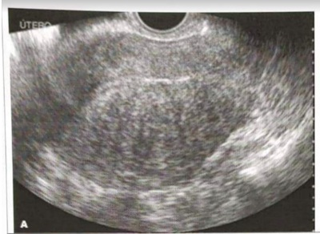
A Adenomiose; Útero em formato globoso, com miométrio assimetricamente espessado, e múltiplos cistos subendometriais.
B Leiomiomatose; Imagem nodular, bem definida, centrada no miométrio, determinando sombra acústica posterior.
C Adenomiomatose; Imagem nodular, bem definida, centrada no miométrio, determinando sombra acústica posterior.
D Leiomiomatose; Útero em formato globoso, com miométrio assimetricamente espessado, e múltiplos cistos subendometriais.
E Aborto incompleto; conteúdo heterogêneo no interior da cavidade endometrial, com miométrio regular.
Questão 1452 · Lesão intraepitelial escamosa de baixo grau · 4000187642Mulher, 52 anos, em amenorreia há 10 anos, após histerectomia, faz uso de terapia hormonal (TH) há 4 anos. Compareceu à UBS para avaliação ginecológica de rotina. Exame ginecológico normal para a faixa etária. Após 30 dias retorna com resultado dos exames solicitados no atendimento anterior. Laudo citopatológico do colo uterino: LSIL (lesão intraepitelial de baixo grau) e mamogra a categoria BIRADS 2. Assinale a conduta adequada deste caso:
A Prescrever creme de estrogênio vaginal e repetir a coleta de material do colo uterino para citologia em seis meses.
B Repetir a coleta de material do colo uterino para citologia em seis meses.
C Suspender a terapia hormonal e repetir a coleta de material do colo uterino para citologia em 6 meses.
D Suspender a terapia hormonal e encaminhar à unidade de referência para colposcopia.
Questão 1453 · BIRADS 5 · 4000187640Paciente de 62 anos, vem para a UBS em consulta de rotina com ultrassonogra a de mamas apresentando nódulo hipoecogênico, de formato irregular com margens espiculadas e sem uxo vascular ao estudo Doppler. Segundo o Birads - 2013, a melhor classificação e recomendação de conduta é:
A Birads 0: Complementação com mamografia
B Birads 2: Manter rastreamento de rotina
C Birads 4: Punção por agulha fina
D Birads 5: Core Biopsy
E Não se deve classificar como Birads pois o rastreamento padrão ouro para câncer de mama é a mamografia
Questão 1454 · Indicações · 4000187639Adolescente, 15 anos, procura o médico porque teve uma relação sexual desprotegida há 1 dia. Apesar do seu ciclo menstrual ter terminado há 1 semana, está preocupada pois não faz uso de nenhum método contraceptivo. Qual deve ser a orientação do médico nessa situação?
A Orientar o uso de contraceptivo oral de emergência nas primeiras 48 horas após o ato sexual e se a menstruação não ocorrer nos próximos sete dias, provavelmente o método não foi ineficaz.
B Orientar o uso de contraceptivo oral de emergência nas primeiras 48 horas após o ato sexual e explicar que a maioria das mulheres terá a menstruação seguinte dentro do período esperado, sem atrasos ou antecipações.
C Orientar que ela pode fazer uso de contraceptivo oral de emergência pois a relação sexual foi há menos de 72 horas. Porém, como ela está na primeira fase do ciclo menstrual, o risco de gravidez é mínimo.
D Explicar que os contraceptivos de emergência apresentam altas doses de progestogênio, não sendo, portanto, a melhor escolha para adolescentes. Neste caso, o ideal seria dosar o
Questão 1455 · Tratamento não hormonal dos sintomas climatéricos · 4000187637Mulher, 65 anos, queixa-se de disúria, dispareunia, presença de ondas de calor que não a incomodam e episódios ocasionais de incontinência urinária quando tosse. Antecedentes pessoais: Amenorreia aos 45 anos, após histerectomia subtotal; HDL baixo e triglicérides elevados, porém, recentemente adotou exercícios e mudanças na dieta. Antecedentes familiares: pai tabagista e morreu de doença coronariana aos 44 anos. Exame ginecológico: Atro a vulvar, Exame de urina I e urocultura sem alterações. A conduta adequada para esse caso é:
A Estrógeno por via oral, com associação com a testosterona, por ser uma paciente histerectomizada.
B Creme vaginal contendo estrógeno, apesar de ter perdido a "janela de oportunidade".
C Creme vaginal contendo progestágenos, pois as queixas principais são locais.
D Estrógeno e progesterona via sistêmica, tendo em vista que foi realizado histerectomia subtotal.
Questão 1456 · Incontinência urinária mista · 4000187635Mulher, 63 anos, 3PN, 0A, refere urgência miccional há 1 ano e perda de urina quando espirra. Apresenta atro a genital, e a avaliação urodinâmica detectou perda de urina à manobra de valsava, com pressão vesical de 90 cm com H₂O. Para esse caso, o diagnóstico é de:
A Incontinência urinária de esforço.
B Incontinência urinária mista.
C Deficiência esfincteriana intrínseca.
D Urge incontinência.
Questão 1457 · Tratamento · 4000187633Mulher, 19 anos, comparece no pronto-socorro de ginecologia, com queixa de febre e dor em baixo ventre de moderada intensidade há 15 dias. Relatou ter apresentado "spotting" intermenstrual no último ciclo menstrual. O médico realizou exame ginecológico e constatou: dor à palpação periumbilical, dor à palpação em ambas as regiões anexiais e, ao toque, dor à mobilização do colo uterino. Temperatura axilar: 38° C, Hemograma: leucocitose. Dosagem quantitativa para transvaginal normal. Quanto ao início do tratamento deve-se:
A Aguardar a identificação do agente etiológico, preferencialmente, por provas de biologia molecular para diagnóstico de clamídia, gonococo e micoplasma antes de iniciar antibioticoterapia.
B Realizar laparoscopia diagnóstica, pois assim teremos um critério elaborado que permite planejar o tratamento.
C Prescrever anti-inflamatório não esteroide e observar a evolução do quadro clínico após 1 semana.
D Iniciar precocemente antibioticoterapia empírica, de amplo espectro com objetivo de cobrir aeróbios e anaeróbios participantes da flora vaginal que se encontrem envolvidos no processo infeccioso.
Questão 1458 · Indicações · 4000187629Mulher, 49 anos, vem ao consultório do ginecologista para uma avaliação de rotina. Submeteu-se a histerectomia total aos 40 anos devido a mioma. Não tem queixas relacionadas ao climatério, exercita-se, tem dieta balanceada e seu IMC é 23 Kg/m². Deseja informações sobre a terapia hormonal. Qual a orientação correta para esse caso?
A Utilizar altas doses de hormônios favoreceria a melhoria de sintomas do climatério, atrofia urogenital, além de prevenir perda óssea.
B A hormonioterapia no climatério e pós-menopausa não deve ser utilizada de forma preventiva e de modo aleatório.
C Associações hormonais com valerato de estradiol e medroxiprogesterona devem ser utilizadas em pacientes submetidas à histerectomia.
D No climatério existe indicação de terapia de reposição hormonal para prevenir a atrofia urogenital.
Questão 1459 · Exames complementares · Síndrome dos ovários policísticos · 4000187627Mulher, 32 anos, refere ciclos menstruais irregulares desde a menarca, sendo que sua última menstruação foi há 6 meses. Apresenta 2 resultados de exame preocupada com a ausência de menstruação, oleosidade excessiva de pele e aumento de peso. A paciente refere desejo de engravidar. Qual é a conduta inicial para o caso?
A Encaminhar para o serviço de infertilidade.
B Prescrever citrato de clomifeno.
C Realizar teste do progestogênio oral.
D Prescrever coito programado.
Questão 1460 · Diagnóstico e Exames Complementares · 4000187624Mulher, 38 anos, vem em consulta pois há 6 meses vem apresentando ondas de calor que estão atrapalhando suas atividades habituais. Refere data da última menstruação há 4 meses e que está se sentindo muito desanimada nos últimos tempos. Excluída a possibilidade de gestação, de acordo com a principal hipótese diagnóstica para esse caso, quais são os exames pertinentes para investigação?
A TSH, FSH, Prolactina.
B Progesterona, Prolactina e FSH.
C FSH, Prolactina e Testosterona.
D TSH, LH, Prolactina e Progesterona.
Questão 1461 · Síndrome de Sheehan · 4000187623Mulher, 22 anos, sofreu um acidente de carro há 5 meses, pois estava dirigindo alcoolizada e teve um trauma torácico contra o volante. Após isso, a paciente cursou com quadro de ausência de menstruação. Ela refere que está há 3 meses sem menstruar e não está em uso de método contraceptivo hormonal. No momento usa somente camisinha masculina como método contraceptivo. Excluída a hipótese de gestação, qual a principal causa da amenorreia dessa paciente?
A Amenorreia anovulatória.
B Amenorreia hipofisária.
C Amenorreia hipotalâmica.
D Amenorreia idiopática.
Questão 1462 · Estrogênio · Indicações · 4000187621Mulher, 52 anos, está em amenorreia há 2 anos e iniciou quadro de ondas de calor há cerca de 6 meses. Refere inclusive que tem despertares noturnos diários, com calor, seguido de sudorese fria. Há 3 anos, a paciente foi submetida à histerectomia total abdominal devido miomatose uterina e sangramento uterino anormal. A paciente trouxe alguns exames atuais: Mamogra a: Birads 2, ultrassom transvaginal: ovários não visibilizados, colpocitologia oncótica: negativa para neoplasia, triglicérides: 475mg/dL, colesterol total 300mg/dL e glicemia de jejum 145mg/dL. Ao exame apresenta-se em bom estado geral, pressão arterial 150/100 mmHg, peso 75 Kg e altura: 1,65 cm, mamas: sem alterações, exame especular: vagina em fundo cego, toque vaginal: vagina em fundo cego. Qual é a reposição hormonal indicada para essa paciente?
A Reposição hormonal com estrogênio e progesterona via oral.
B Reposição hormonal com estrogênio via oral.
C Reposição hormonal com estrogênio via transdérmica.
D Reposição hormonal com estrogênio via oral e testosterona via transdérmica.
Questão 1463 · Tratamento adjuvante · Disf unção ventricular esquerda · 4000187559Relatos sugerem que os taxanos devem ser evitados em pacientes com disfunção ventricular prévia, com os mesmos critérios de não utilização de antraciclinas. Sendo correto que:
A Os taxanos causam bradicardia sinusal, bloqueios atrioventriculares, taquicardia ventricular e extrassístoles ventriculares.
B Os taxanos causam bradicardia sinusal, bloqueios atrioventriculares, taquicardia ventricular e não extrassístoles ventriculares.
C Os taxanos protegem contra bradicardia sinusal, bloqueios atrioventriculares, taquicardia ventricular e extrassístoles ventriculares.
D Os taxanos causam bradicardia sinusal, bloqueios atrioventriculares, não causam taquicardia ventricular e extrassístoles ventriculares.
Questão 1464 · Histeroscopia · Endometrial · 4000187516Mulher de 45 anos, tendo como método contraceptivo a esterilização definitiva, com quadro de Sangramento Uterino Anormal, é submetida à histeroscopia. O achado mais frequente neste caso é:
A pólipo.
B hiperplasia.
C atrofia.
D mioma submucoso.
Questão 1465 · Etiologias · Amenorreia secundária de causa uterinavaginal · 4000187514Uma paciente com amenorreia é tratada com pílula combinada por 21 dias e após a interrupção não apresenta sangramento. A causa mais provável é:
A ovariana.
B hipofisária.
C endometrial.
D tumoral.
Questão 1466 · Quadro clínico · 4000187512A paciente que tem o “perfil” típico da Síndrome dos Ovários Policísticos é:
A obesa, hirsuta e infértil.
B magra, infértil e com alopecia.
C obesa, hirsuta e com fertilidade normal.
D magra, hirsuta e infértil.
Questão 1467 · Fator tuboperitoneal · Tuberculose urogenital · 4000187508Uma mulher de 25 anos com queixa de infertilidade é submetida à histerossalpingogra a onde ca evidente lesão em “contas de rosário” em uma das trompas. Esse achado sugere como causa
A Tuberculose.
B Endometriose.
C Moléstia inflamatória pélvica.
D Malformação congênita.
Revisar: possível letra faltando em enunciado
Questão 1468 · Risco de câncer · 4000187504Os contraceptivos combinados orais demonstraram ter uma gama de benefícios não contraceptivos para patologias, exceto:
A Câncer de Mama.
B Câncer de Cólon.
C Anemia.
D Mamárias Benignas.
Questão 1469 · Exames complementares · 4000187502Uma mulher de 78 anos em consulta ginecológica de rotina, sem queixas, apresenta laudo de ultrassom evidenciando endométrio de 17 mm. Nega fazer uso de terapia Hormonal e nega qualquer episódio de sangramento nos últimos anos. Nesse caso a melhor conduta é:
A Nada a fazer.
B Histeroscopia com biópsia.
C Curetagem uterina.
D Ressonância Nuclear Magnética
Questão 1470 · Hiperprolactinemia · 4000187440Mulher de 27 anos de idade comparece em consulta por amenorreia há 4 meses. Relata que sua menstruação era regular e trouxe um teste de gravidez negativo, realizado há uma semana. Queixa-se também de descarga mamária bilateral, simétrica, com aspecto de leite. Ela não tem sobrepeso e nega alterações menstruais anteriores. Faz tratamento para dislipidemia e depressão com sinvastatina 20mg/dia, uoxetina 40mg/dia e risperidona 2mg/dia. Usa anticoncepcional oral combinado como método contraceptivo. Qual é a conduta a seguir para essa paciente?
A Solicitar dosagem de prolactina sérica e, caso alterado, considerar que pode ser um efeito colateral da sinvastatina.
B Solicitar dosagem de prolactina sérica e, caso alterado, considerar que pode ser um efeito colateral da risperidona.
C Solicitar dosagem de TSH e T4 livre e, caso alterados, considerar que pode ser um efeito colateral da fluoxetina.
D Solicitar dosagem de prolactina sérica e, caso alterado, solicitar de imediato ressonância magnética de sela túrcica, pelo alto risco de adenoma hipofisário produtor de prolactina.
Questão 1471 · Tratamento não hormonal dos sintomas climatéricos · 4000187439Mulher de 54 anos de idade procura atendimento médico por dor nas relações sexuais, ressecamento vaginal e diminuição da libido. Tem tido fogachos intensos, insônia inicial, irritação constante e sensação de chorar com mais facilidade quando irritada. Está no climatério há cerca de 2 anos. É sedentária e tem antecedente de hipertensão arterial sistêmica, em uso de losartana 100mg/dia. Apresenta índice de massa corporal de 29,3kg/m². Realizou mamogra a de rastreio há 3 anos, com resultado na classificação BIRADS = 1. Não tem história pessoal nem familiar de câncer de mama, ovário ou endométrio. Qual das alternativas apresenta uma abordagem adequada da paciente?
A Deve-se indicar realização de exame citopatológico de colo uterino, já que a paciente não o realizou. Não há necessidade de nova mamografia, já que realizou há 3 anos.
B Está indicada a realização de terapia hormonal para essa paciente, com objetivo de reduzir os sintomas de fogachos e retardar ou prevenir o processo de envelhecimento.
C É possível indicar utilização de lubrificantes à base de água ou estrogênio tópico vaginal para o ressecamento, bem como indicar atividade física para o sobrepeso.
D A insônia inicial deve ser abordada com prescrição de zolpidem 10mg e orientação para evitar uso de cafeína, mesmo que paciente não tenha uma rotina de sono regular.
Questão 1472 · Prevenção de gravidez · Quimioprof ilaxia · 4000187438Mulher de 19 anos de idade comparece em consulta na Unidade Básica de Saúde (UBS) relatando que foi vítima de violência sexual na noite anterior. Não faz uso de nenhum contraceptivo e não tem comorbidades conhecidas. Em entrevista cuidadosa e empática, também revela que, há alguns anos, sofre violência psicológica de seu pai, com comentários depreciativos, ameaças constantes e proibição de que ela saia de casa, sobretudo quando ele está alcoolizado. Qual das alternativas estabelece a conduta para esta paciente?
A A anticoncepção hormonal de emergência deve ser oferecida para a paciente na UBS e ela deve ser encaminhada ao serviço de referência em violência sexual para continuar recebendo tratamentos e profilaxias indicados.
B A paciente deve descrever com todos os detalhes como ocorreu a violência sexual para todos os diversos profissionais da UBS e da atenção especializada, para fins de registro em prontuário e resguardar legalmente os profissionais.
C A violência psicológica sofrida pode ser denunciada pela própria paciente às autoridades, porém como se trata de familiar próximo, não se configura crime passível de punição.
D É possível oferecer para a paciente as respectivas profilaxias para infecções sexualmente transmissíveis na UBS, desde que a paciente realize o boletim de ocorrência na delegacia relatando a violência sexual sofrida.
Questão 1473 · Adolescentes · 4000187433Mulher de 19 anos de idade comparece à Unidade Básica de Saúde, pois deseja iniciar uso de método contraceptivo. Iniciou a vida sexual há cerca de 1 ano, tendo parceiro xo, com uso eventual de preservativo masculino (condom). Nega comorbidades, alergias ou uso de medicações previamente. Exame físico sem alterações. Qual é a conduta diagnóstica que deve ser solicitada antes de definir qual o método mais adequado para a paciente?
A Não é necessário solicitar exames complementares adicionais.
B Solicitar ultrassonografia pélvica por via transvaginal.
C Solicitar glicemia em jejum, colesterol total e frações e hormônio tireoestimulante.
D Solicitar uma citologia oncótica de colo uterino.
Questão 1474 · Ef eitos adversos · 4000187432Mulher de 19 anos de idade comparece à Unidade Básica de Saúde, pois deseja iniciar uso de método contraceptivo. Iniciou a vida sexual há cerca de 1 ano, tendo parceiro xo, com uso eventual de preservativo masculino (condom). Nega comorbidades, alergias ou uso de medicações previamente. Exame físico sem alterações. Após a realização da conduta da questão anterior, foi optado por inserir um dispositivo intrauterino (DIU) de cobre. Após 6 semanas do procedimento, a paciente retorna se queixando de sangramento vaginal intermitente, que dura no máximo 2 dias, sem padrão de intervalo entre os eventos. Qual é a conduta que deve ser adotada neste momento?
A Trocar o dispositivo intrauterino de cobre por um sistema intrauterino liberador de levonorgestrel neste momento, para controle do sangramento.
B Orientar quanto à normalidade da ocorrência de sangramento leve após inserção do DIU e prescrever anti-inflamatório não esteroide durante o período de sangramento.
C Solicitar uma ultrassonografia transvaginal para avaliar o posicionamento do dispositivo intrauterino de cobre antes de definir a conduta terapêutica.
D Iniciar o uso de anticoncepcional oral combinado em associação ao DIU de cobre, para controle do sangramento vaginal leve apresentado pela paciente.
Questão 1475 · Ef eitos adversos · 4000187431Mulher de 19 anos de idade comparece à Unidade Básica de Saúde, pois deseja iniciar uso de método contraceptivo. Iniciou a vida sexual há cerca de 1 ano, tendo parceiro xo, com uso eventual de preservativo masculino (condom). Nega comorbidades, alergias ou uso de medicações previamente. Exame físico sem alterações. Após 18 meses da inserção do DIU de cobre, a paciente mantém a queixa de sangramento. Este agora é de grande quantidade, sendo acompanhado de cólicas intensas. Qual é a conduta que deve ser adotada neste momento?
A Indicar a retirada do dispositivo intrauterino de cobre e prescrever outro tipo de método contraceptivo.
B Prescrever ácido tranexâmico e solicitar uma ultrassonografia transvaginal para avaliar o posicionamento do DIU de cobre antes de definir a conduta quanto a ele.
C Iniciar o uso de anticoncepcional oral combinado em associação ao DIU, para controle dos sintomas apresentados.
D Solicitar beta-hCG, microscopia de secreção vaginal e pesquisa de C. trachomatis e Neisseria gonorrhoeae para investigação de doença inflamatória pélvica.
Questão 1476 · Hiperplasia Endometrial Câncer de endométrio e outros tumores do corpo do útero · 4000187430Mulher de 53 anos de idade, com história de menopausa há 6 anos, comparece em consulta ambulatorial. Ela apresentou um episódio de sangramento vaginal de moderada quantidade há 1 mês, que cessou espontaneamente. A paciente nega ter tido coitarca. Tem história prévia de diabetes tipo 2 e faz uso de terapia de reposição hormonal há 4 anos. Ao exame especular, não foi observado sangramento. Qual é a conduta diagnóstica inicial que deve ser adotada neste momento?
A Histerossonografia
B Histeroscopia diagnóstica
C Ressonância magnética de pelve
D Ultrassonografia pélvica transvaginal
Questão 1477 · Hiperplasia Endometrial Câncer de endométrio e outros tumores do corpo do útero · 4000187429Mulher de 53 anos de idade, com história de menopausa há 6 anos, comparece em consulta ambulatorial. Ela apresentou um episódio de sangramento vaginal de moderada quantidade há 1 mês, que cessou espontaneamente. A paciente nega ter tido coitarca. Tem história prévia de diabetes tipo 2 e faz uso de terapia de reposição hormonal há 4 anos. Ao exame especular, não foi observado sangramento. O exame inicial solicitado evidenciou um endométrio com espessura de 3mm. Qual é a conduta que deve ser adotada neste momento?
A Solicitar biópsia endometrial por via histeroscópica.
B Suspender a terapia de reposição hormonal.
C Adotar conduta expectante com seguimento clínico.
D Indiciar a realização de curetagem uterina.
Questão 1478 · BIRADS · 4000187408Maria, paciente de 28 anos, chega para consulta médica com seu ginecologista já com resultado de exames, solicitados por outro pro ssional. Está um pouco nervosa, porque observou que seu ultrassom de mamas veio com uma alteração e gostaria da sua opinião. Refere que sua avó teve câncer de mama diagnosticado aos 66 anos. Traz ultrassonogra a que descreve um nódulo às 6 horas da mama direita, de 1,5cm em seu maior diâmetro, circunscrito, paralelo à pele, com reforço acústico, laudado como BI RADS 3. Qual a sua conduta?
A Orientar novo exame em 6 meses.
B Indicar biópsia do nódulo com agulha grossa.
C Solicitar mamografia complementar.
D Considerando o histórico familiar, solicitar ressonância nuclear magnética.
Questão 1479 · Quadro clínico · Exames complementares · Exames complementares · 4000187407Dona Izoldina, de 69 anos, procura o serviço do pronto-socorro com queixa de sangramento vaginal pós- menopausa, em moderada quantidade, passando por sua avaliação após realização de ultrassonogra a transvaginal, a qual evidenciou espessura endometrial de 10mm. Qual a conduta a seguir?
A Dizer à paciente que o exame está normal.
B Indicar histerectomia total + salpingooforectomia bilateral.
C Solicitar novo exame em 2 semanas.
D Encaminhar a paciente para histeroscopia diagnóstica com biópsia endometrial.
Questão 1480 · Contraindicações · Injetável trimestral · Contraindicações · 4000187406Aline, paciente de 27 anos, procura o médico de sua Unidade Básica de Saúde para saber mais sobre métodos contraceptivos. Nega comorbidades, exceto por enxaqueca com aura. Refere antecedente familiar de aneurisma cerebral. Quais métodos a seguir podem ser opções válidas?
A Anel vaginal, injeção trimestral, condon.
B Sistema intrauterino liberador de levonogestrel, adesivo transdérmico, implante subdérmico.
C Injeção trimestral, dispositivo intrauterino de cobre, sistema intrauterino liberador de levonogestrel.
D Tabelinha, injeção mensal, contraceptivo oral de progestagênio.
Questão 1481 · Tratamento · 4000187339A vaginose bacteriana tem como tratamento principal:
A Ampicilina.
B Fluconazol.
C Metronidazol.
D Tetraciclina.
Questão 1482 · Hímen imperf urado · 4000187337O distúrbio anatômico mais comum da puberdade é:
A Síndrome de Mayer-Rokitansky-Kuster-Hauser.
B Útero didelfo com vagina dupla.
C Hímen imperfurado.
D Útero didelfo com vagina única.
Questão 1483 · Formas de apresentação · 4000187335Uma mulher de 23 anos comparece ao ambulatório de ginecologia com resultado de papanicolau que evidenciou “coilocitose” e metaplasia escamosa. Esse laudo é sugestivo de:
A Câncer de colo “in situ”.
B Efeito inflamatório inespecífico do colo uterino.
C Presença de HPV.
D Vaginose bacteriana.
Questão 1484 · Fatores de risco · 4000187334A situação que representa maior risco para câncer de colo uterino é:
A Tabagismo.
B Primiparidade precoce.
C Uso prolongado de contraceptivo oral.
D Infecção pelo HPV.
Questão 1485 · Tratamento · 4000187332A droga considerada como pilar no tratamento da doença inflamatória pélvica na forma ambulatorial é:
A Cefalexina.
B Metronidazol.
C Cloranfenicol.
D Doxiciclina.
Questão 1486 · Fisiopatologia · 4000187331Eventualmente, um quadro de vulvovaginite pode ser causado por proliferação desordenada de lactobacilos. Isso leva o nome de:
A Vaginose citolítica.
B Candidíase.
C Vaginose bacteriana.
D Doença inflamatória pélvica.
Questão 1487 · Fase secretora · 4000187328Uma mulher de 35 anos que não utiliza contraceptivo, na segunda fase do ciclo menstrual tem o endométrio do tipo:
A proliferativo.
B hiperplásico.
C atrófico.
D secretório.
Questão 1488 · Risco de câncer · Contraindicações · 4000187326Considere as assertivas: I. Anticoncepcionais combinados orais aumentam o risco de câncer de ovário. II. Tabagistas com mais de 35 anos podem utilizar anticoncepcionais combinados orais. III. Pacientes tabagistas podem utilizar anticoncepção com desogestrel após 35 anos de idade. Está correto o que se afirma em:
A I, apenas.
B III, apenas.
C II e III, apenas.
D I e II, apenas.
Questão 1489 · Diagnóstico dif erencial · 4000187308Mulher de 53 anos de idade, com história de menopausa há 6 anos, comparece em consulta ambulatorial. Ela apresentou um episódio de sangramento vaginal de moderada quantidade há 1 mês, que cessou espontaneamente. A paciente nega ter tido coitarca. Tem história prévia de diabetes tipo 2 e faz uso de terapia de reposição hormonal há 4 anos. Ao exame especular, não foi observado sangramento. Seis meses após a realização da conduta anterior, a paciente retorna referindo ter apresentado mais três episódios de sangramento de mesmas características. Qual é a conduta que deve ser adotada neste momento?
A Indicar a realização de histerectomia simples.
B Indicar o implante de sistema intrauterino liberador de levonorgestrel.
C Solicitar biópsia endometrial por via histeroscópica.
D Indicar a realização de histerectomia com salpingectomia e ooforectomia bilateral.
Questão 1490 · Outros exames diagnósticos · 4000187304Mulher de 28 anos de idade comparece em consulta com queixa de dor abdominal há um ano. Ela relata que neste período tem apresentado episódios de dor abdominal em quadrantes inferiores do abdome, caracterizada como uma pressão, de intensidade moderada (6/10), que se associa a dismenorreia, hipermenorreia e dispareunia profunda. Relata que os sintomas álgicos não têm associação com o ciclo menstrual, ocorrendo com intensidade variável todos os dias do mês. Adicionalmente, apresenta adinamia e constipação, com fezes ressecadas e dor ao evacuar. Nega febre ou outros sintomas. O exame físico geral não teve alterações. Ao exame especular, apresentou dor e hipersensibilidade à manipulação vaginal, sendo vista a lesão registrada na imagem a seguir: Qual é o diagnóstico?
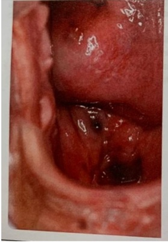
A Condiloma acuminado cervical
B Câncer de colo de útero
C Pólipo cervical
D Endometriose vaginal
Questão 1491 · Diagnóstico ultrassonográf ico · 4000187303Mulher de 23 anos de idade, nulípara, comparece a consulta ambulatorial com queixa de di culdade para gestar. Relata que ela e seu parceiro vêm tentando conceber há cerca de um ano, sem sucesso. Seu parceiro já foi investigado, com espermograma sem alterações. Não faz uso de nenhum método anticoncepcional há mais de um ano. Ela relata que desde a sua menarca, aos 15 anos de idade, teve um ciclo menstrual irregular, cando por vezes mais de dois meses sem menstruar. Sem outras queixas. Ao exame físico, apresenta IMC de 27,2kg/m², com sinais vitais normais. As alterações detectadas no exame da pele podem ser vistas nas imagens a seguir. Os demais sistemas não evidenciaram alterações. Apresentou exames laboratoriais previamente solicitados, que evidenciaram: glicemia sérica 98mg/dL (VR < 99mg/dL); LDL 162mg/dL (VR < 100mg/dL); HDL 35mg/dL (VR > 40mg/dL) e triglicerídeos de 225mg/dL (VR < 150mg/dL). Qual é a alteração que você espera encontrar nos exames complementares?
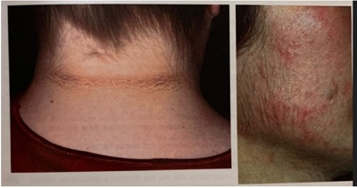
A Ovários com volume de 16cm³.
B Prolactina sérica de 127ng/mL.
C Testosterona total sérica de 165ng/dL.
D 17-alfa-hidroxiprogesterona de 232ng/dL.
Questão 1492 · Tratamento das mulheres que desejam engravidar · 4000187302Mulher de 23 anos de idade, nulípara, comparece a consulta ambulatorial com queixa de di culdade para gestar. Relata que ela e seu parceiro vêm tentando conceber há cerca de um ano, sem sucesso. Seu parceiro já foi investigado, com espermograma sem alterações. Não faz uso de nenhum método anticoncepcional há mais de um ano. Ela relata que desde a sua menarca, aos 15 anos de idade, teve um ciclo menstrual irregular, cando por vezes mais de dois meses sem menstruar. Sem outras queixas. Ao exame físico, apresenta IMC de 27,2kg/m², com sinais vitais normais. As alterações detectadas no exame da pele podem ser vistas nas imagens a seguir. Os demais sistemas não evidenciaram alterações. Apresentou exames laboratoriais previamente solicitados, que evidenciaram: glicemia sérica 98mg/dL (VR < 99mg/dL); LDL 162mg/dL (VR < 100mg/dL); HDL 35mg/dL (VR > 40mg/dL) e triglicerídeos de 225mg/dL (VR < 150mg/dL). Como deve ser feito tratamento da paciente?

A Prescrição de cabergolina e, se não responsivo, encaminhar paciente para ressecção transfenoidal de adenoma.
B Orientar perda de peso e prescrever indutor de ovulação, como o citrato de clomifeno.
C Prescrição de antagonista de GnRH e encaminhamento para centro de referência em fertilização in vitro.
D Prescrição de dexametasona, objetivando progesterona menor que 0,6ng/dL e, se não responsivo, prescrever indutor de ovulação.
Questão 1493 · Malignidade · 4000187236Uma paciente tem diagnóstico de sangramento uterino anormal por câncer de endométrio. Utilizando o método diagnóstico pelo anagrama PALM-COEIN, a referida patologia encontra-se na letra:
A M
B N
C L
D P
Questão 1494 · Histerossalpingograf ia · 4000187234Paciente com quadro de infertilidade realiza histerossalpingogra a que evidencia imagem em “contas de Rosário”. A mais provável causa envolvida é:
A DIPA.
B Tuberculose.
C Endometriose.
D Adenomiose.
Questão 1495 · Fatores de risco · 4000187232São considerados fatores de risco para Câncer Epitelial de Ovário, exceto:
A Síndrome de Lynch.
B Raça branca.
C Salpingectomia prévia.
D Mutação nos genes BRCA 1 e 2.
Questão 1496 · Benef ícios · 4000187231Uma paciente de 51 anos, em fase de climatério, com queixas importantes de fogachos e insônia, questiona o ginecologista a respeito da terapia hormonal. Refere ter muito medo de câncer e que prefere ter os sintomas a correr o risco de uma neoplasia. O ginecologista deve orientar a paciente que a TRH diminui o risco relativo de câncer de:
A Bexiga
B Ovário
C Cólon
D Mama
Questão 1497 · Tratamento cirurgico · Tratamento clínico · 4000187230Em relação à miomatose uterina, assinale a alternativa falsa.
A Os análogos do GnRH são aprovados par utilização por curtos períodos, de aproximadamente 4 a 6 meses.
B Os análogos de GnRH somente são utilizados de forma isolada, quando não é factível a cirurgia.
C Os análogos de GnRH tem a desvantagem de causar fogachos e aumentar o risco de osteoporose.
D Miomas assintomáticos não requerem tratamento cirúrgico
Questão 1498 · Fatores de risco · Fisiopatologia · 4000187229Em relação à Doença Inflamatória Pélvica Aguda, assinale a alternativa incorreta.
A O uso de preservativo pode prevenir a transmissão.
B O espermatozoide pode funcionar como carreador do patógeno.
C Atualmente se sabe que o agente etiológico mais comum é o micoplasma.
D As duchas vaginais podem facilitar a ascensão de microrganismos causadores de DIPA.
Questão 1499 · Fisiopatogenia · 4000187228Uma mulher com anovulação crônica por com hiperandrogenismo, a longo prazo, tem maior risco das seguintes patologias, exceto:
A Câncer de endométrio.
B Diabete.
C Coronariopatia isquêmica.
D Câncer colorretal.
Questão 1500 · Contraindicações · 4000187227Em relação aos métodos contraceptivos, assinale a alternativa incorreta.
A O injetável trimestral não deve ser utilizado por mulheres que tem enxaqueca.
B Tabagistas com mais de 35 anos não devem utilizar contraceptivo combinado oral.
C O contraceptivo anel vaginal tem efeito trombogênico semelhante ou até maior que os contraceptivos combinados orais.
D O progestágeno com maior efeito antiandrogênico é o acetato de ciproterona.
Questão 1501 · Fatores de risco · 4000187157Das seguintes assertivas, a que pode ser considerada risco aumentado para câncer de ovário é:
A Amamentação prolongada.
B Multiparidade.
C Antecedente familiar para câncer de ovário.
D Uso prolongado de contraceptivo combinado oral.
Questão 1502 · Fator tuboperitoneal · 4000187156Casal com quadro de infertilidade procura ginecologista para avaliação. Ela, nuligesta, com ciclos menstruais regulares, índice de massa corpórea 26 kg/m² e dosagem hormonal normal. Ele apresentou espermograma e espermocultura normais. O próximo passo nesse caso é:
A Repetir dosagem hormonal.
B Histerossalpingografia.
C induzir ovulação com citrato de clomifeno.
D induzir ovulação com metformina.
Questão 1503 · Vascularização pélvica · 4000187152A artéria que irriga os ovários é ramo direto da:
A renal.
B ilíaca interna.
C aorta.
D ilíaca externa.
Questão 1504 · Adolescentes · 4000187151Uma adolescente com acne e hirsutismo, necessita de contracepção e caz. Não apresenta comorbidades e não é obesa. A melhor opção nesse caso é:
A etinilestradiol + ciproterona.
B etinilestradiol + noretisterona.
C etinilestradiol + dienogeste.
D desogestrel isolado.
Questão 1505 · Colo uterino · 4000187150A condição prévia básica para a formação dos cistos de Naboth é:
A NIC.
B Ectopia.
C Vulvovaginite de repetição.
D Doença Inflamatória Pélvica.
Questão 1506 · Vascularização pélvica · 4000187148Estrutura que drena diretamente para a veia cava:
A Veia Ovariana Esquerda.
B Veia Uterina Esquerda.
C Veia Cervical Esquerda.
D Veia Ovariana Direita.
Questão 1507 · Histeroscopia · 4000187146É indicação de Histeroscopia:
A Mioma subseroso.
B Endométrio de 3 mm em mulher menopausada.
C Abortamento precoce único.
D Infertilidade secundária.
Questão 1508 · Histerectomia · 4000187144O procedimento cirúrgico que apresenta os menores índices de ligadura ureteral inadvertida é:
A Histerectomia Abdominal.
B Histerectomia Vaginal.
C Histerectomia Videolaparoscópica.
D Histerectomia Abdominal Ampliada.
Questão 1509 · Exames complementares · 4000187046A situação não inclusa na classificação PALM-COEIN e que deve ser descartada de imediato em uma mulher de 30 anos com sangramento há 15 dias é:
A miomatose.
B coagulopatia.
C gravidez.
D tumoração.
Questão 1510 · Miomatose uterina · 4000187045Os miomas podem complicar a gestação de diversas formas. A complicação menos frequente seria:
A abortamento.
B apresentação pélvica.
C dor pélvica persistente.
D febre.
Questão 1511 · BIRADS 3 · 4000187040Uma mulher de 40 anos com nódulo palpável de 3 cm, móvel, indolor, broelástico realiza ultrassom de mamas que evidencia nódulo oval, sólido, bem delimitado e paralelo à pele. Esse nódulo é:
A BI-RADS 3.
B BI-RADS ZERO.
C BI-RADS 1.
D BI-RADS 2.
Questão 1512 · Clamídia · 4000187037Para tratamento de infecção por Clamídia na gestação, a droga que não deve ser utilizada é:
A Doxiciclina.
B Azitromicina.
C Amoxacilina.
D Eritromicina.
Questão 1513 · Regimes terapêuticos · Terapia hormonal · 4000187033Paciente de 54 anos utilizando terapia hormonal. Os controles devem ser:
A Mamografia anual e ultrassom endovaginal anual.
B Exame clínico anual e ultrassom endovaginal anual.
C Dosagem hormonal de estrógenos e mamografia anual.
D Exame clínico periódico e mamografia anual.
Questão 1514 · Tratamento · 4000187031Mulher de 47 anos, apresentando sangramento uterino. Realiza ultrassom que evidencia endométrio de 14 mm. Submetida a biópsia, o laudo anatomopatológico demonstra hiperplasia endometrial sem atipia. A melhor conduta para o caso é:
A Progesterona oral.
B Histerectomia.
C Ablação endometrial.
D Análogo do GnRH.
Questão 1515 · Tumores epiteliais · 4000187028Os tumores ovarianos são, quanto à sua origem, a maioria:
A endometrioide.
B epiteliais.
C de células claras.
D de células germinativas.
Questão 1516 · Tumor Phyllodes · 4000187024Em relação ao tumor filóide, assinale a alternativa incorreta.
A Tem crescimento muito lento.
B É mais comum após os 40 anos de idade.
C Tem grande tendência a recidiva local.
D Geralmente não causam metástase à distância.
Questão 1517 · Ações do estrogênio e progesterona em outros órgãos · Fisiologia do ciclo menstrual · 4000187018Uma mulher com 30 anos vai ao consultório médico e ao exame especular é observado orifício do colo uterino com saída de muco claro e com alta lância. Pode-se concluir que, muito provavelmente, a paciente deve estar:
A Grávida.
B Em uso de anticoncepcional hormonal oral.
C No período ovulatório.
D Em uso de injetável trimestral com acetato de medroxiprogesterona.
E Em período próximo à menstruação.
Questão 1518 · Farmacológicos · Tratamento · 4000187017Paciente 60 anos, menopausada há 10 anos, apresenta queixa de perda involuntária de urina após desejo imperioso de urinar. Podem ser utilizadas para o tratamento todas as medicações abaixo, EXCETO:
A Solifenacina.
B Bromocriptina.
C Imipramina.
D Oxibutinina.
E Tolterodina.
Questão 1519 · Pólipo endometrial · Exames complementares · Tratamento · 4000187016Paciente com 43 anos com menstruação irregular há 3 meses foi submetida a exame de ultrassonografia transvaginal que apresentou endométrio heterogêneo com imagem sugestiva de pólipo endometrial. Qual a conduta mais adequada para essa paciente?
A Fazer acompanhamento com ultrassonografia anual.
B Solicitar tomografia computadorizada.
C Prescrever anticoncepcional hormonal oral combinado.
D Fazer curetagem uterina.
E Fazer histeroscopia.
Questão 1520 · Etiologia · Hiperplasia Endometrial Câncer de endométrio e outros tumores do corpo do útero · 4000187015As causas de sangramento pós-menopausa em ordem decrescente de acometimento são:
A Câncer de endométrio - hiperplasia endometrial - atrofia endometrial.
B Câncer de endométrio - atrofia endometrial - hiperplasia endometrial.
C Atrofia endometrial - hiperplasia de endométrio - câncer de endométrio.
D Atrofia endometrial - câncer de endométrio - hiperplasia de endométrio.
E Hiperplasia de endométrio - atrofia endometrial - câncer de endométrio.
Questão 1521 · Contraindicações · 4000187014Segundo a OMS, são contraindicações ao uso de anticoncepcionais hormonais combinados, EXCETO:
A Antecedente pessoal de TVP.
B Antecedente familiar de TVP.
C Trombofilia conhecida.
D Enxaqueca com aura.
E Adenoma hepático.
Questão 1522 · Contraindicações · 4000187013São contraindicações à inserção do DIU de cobre, EXCETO:
A Útero septado.
B Mioma submucoso.
C HIV assintomática.
D Cervicite mucopurulenta.
E Abortamento infectado.
Questão 1523 · Diagnóstico dif erencial · 4000187012Sabe-se que a Síndrome dos ovários policísticos (SOP) é um diagnóstico de exclusão, devendo ser descartados alguns quadros com apresentação semelhante. São considerados diagnósticos diferenciais da SOP, EXCETO:
A Hipotireoidismo.
B Hipoprolactinemia.
C Hiperplasia adrenal congênita tardia.
D Insuficiência ovariana prematura.
E Tumor secretor de andrógenos.
Questão 1524 · Fisiologia do ciclo menstrual · Ciclo ovariano · 4000187011A inibina B é um peptídeo que é secretada pelo (a):
A Adrenal
B Ovário
C Hipófise
D Hipotálamo
E Cerebelo
Questão 1525 · Desenvolvimento dos ductos genitais · Embriologia do trato genital f eminino · 4000187010Na mulher, qual estrutura anatômica tem origem embriológica dos ductos paramesonéfricos?
A Útero.
B Paramétrios.
C 1/3 inferior de vagina.
D Paramétrios.
E Cistos de Gardner.
Questão 1526 · Estadiamento · 4000187007Segundo a Federação Internacional de Ginecologia e Obstetrícia (FIGO), o estadiamento do câncer de colo uterino, confinado ao colo, que apresenta mais que 4 cm na maior dimensão é:
A Ia1
B Ia2
C Ib1
D Ib2
E Ib3
Questão 1527 · Fatores de risco · 4000186940A situação que representa maior risco para câncer de colo uterino é:
A Tabagismo.
B Primiparidade precoce.
C Uso prolongado de contraceptivo oral.
D Infecção pelo HPV.
Questão 1528 · Tratamento · 4000186937A droga considerada como pilar no tratamento da doença inflamatória pélvica na forma ambulatorial é:
A Doxiciclina.
B Cefalexina.
C Metronidazol.
D Cloranfenicol.
Questão 1529 · Fisiopatologia · 4000186930Eventualmente, um quadro de vulvovaginite pode ser causado por proliferação desordenada de lactobacilos. Isso leva o nome de:
A Candidíase.
B Vaginose bacteriana.
C Doença inflamatória pélvica.
D Vaginose citolítica.
Questão 1530 · Fases do ciclo menstrual · 4000186926Uma mulher de 35 anos que não utiliza contraceptivos, na segunda fase do ciclo menstrual tem o endométrio do tipo:
A proliferativo.
B secretório.
C hiperplásico.
D atrófico.
Questão 1531 · Métodos hormonais combinados · Contraindicações · Contraindicações · 4000186923Considere as assertivas; I. Anticoncepcionais combinados orais aumentam o risco de câncer de ovário. II. Tabagistas com mais de 35 anos podem utilizar anticoncepcionais combinados orais. III. Pacientes tabagistas podem utilizar anticoncepção com desogestrel após 35 anos de idade. Está correto o que se afirma em:
A I, apenas.
B II e III, apenas.
C I e II, apenas.
D III, apenas.
Questão 1532 · Radioterapia · Tratamento adjuvante · Tratamento neoadjuvante · 4000186891Na neoplasia de mama, é mais frequente cardiotoxicidade:
A Relacionada à radioterapia em pacientes com lesão em hemitórax esquerdo e naquelas em uso concomitante de antraciclinas.
B Relacionada à radioterapia em pacientes com lesão em hemitórax direito e naquelas em uso concomitante de antraciclinas.
C Relacionada à radioterapia em pacientes com lesão em hemitórax esquerdo e naquelas sem uso concomitante de antraciclinas.
D Não relacionada à radioterapia em pacientes com lesão em hemitórax esquerdo e naquelas em uso concomitante de antraciclinas.
Questão 1533 · Fisiopatologia · Quadro clínico · 4000186844Em paciente com diagnóstico de vaginose bacteriana, o odor de peixe liberado após aplicação de hidróxido de potássio é devido à liberação de:
A ácido lático.
B cadaverina e putrescina.
C ácido málico.
D ácido acético.
Questão 1534 · Ciclo uterino · Ciclo menstrual · 4000186842A camada do endométrio que não sofre proliferação significativa durante o ciclo menstrual e é responsável pela regeneração endometrial se chama:
A funcional.
B esponjosa.
C basal.
D compacta.
Questão 1535 · Etiologia · 4000186839São patógenos que geralmente causam infecção genital alta:
A Cândida
B Gardnerela
C Clamídia
D Tricomonas
Questão 1536 · Modif icações f isiológicas · Estrogênios · 4000186837A conversão de androstenediona em estrona, no tecido adiposo, é a principal via de produção estrogênica:
A na menopausa.
B na puberdade.
C no menacme.
D durante a gravidez.
Questão 1537 · Ações do estrogênio e progesterona em outros órgãos · Colo uterino · Outros · 4000186833Em uma mulher de 25 anos, que não utiliza qualquer método contraceptivo, durante a ovulação, ocorre eliminação de grande quantidade de muco cervical, que faz com que ela tenha que utilizar absorvente íntimo. Esse efeito se deve por ação direta de:
A Progesterona.
B Prolactina.
C Estradiol.
D FSH.
Questão 1538 · Critérios de Amsel · 4000186807Vaginose bacteriana corresponde ao desequilíbrio na ora vaginal, na qual há perda da dominância das colônias de Lactobacillus com crescimento de outras colônias, Gardnerella vaginalis em especial. O mecanismo etiopatogênico exato deste desequilíbrio não é totalmente conhecido. Como as manifestações clínicas desta condição podem ser heterogêneas, utiliza-se os critérios de Amsel para diagnóstico de vaginose bacteriana. Qual das assertivas abaixo é a melhor sobre os critérios de Amsel?
A Corrimento homogêneo, fluído, que recobre suavemente as paredes vaginais corresponde a um dos critérios de Amsel.
B Dos 4 critérios existentes são necessários ao menos 3 positivos para o diagnóstico.
C A presença de Clue cells à microscopia é um critério.
D Teste das aminas positivo é um critério.
E Todas as alternativas acima estão corretas.
Questão 1539 · BIRADS 3 · 4000186806Paciente de 34 anos procura atendimento médico com queixa de nódulo na mama esquerda, o qual foi percebido há aproximadamente uma semana, pela própria paciente. Nega dor ou desconforto e nega história familiar para câncer de mama. Ao exame, o examinador percebe o nódulo referido, localizado no quadrante superior lateral da mama esquerda e medindo aproximadamente 3 cm de diâmetro, com superfície lisa, consistência macia e móvel em relação às estruturas profundas. O examinador solicita um US de mama e a paciente retorna com o laudo, que mostrou um nódulo sólido único, o qual foi classificado como BI-RADS 3. Qual a melhor conduta neste momento?
A Encaminhar a paciente ao mastologista com a finalidade de realizar core-biopsy do nódulo.
B Encaminhar a paciente ao mastologista com a finalidade de realizar biópsia excisional da lesão.
C Realizar uma punção com agulha fina imediatamente.
D Solicitar novo US mamário para controle da lesão em 6 meses.
E Encaminhar a paciente ao mastologista com a finalidade de realizar biópsia guiada por estereotaxia.
Questão 1540 · Manif estações clínicas · Diagnóstico · 4000186804Paciente de 75 anos procura atendimento ginecológico com queixa de dor na região genital com vários meses de evolução. À inspeção, o ginecologista observa a presença de uma única úlcera localizada entre o grande lábio direito e o clitóris. A úlcera tem aproximadamente 2 cm de diâmetro, com bordos elevados e endurados, e destruindo parte do caput do clitóris. Não há nenhuma outra lesão semelhante em nenhuma parte do corpo. Além disso, o ginecologista observa linfadenopatia em cadeia inguinal direita, apresentando alguns linfonodos endurecidos e indolores à palpação. Em relação ao caso descrito, qual alternativa abaixo descreve a melhor conduta?
A Realizar exames para rastreamento de TORCHs.
B Tratar como leishmaniose.
C Prescrever cetoconazol pomada para aplicação 2 vezes ao dia.
D Realizar exames para rastreamento de DST's.
E Realizar exames para rastreamento de DST's e biópsia incisional da lesão.
Questão 1541 · Def inição · Exames complementares · Fisiopatologia · 4000186802Assinale a alternativa abaixo mais correta sobre endometriose:
A O tratamento da doença baseia-se no princípio da interrupção dos ciclos hormonais fisiológicos e consequentemente, na interrupção dos fluxos menstruais.
B É uma doença infrequente durante o período reprodutivo.
C A atividade da doença tende a se tornar mais intensa no período pós-menopausa.
D Quando houver suspeita clínica de endometriose, atualmente, recomenda-se videolaparoscopia de rotina para confirmação diagnóstica da doença.
E Apesar da gravidade da doença, não há aumento de risco para nenhum tipo de câncer ginecológico ou abdominal se não for tratada.
Questão 1542 · Conceitos iniciais · Propedêutica do casal inf értil · Etiologia · 4000186801Mulher de 35 anos de idade, apresentando como comorbidades obesidade grau 1, HAS e estado pré- diabético. O casal já tem um lho, nascido de parto vaginal há 10 anos. A paciente não teve nenhuma outra gestação. Interrompeu o uso de contraceptivo hormonal para engravidar há 3 anos, mas sem sucesso. Menciona atualmente ciclos menstruais oligomenorréicos, chegando eventualmente a atrasar até 4 meses o fluxo menstrual. Nenhuma investigação foi ainda realizada. Sobre este caso, é correto afirmar que:
A Há grande probabilidade de que a causa da infertilidade secundária do casal esteja relacionada a fatores ovulatórios.
B É importante realizar espermograma para avaliação do parceiro.
C A hipertensão arterial e o estado pré-diabético podem estar associados ao IMC da paciente.
D A ultrassonografia transvaginal pode ser realizada neste caso para contagem folicular ovariana.
E Todas as alternativas acima estão corretas.
Questão 1543 · Estrogênio · Tempo de uso · Indicações · 4000186800Mulher de 48 anos, histerectomizada por leiomiomatose uterina há 14 meses. Iniciou com queixa de fogachos há 2 meses. A determinação do FSH sérico é de 50 mUI/ml. A paciente é hígida, sem história prévia ou familiar de eventos tromboembólicos. Qual das alternativas abaixo corresponder a MELHOR opção para tratamento dos sintomas referidos?
A Estrogênio conjugado vaginal, 1 aplicador cheio à noite, uso contínuo.
B Terapia hormonal combinada via oral por até 5 anos.
C Terapia com estrogênio transdérmico exclusivo por até 7 anos.
D Uso de fitoterápicos como Tribulus terrestris ou MACA peruana.
E Implante subdérmico de gestrinona.
Questão 1544 · Diagnóstico · Tratamento · 4000186799Paciente de 32 anos, solteira, nuligesta e sem comorbidades associadas, procura atendimento por dor em região inguinal bilateral e corrimento vaginal. Ao exame físico, linfadenopatia de cadeias inguinais de aspecto inflamatório e exame especular evidenciando in amação da cérvice com corrimento mucopurulento de orifício cervical externo. Qual das alternativas abaixo está correta sobre a hipótese diagnóstica e o tratamento?
A Linfogranuloma venéreo; doxiciclina via oral.
B Herpes vírus tipo II; aciclovir tópico.
C Sífilis primária; penicilina benzatina intra-muscular.
D Vaginose bacteriana; metronidazol via oral.
E Nenhuma das alternativas anteriores.
Questão 1545 · Epidemiologia · Fatores de proteção · Fatores de risco · 4000186797Qual dentre as condições nosológicas relacionadas abaixo NÃO tem seu risco de ocorrência aumentado por tabagismo?
A Câncer vesical.
B Infarto agudo do miocárdio.
C Câncer de mama.
D Câncer de endométrio.
E Infertilidade.
Questão 1546 · Quadro clínico · 4000186796Qual das alternativas abaixo NÃO corresponde a sinal ou sintoma frequentes em casos de candidíase vulvovaginal?
A Prurido vulvar.
B Ardência vaginal.
C Odor fétido.
D Corrimento claro de aspecto grumoso.
E Disúria ao final do jato miccional.
Questão 1547 · Diagnóstico e Exames Complementares · 4000186721Em relação à solicitação de exames complementares no climatério, assinale a alternativa correta:
A O diagnóstico do climatério é essencialmente clínico, não necessitando de exames hormonais rotineiramente.
B A densitometria óssea está indicada em todas as mulheres a partir dos 50 anos.
C A ultrassonografia transvaginal não é recomendada para mulheres em vigência de terapia hormonal.
D Mamografia de controle não é necessária na vigência de terapia hormonal.
E A polissonografia é indicada para afastar distúrbios do sono associado aos fogachos noturnos.
Questão 1548 · Diagnóstico · Quadro clínico · Outros · 4000186720Paciente do sexo feminino, 17 anos, busca atendimento médico na unidade de saúde relatando que há 7 dias notou surgimento de secreção vaginal espessa, amarelada, com odor desagradável. Refere eventualmente notar sangramento pós-coito. Nega outros sinais ou sintomas, bem como quadros semelhantes anteriormente. Refere ter ciclos menstruais regulares. Não usa preservativo nas relações sexuais e descreve ser monogâmica. Qual é a principal hipótese diagnóstica quanto à causa da secreção vaginal?
A Candidíase vaginal.
B Secreção vaginal fisiológica.
C Cervicite.
D Vaginose.
E Sífilis primária.
Questão 1549 · Vulvovaginites · Diagnóstico · 4000186719Paciente do sexo feminino, 17 anos, busca atendimento médico na unidade de saúde relatando que há 7 dias notou surgimento de secreção vaginal espessa, amarelada, com odor desagradável. Refere eventualmente notar sangramento pós-coito. Nega outros sinais ou sintomas, bem como quadros semelhantes anteriormente. Refere ter ciclos menstruais regulares. Não usa preservativo nas relações sexuais e descreve ser monogâmica. Qual exame fará o diagnóstico diferencial entre vaginose e cervicite?
A Palpação do abdome.
B Punho-percussão lombar.
C Toque bimanual.
D Exame especular.
E Ultrassonografia transvaginal.
Questão 1550 · Tratamento · Implante subdérmico · 4000186704Mulher de 37 anos busca atendimento médico em unidade básica de saúde para aconselhamento sobre métodos contraceptivos. Paciente nega comorbidades, informa tabagismo e etilismo social. Relata também que em propedêutica prévia foi visualizado mioma distorcendo a cavidade endometrial. Em relação aos métodos a seguir o MAIS adequado a essa paciente é o:
A Anticoncepcional combinado oral.
B Anel vaginal.
C Dispositivo intrauterino liberador de levonorgestrel.
D Implante subdérmico de etonogestrel.
Questão 1551 · Critérios de Amsel · 4000186698Paciente comparece à consulta ambulatorial de ginecologia queixando corrimento iniciado há 3 dias. Ao coletar secreção vaginal para exame a fresco foram detectadas clue cells. É CORRETO a rmar que o diagnóstico é de:
A Candidíase.
B Tricomoníase.
C Vaginose bacteriana.
D Doença inflamatória pélvica.
Questão 1552 · Farmacológico · Cirúrgico · Conservador · 4000186697Paciente de 48 anos, G5 PV4 A1, comparece à consulta ginecológica queixando perda de urina ao tossir e espirrar. Ao exame físico observa-se perda objetiva de urina em manobra de valsalva. Em relação ao tratamento da incontinência urinária de esforço, assinale a alternativa INCORRETA:
A A fisioterapia visando fortalecimento do assoalho pélvico constitui boa opção terapêutica.
B Mulheres incontinentes com sinal de atrofia vaginal podem se beneficiar do uso de estrogênio tópico.
C Em pacientes obesas ou com sobrepeso deve- se estimular a perda de peso.
D Os medicamentos anticolinérgicos são primeira linha para o tratamento desse tipo de incontinência.
Questão 1553 · Fator V Leiden · Fator V · Contraindicações · 4000186641Mulher, 20 anos, com diagnóstico de mutação do fator V de Leiden, vem à consulta porque deseja informações em relação à contracepção. Gostaria de usar adesivo contraceptivo hormonal combinado. Analise as asserções a seguir e a relação proposta entre elas; I. O aumento do risco de episódio tromboembólico contraindica o uso de adesivo contraceptivo hormonal combinado para esta paciente. PORQUE; II. A mutação do fator V de Leiden caracteriza-se pela inibição da clivagem da proteína fator V pela proteína C ativada, desequilibrando a relação entre coagulação e fibrinólise.
A As asserções I e II são proposições verdadeiras e a II é uma justificativa correta da I.
B As asserções I e II são proposições verdadeiras, mas a II não é uma justificativa correta da I.
C A asserção I é uma proposição verdadeira, e a II é uma preposição falsa.
D A asserção I é uma proposição falsa, e a II é uma preposição verdadeira.
Questão 1554 · Quadro clínico · Tratamento clínico · Tratamento · 4000186640Mulher, 34 anos, G3P2(vaginais) A1, dois lhos vivos, apresenta dor pélvica progressiva há 3 anos com piora durante o uxo menstrual. Usa dipirona e antin amatórios não esteroides nos momentos de crise dolorosa. Realizou ressonância magnética da pelve há um ano, sugerindo presença de endometriose retrocervical e prováveis focos peritoniais. Foi proposta videolaparoscopia para diagnóstico definitivo, porém a paciente não deseja ser submetida a tratamento cirúrgico. Considerando o caso clínico exposto e a opção do tratamento hormonal na endometriose associada à dor, afirma-se: I. O tratamento empírico pode ser feito com contraceptivos orais combinados, porém outras causas de dor devem ser descartadas. II. O uso de contraceptivos orais combinados é bem tolerado e promove a decidualização do tecido endometrial, porém os implantes, mesmo com a atro a induzida, tendem a reativar na maioria das pacientes, após o término do tratamento. III. As progestinas induzem a decidualização do tecido endometrial seguida de atro a e podem ser tão e cazes e toleráveis quanto os análogos do GnRH, os quais não são recomendados para mulheres que ainda não atingiram sua densidade óssea máxima. Estão corretas as afirmativas
A I e II, apenas.
B I e III, apenas.
C II e III, apenas.
D I, II e III.
Questão 1555 · Fatores de risco · Epidemiologia · Prevenção · 4000186639Mulher, 47 anos, pré-menopáusica, vem à consulta porque gostaria de ser aconselhada a respeito do seu risco de desenvolver câncer de mama. Ela faz exames de rastreamento rotineiros, pratica atividade física e não tem lhos. Sua tia paterna de 76 anos foi diagnosticada com carcinoma mamário há cerca de um mês e a doença está em estágio avançado. Segundo a paciente, é o único familiar com diagnóstico de câncer. Sobre o aconselhamento dessa mulher, afirma-se: I. Deve-se aconselhar a paciente que seu risco de câncer de mama não aumenta, pois ela é nulípara e o diagnóstico de seu familiar foi realizado no período pós-menopáusico. II. Deve-se orientar a paciente que o diagnóstico da doença em familiares paternos não aumenta o risco para câncer de mama. III. A paciente só teria indicação de avaliação de risco de mutação genética germinativa se a familiar em questão tivesse seu diagnóstico até os 45 anos. Está/Estão correta(s) apenas a(s) afirmativa(s)
A I.
B III.
C I e II.
D II e III.
Questão 1556 · Características · Diagnóstico · Cancro mole · 4000186638Mulher, 30 anos, relata intensa dor na região vulvar há 3 dias e edema na região inguinal direita. Nega uso de método contraceptivo regular e não tem parceiro sexual xo. Ao exame, observam-se duas úlceras vulvares profundas no grande lábio direito, com margens irregulares e fundo com secreção amarelada, associadas à adenopatia inguinal ipsilateral. Qual é o diagnóstico mais provável?
A Cancro mole.
B Sífilis primária.
C Herpes genital.
D Neoplasia intraepitelial vulvar.
Questão 1557 · Tratamento · Conservador · 4000186637Mulher, 65 anos, vem à consulta por sensação de abaulamento vaginal quando realiza esforços. Nega incontinência urinária. Não quer ser submetida à cirurgia neste momento, mas gostaria de uma alternativa para o alívio do sintoma. Ao exame, apresenta defeito de parede vaginal anterior estágio 1 pela classificação de POP-Q. Em relação às opções terapêuticas para esse caso, afirma-se: I. Exercícios de reforço da musculatura perineal devem ser oferecidos, pois podem limitar a progressão do prolapso e dos sintomas relacionados. II. Os pessários não devem ser utilizados para prolapsos em estágios iniciais. III. O uso do creme vaginal de estrogênio faz parte da primeira linha de manejo conservador do prolapso genital e deve ser prescrito. Está/Estão correta(s) apenas a(s) afirmativa(s)
A I.
B III.
C I e II.
D II e III.
Questão 1558 · Fator tuboperitoneal · Etiologia · Fator masculino · 4000186636Casal consulta por desejo de gestação. A mulher tem 38 anos, é nuligesta, IMC 33 kg/m² e história de doença inflamatória pélvica tratada na adolescência. O homem tem 39 anos, 2 lhos de outro relacionamento, usa testosterona para melhor desempenho no esporte e realizou vasectomia aos 35 anos. Em relação aos fatores associados ao risco de infertilidade desse casal e as possibilidades de prevenção, afirma-se: I. Para o homem, a melhor opção é a reversão da vasectomia. Se, após 6 meses do procedimento, os parâmetros seminais não forem satisfatórios, uma nova cirurgia para reversão está indicada. Nesse caso, a testosterona pode continuar sendo usada com intuito de estimular uma maior produção de espermatozoides. II. A idade materna avançada está relacionada a menores taxas de gestação espontânea. No entanto, nos tratamentos de fertilização in vitro com óvulos próprios, esse fator não tem impacto relevante do ponto de vista oocitário, mas sim pelo envelhecimento uterino. III. A principal causa de infertilidade feminina é o fator tubário, que está relacionado à doença inflamatória pélvica, sendo a Chlamydia trachomatis e a Neisseria gonorrhoeae os patógenos mais comuns. Está/Estão correta(s) apenas a(s) afirmativa(s)
A I.
B III.
C I e II.
D II e III.
Questão 1559 · Quadro clínico · Diagnóstico · Clínico · 4000186633Mulher, 25 anos, com data de última menstruação incerta, usuária de DIU de cobre, chega à emergência com queixa de dor de moderada intensidade em fossa ilíaca direita há cerca de 5 dias, associada a pequeno sangramento vaginal. Os sinais vitais são estáveis. Os exames complementares evidenciaram: - Beta- hCG: 3.000 mUI/mL; - Hemograma, função renal e hepática sem alterações; - Ecogra a transvaginal com identi cação de massa heterogênea em topogra a de anexo direito com 3,0 cm em seu maior diâmetro e ausência de gestação intraútero. Sobre o caso clínico, afirma-se: I. O diagnóstico de gestação ectópica deve ser considerado. Nesse contexto, o principal local acometido seria a região ístmica da trompa, seguida pela ampola. II. Quando há falha contraceptiva, a probabilidade de desenvolver gravidez ectópica é maior nas usuárias de DIU quando comparada a mulheres que não utilizam contracepção. III. O metotrexato é uma opção terapêutica, uma vez que a paciente apresenta estabilidade hemodinâmica, massa anexial menor que 4,0 cm no maior diâmetro e Beta-hCG sérico menor que 5.000 mUI/mL. Estão corretas as afirmativas
A I e II, apenas.
B I e III, apenas.
C II e III, apenas.
D I, II e III.
Questão 1560 · Rastreamento · 4000186537S.C.V, 18 anos de idade, G1 P0 A1, soropositiva para o vírus da imunode ciência humana e em tratamento antirretroviral, vem à consulta médica com resultado de contagem de linfócitos CD4+ abaixo no valor de 180 células/mm3. A paciente refere preocupação quanto ao risco de câncer de colo do útero. Diante do caso clínico, a conduta correta de acordo com as Diretrizes Brasileiras para o Rastreamento do Câncer do Colo do Útero é:
A Realizar imediatamente o exame citopatológico para rastreamento do câncer do colo do útero com intervalos semestrais no primeiro ano de seguimento.
B Não realizar o exame citopatológico para rastreamento do câncer do colo do útero. Indicar o início à coleta apenas aos 25 anos de idade.
C Realizar o exame citopatológico para rastreamento do câncer do colo do útero com intervalo de 12 meses. Se dois exames consecutivos forem normais, a mulher deverá retornar à rotina de rastreamento citológico trienal.
D Indicar o início da coleta do exame citopatológico para rastreamento do câncer do colo do útero quando a paciente completar 20 anos de idade, com intervalos anuais.
Questão 1561 · Terapia hormonal · 4000186536Paciente de 49 anos de idade, refere fogachos diários que iniciaram há 1 ano. Nega outras queixas. A data da última menstruação foi há 9 meses. Apresenta de antecedentes mórbidos pessoais por ria e hipertensão arterial sistêmica controlados. Mamogra a recente com laudo BIRADS 1, colpocitologia oncótica negativa para malignidade e ultrassonogra a transvaginal sem alterações patológicas. Quanto a terapia de reposição hormonal para esta paciente a conduta mais adequada é:
A A terapia de reposição hormonal sistêmica está indicada para alívio dos sintomas vasomotores, independente das comorbidades apresentadas.
B A terapia de reposição hormonal tem contraindicação absoluta para a paciente, pois associada à hipertensão arterial sistêmica aumenta de forma grave o risco tromboembólico.
C Deve ser indicada a terapia de reposição hormonal transdérmica, pois aumenta a globulina carreadora dos hormônios sexuais (SHBG).
D A terapia de reposição hormonal tem contraindicação absoluta para a paciente, pois pode desencadear as manifestações da porfiria.
Questão 1562 · Tratamento específ ico · Hiperprolactinemia · 4000186534L.A.N, 22 anos de idade, apresenta ciclos menstruais irregulares há cerca de 14 meses, com períodos de amenorreia. Quando indagada, negou uso de medicações de uso contínuo e está sem vida sexual ativa há 2 anos. Exame físico geral e ginecológico sem alterações. A dosagem de prolactina está elevada (180 ng/dl) com TSH e T4 livre normais. A ressonância magnética de sela túrcica revelou um adenoma hipo sário de 17mm de diâmetro. A melhor conduta para o caso é:
A Indicar cirurgia transesfenoidal imediatamente.
B Indicar o uso de agonistas da dopamina.
C Indicar o uso de radioterapia adjuvante.
D Indicar o uso de anticoncepcional oral combinado.
Questão 1563 · Tratamento · Classif icação · 4000186533Paciente de 26 anos de idade, estudante, vem à consulta com queixa de mastalgia há 02 semanas. Refere ciclos menstruais a cada 29 dias e que a sua queixa piora próximo a menstruação e melhora durante a primeira fase do ciclo. Faz uso de anel vaginal segundo informações. Nega traumas ou afecções mamárias prévias, relata histórico de câncer de mama em prima de 20 grau. Ao exame físico: mamas em número de 02, simétricas, sem lesões palpáveis, dor a palpação em quadrante superior lateral bilateralmente, ausência de descarga papilar bilateralmente, axilas livres. A conduta para o caso é:
A Solicitar ressonância magnética de mamas.
B Solicitar mamografia digital bilateral.
C Orientar suspensão imediata de anticoncepcional.
D Não há necessidade de exames complementares.
Questão 1564 · Malignidade · Quadro clínico · Exames complementares · 4000186496O sangramento uterino anormal é uma queixa frequente nos consultórios de ginecologia. A Federação Internacional de Ginecologia e Obstetrícia (FIGO) classifica suas etiologias com o sistema PALM-COEIN. As etiologias do PALM-COEIN são: Pólipo uterino (P), Adenomiose (A), Leiomiomia (L), lesões precursoras e Malignas do corpo uterino (M), Coagulopatias (C), distúrbios da Ovulação (O), disfunção Endometrial (E), Iatrogênicas (I) e Não classificadas nos itens anteriores (N). Considere uma paciente de 54 anos, GV PIV AI, menopausa há 7 anos, sem uso de terapia hormonal. Hipertensa e diabética, usando losartana e metformina, com história familiar positiva para câncer de mama. Referenciada ao ambulatório de ginecologia pela equipe da saúde da família do bairro onde mora com relato de episódios de sangramento vaginal esporádico nos últimos 6 meses, com resultado de colpocitologia oncótica do colo uterino = Alterações benignas e ultrassonogra a endovaginal com útero 65cc, endométrio 25mm, ovários não visualizados. Assinale a alternativa correta quanto a esse caso clínico:
A devemos suspeitar de lesões malignas e prosseguir a investigação com histopatológico do endométrio.
B devemos suspeitar de lesões malignas e prosseguir a investigação com colposcopia.
C devemos suspeitar causas iatrogênicas e modificar as medicações em uso para hipertensão e diabetes.
D devemos suspeitar de distúrbios de ovulação e prescrever medicação hormonal.
E devemos suspeitar de atrofia endometrial e prescrever terapia hormonal.
Questão 1565 · Lesão intraepitelial de alto grau · 4000186492Paciente de 37 anos, nulípara, em uso de pílula anticoncepcional combinada, solteira, com vida sexual ativa, apresentando sinusorragia nos últimos 4 meses. Realizou colpocitologia oncótica do colo uterino com resultado: HSIL – lesão intraepitelial escamosa de alto grau. Assinale a alternativa correta quanto ao caso clínico apresentado:
A a paciente deve ser encaminhada para realização de conização.
B a paciente deve ser orientada a retornar à unidade de saúde em 6 meses para acompanhamento com nova colpocitologia oncótica do colo uterino.
C a paciente deve ser orientada a retornar à unidade de saúde em 12 meses para acompanhamento com nova colpocitologia oncótica do colo uterino.
D a paciente deve ser encaminhada para a realização de histerectomia.
E a paciente deve ser encaminhada para realização de colposcopia.
Questão 1566 · Tratamento · 4000186489Paciente de 47 anos, casada, comparece ao ambulatório de ginecologia com queixa de corrimento vaginal associado a leve prurido. Ao exame especular observa-se corrimento vaginal com odor fétido e aspecto purulento além de colpite. O teste de pH evidencia pH básico e o teste de aminas é positivo. Ao exame a fresco da secreção identi ca-se parasito agelado. Assinale a alternativa correta para quanto ao tratamento:
A metronidazol via oral apenas para a paciente.
B metronidazol via oral para o casal.
C azitromicina via oral para o casal.
D fluconazol via oral apenas para a paciente.
E fluconazol via oral para o casal.
Revisar: possível letra faltando em enunciado
Questão 1567 · Síndrome de Asherman · 4000186488Paciente de 27 anos, chega à maternidade de alto risco após expulsão domiciliar de feto de 15 semanas de idade gestacional, ainda preso pelo cordão umbilical à placenta que está no interior da cavidade uterina. É então encaminhada à sala de cirurgia e submetida a esvaziamento uterino com uso de pinça de Winter e cureta fenestrada. O procedimento transcorreu sem intercorrências hemorrágicas, sem acidentes e a paciente teve alta 24 hs após a realização do procedimento. Passados 6 meses desse abortamento, a paciente procura a unidade de saúde com queixa de não menstruar desde que realizou a curetagem. A paciente não apresenta nenhuma outra queixa clínica. Entre os exames laboratoriais e de imagem solicitados para investigação da causa da ausência de menstruação desta paciente, a única anormalidade observada foi a falha de enchimento da cavidade uterina na histerossalpingogra a. Considerando essas informações, a provável causa da amenorreia desta paciente é:
A Anovulação.
B Síndrome de Sheehan.
C Síndrome de Asherman.
D Falência ovariana precoce.
E Hipotireoidismo.
Questão 1568 · DIU de cobre · Anticoncepção hormonal apenas com progesterona · Contraindicações · 4000186487Paciente puérpera, parto via vaginal há 45 dias, em aleitamento materno exclusivo. Procura ambulatório de planejamento familiar para orientação de método contraceptivo. Assinale a alternativa que contém apenas métodos que podem ser indicados para essa paciente para início imediato de uso:
A DIU de progesterona, pílula oral combinada, anel vaginal.
B injetável trimestral, injetável mensal, implante subdérmico de progesterona.
C pílula só de progesterona, implante subdérmico de progesterona, adesivo de estrogênio e progesterona.
D pílula só de progesterona, DIU de cobre, implante subdérmico de progesterona.
E pílula só de progesterona, injetável trimestral, anel vaginal.
Questão 1569 · Indicações · 4000186441ALS 49 anos, há 01 ano apresentando redução da libido, alteração do sono, acordando 02 a 03 vezes a noite. Há 6 meses surgiram episódios de rubor facial seguido de sensação de calor e após sudorese fria restrita a face e tronco, com episódios diurnos e na madrugada. G3P3. 03 cesarianas e aos 40 anos foi submetida a histerectomia total por miomatose uterina. IMC 33Kg/m², PA110x56mmHg. Hemoglobina glicada 5,8%, Colesterol total 210 mg/dl, HDL 40 mg/dl e triglicerídeos 170 mg/dl. Mãe e Tia materna com osteoporose. Irmã mais velha fez fratura do colo do fêmur ano passado. Mamogra a de julho/2022 BIRADS 2. Densitometria óssea: coluna lombar T - score de - 0,5 desvio-padrão e em colo de fêmur T - score de - 0,8 desvio-padrão. Diante deste quadro a melhor conduta é:
A Iniciar a terapia estrogênica oral, vitamina D
B Iniciar a terapia hormonal estrogênica transdérmico, atividade física aeróbica.
C Iniciar a terapia hormonal estrogênica oral, bifosfonados, atividade física aeróbica
D Iniciar a terapia hormonal estrogênica transdérmico, bifosfonados, citrato de cálcio.
Questão 1570 · Tratamento · Diagnóstico · Quadro clínico · 4000186439VVS, 30 anos, refere prurido vaginal intenso há 5 dias, uxo vaginal espesso, prurido e ardência miccional. Está no 26º dia do ciclo menstrual, sem uso de método contraceptivo. Exame ginecológico: hiperemia vulvar extensa, com ssuras, hiperemia vaginal com conteúdo aumentado e grumos aderentes às paredes vaginais, teste de aminas negativo e pH 4,4. O melhor diagnóstico e conduta está na alternativa:
A Dermatose vulvar e vaginose citolítica. Iniciar corticoterapia vulvar com corticoides de alta potência e ácido bórico tópico;
B Dermatite atópica e vaginose bacteriana. Iniciar corticoterapia vulvar com corticoides de alta potência e metronidazol oral e tópico;
C Candidíase vulvar e vaginal, iniciar derivados imidazólicos orais ou tópicos;
D Vaginite atrófica e Tinea cruris. Iniciar corticoterapia vulvar com corticoides de alta potência.
Questão 1571 · Células escamosas atípicas de signif icado indeterminado possivelmente nãoneoplásicaas ASCUS · 4000186437Mulher de 34 anos, G3P3, 03 cesarianas por hipertensão, em uso de 17 - Desogestrel continuo e em amenorreia. Foi a consulta de rotina, realizou citologia oncótica cujo resultado foi de células glandulares atípicas endometriais de significado indeterminado, possivelmente não neoplásica/sem outras especificações (ACG-US). A conduta é:
A Colposcopia
B Captura hibrida e PCR para Clamídia
C Conização
D Repetir a citologia oncótica em seis meses
Questão 1572 · Diagnóstico · Tratamento · 4000186435Paciente de 29 anos, G0P0, entra no pronto atendimento pálida, FC 87bpm, relata está no primeiro dia do ciclo menstrual e com dor pélvica tipo cólica menstrual intensa. PA 110x60 mmHg. Relata menarca aos 12 anos, dismenorreia desde os 14 anos, com piora de intensidade nos últimos 5 anos. Não consegue mais controlar a dor com uso de dipirona ou cetoprofeno, necessitando com frequência de medicação mais forte como opioides ou uso de medicação parenteral. Iniciou atividade sexual aos 20 anos, em uso de condon regular. Colpocitologia oncótica negativo para neoplasia em março de 2022. Hemograma realizado na unidade com hemoglobina de 12g/dl, beta-HCG negativo. O clinico evidencia abdome ácido, sem descompressão dolorosa, peristalse presente, sangramento escuro tipo menstrual, Toque bimanual útero em RVF, xo, anexos impalpáveis, espessamento brótico no fundo de saco posterior. O Diagnóstico provável e a conduta mais adequada estão na opção:
A Adenomiose, realizar ultrassonografia abdominal, analgésicos e indicar videolaparoscopia para diagnóstico e tratamento.
B Dismenorreia primária grave, fazer ultrassonografia transvaginal e iniciar contracepção cíclica.
C Dismenorreia primária progressiva, realizar ressonância magnética da pelve e iniciar contraceptivo hormonal combinado contínuo.
D Endometriose pélvica, realizar a ressonância magnética da pelve e inserir DIU de cobre.
Questão 1573 · Estadiamento · Exames complementares · 4000186434Paciente de 63 anos menopausada, com espessamento endometrial e sangramento uterino anormal pós- menopausa. A histeroscopia identi cou pólipo atípico, cuja biopsia retornou o resultado de adenocarcinoma do endométrio, tipo endometrioide. G3. É CORRETO afirmar que?
A A Ultrassonografia transvaginal é o método de escolha para avaliar a invasão miometrial précirúrgica.
B A Tomografia Computadorizada com contraste é o método de escolha para avaliar a invasão miometrial pré-cirúrgica.
C A Ressonância Magnética da Pelve é o método de escolha para avaliar a invasão miometrial pré- cirúrgica.
D A ultrassonografia transretal para avaliação da pelve o método de escolha para avaliar a invasão miometrial pré-cirurgica
Questão 1574 · Interações medicamentosas · Métodos disponíveis · Tabela dos critérios de elegibilidade OMS · 4000186410Analise as afirmativas a respeito de planejamento familiar e métodos contraceptivos. I - Fármacos que afetam a produção e/ou atividade do citocromo p450 podem aumentar a probabilidade de falha dos contraceptivos contendo etinilestradiol. II - Na paciente que deseja contracepção oral e não apresenta contraindicações ao método, deve-se iniciar pílula combinada contendo 20 µg de etinilestradiol. III - O uso da contracepção medicamentosa de emergência com 1,5 mg de levonorgestrel oral é mais e caz quando utilizado até o 3º dia após o ato sexual, porém mantém e cácia e tem recomendação pela OMS até o 7º dia após a relação desprotegida. IV - A incidência de Actinomyces spp. em exames de papanicolaou de pacientes assintomáticas usuárias de dispositivos intrauterinos (DIU) é consideravelmente mais alta que na população em geral, e sua detecção deve determinar a retirada do dispositivo colonizado. V - Entre as contra indicações para o uso do DIU, estão infecções sexualmente transmissíveis atuais, hemorragia genital não investigada e más-formações e patologias uterinas que determinam distorção da cavidade uterina. Estão corretas apenas as afirmativas:
A (I) (II) (V)
B (I) (III) (IV)
C (II) (III) (IV)
D (I) (III) (V)
E (I) (IV) (V)
Questão 1575 · Populaçãoalvo e intervalo · 4000186408Em relação ao rastreamento de câncer de colo de útero e ao exame de Papanicolau, é correto afirmar que:
A todas as mulheres com 25 anos ou mais devem realizar colpocitologia oncótica cervical, independentemente de sexarca e/ou atividade sexual.
B deve ser realizada a cada três anos nas pacientes com mais de 30 anos e que já tiveram a sua sexarca, independentemente de atividade sexual atual, desde que possuam três exames consecutivos negativos para neoplasias.
C na paciente saudável e assintomática, que possui três exames consecutivos negativos para neoplasias, é razoável suspender o rastreamento regular após os 60 anos.
D não é necessário manter rastreamento em todas as mulheres que foram submetidas a histerectomia total (ou seja, com a retirada completa do colo uterino).
E não é necessário rastreamento nas pacientes que já iniciaram suas atividades sexuais, porém não possuem atividade sexual há mais de 3 anos, bem como três exames consecutivos negativos.
Questão 1576 · Torção anexial · 4000186387Roberta, 20 anos, nuligesta, não se encontra em uso de nenhum método hormonal de contracepção, desde que inseriu seu DIU de cobre há 2 anos. Nesse período, encontrava-se muito bem adaptada ao método, com ciclos menstruais regulares, sangramento leve e nenhuma cólica menstrual. Há pouco mais de um dia, iniciou dor em forte intensidade e progressivamente pior, mais localizada à esquerda, com boa resposta a analgésicos no início, porém a cada vez nota menor benefício com o uso destes. Decidiu comparecer à emergência e, ao exame físico, apresentava temperatura axilar de 37,2ºC, tumoração palpável esquerda ao toque bimanual, dolorosa, e com descompressão súbita dolorosa em quadrante inferior esquerdo. Não se observou conteúdo vaginal patológico e o Sinal de Chandelier era ausente. Realizada ultrassonogra a à beira do leito, que evidenciou tumoração anexial esquerda, medindo 7 cm, sem uxo vascular em pedículo ovariano desse lado e mínima quantidade de líquido em fundo de saco. O diagnóstico sindrômico e a patologia anexial observada mais prováveis, bem como a conduta mais adequada são, respectivamente:
A torção anexial // teratoma // abordagem cirúrgica de urgência.
B crise álgica por endometriose // endometrioma // dienogeste oral.
C ruptura de tumoração ovariana // cistoadenoma // abordagem cirúrgica de urgência.
D doença inflamatória pélvica // abscesso tubo-ovariano // antibioticoterapia venosa.
E torção anexial // cistoadenoma // analgesia e abordagem cirúrgica eletiva.
Questão 1577 · Imunoistoquímica e classif icação molecular · Estadiamento · 4000186374O carcinoma de mama é a segunda neoplasia maligna mais frequente na mulher, superado apenas pelo câncer de pele não melanoma. No Brasil, aproximadamente 66 mil mulheres são acometidas por câncer de mama anualmente, com taxa de mortalidade ao redor de 20%. Neste contexto, sabe-se que:
A o carcinoma de mama é denominado in situ quando invade a membrana basal do epitélio; e invasivo ou infiltrante quando não há comprometimento da membrana do estroma do parênquima mamário.
B o carcinoma pode ser graduado em lesões graus I, II ou III, de acordo com a formação tubular, características nucleares e índice mitótico, denominado sistema de Bloom e Richardson, sendo que o grau III é o de melhor prognóstico.
C os carcinomas mamários, em sua maioria, é do tipo lobular (80%), seguido pelo carcinoma ductal (8- 15%). Outros tipos frequentes são: Doença de Paget, carcinoma inflamatório, adenóide cístico, ductal metaplásico, neuroendócrino, tubular, secretor, cribriforme apócrino, mucinoso ou coloíde, medular, papilífero metastático, sarcoma e tumor filodes maligno.
D nos carcinomas de mama a proteína HER-2 está expressa em 15% deles. A proteína HER-2 localiza- se na membrana celular e ativa a cascata de multiplicação celular. É um marcador preditivo para resposta terapêutica. O Ki-67 é um marcador nuclear de proliferação celular e a sua alta expressão indica tumores de mau prognóstico (acima de 15% de expressão).
Questão 1578 · Fatores de risco e de proteção · Miomatose uterina · 4000186371Os miomas uterinos estão entre as patologias mais comuns da ginecologia, acometendo 77% dos úteros analisados após histerectomias, independentemente da indicação da cirurgia. Sobre essa patologia, é correto afirmar que:
A o uso de contraceptivos orais combinados está contraindicado nas pacientes portadoras de miomatose uterina, uma vez que as pesquisas demonstram estímulo ao crescimento dos nódulos, bem como a eventual formação de novos miomas.
B leimiossarcomas são frequentemente causados por degeneração maligna de miomas.
C o tabagismo está associado à redução na incidência de miomas.
D a principal causa de ""crescimento uterino rápido"" em pacientes com miomatose, definido como a duplicação do volume uterino em um período de 6 semanas, é o sarcoma uterino.
E o tratamento preferencial para os miomas deve ser guiado pelos sintomas e desejos futuros de gestação da paciente, em conjunto entre o médico e o paciente. Entretanto, mesmo nas pacientes assintomáticas e sem sinais de outras patologias secundárias, que tiveram diagnóstico incidental de miomatose uterina, é importante o tratamento, uma vez que o não-tratamento frequentemente cursa com progressão da doença e piora do prognóstico global, sendo considerado iatrogenia.
Questão 1579 · BIRADS · 4000186370Os laudos de imagem em mastologia foram padronizados em 1992 pelo Breast Imaging Reporting and Data System (BI-RADS dentre elas, sabe-se que:
A Categoria 0 - negativo - normal.
B Categoria 2 - achados benignos.
C Categoria 3 - achados provavelmente suspeitos.
D Categoria 4 - achados provavelmente benignos.
Questão 1580 · Anatomia das mamas · 4000186367A ultrassonogra a tem especial importância devido à sua positiva relação custo-benefício na investigação de anomalias anatômicas das mamas e outras anomalias sistêmicas que, por vezes acompanham o diagnóstico. Dentre as anomalias anatômicas das mamas e suas características, e que podem ser detectadas por meio de ultrassonografia, tem-se.
A a politelia, que é a presença de mamilos supranumerários, é a anomalia menos frequente, podendo ocorrer em qualquer ponto da linha láctea principalmente no dorso.
B a Síndrome de Poland que é um defeito congênito raro, unilateral, associado à ausência parcial ou completa da mama, com deformidades da parede torácica, pele, subcutâneo ipisilateral e branquissindactilia.
C o mamilo invertido que é decorrente de um sistema ductal hiperplásico, formando bandas fibrosas que causam sua retração o que facilita a amamentação.
D a telarca prematura que é o desenvolvimento mamário antes dos 14 anos de idade.
Questão 1581 · Tratamento cirurgico conservador · 4000186366Leia o relato do caso a seguir. MSS, 33 anos de idade, raça negra e nuligesta, casada há 3 anos e há 2 anos tentando engravidar, comparece à consulta ginecológica. Após a anamnese e exame físico, foi solicitada ultrassonogra a transvaginal que evidenciou nódulo uterino hipoecoido submucoso de 2,0 cm (tipo 0) de diâmetro, compatível com mioma. A paciente apresenta sangramento uterino anormal e deseja ter lhos num futuro próximo. De acordo com o caso relatado, qual deve ser a conduta?
A Utilizar análogos de GnRH.
B Utilizar pílula anticoncepcional de baixa dosagem.
C Miomectomia por via abdominal (laparotomia).
D Miomectomia por ressecção endoscópica (histeroscopia)
Questão 1582 · Classif icação · 4000186365A classificação do POP-Q (quanti cação de prolapso de órgão pélvico) buscou quanti car a distância de cada prolapso para reduzir a divergência entre os observadores. Sabe-se que:
A Grau 3 - o ponto maior do prolapso vai até -4.
B Grau 2- o ponto maior do prolapso vai de -1 a +1.
C Grau 1- o ponto maior do prolapso vai até -3.
D Grau 0 - prolapso completo do órgão do assoalho pélvico.
Questão 1583 · BIRADS 5 · 4000186364Leia o relato do caso a seguir. CLS, 60 anos de idade, com rotinas mamográ cas para a idade, tabagista, menarca aos 11 anos de idade, G5P5nA0, primeira gestação aos 19 anos de idade, menopausa aos 49 anos e com irmã com câncer de mama diagnosticado aos 69 anos de idade, leva à consulta mamogra a recente, classificação BI-RADS 5. Como se define o achado mamográ co e qual é a conduta recomendada neste caso?
A Lesão inconclusiva; comparar com ultrassonografia mamária e se possível pedir RNM.
B Lesão benigna; repetir a mamografia em um ano.
C Lesão provavelmente benigna; estudo citológico da lesão.
D Altamente sugestivo de malignidade; estudo histopatológico da lesão.
Revisar: possível letra faltando em enunciado
Questão 1584 · Tipos histológicos · 4000186363O câncer de vulva é aquele que acomete predominantemente a pele dos lábios vulvares e, em menor proporção, pode se originar do clitóris e das glândulas vestibulares. Qual é o tipo histológico mais frequente de câncer de vulva?
A Melanoma.
B Carcinoma escamoso.
C Tumor de célula basal.
D Adenocarcinoma.
Questão 1585 · Tumor Phyllodes · 4000186362O Tumor lodes é raro e mais comum na raça negra, ocorre mais frequentemente entre 30 e 50 anos, e pode estar associado a broadenomas. A descrição evolutiva do tumor lodes de mama (cistosarcoma phylloides) é a seguinte:
A nódulo único, encapsulado, pequeno, de consistência endurecida, crescimento lento e tendência a recidiva.
B nódulo múltiplo, encapsulado, pequeno, de consistência fibroelástica, crescimento rápido e tendência a malignidade.
C nódulo único, encapsulado, volumoso, de consistência fibroelástica, crescimento rápido e tendência a recidiva.
D nódulo único, encapsulado, volumoso, de consistência endurecida, crescimento lento e tendência a não recidivar.
Questão 1586 · BIRADS 4 · 4000186361Marcelo terminou sua faculdade recentemente e, enquanto estudava para suas provas de residência, começou a trabalhar em uma Unidade de Saúde Básica (UBS), em uma grande cidade, com bons recursos de saúde e ampla possibilidade de acesso à realização de exames complementares e procedimentos cirúrgicos, por meio do Sistema Único de Saúde. Logo em seu segundo dia de atendimentos, atendeu a Sra. Joana, de 42 anos, que havia realizado uma mamogra a pela primeira vez, em função das campanhas relacionadas ao "Outubro Rosa". Ela havia realizado o exame no início de novembro, porém, em função da correria do dia a dia, voltou à UBS apenas no nal de março do ano seguinte para ver o resultado do exame. O laudo veio com o seguinte resultado: BIRADS® Categoria 0; Mamas densas; Assimetria focal em quadrante superior lateral da mama direita. Sugiro complementação com ultrassonogra a mamária. Marcelo rapidamente se mobilizou e conseguiu uma ultrassonogra a para o dia seguinte, com o seguinte resultado: BIRADS®-US Categoria 4A; Nódulo macrolobulado em topogra a descrita pela mamogra a medindo 1,1 cm. Em relação ao quadro apresentado e à melhor conduta para condução da paciente, é correto afirmar que:
A a categoria 4A está relacionada à alta probabilidade de malignidade (> 50%) e, portanto, deve ser imediatamente seguida de biópsia.
B deve-se solicitar nova mamografia, visto que o exame foi realizado há aproximadamente 6 meses, acompanhado de ultrassonografia mamária, em virtude das mamas densas.
C a paciente deve ser acompanhada com novas mamografias e ultrassonografias seriadas semestrais, pelo período mínimo de 2 anos, para melhor avaliação de conduta.
D existe uma probabilidade de malignidade de 2 a 10%, devendo a paciente ser submetida a biópsia da lesão.
E é necessária complementação de imagem, nesse caso, com ressonância magnética nuclear das mamas, visto que a paciente possui mamas densas e tais lesões são mais bem avaliadas com exame contrastado.
Questão 1587 · Diagnóstico · 4000186360A colpocitologia oncoparasitária (COP), pode apresentar 40 a 50% de falso negativo para vulvovaginites. No entanto, quando positiva, o que se espera encontrar quando a mulher apresenta candidíase?
A Pseudos-hifas e leveduras.
B Coilocitose.
C Protozoários.
D Bactérias.
Questão 1588 · Abordagem etiológica · Síf ilis · 4000186359Sobre as infecções do trato genital feminino, é correto afirmar que:
A a vaginose bacteriana, doença causada pela bactéria Gardnerella vaginalis, é a principal causa de vaginite e seu diagnóstico é realizado no próprio consultório, baseado apenas nas queixas da paciente e no exame físico, sem necessidade de outros exames complementares.
B o tratamento da candidíase vulvovaginal com azóis (como o fluconazol) induz a remissão dos sintomas em 100% das pacientes, visto que não há resistência da Candida albicans a esse grupo de fármacos, não impedindo, entretanto, a recorrência.
C na presença de úlcera genital única, de bordos regulares e endurecidos, indolor ou com dor mínima à palpação e sem linfadenopatia inguinal, o tratamento mais provavelmente será realizado com penicilina G benzatina.
D a doença inflamatória pélvica (DIP) tem como seus principais agentes etiológicos a N. gonorrhoeae - transmitida por via sexual - e a C. trachomatis - microorganismo pertencente à microbiota vaginal normal.
E nas DIP assintomáticas, descobertas incidentalmente em exames de rastreio de câncer de colo uterino, não tem indicação de tratamento, visto que utiliza múltiplos medicamentos hepatotóxicos, sem benefícios de curto ou longo prazo para a paciente.
Questão 1589 · Critérios de Amsel · 4000186358O diagnóstico de vaginose bacteriana baseia-se nos critérios clínicos de Amsel. A presença de três dos quatro critérios confirma o quadro. Esses critérios são:
A corrimento branco, pH vaginal < 4,5 teste Whiff positivo e presença de protozoário.
B corrimento purulento, pH vaginal > 4,5, colo em aspecto de franboesa e presença de clue cells.
C corrimento branco-acinzentado, pH vaginal > 4,5, teste Whiff positivo e presença de clue cells.
D corrimento branco, pH vaginal < 4,5, teste Whiff negativo e presença de pseudo-hifas.
Questão 1590 · Exames complementares · Etiologias · 4000186347Amanda sempre foi muito querida em sua escola, tanto por seus professores - que a consideram "brilhante" em seus resultados acadêmicos - quanto por seus colegas. Agora, no 8° ano do fundamental, entretanto, sua autoestima tem sido abalada. O motivo é que todas as suas amigas estão começando a desenvolver "corpo feminino" e começar a menstruar, e ela, que já tem 14 anos, ainda mantém o mesmo corpo de quando estava na 4ª série do fundamental. Decidiu ir à UBS de seu bairro, onde foi examinada por Marcelo, que constatou completa ausência de desenvolvimento de broto mamário ou pili cação pubiana. Ao realizar o toque vaginal, notou que a paciente possuía o útero intrapélvico, fato que confirmou com ultrassom portátil à beira do leito. Consultou seu antigo Tratado de Ginecologia de Berek e Novak e determinou que o próximo exame que deveria solicitar na investigação de Amanda seria:
A cariotipagem.
B TSH.
C FSH.
D testosterona.
E prolactina.
Questão 1591 · Ultrassonograf ia · 4000186334Os miomas são variáveis em número e tamanho e são classificados de acordo com a localização no útero. A classificação mais utilizada é a da Federação Internacional de Ginecologia e Obstetrícia (FIGO). De acordo com esta classificação, qual tipo é totalmente subseroso e pediculado?
A Tipo 0
B Tipo 1
C Tipo 4
D Tipo 7
Questão 1592 · Mastite lactacional · 4000186326A mastite puerperal é um processo infeccioso das mamas que pode acometer 10 a 30% das lactantes. É unilateral, mais frequente em primíparas, e na maioria das vezes tem evolução favorável. O pico de incidência ocorre entre a 2ª e a 5ª semana de lactação. Sobre este processo infeccioso, sabe-se que:
A a forma epidêmica ocorre em surtos de piodermites em berçários causadas por cepas altamente virulentas de Staphylococcus aureus. A endêmica, é a forma mais frequente, e ocorre após a 2ª semana do puerpério.
B a contaminação da mama ocorre por via hematogênica (mais frequente), na sepse puerperal, ou transpapilar (rara).
C na infecção parenquimatosa os germes penetram na papila mamária por via hematogênica.
D o Staphylococcus aureus é o principal agente etiológico, sendo responsável por 95% dos casos. Infecções por outros agentes são menos frequentes, no entanto podem ser mais graves e associadas a acometimento bilateral.
Questão 1593 · Candidíase vulvovaginal recorrente · 4000186215Cândida albicans é a mais importante espécie de levedura encontrada no trato genital feminino com prevalência de 70 a 90%, e cerca de 5% das pacientes apresentarão episódios de recorrência. À recorrência na candidíase vulvovaginal também detona infecção secundária de outras enfermidades, dentre estas:
A Hipertensão arterial, insuficiência cardíaca.
B Diabetes mellitus, imunossupressão, aids.
C Epilepsia, hipertireoidismo, aids.
D Enterocolite, hepatite C, hemofilia
Questão 1594 · Ciclo uterino · Fases do ciclo menstrual · Ciclo ovariano · 4000186213Após a menopausa, o ovário contém apenas alguns folículos. Como resultado, ocorre a cessação dos ciclos ovulatórios. Como consequência do desajuste desse retro controle, se instala o per l de hormônios e sintomas característicos em mulheres pós-menopáusicas. Analise gráfico. Assinale a afirmativa correta.
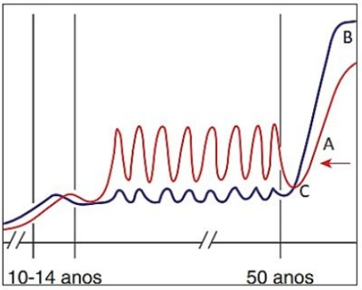
A Em “C” observa-se a queda da inibina e estradiol e perda da alça de feedback negativo sobre o FSH
B Em “C” observa-se a elevação da inibina e queda do estradiol e consequente perda do feedback positivo sobre o LH.
C Em “C” observa-se a elevação da inibina e perda da alça de feedback negativo sobre o estradiol
D Em “C” observa-se a queda da inibina e perda da alça de feedback positivo sobre a progesterona
Questão 1595 · Tumores ovarianos benignos · 4000186212MAS, 26 anos, nuligesta, ciclos menstruais regulares, sem queixas ginecológicas, apresenta imagem ultrassonográ ca em ovário esquerdo, cística com medida de 12,5 x 10,0 x 9,5 cm, volume de 593 cm³, sem aumento de uxo ao doppler, ausência de sinais de espessamento de capsula, septações ou áreas cístico sólidas. Diante do quadro, é correto afirmar:
A Devido ao tamanho, volume e características ultrassonográficas, trata-se de um cisto com alto potencial de malignidade, sendo necessárias avaliação e conduta da equipe de oncologia.
B Solicitação e avaliação dos marcadores tumorais é fundamental na definição da conduta terapêutica.
C Pelas características ultrassonográficas, trata-se de um cisto simples folicular, sendo a inibição da ovulação com contraceptivos a conduta ideal.
D Trata-se de um cisto volumoso com características de benignidade, porém com indicação de tratamento cirúrgico devido ao tamanho e volume e risco de torção ovariana.
Revisar: possível letra faltando em enunciado
Questão 1596 · Mecanismo de ação · Benef ícios · Quadro Clínico · 4000186211CMA, 45 anos, GIII PIII A0, 3PC + Laqueadura tubária, refere ciclos regulares, duração de 05 dias, porém com queixa de dismenorreia progressiva com piora nos últimos 04 anos, de forte intensidade nos três primeiros dias, associada com aumento de uxo menstrual e duração de 05 dias. Apresenta USG Transvaginal com útero vol. 150 cm³ globoso, assimetria de paredes uterinas, espessamento difuso da zona juncional de 14 mm e focos hiperecogênicos, endométrio de 12 mm, ovário direito vol. 8 cm³ e ovário esquerdo vol. 12 cm³. Diante desse resultado, o diagnóstico e tratamento inicial são:
A Adenomiose e histerectomia total.
B Endometriose e início terapia hormonal.
C Adenometriose e inserção de DIU Hormonal.
D Endometriose e histerectomia laparoscópica.
Questão 1597 · Histeroscopia · 4000186210RSS, 74 anos, menopausada desde os 45 anos, sem TH ( Terapia hormonal), procura UBS com queixa de sangramento vaginal em pequena quantidade um episódio, secreção serosanguinea, sem cólicas, sem dores, negando atividade sexual no período. Solicitados exames, apresenta ultrassonogra a transvaginal com útero vol. 48 cm³, endométrio de 20 mm, ovários não visualizados. Diante do quadro, a conduta adequada será:
A Expectante, uma vez que foi episódio único e endométrio se apresentar atrófico.
B Histeroscopia diagnóstica, devido ao sangramento uterino pós-menopausa.
C Histeroscopia cirúrgica e ablação endometrial, evitar recidiva do sangramento.
D Histerectomia total, devido a risco de neoplasia endometrial.
Questão 1598 · Tratamento cirurgico · Fator uterino · Tratamento clínico · 4000186209Paciente nuligesta, com quadro de infertilidade, apresenta, dentre outros exames, uma ultrassonogra a com útero miomatoso, volume de 291 cm³ e imagem nodular única de 8,5 x 6,0 x 7,5 cm³, transmural‚ endométrio 11mm, ovários com volume e aspectos normais. Diante do quadro, qual conduta está desaconselhada para o tratamento da infertilidade?
A Miomectomia laparoscópica
B Miomectomia abdominal
C Uso de Análogo de GNRH e miomectomia posterior
D Embolização uterina
Questão 1599 · Gerais · 4000186208SFS, 20 anos. procurou UBS. para contracepção, nuligesta, sem comorbidades, ciclos menstruais regulares, exames ginecológico, laboratoriais e de imagens (Ultrassonogra a transvaginal) normais, iniciou há 40 dias o uso de contraceptivo hormonal combinado oral (gestodeno 75 mcg +etinilestradiol 20 mcg). Retoma a UBS devido a sangramento em pequena quantidade no uso da primeira cartela por 04 dias. Nesta nova cartela, está no quinto comprimido sem sangramento, mas manifestando desejo de troca da medicação por medo de sangrar novamente e o contraceptivo não estar lhe protegendo como o esperado. Qual a orientação adequada para a paciente?
A Orientar que o sangramento de escape são comuns nos três primeiros meses de uso, e a presença dele não significa que o contraceptivo está com menor eficácia e que a paciente corre risco de gestação.
B O sangramento de escape é sinal de que a paciente não se adaptou ao contraceptivo e deve ser trocado o mais rápido possível, pois o risco de gestação se torna maior com o maior tempo de uso.
C É necessária a troca do contraceptivo de imediato, com os mesmos princípios ativos, porém com uma dose hormonal maior, o que irá trazer maior segurança contraceptiva à paciente
D Não há necessidade de troca do contraceptivo no momento, mas, até que o sangramento de escape não cesse, é recomendada uma outra forma de proteção contraceptiva.
Questão 1600 · Quadro clínico · 4000186207PAS, 25 anos, menarca aos 12 anos, nuligesta, vem em consulta ambulatorial com queixa de dismenorreia progressiva de forte intensidade com duração de 05 dias, com piora importante da qualidade de vida, cando acamada, sendo necessário medicação endovenosa no primeiro e segundo dia do ciclo, devido à intensidade da dor. Refere associada dispareunia de profundidade, evitando atividade sexual devido à dor. Relata que já consultou com três ginecologistas, sendo realizados ultrassonogra as e exames de rotinas sempre todos normais, recebendo como diagnóstico dismenorreia primária. Diante do quadro, NÃO é correto afirmar:
A Trata-se de sintomas bem característicos de endometriose, porém a investigação para a patologia não foi realizada de forma correta
B Pela clínica descrita, trata-se realmente de uma endometriose, devendo ser tratada de imediato, devido à clinica importante de dor da paciente
C Os principais exames a serem realizados para diagnóstico da patologia, seria uma ultrassonografia com preparo intestinal para endometriose e/ou ressonância magnética
D O tratamento adequado deverá ser realizado após o diagnóstico correto da patologia, podendo ele ser clínico ou cirúrgico.
Questão 1601 · Conservador · Diagnóstico · Classif icação · 4000186118Você está de plantão em um Hospital em Colombo e é chamado(a) para atender uma paciente de 80 anos, cardiopata grave, obesa, com queixa de sangramento genital, "bola" na vagina e di culdade para urinar, em alguns dias, não consegue urinar. Você faz diagnóstico de insu ciência renal aguda e ao examiná-la você identi ca a seguinte quanti cação do prolapso genital: POP-Q Pontos: Aa= +3 Ba=+6 C= +6; gh= 6 pb= 3 CVT= 6; Ap= +3 Bp= +6 D= +6; Você identi ca ainda que o sangramento vaginal é do prolapso genital. Qual a conduta você indica para a paciente?
A Sondagem vesical e cirurgia para correção do prolapso pela via abdominal.
B Sondagem vesical e uso de Pessário vaginal.
C Sondagem vesical e fisioterapia do assoalho pélvico.
D Interna a paciente e indica Cirurgia de Colpoperineoplastia anterior e posterior.
E Interna a paciente e indica Cirurgia de sling sintético.
Revisar: possível letra faltando em enunciado
Questão 1602 · Ultrassonograf ia · Quadro Clínico · Histeroscopia · 4000186117Paciente de 40 anos chega à consulta ginecológica com queixa de aumento do uxo menstrual, fez uso de ácido tranexâmico e cetoprofeno sem melhora e usa sulfato ferroso para tratamento de anemia. Ela é Gesta 2 com 2 Cesáreas e tem desejo de ter mais um lho. Relata ser hipertensa e estar em uso de Losartana. A Ultrassonogra a da paciente mostra útero em AVF com volume de 180cc às custas de mioma no terço inferior do útero, de classificação Tipo 1 da FIGO que tem seu maior diâmetro de 3cm, revela ainda que ambos os ovários micropolicísticos com volume de 10cc. Qual a conduta mais adequada para a paciente?
A Miomectomia abdominal.
B Histerectomia.
C Expectante.
D Miomectomia por histeroscopia.
E Anticoncepcional oral contendo Etinilestradiol e Drosperinona.
Questão 1603 · Def inição e mecanismo de ação · 4000186116Os contraceptivos hormonais orais, além da contracepção, possuem outros benefícios para a saúde. Dentre esses benefícios, pode-se destacar a proteção contra cistos funcionais do ovário. Marque a alternativa que contém outro benefício para a saúde feminina.
A Redução dos níveis de pressão arterial.
B Redução dos níveis de triglicerídeos pelo estrogênio.
C Redução dos níveis de glicemia pelo progestágeno.
D Redução do risco de eventos trombóticos.
E Redução acentuada e duradoura do risco de câncer de endométrio e ovário.
Questão 1604 · Terapia hormonal da menopausa · Indicações · Contraindicações · 4000186115Os sintomas vasomotores podem afetar até 75% das mulheres na perimenopausa e são um fator importante de piora da qualidade de vida das pacientes nesse período. Você atende uma paciente de 47 anos, com sintomas vasomotores, desânimo, humor depressivo e perda de energia. Ela tem ciclos irregulares, prole definida e vida sexual ausente há 5 anos. Ela faz exercícios físicos, não tem vícios, é ativa e trabalha como médica hospitalista em um hospital universitário. A paciente não tem contraindicação para terapia hormonal e deseja tratar os sintomas, que no momento estão atrapalhando sua performance. Qual medicamento é o mais adequado para essa paciente?
A 17 beta Estradiol + Didrogesterona.
B Etinilestradiol + Levonorgestrel.
C Etinilestradiol + Drosperinona contínuo.
D Estradiol transdérmico.
E Estradiol vaginal.
Questão 1605 · Citologia convencional · Lesão intraepitelial escamosa de baixo grau · 4000186114Nomenclatura citológica brasileira Paciente de 25 anos, iniciou vida sexual há 2 anos, vem à consulta de retorno para mostrar resultado de sua primeira Citologoia Oncótica Cérvico Vaginal. Ela é hígida, nunca engravidou e usa contraceptivo hormonal oral e condon como métodos contraceptivos e fez a vacinação completa para HPV. O resultado mostra Lesão Intraepitelial de Baixo Grau. Baseado no protocolo de rastreamento do Ministério da Saúde, qual é a conduta correta para essa paciente?
A Realizar Teste DNA-HPV.
B Colposcopia.
C Repetir Citologia Oncótica em 1 ano.
D Repetir Citologia Oncótica em 6 meses.
E Expectante.
Questão 1606 · Classif icação · Outros · 4000186113Um colega médico pede sua ajuda para o diagnóstico do caso de uma paciente de 40 anos com sangramento uterino aumentado e dismenorreia. Na história clínica, ela teve a menarca aos 11 anos, sempre teve ciclos menstruais curtos de 22 dias, nunca gestou e tem vida sexual ativa. O exame físico é normal e a paciente não possui mais nada relevante na história clínica. A ultrassonogra a que seu colega mostra para você está descrito como útero em AVF com volume de 180cc, miométrio heterogêneo difusamente, com presença de cistos miometriais; os ovários estão normais e com volume de 9cc. Segundo a Classi cação de PALM-COEIN, qual o diagnóstico mais provável?
A Causas não estruturais – Pólipo.
B Causas estruturais – Adenomiose.
C Causas estruturais – Disfunção Ovulatória.
D Causas não estruturais – Iatrogênicas.
E Causas estruturais – Leiomioma.
Questão 1607 · Diretrizes do rastreamento mamográf ico · 4000186111Você está atendendo uma paciente de 40 anos que veio para consulta ginecológica de rotina. Ela teve a menarca aos 12 anos e nunca engravidou, tem vida sexual ativa, nega doenças e não usa medicações. Relata que a mãe teve câncer de ovário aos 45 anos e faleceu da doença. Qual o principal exame de rastreamento você solicita para a paciente?
A Mamografia Bilateral.
B Ultrassonografia de Mamas.
C Ultrassonografia Transvaginal.
D Ressonância Magnética de Pelve.
E Paciente sem indicação de rastreamento ginecológico.
Questão 1608 · Contraindicações · Contraindicações · Benef ícios · 4000186110Paciente de 18 anos vai à consulta ginecológica porque iniciou atividade sexual há 3 meses e tem desejo de inserção do DIU. Ela tem ciclos regulares, não tem parceiro xo e usa condon em todas relações. Nunca gestou e tem pavor de engravidar. Qual a sua orientação?
A Examina a paciente e explica que ela não pode usar DIU em virtude de nunca ter gestado.
B Examina a paciente e explica que somente poderá fazer a inserção do DIU após coleta do Papanicolaou.
C Examina a paciente e orienta a voltar na próxima menstruação para inserção do DIU.
D Examina a paciente e explica que só poderá inserir o DIU após o resultado da Ultrassonografia.
E Conversa com a paciente e explica que a eficácia do DIU é alta, porém ele é contra indicado em adolescentes.
Questão 1609 · Critérios de elegibilidade da OMS · Tabela dos critérios de elegibilidade OMS · 4000185966Paciente, 23 anos, com diagnóstico de mutação de fator V de Leiden. Qual é o método contraceptivo mais adequado?
A Injetável mensal combinado.
B Injetável progestagênio.
C Anel vaginal.
D Contraceptivo oral combinado.
E Adesivo dérmico.
Questão 1610 · Ultrassonograf ia · Exames complementares · 4000185965Paciente, 19 anos, refere cólica menstrual intensa com início 2 dias pré-menstrual e se estende por 5 dias de uxo. Ciclos menstruais regulares e mensais. Uso de preservativo como contracepção. Nuligesta. Nega alterações de hábito intestinal e urinário. Sem outras comorbidades. Ao exame de toque vaginal apresenta útero retrovertido e xo, com regiões anexiais livres. Considerando a principal hipótese diagnóstica, qual o exame mais sensível para avaliação de comprometimento intestinal?
A Colonoscopia com preparo intestinal
B Enema opaco com preparo intestinal
C Tomografia computadorizada com contraste
D Trânsito intestinal com contraste
E Ultrassom transvaginal com preparo intestinal.
Questão 1611 · Tratamento das pacientes adultas · Tratamento das mulheres que não desejam engravidar · 4000185963Fisiopatologia Paciente, 19 anos, refere acne e oleosidade da pele com ciclos menstruais irregulares. Inicia uso de pílula contraceptiva oral combinada. Qual dos efeitos laboratoriais é esperado?
A Elevação da fração livre de testosterona.
B Redução da relação FSH/LH.
C Elevação de globulina transportadora de esteroide.
D Manutenção dos níveis de estradiol.
E Elevação da progesterona.
Questão 1612 · Dor mamária mastalgia · Descarga papilar · 4000185962Paciente, 32 anos, ciclos menstruais regulares, uso de preservativo como contracepção. Mãe falecida de câncer de mama aos 72 anos de idade. Refere dor mamária bilateral que antecede a menstruação em cerca de 5 dias. Ao exame clínico das mamas não se observam tumorações ou achados axilares. A expressão mamilar revela saída multiori cial de líquido amarelado em pequena quantidade por ambos os mamilos. Qual é a conduta mais adequada neste momento?
A Mamografia digital.
B Tranquilizar com seguimento clínico anual.
C Citologia do líquido.
D Ultrassonografia.
E Ressonância magnética das mamas.
Questão 1613 · Populaçãoalvo e intervalo · Coleta da colpocitologia oncótica · 4000185961Paciente, 60 anos, faz coleta de citologia para Papanicolaou como rastreamento. O resultado foi insatisfatório por escassez celular. Qual é a alternativa para esta paciente?
A Estradiol vaginal e repetir exame.
B Cirurgia de alta frequência.
C Curetagem de canal cervical.
D Colposcopia.
E Progesterona vaginal e repetir o exame.
Questão 1614 · Etiologia · Classif icação FIGO · Ovulatório Distúrbios · 4000185855Sangramento uterino anormal agudo (SUA-a) é definido como uxo sanguíneo proveniente do corpo do útero, em volume excessivo, não relacionado à gestação, com indicação de intervenção imediata, a m de se reduzir a perda sanguínea e evitar instabilidades clínica e hemodinâmica. Dentre as causas conhecidas, a mais frequente se relaciona à presença de
A pólipos.
B coagulopatias.
C disfunção ovulatória.
D leiomioma.
E adenomiose.
Questão 1615 · Ultrassonograf ia · Leiomiomatose uterina · 4000185853Para sistematizar as descrições dos miomas, foi criada a classificação da Federação Internacional de Ginecologia e Obstetrícia (FIGO) para a localização dos miomas uterinos. O grupo MUSA (Morphological Uterus Sonographic Assessment) corroborou a sua utilização. Seguindo essa nova classificação, um nódulo miomatoso completamente localizado na cavidade uterina, sem comprometimento do miométrio é classificado como:
A FIGO/MUSA 0.
B FIGO/MUSA 1.
C FIGO/MUSA 4.
D FIGO/MUSA 7.
E FIGO/MUSA 8.
Questão 1616 · Fatores de risco e de proteção · Prognóstico · Patogênese · 4000185852A endometriose é uma doença crônica que acomete até 15% das mulheres em idade reprodutiva. A maioria das mulheres apresenta dor pélvica crônica e/ou infertilidade. Em relação à endometriose pélvica, duas situações fisiológicas se relacionam à melhora da dor. São elas:
A infância e menacme.
B puberdade e gravidez.
C lactação e menacme.
D puberdade e senilidade.
E gravidez e menopausa.
Questão 1617 · Diagnóstico e Exames Complementares · 4000185851Mulher de 46 anos, com amenorreia de 14 meses, quadro de ondas de calor, irritabilidade e diminuição da libido. Para a correta hipótese diagnóstica da síndrome climatérica, é correto afirmar:
A faz-se necessária a dosagem de FSH e LH.
B faz-se necessária a dosagem de somente FSH.
C nessa faixa etária, o diagnóstico é clínico.
D faz-se necessária a dosagem de FSH e estradiol.
E faz-se necessária a dosagem de somente estradiol.
Questão 1618 · Diretrizes do rastreamento mamográf ico · 4000185849O câncer de mama é o mais incidente em mulheres em todo o mundo, excluindo-se o câncer de pele não melanoma. É a quinta causa de morte por câncer, sendo a causa mais frequente de morte por câncer entre as mulheres. De acordo com as Diretrizes para a detecção precoce do câncer de mama no Brasil, do Ministério da Saúde, em mulheres sem fatores de risco, seu rastreamento através da mamogra a deve ser feito entre:
A 40 e 69 anos, anualmente.
B 50 e 69 anos, a cada 2 anos.
C 40 e 69 anos, a cada 2 anos.
D 50 e 69 anos, anualmente.
E 50 e 69 anos, a cada dois anos depois de 2 exames anuais normais.
Questão 1619 · Reserva ovariana · 4000185847Para a avaliação da reserva ovariana, recomenda-se dosagem de
A FSH no início do ciclo menstrual.
B LH no meio do ciclo menstrual.
C estradiol na segunda metade do ciclo menstrual.
D progesterona na segunda metade do ciclo menstrual.
E androgênios em qualquer fase do ciclo menstrual.
Questão 1620 · Implante subdérmico · Dispositivos intrauterinos · 4000185846No que diz respeito aos métodos contraceptivos reversíveis de longa duração (LARC), é correto afirmar que
A os injetáveis trimestrais entram nessa categoria.
B não devem ser utilizados na perimenopausa.
C associam estrogênios e progestagênios.
D são considerados boa opção para adolescentes.
E nuliparidade é contraindicação ao seu uso.
Questão 1621 · BIRADS 2 · 4000185845Mulher de 40 anos é submetida à primeira mamogra a acompanhada de ultrassonogra a mamária como triagem preventiva. Ao ultrassom, apresentou nódulo de 2,3 cm, em junção dos quadrantes externos da mama D, com maior eixo paralelo à pele, limites nítidos e conteúdo anecoico, com reforço posterior. Nenhuma outra alteração foi observada. Esse achado deve corresponder à qual estágio da classificação de BI RADS e qual deve ser a conduta?
A BI RADS 1 e novo exame, seguindo a periodicidade de rotina.
B BI RADS 2 e novo exame, seguindo a periodicidade de rotina.
C BI RADS 3 e novo exame em 6 meses.
D BI RADS 4 e punção dirigida por ultrassom.
E BI RADS 0 e realização de ressonância magnética.
Questão 1622 · Rastreamento do câncer de mama · 4000185824Durante uma consulta periódica de saúde, uma mulher de 29 anos de idade questiona sobre o autoexame das mamas (AEM) como método de rastreamento do câncer de mama. Do ponto de vista da medicina baseada em evidência, em paciente de baixo risco desse câncer, é correto afirmar:
A as evidências disponíveis mostram que o AEM reduz a necessidade de testes adicionais ou de biópsia.
B o médico não deve ensinar a paciente a realizar o AEM.
C há fortes evidências de que o AEM é uma modalidade de triagem apropriada.
D há evidências limitadas de que o AEM é uma modalidade de triagem apropriada.
E não há evidências suficientes para recomendar a favor ou contra o AEM.
Questão 1623 · Métodos hormonais combinados · Pressão arterial · Contraindicações · 4000185818Mulher de 32 anos de idade, saudável, sem comorbidades, iniciou contraceptivos orais combinados há 3 meses e, nas últimas três visitas, sua pressão arterial consistentemente tem cado acima de 140 x 90 mmHg. Nesse sentido, o próximo passo é
A descontinuar o contraceptivo oral e recomendar um método de barreira.
B mudar para uma pílula com um componente de estrogênio mais alto.
C mudar para uma pílula com um componente de estrogênio mais baixo.
D mudar para uma pílula com um componente de progestina mais baixo.
E não recomendar nenhum método por 12 meses.
Revisar: possível letra faltando em enunciado
Questão 1624 · Fatores de risco · Rastreamento do câncer de mama · 4000185817Paciente de 36 anos de idade, transgênero, que toma hormônios feminizantes há 5 anos, procura a unidade básica de saúde para obter informações sobre o rastreamento do câncer. Ela não tem histórico familiar de nenhum tipo de câncer. Nessa paciente, qual é o tipo de câncer de maior risco?
A cervical.
B cólon.
C endométrio.
D mama.
E pulmão.
Questão 1625 · Populaçãoalvo e intervalo · 4000185810Mulher de 67 anos de idade, assintomática, é atendida em consulta de rotina. Ela está com dúvidas acerca do seu rastreamento de câncer do colo do útero. Seu único exame de Papanicolau realizado há 3 anos foi normal. A avaliação do papilomavírus humano (HPV) não foi realizada. Qual é a recomendação de triagem para essa paciente?
A O rastreamento do câncer do colo do útero deve ser repetido em 5 anos.
B O rastreio do câncer do colo do útero deve ser repetido agora.
C O rastreamento do câncer do colo do útero deve ser realizado, além da pesquisa de clamídia, gonorreia, sífilis, hepatite B, hepatite C e HIV.
D O rastreamento do câncer de colo de útero deve ser realizado, anualmente, até os 80 anos de idade.
E Essa paciente não precisa de nenhum rastreamento.
Questão 1626 · Contraindicações · 4000185774São situações clínicas com contraindicações absolutas (categoria 4) aos anticoncepcionais hormonais combinados, de acordo com critério médico de elegibilidade da Organização Mundial da Saúde (OMS)
A Trombose venosa profunda e embolismo pulmonar atual ou pregresso, independentemente do uso de anticoagulante.
B Anemia macrocitica.
C Endometriose e adenomiose.
D Diabetes Mellitus não complicado com menos de 20 anos de doença.
Questão 1627 · Contraindicações · 4000185772Paciente de 53 anos chega ao ambulatório queixando-se de fogachos, ressecamento vaginal e alterações de humor. Ela refere amenorreia há 15 meses, obesidade grau 2, tem dislipidemia e infarto agudo do míocárdio há 3 meses. Assinale a alternativa que apresenta uma conduta terapêutica inadequada para essa paciente.
A Cimicifuga Actea via oral.
B Promestrieno via vaginal.
C Estradiol + noretisterona via oral.
D Inibidor seletivo da recaptação de serotonina.
Questão 1628 · Tratamento cirúrgico · 4000185771Em paciente com adenocarcinoma de endométrio optou-se pela círurgia de Wertheim-Meigs, nesse caso, qual órgão ou estrutura será preservado?
A Ovários.
B Terço médio da vagina.
C Paramétrios.
D Linfonodos pélvicos.
Questão 1629 · Complicações · Tratamento · 4000185769São critérios para indicação de tratamento hospitalar da doença inflamatória pélvica, exceto:
A Abscesso tubo ovariano.
B Ausência de resposta clínica após 72 h de tratamento com antibióticos.
C Alergia ao antibiótico Doxiciclina.
D Estado geral grave com náuseas, vômito e febre
Questão 1630 · Rastreamento mamográf ico · Ressonância magnética · 4000185768Sobre o câncer de mama assinale a alternativa incorreta.
A Mulheres com uma mutação BRCA 1 têm um risco absoluto de quase 60% de desenvolver câncer de mama até os 70 anos de idade.
B A mortalidade por câncer de mama caiu drasticamente desde a década de 1980, e tanto a detecção precoce por meio de triagem quanto as melhorias no tratamento do câncer de mama são responsáveis por essa redução na mortalidade.
C A ressonância magnética, quando disponível, é preferível à mamografia no diagnóstico do câncer de mama.
D A sensibilidade e especificidade da mamografia são dependentes da idade, sendo maior em mulheres mais velhas do que em mulheres mais jovens.
Questão 1631 · Ginecologia · 4000185684Quanto ao exame físico ginecológico, podemos afirmar, exceto:
A O exame especular permite a visualização das paredes vaginais, rugosidades, coloração e possíveis lesões.
B O exame especular permite a exposição do colo uterino, visualização de possíveis lesões e coleta do material para citologia cérvicovaginal.
C Na observação de secreção vaginal anormal, poderá colher essa secreção para exame a fresco e identificação de parasitas ou fungos.
D O toque vaginal avalia a consistência, posição e direcionamento do colo uterino.
E No toque vaginal com uma das mãos e de forma unidigital favorece a palpação dos anexos.
Questão 1632 · Diretrizes para o rastreamento · 4000185683A Colpocitologia oncótica é o método diagnóstico utilizado para rastreamento do câncer de colo de útero, com o objetivo de identi car mulheres com lesões cervicais pré-invasivas, tratá-las, evitando aparecimento do câncer invasor. No Brasil, constitui uma das prioridades da agenda da saúde. Segundo o Ministério da Saúde, podemos afirmar que:
A O rastreamento do câncer de colo deve ser realizado, apenas, nas mulheres que iniciaram atividade sexual.
B O rastreamento do câncer de colo deve ser iniciado a partir dos 35 anos.
C Esse rastreamento deve ser realizado anualmente até os 64 anos, mesmo em mulheres assintomáticas, com exames de colpocitologia oncótica normais anteriores.
D Estão disponíveis, na rede pública, vacinas contra o HPV, para meninas e meninos de até 16 anos.
E A Colposcopia com biópsia deve ser realizada após todos os exames de colpocitologia alterada com ASC-US.
Questão 1633 · Ginecologia · 4000185682Considerando a doença inflamatória pélvica como sendo um conjunto de processos inflamatórios da região pélvica. Podemos afirmar, exceto:
A É uma das principais complicações das infecções sexualmente transmissíveis.
B Podemos citar como fatores de risco: múltiplos parceiros sexuais, atividade sexual desprotegida, história passada de infecção sexualmente transmissível e idade adulta (maior que 25 anos).
C Entre os patógenos mais frequentes podemos citar a Chlamydia trachomatis, seguida da Neisseria gonorrhoeae.
D O quadro clínico pode ser variável desde pacientes assintomáticos a quadro de dor abdominal intensa, febre, secreção vaginal purulenta e dispareunia.
E Entre os critérios específicos de diagnóstico podemos citar a ultrassonografia transvaginal com evidência de abscesso tubo ovariano.
Questão 1634 · Ginecologia · 4000185680A menarca ocorre com o amadurecimento do eixo córtico-hipotalâmico-hipo sário-ovário. A ausência da primeira menstruação espontânea deve ser investigada quando? I. A menarca não ocorreu aos 15 anos de idade em meninas com caracteres sexuais secundários presentes. II. A menarca não ocorreu cinco anos após o início do desenvolvimento das mamas, se a telarca ocorreu antes de 10 anos de idade. III. A menarca não ocorreu em meninas de 13 anos de idade, nas quais se veri que completa ausência de caracteres sexuais secundários. IV. Na presença de estigmas genéticos sugestivos, independente da faixa etária. Marque a alternativa correta:
A Apenas I e III estão corretas
B I, II e III estão corretas
C I, III e IV estão corretas
D Apenas I está correta
E Todas estão corretas
Questão 1635 · Tratamento · 4000185678Mulher com 30 anos de idade, estado civil: casada, G0/P0, com desejo de engravidar, com queixas de dor pélvica e uxo menstrual aumentado. Em exame de ultrassonogra a transvaginal foi evidenciado presença de mioma intramural em corpo uterino, de 6,0cm. Qual a melhor conduta?
A Histerectomia total abdominal.
B Histerectomia vaginal.
C Embolização das artérias uterinas seguida de miomectomia.
D Análogo de GnRha seguida de miomectomia.
E Ligadura das artérias uterinas, seguida de miomectomia.
Questão 1636 · Próteses mamárias · 4000185590Paciente do sexo feminino, 48 anos de idade, dá entrada ao pronto atendimento com relato de trauma torácico em topogra a mamária esquerda há cerca de 5 dias. Desde então, refere que percebeu discreta diminuição de volume na mama esquerda. Na história pregressa consta o implante de prótese mamária de silicone há cerca de 12 anos. Com relação ao quadro clínico descrito acima, considerando a possibilidade de ruptura da prótese mamária, assinale a alternativa CORRETA que apresenta o exame mais adequado para a definição diagnóstica.
A Ultrassonografia de mamas.
B Ressonância nuclear magnética com contraste.
C Mamografia.
D Ressonância nuclear magnética sem contraste.
Questão 1637 · Contraindicações · 4000185574Os contraceptivos hormonais orais combinados apresentam confirmada e cácia, apesar de efeitos adversos. Assinale a alternativa que apresenta uma contraindicação absoluta ao seu uso.
A Trombofilia.
B Cloasma.
C Cefaleia.
D Acne.
Questão 1638 · Ginecologia · 4000185573Paciente do sexo feminino, 55 anos de idade, comparece para consulta com queixa de massa e dor vaginal. HP: histerectomia, doença inflamatória pélvica. Casada. Vida sexual ativa. Clinicamente constata-se cisto- retocele de III grau e prolapso de cúpula vaginal de II grau. Com relação ao quadro clínico descrito acima, assinale a alternativa que apresenta a melhor opção de tratamento para esta paciente.
A Correção do prolapso com uso de telas inorgânicas.
B Colpocleise.
C Fisioterapia pélvica.
D Correção das distopias com tecidos nativos.
Questão 1639 · Ginecologia · 4000185571Paciente do sexo feminino comparece para acompanhamento de cisto ovariano e apresenta ao ultrassom presença de vegetações e papilas no cisto de 5 cm de diâmetro: observa-se concomitante elevação do Ca 125 para 200 u/mL. Com relação ao quadro clínico descrito acima, assinale a alternativa que apresenta o fator que mais afeta positivamente a sobrevida da paciente.
A Referenciamento para o oncologista ginecológico.
B Referenciamento ao oncologista clínico.
C Referenciamento ao cirurgião oncológico.
D Referenciamento a equipe multidisciplinar em Oncologia.
Questão 1640 · Ginecologia · 4000185570Paciente do sexo feminino, 33 anos de idade, procura pronto atendimento com um quadro de dor pélvica iniciada há 3 dias após a menstruação. Ao exame, a paciente apresenta-se febril (38ºC), com presença de secreção purulenta no colo uterino, mobilização uterina dolorosa ao toque e dor à descompressão na palpação do abdome inferior. Com relação ao quadro clínico descrito acima, assinale qual a conduta imediata a ser tomada.
A Tratamento ambulatorial com doxiciclina por 14 dias.
B Internação para videolaparoscopia.
C Internação e prescrição de clindamicina + gentamicina parenterais.
D Observação ambulatorial e retorno após exames de urina, hemograma e ultrassonografia vaginal.
Questão 1641 · Interpretação e conduta f rente as atipias citológicas · 4000185569Paciente do sexo feminino, 32 anos de idade, volta à Unidade Básica de Saúde com o resultado do seu exame citopatológico: células glandulares atípicas de significado indeterminado. Com relação ao quadro clínico descrito acima, assinale a alternativa que apresenta a conduta CORRETA.
A Repetir o exame em 6 meses.
B Encaminhar para colposcopia.
C Repetir o exame no período normal.
D Encaminhar para cirurgia de alta frequência.
Questão 1642 · Sangramento uterino anormal · 4000185568O sangramento uterino anormal, queixa frequente na consulta ginecológica, pode ter causas e tratamentos variados, a depender da idade. Qual das alternativas abaixo, sobre o seu tratamento, está CORRETA.
A Os anticoncepcionais orais combinados não devem ser utilizados em pacientes adolescentes.
B O uso prolongado de agonistas do GnRH é uma boa opção para pacientes jovens.
C O uso de um progestogênio por 10 dias no mês é eficaz, além de ter ação contraceptiva.
D O ácido tranexâmico é eficaz em reduzir o sangramento uterino.
Questão 1643 · Ética em reprodução humana · Fertilização in vitro · 4000185567Paciente do sexo feminino, 32 anos de idade, em amenorreia, com diagnóstico de falência ovaríana prematura, vem com seu parceiro à consulta com desejo de engravidar. Com relação ao quadro clínico descrito acima, assinale a alternativa que apresenta a resposta adequada para a sua demanda.
A Não há possibilidade de engravidar.
B Fertilização in vitro com óvulos doados pela irmã.
C Estimulação ovariana com doses altas de gonadotrofinas.
D Fertilização in vitro com útero de substituição.
Questão 1644 · Anatomia da Pelve · Anatomia do trato genital f eminino · 4000185529Com a posição ereta do ser humano, desenvolveu-se o assoalho pélvico como estrutura de sustentação para evitar o prolapso dos órgão pélvicos. O equilíbrio entre arcabouço ósseo e tecido bromuscular permite a manutenção das funções orgânicas. Em relação à anatomia e siologia pélvicas na mulher, assinale a alternativa ERRADA:
A A função de suspensão do complexo uterovaginal, bexiga e reto é formada pelo tecido endopélvico e pela fáscia endopélvica
B As espinhas isquiáticas são estruturas exclusivas do ser humano
C O hiato urogenital é uma abertura central do assoalho pélvico que permite ocorrer funções fisiológicas como, coito, esvaziamento vesical e o parto
D O ligamento uterossacral é responsável pela suspensão lateral do colo uterino, surgindo na parede lateral pélvica e se inserindo lateralmente ao colo do útero
Questão 1645 · Anatomia do trato genital f eminino · Vascularização pélvica · 4000185528O conhecimento da anatomia pélvica é fundamental na compreensão da siologia obstétrica e nas abordagens ginecológicas, diminuindo o risco de danos a vísceras e a estruturas nervosas e vasculares. Sobre a anatomia pélvica feminina, assinale a alternativa CORRETA:
A A artéria ovariana origina-se da artéria ilíaca externa e penetra na pelve através do ligamento suspensor do ovário
B A espinha isquiática é o ponto de referência importante para o bloqueio anestésico do nervo pudendo quando a solução anestésica é injetada medial e posteriormente a ela
C O formato ginecoide da pelve corresponde a cerca de 40% das pelves femininas e caracteriza-se pelo diâmetro anteroposterior maior em relação ao diâmetro transverso
D O plexo nervoso hipogástrico é importante estrutura do forame obturatório e pode ser lesado durante procedimentos para tratamento da incontinência urinaria, resultando em perda de adução da coxa e déficit sensitivo na face interna da coxa
Questão 1646 · Tratamento cirurgico def initivo · 4000185526Mulher de 45 anos é submetida a histerectomia abdominal total com salpingectomia pro lática, para tratamento de grande mioma transmural na parede lateral esquerda do útero. No pós-operatório foi identi cado que houve lesão ureteral durante a cirurgia. Assinale o tempo cirúrgico que MAIS PROVAVELMENTE está associado a esta lesão.
A Ligadura e secção dos ligamentos uterossacros
B Ligadura e secção dos vasos ovarianos
C Ligadura e secção dos vasos tubários
D Ligadura e secção dos vasos uterinos
Revisar: possível letra faltando em enunciado
Questão 1647 · Terapia hormonal · 4000185521RDF, 51 anos se apresenta no ambulatório de climatério relatando última menstruação há dois anos e com queixas de ondas de calor intensas, insônia, irritabilidade e diminuição de desejo sexual. Diz que sua qualidade de vida está muito prejudicada. É sedentária, tem IMC= 26kg/m², exame clínico, mamário e ginecológico sem alterações. Citologia do colo negativa. A paciente se mostra desejosa de fazer uso de terapia hormonal da menopausa (THM). Qual a PROPEDÊUTICA BÁSICA antes de iniciar a THM?
A Mamografia realizada, no máximo, há dois anos. Pedir dosagem de colesterol total, HDLcolesterol, triglicérides e glicemia de jejum
B Mamografia realizada, no máximo, há um ano e ultrassonografia mamária. Colesterol total, HDL- colesterol, triglicérides e glicemia de jejum
C Mamografia realizada, no máximo, há um ano. Colesterol total, HDL-colesterol, triglicérides e glicemia de jejum, Ultrassonografia endovaginal
D Mamografia realizada, no máximo, há um ano. Colesterol total, HDL-colesterol, triglicérides e glicemia de jejum
Questão 1648 · Fases do ciclo menstrual · Fase f olicular · Foliculogênese ovariana · 4000185520O ciclo menstrual é um conjunto de eventos endócrinos interdependentes do sistema hipotálamo-hipó se- ovariano que levam a modi cações siológicas no organismo da mulher visando à ovulação. Ao nal da fase folicular, as células da granulosa passam a expressar também receptores na superfície das células da granulosa, associado à redução dos receptores de hormônio folículo estimulante (FSH) pelo mecanismo de autorregulação, leva à mudança no padrão de dependência do folículo do FSH para uma fase LH-dependente. Esta modificação do padrão de resposta do folículo ao LH é responsável:
A pela produção de prostaglandinas que aumentam a contração das células da musculatura lisa que envolvem o folículo, ajudando na extrusão do óvulo
B pela produção de substâncias proteolíticas que promovem a digestão da parede celular folicular, facilitando a extrusão do oócito secundário
C pela reativação da meiose do óvulo que havia sido interrompida no período diplóteno da primeira meiose na vida intrauterina
D pelo estímulo à neovascularização local, reduzindo a produção folicular de estradiol pelas células da teca luteinizadas
Questão 1649 · Tratamento do sangramento uterino anormal agudo · 4000185517Sobre o controle do sangramento uterino anormal agudo (SUA-a), assinale a alternativa CORRETA:
A Diante de falha do tratamento clínico, a embolização da artéria uterina está contraindicada no SUA- a quando há desejo de preservação da fertilidade
B Os balões intrauterinos podem ser uma opção em adolescentes com coagulopatias e devem permanecer na cavidade uterina por tempo mínimo de 48 horas
C Os procedimentos cirúrgicos são considerados tratamentos de segunda linha no SUA-a, reservados para casos refratários ao tratamento clínico ou secundários a causas estruturais
D Podem ser realizadas a curetagem ou a histeroscopia na abordagem do SUA-a, sem comprovada superioridade de uma opção sobre a outra no tratamento de lesões focais
Questão 1650 · Planejamento f amiliar · 4000185516Paciente de 18 anos, nuligesta, deseja iniciar atividade sexual e vem a consulta médica para orientações sobre contracepção hormonal e métodos de barreira. Assinale a orientação CORRETA sobre os métodos contraceptivos:
A As taxas de falha no primeiro ano de uso para pílulas anticoncepcionais, adesivos hormonais e anéis de barreira são semelhantes às taxas de falha de DIU ou implante hormonal
B Lubrificantes oleosos não devem ser utilizados juntamente com os preservativos, pois podem causar grande redução em sua resistência
C O etinilestradiol é responsável pela diminuição das proteínas hepáticas, como a albumina e a proteína carreadora dos hormônios sexuais
D Pacientes portadoras de epilepsia em tratamento com ácido valpróico possuem contraindicação para o uso de contraceptivos orais
Questão 1651 · Papilomavírus humano HPV · 4000185515Paciente de 35 anos, vai à consulta ginecológica queixando-se de lesões elevadas, pruriginosas em região vulvar. Reclama ainda de constrangimento na relação sexual devido a essas lesões. Última citologia oncótica há três anos: Negativa para displasias. Ao exame: Apresenta quatro lesões, elevadas, serrilhadas, discretamente endurecidas, medindo cerca de 0,5cm cada, em introito vaginal, períneo, próximo ao clitóris e vulva. No exame especular apresenta duas dessas lesões, com 0,6cm cada, na parede vaginal lateral. Colo normal, sem áreas acetobrancas e teste de Schiller negativo. Assinale a alternativa que possui a MELHOR CONDUTA sobre o caso:
A Colher citologia oncótica do colo e pedir teste molecular para detecção do HPV no colo e nas lesões descritas
B Colher citologia oncótica do colo e realizar cauterização química das lesões internas e externas com ácido tricloroacético
C Colher citologia oncótica e prescrever imunomodulador para a própria paciente aplicar nas lesões
D Pedir teste molecular para detecção do HPV no colo e nas lesões descritas e aguardar o resultado para decidir o tratamento
Questão 1652 · Fisiopatologia · 4000185382O conhecimento da ora normal e os mecanismos envolvidos com a sua manutenção são indispensáveis para os diagnósticos etiológicos das vulvovaginites. No diagnóstico da vaginose bacteriana, observa-se o seguinte:
A pH < 4,5.
B aumento de lactobacilos.
C resposta inflamatória exacerbada.
D células-guia (clue cells).
E presença de pseudo-hifas.
Questão 1653 · Quadro clínico · 4000185381Para responder à questão , leia o texto a seguir. A SOP (síndrome dos ovários policísticos) é um relevante problema de saúde pública, que provoca alterações metabólicas, reprodutivas e psicológicas significativas. É uma das condições mórbidas mais comuns em mulheres no menacme, afetando de 8 a 13% das pacientes em idade reprodutiva. Assinale a alternativa que demonstra causas importantes da perda da qualidade de vida dessas mulheres.
A Distúrbio menstrual e peso normal.
B Alopecia e amenorreia.
C Sobrepeso e varizes.
D Depressão e dismenorreia.
E Hirsutismo e obesidade.
Questão 1654 · Epidemiologia · Fisiopatologia · Diagnóstico · 4000185380Para responder à questão , leia o texto a seguir. A SOP (síndrome dos ovários policísticos) é um relevante problema de saúde pública, que provoca alterações metabólicas, reprodutivas e psicológicas significativas. É uma das condições mórbidas mais comuns em mulheres no menacme, afetando de 8 a 13% das pacientes em idade reprodutiva. Assinale a alternativa que indica o câncer em que a anovulação crônica da SOP predispõe.
A Tireoide.
B Fígado.
C Endométrio.
D Cólon.
E Colo uterino.
Questão 1655 · Ovulação · 4000185379G.B.D., 34 anos, vem ao ginecologista por atraso menstrual de 18 dias. Exames laboratoriais: beta HCG negativo, níveis de FSH, LH e estradiol normais. Progesterona com valor abaixo do esperado. De acordo com o caso, assinale a alternativa que indica a atual situação da paciente.
A Presença de corpo lúteo persistente.
B Ausência de ovulação nesse ciclo.
C Paciente encontra-se na segunda fase do ciclo.
D Paciente apresenta atrofia endometrial.
E Há uma provável insuficiência ovariana precoce.
Questão 1656 · Def inições · 4000185378A população folicular vai se reduzindo ao longo da vida, culminando com a falência ovariana, característica da menopausa. Assinale a alternativa que indica a idade em que a menopausa geralmente ocorre.
A 30 anos de idade.
B 40 anos de idade.
C 50 anos de idade.
D 60 anos de idade.
E 70 anos de idade.
Questão 1657 · Critérios de elegibilidade da OMS · Tabela dos critérios de elegibilidade OMS · 4000185377Para organizar a associação entre algumas importantes comorbidades ou características da mulher e os métodos anticoncepcionais, usam-se os critérios de elegibilidade da Organização Mundial da Saúde. Assinale a alternativa que indica situações em que a classificação é de categoria 4 para o uso do sistema intrauterino de levonorgestrel (DIU-LNG) e para o DIU de cobre, respectivamente.
A Antecedente pessoal de trombose venosa profunda; câncer de mama atual.
B Enxaqueca com aura; adenoma hepático.
C Câncer de mama atual; leiomioma submucoso.
D Imediatamente após aborto; sangramento uterino anormal por leiomioma subseroso.
E LES com Ac Antifosfolípide (+); imediatamente após aborto.
Questão 1658 · Diagnóstico · Fisiopatologia · 4000185376Mulher, idade: 63 anos, apresenta queixa de urgência miccional. A paciente relata que o sintoma iniciou há, aproximadamente, 1 ano, associado a episódios de aumento da frequência miccional diurna e noctúria. Nega perda urinária quando tosse, relata hipertensão arterial sistêmica controlada com medicação anti-hipertensiva e nega outras comorbidades. Durante história gineco-obstétrica, a paciente relata menopausa aos 52 anos de idade e três gestações prévias, todas com partos via vaginal. Refere consumo abundante de café e chás. Ao exame físico, apresenta sinais de hipoestrogenismo genital, ausência de prolapsos e teste de perda de urina aos esforços negativo. O IMC da paciente é 30 kg/m². Assinale a principal hipótese diagnóstica para o caso apresentado, e o exame complementar que deve ser sugerido para a investigação inicial, respectivamente.
A Incontinência urinária de estresse; estudo urodinâmico.
B Incontinência urinária mista; cistoscopia.
C Bexiga hiperativa; urina tipo I e urocultura.
D Incontinência urinária de estresse; urina tipo I e urocultura.
E Incontinência urinária mista; estudo urodinâmico.
Questão 1659 · Exames complementares · 4000185375A endometriose é uma afecção muito mais comum do que se imagina, principalmente nos estádios iniciais. Por isso, se quisermos fazer o diagnóstico correto, é necessário estar muito atento à queixa clínica da paciente, e, posteriormente, associar a exame físico e de imagem. Com relação a um marcador de endometriose profunda, assinale a alternativa correta.
A Endometriomas.
B Fluido nos ovários.
C Defeito peritoneal.
D Hipervascularização.
E Dismenorreia severa.
Questão 1660 · Rastreamento mamográf ico · 4000185374O câncer de mama é a neoplasia mais frequente no mundo entre as mulheres, excluindo as neoplasias de pele não melanoma. Sobre sua incidência, carcinogênese, rastreamento e tratamento, assinale a alternativa correta.
A O câncer de mama hereditário é responsável por cerca de 70% dos cânceres mamários.
B De acordo com o Inca (Instituto Nacional de Câncer), o rastreamento com mamografia deve ser bienal, em mulheres de 50 a 69 anos de idade.
C Características de microcalcificações pleomórficas, amorfas e agrupadas na mamografia são sugestivas de lesões benignas.
D Nódulos hipodensos, mais largos do que altos e lobulados à mamografia, são sugestivos de lesões malignas.
E A radioterapia adjuvante à cirurgia não possui finalidade curativa.
Questão 1661 · Métodos hormonais combinados · Contraindicações · Planejamento f amiliar · 4000185329Mulher, 26 anos de idade, primípara, vem ao consultório do ginecologista para exames de rotina, desejando a troca de método contraceptivo. Exames laboratoriais gerais, atuais, sem alterações. Ultrassom de Abdome do último mês evidenciou adenoma hepático de 2,7cm. Última colpocitologia oncótica, realizada há 6 meses, apresentou atipia de células escamosas de significado indeterminado (ASC-US). Ultrassonogra a transvaginal recente sem alterações. Identifique o método contraceptivo que poderá ser indicado nesse caso.
A DIU de cobre ou de prata.
B Contraceptivo oral hormonal combinado.
C Injetável mensal.
D Adesivo.
Questão 1662 · Células escamosas atípicas de signif icado indeterminado possivelmente nãoneoplásicaas ASCUS · 4000185328Interpretação e conduta f rente as atipias citológicas Mulher, 26 anos de idade, primípara, vem ao consultório do ginecologista para exames de rotina, desejando a troca de método contraceptivo. Exames laboratoriais gerais, atuais, sem alterações. Ultrassom de Abdome do último mês evidenciou adenoma hepático de 2,7cm. Última colpocitologia oncótica, realizada há 6 meses, apresentou atipia de células escamosas de significado indeterminado (ASC-US). Ultrassonogra a transvaginal recente sem alterações. Frente ao caso descrito, indique a conduta a ser adotada diante do resultado da citologia oncótica.
A Realizar colposcopia.
B Realizar nova colpocitologia oncótica daqui a 6 meses.
C Realizar nova colpocitologia oncótica nessa consulta.
D Fazer biópsia do colo uterino.
Questão 1663 · Anel vaginal · 4000185327Mulher, 26 anos de idade, primípara, vem ao consultório do ginecologista para exames de rotina, desejando a troca de método contraceptivo. Exames laboratoriais gerais, atuais, sem alterações. Ultrassom de Abdome do último mês evidenciou adenoma hepático de 2,7cm. Última colpocitologia oncótica, realizada há 6 meses, apresentou atipia de células escamosas de significado indeterminado (ASC-US). Ultrassonogra a transvaginal recente sem alterações. No momento, a paciente vem em uso de anel vaginal. Sobre esse método é correto afirmar que
A é um contraceptivo hormonal com progestágeno isolado
B tem atuação por 21 dias e após esse período deve ser trocado por um novo anel.
C é um dos melhores métodos para pacientes com enxaqueca com aura.
D é inserido pelo ginecologista e tem validade por 3 anos.
Questão 1664 · Diagnóstico · Quadro clínico · 4000185320Mulher, 20 anos de idade, em uso de adesivo como método contraceptivo refere prurido vaginal intenso, há três dias, associado a corrimento grumoso e esverdeado, sem odor fétido. Nega febre. Ao exame: colpite difusa. Identifique o provável agente etiológico, nesse caso:
A Gardnerella vaginalis.
B Trichomonas vaginalis.
C Candida albicans.
D Clamídia Trachomatis.
Questão 1665 · Diagnóstico · 4000185319Mulher, 20 anos de idade, em uso de adesivo como método contraceptivo refere prurido vaginal intenso, há três dias, associado a corrimento grumoso e esverdeado, sem odor fétido. Nega febre. Ao exame: colpite difusa. Identifique o exame que pode ser realizado, no momento da consulta, para confirmação diagnóstica:
A Exame a fresco com hidróxido de potássio a 10%.
B PCR.
C Captura híbrida.
D Cultura de secreção vaginal.
Questão 1666 · Candidíase nãocomplicada · Tratamento · 4000185318Mulher, 20 anos de idade, em uso de adesivo como método contraceptivo refere prurido vaginal intenso, há três dias, associado a corrimento grumoso e esverdeado, sem odor fétido. Nega febre. Ao exame: colpite difusa. Identifique o tratamento indicado para sua principal suspeita diagnóstica:
A Metronidazol 2gramas, via oral, dose única.
B Fluconazol, 150mg, via oral, dose única.
C Azitromicina 1grama, via oral, dose única.
D Doxiciclina, 100mg, via oral, de 12 em 12 horas por 7 dias.
Questão 1667 · Ginecologia · 4000185253Em relação a massas anexiais, assinale a alternativa correta.
A O exame pélvico bimanual ou a ultrassonografia transvaginal não têm acurácia significativa em mulheres assintomáticas para tumores anexiais benignos ou malignos, doença inflamatória pélvica ou câncer cervical, não sendo, portanto, recomendados como rotina para rastreamento.
B O diagnóstico definitivo dos tumores de ovário é citopatológico.
C Mulheres na menacme têm grande proporção de lesões malignas dos ovários em relação às lesões benignas.
D São importantes fatores de risco para tumores epiteliais malignos dos ovários a menarca tardia e a menopausa precoce.
E Mutações dos genes BRCA1 e BRCA2 nada têm a ver com tumores ovarianos, relacionando-se apenas com tumores de mama.
Questão 1668 · Atendimento à vítima de violência sexual · 4000185252Uma paciente de 27 anos de idade comparece ao pronto-socorro de um hospital e refere ao médico ter sido vítima de violência sexual há cinquenta horas. Durante anamnese cuidadosa, a paciente refere que já sofreu abuso pela mesma pessoa diversas vezes, mas que esta foi a primeira vez em que teve coragem de buscar ajuda. A paciente refere fazer uso regular de contraceptivo hormonal oral e que, em todos os episódios de abuso, houve uso de preservativo do início ao m do ato. O abusador é conhecido da vítima e pertence à sua família. Nessa situação hipotética, o médico
A não deve notificar o caso, pois, apesar de se tratar de ato de notificação compulsória, o médico deve respeitar o sigilo médico.
B deverá prescrever contracepção de emergência, pois a paciente ainda se encontra na janela de oportunidade, ou seja, menos de 72 horas do contato sexual.
C deverá aplicar imunoglobulina humana anti-hepatite B, que pode ser aplicada até 14 dias após a violência.
D não deverá fazer profilaxia para HIV, pois, além de se tratar de um caso de abuso crônico, a vítima relata uso de preservativo durante todo o ato, em todos os episódios de abuso.
E deverá fazer profilaxia para HIV, pois tal conduta é necessária em todos os casos de abuso.
Questão 1669 · Adenomiose · 4000185251Uma paciente de 42 anos de idade comparece a uma consulta ambulatorial queixando-se de sangramento aumentado. Seu ciclo é de trinta dias, com duração que aumentou de três para cinco dias. A rma que, antes, o uxo era leve, mas hoje é moderado. Há aproximadamente dois anos, iniciou quadro de dismenorreia, que tem sido progressivo, mas ainda controlável com antiespasmódicos. Ao exame, o colo revela-se móvel e indolor; o médico não palpa anexos e o fundo uterino está próximo da sín se púbica, ainda intrapélvico. Especular sem alterações. O médico solicita uma ultrassonogra a transvaginal, que evidencia espessamento miometrial assimétrico (com parede anterior maior que posterior), zona juncional irregular e pequenos cistos miometriais. Considerando esse caso clínico, assinale a alternativa correta.
A Deve-se tranquilizar a paciente, por se tratar de um quadro de dismenorreia primária, devendo a paciente apenas continuar com o uso de antiespasmódico.
B Trata-se de climatério.
C Conforme avaliação para sangramento uterino anormal, com o exame de imagem, consegue-se estabelecer a hipótese diagnóstica de adenomiose, uma lesão benigna, devendo-se seguir com tratamento.
D Conforme avaliação para sangramento uterino anormal, o exame de imagem com paredes uterinas assimétricas sugere mioma.
E Conforme exame de imagem, não há causa estrutural.
Questão 1670 · Pólipos uterinos · 4000185250Uma paciente de 45 anos de idade comparece a uma consulta ambulatorial por metrorragia, com ultrassonogra a transvaginal solicitada por outro médico, cujo laudo revela o seguinte: projeção digitiforme da camada endometrial com pequeno pedículo vascular, sem fluxo aumentado ao Doppler, com 3,5 cm. Com base nesse caso clínico, assinale a alternativa correta.
A Deve-se tranquilizar a paciente, por se tratar de uma lesão provavelmente benigna que não necessita de tratamento.
B Deve-se informar que, devido à idade da paciente, trata-se provavelmente de um câncer de endométrio.
C Apesar de se tratar de lesão provavelmente benigna, será necessário realizar histeroscopia para diagnóstico e tratamento.
D Nesse caso, deve-se sugerir tratamento clínico sem mais investigações.
E Deve-se indicar tratamento cirúrgico com laparoscopia para exérese da lesão.
Questão 1671 · Hiperplasia Endometrial Câncer de endométrio e outros tumores do corpo do útero · 4000185249Uma paciente de 64 anos de idade compareceu ao consultório ginecológico por apresentar mioma, referindo ao médico que não aguentava mais sangrar. Intrigado pela presença do sangramento nessa idade, o médico questionou a paciente a respeito do sangramento menstrual, e ela referiu que havia entrado na menopausa aos 55 anos de idade, mas que, aos 63 anos de idade, tinha voltado a sangrar, sempre em pequena quantidade, alguns dias do mês, o que, na ocasião, a paciente achou normal, porque sempre teve mioma. Após solicitar uma ultrassonogra a transvaginal, o médico observou que, além de dois miomas intramurais de aproximadamente 1,5 cm cada — que não sofreram alteração em relação aos exames anteriores —, o endométrio era espessado e heterogêneo, com algumas regiões da zona juncional mal delimitadas. A paciente tem IMC de 33,5, é hipertensa e diabética, e ambas as comorbidades estão controladas com medicações. Ao exame ginecológico, o médico não conseguiu boa palpação dos órgãos, devido ao panículo adiposo. Não havia cânula para biópsia endometrial no consultório. Com base nesse caso clínico, assinale a alternativa correta.
A O médico deve tranquilizar a paciente, pois seus miomas não se tornarão câncer, e orientar que o sangramento provavelmente cessará espontaneamente.
B O médico deve encaminhar a paciente para o centro de oncologia, por se tratar, certamente, de diagnóstico de câncer de endométrio, pois a paciente apresenta obesidade como fator de risco importante para neoplasia do endométrio.
C A paciente deve ser encaminhada para quimioterapia.
D Deve-se solicitar histeroscopia com biópsia para esclarecimento das lesões miometriais, pois, apesar de os miomas serem pequenos, não deveriam estar presentes após a menopausa.
E Deve-se solicitar histeroscopia com biópsia para diagnóstico histológico da lesão endometrial visualizada no exame de imagem.
Questão 1672 · Ginecologia · 4000185247Paciente de 16 anos de idade comparece sozinha ao consultório referindo tentativas de relação sexual sem sucesso. A paciente também relata que é a única aluna do seu colégio que ainda não menstruou. Ao exame, apresenta pili cação escassa e mamas pouco desenvolvidas. Vulva sem alteração. Ao se inserir o espéculo, nota-se vagina em fundo cego. Ultrassom pélvico não evidencia genitália interna (não há útero, tubas e colo uterino), e o FSH da paciente é normal. Nesse caso, o médico deve
A fechar o diagnóstico de síndrome de Rokitansky.
B solicitar o cariótipo para diferenciar entre síndrome de Morris e Rokitansky.
C fechar o diagnóstico de síndrome de Morris.
D solicitar o cariótipo para diferenciar entre síndrome de Morris e síndrome da feminização testicular ou insensibilidade completa aos androgênios.
E fechar o diagnóstico de insensibilidade completa aos androgênios.
Questão 1673 · Síndrome dos ovários policísticos · 4000185246Uma paciente de 22 anos de idade, cuja menarca foi aos 14 anos de idade, comparece ao consultório alegando não aguentar mais sangramentos volumosos, que aparecem de surpresa: às vezes menstrua a cada 35 dias, às vezes chega a car 90 dias sem sangramento. Segundo a paciente, quanto mais longo o intervalo entre os sangramentos, mais intenso o uxo. A paciente também relata ter ganhado peso nos últimos anos e não conseguir controle adequado. Além disso, a paciente busca método contraceptivo, por ter medo de usar apenas preservativo nas relações sexuais. A escala de Ferriman-Gallwey soma 8 pontos, mas a paciente não apresenta aumento de pelos como queixa, apesar de relatar aumento de espinhas e já ter consulta agendada com a dermatologista. A paciente apresenta os seguintes exames laboratoriais: prolactina, 17-alfa- hidroxiprogesterona, TSH/T4 livre, SDHEA, cortisol e testosterona total e livre ainda dentro do normal; a relação LH/FSH é de 3,5. A paciente não apresenta micropolicistos pelo exame de ultrassom transvaginal. Com base nesse caso clínico, assinale a alternativa correta.
A Não se trata de síndrome dos ovários policísticos, pois não há cistos na periferia dos ovários no exame de imagem; pode-se entrar com contracepção oral.
B Não se trata de síndrome dos ovários policísticos, pois não há hiperandrogenismo laboratorial; a contracepção está contraindicada enquanto não há diagnóstico fechado.
C A resistência insulínica é comum dentro das disfunções metabólicas na síndrome dos ovários policísticos; a contracepção oral está contraindicada, devido ao risco aumentado de eventos trombóticos.
D Trata-se de síndrome dos ovários policísticos com fenótipo B; o tratamento inicial inclui atividade física e dieta adequada, além de contracepção oral combinada, que deve atenuar o hirsutismo clínico.
E Trata-se de síndrome dos ovários policísticos com fenótipo D, e o tratamento inicial é contracepção hormonal oral.
Questão 1674 · Ginecologia · 4000185245Uma paciente de 77 anos de idade, cadeirante, foi levada ao consultório pela lha, que relata internação recente da mãe com quadro de “bexigoma”. Durante a internação, a mãe precisou fazer diálise, mas conseguiu recuperar a função renal. Antes da alta, foi inserido, na vagina da paciente, um aparelho cujo nome a lha desconhece, mas que, segundo seu relato, parece com um anel grosso e tem diâmetro de, aproximadamente, 7 cm. A lha relata que a mãe expulsou o aparelho pela vagina em uma das trocas de fralda e que, nesse momento, surgiu uma “bola rosa”, exteriorizando-se pela vagina. A lha levou o aparelho na consulta e o médico conclui que se tratava de um pessário em forma de disponível no mercado. Ao exame, o médico observou um prolapso genital com a seguinte quanti cação (POP-Q). (Aa) +3 | (Ba) +5 | (C) +6 (HG) 6 | (CP) 1 | (CVT) 10 (Ap) +3 | (Bp) +3 | (D) +5 Considerando-se que a paciente é hipertensa e diabética, estando ambas as comorbidades controladas no momento, e que ela não tem relação sexual há mais de 15 anos, nem pretende ter novas relações, é correto afirmar que, nesse caso, a melhor conduta é
A indicar histerectomia vaginal com culdoplastia de McCall.
B indicar histerectomia vaginal, colpoplastia anterior e posterior.
C manter tentativa de pessário.
D encaminhar paciente para fisioterapia pélvica.
E indicar colpocleise.
Questão 1675 · Rastreamento mamográf ico · 4000185244O câncer de mama é o mais incidente em mulheres no mundo. Quanto ao rastreamento do câncer de mama nas mulheres com risco habitual para a enfermidade, assinale a alternativa correta.
A Indica-se ultrassonografia dos 20 anos aos 40 anos de idade e mamografia a partir dos 40 anos de idade.
B A alta densidade mamária pode diminuir a sensibilidade da mamografia; nesses casos, indica-se ultrassonografia complementar à mamografia.
C O autoexame das mamas é efetivo para detecção precoce de lesões palpáveis, com redução de mortalidade.
D A ressonância nuclear magnética é superior à mamografia convencional ou digital para o rastreio do câncer de mama.
E A mamografia é dispensável e pode ser substituída pela ultrassonografia no rastreio do câncer de mama.
Questão 1676 · Diretrizes do rastreamento mamográf ico · 4000185207Ana, uma mulher de 35 anos de idade, casada, possui uma lha de 7 anos de idade, a qual foi amamentada exclusivamente até os 6 meses de idade. Essa mãe comparece à consulta de rotina anual na UBS. Após a consulta, a médica solicita exames visando à prevenção de agravos de saúde e aos rastreamentos, segundo é preconizado pelo Ministério de Saúde para a idade de Ana. Após as explicações dos exames pedidos, a médica nota que a paciente se encontra apreensiva e preocupada e pergunta se ela tem alguma dúvida em relação às explicações dadas. Ana, então, relata que está preocupada, pois a médica não pediu mamogra a e gostaria de fazer esse exame, pois sua vizinha faleceu de câncer de mama recentemente e Ana relata ter muito medo de não descobrir uma doença como essa precocemente. Nesse caso hipotético, após ouvir o pedido e a preocupação de sua paciente, considerando a medicina centrada na pessoa, os fundamentos conceituais de testes diagnósticos e as recomendações do Ministério da Saúde e do Instituto Nacional do Câncer em relação ao rastreamento de neoplasia mamária, a médica deve
A dispensar a solicitação de mamografia, uma vez que, na idade da paciente, a prevalência da doença é baixa, o que aumenta o risco de falso-positivo.
B solicitar a mamografia, visando a trazer conforto emocional à paciente, segundo a orientação fornecida pela medicina centrada na pessoa.
C dispensar a solicitação de mamografia, uma vez que a probabilidade pré-teste da doença é baixa, o que aumenta o risco de falso-negativo.
D solicitar a mamografia, devido à baixa probabilidade de falso-positivo, ficando, assim, resguardada, caso haja um futuro processo.
E solicitar a mamografia, como preconizado pela Sociedade Brasileira de Mastologia e pelo Colégio Brasileiro de Radiologia, devido à alta prevalência da doença nessa faixa etária.
Questão 1677 · Sarcoma · 4000184815Pode-se afirmar, sobre o leiomiossarcoma, que:
A os sítios mais comumente afetados são o retroperitônio e a cavidade peritoneal.
B o pico de incidência ocorre na 2ª e 3ª décadas de vida.
C surge da degeneração maligna de um leiomioma.
D o tratamento de escolha é a quimioterapia neoadjuvante.
Questão 1678 · Ciclo ovariano · 4000184813Pode-se a rmar, em relação aos conceitos de siologia e embriologia ovariana, que o número de folículos que uma mulher por ocasião de sua menarca apresenta, em seus ovários, é de aproximadamente:
A 300.000
B 600.000
C 800.000
D 1.000.000
Questão 1679 · Quadro Clínico · 4000184812Mulher, 41 anos, relata aumento progressivo de uxo e da duração menstrual há 2 anos, associado a dismenorreia importante com piora após nascimento do refere sangramento por até 10 dias com necessidade de uso de absorventes noturnos durante esse período. Exame físico: útero aumentado de volume, ainda restrito ao oco pélvico, globoso e móvel. US transvaginal: útero de aspecto globoso, tipo “bala de canhão”, volume estimado de 200mL. Ressonância nuclear magnética (RNM) da pelve: zona juncional de 18mm e com focos sugerindo glândulas ectópicas. A hipótese diagnóstica mais provável é:
A miomatose uterina
B endometriose
C pólipo endometrial
D adenomiose
Questão 1680 · Fisiopatologia · 4000184811Mulher, 56 anos, em menopausa há 5 anos, com histórico de 2 partos vaginais à termo, sem comorbidades, queixa-se de perda urinária involuntária associada a sintomas de urgência miccional há 6 meses. Realizou urinocultura em 3 ocasiões sendo sempre negativa. Nega perdas urinárias aos esforços. Pode-se afirmar que, neste caso, se submetida a um exame de urodinâmica, o achado mais provável seria:
A volume pós miccional > 150mL.
B fluxo máximo urinário < 15mL/segundo.
C perda urinária com pressões vesicais < 60cmH₂O.
D contrações involuntárias do músculo detrusor.
Questão 1681 · Estadiamento · 4000184810Mulher, 69 anos, com quadro de sangramento pós menopausa, é diagnosticada com carcinoma d e endométrio, subtipo endometrioide. Propedêutica complementar não evidenciou lesões sugestivas de metástases à distância. Estadiamento cirúrgico: invasão tumoral > 50% da parede miometrial e extensão para o estroma cervical, sem extensão além do útero; linfonodos pélvicos e para-aórticos livres de doença na avaliação peroperatória. Pode-se a rmar que, segundo a Classi cação da Federação Internacional de Ginecologia e Obstetrícia (FIGO) de 2014, o estádio de doença que essa paciente se encontra é:
A IA
B IB
C II
D IIIB
Questão 1682 · Lesão intraepitelial escamosa de baixo grau · 4000184809Mulher, 22 anos, assintomática, realizou exame de colpocitologia oncótica de rotina para rastreio de câncer do colo uterino. O exame evidenciou alterações citopáticas de infecção pelo vírus do papiloma humano (HPV). Pode-se afirmar que, segundo o sistema
A células escamosas atípicas não se podendo descartar lesão de alto grau (ASC-H).
B lesão intraepitelial escamosa de alto grau (HSIL).
C adenocarcinoma
D lesão intraepitelial escamosa de baixo grau (LSIL).
Questão 1683 · Clamídia · 4000184808Pode-se a rmar, em relação ao tratamento da cervicite causada por é recomendado pelo Ministério da Saúde o uso de:
A tetraciclina 500mg, 4 comprimidos ao dia por 7 dias.
B doxiciclina 100mg, 1 comprimido ao dia por 14 dias.
C azitromicina 500mg, 2 comprimidos, dose única.
D eritromicina 500mg, 4 comprimidos ao dia por 7 dias.
Questão 1684 · Outros · Vascularização pélvica · 4000184807O conhecimento da vascularização da pelve é fundamental para que a realização dos procedimentos cirúrgicos ginecológicos seja alcançado de forma segura e adequada. Pode-se a rmar, sobre a artéria uterina e a ovariana, que a:
A primeira é ramo da artéria ilíaca interna, já a segunda deriva das artérias renais.
B artéria uterina é ramo da artéria ilíaca externa, já a ovariana é ramo da aorta.
C primeira é ramo da artéria ilíaca interna, já a artéria ovariana é ramo da aorta.
D artéria uterina e a artéria ovariana são ramos da artéria ilíaca interna.
Questão 1685 · Síndrome de Rokitansky · Outros · 4000184806Mulher, 18 anos, com telarca aos 10 anos e pubarca aos 11 anos, relata que nunca menstruou, entretanto não possui queixa álgica. Seu rendimento escolar é adequado. Exame físico: altura = 1,60m; peso = 55kg; mamas e pêlos no estágio V de jovem é:
A disgenesia gonádica pura.
B hímen imperfurado.
C agenesia de útero e vagina.
D feminização testicular na forma completa.
Questão 1686 · Diagnóstico · Quadro clínico · 4000184805Mulher, 24 anos, queixa-se de leucorreia acinzentada com odor desagradável que piora após atividade sexual. Refere início do quadro há 2 semanas. Exame ginecológico: conteúdo vaginal aumentado, acinzentado e bolhoso; colo uterino de aspecto epitelizado e usual; muco cervical lante e transparente. Realizou-se ta de pH vaginal com resultado de 6,5. Pode-se a rmar que a hipótese diagnóstica mais provável e o achado que melhor auxiliaria a corroborá-la são:
A vaginose bacteriana / presença de
B cervicite gonocócica / presença de diplococos gram negativo no Gram.
C candidíase vaginal / presença de pseudohifas na citologia à fresco.
D tricomoníase vaginal / presença do parasita flagelado na citologia à fresco.
Questão 1687 · Anatomia das mamas · 4000184804Estima-se que 75% da drenagem linfática das mamas se dão via linfonodos axilares. Cadeias linfonodais essas que são anatomicamente divididas em 3 níveis. Pode-se a rmar que a estrutura anatômica que define os níveis entre I, II e III é o músculo:
A peitoral maior
B peitoral menor
C serrátil anterior
D grande dorsal
Questão 1688 · Lei do planejamento f amiliar · 4000184801Pode-se afirmar sobre a Lei do Planejamento Familiar (Lei 9.263/1996) que:
A na hipótese de se tratar de pessoa absolutamente incapaz, a esterilização somente poderá ser feita com autorização por escrito do(s) responsável(is) legal(is).
B para a esterilização cirúrgica, deve ser observado o prazo mínimo de quarenta e cinco dias entre a manifestação da vontade e o ato cirúrgico.
C é vedada a esterilização cirúrgica em mulher durante os períodos de parto ou aborto, exceto nos casos de comprovada necessidade, por cesarianas sucessivas anteriores.
D é permitida a esterilização voluntária em caso de risco à vida ou à saúde da mulher ou do futuro concepto, testemunhado em relatório escrito e assinado por dois médicos obstetras.
Questão 1689 · Pólipos uterinos · 4000184709Mulher, 32 anos de idade, G=0, referindo Sangramento Menstrual Excessivo (SME), com desejo de gestação. Seu ultrassom transvaginal demonstrou espessamento endometrial. Foi realizada uma histerossonogra a com a imagem abaixo. Qual a melhor conduta para esta paciente?
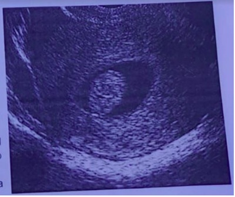
A Histeroscopia cirúrgica
B Progesterona em alta dose para conter o SME
C Acompanhamento com ultrassom semestral e uso de anti-inflamatório no período menstrual
D Utilizar um contraceptivo hormonal oral para regular sua menstruação
Questão 1690 · Interpretação e conduta f rente as atipias citológicas · 4000184708Mulher de 28 anos com colpocitologia oncótica com resultado de NIC-I (lesão intraepitelial cervical de baixo grau). A conduta é:
A Conização do colo do útero
B Histerectomia abdominal total
C Cauterização com laser de CO₂
D Repetir colpocitologia oncótica em 6 meses
Questão 1691 · Mastite periareolar · 4000184707Paciente feminina de 45 anos, tabagista desde os 16 anos, procurou atendimento com queixa de hiperemia em mama direita há 1 semana. Ao exame clínico apresenta área de hiperemia em região periareolar da mama direita, associada a ponto de flutuação de 0,5 cm. Referiu já ter tido um caso semelhante na mama oposta há alguns meses. A hipótese diagnóstica foi de mastite periareolar. Qual a conduta a ser realizada?
A O tabagismo não tem relação com o quadro
B É necessário realizar mamografia diagnóstica para avaliar extensão da doença
C Tratar com antibioticoterapia por 5 a 7 dias e, se necessário, estender por 10 a 14 dias
D Quando realizada cultura da secreção, 50 a 60% destas são positivas para microrganismos potencialmente patogênicos
Questão 1692 · Estadiamento · Tratamento · 4000184706Paciente de 30 anos. G=1, P=1, com desejo reprodutivo foi encaminhada ao ambulatório de ginecologia devido à queixa de sangramento vaginal intermitente e sinusorragia. Ao exame ginecológico foi evidenciada lesão vegetante friável no colo do útero de 4 cm e paramétrio esquerdo comprometido pela doença (toque retal). Os exames de imagem confirmaram o estadiamento clínico da doença. Qual o tipo histológico mais comum e o tratamento que deverá ser proposto?
A Carcinoma espinocelular de colo - traquelectomia
B Adenocarcinoma de colo - quimioterapia exclusiva
C Carcinoma espinocelular de colo - radioterapia + quimioterapia
D Adenocarcinoma de colo - histerectomia radical modificada (Wertheim- Meigs)
Questão 1693 · Tratamento · Ginecologia · 4000184705Casal com desejo de gestação, procura orientação. Ela com 33 anos, nuligesta, ciclos menstruais regulares. Nega cirurgias anteriores. Histerossalpingogra a normal. Ultrassom pélvico normal. Ele com 33 anos, nega uso de medicamentos. Fumante. Espermograma: volume: 2,5 ml, número de espermatozoides por ml: 500.000, Vitalidade: 60% Qual tratamento a ser oferecido?
A FIV (fertilização in vitro)
B Vídeo laparoscopia diagnóstica
C ICSI (inseminação intracitoplasmática de espermatozóides)
D Indução de ovulação seguida de IIU (inseminação intra-uterina)
Questão 1694 · Contraindicações · 4000184704Mulher, 27 anos, procura ambulatório de planejamento familiar com desejo de utilizar método contraceptivo. Atualmente encontra-se sem comorbidades, mas apresenta história de trombose venosa profunda há vários anos. Qual método contraceptivo abaixo pode ser utilizada por essa paciente?
A Anel vaginal
B Adesivo transdérmico
C Contraceptivo hormonal oral
D Progestogenios orais isolados
Questão 1695 · Dispositivos intrauterinos · 4000184703Mulher, 30 anos, usuária de DIU de cobre há um ano, teve confirmada gestação de 12 semanas, sem localização do fio. A conduta médica correta é:
A Interromper a gestação.
B Deixar a gestação evoluir.
C Retirar o DIU instrumentalmente.
D Retirar o DIU e usar antibiótico profilático por 7 dias.
Questão 1696 · Anatomia do Assoalho Pélvico · 4000184628A anatomia da pelve feminina deve ser bem estudada pelos médicos, seu conhecimento tem implicações no parto vaginal, na boa técnica das cirurgias pélvicas, nos tratamentos sioterápicos de incontinência urinária, na investigação de sintomas na região da pelve, entre outras implicações de grande relevância clínica. Sobre a anatomia da pelve feminina, é CORRETO afirmar que:
A As artérias uterinas e artérias ovarianas são responsáveis por grande parte do fluxo sanguíneo do útero, tendo ambas suas origens nas artérias ilíacas internas e suas ligaduras fazem parte de uma importante estratégia de contenção de sangramento excessivo principalmente no período pós- parto.
B Os músculos do diafragma urogenital reforçam a parede anterior do diafragma pélvico, intimamente relacionados a vagina e uretra e são ativados nos tratamentos fisioterápicos da incontinência urinária.
C O sexo genético é determinado na fertilização, o desenvolvimento básico do embrião é masculino, necessitando da produção de fator de crescimento gonadal, codificado pelo cromossomo X.
D As anomalias útero-vaginais apesar de próximas, dificilmente ocorrem simultaneamente com malformação do sistema urinário pelas origens genéticas em estruturas diferentes que não exercem influência entre si.
Questão 1697 · Terapia hormonal · 4000184626Paciente atendida em ambulatório com 48 anos, queixando muito incômodo por onda de calor há 6 meses e amenorreia há 13 meses. Faz uso de losartana a 8 meses e a pressão tem cado controlada. Dois partos cesáreos e nenhuma outra cirurgia. Nega história familiar de câncer de mama, ou diabetes, e pais com doença hipertensiva. Considerando o caso descrito, é CORRETO afirmar sobre essa paciente que:
A Tibolona seria bem indicada, principalmente pelo seu bom desempenho em tratar as ondas de calor, mesmo com doses 1,25mg.
B A indicação de estrogênio isolado em doses baixas pode ser suficiente para o tratamento do sintoma.
C Tem indicação de terapia estrogênica associada à progesterona, podendo ser via transdérmica.
D A hipertensão contraindicaria o uso de estrogênio, não sendo recomendado essa prescrição, mesmo em microdoses.
Revisar: possível letra faltando em enunciado
Questão 1698 · Tratamento · Etiologia · 4000184625Em uma palestra para médicos generalistas sobre infecção sexualmente transmissíveis, com abordagem propedêutica C terapêutica, recomendações às pacientes e controle no nível primário, DEVE-SE informar ao público que:
A A cervicite pode ser tratada com medicações que cobrem a neisseria e a clamídia, recomenda-se uso de ceftriaxone intramuscular dose única e azitromicina via oral também dose única.
B A doença inflamatória pélvica é causada pela ascenção de bactérias que colonizam o colo uterino, exceto a neisseria, devendo ser tratada com azitromicina.
C As úlceras genitais mais frequentes são a sífilis, herpes simples e cancroide. Os exames confirmatórios são imprescindíveis para o tratamento, visto tratar-se de casos geralmente autolimitados, de baixo risco de associação com outras infecções sexualmente transmissíveis.
D O tratamento da sífilis nas fases primária até as latentes com mais de um ano ou de duração desconhecida deve ser priorizada a dose única de 2,4 milhões de unidades de penicilina benzatina.
Questão 1699 · Introdução e doenças benignas da mama · Rastreamento do câncer de mama · 4000184624O câncer de mama é um dos mais incidentes nas mulheres, sendo o principal na área da saúde da mulher. Fica ainda mais importante quando se sabe que se dispõe de propedêuticas para o diagnóstico precoce que é a melhor forma de melhorar o prognóstico das pacientes. Sobre as patologias mamárias, é CORRETO afirmar que:
A As alterações fibrocísticas da mama são frequentes, necessitam de investigação histológica mesmo em paciente antes da menopausa pelo risco elevado de evoluir para câncer.
B As lesões suspeitas de tumor na mamografia devem ser avaliadas por histopatologia nas pacientes pós-menopausa sem terapia estrogênica.
C O sistema BI-RADS é recomendado pelo colégio americano de radiologia e largamente usado no Brasil, as lesões classificadas como 5 categoria são de achados benignos.
D O fibroadenoma é um câncer com baixo de potencial de metástase, sendo mais incidente nas mulheres pós-menopausa.
Questão 1700 · Fatores de risco · 4000184623Pacientes com incontinência urinária costumam ter uma perda importante da qualidade de vida, evitando ambientes sociais e com medo de estarem com cheiro de urina. Trata-se de uma patologia muito prevalente entre as mulheres, sendo de grande interesse da ginecologia. Sobre essa afecção, é CORRETO afirmar que:
A A urodinâmica é uma propedêutica com pequeno valor na avaliação de paciente com incontinência urinária de esforço, mesmo nos casos com indicação de tratamento cirúrgico.
B O tratamento de escolha da síndrome da bexiga hiperativa são as medicações agonistas alfa- adrenérgicos.
C Dentre os fatores de risco para o desenvolvimento de incontinência urinária de esforço e bexiga hiperativa encontram-se os partos sobretudo os vaginais e a idade avançada das pacientes.
D O tratamento medicamentoso apresenta os maiores índices de cura da incontinência urinária de esforço.
Questão 1701 · Classif icação · 4000184622Paciente encaminhada ao ambulatório de uroginecologia sem sintomas urinários com queixa de "bola na vagina". Tem 35 anos, G4P3NAI, obesidade grau II, nega uso de medicações ou cirurgias prévias. Ao exame físico apresentava extrusão da parede vaginal anterior atingindo o introito vaginal da parede vaginal posterior ultrapassando 3cm do introito e o colo do útero só tinha pequena mobilidade à manobra de valsava, com ponto C igual a -10. Vagina de 11cm de comprimento. Sobre essa paciente, é CORRETO afirmar que:
A A paciente tem prolapso do ápice vaginal grau 2 conforme POP-Q.
B O ponto Bp conforme o POP-Q nessa paciente é igual +3.
C Apresenta prolapso vaginal anterior grau 3 conforme a classificação de quantificação do Prolapso de Órgão Pélvico (POP-Q) da Sociedade Internacional de Continência (ICS) de 1996.
D A medida de tvl da paciente é igual a -10, conforme POP-Q.
Questão 1702 · Epidemiologia · Classif icação · 4000184621As cólicas menstruais estão entre as queixas de várias mulheres, causando diminuição da qualidade de vida e até absenteísmo escolar e no trabalho. Sobre essas dores pélvicas durante o período menstrual, ou dismenorreias, é CORRETO afirmar que:
A O tratamento da dismenorreia primária só deve ser iniciado após o diagnóstico etiológico.
B A dismenorreia secundária tem poucos sintomas associados, ao contrário das primárias, pois estas sim se associam com frequência a dispareunia e sangramento anormal.
C As causas mais comuns de dismenorreia secundária são: endometriose, leiomiomatose, doença inflamatória pélvica, adenomiose, pólipos endometriais obstrução do fluxo menstrual.
D O tratamento da dismenorreia primária engloba antiespasmódico e anticoncepcional, devendo-se evitar anti-inflamatório não esteroides pela baixa resposta.
Questão 1703 · Fisiopatologia · Quadro clínico · Consequências da inf ecção · 4000184620A secreção vaginal de aspecto diferente, sintomática com odor desagradável ou prurido é uma das maiores causas de consulta ginecológica em serviços de atendimento primário. É preciso conhecimento dos agentes provavelmente envolvidos para aliviar as pacientes. Sobre esses corrimentos vaginais, é CORRETO a rmar que:
A A vaginite atrófica pode cursar com corrimento vaginal purulento, dispareunia e sangramento pós- coito, o tratamento de escolha são do grupo dos azóis em cremes vaginais por 5 a 7 dias.
B Na candidiase vaginal recorrente, mais de 2 episódios por ano, não se recomenda a confirmação laboratorial e os azóis costumam ter baixa resposta, sendo preferido o uso da nistatina.
C A tricomoníase geralmente está associada a candidíase vaginal, por ambas crescerem em ambientes com PH baixo, o tratamento com cremes vaginais com medicações antibacterianas e antifúngicas associadas é o mais recomendado.
D A vaginose bacteriana está associada ao aumento importante das gardnerellas vaginais com diminuição dos lactobacilos, podendo estar relacionada ao aumento de cóm risco de doença inflamatória pélvica, infecção pós-operatória de histerectomia vaginal até rotura prematura das membranas e trabalho de parto prematuro.
Questão 1704 · Diretrizes para o rastreamento · Colo uterino · 4000184577O câncer do colo do útero é o terceiro tipo de câncer mais incidente entre mulheres no Brasil. Com relação ao rastreamento do câncer de colo do útero, segundo o Ministério da Saúde do Brasil (2016), assinale a alternativa correta.
A O exame citopatológico deve ser realizado em todas as mulheres de 15 a 45 anos de idade.
B O exame citopatológico deve ser realizado com intervalos semestrais no primeiro ano após o início da vida sexual e, se normal, manter seguimento anual.
C O rastreamento em gestantes deve ser evitado devido ao desconforto e à possibilidade de associar risco à gestação.
D Mulheres sem história de atividade sexual não devem ser submetidas ao rastreamento do câncer do colo do útero.
Questão 1705 · Síf ilis primária · Ginecologia · Síf ilis · 4000184575A sí lis, uma infecção sexualmente transmissível causada pela bactéria uma infecção muito frequente, com potencial acometimento grave do feto e do recém-nascido, se ocorrer a transmissão congênita em decorrência de ausência ou da inadequação de tratamento. A respeito da fase primária da sífilis, assinale a alternativa correta.
A O diagnóstico nessa fase é comum, visto que a maioria dos cancros se desenvolve no canal vaginal e é dolorosa.
B O tempo de incubação é variável, mas geralmente é de cerca de 10 a 90 dias (média de três semanas).
C Manifesta-se na forma de um cancro (úlcera dolorosa, com borda irregular e com fundo sujo), próximo à área de inoculação do agente.
D A duração do cancro pode variar muito, em geral de seis a 12 semanas, e seu desaparecimento depende de tratamento.
Questão 1706 · Rastreamento mamográf ico · 4000184574O câncer de mama é o que mais acomete mulheres em todo o mundo, constituindo a maior causa de morte por câncer nos países em desenvolvimento. Com relação ao rastreamento do câncer de colo de mama, segundo o Ministério da Saúde do Brasil (2016), assinale a alternativa correta.
A A estratégia preconizada para o rastreamento de câncer de mama é a mamografia a cada dois anos para mulheres entre 50 e 69 anos de idade.
B O autoexame tem grande benefício para a detecção precoce de tumores e traz segurança, reduzindo o excesso de exames invasivos.
C O exame clínico das mamas tem benefício bem estabelecido, como o rastreamento do câncer de mama.
D O modelo de rastreamento oportunístico apresenta melhores resultados e menores custos do que o modelo organizado.
Questão 1707 · Orais · 4000184573Paciente de 23 anos de idade, saudável, está no 45° pós-parto vaginal e deseja manter amamentação até os dois anos de vida do seu bebê. Só pretende engravidar novamente daqui a cinco anos; portanto, deseja um método contraceptivo que possa ser iniciado agora e que tenha elevada eficácia. Nesse caso, o método contraceptivo mais apropriado para a paciente iniciar agora é
A espermicida.
B método de Billings.
C método de amenorreia da lactação.
D contraceptivo oral de progestagênios.
Questão 1708 · Ginecologia · Terapia hormonal · 4000184571O climatério corresponde à transição da mulher do ciclo reprodutivo para o não reprodutivo, ocorrendo habitualmente entre os 40 e 65 anos de idade. O uso de terapia hormonal (TH) nessa fase visa a reduzir os sintomas e prevenir disfunções causadas pela deficiência de estrogênio a longo prazo. Com relação às indicações da TH no climatério, assinale a alternativa correta.
A A TH protege contra doença de Alzheimer.
B A TH está contraindicada na presença de sintomas de atrofia vulvar e vaginal.
C A principal indicação para a TH é o alívio das ondas de calor e sintomas associados.
D A TH não evita a perda óssea associada à menopausa, mesmo quando iniciada precocemente.
Questão 1709 · Prevenção de gravidez · Aborto legal no Brasil · Acolhimento e notif icação · 4000184569Considerando as questões legais envolvidas no atendimento às vítimas de violência sexual, analise as afirmativas a seguir. I. Casos de abuso sexual em crianças e adolescentes menores de 18 anos de idade devem ser obrigatoriamente comunicados ao Conselho Tutelar e ou à Vara da Infância e Adolescência. II. O médico deve avaliar o uso de anticoncepção de emergência e prover tratamento pro lático de infecções sexualmente transmissíveis. III. O médico deve orientar sobre a legalidade de interrupção de gravidez decorrente de estupro, que pode ser realizada após apresentação do boletim de ocorrência ou de duas testemunhas. IV. Casos de violência sexual são de notificação compulsória de acordo com a lei, sendo o médico obrigado a encaminhar a paciente à Delegacia da Mulher e registrar boletim de ocorrência. Estão corretas as afirmativas
A I e II, apenas.
B II e III, apenas.
C I, III e IV, apenas
D I, II, III e IV.
Questão 1710 · Índice de Pearl · 4000184481O índice de Pearl é utilizado para avaliar a e cácia dos vários métodos de anticoncepção. Em relação a esse índice, assinale a alternativa correta.
A Os métodos comportamentais, como o da tabela (ou Ogino-Knaus) e o da temperatura corpórea basal, têm índice de Pearl muito baixo, portanto têm alto risco de falha.
B O método de lactação e amenorreia, se utilizado corretamente nos primeiros nove meses pós- parto, tem alto índice de Pearl.
C O referido índice mede o número de falhas de um método em 100 casais após 2 anos de uso.
D O implante subdérmico de etonogestrel tem baixo índice de Pearl.
E O dispositivo intrauterino de cobre tem índice de Pearl melhor que o dispositivo de levonorgestrel.
Questão 1711 · Câncer de Endométrio · 4000184480O câncer do endométrio tem aumentado bastante sua prevalência no Brasil, e sua compreensão e seu diagnóstico precoce são fundamentais para um melhor prognóstico. Em relação a esse assunto, assinale a alternativa correta.
A Os tumores estrogênio-dependentes têm prognóstico pior que os não dependentes.
B São considerados fatores de proteção para esse tipo de neoplasia: uso de anticoncepcional hormonal; tabagismo; atividade física; e uso de progestagênios.
C A colpocitologia oncológica é o principal exame de rastreio para o diagnóstico desse câncer.
D O adenocarcinoma endometrioide é o de pior prognóstico.
E Devido à melhora dos tratamentos clínicos para câncer, a quimioterapia e a radioterapia são os tratamentos de escolha nos estádios iniciais.
Questão 1712 · Rastreamento do câncer de mama · 4000184479A medicina busca, com o avanço da tecnologia, o diagnóstico precoce do câncer da mama, que acomete milhares de mulheres todos os anos, ao redor do mundo. Em relação aos exames de imagem com esse objetivo, assinale a alternativa correta.
A A ressonância nuclear magnética tem mais acurácia, mas deixou de ser utilizada em razão da grande irradiação que emite.
B Na definição das microcalcificações, a mamografia tem melhor acurácia que a ressonância magnética.
C A acurácia da ultrassonografia tridimensional é superior à acurácia da mamografia.
D Após a realização de mamografia, pode-se fazer a ultrassonografia; a ressonância, entretanto, está contraindicada.
E O sistema BI-RADS é específico para a mamografia, não podendo ser utilizado na ultrassonografia, nem na ressonância magnética.
Questão 1713 · Câncer de colo do útero · 4000184478O carcinoma do colo uterino é bastante prevalente no Brasil, sendo mais preponderante nas regiões mais pobres. Apesar dessa alta prevalência, o diagnóstico precoce é maior a cada dia, em razão da propedêutica e da conscientização da população na busca pelos exames. Acerca dessa neoplasia, assinale a alternativa correta.
A O principal fator de risco para o desenvolvimento de lesões intraepiteliais de alto grau e do câncer do colo do útero é a infecção pelo papiloma vírus humano (HPV).
B São fatores de risco: sexarca precoce; multiparidade; múltiplos parceiros; diabetes; e hipertensão arterial.
C O tipo histológico mais comum é o adenocarcinoma.
D As metástases mais comuns são a hepática e a pulmonar, sendo essas as principais causas de óbito.
E A conização do colo uterino só está indicada nos estádios iniciais, estádios Ia e Ib.
Questão 1714 · Desenvolvimento dos ductos genitais · 4000184477Uma paciente de 18 anos de idade, com queixa clínica de sangramento uterino anormal, realizou ultrassonogra a transvaginal, que revelou a presença de útero septado ou bicorno. O médico solicitou histeroscopia ambulatorial para elucidação diagnóstica. Com base nesse caso clínico, assinale a alternativa correta.
A A conduta do médico foi correta, devendo-se aguardar o resultado para estabelecer a conduta terapêutica.
B O sintoma de sangramento uterino deve-se ao diagnóstico ultrassonográfico.
C É comum a associação de hiperplasia endometrial com anomalias dos dutos müllerianos.
D Deve-se tratar a paciente com indução de amenorreia até o desejo de gravidez.
E A histeroscopia não fará o diagnóstico diferencial entre útero septado e útero bicorno.
Questão 1715 · Vaginose citolítica · Ginecologia · 4000184476Uma paciente com queixa clínica de corrimento esbranquiçado, ardor vulvovaginal intenso e prurido foi diagnosticada como portadora de vaginite citolítica. Considerando esse caso clínico, assinale a alternativa correta, a respeito desse diagnóstico.
A Trata-se de uma situação em que a proliferação de fungos vaginais é tão intensa que leva a citólise acentuada.
B A vaginite citolítica é causada pelo
C Na vaginite citolítica, o pH é ácido e a presença de lactobacilos está aumentada.
D Pelos critérios de Amsel, a paciente apresenta vaginose bacteriana.
E Drogas que podem ser utilizadas no tratamento dessa paciente incluem isoconazol, fenticonazol e nistatina.
Questão 1716 · Tratamento · 4000184475Uma paciente de 38 anos de idade, com dois lhos vivos, dismenorreia intensa e sangramento uterino excessivo, foi diagnosticada como portadora de mioma submucoso de 2 cm. Na ultrassonogra a, constatou- se o seguinte: volume uterino de 110 cc; ovários normais. Assinale a alternativa que apresenta a melhor conduta nesse caso clínico.
A histerectomia, em razão de prole formada
B miomectomia histeroscópica
C tratamento prolongado com progestagênio, até o volume do mioma sofrer uma redução acentuada
D uso de análogo do GnRH, por 2 a 3 anos
E miomectomia videolaparoscópica
Questão 1717 · Endometriose · 4000184474Uma das doenças mais prevalentes na mulher, durante o período reprodutivo, é a endometriose pélvica. Existem várias teorias etiopatogênicas e diversas possibilidades de tratamentos. Em relação a essa afecção, assinale a alternativa correta.
A Cerca de 90% das pacientes com endometriose têm útero retrovertido.
B A sintomatologia na endometriose profunda é cerca de quatro vezes maior que a da endometriose superficial.
C O uso de anticoncepcionais com estrogênio é contraindicado, pois esse hormônio estimula os focos ectópicos da doença.
D Essa afecção pode ser tratada com análogo e antagonista do GnRH.
E Nesses casos, a paciente é considerada curada quando, após cinco anos de tratamento, torna-se assintomática.
Questão 1724 · Tratamento · 4000184336Mulher, 41a, nuligesta, acompanhada por dismenorreia, que a incapacita de realizar atividades diárias, e dispareunia de profundidade há três anos. Tem ciclos menstruais regulares e usa contraceptivo. Antecedente pessoal: quadrantectomia por carcinoma Ressonância magnética de pelve: lesão em fundo de saco posterior sugestiva de endometriose. A CONDUTA É:
A Prescrever acetato de medroxiprogesterona trimestral.
B Prescrever anticoncepcional oral combinado contínuo.
C Indicar sistema intrauterino liberador de levonorgestrel.
D Indicar tratamento cirúrgico.
Questão 1725 · Planejamento f amiliar · 4000184332Mulher, 25a, vem para avaliação de planejamento familiar após encaminhamento pela reumatologia. Apresenta ciclos menstruais com uxo aumentado e coágulos, com duração de 10 dias, nos últimos seis meses. Antecedentes: G0P0, menarca aos 15 anos, vida sexual ativa, parceiro único; tem diagnóstico de lúpus eritematoso sistêmico há três anos, em uso regular de hidroxicloroquina e metotrexato. hemoglobina=9g/dL, hematócrito=30%, leucócitos=2.000/mm³, plaquetas=60.000/mm³. Pesquisa d e anticorpo anticardiolipina e de anticorpo anticélula (FAN) positivos. Ultrassonogra a pélvica: sem alterações em útero e ovários.
A Dispositivo intrauterino de cobre.
B Sistema intrauterino liberador de levonorgestrel.
C Anticoncepcional oral combinado com 30µg de levonorgestrel.
D Anticoncepcional oral combinado com 15µg de levonorgestrel.
Questão 1726 · Diagnóstico e Exames Complementares · 4000184327Mulher, 52a, na menopausa há dois anos, em uso de terapia hormonal. Sem comorbidades. Antecedentes familiares negativos. HORMONAL SÃO:
A Dosagem de hormônios sexuais, mamografia e ultrassonografia pélvica.
B Dosagem de hormônios sexuais, mamografia e cintilografia óssea.
C Dosagem de lipoproteínas e frações, glicemia e mamografia.
D Dosagem de lipoproteínas e frações, glicemia e ultrassonografia pélvica.
Questão 1727 · Ginecologia · Farmacológicos · 4000184326Mulher, 70a, vem ao serviço com queixa de perda urinária durante orgasmo na relação sexual, há dois anos. Iniciou tratamento para perda urinária, mas interrompeu a medicação após três meses, por apresentar piora dos sintomas de demência. Antecedentes pessoais: G3C3, casada, com vida sexual ativa, menopausa aos 50 anos, sem terapia hormonal; demência leve em tratamento. Exame ginecológico: ausência de prolapsos, manobra de Valsalva negativa, sem outras alterações. A PACIENTE FEZ USO SÃO:
A Síndrome da bexiga hiperativa e oxibutinina.
B Incontinência urinária de esforço e oxibutinina.
C Síndrome da bexiga hiperativa e mirabegrona.
D Incontinência urinária de esforço e mirabegrona.
Questão 1728 · Interpretação e conduta f rente as atipias citológicas · 4000184325Mulher, 47a, G2P2, retorna à Unidade Básica de Saúde para resultado de colpocitologia oncológica, coletada há um mês. Resultado: atipia de células glandulares sem outras especi cações (ACG-SOE). Nega alteração de exame anteriores.
A O resultado é anormal; encaminhar para exame de colposcopia e biópsia.
B O resultado é normal; deverá retornar para coleta de novo exame em três anos.
C O resultado é anormal e indica infecção por HPV; encaminhar para tratamento com cirurgia de alta frequência.
D O resultado é anormal, podendo estar associado à infecção por HPV ou processo inflamatório; retornar para coleta de novo exame em 12 meses.
Questão 1729 · Exames complementares · Quadro clínico · 4000184324Mulher, 56a, comparece à Unidade Básica de Saúde com queixa de aparecimento de nódulo mamário à direita, indolor, há dois meses. Exame físico: mamas simétricas, sem abaulamentos ou retrações; alteração de textura da pele com hiperemia e edema em quadrante superior direito (QSD) de mama direita (D). Palpa-se nódulo endurecido e mal delimitado de 2cm em QSD de mama D, axila D com linfonodo palpável de 1cm endurecido e fossas supraclaviculares livres.
A Mamografia, para rastreamento.
B Ultrassonografia de mamas, para avalição de axilas e fossas supraclaviculares.
C Ressonância magnética de mamas, para avaliação de axilas e pele.
D Mamografia, para orientação do diagnóstico.
Questão 1730 · Diretrizes para o rastreamento · 4000184323Mulher, 66a, procura a Unidade Básica de Saúde para rotina de prevenção de câncer de colo uterino. Refere coleta de exames com intervalos trianuais desde os 25 anos, sem alterações. Último exame há um ano, normal. Sem queixas e exame físico normal. CONDUTA É:
A Interromper rastreamento de câncer de colo uterino.
B Coletar exame de colpocitologia oncológica e retorno para resultado. Se exame normal, interromper o rastreamento.
C Retornar em dois anos para coleta exame de colpocitologia oncológica. Se exame normal, interromper o rastreamento.
D Repetir colpocitologia oncótica em dois anos e solicitar ultrassonografia pélvica.
Questão 1731 · Neoplasia intraepitelial vulvar NIV · 4000184321Mulher, 58a, com quadro de prurido vulvar crônico há 10 anos, comparece em consulta de retorno para avaliação de resultado de biopsia de lesão vulvar, cujo diagnóstico foi neoplasia intraepitelial diferenciada. Exame ginecológico: ( ASSOCIADO A ESTE DIAGNÓSTICO É:
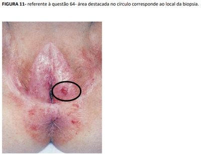
A Líquen escleroso da vulva.
B Papilomavírus humano tipos 6 e 11.
C Papilomavírus humano tipos 16 e 18.
D Doença de Paget invasiva.
Questão 1732 · Ginecologia · Síndrome de Rokitansky · 4000184220Paciente de 16 anos procura atendimento por não ter apresentado a primeira menstruação. Ao exame físico, apresenta distribuição de pelos normais e desenvolvimento de mamas em M3 (estágio de Tanner). À inspeção vaginal, o hímen está íntegro sem anormalidades. Pressão arterial 120x60 mmHg e FC 80 bpm. Conforme o caso clínico exposto, julgue o item a seguir. Se o ultrassom pélvico demonstrar ausência de útero e presença de ovários, é possível estar diante da síndrome de Mayer-rokitansky.
A Certo.
B Errado.
Questão 1733 · Síndrome de Morris · Ginecologia · 4000184219Paciente de 16 anos procura atendimento por não ter apresentado a primeira menstruação. Ao exame físico, apresenta distribuição de pelos normais e desenvolvimento de mamas em M3 (estágio de Tanner). À inspeção vaginal, o hímen está íntegro sem anormalidades. Pressão arterial 120x60 mmHg e FC 80 bpm. Conforme o caso clínico exposto, julgue o item a seguir. A síndrome de Morris pode ser descartada, pois nesse caso a paciente não apresentaria desenvolvimento das mamas pelo genótipo ser XY.
A Certo.
B Errado.
Questão 1734 · Ginecologia · Obstrução distal do trato genital · 4000184218Paciente de 16 anos procura atendimento por não ter apresentado a primeira menstruação. Ao exame físico, apresenta distribuição de pelos normais e desenvolvimento de mamas em M3 (estágio de Tanner). À inspeção vaginal, o hímen está íntegro sem anormalidades. Pressão arterial 120x60 mmHg e FC 80 bpm. Conforme o caso clínico exposto, julgue o item a seguir. Septo vaginal transverso pode ser um diagnóstico diferencial.
A Certo.
B Errado.
Questão 1735 · Exames complementares · Ginecologia · Roteiro diagnóstico · 4000184217Paciente de 16 anos procura atendimento por não ter apresentado a primeira menstruação. Ao exame físico, apresenta distribuição de pelos normais e desenvolvimento de mamas em M3 (estágio de Tanner). À inspeção vaginal, o hímen está íntegro sem anormalidades. Pressão arterial 120x60 mmHg e FC 80 bpm. Conforme o caso clínico exposto, julgue o item a seguir. O cariótipo deve ser solicitado na primeira consulta.
A Certo.
B Errado.
Questão 1736 · Exames complementares · Ginecologia · 4000184216Paciente de 16 anos procura atendimento por não ter apresentado a primeira menstruação. Ao exame físico, apresenta distribuição de pelos normais e desenvolvimento de mamas em M3 (estágio de Tanner). À inspeção vaginal, o hímen está íntegro sem anormalidades. Pressão arterial 120x60 mmHg e FC 80 bpm. Conforme o caso clínico exposto, julgue o item a seguir. Exames como ultrassom pélvico, FSH e testosterona podem contribuir para o diagnóstico.
A Certo.
B Errado.
Questão 1737 · Ginecologia · Síndrome de Kallman · 4000184215Paciente de 16 anos procura atendimento por não ter apresentado a primeira menstruação. Ao exame físico, apresenta distribuição de pelos normais e desenvolvimento de mamas em M3 (estágio de Tanner). À inspeção vaginal, o hímen está íntegro sem anormalidades. Pressão arterial 120x60 mmHg e FC 80 bpm. Conforme o caso clínico exposto, julgue o item a seguir. Se a paciente apresentar anosmia, a síndrome de Kallmann deve ser cogitada.
A Certo.
B Errado.
Questão 1738 · Tratamento · Ginecologia · Flora vaginal na criança · 4000184214Uma paciente de 14 anos, virgem, apresenta queixa de corrimento vaginal escuro de odor fétido associado a prurido. Após exame clínico e laboratorial, foi identificada a presença de Gardnerella vaginalis. Em relação ao caso clínico exposto, julgue o item a seguir. Essa paciente deve ser internada para o tratamento, pois tem contraindicação ao uso de pomada vaginal.
A Certo.
B Errado.
Questão 1739 · Tratamento · Ginecologia · 4000184213Uma paciente de 14 anos, virgem, apresenta queixa de corrimento vaginal escuro de odor fétido associado a prurido. Após exame clínico e laboratorial, foi identificada a presença de Gardnerella vaginalis. Em relação ao caso clínico exposto, julgue o item a seguir. A paciente pode ser tratada com metronidazol.
A Certo.
B Errado.
Questão 1740 · Ginecologia · Fisiopatologia · 4000184212Uma paciente de 14 anos, virgem, apresenta queixa de corrimento vaginal escuro de odor fétido associado a prurido. Após exame clínico e laboratorial, foi identificada a presença de Gardnerella vaginalis. Em relação ao caso clínico exposto, julgue o item a seguir. Pode-se tratar de um caso de abuso sexual, pois a Gardnerella é transmitida via relação.
A Certo.
B Errado.
Questão 1741 · Tratamento · Ginecologia · 4000184211Uma paciente de 14 anos, virgem, apresenta queixa de corrimento vaginal escuro de odor fétido associado a prurido. Após exame clínico e laboratorial, foi identificada a presença de Gardnerella vaginalis. Em relação ao caso clínico exposto, julgue o item a seguir. É obrigatório o tratamento da Gardnerella, independentemente de haver ou não sintomas.
A Certo.
B Errado.
Questão 1742 · Tipos de f lora vaginal · Ginecologia · Fisiopatologia · 4000184210Uma paciente de 14 anos, virgem, apresenta queixa de corrimento vaginal escuro de odor fétido associado a prurido. Após exame clínico e laboratorial, foi identificada a presença de Gardnerella vaginalis. Em relação ao caso clínico exposto, julgue o item a seguir. Assim como a cândida Albicans, a Gardnerella pode ser encontrada na microbiota vaginal.
A Certo.
B Errado.
Questão 1743 · Ginecologia · Diagnóstico · Quadro clínico · 4000184209Uma paciente de 14 anos, virgem, apresenta queixa de corrimento vaginal escuro de odor fétido associado a prurido. Após exame clínico e laboratorial, foi identificada a presença de Gardnerella vaginalis. Em relação ao caso clínico exposto, julgue o item a seguir. O PH vaginal dessa paciente será maior que 4,5.
A Certo.
B Errado.
Questão 1744 · Fatores de risco · Rastreamento nas pacientes de alto risco · Prevenção · 4000184196Marisa é uma mulher de 58 anos que veio a uma consulta de rotina, pois deseja realizar exames de “check- up”. Ela não tem problemas de saúde nem faz uso de nenhum medicamento. Seu histórico familiar a preocupa, pois sua mãe morreu devido a um câncer de laringe e, por isso, ela deseja realizar uma endoscopia para saber se está tudo bem com sua laringe, pois foi assim que a mãe descobriu o tumor. Ela deseja também realizar exames para verificar suas vitaminas. Quando questionada, refere ser viúva, sexualmente ativa e nega quaisquer sintomas no momento do atendimento. Considerando seus conhecimentos e o caso exposto, julgue o item a seguir. Marisa é considerada uma mulher de alto risco para câncer de mama.
A Certo.
B Errado.
Questão 1745 · Diretrizes do rastreamento mamográf ico · 4000184195Marisa é uma mulher de 58 anos que veio a uma consulta de rotina, pois deseja realizar exames de “check- up”. Ela não tem problemas de saúde nem faz uso de nenhum medicamento. Seu histórico familiar a preocupa, pois sua mãe morreu devido a um câncer de laringe e, por isso, ela deseja realizar uma endoscopia para saber se está tudo bem com sua laringe, pois foi assim que a mãe descobriu o tumor. Ela deseja também realizar exames para verificar suas vitaminas. Quando questionada, refere ser viúva, sexualmente ativa e nega quaisquer sintomas no momento do atendimento. Considerando seus conhecimentos e o caso exposto, julgue o item a seguir. O rastreio para câncer de mama deve ser realizado com mamogra a bianual entre 50 e 69 anos para todas as mulheres de risco habitual.
A Certo.
B Errado.
Questão 1746 · Populaçãoalvo e intervalo · 4000184192Marisa é uma mulher de 58 anos que veio a uma consulta de rotina, pois deseja realizar exames de “check- up”. Ela não tem problemas de saúde nem faz uso de nenhum medicamento. Seu histórico familiar a preocupa, pois sua mãe morreu devido a um câncer de laringe e, por isso, ela deseja realizar uma endoscopia para saber se está tudo bem com sua laringe, pois foi assim que a mãe descobriu o tumor. Ela deseja também realizar exames para verificar suas vitaminas. Quando questionada, refere ser viúva, sexualmente ativa e nega quaisquer sintomas no momento do atendimento. Considerando seus conhecimentos e o caso exposto, julgue o item a seguir. Marisa não deve ser rastreada para câncer de colo uterino, uma vez que não está mais na faixa etária indicada para o rastreio.
A Certo.
B Errado.
Questão 1747 · Cistos mamários · 4000184144Paciente, 27 anos, refere nodulação palpável em mama direita que se acentuou no período pré-menstrual. Nega antecedentes clínicos, refere um parto vaginal há 5 anos, em uso de preservativo como contracepção; últ i ma menstruação há 10 dias. Nega uso de outros medicamentos e antecedentes familiares significativos. Ao exame clínico das mamas, identi ca-se nodulação com cerca de 3 cm, regular, dolorosa e móvel em quadrante súpero-externo de mama direita, recoberta com pele de aspecto normal. A ultrassonografia da região acometida é apresentada. Realiza-se punção aspirativa com saída de 10 mL de líquido (imagem abaixo) seroso acastanhado, com melhora significativa da dor. Não mais se percebe o achado palpatório e ultrassonográfico. Qual é a conduta mais adequada?
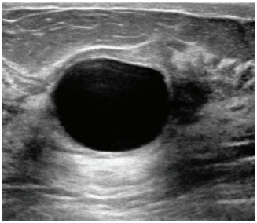
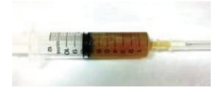
A Biópsia excisional.
B Seguimento clínico.
C Biópsia agulha grossa.
D Tomossíntese mamária.
Revisar: possível letra faltando em enunciado
Questão 1748 · Ginecologia · Anatomia do trato genital f eminino · Fios de Sutura · 4000184143Paciente, 45 anos, será submetida à histerectomia total abdominal em decorrência de miomatose uterina. Você é o instrumentador e o cirurgião solicita porta-agulhas montado com o o para a sutura da cúpula vaginal. Qual é o tipo de fio adequado para este tempo cirúrgico?
A Poliéster.
B Nylon.
C Poliglactina.
D Polipropileno.
Questão 1749 · Síndrome de Morris · Ginecologia · 4000184142Paciente, 18 anos, em investigação para amenorreia secundária. Ao exame clínico apresenta mamas Tanner 3, pili cação mínima axilar e pubiana, estatura percentil 60 e peso percentil 40, identi ca-se discreta hérnia inguinal bilateral. Exame ginecológico: vulva com pouca pili cação, desenvolvida e adequada, hímen íntegro e perfurado, restringindo exame especular e toque vaginal. O exame ultrassonográ co abdominal é normal, corpo uterino não identi cado, gônadas de volume habitual em topografia de paredes pélvicas. Considerando a principal hipótese diagnóstica, qual é o achado associado?
A FSH e LH elevados.
B Cariótipo 45 X0.
C Testosterona sérica elevada.
D Cariótipo 47 XXY.
Revisar: possível letra faltando em enunciado
Questão 1750 · Quadro clínico · Diagnóstico · Critérios diagnósticos · 4000184141Paciente, 20 anos, refere aumento de pelos faciais e acne. Nuligesta, uso de preservativo, ciclos menstruais com intervalos de 40 dias, por 6 dias e pouca quantidade. O exame clínico geral é normal, com achado de pili cação aumentada em face. Exame ginecológico: genitais externos, clitóris, pili cação, grandes e pequenos lábios normais; toque vaginal com útero de volume habitual e regiões anexiais normais. Qual é o achado laboratorial associado à condição clínica?
A FSH baixo em relação ao LH.
B LH elevado em relação ao FSH.
C Antimulleriano baixo para a faixa etária.
D Cortisol elevado para a faixa etária.
Questão 1751 · Tratamento cirúrgico · Tratamento adjuvante · 4000184140Paciente, 30 anos, nuligesta, ciclos menstruais com intervalos de 40 dias e duração de 5 dias, em investigação para infertilidade. Realiza biópsia de endométrio com diagnóstico de adenocarcinoma endometrióide, bem diferenciado, grau 1 histológico. A Ressonância Magnética demonstra abdome e pelve normais, útero e anexos normais, limite bem definido entre endométrio e miométrio, sugerindo neoplasia limitada ao endométrio. A paciente deseja preservar a fertilidade. Qual é o tratamento que pode ser considerado para esta paciente?
A braquiterapia.
B estrogênio alta dose.
C ablação de cavidade endometrial.
D progestagênio alta dose.
Questão 1752 · Tratamento · Ginecologia · 4000184139Paciente, 60 anos, antecedente de dois partos vaginais e menopausa aos 50 anos sem terapia hormonal. N e g a procedimentos cirúrgicos prévios. Queixa-se de obstipação e de di culdade para exoneração fecal. Frequentemente introduz o dedo na vagina para auxiliar na evacuação. Nega perda urinária. Exame ginecológico: pili cação compatível com a idade; rotura perineal de primeiro grau; procidência de parede vaginal anterior e posterior às manobras de esforço; especular com conteúdo vaginal habitual; colo uterino epitelizado. Qual é o tratamento mais adequado?
A Colporrafia da fascia vesico-vaginal.
B Colporrafia da fascia reto-vaginal.
C Rafia do músculo transverso superficial do períneo.
D Colpo-sacro fixação.
Questão 1753 · Ginecologia · Colo uterino · 4000184138Paciente, 28 anos, nuligesta, com antecedente de ciclos menstruais irregulares. Foi orientada a utilizar citrato d e clomifeno 50 mg por 5 dias, iniciando no terceiro dia pós-início da menstruação, com o intuito de promover a ovulação e favorecer a gravidez. Qual o achado clínico mais provável ao examinar a paciente no 14º dia pós-início da menstruação?
A Muco cervical esbranquiçado e pegajoso.
B Muco cervical transparente e elástico.
C Muco cervical sanguinolento e viscoso.
D Muco cervical amarelado e líquido.
Questão 1754 · Colo uterino · 4000184137Paciente, 30 anos, homem transgênero com preservação da vagina. Vida sexual com penetração vaginal, contracepção com DIU de cobre, sem uso de preservativo. Faz uso de terapia hormonal androgênica. Realiza coleta de citologia oncótica. Qual a implicação do ambiente androgênico na avaliação dos achados citológicos?
A diminuição de representação de células superficiais e melhor acurácia diagnóstica.
B aumento de representação de células superficiais e pior acurácia diagnóstica.
C diminuição de representação de células basais e melhor acurácia diagnóstica.
D aumento de representação de células basais e pior acurácia diagnóstica.
Questão 1755 · Diagnóstico dif erencial · 4000184136Paciente, 60 anos, menopausa há 10 anos, sem terapia hormonal. Nega uso de medicamentos ou comorbidades. Refere sangramento genital em pequena quantidade. Realiza histeroscopia sem achados anormais na cavidade endometrial e a biópsia, representativa, é de atro a endometrial. Qual é a conduta adequada?
A Iniciar terapia hormonal estrogênica e progestagênica.
B Iniciar terapia hormonal estrogênica.
C Orientação para controle clínico e seguimento habitual.
D Ablação endometrial.
Questão 1756 · Populaçãoalvo e intervalo · 4000184095Jan é uma pessoa não binária transmasculina. Tem 28 anos e procura a UBS para a realização de Papanicolau (colpocitologia oncótica). Identi ca-se como homossexual, iniciou atividade sexual aos 22 anos, com penetração vaginal. Faz uso de testosterona injetável e apresenta ressecamento vaginal. Neste caso, a colpocitologia oncótica:
A está recomendada; o estrógeno tópico está contraindicado; e a coleta deve ser realizada com lubrificante à base de água.
B está recomendada; deve-se utilizar um espéculo de menor tamanho; o estrógeno tópico está contraindicado, assim como o uso de lubrificante, pelo risco de alterar o resultado do exame.
C está recomendada; pode-se prescrever estrógeno tópico vaginal alguns dias antes e lubrificante à base de água no momento da coleta.
D não está recomendada, pois se refere a alguém com disforia de gênero; neste caso, o desconforto gerado pelo exame clínico seria maior que o risco de câncer de colo de útero nessa população.
Revisar: possível letra faltando em enunciado
Questão 1759 · Desenvolvimento dos ductos genitais · Ginecologia · 4000184004Assinale quais órgãos são oriundos dos ductos de Müller.
A trompas, vestíbulo e uretra.
B vestíbulo, uretra e útero.
C trompas, o útero e 1/3 superior da vagina.
D vestíbulo, útero e ovários.
Questão 1760 · Miomatose uterina · 4000184003Os miomas do útero são doenças que acometem, com frequência, a mulher, sendo que, na literatura, varia a prevalência de 8 a 80%, dependendo dos critérios e dos meios diagnósticos. Em relação a essa doença, é correto afirmar que
A o tratamento é cirúrgico nos casos em que a mulher não deseja mais gestação, optando-se por histerectomia subtotal, preservando, assim, os aspectos sexuais.
B a terapia por embolização está contraindicada se a mulher estiver no menacme.
C o que comanda a terapia cirúrgica é o volume ou a associação com anemia por sangramentos excessivos.
D após os trinta e cinco anos, quando a indicação passa a ser cirúrgica, a histerectomia total está indicada.
Questão 1761 · Ginecologia · Reserva ovariana · 4000184002As mulheres estão postergando a maternidade e isso determina uma maior preocupação em relação à reserva folicular. Assinale a alternativa que contempla os testes indicados e os períodos ideais para a coleta.
A FSH, estradiol, hormônio antimulleriano no 14º dia do ciclo.
B Progesterona, hormônio antimulleriano e estradiol no 3º dia do ciclo.
C FSH e estradiol no 3º dia do ciclo e o hormônio antimulleriano em qualquer dia.
D FSH e LH no 14º dia, progesterona no 23º dia e hormônio antimulleriano em qualquer dia do ciclo.
Questão 1762 · Roteiro diagnóstico · Ginecologia · 4000184001Mulher com 33 anos procura seu ginecologista com falha menstrual de 3 meses e lhe é dito se tratar de amenorreia secundária. Nessa linha de diagnóstico, a investigação correta é que se
A o FSH e LH estiverem elevados, a etiologia mais provável é hipofisária.
B o teste com estrogênio e progesterona for positivo, direciona que existe estímulo estrogênico e o provável fator é ovariano.
C deva solicitar dosagens hormonais e não utilizar testes com administração de hormônios na investigação.
D o teste de progesterona for positivo, afasta fator canalicular e garante que existe o estímulo estrogênico.
Questão 1763 · Populaçãoalvo e intervalo · 4000184000A coleta do exame de citologia oncológica do colo do útero é um rastreamento de câncer de colo que salvou muitas mulheres de terem câncer avançado. Em relação a esse exame, é correto que
A mulheres acima de 70 anos estão dispensadas desse exame.
B mulheres histerectomizadas estão dispensadas do exame.
C mulheres com 69 anos ou mais, sem historia de câncer e cujas duas últimas citologias foram negativas estão dispensadas desse exame.
D se identificar HPV é indicativo de tratamento imediato.
Questão 1764 · Câncer de Endométrio · Ginecologia · 4000183999Mulher de 62 anos com sangramento pós menopausa realizou uma histeroscopia e o exame anátomo patológico, a biópsia realizada mostrou tumor endometrioide bem diferenciado. Foi submetida a histerectomia e anexectomia e, durante a cirurgia, na congelação, se confirmou que o tumor estava limitado ao endométrio. Frente a esse quadro, a melhor conduta é
A radioterapia e quimioterapia pós-operatória.
B linfadenectomia paraórtica e pélvica.
C linfadenectomia com complementação radioterápica.
D não proceder a linfadenectomia pélvica, pois não está clara a sua indicação nesses casos.
Questão 1765 · Diagnóstico e Exames Complementares · Ginecologia · 4000183998Mulher com 48 anos iniciou sintomatologia com fogachos e refere que está sem menstruar há 8 meses. Qual dos hormônios seria o ideal para se fazer a dosagem para esclarecimento diagnóstico?
A FSH.
B Progesterona.
C LH.
D Estrogênios.
Questão 1766 · Biópsias da mama · 4000183997Dentre a propedêutica mamária para obtenção de material para análise anátomo-patológica, pode-se a rmar que a
A biópsia incisional é a que melhor apresenta amostra tissular.
B mamotomia é reservada para tumores acima de 5 cm.
C punção com agulha grossa (core-biopsy) é indicada para tumores abaixo de 0,5 cm.
D mamotomia tem maiores falhas histológicas que a
Questão 1767 · Ginecologia · Obstetrícia · 4000183996Todos têm conhecimento de que a mamogra a é um exame importante para as mulheres. Qual a idade e m que se deve iniciar a fazer esse exame, qual a periodicidade e a vantagem desse método, segundo a Febrasgo e a Sociedade Brasileira de Mastologia?
A 30 anos – anual – prevenção primária de câncer de mama.
B 35 anos – anual – diagnóstico precoce do câncer de mama.
C 40 anos – anual – diagnóstico precoce do câncer de mama.
D 40 anos – dianual – prevenção do câncer de mama.
Questão 1768 · Ginecologia · Úlceras inf ecciosas de causa sexualmente transmissível · 4000183995Mulher de 30 anos foi ao pronto-socorro com uma lesão genital ulcerada que foi caracterizada como IST. Com essa característica descrita, assinale a alternativa que contempla as possíveis infecções.
A Sífilis, donovanose e herpes.
B Gonorreia, sífilis e clamídia.
C Clamídia, donovanose e herpes.
D Clamídia, donovanose e linfogranuloma.
Questão 1769 · Ginecologia · Obstetrícia · 4000183994Na assistência ao trabalho de parto de uma primigesta se constatou um quadro de distocia funcional, classificada como distocia de dilatação e, assim sendo, a primeira conduta a se tomar foi a amniotomia. A avaliação do bem-estar fetal mostrou que o feto estava bem. Em relação à amniotomia, é correto que
A a perfuração da membrana, na sua execução, deve ser na posição equivalente às 6 horas do mostrador de relógio.
B a perfuração da membrana, na sua execução, deve ser realizada no ápice da contração.
C a perfuração da membrana, na sua execução, deve ser na posição equivalente às 12 horas do mostrador de relógio.
D a perfuração da membrana, na sua execução, deve ser na posição equivalente ao centro do mostrador de relógio.
Questão 1770 · Ginecologia · Obstetrícia · 4000183993Parturiente III, gesta com 2 partos anteriores vaginais, se encontra com colo medianizado, esvaecido, pérvio para 6 cm, BRLCl., OET +1. Frente a essa condição descrita, pode-se afirmar que
A a apresentação está insinuada, pois o ponto mais baixo do polo cefálico está abaixo das espinhas isquiáticas.
B a apresentação ainda não insinuou, pois o biparietal não chegou ao plano das espinhas isquiáticas.
C o polo está insinuado, pois se encontra em transverso, que é o diâmetro correto do estreito superior para a insinuação.
D para se avaliar a insinuação, é necessário um toque profundo para sentir se o biparietal passou o estreito superior da bacia.
Questão 1771 · Ginecologia · Obstetrícia · 4000183986No descolamento prematuro da placenta (DPP), é correto afirmar que
A quando associado à placenta prévia o prognóstico é pior.
B na assistência não se deve romper as membranas.
C se apresentar útero infiltrado (de Couvelaire), a histerectomia é a melhor solução.
D se o feto estiver vivo, só deve fazer parto vaginal se estiver quase nascendo.
Questão 1772 · Etiologia · 4000183863Adolescente, 12 anos, foi à consulta médica por estar menstruando a cada 40 a 50 dias, com uxo de duração de 9 dias. Nos primeiros dias, elimina coágulos e necessita de 9 absorventes por dia. Antecedente pessoal: teve a menarca há 15 meses e nega atividade sexual. Exame físico: está descorada 2+/4+, com hímen íntegro, com saída de coágulos ao esforço (tosse). O provável diagnóstico dessa adolescente é
A sangramento uterino disfuncional.
B pólipo endometrial.
C doença de Von Willebrand.
D púrpura trombocitopênica idiopática.
Questão 1773 · Torção anexial · Abdome agudo em ginecologia · Ginecologia · 4000183859S.F.D., 22 anos, foi ao serviço de urgência da maternidade com dor pélvica de início súbito em fossa ilíaca direita, náuseas e vômitos. Ao exame físico, observou-se dor intensa e massa palpável em topogra a anexial. A ultrassonogra a evidenciou ovário direito aumentado de volume e líquido livre em fundo de saco posterior. O estudo Doppler não identificou nenhum tipo de fluxo. A hipótese diagnóstica dessa paciente é
A endometrioma.
B doença inflamatória pélvica.
C tumor ovariano.
D torção ovariana.
Questão 1774 · Endometriose · 4000183858A endometriose é uma condição ginecológica benigna e crônica, caracterizada pela presença de tecido endometrial localizado fora da cavidade uterina, e sua prevalência varia de 5 a 15% nas mulheres, no período reprodutivo, e, em torno de 3%, na pósmenopausa. Em relação endometriose,
A a teoria de Sampson, denominada como menstruação retrógrada, explica o surgimento da patologia a partir do refluxo da menstruação com posterior implantação no ovário ou peritônio.
B a menarca tardia, a gravidez precoce e a pequena diferença do tempo decorrido entre a menarca e a primeira gestação são fatores de risco para o desenvolvimento de endometriose.
C a endometriose ureteral é uma doença frequente que pode evoluir, silenciosamente, para insuficiência renal e, por isso, a avaliação do trato urinário é sempre realizada.
D os achados de endometriose profunda são facilmente identificados na ultrassonografia transvaginal e, nesse caso, sugere-se que o profissional apenas esteja familiarizado com variações na sua apresentação.
Questão 1775 · Diagnóstico · Ginecologia · 4000183857Paciente S.F, 23 anos, deu entrada na UPA referindo dor à palpação abdominal mais intensa em ambas as fossas ilíacas. Ao exame ginecológico, apresenta leucorreia, útero de volume normal, dor à mobilização do colo uterino e dor intensa à palpação dos anexos. É sexualmente ativa e nega uso de preservativo (condom). O provável diagnóstico dessa paciente é
A doença inflamatória pélvica.
B endometriose.
C gestação ectópica.
D vaginose bacteriana.
Questão 1776 · Oncologia ginecológica · 4000183856Com relação à propedêutica para rastreamento de neoplasias nas consultas ginecológicas de rotina, avalie as afirmações abaixo. Das afirmações, estão corretas
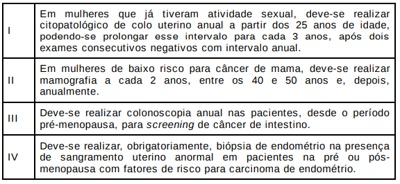
A I, II e III.
B apenas II e IV.
C I, II e IV.
D apenas I e III.
Questão 1777 · Etiologia · 4000183853O sangramento uterino disfuncional é um sangramento de origem uterina, na ausência de gravidez, doença pélvica ou sistêmica, atribuído às alterações nos mecanismos endocrinológicos que controlam a menstruação. Por se tratar de um diagnóstico de exclusão, só pode ser diagnosticado quando todas as causas orgânicas forem afastadas. Aproximadamente, 90% dos casos de hemorragia uterina anormal, na adolescência, devem- se à hemorragia disfuncional. Dessa forma, o sangramento uterino anormal, na adolescência, pode estar relacionado a
A patologias benignas, como miomatose uterina, bastante comum nessa faixa etária.
B alterações plaquetárias provocadas por leucemias.
C imaturidade do eixo hipotálamo-hipófise-ovariano, mas esta é uma das causas menos comum de sangramento uterino anormal.
D infecção do trato urinário, sendo esta a causa mais comum de sangramento uterino disfuncional nessa faixa etária.
Questão 1778 · Ginecologia · Síndrome prémenstrual · 4000183846A Síndrome Pré-Menstrual (SPM) consiste em um conjunto de sintomas físicos, psíquicos e comportamentais, que envolvem um complexo mecanismo neuroendócrino. Caracteristicamente, estão presentes, de forma recorrente, apenas na segunda metade do ciclo menstrual e aliviam após a chegada da menstruação. Essa síndrome
A está associada aos níveis baixos de estradiol.
B tem maior incidência na adolescência, sendo a faixa etária mais prevalente.
C apresenta distúrbios serotoninérgicos, sendo a sua etiologia provável.
D ocorre, principalmente, em ciclos anovulatórios.
Questão 1779 · Ginecologia · Classif icação · 4000183845O grau de prolapso é, frequentemente, avaliado usando-se o sistema Pelvic Organ Prolapse – Quanti cation (POP-Q), conforme recomendado pela International Continence Society. A avaliação do prolapso genital é feita a partir de um ponto anatômico xo, a carúncula himenal (posição zero). A partir desse ponto, as posições são dadas em centímetros, com números negativos em locais acima do hímen e números positivos quando distais ao hímen. São avaliados 6 pontos dinâmicos: parede vaginal anterior (Aa/Ba) e posterior (Ap/Bp), cúpula ou colo uterino (C), fórnice posterior da vagina (D), hiato genital (HG), corpo perineal (CP) e comprimento vaginal total (CVT), sendo os três últimos pontos estáticos. Em relação ao prolapso genital, verificado durante a manobra de Valsalva, o prontuário de uma paciente descreve seu prolapso genital como procidência da parede vaginal anterior (cistocele) +1, procidência do útero que atinge o hímen e procidência da parede vaginal posterior (retocele) em -2. Segundo o POP-Q, é possível classificar essas procidências descritas, respectivamente, em
A cistocele estágio 2, prolapso uterino estágio 1, retocele estágio 1.
B cistocele estágio 3, prolapso uterino estágio 3, retocele estágio 3.
C cistocele estágio 3, prolapso uterino estágio 2, retocele estágio 3.
D cistocele estágio 2, prolapso uterino estágio 2, retocele estágio 1.
Questão 1780 · Ginecologia · Candidíase · 4000183825Sobre a candidíase vulvovaginal, assinale a alternativa correta de acordo com o Protocolo Clínico e Diretrizes Terapêuticas para Atenção Integral às Pessoas com Infecções Sexualmente Transmissíveis do Ministério da Saúde (2022):
A A candidíase na gestação é considerada complicada.
B Hábitos de higiene e vestuário que diminuam a umidade e o calor local são fatores predisponentes.
C O pH vaginal encontra-se mais básico sendo indicado o uso de banhos de assento com ácido acético.
D O tratamento de primeira escolha é fluconazol 150 mg, via oral, dose única.
Questão 1781 · Vaginose bacteriana · Ginecologia · 4000183824A vaginose bacteriana (VB) é a desordem mais frequente o trato genital inferior em mulheres em idade reprodutiva. Sobre ela assinale a alternativa correta de acordo com o Protocolo Clínico e Diretrizes Terapêuticas para Atenção Integral às Pessoas com Infecções Sexualmente Transmissíveis do Ministério da Saúde (2022):
A É causada exclusivamente pela Gardnerella vaginalis, transmitida por contato sexual.
B Após o coito e a menstruação, que alcalinizam o meio vaginal, aminoácidos são quebrados em aminas voláteis que podem dar aspecto bolhoso e fétido ao corrimento.
C Está associada ao aumento dos lactobacilos, sendo recomendado banho de assento com bicarbonato de sódio para equilibrar o pH.
D À microscopia a característica principal é de presença de bactéria flagelada, com movimentos aleatórios.
Questão 1782 · Rastreamento do câncer de mama · 4000183823No rastreamento do câncer de mama a mamografia é o principal exame. Assinale a alternativa correta:
A As incidências básicas da mamografia são a PA e perfil, tendo a perfil a presença dos músculos peitorais.
B Paciente com próteses de silicone não devem fazer mamografia e sim ultrassonografia.
C A mamografia digital permite recursos de manipulação de imagens, o que não é possível com a mamografia convencional.
D Calcificações vasculares ou em pipoca são incluídas nas lesões suspeitas.
Questão 1783 · Exames complementares · 4000183822Paciente de 57 anos, com menopausa aos 52, teve sangramento via vaginal há 2 semanas. Ao exame ginecológico não apresentava alterações. Foi solicitado ultrassonogra a transvaginal que mostrou endométrio de 14mm de espessura e mioma intramural com 20 mm. Assinale a alternativa
A A principal hipótese diagnóstica é de atrofia endometrial.
B O exame ultrassonográfico está normal visto que o endométrio pode ter espessura normal de até 15 mm.
C Está indicada miomectomia ou uso de análogos do GnRH.
D Está indicada histeroscopia para avaliação do endométrio e biópsia.
Questão 1784 · Tabela dos critérios de elegibilidade OMS · 4000183821Mulher de 28 anos deseja contracepção e por isso vem para orientação. É os critérios de elegibilidade médica da OMS (2015) que:
A DIU com Levonorgestrel pode ser usado em pacientes com câncer de mama.
B Mulher amamentando 4 meses após o parto tem contraindicação absoluta ao uso de anel vaginal.
C Pacientes com HIV tem contraindicação absoluta ao uso de DIU de cobre.
D Pacientes com história de tromboembolismo têm contraindicação absoluta ao uso de contracepção combinada, mas não ao progestágeno isolado.
Questão 1785 · Diagnóstico · Ginecologia · 4000183820Os cistos ovarianos são achados frequentes em ginecologia. Sobre eles é correto afirmar:
A São critérios de malignidade ao ultrassom septos grosseiros e papilas ou vegetações.
B Doppler mostrando aumento da resistência indica neoplasia maligna.
C CA 125 normal exclui câncer de ovário.
D A aspiração dos cistos é o tratamento de escolha por ser menos invasivo.
Questão 1786 · Leiomiomatose uterina · 4000183819Paciente de 35 anos, GII PII, com queixa de sangramento uterino aumentado no período menstrual há 3 ciclos apresenta ao exame ginecológico cistos de Naboth no colo uterino. Após realizar ultrassonogra a transvaginal vem trazer o resultado do exame: útero com volume de 140 cm³ mioma subseroso de 3 cm , mioma intramural de 15 mm e pólipo endometrial com 10 mm. Assinale a alternativa
A Está indicada a histeroscopia para retirada do pólipo.
B Há indicação de retirada dos miomas ou uso dos análogos do GnRH para controle do sangramento.
C Tem indicação de histerectomia devido ao aumento do volume uterino.
D Está indicado o uso de estrogênio equino conjugado endovenoso.
Questão 1787 · Rastreamento do câncer de colo do útero · Rastreamento do câncer de mama · 4000183818Paciente de 55 anos vem para exames de rastreamento. Não apresenta doenças nem usa medicamentos. Nega tabagismo. Tem boa alimentação e faz atividade física regular. Seu IMC é de 25,2 kg/m² . Sem atividade sexual há 15 anos. É correto afirmar que:
A Está indicado fazer nesse momento Densitometria Óssea para avaliação de osteoporose.
B Está indicada a realização de ultrassonografia transvaginal para rastrear neoplasia endometrial.
C Está indicado o rastreamento de neoplasia de mama e colo uterino.
D Está indicado rastreamento de câncer de ovário com CA-125.
Questão 1788 · Ginecologia · Dismenorreia · 4000183817Paciente com 15 anos vem com queixa de dor na menstruação, localizada em abdome inferior, tipo cólica. Ela não tem atividade sexual e não tem planos de iniciar. O exame físico não mostrou alterações. Sobre a dismenorreia e o caso apresentado.
A Dismenorreia primária está associada a ciclos ovulatórios e resulta de contrações miometriais.
B Para o diagnóstico de dismenorreia primária é fundamental solicitar exames complementares para diagnóstico diferencial.
C Anticoncepcionais orais combinados são as drogas de primeira escolha para o tratamento de dismenorreia secundária.
D O caso indica tipicamente sinais de adenomiose, sendo indicado análogos do GnRH.
Questão 1789 · Lesão intraepitelial de alto grau · 4000183816Apesar da recomendação de coleta de citopatológico para rastreamento do colo uterino após os 25 anos, Maria, de 18 anos, traz o resultado de seu exame preventivo. A conclusão indica lesão intraepitelial de alto grau. Assinale a alternativa correta de acordo com as Diretrizes Brasileiras para o rastreamento do câncer de colo do útero, (2016):
A Devemos indicar repetir o citopatológico com 25 anos.
B Devido à idade da paciente devemos indicar repetir o exame em 6 meses.
C Deve ser indicada a exérese da zona de transformação pelo método ver e tratar.
D A paciente deve ser encaminhada para colposcopia.
Questão 1790 · Inf ecções em ginecologia · Papilomavírus humano HPV · 4000183811Gestante de 16 semanas de idade gestacional vem para consulta relatando verrugas em região genital. Ao exame é verificado que há múltiplas lesões vulvares que são compatíveis com condiloma acuminado. É correto
A O imiquimode é a primeira escolha de tratamento devido ao estímulo da imunidade local.
B A podofilina é opção segura e barata, sendo boa opção de tratamento.
C O ácido tricloroacético ou o nitrogênio líquido são boas opções de tratamento.
D Se as lesões estiverem presentes ao parto estará indicada a cesariana.
Questão 1791 · Tratamento · 4000183721Uma paciente de 32 anos de idade realizou ultrassonogra a transvaginal para avaliação de rotina. O exame evidenciou útero com consistência heterogênea e irregular, com imagem hipoecoica sugerindo mioma submucoso de 20 mm em parede corporal anterior, com distância de 1.0 cm da serosa do útero. Ela não tem lhos. Acerca desse caso clínico, assinale a alternativa que indica a conduta mais adequada para a confirmação diagnóstica e tratamento do mioma uterino.
A Embolização das artérias uterinas
B Miomectomia por via laparotômica
C Ressonância magnética da pelve
D Miomectomia por via laparoscópica
E Miomectomia por via histeroscópica
Questão 1792 · Ginecologia · Síndrome de Rokitansky · 4000183720Uma paciente de 18 anos de idade compareceu à consulta com queixa de amenorreia primária. Ao exame físico, apresentava distribuição normal de pelos axilares e genitais, mamas e vulva de aspectos habituais para a idade, porém, ao exame ginecológico, observou-se ausência de vagina. Entre os resultados dos exames, constatou-se cariótipo 46, XX, com audição e olfato normais. Nesse caso, diagnóstico mais provável é a síndrome de
A Rokitansky-Kuster-Hauser.
B Asherman.
C Sheehan.
D Kallmann.
E Morris.
Questão 1793 · Ginecologia · Vascularização pélvica · 4000183719O suprimento sanguíneo arterial do útero é derivado principalmente das artérias uterinas e dos ramos uterinos das artérias ovarianas. As artérias uterinas e as artérias ovarianas, são, respectivamente, ramos das artérias
A ilíacas internas e da aorta.
B ilíacas externas e da aorta.
C ilíaca interna e ilíaca externa.
D ilíaca comum e mesentérica inferior.
E umbilical e mesentérica inferior.
Questão 1794 · Ginecologia · Doença Inf lamatória Pélvica · 4000183717No que concerne à doença inflamatória pélvica (DIP), assinale a alternativa correta.
A Apresenta relevância por causa de suas complicações, tanto do ponto de vista de emergência, no caso da pelveperitonite ou da ruptura de abscesso tubo-ovariano, como em longo prazo, uma vez que pode provocar infertilidade, gravidez ectópica e dor pélvica crônica.
B O uso de dispositivos intrauterinos (DIU) pode representar um risco três a cinco vezes maior para o desenvolvimento da DIP, sendo a paciente portadora ou não de cervicite. Por esse motivo, o DIU é contraindicado como método contraceptivo para adolescentes.
C Quanto aos agentes etiológicos, a maioria dos casos não é polimicrobiano.
D O tratamento da DIP tem a finalidade de resolver o quadro infeccioso atual e de prevenir as possíveis complicações futuras. Deve ser iniciado após o diagnóstico de certeza e do resultado do antibiograma.
E A presença de abscesso tubo-ovariano tem sempre indicação cirúrgica, independentemente do seu maior diâmetro na avaliação de imagem de ultrassonografia ou de ressonância.
Questão 1795 · Ginecologia · Diagnóstico · 4000183615Mulher, 43 anos de idade, IIG I parto cesáreo há 5 anos e 1 parto vaginal há 1 ano, refere bola na vagina com di culdade de esvaziamento vesical e urgência miccional desde o parto. Nega incontinência urinária e noctúria. HI: obstipada. O diagnóstico mais provável, dentre os abaixo, é
A bexiga neurogênica flácida.
B prolapso parede vaginal anterior.
C síndrome da bexiga hiperativa.
D prolapso de parede vaginal posterior.
E prolapso de cúpula vaginal.
Questão 1796 · Endocrinologia reprodutiva · Ginecologia · Fisiologia do ciclo menstrual · 4000183613No ciclo menstrual normal,
A o corpo lúteo é formado pelas células da teca interna estimuladas pelo pico de LH e de progesterona.
B o pico do estradiol na fase folicular desencadeia o pico de LH e a ovulação ocorre após cerca de 12 horas.
C as células da granulosa são responsáveis pela transformação do colesterol em estrogênios pelo estímulo direto do FSH.
D o FSH estimula as células da teca interna, que determinam o aumento do LH e consequente ovulação em cerca de 36 horas.
E o estrogênio produzido pelas células da teca externa induz a produção de progesterona pelas células da teca interna, caracterizando a teoria das duas células.
Questão 1797 · Ginecologia · Fisiologia da micção · 4000183612Para que haja correto esvaziamento vesical, é necessário haver
A coordenação entre o sistema esfincteriano uretral e o detrusor, mediados pelo sistema nervoso somático.
B ação sincrônica do nervo pudendo e do sistema nervoso simpático, ambos causando relaxamento do assoalho pélvico.
C estímulo alfa-adrenérgico sobre a base da bexiga e assoalho pélvico, levando à abertura do colo vesical e saída da urina.
D contração do detrusor mediada por ação colinérgica e relaxamento do assoalho pélvico para abertura do colo vesical.
E integridade do centro sacral da micção, bloqueando os estímulos negativos de contração vesical enviados pelo córtex.
Questão 1798 · Tratamento · 4000183611Paciente de 32 anos de idade com queixa de uxo menstrual abundante há 1 ano. Já usou medicação hormonal e ácido tranexâmico, com melhora parcial. Tem desejo de gravidez. Ao exame, apresenta útero aumentado 1 vez, endurecido e móvel. A ultrassonogra a mostra formação hipoecoica na parede uterina direita, abaulando o endométrio, medindo 7 cm de diâmetro com componente subseroso. O quadro clínico sugere a indicação de
A análogos de GnRH por 1 ano e tentativa de gravidez espontânea logo após esse período.
B histeroscopia com ablação endometrial e laparoscopia para ressecção do componente subseroso.
C miomectomia por via abdominal ou laparoscópica ou robótica.
D histeroscopia com ressecção do nódulo com alça bipolar.
E progestagênio contínuo por 6 meses e reavaliação do nódulo logo após esse período.
Questão 1799 · Ginecologia · Tratamento · 4000183610Paciente de 20 anos de idade, nuligesta, refere dor e sangramento ao coito há cerca de 2 meses. Não faz uso de métodos contraceptivos hormonais, mas refere coito interrompido. Sua última menstruação ocorreu há 15 dias. Ao exame ginecológico, observa-se conteúdo vaginal, amarelo, sem odor. O colo uterino apresenta aspecto inflamatório, facilmente sangrante, JEC −3 e muco endocervical com aspecto purulento. Nesse momento, indica-se
A prescrever doxaciclina.
B prescrever itraconazol.
C realizar cirurgia de alta frequência com exérese de zona 1.
D cauterizar o colo com ácido acético.
E biopsiar a JEC e o canal endocervical.
Questão 1800 · Diagnóstico · Psiquiatria · 4000183609Para o correto diagnóstico de transtorno disfórico pré-menstrual, é necessária a presença de 5 ou mais sintomas somáticos e/ou emocionais, na maioria dos ciclos menstruais, na última semana da fase lútea,
A em mulheres com menos de 45 anos de idade.
B incluindo pelo menos um dos seguintes: humor deprimido, ansiedade, irritabilidade ou raiva.
C que melhoram acentuadamente no final da fase ovulatória.
D associados a diminuição importante dos valores da relação FSH/LH.
E em mulheres que não utilizam anticoncepcionais hormonais.
Questão 1801 · Síndrome dos ovários policísticos · 4000183607É androgênio produzido apenas por conversão periférica e que tem importante ação tissular em mulheres com hirsutismo:
A Sulfato de dehidroepiandrosterona.
B Dehidroepiandrosterona.
C Di-hidrotestosterona.
D Testosterona.
E Androstenediona.
Questão 1802 · Quadro clínico · 4000183604Mulher, 32 anos de idade, apresenta dor cíclica no período menstrual há 2 anos, sem melhora com analgésicos, anti-inflamatórios e contraceptivos hormonais. É obstipada. Teve cistite bacteriana há 3 meses e trouxe uma ultrassonogra a pélvica com descrição de nódulo uterino medindo 25 mm intramural e cisto ovariano a direita com conteúdo hemático medindo 40 mm. A principal causa de dor é:
A Estiramento de fibras nervosas por obstipação intestinal.
B Doença inflamatória pélvica crônica.
C Degeneração rubra de mioma uterino.
D Sangramento focal de implantes endometrióticos.
E Infeção do trato urinário complicada.
Questão 1803 · Rastreamento do câncer de mama · 4000183599Sobre os exames de mamas:
A A sensibilidade da ressonância magnética das mamas é maior do que o da mamografia, porém a especificidade é menor.
B A dopplerfluxometria das mamas tem como vantagem a sensibilidade maior que a ultrassonografia e ter boa reprodutibilidade.
C A ultrassonografia das mamas tem achados comparáveis com a mamografia com a vantagem de não ter radioexposição.
D A mamografia tem baixo custo e boa acurácia, porém depende da densidade mamária para boa interpretação.
E O melhor exame para avaliação de nódulos palpáveis é a ressonância magnética das mamas, por não ter radioexposição.
Questão 1804 · Ginecologia · 4000183592Na APS é frequente a queixa de corrimento vaginal nas mulheres durante a menacme. Entre as opções abaixo, a que correlaciona sintomas, o exame físico e o tratamento corretamente é:
A Corrimento branco e prurido vaginal intenso. Especular mostra placas brancas recobrindo partes da parede vaginal e colo e secreção branca espessa. Fluconazol 150 mg, via oral, 1 × semana, por 6 meses.
B Corrimento branco ou amarelado, com odor fétido e piora após relações sexuais. Exame especular mostra grande quantidade de secreção fluida branca, com bolhas. Metronidazol 100 mg/g em gel – aplicação intravaginal por 5 noites.
C Corrimento amarelado em pequena quantidade, intermitente, fétido. Exame especular mostra secreção fluida amarelada, sem lesões mucosas. Miconazol 2% creme, via vaginal, por 7 noites.
D Corrimento de aspecto mucoso, transparente ou esbranquiçado, piora no meio do ciclo menstrual. Exame especular mostra vulva, vagina e colo do útero sem alterações, pequena quantidade de muco claro. Nistatina 100.000 UI, via vaginal, por 14 noites.
E Corrimento amarelo-esverdeado, em grande quantidade. Exame especular mostra eritema de mucosa vaginal e pericervical associado a secreção amarelada em grande quantidade com bolhas. Metronidazol 100 mg/g em gel – aplicação intravaginal por 14 noites.
Questão 1805 · Papilomavírus humano HPV · 4000183590Uma paciente de 29 anos, tabagista, em relação monogâmica com parceiro xo, em uso de contraceptivo oral, apresenta resultado positivo para infecção cervical pelo vírus do papiloma humano (HPV). Pode-se afirmar que
A há risco de câncer do colo do útero se infecção persistente pelos subtipos HPV-16 e HPV-18.
B caso não seja tratada em até 6 meses apresentará alto risco de desenvolvimento de lesões percussoras.
C a relação monogâmica e uso de contraceptivo são fatores contra o desenvolvimento de câncer de colo uterino.
D a infecção cervical pelo HPV é permanente e, raramente, regride, espontaneamente.
E o tabagismo não é um fator de risco para o desenvolvimento de câncer de colo uterino.
Questão 1807 · Ressonância magnética · 4000183568Com relação ao rastreamento do câncer de mama é CORRETO dizer que:
A um programa de rastreamento bem implementado, organizado e não-oportunístico tem o objetivo de reduzir as ta[as de incidência do câncer de mama;
B a Ressonância Magnética das Mamas suplementar em mulheres com mamas e[tremamente densas na mamografia reduz a ta[a de câncer de intervalo;
C mulheres mutadas BRCA1 e BRCA2 ou outra mutação com aumento do risco para câncer de mama não devem se submeter à mamografia pelo risco elevado da radiação sobre as mamas;
D a Ultrassonografia de mamas (US) é aprovada como o método de rastreamento mais indicado para todas as mulheres com risco habitual com menos de 40 anos.
Questão 1808 · Ginecologia · Estadiamento · Tratamento · 4000183566Uma paciente de 50 anos foi submetida à cirurgia pela presença de um tumor pélvico originado no ovário esquerdo. Não foi possível a realização do exame anatomopatológico intraoperatório, pois o criostato do hospital estava em conserto. O cirurgião optou pela realização da salpingooforectomia esquerda. O posterior exame histológico da peça cirúrgica em xação padrão pela para na revelou tratar-se de um adenocarcinoma seroso grau 3 do ovário esquerdo, sem alteração na tuba retirada. Qual seria sua próxima orientaçãoà paciente?
A Nova cirurgia para estadiamento da neoplasia;
B Seguimento com CA 125 e ultrassonografia trimestral;
C Quimioterapia adjuvante;
D Radioterapia adjuvante.
Questão 1809 · Planejamento f amiliar · 4000183565Com relação aos métodos anticoncepcionais, assinale a alternativa INCORRETA:
A O implante subdérmico de etonorgestrel é o método que apresenta maior eficácia, com ta[as de falha (0,05) menores do que as observadas na esterilização feminina (0,5) ou masculina (0,15);
B O uso de contraceptivos progestagênicos e[clusivos tem como efeitos colaterais modificações no padrão de sangramento, cefaleia, tontura, mudança de humor (nervosismo e depressão) e ganho de peso;
C Nos contraceptivos hormonais combinados(CHC), o principal efeito do componente estrogênico é a inibição do pico pré-ovulatório do hormônio luteinizante (LH), evitando, assim, a ovulação;
D Por sua vez o componente progestacional dos CHC e[erce efeito antiproliferativo no endométrio, tornando-o não receptivo à implantação; altera a secreção e a peristalse das tubas uterinas.
Questão 1810 · Ginecologia · Fisiologia do ciclo menstrual · 4000183564REFERÊNCIA: PALTER, S.F. & OLIVE, D.L Cap.7 In: BEREK, J..S Novak Tratado de Ginecologia Auto- avaliação e Revisão, Editora Guanabara Koogan, Rio de Janeiro, 2005. Com base no gráfico acima assinale a alternativa CORRETA:
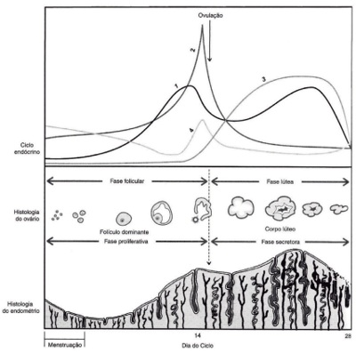
A O hormônio representado pela linha 2 atua sobre o folículo, induzindo a atresia imediata;
B O hormônio representado pela linha 1 estimula o endométrio a desenvolver mitoses e crescimento das arteríolas espiraladas;
C A apoptose do corpo lúteo propiciará a manutenção da produção dos hormônios representados pelas linhas 1 e 3;
D O hormônio representado como 4 é produzido nas células teca-foliculares dos ovários.
Questão 1811 · Vaginose bacteriana · Ginecologia · 4000183563UMA SUCESSÃO DE ERROS: Paciente procura o ginecologista com queixa de “menstruação fétida” e corrimento malcheiroso muito abundante, que chega a molhar a calcinha. Não tem prurido nem ardor genital. Ao exame clínico, o especular permite constatar que o pH vaginal é 5.5 e há conteúdo vaginal branco acinzentado muito uído, sem sinais inflamatórios. Assinale a resposta que garante o raciocínio clínico e conduta clínica
A O laudo do e[ame bacterioscópico da paciente acima descreve achado de grande quantidade de “clue-cells”. Essa característica celular corresponde a um halo perinuclear e está intimamente associado à presença de papilomavirus. Por isso mesmo, você solicita a pesquisa de HPV por meio de hibridização in situ. O resultado desse exame é positivo para “tipos virais de bai[o risco”, assim você deve indicar uma biópsia do colo uterino;
B Como você pediu a pesquisa de HPV e o vírus foi detectado, o marido da paciente teve acesso ao resultado do exame dela e lhe telefona bastante alterado dizendo que “acessou a internet e descobriu que o papilomavirus é causa de uma doença se[ualmente transmissível”, ao que você responde que ele tem razão, perguntando a seguir se ele (o marido) teria uma amante. O marido diz que não, dessa forma você conclui que, no caso quem deve ter o amante é ela;
C Você fez a biópsia do colo uterino e o diagnóstico foi “cervicite crônica”, assim você concluiu que provavelmente fez a biópsia no lugar errado, devendo ser indicado então uma conização com alça diatérmica, pois dependerá do resultado desse e[ame a confirmação da IST e o encaminhamento para a conduta correta. Com relação ao marido, você o encaminha para o urologista para que seja orientado sobre sua possível IST;
D A queixa da menstruação fétida poderá ser resultado da ação na vagina do sangue menstrual causando elevação transitória do pH, o que poderá liberar algumas substâncias voláteis (caracterizadas como aminas, especialmente a putrescina e a cadaverina) que provocam maucheiro.Geralmente associado coma vaginose bacteriana,que corresponde a modificações na microbiota vaginal.
Questão 1812 · Falência ovariana prematura · Ginecologia · 4000183562Adelina tem 32 anos e há 2 anos não tem mais menstruação. Ela contou que teve a menarca com 14 anos, nunca engravidou a despeito de jamais ter evitado lhos. Aos 29 anos, notou as menstruações com intervalos maiores e duração menor. Teve a última menstruação com 30 anos e, desde então, tem notado di culdade para manter a atividade sexual tanto porque não apresenta mais desejo sexual, quanto porque sua vagina está muito seca, o que produz dor na penetração. Tem importantes ondas de calor e sente-se muito deprimida. Com base no breve resumo clínico apresentado assinale a alternativa CORRETAentre as abaixo relacionadas:
A A hipótese diagnóstica de Insuficiência Ovariana Prematura (IOP) poderá ser confirmada se o e[ame de ultrassonografia transvaginal verificar os ovários com dimensões inferiores a 9,0 cm³;
B Serão necessárias avaliações de gonadotrofinas (que devem estar elevadas) e dos esteroides ovarianos (que devem estar reduzidos) em 2 dosagens mensais sucessivas para confirmar diagnóstico;
C Os níveis séricos das gonadotrofinas e dos esteroides ovarianos na presente situação em que se encontra Adelina deverá caracterizar uma amenorréia hiperestrogênica e hipogonadotrófica;
D Acaracterizaçãodescritano resumoclínico sugerequeAdelina épacientecomriscoelevado paraodesenvolvimento de câncer de endométrio, pois nunca engravidou e teve menopausa muito cedo.
Questão 1813 · Colo uterino · 4000183561REFERÊNCIA: RIVOIRE, W. et al. In: Freitas F et al. Rotinas em Ginecologia, Editora, cidade da editora, 2002, p? Avalie o esquema do colo uterino aqui representado e assinale a alternativa INCORRETA entre as abaixo relacionadas:
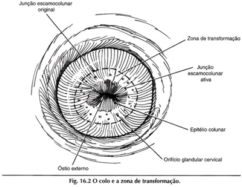
A Caminhando na direção cranial da JEC teremos a endocérvice, cujo epitélio será o colunar mucoprodutor;
B Alocalização anatômica da zona de transformação no orifício externo do colo uterino tem relação com os níveis de estradiol;
C Habitualmente a região denominada de ‘Zona de transformação’ é muito rica em células metaplásicas;
D O processo de renovação epitelial na Junção Escamocolunar ativa é patológico e a metaplasia é denominada de NIC.
Questão 1814 · Diagnóstico e Exames Complementares · Ginecologia · Climatério · 4000183560Mulher de 48 anos que não menstrua há 4 meses após sucessivos ciclos irregulares, com intervalos longos (45 a 60 dias), apresenta di culdade para dormir e sensação de calor intermitente. Entre as alternativas abaixo, assinale aquela que relaciona de maneira CORRETA os possíveis resultados de exames subsidiários e hipóteses diagnósticas para esta situação.
A Estradiol bai[o = Síndrome dos ovários micropolicísticos;
B FSH elevado = Insuficiência ovariana;
C Progesterona elevada = Disovulia;
D LH bai[o = Anovulação crônica.
Questão 1815 · Carcinoma Inf lamatório · 4000183459Paciente 35 anos procura o serviço de ginecologia, por apresentar, inicialmente na mama esquerda, alteração da cor da pele, evoluindo de um rosado claro que em duas semanas passou a ser um rash vermelho associado a edema (casca de laranja). A alteração se espalhou rapidamente por toda a mama e agora criou umas endurações difusas. Informa também que a mama dobrou de tamanho. Diante do achado, qual o provável diagnóstico?
A Carcinoma ductal in situ
B Carcinoma lobular
C Tumor phyllodes
D Carcinoma inflamatório
E Fibroadenoma
Questão 1816 · Diretrizes para o rastreamento · 4000183458Mulher de 26 anos, G1P1, assintomática, leva ao ambulatório de ginecologia exame de Papanicolau realizado há 10 dias. O resultado revela
A Independente dos sintomas, os microrganismos possuem importância prognóstica, devendo a paciente ser tratada.
B O tratamento deve ser estipulado, uma vez que existe associação de bactérias e fungos revelando biota polimicrobiana.
C Lactobacillus e cocos dispensam tratamento, devendo realizar medicação tópica exclusivamente para a cândida.
D Deve-se seguir a rotina de rastreamento citológico habitual, estabelecendo tratamento específico nas sintomáticas.
E Como a paciente é assintomática, a orientação é encaminhar para colposcopia e biópsia se revelar mácula periorificial.
Questão 1817 · Donovanose · Ginecologia · 4000183457Mulher de 25 anos, G1P1 (vaginal), procura o ambulatório de ginecologia por se apresentar com nódulos inflamatórios que progrediram para úlceras altamente vasculares, avermelhadas e carnudas, sangram com facilidade ao contato. Refere ter tido episódio parecido no ano anterior que deixou uma cicatriz brosa semelhante a queloide na região inguinal. Fez uma biópsia há 15 dias que demonstrou células mononucleares contendo corpos ao redor. Qual o provável diagnóstico?
A Protossifiloma
B Donovanose
C Cancroide
D Condiloma acuminado
E Herpes vírus
Questão 1818 · Fisiopatologia · 4000183456Paciente de 20 anos, G0 P0, tenta engravidar há dois anos sem sucesso e sem métodos contraceptivos. Revela ainda que já cou sem menstruar por três meses em algumas ocasiões. Informa ter, em média, três atividades sexuais por semana. Durante exame físico, percebe-se aumento do peso corporal, Acantose nigricans em região posterior da nuca e pelos em sulco intermamário. Traz consigo dosagens séricas de androgênios normais e exame de ultrassonografia da pelve sem alterações. Considerando o quadro acima, qual achado corresponde à resistência insulínica aumentada?
A Nuliparidade
B Oligomenorreia
C Acantose nigricans
D Distribuição de pelos
E Infertilidade
Questão 1819 · Planejamento f amiliar · 4000183455Paciente de 35 anos, G2P1A1 (ectópica tubária há 4 anos), veio ao ambulatório de ginecologia para solicitar a inserção de dispositivo intrauterino medicado com levonogestrel. Como antecedentes, informa ser portadora de enxaqueca com aura, fumante de 10 cigarros por dia. Além disso, teve uma trombos e venosa profunda na perda direita, há dois anos. Qual das condições acima representa contraindicação ao DIU medicado?
A Idade de 35 anos
B Gravidez ectópica
C Enxaqueca com aura
D Fumante de 10 cigarros/dia
E Antecedentes de TVP
Questão 1820 · Hiperprolactinemia · Ginecologia · Hiperprolactinemia · 4000183454Paciente de 35 anos, G2P2 (cesarianas), procurou o ambulatório de ginecologia por apresentar ausência de menstruação por seis meses. Informa que seu ciclo sempre foi regular e que, no mesmo período, começou a apresentar saída de secreção láctea pelas papilas mamárias. Sem demais sintomas. Usa como contracepção a laqueadura tubária. Faz uso de Risperidona como antipsicótico e Losartana, iniciados há seis meses. Beta HCG negativo e exame ecográfico transvaginal normal. Considerando o cenário acima, qual o provável mecanismo fisiopatológico para esta amenorreia secundária?
A A laqueadura tubária diminui a perfusão sanguínea ovariana, podendo levar à falência gonadal.
B Após 35 anos de idade, ocorre naturalmente uma falência ovariana temporária com diminuição de função gonadal.
C A secreção láctea pode ser consequente à elevação do neuropeptídeo Y subsequente à estimulação da Losartana.
D Ocorre antagonismo dos receptores D2 no sistema tuberoinfundibular hipotalâmico promovido pela Risperidona.
E Nos casos em que não se estabelece um motivo evidente, como no caso acima, é classificada como idiopática.
Questão 1821 · Interpretação e conduta f rente as atipias citológicas · 4000183453Paciente de 30 anos, G1P1 (cesariana), procurou o serviço de ginecologia com queixa de sangramento genital esporádico há algumas semanas. Traz consigo um exame citológico (Papanicolau) mostrando células glandulares atípicas de significado indeterminado provavelmente não neoplásicas. O exame ginecológico revelou sangramento uterino anormal. De acordo com o cenário acima, qual a melhor conduta?
A Realizar novo exame citológico em três meses
B Realizar curetagem do canal endocervical
C Realizar colposcopia e avaliação endometrial
D Realizar histeroscopia diagnóstica com biópsia
E Realizar exérese de zona de transformação tipo 3
Questão 1822 · Câncer de colo do útero · 4000183452Mulher de 25 anos chega à emergência ginecológica, com quadro de sangramento genital com odor desagradável há vários dias. Informa sangramento durante atividade sexual. O exame ginecológico revela tumoração cervical de 06 cm, restrita ao colo uterino. Vagina e paramétrios estão livres. Não possui exames complementares. Considerando o quadro acima, no momento, qual o provável estadiamento até o momento e tratamento?
A Ib3, radioterapia
B Ib1, radioterapia
C IIa1, cirurgia Piver tipo 5
D IIIa, radioterapia
E Ia2, cirurgia Piver tipo 3
Questão 1823 · Ginecologia · Diagnóstico · Classif icação · 4000183451Paciente de 65 anos procura ambulatório de ginecologia com queixa de “bola” na vagina há três meses. Nega perdas urinárias. Nega demais queixas. G4P4 (partos vaginais). O exame de POP-q é representado no quadro abaixo: De acordo com o exposto acima, é CORRETO afirmar que a paciente apresenta
A prolapso de parede anterior associado ao prolapso apical.
B ausência de prolapso com hipertrofia de colo uterino.
C prolapso apical e hipertrofia de colo uterino.
D prolapso apical associado ao prolapso de parede posterior.
E ausência de distopia em todos os compartimentos (exame normal).
Questão 1824 · Diagnóstico e Exames Complementares · Modif icações f isiológicas · Ginecologia · 4000183358São achados em uma paciente no período final da transição menopausal:
A Amenorreia >60 dias e <12 meses, hormônio estimulante do folículo (FSH) >25 UI/l, hormônio antimülleriano (AMH) baixo e inibina B baixa e contagem de folículos antrais baixa.
B Amenorreia >45 dias e <12 meses, FSH >15 UI/l, AMH baixo e inibina B baixa e contagem de folículos antrais muito baixa.
C Amenorreia >45 dias e <6 meses, FSH >20 UI/l, AMH muito baixo e inibina B baixa e contagem de folículos antrais baixa.
D Amenorreia >60 dias e <12 meses, FSH >20 UI/l, AMH baixo e inibina B baixa e contagem de folículos antrais muito baixa.
Questão 1825 · Fisiopatologia · 4000183355Analise as assertivas abaixo que sustentam a hipótese de que existe uma relação causal entre a presença de endometriose e a infertilidade: I. Há um aumento da taxa de fecundidade mensal e da taxa cumulativa de gravidez, após a remoção cirúrgica de endometriose mínima a leve. II. Há uma taxa de implantação reduzida por embrião após fertilização in vitro em mulheres com endometriose, quando comparadas a mulheres com infertilidade por fator tubário. III. Cistos ovarianos endometrióticos afetam negativamente a taxa de ovulação espontânea. Quais estão corretas?
A Apenas I.
B Apenas II.
C Apenas II e III.
D I, II e III.
Questão 1826 · Métodos hormonais combinados · Anticoncepção hormonal apenas com progesterona · 4000183354Entre as progestinas abaixo, qual a que necessita ser bioativada para se ligar diretamente a receptor de progesterona?
A Levonorgestrel.
B Noretindrona.
C Desogestrel.
D Drospirenona.
Questão 1827 · Ginecologia · Regimes terapêuticos · Urogenitais · 4000183353Paciente menopáusica de 51 anos vem à consulta com queixa de falta de lubri cação vaginal, associada a uma sensação de queimação na região genital após as relações. Ela já usou lubri cantes à base de vaselina, mas não teve melhora. Ela nega sintomas vasomotores ou cirurgias prévias. Ela tem uma mamogra a recente, resultado: BIRADS 1. O residente discutiu o caso com o preceptor e ambos decidiram prescrever uma dose de creme vaginal com 0,5 g de estrogênio, duas a três vezes por semana. O residente escreveu como usar o creme vaginal para a paciente e falou: “qualquer menometrorragia deveria ser investigada pela equipe”. Sobre o caso descrito, é correto afirmar que:
A A dose de estrogênio vaginal não necessita o uso de progestina concomitante, mas o alerta do residente não demonstrou um comportamento de confiabilidade.
B A abordagem do caso está correta em todos os seus aspectos. A segurança endometrial foi confirmada no uso de estrogênio vaginal até 1 ano, por isso, a fala do aluno para a paciente apresentou um comportamento de confiabilidade.
C A utilização do creme vaginal deveria ser substituída por estrogênio sistêmico, uma vez que existe a necessidade da aplicação diária de estrogênio vaginal, o que reduziria a adesão ao tratamento.
D Pelo fato de a paciente ter útero, o uso de progestinas por via oral está indicado concomitantemente com o uso do creme vaginal com estrogênio, uma vez que a dose prescrita é considerada como média.
Questão 1828 · Ginecologia · Diagnóstico · Investigação etiológica · 4000183352Paciente de 23 anos, gesta 2, para 2, veio na unidade básica de saúde com uma queixa de amenorreia secundária. Após ter um hCG sanguíneo negativo, o residente da ginecologia avaliou a paciente. O único aspecto relevante na história era uma cefaleia central, que não alterava as suas atividades diárias. A paciente negava uso de medicamentos. No exame físico, a avaliação sumária da visão sugeria uma redução da visão periférica. A palpação da tireoide era normal. As mamas apresentavam galactorreia bilateral espontânea. Na discussão do caso com a equipe, aventouse a possibilidade de hiperprolactinemia. Consideraram solicitar prolactina, FSH, LH, TSH, ressonância magnética da sela túrcica, a avaliação com oftalmologia e o teste da progesterona. Todavia, houve um debate sobre quais exames iniciais deveriam ser solicitados. A opção que segue uma investigação paulatina, baseada na hipótese diagnóstica considerada, deve iniciar com:
A A dosagem do TSH e da prolactina.
B A dosagem do TSH, prolactina, FSH e LH. Se normais, solicitar a ressonância magnética e a consultoria com a oftalmologia.
C O teste da progesterona. Se for negativo, dosar FSH, LH. Se forem normais, solicitar o TSH e a prolactina; se o TSH for normal e a prolactina acima de 100 ng/ml, solicitar a ressonância magnética. A consultoria com a oftalmologia deveria ser feita, caso a ressonância fosse normal.
D A dosagem de TSH. Se anormal, deve seguir com a dosagem da prolactina. Se a prolactina estiver entre 20 e 40 pg/ml, então, solicitar a ressonância magnética.
Questão 1829 · Síndrome de Morris · DDS46XYinsensibilidade androgênica ou def eito no receptor androgênico · 4000183351Ginecologia Uma paciente de 23 anos que apresenta a síndrome da insensibilidade aos androgênios na sua forma mais completa apresentará:
A Uma doença ligada ao cromossomo Y, com uma genitália infantil.
B Mamas em estágio M3 de Tanner e pelos pubianos no estágio P5.
C Alterações müllerianas, como útero unicorno.
D A produção do hormônio antimülleriano pelas células de Sertoli.
Questão 1830 · FSH e estradiol · Ginecologia · FSHLH · 4000183350Uma paciente de 35 anos deseja verificar a sua reserva ovariana para planejar a sua gestação. Ela tem ciclos menstruais regulares de 28 dias, com duração de 3 dias. O médico solicitou estradiol na fase secretora (dia 20 do ciclo), FSH (no dia 3 do ciclo) e LH (no dia 13 do ciclo), para realizar a relação FSH/LH. O resultado do FSH foi 5,7 mUI/ml, o do LH foi 1,4 mUI/ml e o do estradiol foi de 30 pg/ml. Em relação à conduta do médico, é correto afirmar que:
A Ele deveria ter pedido o hormônio antimülleriano, que é produzido pelas células da granulosa dos folículos pré-antrais, por isso, deve ser solicitado na primeira fase do ciclo menstrual, entre os dias 1 e 5.
B A relação FSH/LH é acima de 3,6. Essa relação, baseada nos dias da coleta, revela que a paciente terá uma má resposta à indução ovariana.
C O valor do estradiol coletado na fase secretora, associado com o valor do FSH na fase folicular inicial, revela que a paciente terá uma boa resposta ovariana.
D Dos três testes solicitados, somente um exame foi solicitado na época correta e está dentro da normalidade para a idade.
Questão 1831 · Rastreamento mamográf ico · 4000183349Sobre as formas de rastreamento do câncer de mama, é correto afirmar que:
A O Autoexame Mensal da Mama (AEM) ainda é recomendado. Apesar das poucas evidências, o AEM demonstrou melhorar a sobrevida das pacientes.
B A maioria dos grupos de especialistas recomenda a tomada de decisão compartilhada em relação à triagem com mamografia para as mulheres na faixa etária de 40 a 49 anos.
C A ressonância magnética da mama deve ser anual, a partir dos 50 anos, para mulheres com BRCA positivo.
D Tomografia por emissão de pósitrons e Ki-67, um marcador tumoral sérico, são formas promissoras para o rastreamento do câncer de mama.
Questão 1832 · Avaliação pré operatória · 4000183348Uma paciente de 65 anos, sem outras queixas, exceto sangramento vaginal, foi submetida à biópsia de endométrio, a qual evidenciou um carcinoma endometrial. Ela não apresentava sinais ou sintomas urinários ou gastrointestinais. No exame físico, o colo uterino estava liso, sem lesões macroscópicas, o útero era móvel, sem massas retrouterinas. Os ligamentos cardinais não estavam comprometidos. Na avaliação pré- tratamento do carcinoma endometrial, o médico deve realizar as seguintes ações, EXCETO:
A Palpar os linfonodos na região inguinal.
B Dosar CA 125 no sangue.
C Solicitar Raio-X de tórax.
D Solicitar colonoscopia.
Questão 1833 · Colposcopia · 4000183347São achados colposcópicos que sugerem câncer invasor do colo uterino: I. Vasos sanguíneos no formato de saca-rolhas. II. Contorno irregular da superfície com perda do epitélio superficial. III. Alteração do tom da cor do colo uterino, diferente do rosado. Quais estão corretos?
A Apenas I e II.
B Apenas I e III.
C Apenas II e III.
D I, II e III.
Questão 1834 · Indicações · Ginecologia · Contraindicações · 4000183239Uma paciente de 55 anos de idade, hipertensa controlada, com dislipidemia e em uso de estatinas, está sendo avaliada por um médico. Sua última menstruação ocorreu há três anos. A paciente queixa-se de ondas de calor diárias, associadas à diminuição da lubri cação vaginal. Refere grande preocupação, por haver muitos casos de cardiopatia em sua família. Segundo a paciente, sua mãe, de 78 anos de idade, sofreu fratura de fêmur há seis meses e acabou de ser diagnosticada com doença de Alzheimer. A partir desse caso clínico hipotético, assinale a alternativa correta, em relação à introdução de terapia hormonal (TH) para a paciente em questão.
A O uso de TH está associado a
B A TH pode ser considerada uma das terapias de primeira linha para prevenir osteoporose em mulheres na pós-menopausa com idade inferior a 60 anos ou até dez anos de menopausa.
C A fim de reduzir os riscos, a prescrição de terapia hormonal local (vaginal) pode ser considerada em mulheres com síndrome geniturinária isolada; no entanto, a terapia sistêmica mostra-se mais efetiva para tratar sintomas geniturinários.
D Estudos observacionais e reanálise do estudo WHI sugerem maior incidência de eventos cardiovasculares em mulheres abaixo de 60 anos de idade ou com menos de dez anos de menopausa; por essa razão, a TH só deve ser indicada em caso de grave sintomatologia e após exposição dos riscos
E A TH melhora a memória e as habilidades cognitivas de mulheres na pós-menopausa (independentemente de sua idade ou do tempo de menopausa), o que é comprovado por grandes ensaios clínicos.
Questão 1835 · Diagnóstico dif erencial · 4000183238Uma paciente de 38 anos de idade, sem desejo gestacional, queixa-se de ciclos menstruais irregulares, tendo apresentado somente oito ciclos menstruais no último ano. Refere incomodar-se com pili cação e oleosidade da pele. Conforme o exame físico, apresenta IMC igual a 24, presença de acne em face e índice de Ferriman-Gallwey igual a 8. Resultado do USG TV: útero em anteversão, centrado, de dimensões preservadas, contornos regulares e textura miometrial homogênea. O útero mede 7,6 × 3,8 × 4,8 cm, c o m volume igual a 72,1 cm³. Conforme exames, apresenta: eco endometrial centrado e homogêneo, medindo 0,8 cm de espessura; ovário direito com volume de 6,5 cm³, com presença de 5 imagens císticas, anecogênicas, medindo até 5 mm; ovário esquerdo com volume de 12,9 cm³, com presença de 7 imagens císticas, anecogênicas, medindo até 8 mm. Outros exames revelam os resultados apresentados na tabela a seguir Com base nesse caso clínico hipotético, assinale a alternativa correta.
A Trata-se de hiperprolactinemia, devendo o tratamento ser iniciado com cabergolina 1 mg, via oral, uma vez ao dia.
B Trata-se de amenorreia hipotalâmica funcional; o tratamento deve ter foco comportamental, envolvendo intervenções sobre nutrição, atividade física e apoio psicológico.
C Trata-se de insuficiência ovariana prematura, e o tratamento deve ser iniciado com terapia hormonal transdérmica, uma vez ao dia.
D Trata-se de síndrome dos ovários policísticos, e o tratamento deve ser iniciado com contraceptivos orais combinados, que contenham 20 a 30 mcg de EE (ou equivalente) e progestagênio de ação antiandrogênica.
E Trata-se de hiperplasia adrenal congênita, forma não clássica, devendo o tratamento ser feito com glicocorticoides.
Questão 1836 · Ginecologia · Tratamento · 4000183237Uma paciente de 58 anos de idade, 2G2PN, com IMC igual a 26 kg/m², casada e com vida sexual ativa, está sendo avaliada em uma consulta. Nega morbidades crônicas, uso de medicações ou cirurgias prévias. Queixa- se de urgência miccional e noctúria há cinco meses, informando que levanta até duas vezes por noite para urinar. Refere ter apresentado dois episódios de incontinência urinária, com saída de grande quantidade de urina nessas ocasiões. Entre as alternativas a seguir, assinale a que apresenta o tratamento mais adequado para a paciente referida nesse caso hipotético, considerando a principal hipótese diagnóstica.
A sling
B sling
C anticolinérgicos em associação a medidas comportamentais e fisioterapia
D bloqueador alfa-adrenérgico em associação a medidas comportamentais e fisioterapia
E inibidor da recaptação de serotonina e noradrenalina em associação a medidas comportamentais e fisioterapia
Questão 1837 · Miomatose uterina · 4000183236Uma paciente de 36 anos de idade, nuligesta, apresenta queixa de sangramento uterino anormal há seis meses, associado a dismenorreia EVA 5, nos primeiros três dias da menstruação. Refere manter ciclos regulares, porém com aumento da duração e do volume menstrual. Realizou ultrassonogra a, que apresenta os seguintes achados: útero em anteverso exão, de morfologia normal e contornos regulares; mede 9,9 × 5,5 × 5,5 cm, com volume estimado em 155 cc; apresenta contornos lobulados, presença de dois nódulos miometriais, assim caracterizados: nódulo 1 em parede posterior, FIGO 0, medindo 2,3 × 2,0 × 2,0 cm; nódulo 2 em parede anterior FIGO 6, medindo 2,0 × 3,0 × 2,3 cm; zona juncional sem alterações. O endométrio possui espessura de 0,2 cm. Regiões retrocervical, paracervicais e do septo retovaginal: sem alterações evidentes. Os ovários apresentam dimensões normais e ecotextura preservada. Entre as alternativas a seguir, assinale a que apresenta a abordagem cirúrgica mais adequada para a paciente referida nesse caso hipotético.
A miomectomia histeroscópica do nódulo 1 e miomectomia laparoscópica do nódulo 2.
B miomectomia laparoscópica do nódulo 1 e miomectomia histeroscópica do nódulo 2.
C miomectomia histeroscópica dos nódulos 1 e 2.
D miomectomia laparoscópica dos nódulos 1 e 2.
E somente miomectomia histeroscópica do nódulo 2.
Questão 1838 · Biópsias da mama · BIRADS · 4000183235Paciente de 34 anos de idade, sem morbidades crônicas conhecidas, queixa-se de nódulo em mama direit a, que notou há uma semana ao realizar autoexame pela primeira vez. A paciente realizou ultrassonogra a de mama, que evidenciou nódulo em mama direita com contornos irregulares, orientação vertical, textura heterogênea, limites parcialmente definidos e presença de sombra acústica posterior, medindo 2,0 × 1,5 × 1,0 cm. Nesse caso hipotético, a conduta a ser adotada é
A realizar biópsia cirúrgica.
B realizar biópsia por agulha grossa.
C repetir a ultrassonografia em três meses.
D acalmar a paciente, porque a imagem é sugestiva de fibroadenoma, e repetir ultrassonografia em seis meses.
E realizar punção por agulha fina para afastar diagnóstico de tumor filoide, embora a imagem seja sugestiva de fibroadenoma.
Questão 1839 · Quadro clínico · Exames complementares · 4000183234Uma paciente de sessenta anos de idade, com início da menopausa aos 51 anos de idade, refere quadro de sangramento vaginal em pequena quantidade. Apresenta ultrassonogra a que evidencia eco endometrial de 10 mm. Nesse caso clínico, a conduta deve ser
A repetir a ultrassonografia em seis meses.
B tranquilizar a paciente e orientá-la a manter rotina ginecológica anual.
C realizar histeroscopia diagnóstica.
D indicar histerectomia total.
E realizar ablação endometrial para controle do sangramento.
Questão 1840 · Abdome agudo em ginecologia · Diagnóstico · Ginecologia · 4000183233Uma paciente de 25 anos de idade refere dor pélvica há quatro dias, associada a febre e saída de secreção amarelada pela via vaginal. Ela tem vida sexual ativa. No exame, constatou-se secreção amarelada fétida na via vaginal, dor à mobilização do colo uterino e temperatura de 39 °C. O exame de beta-HCG resultou negativo. Ultrassonografia transvaginal sem alterações. Assinale a alternativa que apresenta a correta hipótese diagnóstica para o caso clínico acima.
A gestação ectópica
B doença inflamatória pélvica
C endometriose
D torção ovariana
E dor pélvica crônica
Questão 1841 · Endometriose · 4000183232Uma paciente de 37 anos de idade, G0P0, apresenta quadro de infertilidade associado a queixas de cólicas menstruais intensas que têm aumentado nos últimos dois anos, associada a dispareunia. No exame, observou-se a presença de dor à mobilização do colo uterino e de espessamento do ligamento uterossacro direito. A respeito da principal hipótese diagnóstica no caso clínico acima, assinale a alternativa correta.
A Deve-se realizar ressonância magnética de pelve ou ultrassonografia com preparo intestinal.
B Deve-se realizar laparoscopia diagnóstica.
C Deve-se tranquilizar a paciente e prescrever o uso de anticoncepcional oral por seis meses.
D A dosagem de CA 125 tem boa sensibilidade e especificidade para o diagnóstico da doença retratada nesse caso.
E Deve-se indicar uso de análogo de GNRH por um ano, para melhora das taxas de fertilidade.
Questão 1842 · Ginecologia · Etiologia · 4000183231Assinale a alternativa que apresenta a principal causa ginecológica de dor pélvica crônica.
A miomatose uterina
B tumores ovarianos
C doença inflamatória pélvica
D endometriose
E varizes pélvicas
Questão 1843 · Tratamento · 4000183230Uma paciente de trinta anos de idade, nuligesta com desejo gestacional, apresenta quadro de sangramento uterino aumentado. A ultrassonogra a evidencia mioma submucoso de 2 cm deformando a cavidade uterina. Nesse caso clínico, a melhor conduta é
A expectante.
B miomectomia histeroscópica.
C miomectomia laparotômica.
D fertilização
E miomectomia laparoscópica.
Questão 1844 · Adenomiose · 4000183159Mulher, 44 anos de idade, 3G 3P, apresenta dismenorreia progressiva há 2 anos, associada a aumento do volume menstrual e dispaurenia, há 8 meses, di cultando o relacionamento sexual. Ao exame: útero aumentado 2 vezes de tamanho, consistência amolecida. US pélvico: útero heterogêneo, focos hiperecogênicos puntiformes em meio a trama miometrial, espessura endometrial 8 mm, volume uterino: 178 ml, ovários sem alterações. A conduta mais adequada é:
A prescrever danazol via oral.
B realizar histerectomia sub-total.
C prescrever análogo de GnRH subcutâneo.
D realizar embolização das artérias uterinas.
Questão 1845 · Vulvovaginites · Ginecologia · 4000183158Menina, 5 anos de idade, é trazida pela mãe ao ginecologista, por corrimento abundante há 30 dias. Ao exame: hímen íntegro, corrimento branco, uído, sem odor, consistência mucoide, pH 4,2, teste das aminas negativo, ausência de lesões em vulva. A melhor conduta a ser realizada é:
A encaminhar o caso ao conselho tutelar, comunicar autoridade policial pela alta possibilidade de abuso sexual.
B orientar uso de roupas íntimas de material não sintético e limpeza local com água corrente e sabonete neutro.
C realizar exame ginecológico sob sedação para busca de corpo estranho vaginal.
D dosar FSH e LH sérico e realizar radiografia dos punhos para investigação de puberdade precoce.
Questão 1846 · Estadiamento · Tratamento · 4000183157Mulher, 47 anos de idade, deu entrada no PS com crise hipertensiva. Exames complementares revelaram ureia 60mg/dL e creatinina de 7 mg/dL, US de vias urinárias com dilatação ureteral bilateral acentuada. Refere diagnóstico recente de carcinoma epidermóide de colo de útero, ainda sem tratamento. A conduta mais adequada do ponto de vista oncológico é:
A radioterapia associada a quimioterapia sensibilizadora.
B cirurgia de Werthein Meigs.
C traquelectomia radical e parametrectomia.
D imunoterapia com pembrolizumabe (anti PD-L1).
Questão 1847 · Exames complementares · Exames complementares · 4000183156Mulher, 64 anos de idade, refere 2 episódios de sangramento vaginal no último mês, em pequena intensidade, com duração de 2 dias. Ultrassonogra a endovaginal revela eco endometrial de 15 mm. Qual é a melhor conduta?
A Ressonância magnética da pelve.
B Teste da progesterona.
C Histeroscopia diagnóstica.
D Biópsia com cureta de Nowak.
Questão 1848 · Tratamento cirúrgico · 4000183155Mulher, 72 anos de idade, encontra-se em cirurgia para câncer de endométrio e a avaliação intraoperatória do produto de histerectomia total e salpingooforectomia bilateral mostrou ser um carcinoma endometrial, do tipo endometróide grau 1, super cialmente invasor, estroma do colo livre. Neste caso, qual (is) procedimento (s) cirúrgicos ainda falta (m) ser realizado (s):
A Linfadenectomia pélvica bilateral.
B Nenhum outro procedimento é necessário.
C Linfadenectomia pélvica bilateral e para-aórtica.
D Linfadenectomia pélvica bilateral e para-aórtica, omentectomia infra-cólica.
Questão 1849 · BIRADS · 4000183154Mulher, 42 anos de idade, assintomática retorna ao ambulatório com resultado de mamogra a (4 incidências básicas): BI-RADS 0, mamas lipossubstituídas e microcalcificações agrupadas em área de 8mm). Qual é o complemento de imagem que deve ser solicitado?
A Ampliação.
B Compressão.
C Ultrassom.
D Ressonância magnética.
Questão 1850 · Ginecologia · Tratamento · 4000183153Mulher, 32 anos de idade, IG I Parto vaginal há 4 meses, refere incontinência urinária de esforço durante a gestação, com piora no puerpério. Refere perda ao tossir, espirrar e carregar o bebê no colo. Qual é a conduta mais adequada?
A Cirurgia de sling retropúbico.
B Cirurgia de colpofixação retropúbica.
C Fisioterapia do assoalho pélvico.
D Injeção periuretral com agente de preenchimento.
Questão 1851 · Tratamento não hormonal dos sintomas climatéricos · Terapia hormonal · 4000183152Mulher, 56 anos de idade, menopausa aos 49 anos, com antecedente de câncer de mama in situ há 5 anos, procura o ambulatório com queixa de fogachos e secura vaginal há 1 ano. Qual é a alternativa correta quanto ao manejo dos sintomas?
A Terapia hormonal com estrogênio associado ao progestagênio, uma vez que a paciente tem útero e não teve câncer de mama invasivo.
B Uso de antidepressivos recaptadores de serotonina, para melhora dos fogachos, e hidratante vaginal para atrofia genital.
C A terapia hormonal está contraindicada pois a paciente está fora da janela de oportunidade e pelo aumento do risco cardiovascular.
D Uso do estrogênio vaginal como primeira escolha para melhora da atrofia genital e fogachos, pois o câncer de mama era in situ.
Questão 1852 · Diagnóstico dif erencial · 4000183150Mulher, 24 anos de idade, refere aumento progressivo e lento, há 10 anos, de pelos em face, tórax, braço e região sacral. Apresenta ciclos menstruais regulares, com intervalo de 34 dias, uxo e duração normais, com cólicas e sintomas prémenstruais leves. Nuligesta, vida sexual ativa em uso de condom. Exame físico: IMC = 27 kg/m2, ausência de acantose nigricans, índice de Ferriman = 13. Qual é a provável etiologia?
A Tumor virilizante do ovário.
B Hirsutismo idiopático.
C Síndrome dos Ovários Policísticos.
D Resistência periférica a insulina com hiperinsulinismo.
Questão 1853 · Colposcopia · 4000183140Paciente na 1ª consulta de pré-natal, traz resultado de citologia cervicovaginal com atipias em células escamosas – não se podendo excluir lesão de alto grau. Realiza colposcopia na 14ª semana de gestação, evidenciando epitélio acetobranco espesso em topogra a de JEC, adentrando canal endocervical, associado a vasos atípicos e ulceração sangrante ao toque da pinça Cherron. Qual é a conduta recomentada?
A Biópsia dirigida em região de maior suspeita colposcópica.
B Coleta de nova citologia com ênfase no tecido endocervical.
C Seguimento apenas sem necessidade de biósia.
D Indicar conização cervical por cirurgia de alta frequência.
Questão 1854 · Abdome agudo em ginecologia · Causas · 4000183075Paciente do sexo feminino, 22 anos de idade, dá entrada no pronto atendimento com quadro de dor abdominal iniciada em FID e irradiada para toda a pelve, de leve a moderada intensidade, há cerca de 8 horas, acompanhada de tontura, mal-estar e sensação de síncope. Não sabe referir adequadamente o caráter da dor. Nega vômitos, diarreia e sintomas urinários. Refere leucorréia esbranquiçada há 3 meses, ciclo menstrual irregular, com data da última menstruação há cerca de 2 meses. Vida sexual ativa com uso irregular de preservativos ou outros métodos contraceptivos. Ao exame físico encontra-se hipocorada +++/4, FR: 25irpm, FC: 100bpm, P.A.: 90 x 60mmHg. Abdome plano, ácido, simétrico, doloroso à palpação profunda em toda a pelve, com irritação peritoneal duvidosa. Refere dor ao toque vaginal. Toque retal sem alterações. Sobre o caso acima, assinale a alternativa
A O hemograma será útil para o diagnóstico sindrômico do caso acima, mas pode ser dispensável para a decisão de abordagem cirúrgica para o caso.
B Caso o Beta-HCG desta paciente resulte negativo, o tratamento preferencial do caso será clínico, com analgesia e antibioticoterapia.
C A ressuscitação volêmica com Ringer Lactato e a avaliação da necessidade de transfusão de concentrado de hemácias faz parte da conduta inicial do caso.
D O FAST, apesar de ser propedêutica idealizada para pacientes politraumatizados, pode ser extremamente valioso na avaliação inicial desta paciente.
Questão 1855 · Diagnóstico · 4000183064Paciente do sexo feminino, 13 anos, vem à consulta médica queixando dor em FID e pélvica, de leve intensidade, há 1 mês. Nega vômitos, febre e alterações do hábito intestinal. Refere menarca aos 12 anos, com ciclos menstruais irregulares. Ao exame físico, a paciente se encontra normocorada, eupneica, afebril, hemodinamicamente estável. Exame cardiorrespiratório sem alterações. Seu abdome é plano, ácido, discretamente doloroso à palpação profunda em FIE e hipogástrio, onde se palpa massa sólida, rme e móvel. Qual o próximo passo para a investigação diagnóstica e seu provável achado?
A Ultrassonografia de abdome – Massa ovariana mista com focos de calcificação
B Ultrassonografia transvaginal e dosagem de Beta-HCG – Prenhez tubária não rôta.
C Ressonância Magnética de pelve – Hidrossalpinge.
D Radiografia de abdome – Fecaloma.
Questão 1856 · Tratamento clínico · 4000183059Paciente 18 anos, nuligesta, com queixa de dismenorreia crônica, foi diagnosticada com endometriose. Qual melhor conduta para esse caso?
A Anti-inflamatórios não hormonais
B Cirurgia laparoscópica
C DIU de cobre
D Implante de etonogestrel
Questão 1857 · Ginecologia · Obstetrícia · 4000183058Paciente 30 anos, foi ao ambulatório de ginecologia com dor mamária referindo nódulo em mama esquerda. Levou ultrassonogra a com achado de imagem anecóica, de paredes lisas, com reforço acústico posterior, medindo 40 mm. Qual a melhor conduta para este caso?
A Puncão por agulha fina
B Core biopsy
C Mamografia
D Ressonancia Magnética
Questão 1858 · Aborto legal no Brasil · Legislação sobre aborto · 4000183057Gestante, 30 anos, 13 semanas, foi a consulta de pré-natal com laudo ultrassonográ co de anencefalia. Qual dos documentos a seguir é necessário para que seja feita a interrupção da gestação:
A Registro de boletim de ocorrência
B Dois laudos de ultrassom
C Autorização judicial
D Autorização do marido
Revisar: possível letra faltando em enunciado
Questão 1859 · Donovanose · Ginecologia · 4000183055Na classificação de síndromes de úlcera anogenital, preconizada pelo ministério da saúde 2022, o agente etiológico responsável pela Donovanose é:
A Haemophilus ducreyi
B Chlamydia trachomatis
C Klebsiela granulomatis
D Mycoplasma genitalium
Questão 1860 · Síf ilis primária · Ginecologia · Síf ilis · 4000183054São manifestações da sífilis primária:
A Roseólas, placas mucosas
B Sifilides , linfonodos regionais
C Micropoliadenopatia, Roséolas
D Cancro duro, Linfonodos regionais
Questão 1861 · Benef ícios · Contraindicações · 4000183053Paciente 22 anos, Gesta 1:Para 1, foi a consulta para orientação anticoncepcional. Refere trombose história de trombose venosa profunda há um ano. Está em uso de preservativos, mas, deseja um método mais efetivo que não seja oral, pois tem medo de esquecer. Nega tabagismo ou uso de outros medicamentos. Qual a recomendação mais adequada nesse caso?
A Dispositivo intrauterino de cobre
B Anticoncepcional injetável mensal
C Adesivo transdermico
D Anel Vaginal
Questão 1862 · Ginecologia · Quadro clínico · 4000183052Paciente 20 anos refere corrimento vaginal claro, com prurido, ardência vulvar, com piora no período pré- menstrual. Ao exame ginecológico: corrimento vaginal, branco, uido. Bacterioscopia evidenciou grande quantidade de polimorfonucleares, lactobacilos ++++/4 e células intermediarias integras. O teste de aminas foi negativo e o PH vaginal é 4,0. Qual diagnóstico provável?
A Vaginose bacteriana
B Vulvovaginite por cândida
C Vaginose citolítica
D Mucorréia
Questão 1863 · Tratamento clínico · 4000183051Paciente 35 anos, tabagista, refere sangramento uterino anormal há 12 meses. Refere aumento de fluxo menstrual. Exame ginecológico: útero discretamente aumentado. Ultrassonogra a transvaginal: nódulos compatíveis com miomas intramurais medindo 3,0 cm e 2,0 cm. Qual a conduta mais adequada?
A Miomectomia histeroscópica
B Análogo Gnrh
C Sistema intrauterino de levonogestrel
D Pilula anticoncepcional combinada
Questão 1864 · Ética em reprodução humana · Ginecologia · 4000183050Em relação a tratamentos de reprodução assistida na população LGBTQIA+ conforme a resolução do CFM 2.294 de 27 de maio de 2021, é
A Os procedimentos de reprodução assistida são permitidas para pessoas transgênero masculino e feminino, após a aprovação do CFM.
B É permitida ao casal homoafetivo masculino, a fecundação de oócitos por um mix de espermatozoides de ambos, com transferência de embriões de origem aleatória.
C A cessão temporária de útero para casal homoafetivo masculino demanda autorização judicial para que seja realizado.
D A gestação compartilhada, em que se utiliza oocitos de uma parceira e útero da outra, é permitido para casais homoafetivo feminino.
Questão 1865 · Ginecologia · Obstetrícia · 4000183048Paciente 36 anos, 12 semanas, trouxe exame morfológico de primeiro trimestre com medida da translucência nucal: 3,7 mm. Qual a conduta adequada?
A Realizar Cariótipo
B Tranquilizar a paciente
C Solicitar NIPT
D Solicitar PAPP-A
Questão 1866 · Ginecologia · Obstetrícia · 4000183045O padrão ouro no diagnostico de infecção fetal por rubéola é dado por qual exame:
A Avidez IgG
B IgM positivo
C Ultrassonografia
D PCR do liquido amniótico
Questão 1867 · Ginecologia · Obstetrícia · 4000183044Na avaliação da idade gestacional, qual parâmetro é mais fidedigno:
A Comprimento cabeça nadegas
B Diametro Bi parietal
C Comprimento do Femur
D Avaliacao multiparamétrica
Questão 1868 · Ginecologia · Obstetrícia · 4000183042Gestante primigesta, foi a consulta de pré-natal para mostrar exame de ultrassonogra a do primeiro trimestre que evidenciou índice de pulsatilidade das artérias uterinas acima do percentil 95. O risc o calculado para pré eclampsia pelo algoritmo da Fetal Medicine Foundation foi 1:100. Assinale conduta mais adequada para o caso.
A Iniciar nifedipina 40 mg.
B Reavaliar com 20 semanas.
C Realizar Monitorização da Pressão Arterial.
D Iniciar acido acetil salicílico 150 mg a noite.
Questão 1869 · Ginecologia · Obstetrícia · 4000183040O exame obstétrico de uma gestante de 20 semanas evidenciou altura uterina no apêndice xifóide. Qual das alternativas podem ser responsáveis por esse achado?
A Diabetes gestacional
B Insuficiência placentária
C Doença Hipertensiva específica da gravidez
D Síndrome de Prunny Belly
Questão 1870 · Tratamento e Condutas · Introdução · 4000183003Em relação ao atendimento de adolescentes vítimas de violência sexual, assinale a alternativa
A As unidades de atenção primária não estão preparadas para atendimento de uma adolescente vítima de violência sexual.
B Adolescentes vítimas de violência sexual devem ser atendidas exclusivamente na presença da mãe.
C O médico de família e comunidade deve sempre referenciar a adolescente com urgência ao ginecologista.
D As unidades de saúde, em todos os níveis de cuidado, devem estar capacitadas para o atendimento e o cuidado de uma adolescente vítima de violência sexual.
Questão 1871 · Câncer de colo do útero · 4000182959Mulher de 49 anos foi submetida à histerectomia devido a dor no baixo ventre e identi cação de massa pélvica. Exame macroscópico da peça cirúrgica: imagem. As características macroscópicas da imagem favorecem o diagnóstico de:
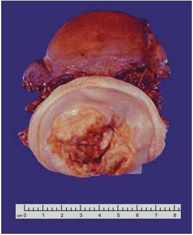
A doença inflamatória pélvica com cicatrizes extensas.
B teratoma adulto benigno com áreas de necrose.
C cistos de Naboth com infecções recorrentes.
D câncer avançado do colo do útero.
Questão 1872 · Tratamento · 4000182957Mulher de 35 anos, sem desejo reprodutivo, apresenta disquesia e dismenorreia incapacitante cíclicas, com controle álgico apropriado em vigência de tratamento medicamentoso. US transvaginal com preparo intestinal: nódulo de 1 cm em ligamento útero-sacro esquerdo acometendo camada serosa da parede do retossigmoide. De acordo com o ECO sistema para abordagem de pacientes com endometriose, é indicado tratamento
A cirúrgico em serviço disponível.
B clínico em atenção primária.
C clínico em serviço de referência.
D cirúrgico em serviço de referência.
Questão 1873 · Ginecologia · Estadiamento · Tratamento · 4000182956Mulher de 62 anos apresenta dor hipogástrica associada a sintomas dispépticos há 06 meses. AP: G0P0. US abdome total: grande massa heterogênea de provável origem anexial, apresentando septos e áreas sólidas associadas a uxo ao Doppler, com implantes sugestivos de acometimento secundário em andar superior, provável acometimento do fígado e alças intestinais,
A aparotomia exploradora para estadiamento e ressecção tumoral.
B laparoscopia exploradora para estadiamento e biópsia da lesão.
C laparotomia para ressecção tumoral seguida de quimioterapia.
D radioterapia e quimioterapia exclusivas.
Questão 1874 · Ginecologia · Síndrome de Rokitansky · 4000182955Paciente de 16 anos e 5 meses, 1,65m, queixa-se de nunca ter menstruado. Exame físico: mamas em estágio 4 e pêlos pubianos em estágio 5 de Marshall e Tanner, cariótipo XX. A síndrome mais provável e os ductos envolvidos nesse defeito são:
A Rokitansky; paramesonéfricos.
B insensibilidade androgênica; paramesonéfricos.
C Ashermann; mesonéfricos.
D Swyer; mesonéfricos.
Questão 1875 · Fisiopatologia · 4000182954Mulher de 24 anos, assintomática, tem diagnóstico de síndrome dos ovários policísticos. Exame físico: IMC 29,8 Kg/m², PA 120x85 mmHg, circunferência da cintura 89 cm. Os riscos metabólicos e reprodutivos relacionados a doença são:
A apneia do sono, hipertensão arterial e incompetência istmo cervical.
B apneia do sono, pré-diabetes e pré-eclâmpsia.
C dislipidemia, neoplasia de colo de útero e diabetes gestacional.
D esteatose hepática não alcoólica, câncer de endométrio e vaginose citolítica durante a gestação.
Questão 1876 · Quadro clínico · 4000182953Mulher de 55 anos notou nodulação em mama direita há 2 meses. Exame físico: nódulo endurecido de difícil delimitação com o tecido adjacente de 3 cm no quadrante superolateral da mama direita. Assinale a alternativa correta.
A Deve-se solicitar mamografia e aguardar o resultado para definir a conduta.
B Deve-se indicar biópsia do nódulo, de preferência guiada por ultrassonografia.
C O exame de ressonância das mamas é o mais indicado.
D O exame clínico é característico de cisto mamário.
Questão 1877 · Ginecologia · Ciclo menstrual · 4000182952A respeito da fisiologia normal do ciclo menstrual, é correto afirmar que:
A o hipotálamo secreta o hormônio liberador de gonadotrofina (GnRH) que regula a liberação do hormônio folículo estimulante (FSH), que libera o hormônio luteizante (LH).
B no início de cada ciclo menstrual os níveis de esteróides gonadais são altos e vêm aumentando desde o final da fase lútea do ciclo anterior.
C o recrutamento inicial e o crescimento dos folículos primordiais são independentes da gonadotrofinas.
D o LH estimula a aromatização nas células da teca.
Questão 1878 · Complicações · Ginecologia · Tratamento · 4000182951Em relação ao abscesso tubo-ovariano, é correto afirmar que:
A o tratamento cirúrgico é mandatório e emergencial para as pacientes sépticas, com abscessos rotos ou naqueles com diâmetros acima de 10 centímetros.
B o tratamento ambulatorial pode ser considerado nas pacientes com boa compreensão do tratamento e que estejam em bom estado geral, desde que o maior diâmetro do abscesso seja inferior a 5 cm.
C a ausência de melhora clínica após 48 horas de antibioticoterapia parenteral pode ser manejada com leucograma seriado, PCR e VHS diários, além de curva térmica.
D o principal agente etiológico envolvido nesses quadros é o Actinomyces israelli.
Questão 1879 · Ginecologia · Terapia hormonal · 4000182950Mulher de 51 anos queixa-se de diminuição da lubri cação e ardência vaginal no ato sexual há 2 anos. No último ano, sente-se mais triste, sozinha e “esquecida” para atividades do dia a dia. AP: DUM há 1 ano e 6 meses, HAS, tabagista. AF: mãe falecida por câncer de mama. Assinale a alternativa correta.
A Terapia hormonal (TH) sistêmica está indicada para melhora dos sintomas vaginais e sistêmicos.
B Há contraindicação absoluta ao uso de TH sistêmica.
C Terapia não hormonal com antidepressivos é a opção mais segura para o alívio dos sintomas climatéricos.
D TH vaginal está indicada para alívio dos sintomas vaginais.
Questão 1880 · Anticoncepção em condições especiais · 4000182949Mulher de 15 anos comparece a Unidade Básica de Saúde, pois deseja iniciar um método anticoncepcional. AP: menarca aos 11 anos, sexarca há 1 ano, DUM há 2 dias. Nega comorbidades, tabagismo ou etilismo. Assinale a alternativa correta.
A Pedir para retornar com um responsável legal, pois a orientação e prescrição de métodos contraceptivos para menores de idade necessita da autorização ou ciência dos pais ou responsáveis.
B Todos os métodos contraceptivos podem ser usados, cabe ao profissional explicar sobre cada um para que a paciente possa escolher.
C Devido a idade a melhor alternativa seria o método de barreira, evitando possíveis alterações hormonais sobre a puberdade.
D O DIU está contraindicado pela idade precoce.
Questão 1881 · Diagnóstico dif erencial · 4000182798Jovem de 17 anos veio à consulta queixando-se de ciclos menstruais irregulares desde a menarca (14 anos), piora da acne e aumento de pelos no rosto e corpo no último ano. Ao exame clínico, apresentava M3 e P5 (estágios de Tanner) e escore de Ferriman de 15 (alterado > 8). Media 158 cm e pesava 66 kg. Para o diagnóstico diferencial entre síndrome dos ovários policísticos e hiperplasia adrenal congênita não clássica, qual o exame mais adequado?
A Dosagem de 17-OH progesterona
B Dosagem de testosterona livre
C Ultrassonografia abdominal total
D Ultrassonografia pélvica
Questão 1882 · Vacinas · 4000182797Assinale a assertiva correta sobre a vacina contra o papilomavírus humano.
A A vacina protege contra as infecções virais assintomáticas, mas não tem impacto no câncer de colo de útero.
B A vacina está indicada apenas para quem comprovadamente não teve contato com o vírus.
C Não é permitido vacinar mulheres com diagnóstico prévio de neoplasia intraepitelial vulvar.
D A vacina pode ser realizada em outras faixas etárias além daquelas contempladas pelo Programa Nacional de Imunizações, do Ministério da Saúde.
Questão 1883 · Estadiamento · Diagnóstico · 4000182796Assinale a alternativa que preenche, correta e respectivamente, as lacunas do parágrafo abaixo. Paciente de 42 anos, casada e com 3 lhos, em uso de DIU de cobre, veio à consulta com queixas de sangramento intermitente. Informou ter realizado a última revisão ginecológica há 5 anos (em atraso devido à pandemia). Ao exame físico, a pressão arterial era de 130/85 mmHg, o peso, de 60 kg, e a altura, de 168 cm; mamas, abdômen e vulva não apresentaram particularidades. O exame especular indicou colo com lesão de aspecto tumoral, medindo 1 cm. Foi realizada .......... . Com base no resultado, .......... , foi indicada .......... .
A coleta de material para exame citopatológico – lesão intraepitelial de alto grau – conização
B colposcopia – lesão sugestiva de câncer invasor – histerectomia extrafascial
C biópsia – carcinoma invasor – realização de estadiamento
D biópsia – adenocarcinoma invasor – histerectomia extrafascial
Questão 1884 · Interpretação e conduta f rente as atipias citológicas · 4000182795Conforme as exame citopatológico (CP) do colo uterino, paciente atendida na UBS deve ser encaminhada para colposcopia se, em
A 2 CPs com amostra satisfatória, apresentar células escamosas e metaplásicas imaturas.
B 1 CP com amostra insatisfatória, a leitura for prejudicada pela intensa superposição celular.
C 1 CP com amostra satisfatória, apresentar lesão intraepitelial de baixo grau (LIBG).
D 1 CP com amostra satisfatória, apresentar células glandulares atípicas (AGC).
Questão 1885 · Ginecologia · Amenorreia secundária de causa hipotalâmica · 4000182794Paciente de 20 anos, com ciclos menstruais irregulares, consultou por não menstruar há 6 meses. Informou estar sem atividade sexual há 2 anos e ter tido um aborto espontâneo aos 15 anos, sem necessidade de curetagem. O exame físico não revelou anormalidades, e o IMC era de 18,5 kg/m². Exames laboratoriais recentes revelaram b-hCG negativo, FSH de 0,3 mUI/ml (valor de referência: 3-10 mUI/ml) e prolactina de 15 ng/ml (valor de referência: 5-25 ng/ml). Com base no quadro, qual a hipótese diagnóstica mais provável?
A Amenorreia hipotalâmica
B Sinéquia uterina
C Síndrome dos ovários policísticos
D Insuficiência ovariana
Questão 1886 · Planejamento f amiliar · 4000182793Paciente de 37 anos veio à consulta ginecológica de rotina. Usuária de anticoncepcional oral combinado (AOC) com regularidade há 6 anos, informou estar bem adaptada, não esquecendo nem atrasando a ingestão dos comprimidos. Na revisão de sistemas, queixou-se de cefaleia nos dias que antecediam a menstruação, quadro iniciado há 2 anos. Eventualmente apresentava náuseas e vômitos, que cediam com repouso. Usava sumatriptano nos episódios de cefaleia e propranolol pro lático em baixa dose. Com base no quadro, assinale a assertiva correta.
A A paciente tem contraindicação ao uso de AOC pelo conteúdo progestogênico do composto.
B O uso de AOC aumenta o risco de acidente vascular cerebral isquêmico.
C O uso de anticoncepção combinada, por via transdérmica e vaginal, reduz o risco de trombose venosa/arterial.
D Apenas métodos não hormonais estão indicados.
Questão 1887 · Anticoncepção hormonal apenas com progesterona · 4000182792O uso de acetato de medroxiprogesterona de depósito (150 mg/ml intramuscular) tem poucas contraindicações. Esse contraceptivo
A hipertensão arterial sistêmica controlada (níveis < 160/100 mmHg).
B trombose venosa profunda.
C diabetes melito tipo 2 controlado.
D uso de anticonvulsivantes.
Questão 1888 · Indicações · Ginecologia · Contraindicações · 4000182791Paciente de 53 anos, com menopausa cirúrgica (histerectomia) aos 49 anos, veio à consulta queixando-se de calorões, vários episódios durante o dia e durante a noite, associados a sudorese e humor lábil (irritabilidade e tristeza). Encontrava-se em tratamento bem controlado para hipertensão arterial sistêmica (HAS) e diabetes melito (DM). Em seu histórico, constavam, ainda, câncer de mama aos 40 anos, com revisões sempre normais, e osteoporose. Com base no quadro, pode-se afirmar que a paciente
A apresenta 3 contraindicações à terapia hormonal (TH): HAS, DM e câncer de mama.
B pode receber TH (uso de estrogênio isolado, por ser histerectomizada), desde que por via transdérmica.
C pode fazer uso de tibolona, por ter tratado o câncer de mama há mais de 10 anos, sem sinal de recidiva.
D apresenta contraindicação à TH, por seu histórico de câncer de mama.
Questão 1889 · Incontinência urinária por transbordamento · Ginecologia · 4000182790Paciente de 62 anos consultou por perda urinária aos pequenos esforços. Embora não houvesse urgência urinária, relatou não conseguir segurar a urina até chegar ao banheiro. Informou fazer uso de losartana, hidroclorotiazida e insulina há mais de 10 anos. Ao exame, não havia distopia urinária, mas, sim, perda no pequeno esforço à manobra de Valsalva, pressão de perda de 80 cmH₂O e resíduo urinário de 400 ml. Seu IMC era de 34 kg/m². O diagnóstico mais provável é incontinência urinária
A por transbordamento.
B por deficiência esfincteriana.
C de desvio.
D transitória.
Questão 1890 · Vaginose bacteriana · Ginecologia · 4000182789Paciente de 36 anos, com ciclos menstruais regulares e vida sexual ativa, veio à consulta queixando-se de leucorreia e prurido, quadro iniciado há 3 dias. Referiu apresentar tais sintomas todos os meses. Foi colhido material para exame a fresco, cuja lâmina encontra-se reproduzida abaixo. Com base no quadro, assinale a assertiva correta.
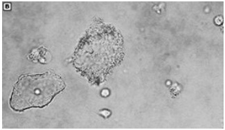
A O pH da vagina deve estar < 4.
B Os sintomas pioram no período pré-ovulatório.
C Os sintomas pioram após a relação sexual.
D Os sintomas costumam melhorar após a menstruação.
Questão 1891 · Diagnóstico · Transtornos do Humor · 4000182747O transtorno disfórico pré-menstrual (TDPM) é desencadeado pela oscilação dos níveis de esteroides sexuais que acompanham um ciclo menstrual ovulatório e ocorre cerca de uma semana antes do início da menstruação. São critérios diagnósticos CORRETOS para o TDPM:
A Depressão – irritabilidade – fogachos.
B Irritabilidade – sensibilidade nos seios – pensamentos acelerados.
C Retraimento social – dilatação abdominal – fotofobia.
D Ansiedade – retraimento social – cefaleia.
Questão 1892 · Anamnese · Ginecologia · Propedêutica · 4000182745Mulher de 64 anos vem à consulta com queixa de incontinência urinária. Nunca realizou tratamento. Ao exame, apresenta atro a vaginal e perda urinária durante esforços. Não se identi ca prolapso genital. Em relação à propedêutica mais adequada para esse caso, é CORRETO afirmar que:
A A realização de diário miccional permite caracterizar o perfil do hábito miccional e fornece informações objetivas que são úteis para a avaliação e o acompanhamento da resposta à intervenção.
B A avaliação urodinâmica está indicada, mesmo que a opção seja pelo tratamento clínico
C O teste do absorvente (“
D A avaliação do resíduo pós-miccional não faz parte da propedêutica básica da incontinência urinária.
Revisar: possível letra faltando em enunciado
Questão 1893 · Ginecologia · Propedêutica do casal inf értil · 4000182744Aline, 37 anos, hígida, nuligesta, procura atendimento no ambulatório de Ginecologia referindo desejo de gestar há 7 meses. Utiliza aplicativo para controle do período fértil e refere ter ciclos menstruais regulares, com duração média de 29 dias. Seu parceiro, Tiago, é saudável e tem uma lha de 2 anos, de seu relacionamento anterior. O casal mantém relações cerca de três vezes por semana. A respeito da investigação das causas de infertilidade, analisar os itens abaixo: I. A avaliação do fator tuboperitoneal pode ser realizada por histerossalpingogra a, histerossonogra a ou videolaparoscopia. II. O casal não tem indicação de investigação neste momento, visto que não completou 12 meses de tentativas de engravidar. III. Deve ser solicitada triagem para doenças infecciosas: VDRL, HBsAg, Anti-HCV, Anti-HIV, HTLV I/II e Clamídia. IV. Em virtude de Tiago ter uma filha pequena, não é necessária a realização de espermograma. Estão CORRETOS:
A Somente os itens I e II.
B Somente os itens I e III.
C Somente os itens I, III e IV.
D Somente os itens II, III e IV.
Questão 1894 · Vulvovaginites · Ginecologia · 4000182743Em relação à ora vaginal, numerar a 2ª coluna de acordo com a 1ª e, após, assinalar a alternativa que apresenta a sequência CORRETA: (1) Vaginose bacteriana. (2) Candidíase. (3) Tricomoníase. (4) Normal. (_) Odor que piora após a relação sexual. (_) Branca, inodora. (_) Disúria, prurido intenso, fissuras na vulva. (_) Grumosa, branca. (_) Amarela esverdeada, bolhosa. (_) pH 3,8-4,2. (_) Lactobacilos. (_) > 20% de clue cells. (_) Pseudo-hifas, diminuição dos lactobacilos. (_) Protozoários visíveis.
A 1 - 4 - 2 - 2 - 3 - 4 - 4 - 1 - 2 - 3.
B 2 - 2 - 2 - 3 - 4 - 2 - 1 - 3 - 2 - 1.
C 3 - 1 - 2 - 1 - 1 - 2 - 3 - 2 - 2 - 1.
D 3 - 4 - 1 - 2 - 1 - 3 - 1 - 2 - 1 - 3.
Questão 1895 · Tratamento · 4000182742Paciente com 30 anos e infertilidade primária, tentando gestar há 5 anos, vem à consulta com queixa de dismenorreia progressiva que melhora com medicação e cólica intestinal no período menstrual. Ao exame de toque vaginal apresenta lesão retrocervical em paramétrio esquerdo, sugestivo de endometriose profunda e na ressonância de pelve presença de endometrioma de 7cm em ovário esquerdo que atinge o ureter do mesmo lado, causando leve estenose deste ureter. Qual a conduta mais adequada a ser tomada inicialmente?
A Reprodução assistida pelo tempo decorrido de infertilidade.
B Reprodução assistida, pois pacientes com endometriose profunda não tem chances de gestação natural.
C Tratamento laparoscópico de endometriose profunda com ressecção dos focos e ooforoplastia à esquerda.
D Tratamento cirúrgico definitivo (pan histerectomia) pelo tempo de infertilidade e gravidade da doença.
Questão 1896 · Planejamento f amiliar · 4000182741Considerando-se os métodos abaixo, numerar a 2ª coluna de acordo com a 1ª, indicando respectivamente os que apresentam alternativa que apresenta a sequência CORRETA: (1) Diafragma. (2) Endoceptivo de levonorgestrel. (3) Pílula de progestogênio, mini-pílula. (4) DIU de cobre. (5) Contracepção hormonal combinada. (_) Paciente entre 25-30 anos, parto normal há 4 meses, amamentando exclusivamente. (_) Paciente jovem sem parceiro fixo com história prévia de gestação ectópica. (_) Paciente com 40 anos, vida sexual ativa, fumante desde os 20 anos, média de 1 carteira e meia por dia. (_) Paciente com retocistocele grau II. (_) Paciente com 45 anos, saudável, dor em cólica importante durante o período menstrual e queixas de fluxo intenso.
A 5 - 4 - 5 - 1 - 4.
B 3 - 5 - 1 - 2 - 5.
C 5 - 2 - 3 - 1 - 4.
D 2 - 4 - 3 - 5 - 5.
Questão 1897 · Adenomiose · 4000182740Paciente com 39 anos, sem lhos, vem à consulta referindo uxo menstrual aumentado nos últimos três meses. Traz ecogra a transvaginal sugestiva de adenomiose leve e difusa e hemoglobina de 12,2g/dL. Qual a conduta inicial correta no acompanhamento dessa paciente?
A Realizar calendário menstrual, reavaliar em 6 meses e suplementação preventiva de ferro.
B Prescrever análogo do GnRh por 6 meses e suplementação injetável de ferro.
C Internar para uso de suplementação de ferro injetável e tratamento cirúrgico (histerectomia)
D Prescrever análogo do GnRh, suplementação injetável de ferro e reavaliar em 30 dias.
Questão 1898 · Interpretação e conduta f rente as atipias citológicas · 4000182739Mulher de 29 anos traz citologia do colo do útero com resultado de lesão intraepitelial de baixo grau e ultrassonogra a com gestação de 24 semanas. Refere que citologia anterior foi negativa. Qual a conduta CORRETA?
A Realizar colposcopia com biópsia para confirmar diagnóstico nesta consulta atual.
B Retornar para realizar colposcopia no terceiro trimestre de gestação para diagnóstico.
C Tratar a paciente neste momento, já que não está no terceiro trimestre.
D Retornar para reavaliação clínica, já que a repetição dos exames está indicada após o parto.
Questão 1899 · Vacinas · 4000182738No Brasil, a recomendação do Ministério da Saúde com relação à vacinação contra o Papilomavirus Humano (HPV) para melhor eficácia da vacina é:
A As meninas e meninos devem ser vacinados logo após os 14 anos de idade completos
B A vacinação em gestantes deve ser realizada a partir do segundo trimestre.
C O esquema de vacinação em três doses deve ser realizado em mulheres imunossuprimidas.
D A vacinação deve ser realizada nas meninas após o início da atividade sexual.
Questão 1900 · Reserva ovariana · 4000182648Com o aumento da participação da mulher nas diversas atividades, a maternidade está sendo postergada para idades mais avançadas. Muitos casais nessas situações vêm uma di culdade maior na concepção. Como se poderia avaliar a reserva folicular ovariana por meio de dosagem hormonal?
A Progesterona no 23º dia.
B FSH no 3º dia do ciclo.
C Estrogênios no 14º dia.
D Androgênio mo 14º dia.
E FSH e LH no 14º dia.
Questão 1901 · Disgenesias gonadais · 4000182647Menina de 17 anos que ainda não apresentou menarca procurou o ambulatório que a considerou como portadora de amenorréia primária. Fez cariótipo que revelou 46XX, Tem 1,60 m de altura, mamas estádio de Turner 1, vulva de aspecto infantil, e identi cou-se vagina e útero. Ao exame ultrassonográ co não se observou os ovários. Frente a esse quadro, a hipótese diagnóstica é
A Sindrome de Down.
B Síndrole de Turner.
C Síndrome de Morris.
D disgenesia gonadal pura.
E Síndrome de Rokitansky.
Revisar: possível letra faltando em enunciado
Questão 1902 · Cistos mamários · 4000182646Mulher com 43 anos de idade, IV gesta III para e 1 abortamento, refere que no seu auto-exame que faz das mamas durante o banho, observou um “caroço” na mama esquerda. O médico solicitou uma ultrassonogra a que mostrou uma imagem anecoide regular de limites precisos, com reforço posterior, eixo horizontal maior que o sagital. Qual a hipótese mais provável?
A Carcinoma filodes.
B Fibroadenoma.
C Câncer de mama.
D Cisto complexo papilifero.
E Cisto mamário.
Questão 1903 · Ginecologia · 4000182645Conhecer a relação temporal da ovulação com os hormônios é fundamental para entender o processo reprodutivo, mas também, de aplicação prática no seguimento de uma mulher desejosa de engravidar. A esse respeito, assinale a alternativa correta.
A A ovulação ocorre 24-36 horas após o pico de estradiol e 10-12h após o pico de LH.
B A ovulação ocorre 24 -36 h horas antes do pico de FSH e 48h após o pico de LH.
C O pico de FSH e LH está associado temporalmente com o aumento dos níveis de estradiol, ocorrendo concomitante.
D O corpo lúteo só se formará e será visibilizado à ultrassonografia se houver a fecundação do óvulo.
E Quando se acompanha com curva térmica basal, o pico de FSH determina uma elevação de temperatura que persiste até a menstruação.
Questão 1904 · Ressonância magnética · 4000182644O câncer de mama ainda se caracteriza como o câncer ginecológico mais prevalente em todo mundo. Assim sendo, a propedêutica é fundamental para o tratamento precoce. Assinale a alternativa que contém o método de maior sensibilidade para o rastreamento do câncer de mamas.
A Ressonância magnética.
B Mamografia.
C Ultrassonografia mamária.
D Auto-exame das mamas.
E Exame clínico realizado por especialista.
Questão 1905 · Ginecologia · 4000182643Nuligesta com 32 anos foi no ambulatório de ginecologia queixando-se de algo estranho na vagina associada ao aumento na freqüência, urgência e urge-incontinância urinária. Ao exame ginecológico, observam-se os seguintes pontos de POP-Q (Classi cação de prolapso genital): Aa: - 3, Ba: - 3, C: +1, Ap: - 3, Bp: - 3, D: - 4. Colo sem alterações visíveis e ao toque não se identi ca massas pélvicas. Frente a esse quadro, qual a hipótese diagnóstica e a conduta ?
A Prolapso do útero e colpocleise.
B Prolapso do útero e histerectomia vaginal.
C Prolapso do útero e cirurgia de Manchester (parametropexia com amputação do colo do útero).
D Alongamento hipertrófico do colo do útero e cirurgia de Manchester (parametropexia com amputação do colo do útero).
E Alongamento hipertrófico do colo do útero e histerectomia vaginal.
Revisar: possível letra faltando em enunciado
Questão 1906 · Endometriose · 4000182642A endometriose é uma doença que, ainda em nossos dias, tem seu diagnóstico postergado às vezes por anos até que se possa iniciar a terapêutica adequada. Frente a essa afirmação, assinale a alternativa correta.
A O ginecologista deve evitar hipervalorizar queixas de dismenorreia, dores pélvicas acíclicas como possível endometriose para não criar a “endometriosefobia”, que muitas mulheres acabam experimentando.
B A presença de dados de exame físico como rugosidades enegrecidas no fundo de saco posterior ao exame especular sugerem a doença, ou útero com pouca mobilidade.
C O diagnóstico frente a uma suspeita clínica é facilmente confirmado por uma simples ultrassonografia pélvica, o que deveria evitar esse retardo no início de seu tratamento.
D A laparoscopia se constitui no exame fundamental e obrigatório que está indicado para se fazer o diagnóstico, além de permitir tratar ao mesmo tempo os casos de endometriose.
E O tratamento clínico é ineficaz no controle da dor pélvica e deve ser complementado com abordagens cirúrgicas.
Questão 1907 · Ginecologia · 4000182641O corrimento vaginal é uma das queixas mais comuns nos consultórios e envolve vários aspectos. Frente a esse tipo de queixa, assinale a alternativa correta.
A Nos casos de vaginose bacteriana, pode existir alteração na resposta imune local, o que expõe a mulher a maior risco de contrair outras infecções, como por exemplo, o HPV.
B A vaginose bacteriana apresenta maior prevalência em mulheres férteis do que nas inférteis e por isso se associam a maior risco de perda gestacional pós fertilização em vitro.
C A
D O tricomonas, agente frequente de corrimento vaginal, tem como característica não aderir à parede vaginal, o que acaba acarretando grande fluxo vaginal.
E A presença de
Questão 1908 · Climatério · 4000182640O acompanhamento da mulher no climatério tem tido um papel importantíssimo na qualidade de vida dessas mulheres. Nessa linha, é correto afirmar:
A o início da TH (terapia hormonal) em mulheres com mais de dez anos de pós-menopausa pode associar-se a uma melhora no risco de doença cardiovascular.
B a terapia hormonal na peri e pós menopausa inicial deve respeitar o conceito de “janela de oportunidade” e tem se mostrado altamente eficaz.
C os sintomas vasomotores acometem de 30-50% das mulheres nessa fase e justificam, portanto, o tratamento universal.
D as indicações para tratamento de sintomas da síndrome geniturinária são de menor importância, às vezes até sendo desconsideradas em benefício da importância das fraturas osteoporóticas.
E as mulheres, assim como seus médicos, devem ter em mente que ao iniciarem a TH (terapia hormonal), essa deve permanecer continuadamente até a senilidade.
Questão 1909 · Sangramento uterino anormal · 4000182639Mulher de 37 anos com quadro de sangramento uterino anormal (SUA), caracterizado por alteração para mais em um dos parâmetros da menstruação, isto é, seja na quantidade, na duração ou na frequência, trazendo repercussões físicas, emocionais, sociais, materiais e na qualidade de vida das mulheres. Baseando-se nesse quadro, assinale a alternativa correta.
A O tratamento não deve levar em conta a etiologia.
B Nos casos de instabilidade hemodinâmica, impõe-se investigação diagnóstica prévia à instituição terapêutica.
C Nos casos agudos, a curetagem uterina se torna contra-indicada.
D Apesar da possível gravidade que o quadro possa tomar, as condutas devem levar em conta o desejo reprodutivo da mulher.
E O tratamento medicamentoso é secundário à opção cirúrgica.
Questão 1910 · Vulvovaginites · Ginecologia · Úlceras genitais · 4000182582Em relação às doenças sexualmente transmissíveis, assinale a alternativa correta.
A A infecção por clamídia é mais bem tratada com doxiciclina em dose única.
B Uma vez confirmada a presença de donovanose, o tratamento do parceiro sexual é mandatório e deve ser realizado precocemente.
C O quadro clínico do herpes genital inicia-se, em geral, com ulceração de borda plana ou hipertrófica, bem delimitada, com fundo granuloso, de aspecto vermelho vivo e de sangramento fácil.
D O diagnóstico da sífilis latente é realizado por meio de testes imunológicos.
E A manifestação clínica mais comum do linfogranumoma venéreo é no homem, no frênulo e sulco balanoprepucial; na mulher, na fúrcula e face interna dos pequenos e grandes lábios.
Questão 1911 · Nódulo mamário · Core biópsia · 4000182528Mulher de 44 anos realizou mamogra a de rotina que identi cou em quadrante inferolateral de mama direita, nódulo irregular, mal definido, medindo 1 cm. A ultrasso- nogra a revelou nódulo sólido, verticalizado, com sombra acústica posterior. O procedimento mais adequado para abordagem do nódulo mamário da paciente da questão anterior é
A PAAF.
B BAG (core biopsy).
C BAV (mamotomia).
D ressecção segmentar.
E mastectomia.
Questão 1912 · BIRADS 4 · 4000182527Mulher de 44 anos realizou mamogra a de rotina que identi cou em quadrante inferolateral de mama direita, nódulo irregular, mal definido, medindo 1 cm. A ultrassonogra a revelou nódulo sólido, verticalizado, com sombra acústica posterior. Assinale a alternativa que indica a categoria de BI-RADS.
A 0
B 1
C 2
D 3
E 4
Questão 1913 · Terapia hormonal · 4000182525M.M.A., 54 anos, relata sintomas vasomotores intensos há cerca de 2 anos. Histerectomizada há 8 anos. Mãe teve fratura por osteoporose e doença cardiovascular. Paciente refere ter temor ao câncer mamário. Sem história de câncer de mama pessoal ou familiar. Assinale a alternativa que indica o fármaco recomendado para a mulher nesse caso.
A Progestagênio via oral.
B Progestagênio tópico.
C Tamoxifeno via oral.
D Estrogênio via vaginal.
E Estrogênio via oral.
Questão 1914 · Estrogênio · 4000182524A diagnóstico da síndrome genitourinária da menopausa (SGM) é essencialmente clínico, sendo estabelecido a partir da anamnese e do exame físico. O ressecamento vaginal é o sintoma mais comumente relatado. A respeito dos sintomas, assinale a alternativa que demonstra o hormônio primordialmente de ciente nesses casos.
A Testosterona.
B Prolactina.
C Estrogênio.
D Progesterona.
E FSH.
Revisar: possível letra faltando em enunciado
Questão 1915 · Critérios diagnósticos · 4000182523A síndrome dos ovários policísticos (SOP) afeta em torno de 10% das mulheres em idade reprodutiva, e é a principal causa de infertilidade por anovulação. Assinale a alternativa que relata as caracteristicas ultrassonográ cas corretas de preenchimento para o critério diagnóstico de ovários policísticos.
A Presença de 12 ou mais folículos < 10 mm em pelo menos 1 dos ovários.
B Volume ovariano de pelo menos 1 ovário > 12 cc.
C As pacientes podem estar em uso de anticoncepcional hormonal oral durante o período do exame.
D Presença de 10 ou mais folículos < 12 mm em ambos os ovários.
E Volume ovariano de ambos os ovários > 10 cc.
Revisar: possível letra faltando em enunciado
Questão 1916 · Diagnóstico · Critérios diagnósticos · 4000182522A síndrome dos ovários policísticos (SOP) afeta em torno de 10% das mulheres em idade reprodutiva, e é a principal causa de infertilidade por anovulação. Assinale a alternativa que demonstra como é feito o diagnóstico da SOP.
A O diagnóstico é sempre feito pela história clínica e pelo exame físico.
B Para o diagnóstico, é necessária a presença de 2 dos seguintes critérios: oligo ou anovulação, sinais clínicos ou bioquímicos de hiperandrogenismo e presença de ovários policísticos em exame de imagem.
C Exames laboratoriais não são necessários, independentemente da situação.
D O dignóstico é feito pela presença de irregularidade menstrual, associada a quadro de obesidade.
E Resistência insulínica e hemoglobina glicada são necessárias para diagnóstico.
Questão 1917 · Amenorreia secundária · 4000182521A amenorreia secundária é a ausência de menstruação por, pelo menos, seis meses em mulheres com ciclos irregulares ou por um período equivalente a 3 ciclos menstruais em pacientes que, anteriormente, menstruavam de forma regular. Em relação a essa patologia, assinale a alternativa correta
A Os níveis elevados de prolactina, mesmo que discretos, confirmam o diagnóstico de hiperprolactinemia.
B Um teste de progestina positivo confirma a anovulação estrogênica crônica em pacientes nas quais o beta HCG foi negativo e não houve alterações em níveis de prolactina e TSH.
C O teste de estrogênio e progesterona negativos e FSH normal indicam falência ovariana.
D A dosagem das gonadotrofinas deve ser realizada imediatamente após o teste de estrogênio e progestina.
E Estresse e excesso de atividade física não são fatores de risco.
Questão 1918 · Tratamento não hormonal dos sintomas climatéricos · Ovulatório Distúrbios · 4000182520O sangramento uterino disfuncional con figura um quadro clínico frequente, com prevalência maior no início dos ciclos menstruais e na proximidade da menopausa (climatério). Para o controle desse sangramento crônico no período de climatério, dentre os tratamentos a seguir, indique o mais adequado.
A DIU de cobre.
B Tibolona entre o 5º e o 15º dia do ciclo.
C Progestógeno oral entre o 5º e o 25º dia do ciclo.
D Estrogênios em doses crescentes do 5º ao 25º dia do ciclo.
E Progestógeno oral entre 15º e o 25º dia do ciclo.
Questão 1919 · Tratamento do sangramento uterino anormal de causa não estrutural · 4000182519DIU liberador de levonorgestrel M.B.R., 37 anos, tabagista, referindo ciclos menstruais com hipermenorragia e dismenorreia, vem ao consultório solicitando orientação com relação a método anticoncepcional. Assinale a alternativa que indica a prescrição mais adequada.
A Dispositivo intrauterino de cobre.
B Dispositivo intrauterino com progestina.
C Anticoncepcional hormonal oral combinado em regime de uso contínuo.
D Anticoncepcional hormonal oral combinado em regime de uso com pausa.
E Anel vaginal.
Questão 1920 · Rotura prematura de membranas ovulares RPM · Ginecologia · Conduta na RPM · 4000182513R.F.G., 30 anos, GII PI 1N A0, IG 33 semanas, sem comorbidades, deu entrada no PSO referindo perda de líquido via vaginal em grande quantidade, confirmado pelo exame especular. Nega dor tipo contrações uterinas. Ao toque vaginal: colo 1 polpa, grosso e posterior. Cardiotocogra a normal. Ao ultrassom: ILA normal. Frente ao caso, assinale a conduta correta.
A Alta com orientações de repouso e retorno se contrações uterinas.
B Internação para interrupção da gestação via alta, logo após a corticoterapia.
C Internação para interrupção da gestação via baixa, logo após a corticoterapia.
D Internação para exames, corticoterapia, controle de vitalidade e indução do trabalho de parto com 34 semanas de idade gestacional.
E Antibioticoterapia via oral, controle de vitalidade e alta para programação de parto após 37 semanas de idade gestacional.
Questão 1921 · Ginecologia · Ultrassonograf ia no primeiro trimestre · 4000182509P.S., 23 anos, foi a consulta de pré-natal em que foi solicitado exame morfológico de 1o trimestre. No dia do exame, o CCN (comprimento cabeça-nádega) mediu 48.3 mm, com biometria compatível para 11 semanas e 4 dias. O osso nasal foi identificado. Com base nesse caso, e sabendo-se da importância e metodologia de avaliação do exame morfológico de 1º trimestre, assinale a alternativa correta.
A Não é possível avaliar o risco de trissomias, neste caso, por CCN estar abaixo de 50 mm.
B Uma medida de translucência nucal de 2 mm indica risco alto pra cromossomopatias.
C No exame morfológico de 1o trimestre, o doppler de artérias uterinas ainda não tem importância.
D A presença de osso nasal aumenta risco para cromossomopatias.
E Não há de se avaliar dopplervelocimetria de artérias umbilicais nessa fase.
Questão 1923 · Ginecologia · Úlceras inf ecciosas de causa sexualmente transmissível · 4000182420Jovem, de 30 anos de idade, esteve em viagem na Índia há 2 meses. Refere aparecimento de 2 úlceras na região inguinal direita há 4 semanas. Tais úlceras não são acompanhadas de dor local. Relata que, antes das úlceras, apresentou no mesmo local nodulações. Não apresenta comorbidades nem possui outras queixas. Ao exame físico, visualizada a presença de 2 ulcerações em espelho, de borda plana, bem delimitadas e com fundo granuloso vermelho vivo e sangramento fácil. Indique os agentes causadores de úlceras indolores, como as do caso:
A Treponema pallidum, Klebsiella granulomatis, Clamydia trachomatis.
B Herpes simplex vírus, Haemophilus ducreyi, Clamydia trachomatis.
C Klebsiella granulomatis, Clamydia trachomatis, Herpes simplex vírus.
D Treponema pallidum, Klebsiella granulomatis, Haemophilus ducreyi.
Questão 1924 · Donovanose · Ginecologia · 4000182419Jovem, de 30 anos de idade, esteve em viagem na Índia há 2 meses. Refere aparecimento de 2 úlceras na região inguinal direita há 4 semanas. Tais úlceras não são acompanhadas de dor local. Relata que, antes das úlceras, apresentou no mesmo local nodulações. Não apresenta comorbidades nem possui outras queixas. Ao exame físico, visualizada a presença de 2 ulcerações em espelho, de borda plana, bem delimitadas e com fundo granuloso vermelho vivo e sangramento fácil. Indique o tratamento inicial preconizado para o caso:
A Doxiciclina 100mg, a cada 12 horas por pelo menos 21 dias ou até o desaparecimento das lesões.
B Azitromicina 2g, via oral, dose única.
C Penicilina Benzatina, 2,4 milhoes de unidades, intramuscular, dose única.
D Aciclovir, 200mg, via oral, a cada 4 horas por 5 dias.
Questão 1925 · Donovanose · Ginecologia · 4000182418Jovem, de 30 anos de idade, esteve em viagem na Índia há 2 meses. Refere aparecimento de 2 úlceras na região inguinal direita há 4 semanas. Tais úlceras não são acompanhadas de dor local. Relata que, antes das úlceras, apresentou no mesmo local nodulações. Não apresenta comorbidades nem possui outras queixas. Ao exame físico, visualizada a presença de 2 ulcerações em espelho, de borda plana, bem delimitadas e com fundo granuloso vermelho vivo e sangramento fácil. Diante do quadro, indique a principal hipótese diagnóstica:
A Cancro mole.
B Sífilis.
C Lesão herpética.
D Donovanose.
Questão 1926 · Adolescentes · Sexualidade · 4000182392Adolescente do sexo feminino, de 15 anos de idade, procura unidade básica de saúde, pois deseja iniciar o uso de um método anticoncepcional. Relata ser cisgênero e heterossexual. Iniciou sua vida sexual há 3 meses, com parceiro xo. Quando questionada sobre o uso de preservativo, referiu que utiliza desde a sua primeira relação, pois teve uma prima que morreu em decorrência de uma IST. Sobre os aspectos éticos envolvidos na realização da consulta e na prescrição de contracepção para esta paciente, assinale a alternativa correta:
A Como a paciente é menor de idade, o médico deverá contatar seus responsáveis para os notificar sobre o conteúdo da consulta.
B Por ser menor de idade, é uma infração ética atender a paciente desacompanhada de um responsável legal.
C O médico deve buscar o conselho tutelar e notificar o caso, pois a paciente demonstra não saber como lidar com as questões de sexualidade.
D Por ser menor de idade, a paciente não pode realizar aconselhamento em saúde sexual e reprodutiva sem consentimento do responsável legal.
E A paciente tem direito a sigilo e confidencialidade de sua consulta, podendo ser atendida sem a presença de um responsável legal.
Questão 1927 · Exames complementares · Prevenção de gravidez · Quimioprof ilaxia · 4000182389Mulher de 28 anos de idade procura unidade de emergência, relatando história de violência sexual. Refere que estava em uma festa na noite anterior e que, após a ingesta de uma bebida, não se lembra mais do que aconteceu. Após isto, relatou que acordou em um quarto de motel sozinha, apresentando sangramento genital e equimoses no pescoço. Após o acolhimento do caso de forma empática e humanizada, além de encaminhar a paciente para seguimento do cuidado de maneira multidisciplinar com envolvimento de assistente social, enfermagem e psicologia, quais são as condutas que devem ser tomadas pelo médico?
A Realizar o exame ginecológico da paciente, solicitar sorologias para ISTs, prescrever anticoncepção de emergência, notificar o caso e iniciar a profilaxia para HIV, hepatite B, sífilis, clamídia e gonorreia.
B Realizar o exame ginecológico, prescrever anticoncepção de emergência, notificar o caso após a realização do boletim de ocorrência da vítima e iniciar a profilaxia para HIV, hepatites B e C, sífilis, clamídia e HPV.
C Realizar o exame ginecológico, solicitar sorologias para ISTs, prescrever anticoncepção de emergência apenas se a paciente não utilizar anticoncepcional oral e iniciar a profilaxia para HIV e hepatite B.
D Solicitar as sorologias para ISTs, prescrever anticoncepção de emergência apenas se a paciente não utilizar contraceptivo hormonal, notificar o caso e iniciar profilaxia para HIV, hepatite B, sífilis, clamídia e gonorreia.
E Realizar exame ginecológico, solicitar as sorologias para ISTs, notificar o caso após a realização do boletim de ocorrência da vítima e iniciar a profilaxia para HIV, hepatite B e sífilis.
Questão 1928 · Anamnese e exame f ísico · 4000182388Mulher de 28 anos de idade procura unidade de emergência, relatando história de violência sexual. Refere que estava em uma festa na noite anterior e que, após a ingesta de uma bebida, não se lembra mais do que aconteceu. Após isto, relatou que acordou em um quarto de motel sozinha, apresentando sangramento genital e equimoses no pescoço. Assinale a alternativa que contém um questionamento pertinente para o cuidado em saúde deste caso, que deve ser feito na avaliação inicial da paciente na UBS:
A “Você utiliza algum método anticoncepcional?”
B “Você já registrou boletim de ocorrência na polícia?”
C “Qual era o tipo de bebida que você ingeriu na noite anterior?”
D “Você perguntou se alguém viu com quem você saiu da festa?”
E “Você utilizou algum tipo de droga ilícita na noite anterior?”
Questão 1929 · Biópsias da mama · BIRADS · 4000182383Mulher de 64 anos de idade comparece a unidade básica de saúde para entrega de resultado de mamogra a de rastreamento. O exame apresentou microcalci cações de 0,4cm em mama direita, compatíveis com categoria
A Indicar realização de ressecção segmentar da mama direita.
B Solicitar punção aspirativa por agulha fina (PAAF) guiada por ultrassonografia.
C Indicar realização de mamotomia guiada por estereotaxia.
D Solicitar biopsia por método
E Indicar realização de mastectomia da mama direita.
Questão 1930 · Contraindicações · 4000182382Mulher de 22 anos idade comparece em consulta na unidade básica de saúde, desejando fazer uso de método contraceptivo. Durante anamnese, informa ter história prévia de enxaqueca com aura desde a adolescência. Assinale o método contraceptivo que NÃO deve ser indicado para esta paciente:
A Implante liberador de etonogestrel
B Sistema intrauterino de levonorgestrel
C Dispositivo intrauterino de cobre
D Anel vaginal de etinilestradiol e etonogestrel
E Pílula anticoncepcional de desogestrel
Questão 1931 · Características · Diagnóstico · 4000182381Mulher de 22 anos de idade comparece à unidade de emergência com queixa de lesão vulvar dolorosa há 4 dias. Relata que teve relação sexual desprotegida anteriormente ao início do quadro. Ao exame físico, apresenta pequenas lesões ulcerosas agrupadas na vulva, com fundo limpo e dolorosas à palpação (imagem). Nega episódios semelhantes prévios. Qual é o diagnóstico?
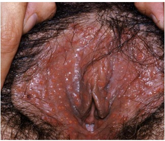
A Herpes genital
B Sífilis
C Cancro mole
D Linfogranuloma venéreo
E Donovanose
Questão 1932 · Fatores de risco · Fatores de risco · 4000182380Mulher de 62 anos de idade, nuligesta, com história prévia de obesidade (índice de massa corpórea de 33kg/m2 ) e neoplasia de mama prévia há 16 anos, tratada com mastectomia. Comparece à unidade básica de saúde com queixa de sangramento pósmenopausa. Durante a anamnese, negou uso de terapia de reposição hormonal ou tamoxifeno. Apresentou ultrassonogra a transvaginal com eco endometrial de 5mm. Assinale a alternativa correta sobre o caso apresentado:
A A hiperplasia endometrial atípica é uma das causas de sangramento pósmenopausa, mas está associada a câncer de endométrio em menos de 1% dos casos.
B A paciente apresenta os seguintes fatores de risco para o câncer de endométrio: nuliparidade, obesidade e status pós-menopausa.
C A hiperplasia endometrial típica está frequentemente associada ao câncer de endométrio, com coexistência de carcinoma endometrial invasor em 25% dos casos.
D Caso a paciente fizesse uso de tamoxifeno para tratamento da neoplasia de mama, não seria necessária biópsia endometrial.
E Como a ultrassonografia transvaginal evidenciou um eco endometrial maior que 2mm, a paciente não tem indicação de investigação endometrial.
Questão 1933 · Estadiamento · Diagnóstico · Histopatologia · 4000182379Mulher de 32 anos de idade, nuligesta, sem história de comorbidades prévias, comparece a consulta ginecológica de rotina na unidade básica de saúde. Apresenta resultado de exame citopatológico do colo uterino com resultado de células escamosas atípicas de significado indeterminado (ASC-US). Qual é a conduta?
A Encaminhar a paciente para realização de conização.
B Encaminhar a paciente para realização de colposcopia.
C Realizar avaliação do canal endocervical.
D Repetir exame citopatológico em 12 meses.
E Repetir exame citopatológico em 6 meses.
Questão 1934 · Falência ovariana prematura · Ginecologia · Reserva ovariana · 4000182282Mulher de 32 anos, em acompanhamento no ambulatório de infertilidade, apresenta diagnóstico de baixa reserva ovariana. É diabética do tipo 1. Nega cirurgias prévias. Na história familiar, sua mãe teve a menopausa aos 39 anos. A ultrassonogra a transvaginal demonstra cisto ovariano anecoico de 4cm. Nesse caso, o fator de risco para baixa reserva ovariana é:
A menopausa materna precoce
B diabetes
C ovário com cisto anecoico
D idade superior a 30 anos
Questão 1935 · Aborto legal no Brasil · 4000182281Jovem de 24 anos chega ao serviço de saúde relatando estar grávida de 8 semanas, após ter sofrido violência sexual, e desejando interromper a gravidez. Não realizou nenhum boletim de ocorrência e não possui ordem judicial, tendo apenas passado por atendimento em unidade de saúde na época da violência. Ela deve ser informada de que tem direito ao aborto:
A após início de ação penal e notificação policial
B mediante realização de boletim de ocorrência
C com apresentação de autorização judicial
D sem procedimento policial ou judicial
Questão 1936 · Def iciência esf incteriana intrínseca · Ginecologia · 4000182280Mulher, com queixa de incontinência urinária, apresentou exame urodinâmico, evidenciando perda de pressão à manobra de Valsava de 20cmH₂O. De acordo com esses achados, o provável diagnóstico é:
A bexiga neurogênica
B defeito esfincteriano
C hipermobilidade uretral
D hiperatividade detrusora
Questão 1937 · Interpretação e conduta f rente as atipias citológicas · 4000182279Mulher de 40 anos comparece ao ambulatório de patologia cervical com laudo de citologia, indicando células glandulares atípicas, não podendo afastar lesão de alto grau. A colposcopia é satisfatória e normal. Nesse caso, a conduta recomendada é:
A colher nova citologia e realizar ultrassonografia transvaginal
B solicitar exames pré-operatórios e indicar conização clássica
C prescrever estrogênio tópico e repetir a colposcopia após o uso
D curetar o canal cervical e iniciar antibioticoterapia polimicrobiana
Questão 1938 · Rastreamento mamográf ico · 4000182278Idosa de 76 anos comparece à consulta, solicitando informações de quando deve realizar nova mamogra a. A última foi há dois anos. Deve-se explicar que nessa faixa etária, em relação ao rastreamento para câncer de mama, a recomendação do Ministério da Saúde é de:
A aumentar o intervalo de rastreamento
B fazer rastreamento por ressonância
C oferecer rastreamento opcional
D interromper o rastreamento
Questão 1939 · Tratamento · 4000182277Mulher de 40 anos, com desejo de gestar, apresenta sangramento irregular intermitente e procura unidade básica de saúde com laudo histopatológico, indicando hiperplasia endometrial com atipias. Uma opção terapêutica para esse diagnóstico é:
A sistema intrauterino de levonorgestrel
B ablação endometrial histeroscópica
C morcelação uterina laparoscópica
D histerectomia subtotal abdominal
Questão 1940 · Amenorreia primária de causa uterinavaginal · Ginecologia · 4000182276Adolescente de 17 anos, em amenorreia primária, comparece à unidade básica de saúde com ultrassonogra a evidenciando ausência de útero. As características sexuais secundárias são normais. Um provável diagnóstico é:
A hiperplasia adrenal congênita
B agenesia de ductos de Müller
C disgenesia gonadal pura
D mutação de gene SRY
Questão 1941 · Estadiamento · Tratamento · 4000182275Mulher de 38 anos realizou biópsia de colo uterino que evidenciou carcinoma escamoso. Ao examinála, verifica-se uma lesão de 6cm limitada ao colo, não acometendo a vagina. A ressonância magnética de pelve não evidenciou comprometimento parametrial ou linfonodal. A indicação terapêutica é de:
A laparotomia exploradora
B histerectomia radical
C conização clássica
D radioquimioterapia
Questão 1942 · Tratamento · 4000182274Mulher de 33 anos, com dismenorreia desde a menarca e diagnóstico de endometriose, encontra-se em uso de contraceptivos hormonais. Apesar de bom controle da dor, deseja interromper o uso do medicamento para engravidar. A ressonância de pelve evidenciou cisto ovariano característico de endometrioma de aproximadamente 8cm. Nesse caso, deve-se:
A realizar drenagem guiada por ultrassonografia
B manter contraceptivo até regressão do cisto
C indicar cistectomia videolaparoscópica
D iniciar medicação antigonadotrópica
Questão 1943 · Ginecologia · Abordagem da paciente com queixa de úlcera genital · Abordagem sindrômica · 4000182273Para tratar úlceras genitais na suspeita de infecção sexualmente ativa, sem exames laboratoriais disponíveis, algumas características devem ser levadas em conta para o manejo da lesão, segundo o uxograma do Ministério da Saúde. Uma delas é a evidência de:
A lesões vesiculosas ativas
B sintomas dolorosos incipientes
C linfonodos inguinais aumentados
D bordas sangrativas à manipulação
Questão 1944 · Anticoncepção em condições especiais · 4000182132Homem trans, 32 anos, hipertenso, comparece para consulta de rotina em UBS. Refere-se relacionar sexualmente com homem cisgênero, e atualmente está em uso regular de contraceptivo oral combinado (COC) contendo levonorgestrel (0,15 mg) + etinilestradiol (0,03 mg) para controle de sangramento vaginal volumoso. Refere ter iniciado o uso de testosterona em outro serviço há 2 meses. Exame físico: sem lesões ou achados anormais ao exame da genitália. Qual a melhor conduta clínica neste momento?
A Trocar para anel ou adesivo contraceptivo e suspender a testosterona.
B Prescrever análogo de GnRH e suspender temporariamente a testosterona.
C Substituir o COC por progestágeno isolado e manter a testosterona.
D Suspender o COC e manter apenas a testosterona.
Questão 1945 · Interpretação e conduta f rente as atipias citológicas · 4000182131Mulher, 33 anos, G2PC2, último parto há 3 anos, realizou última coleta de colpocitologia durante o último pré- natal, sem anormalidades citológicas de acordo com a informação da paciente. Refere ciclos menstruais regulares em uso de contraceptivo hormonal injetável mensal. Comparece para checar o resultado da colócitologia que evidencia amostra satisfatória com epitélio metaplásico e cilíndrico e anormalidades em células glandulares sem outras especificações. Qual a conduta mais adequada para esta paciente?
A Realizar cosposcopia.
B Realizar ultrassom transvaginal.
C Solicitar biologia molecular.
D Repetir colpocitologia
Questão 1946 · Tratamento · Ginecologia · 4000182130Nuligesta, 24 anos, há um ano tenta engravidar sem sucesso. Apresenta ciclos menstruais de 27 a 29 dias, com uxo normal. Tem atividade sexual regular, com relação pênisvagina quatro vezes na semana. Marido, 28 anos, tem três lhos de outro relacionamento e nega comorbidades. Exames complementares: FSH 5,4 mUl/mL (2,8 a 14,4 mUl/mL), TSH ovários normais e contagem de folículos antrais de 9 em cada ovário, imagem hipoecogênica alongada em topografia de anexo esquerdo. Histerossalpingografia com cavidade uterina normal, trompa direita filiforme e trompa esquerda dilatada, sem passagem de contraste bilateralmente. Espermograma com volume de 2mL, 16 milhões de espermatozoides/mL, 50% vivos, 30% de motilidade progressiva e 5% normais (critério de Kruger). Qual é o melhor tratamento para esse casal?
A Ciclo de fertilização
B Coito programado após indução da ovulação.
C Ciclo de fertilização
D Inseminação intrauterina após indução da ovulação.
Questão 1947 · Ginecologia · Diagnóstico · Classif icação · 4000182129Mulher, 53 anos, com antecedente de 5 partos vaginais prévios e menopausa há 2 anos. Procura o serviço médico com sensação de peso no períneo e de uma bola que sai pela vagina. O exame ginecológico identi cou um prolapso descrito segundo o instrumento POPQ (Pelvic Orgean Prolapse Quanti cation) conforme mostrado na figura a seguir. Quais os diagnósticos podem ser feitos de acordo com as anotações presentes no POP-Q?
A Prolapso de parede posterior, rotura perineal, histerectomia prévia.
B Prolapso de parede anterior, prolapso de cúpula vaginal, histerectomia prévia.
C Prolapso de parede posterior, prolapso uterino grau III, rotura perineal.
D Prolapso de parede anterior, prolapso uterino grau II, prolapso de parede posterior.
Questão 1948 · Tratamento · 4000182126Mulher, 62 anos tratada de câncer de mama há 4 anos, em uso de tamoxifeno 20 mg via oral ao dia. Apresenta sangramento vaginal de pequeno volume há 2 meses. A ultrassonogra a transvaginal identi cou eco endometrial irregular com 9 mm de espessura, sem outras alterações. A histeroscopia diagnóstica e a biópsia dirigida foram compatíveis com hiperplasia endometrial atípica. Qual a melhor conduta?
A Repetir a ultrassonografia em 3 meses.
B Suspender o tamoxifeno e introduzir inibidor da aromatas
C Histerectomia e salpingooforectomia bilateral.
D Progesterona via oral por 6 meses.
Questão 1949 · Dor mamária mastalgia · 4000182125Mulher, 27 anos, G1P1, usuária de DIU de cobre, menstruando regularmente. Queixa-se de dor intensa em quadrante supero lateral da mama direita, há 3 meses, com piora importante pré-menstrual e melhora parcial após. Está preocupada com histórico de câncer na família, pois tia avó materna teve câncer de mama aos 68 anos. Exame físico: mamas sem nódulos ou lesões. Cadeias linfonodais sem alterações. Dor à Ultrassonogra a de mamas realizadas há 10 dias: cistos mamários bilaterais, maior diâmetro 0,5 cm, BI RADS:2. Qual a melhor conduta?
A Retorno com ultrassonografia de mamas em 6 meses.
B Solicitar ressonância magnética das mamas.
C Tranquilizar e prescrever anti-inflamatório tópico.
D Teste terapêutico com tamoxifeno 20 mg/dia.
Questão 1950 · Câncer de vulva · 4000182124Mulher de 68 anos, queixa-se de prurido vulvar há cerca de 8 meses. A inspeção genital está representada na imagem. Diante do quadro clínico e do exame físico, qual a melhor conduta?
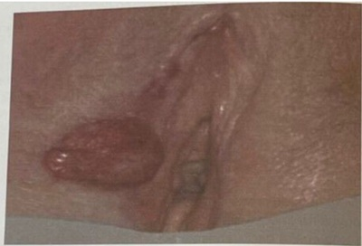
A Exérese completa com margem de 3 mm.
B Biópsia incisional da borda da lesão.
C Corticosteroide de alta potência.
D Antibioticoterapia com penicilina benzatina.
Questão 1951 · Sangramento uterino anormal · 4000182123Mulher, 30 anos, G2P2, com queixa de sangramento uterino anormal há 5 anos. Não apresenta comorbidades e nem faz uso de medicações. Marido fez vasectomia. No prontuário está descrito como sangramento de causa endometrial. Qual alternativa contém a descrição do ciclo e do achado da ultrassonogra a transvaginal (USTV) mais prováveis para este caso?
A Ciclo irregular com aumento de volume e USTV com espessamento endometrial difuso.
B Ciclo regular com sangramento prolongado e USTV com perda junção miométrio endométrio.
C Ciclo regular com aumento de volume e USTV sem alterações.
D Ciclo irregular com sangramento prolongado e USTV sem alterações.
Questão 1952 · Ginecologia · Úlceras inf ecciosas de causa sexualmente transmissível · 4000182113Primigesta, 21 anos, 26 semanas de gestação, procura o pronto atendimento referindo lesões genitais muito dolorosas. Informa que as lesões apareceram há três dias, mas não observou vesículas previamente ao aparecimento de lesões. Nega episódios semelhantes no passado. Nega queixas em relação à gravidez. Ao exame, observa-se a imagem a seguir: Inspeção vulvar: lesões genitais Além do alívio da dor e orientações de higiene, que tratamento deve ser prescrito para essa gestante?
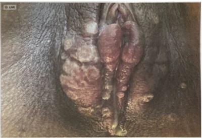
A Aciclovir 400 mg 8/8 horas via oral.
B Ceftriaxone 500 mg IM dose única.
C Azitromicina 1 grama via oral dose única.
D Penicilina benzatina 2400.000 UI por duas semanas.
Questão 1953 · Mastite lactacional · 4000181880O agente responsável pela maioria dos casos de mastite puerperal é:
A Staphylococcus lugdunensis.
B Staphylococcus aureus.
C Bacteroides fragilis.
D Corynebacterium sp.
E Escherichia coli.
Questão 1954 · Ósseas · Ginecologia · 4000181879Critérios diagnósticos de osteoporose critério densitométrico eou critério clínico Sobre a densitometria óssea, é correto afirmar:
A O Z-score é a pontuação da densidade óssea do paciente comparada com a de adultos jovens do mesmo sexo e etnia.
B O T-score é a pontuação da densidade óssea do paciente comparada com a de pessoas da mesma faixa etária, sexo e etnia.
C Para mulheres pós-menopáusicas, o Z-score deve ser utilizado.
D Para mulheres pré-menopáusicas, o T-score deve ser utilizado.
E Os ossos avaliados costumam ser o quadril e a coluna vertebral e, em casos muito específicos, o rádio.
Questão 1955 · Ginecologia · Tratamento · 4000181878São medicações utilizadas no tratamento da bexiga hiperativa, exceto:
A Mirabegrona.
B Solifenacina.
C Estrogênio tópico.
D Oxibutinina.
E Pilocarpina.
Questão 1956 · Interações medicamentosas · 4000181877Uma paciente com diagnóstico de epilepsia em uso de fenitoína 100mg de 08/08 horas, com bom controle das crises, deseja saber sobre métodos contraceptivos. Considerando as comorbidades da paciente e a medicação em uso, a melhor opção contraceptiva é:
A Dispositivo intrauterino de cobre.
B Contraceptivo transdérmico.
C Anticoncepcional oral combinado.
D Anel vaginal anticoncepcional.
E Orientar abstinência sexual.
Questão 1957 · Tratamento · Ginecologia · Classif icação · 4000181876Uma mulher de 64 anos queixa-se de “bola e peso na vagina” há 1 ano. Ao exame ginecológico, foi evidenciando prolapso genital com os seguintes valores de acordo com a quanti cação de prolapso de órgão pélvico (POP-Q): Aa +3; Ba +8, C +8, HG 4,5, CP 3,5, CVT 8, Ap +3, Bp +8, D -- O estádio do prolapso e o tratamento mais adequado são:
A Estádio III – Histerectomia vaginal.
B Estádio III – Cirurgia de Manchester.
C Estádio IV – Cirurgia de Le Fort.
D Estádio IV – Colpossacrofixação.
E Estádio III – Sling transobturatório.
Questão 1958 · Interpretação e conduta f rente as atipias citológicas · 4000181875Uma paciente de 27 anos apresenta um laudo de colpocitologia oncótica com células escamosas atípicas de significado indeterminado, possivelmente não neoplásicas (ASC-US). Segundo as Diretrizes Brasileiras para o Rastreamento do Câncer do Colo do Útero, a conduta subsequente é:
A Repetir citopatológico em 6 meses.
B Repetir citopatológico em 12 meses.
C Realizar colposcopia.
D Realizar conização.
E Realizar rastreio citológico trienal.
Questão 1959 · Fisiopatologia · 4000181854A necrobiose asséptica, também conhecida como degeneração rubra ou vermelha, corresponde ao infarto hemorrágico do leiomioma. Esse tipo de degeneração ocorre, principalmente, durante o uso de
A TH combinada do climatério.
B gestrinona.
C leuprorrelina.
D testosterona.
Questão 1960 · Exames complementares · 4000181853O exame mais sensível para mapear miomas, antes da miomectomia, é
A a ultrassonografia pélvica.
B a ultrassografia endovaginal.
C a tomografia computadorizada da pelve.
D a ressonância nuclear magnética da pelve.
Questão 1961 · Ginecologia · Tratamento · 4000181852Adolescente de 17 anos, com dismenorreia primária, moderada a grave, sem alterações do uxo menstrual e sem sexarca tem como primeira escolha o tratamento com os
A anticoncepcionais hormonais combinados em esquema estendido.
B anti-inflamatórios não hormonais durante a menstruação.
C antiespasmódicos associados aos analgésicos comuns, durante a menstruação.
D antiespasmódicos associados aos anti-inflamatórios não esteroidais, durante a menstruação.
Questão 1962 · Diagnóstico e Exames Complementares · Ginecologia · Terapia hormonal · 4000181851O objetivo primordial da terapêutica hormonal (TH) é o tratamento dos sintomas vasomotores associados ao climatério. Nesse sentido, o a SOBRAC (Sociedade Brasileira de Climatério) e a FEBRASGO (Federação Brasileira de Ginecologia e Obstetrícia) orientam às pacientes em uso de TH
A a realização de ultrassonografia mamária e endovaginal.
B a realização anual de exames de mamografia.
C a realização de ultrassonografia endovaginal quando pacientes apresentarem sangramento uterino.
D a realização de exames complementares depois de efetuado rastreio de doenças cardiovasculares em usuárias de TH.
Questão 1963 · Rastreamento mamográf ico · 4000181850Os métodos existentes para a detecção precoce do câncer de mama não reduzem a incidência, mas podem reduzir a mortalidade pela doença. Nesse sentido, o Ministério da Saúde preconiza que, na população de risco padrão para o câncer de mama, o rastreio seja realizado pela mamografia,
A em intervalos bianuais, em mulheres entre 50 e 69 anos.
B em intervalos anuais, em mulheres entre 40 e 69 anos.
C em grupo familiar menor que 40 anos, com antecedente positivo para o câncer de mama, em mulheres com idade menor que 40 anos.
D em meio familiar, com antecedente familiar positivo para o câncer de mama, em mulheres com idade superior a 70 anos.
Questão 1964 · Ginecologia · Incontinência urinária aos esf orços · Tratamento · 4000181848A injeção dos chamados agentes de preenchimento na submucosa da uretra é um método minimamente invasivo, disponível para tratar mulheres com
A bexiga hiperativa e dissinergia do músculo detrusor.
B urgeincontinênica urinária em pacientes idosas com mobilidade uretral.
C IUE decorrente de defeito esfincteriano intrínseco e ausência de mobilidade uretral.
D urgeincontinênica urinária sem defeito esficteriano e ausência de mobilidade uretral.
Questão 1965 · Ciclo uterino · Ginecologia · 4000181846Analise a imagem ultrassonográfica a seguir. A via de realização dessa ultrassonogra a e a fase do ciclo menstrual na qual se encontra o útero são, respectivamente,
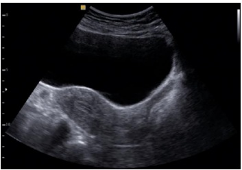
A a via abdominal e a fase progestagênica.
B a via abdominal e a fase estrogênica.
C a via endovaginal e a fase progestagênica.
D a via endovaginal e a fase estrogênica.
Questão 1966 · Colposcopia · 4000181845A fase do ciclo mais adequada para a realização da colposcopia é
A a primeira fase.
B a segunda fase.
C o pré-menstrue.
D a pré-ovulatória.
Questão 1967 · Diretrizes para o rastreamento · 4000181844No rastreamento do câncer de colo no Brasil, o Ministério da Saúde tem indicado que
A a citologia seja repetida com intervalo de 6 meses, em mulheres com idade superior a 30 anos, com resultado mostrando ASC-US.
B a citologia pode ser realizada a cada cinco anos, entre a idade de 30 a 64 anos, desde que dois exames, com intervalos anuais, sejam negativos.
C o início do rastreamento seja realizado a partir de 25 anos de idade, em todas as mulheres que iniciaram atividade sexual.
D o rastreamento com citologia em todas as mulheres com idade entre 25 a 64 anos, com atividade sexual, em intervalos trienais.
Questão 1968 · Ginecologia · Terapia hormonal · 4000181843Mulher de 55 anos de idade, pós-menopausada há cinco anos e sem sintomas vasomotores deverá ser tratada para dispareunia com diminuição secundária do desejo sexual, salvo contraindicações, inicialmente com
A terapia sexual.
B testosterona transdérmica.
C associação de estradiol + progestágeno sistêmica.
D estrógenos tópicos via vaginal.
Questão 1969 · Ginecologia · Etiologia · 4000181825Leia o caso clínico: uma mulher de 18 anos de idade vem sentindo desconforto pélvico há vários meses. Ao exame ginecológico, há massa anexial direita de 10cm. A TC do abdome revela que a massa parece ser sólida e circunscrita. Com a remoção cirúrgica, a massa é sólida e branca, com pequenas áreas de necrose. Microscopicamente, contém principalmente células mesenquimais primitivas, juntamente com um pouco de cartilagem, músculo e focos de diferenciação neuroepitelial. Qual é o diagnóstico mais provável?
A Tumor do seio endodérmico.
B Disgerminoma.
C Teratoma imaturo.
D Tumor mülleriano misto maligno.
Questão 1970 · Planejamento f amiliar · 4000181743Mulher, 22 anos de idade, sem comorbidades, iniciou vida sexual recente, vai a consulta com médica da saúde da família na UBS. Gostaria de método contraceptivo de menor risco tromboembólico. A melhor opção para essa paciente, dentre as abaixo, é:
A Medroxiprogesterona.
B Drospirenona.
C Etinilestradiol e levonorgestrel.
D Estradiol e nomegestrol.
Questão 1971 · Diretrizes para o rastreamento · 4000181742Mulher, 43 anos de idade, com abstinência sexual há 15 anos e papanicolau sem alterações significativas há 2 anos, vai à consulta na UBS muito preocupada com risco de câncer de colo uterino pois sua vizinha foi diagnosticada recentemente com essa afecção. A orientação mais adequada é:
A Realizar colposcopia e vulvoscopia.
B Discutir a histerectomia profilática.
C Não há indicação de coleta cérvico-vaginal.
D Indicar a realização de teste DNA-HPV.
Questão 1972 · Síndrome dos ovários policísticos · 4000181735Mulher, 21 anos de idade, refere ciclos menstruais a cada 90 dias, com duração de 5 dias. Nega dismenorreia. Refere uso de preservativo nas relações sexuais. Exame físico: bom estado geral, IMC: 28 kg/m², apresenta acne no rosto e manchas arroxeadas na axila e virilha. Entre os diagnósticos abaixo, o mais provável é:
A síndrome de Cushing associada a síndrome dos ovários policísticos.
B deficiência da 21-hidroxilase associada a síndrome dos ovários policísticos.
C hipotiroidismo secundário a síndrome dos ovários policísticos.
D síndrome dos ovários policísticos com resistência insulínica aumentada.
Questão 1973 · Ginecologia · Terapia hormonal · 4000181734Mulher, 53 anos de idade, refere ondas de calor (8 episódios/dia), sudorese e rubor facial há 8 meses. Refere hipercolesterolemia e que a mãe teve câncer uterino aos 50 anos de idade. Última menstruação há 1 ano. Nuligesta. Nega cirurgias prévias. Nega tabagismo. A conduta mais adequada entre as abaixo é:
A Estrogenioterapia vaginal.
B Terapia hormonal combinada transdérmica.
C Inserção de DIU hormonal.
D Fito-hormonioterapia com ácido gama-linolênico.
Questão 1974 · Ginecologia · Tratamento · 4000181733Mulher, 80 anos de idade, refere urgência e urge-incontinência há 6 meses. É hipertensa e diabética controlada com medicações. Refere noctúria 3 vezes por noite. Nega cirurgias. Nega tabagismo. A conduta mais adequada, dentre as abaixo, é:
A Prescrição de trospium ou mirabegrona.
B Neuromodulação vesical.
C Injeção intravesical de toxina botulínica.
D Prescrição de tolterodine ou oxibutinina.
Questão 1975 · Interpretação e conduta f rente as atipias citológicas · 4000181732Após 6 meses de um resultado de citologia oncótica de colo uterino com resultado de atipia de células escamosas, provavelmente não neoplásicas (ASC-US), uma paciente de 34 anos repete o exame e apresenta o resultado: lesão intraepitelial de baixo grau (LIEBG). De acordo com as Diretrizes para o Rastreamento do Câncer do Colo do Útero, o próximo passo para o tratamento adequado é:
A Nova coleta de citologia oncótica em 12 meses.
B Realizar teste de DNA-HPV.
C Nova coleta de citologia oncótica em 6 meses.
D Encaminhar paciente à colposcopia.
Questão 1976 · Vulvovaginites · Ginecologia · 4000181728Mulher, 28 anos de idade, assintomática, refere relacionamento com novo parceiro há 1 mês. Realizado exame físico ginecológico com identi cação de corrimento vaginal. A orientação que o médico deve dar à paciente em caso de
A vaginose bacteriana: será realizado o tratamento, mesmo que assintomático.
B detecção de protozoários na microscopia: está indicado a coleta do protoparasitológico de fezes.
C tricomoníase: não é necessário o tratamento do parceiro, pois não é mais considerada IST.
D vulvovaginite fúngica: só será considerada recidivante caso ocorra mais 3 episódios no próximo ano.
Questão 1977 · Quadro clínico · Exames complementares · 4000181727Mulher, 32 anos de idade, vai em consulta ginecológica devido a dismenorreia progressiva desde a menarca e dispareunia. Ao exame físico nota-se espessamento do septo retovaginal. A paciente trouxe uma ultrassonogra a transvaginal que caracterizava presença de cisto com conteúdo hemático no ovário direito, medindo 30 mm de diâmetro. O próximo passo propedêutico é:
A Punção do cisto ovariano para confirmação diagnóstica.
B Solicitar colonoscopia para investigação de lesão intestinal.
C Ressonância magnética de pelve para diagnóstico de outros focos de endometriose profunda.
D Tomografia computadorizada para excluir possível malignidade no cisto.
Questão 1978 · Tratamento cirúrgico · 4000181726Mulher, 62 anos de idade, hipertensa, obesa e diabética refere queixa de sangramento vaginal há 3 meses. Sem alterações no exame físico. No ultrassom transvaginal identi cou-se espessamento endometrial (8 mm). Realizada histeroscopia e biópsia do endométrio com resultado anatomopatológico de adenocarcinoma endometrioide do endométrio G1. Pela ressonância magnética, o tumor invade menos que a metade do miométrio. A conduta mais adequada a ser tomada é realizar histerectomia total com
A salpingooforectomia bilateral e coleta do lavado peritoneal.
B salpingooforectomia bilateral, linfadenectomia pélvica bilateral e coleta do lavado peritoneal.
C salpingectomia bilateral e coleta do lavado peritoneal.
D salpingectomia bilateral e linfadenectomia pélvica bilateral e coleta do lavado peritoneal.
Questão 1979 · Tratamento · 4000181725Mulher, 35 anos de idade, com sangramento uterino anormal há 1 ano, secundigesta secundípara, tendo realizado laqueadura tubária há 8 anos. Durante a investigação foram encontrados 3 leiomiomas uterinos submucosos com componente intramural. Realizou tratamento clínico sem sucesso com manutenção do sangramento. Entre as seguintes propostas terapêuticas, a mais adequada é:
A Miomectomia laparoscópica.
B Histerectomia laparoscópica.
C Miomectomia histeroscópica.
D Embolização de artérias uterinas.
Questão 1980 · Rastreamento · Rastreamento · Rastreamento mamográf ico · 4000181676Paciente, sexo feminino, casada, 53 anos e obesa, procura atendimento médico em UBS pela primeira vez e relata nunca ter realizado exames de rotina. Sobre o caso, qual conduta NÃO deve ser tomada?
A Solicitar TC de abdome.
B Solicitar hemograma, glicemia de jejum e lipidograma.
C Solicitar/realizar citologia oncótica.
D Solicitar mamografia.
E Verificar situação vacinal e atualizar se necessário.
Questão 1981 · Ginecologia · Tratamento · 4000181659Paciente de 26 anos agenda consulta com ginecologista devido à dor pélvica com duração de aproximadamente 30 dias. Relata que não tem parceiro xo e, nos últimos meses, apresentou relação desprotegida. Ao exame especular, apresenta secreção purulenta proveniente do colo do útero e, no toque vaginal, dor à mobilização do colo do útero e anexos. O ultrassom ginecológico não mostrou anormalidades. Para essa paciente, qual esquema antibiótico é o mais recomendado?
A Ceftriaxona e amoxicilina.
B Cefalexina e ciprofloxacino.
C Doxiciclina e azitromicina.
D Ceftriaxona e azitromicina.
E Clindamicina e metronidazol.
Questão 1982 · Ginecologia · Amenorreia primária · 4000181648Das patologias a seguir, estão associadas à amenorreia primária, EXCETO
A síndrome de Rokitansky.
B síndrome de Morris.
C síndrome de Kallmann.
D síndrome de Asherman.
E hímen imperfurado.
Questão 1983 · Hiperprolactinemia · Ginecologia · Hiperprolactinemia · 4000181647Quais dos seguintes sintomas podem estar associados ao aumento do hormônio prolactina no organismo?
A Queda de cabelo e acne.
B Hirsutismo e aumento do fluxo menstrual.
C Amenorreia e galactorreia.
D Irregularidade menstrual e disforia pré-menstrual.
E Dispareunia e dismenorreia.
Questão 1984 · Ginecologia · Tumores metastáticos · 4000181646A presença de células “em anel de sinete”, no exame de anatomopatológico, é um achado de qual dos seguintes tumores ovarianos?
A Tumor de Brenner.
B Tumor de Krukenberg.
C Teratoma imaturo do ovário.
D Tumor seroso.
E Disgerminoma.
Questão 1985 · Quadro clínico · Exames complementares · 4000181645Uma paciente de 55 anos, com antecedente de menopausa aos 50 anos, refere que nunca usou terapia hormonal e faz tratamento de hipertensão e diabetes. Relata que, há cerca de um mês, apresentou sangramento vaginal em dois momentos diferentes, durando aproximadamente 2 dias cada episódio. Apresenta citopatológico com atro a acentuada. Ultrassom transvaginal evidencia a presença de dois miomas intramurais de 0,7 e 1,3 cm respectivamente; volume uterino de 35 cm³; e endométrio de 11 mm. Ovários não foram visualizados. Diante desse caso, qual é a melhor conduta?
A Histerectomia total abdominal mais anexectomia.
B Acetato de medroxiprogesterona trimestral.
C Iniciar estriol creme vaginal.
D Histeroscopia diagnóstica.
E Miomectomia.
Questão 1986 · Ginecologia · Tratamento · 4000181644Uma mulher de 53 anos vem ao ambulatório de uroginecologia referindo perda urinária. Possui histórico de 5 partos via vaginal e apresenta menopausa há 7 anos, sem terapia de reposição hormonal. No exame físico ginecológico, apresenta prolapso de parede anterior grau 1, sem perda urinária à valsalva. Apresenta resultado de estudo urodinâmico que revelou a presença de contrações não inibidas do músculo detrusor como único achado. Nesse caso, a abordagem terapêutica inicial é
A correção cirúrgica do prolapso de útero e da parede vaginal anterior por via vaginal.
B terapia de reposição hormonal apenas com estrogênio via oral.
C colpossacrofixação.
D tratamento comportamental podendo ou não associar anticolinérgicos.
E correção de parede vaginal anterior com tela, via vaginal.
Questão 1987 · Quadro clínico · 4000181643Dentre as alternativas a seguir, qual delas apresenta os achados que seriam mais sugestivos de câncer de mama?
A Cisto único no quadrante inferior interno da mama esquerda.
B Cistos múltiplos em ambas as mamas.
C Nódulos difusos, simétricos, em ambas as mamas.
D Consolidação na mama direita que aparece logo antes da menstruação.
E Nódulo sólido único no quadrante superior externo da mama esquerda.
Questão 1988 · Vaginose citolítica · Ginecologia · 4000181642Pacientes que apresentam vaginose citolítica podem ter alguns sintomas semelhantes a outros tipos de vaginites, como prurido e corrimento esbranquiçado antes do período menstrual; ardor; queimação; disúria e dispareunia. Essa semelhança de sintomas com outras patologias do trato genital inferior pode atrasar o seu diagnóstico. Em relação à vaginose citolítica, é correto afirmar que
A é causada pela proliferação excessiva de Lactobacillus e pela redução do PH vaginal, que se encontra menor ou igual a quatro.
B o processo inflamatório intenso é causado por Streptococcus do grupo B e Escherichia Coli.
C tem como agente etiológico o parasita flagelado Trichomonas vaginalis.
D é o processo inflamatório vaginal causado pela proliferação de fungos como o Candida tropicalis.
E é causada pela substituição da flora microbiana vaginal denominada
Questão 1989 · Vaginose bacteriana · Ginecologia · 4000181641Uma paciente de 40 anos apresenta leucorreia de odor fétido. Na citologia oncótica cervical, foi demonstrada a presença de clue-cells. Sobre esse assunto, informe se é verdadeiro (V) ou falso (F) o que se afirma a seguir e assinale a alternativa com a sequência correta. ( ) O teste de aminas possivelmente será positivo. ( ) O PH vaginal, nesse caso, será menor que 4,5. ( ) Gardnerella vaginalis, Bacterioides, Mobiluncus e Peptococcus pequenas quantidades. ( ) Nesse caso, é necessário o tratamento do parceiro.
A V – V – V – F.
B V – F – V – F.
C V – V – F – F.
D F – F – F – V.
E F – F – V – F.
Questão 1990 · Ginecologia · Incontinência urinária de urgência · 4000181640A bexiga hiperativa é uma das causas de perda urinária na mulher e está relacionada à hiperatividade do músculo detrusor. Sobre esse assunto, é correto afirmar que
A o tratamento da bexiga hiperativa é cirúrgico com sling transobturatório.
B para o diagnóstico, é imprescindível a realização do estudo urodinâmico em todos os casos.
C para o tratamento, é possível usar medicações anticolinérgicas e técnica de biofeedback.
D a imipramina é o tratamento de primeira escolha.
E a bexiga hiperativa acontece devido ao prolapso de parede vaginal anterior.
Questão 1991 · Etiopatogenia · CA 199 · Alf af etoproteína AFP · 4000181585Assinale a alternativa que corresponde à sequência correta de marcadores mais relacionados aos seguintes tipos de câncer, nesta ordem: câncer de pâncreas / câncer de ovário / câncer colorretal / hepatocarcinoma.
A Ca 125 / CEA / Ca 19-9 / alfafetoproteína.
B Ca 19-9 / Ca 15-3 / CEA / LDH.
C CEA / Ca 125 / CEA / LDH.
D Ca 19-9 / Ca 15-3 / CEA / alfafetoproteína.
E Ca 19-9 / Ca 125 / CEA / alfafetoproteína.
Questão 1992 · Desejo sexual hipoativo · Ginecologia · 4000181550Mulher, 50 anos de idade, menopausada aos 48 anos, vem à consulta para dosagem hormonal, principalmente a de testosterona. Reclama que vem sentindo-se indisposta para a atividade sexual e também com secura vaginal. Refere que tem tido acesso a comentários nas redes sociais sobre a importância e os benefícios da reposição de testosterona neste período da vida. Qual destas opções seria justificada para esta paciente?
A Valores baixos de testosterona em mulheres na pós menopausa só devem ser corrigidos com a reposição isolada de androgênios caso o risco de câncer de mama seja baixo e a paciente seja histerectomizada.
B É desnecessária a realização de tal exame. A presença de hipodesejo seguindo os critérios classificados no DSM 5 como Transtorno do Interesse/ Excitac
C Valores baixos de androgênios devem ser melhor investigados com a dosagem de testosterona biodisponível ou calculado usando a fórmula de Vermeulen para então, julgar a necessidade da reposição.
D A maioria dos estudos relaciona o uso de testosterona na pós menopausa ao aumento da pressão arterial sistêmica e à apneia do sono. Recomenda-se portanto, nestes casos, evitar a reposição mesmo que os valores séricos indiquem deficiência.
E Embora não haja comercialmente uma preparação de testosterona disponível e aprovada pela ANVISA em nosso meio, existem estudos sobre o menor risco de efeitos colaterais quando em uso de fórmulas bioidênticas.
Questão 1993 · Ginecologia · Dismenorreia · 4000181518Jovem feminina, 19 anos de idade, conta-lhe que desde que cou mocinha, aos 12 anos, sofre muito em suas menstruações, Diz-lhe que desde a menarca tem fortes cólicas em hipogástrio, que impedem suas atividades diárias, durante toda a menstruação. Há 2 anos foi lhe prescrito anticoncepcional hormonal oral, com cada comprimido contendo 150 mcg de desogestrel e 20 mcg de etinilestradiol, sem melhora alguma dos sintomas. Nega sexarca. Em relação ao quadro exposto é correto afirmar que I. A queixa é compatível com dismenorreia primária e deve-se interromper anticoncepcional hormonal e substituí-lo por antinflamatório inibidor da prostaglandina sintetase. II. O quadro clínico apresentado poder ter como causa principal ciclos anovulatórios. III. Deve-se investigar alterações millerianas como, por exemplo, útero septado, útero bicorno ou didelfo. IV. Deve-se investigar alterações de cavidade uterina através de histeroscopia. V. Para esta paciente está indicada ultrassonografia pélvica ginecológica. Estão corretas apenas as alternativas
A I, II e IV.
B III e V.
C II, III e V.
D II e IV.
E I.
Questão 1994 · Estadiamento · 4000181517Com relação ao estadiamento do câncer de colo uterino, assinale as alternativas abaixo. I. – Recomenda-se, se disponível, tomogra a computadorizada por emissão de pósitrons (PET-TC) nas pacientes em estádio > IB2, principalmente na suspeita de envolvimento linfonodal. II - O exame de toque retal se mostra superior ao estudo por ressonância na avaliação dos paramétrios. III - Naquelas que apresentem sinais sugestivos de invasão de bexiga ou reto pelos exames de imagem, devem-se realizar cistoscopia e retossigmoidoscopia, respectivamente. Sobre esta situação selecione a opção correta.
A As afirmativas I e II são verdadeiras. A afirmativa III é falsa.
B As afirmativas I e III são verdadeiras. A afirmativa II é falsa.
C As afirmativas II e III são verdadeiras. A afirmativa I é falsa.
D As afirmativas I, II e III são verdadeiras.
E As afirmativas I, II e III são falsas.
Questão 1995 · Estadiamento · 4000181516Com relação ao estadiamento do câncer de mama, assinale as afirmativas abaixo. I - Naquelas em estádio IIA, a cintilogra a óssea é o exame mais importante. Favorecemos que radiogra a de tórax e US de abdome e pelve sejam solicitadas primariamente como linha de base para comparação futura. II - Em pacientes em estádio ≥ IIB, sobretudo naquelas com múltiplos LNs envolvidos ou tumores localmente avançados, recomendamos tomografia computadorizada (TC) de tórax, abdome e pelve e cintilografia óssea. III - Entretanto, nesses casos da assertiva acima e se disponível, favorecemos a realização de tomogra a computadorizada por emissão de pósitrons (PET-TC) no estadiamento no lugar da TC de tórax, abdome e pelve e cintilografia óssea por ser um exame mais sensível nesse grupo de pacientes. Sobre esta situação selecione a opção correta.
A As afirmativas I e II são verdadeiras. A afirmativa III é falsa.
B As afirmativas I e III são verdadeiras. A afirmativa II é falsa.
C As afirmativas II e III são verdadeiras. A afirmativa I é falsa.
D As afirmativas I, II e III são verdadeiras.
E As afirmativas I, II e III são falsas.
Questão 1996 · BIRADS · 4000181515O American College of Radiology recomendou o Breast Imaging Reporting and Data System (BI- -RADS) como esquema padrão para a descrição de lesões mamográ cas. Qual é o BI-RADS numa paciente com achado suspeito e que deve ser considerada a biópsia?
A 1.
B 2.
C 3.
D 4.
E 0.
Revisar: possível letra faltando em enunciado
Questão 1997 · Ginecologia · Síf ilis · 4000181514Paciente com história de uma úlcera endurecida na região genital, indolor e com dor mínima à palpação, que não acompanha linfoadenopatia inguinal. Apenas com esses dados, é possível suspeitar de qual patologia?
A Sífilis.
B Donovanose.
C Cancro mole.
D Herpes genital.
E Linfogranuloma venéreo.
Questão 1998 · Vaginose bacteriana · Ginecologia · 4000181513A vaginose bacteriana ou vaginite por Gardnerella, trata-se de uma alteração da ora bacteriana vaginal normal que resulta na perda de lactobacilos produtores de peróxido de hidrogênio e em supercrescimento de bactérias predominantemente anaeróbicas. Sobre o diagnóstico da vaginose bacteriana, analise as alternativas abaixo. I - O pH das secreções vaginais é menor que 4,5 (em geral 2,7 a 3,7). II - As secreções vaginais são cinza e revestem finamente as paredes vaginais. III - A adição de KOH às secreções vaginais libera um odor de peixe semelhante ao de amina. Sobre esta situação selecione a opção correta.
A As afirmativas I e II são verdadeiras. A afirmativa III é falsa.
B As afirmativas I e III são verdadeiras. A afirmativa II é falsa.
C As afirmativas II e III são verdadeiras. A afirmativa I é falsa.
D As afirmativas I, II e III são verdadeiras.
E As afirmativas I, II e III são falsas.
Questão 1999 · Falência ovariana prematura · Ginecologia · Climatério · 4000181512A idade da menopausa parece ser determinada geneticamente. Sobre a menopausa, analise as a rmativas abaixo. I - Fatores tóxicos para o ovário costumam resultar em menopausa precoce. II - A insuficiência ovariana prematura é definida como menopausa antes dos 40 anos de idade. III - Por estar associada a alterações dos hormônios hipotalâmicos e hipo sários, é considerada um evento central. Sobre esta situação selecione a opção correta.
A As afirmativas I e II são verdadeiras. A afirmativa III é falsa.
B As afirmativas I e III são verdadeiras. A afirmativa II é falsa.
C As afirmativas II e III são verdadeiras. A afirmativa I é falsa.
D As afirmativas I, II e III são verdadeiras.
E As afirmativas I, II e III são falsas.
Questão 2000 · Padrão de disseminação · Ginecologia · 4000181511Qual seria um sítio menos provável de metástase de neoplasia do ovário? Respostas: 1 12 23 34 45 56 67 78 89 100 111 122 133 144 155 166 177 188 199 210 221 232 243 254 265 265 276 287 298 309 320 331 342 353 364 375 386 397 408 419 430 441 452 463 474 485 496 507 518 529 540 551 562 573 584 595 606 617 628 628 639 650 661 672 683 694 705 716 727 738 749 760 771 782 793 804 815 826 837 848 859 870 881 892 903 914 925 936 947 958 969 980 991 1002 1013 1024 1035 1046 1057 1068 1079 1090 1101 1112 1123 1134 1145 1156 1167 1178 1189 1200 1211 1222 1233 1244 1255 1266 1277 1288 1299 1310 1321 1332 1343 1354 1365 1376 1387 1398 1409 1420 1431 1442 1453 1464 1475 1486 1497 1508 1519 1530 1541 1552 1563 1574 1585 1596 1607 1618 1629 1640 1651 1662 1673 1684 1695 1706 1706 1717 1728 1739 1750 1761 1772 1783 1794 1805 1816 1827 1838 1849 1860 1871 1882 1893 1904 1915 1926 1937 1948 1959 1970 1981 1992
A Fígado.
B Pulmão.
C Cérebro.
D Peritônio.
E Alça intestinal